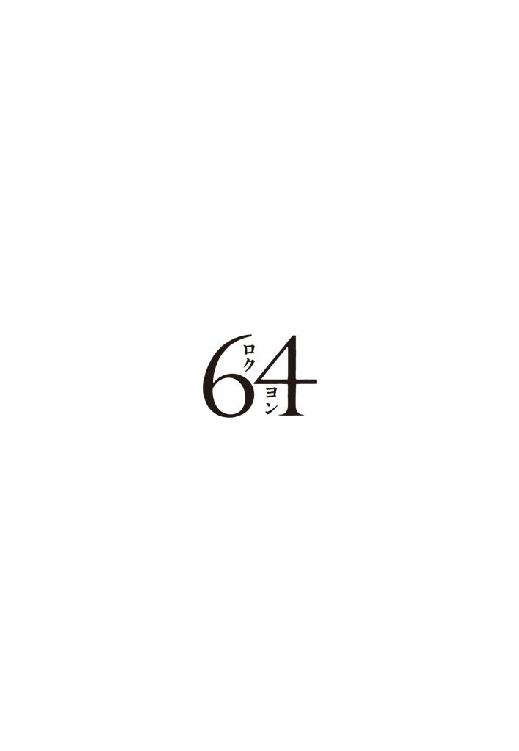

| 64（ロクヨン） | |
| 横山 秀夫 | |
| 文藝春秋 (2012) | |
64（ロクヨン）
横山秀夫

デザイン 関口聖司
カバーＣＧ 矢部弘幸
１
夕闇に風花が舞っていた。
タクシーを降りる足が縺れた。ポリスジャンパーを着込んだ鑑識係員が、署庁舎の玄関前で待っていた。促されて署内に入った。当直勤務員の執務スペースを抜け、薄暗い廊下を進み、裏の通用口から職員用駐車場に出た。
霊安室は敷地の奥まった一角にひっそりとあった。窓のないバラック建ての小屋。低く唸る換気扇の音が「死体保管中」を告げている。鍵を外した鑑識係員はドアの脇に退いた。ここでお待ちします。そんな控えめな目配せを残して。
祈ることすら忘れていた。
三上義信はドアを押し開いた。蝶番が鳴く。クレゾールが目と鼻にくる。肘の辺りに、コートの生地を通して食い込む美那子の指先を感じていた。
天井から眩い照明が降ってくる。腰の高さほどの検視台に青いビニールシートが敷かれ、その上に、すっぽりと白い布に覆われた人形の隆起が見て取れた。大人にしては小さく、かといって幼い子供だとも思えない、その中途半端な布の膨らみに三上はたじろいだ。
──あゆみ。
瞬時に呑み込んだ。娘の名を呼べば、娘の遺体になってしまいそうな気がした。
白布を捲る。
髪......額......閉じた目......鼻......唇......顎......。蒼白い少女の死顔が露になった。
凍りついていた空気がふっと動き、美那子の額が肩口に押しつけられた。肘を刺していた五指が弛緩していくのがわかる。
三上は天井を仰いでいた。腹の深いところから息が吐き出されていく。身体特徴を確かめるまでもなかった。Ｄ県から新幹線とタクシーを乗り継いで四時間、遺体の身元確認作業はものの数秒で終わった。
若い娘の入水自殺。そう連絡を受けて駆けつけた。少女は昼過ぎに近くの沼で発見されたのだという。栗色の髪にまだ湿り気を残している。十五、六歳か、あるいはもう少し上だろうか。そう長い時間沈んでいたわけではあるまい。顔には浮腫みもなく、頬から顎にかけてのほっそりとした輪郭や、あどけない口元や、そうした生前の面立ちを損なうことなく留めている。
皮肉な思いにとらわれる。あゆみが欲しがっていたのは、この少女のような儚げな顔だったのかもしれない。
三月経った今でも冷静に記憶を辿れずにいる。二階の子供部屋で音がした。床を踏み抜くような激しい音だった。鏡が粉々に割られていた。あゆみは灯のない部屋の隅でうずくまっていた。自分の顔を拳で叩き、ひしゃげさせ、掻きむしった。こんな顔いらない。死にたい──。
三上は少女の亡骸に合掌した。
この娘にも親がいるだろう。今夜中か、明日になるのか、いずれにせよ肉親は、この場所でこの現実と向き合わねばならない。
「出よう」
声が掠れた。乾いたものが喉に張りついていた。
美那子は頷くでもなく虚ろだった。ぽっかりと開いた大きな瞳が、意思も感情もないガラス玉のように映る。これが初めてではない。三月の間に二度までも、あゆみと同じ年頃の少女の遺体と対面した。
空はみぞれに変わっていた。
駐車場の暗がりで、三つの人影が大きな白い息を吐いていた。
「いや、なんにせよ、よかった......」
いかにも善良そうな色白の署長は、名刺を差し出しながら複雑な笑みを覗かせた。勤務時間外だというのに制服姿だ。傍らの刑事課長と係長までもがそうだった。三上の娘であると確認された場合に備え、礼を失せぬようにとの配慮だったに違いない。
三上は深く頭を下げた。
「わざわざご連絡いただき、ありがとうございました」
「よしましょう」
同じ警察官じゃないですか。続く台詞を省き、署長は「さあ、中で温まって下さい」と署庁舎に向けて体を開いた。
コートの背中が小さくつつかれた。視線を流すと美那子の懇願の瞳にぶつかった。早くここを離れたいと言っている。思いは三上も同じだった。
「せっかくですが、このまま直で戻ります。新幹線の時間がありますので」
「そんなぁ。泊まっていって下さい。宿も手配しましたから」
「お気持ちだけいただいて帰ります。明日の仕事もありますので」
仕事と聞いて、署長は手にしていた名刺に目を落とした。
──Ｄ県警察本部警務部秘書課調査官〈広報官〉 警視 三上義信──
小さな溜め息とともに視線が上がった。
「記者の相手は大変でしょう」
「ええ。まあ......」
三上は言葉を濁した。
広報室に置き去りにしてきた記者たちの挑み顔が浮かぶ。警察発表の中身を巡って激しくやり合っている最中に水死体発見の電話連絡が入った。無言で席を立つや、三上の家庭事情を知らない彼らは息巻いた。話はまだ終わってないでしょう。逃げるんですか広報官──。
「広報は長いんですか」
署長は同情顔だった。所轄の広報担当は副署長か次長だが、規模の小さい地方の署では署長が記者対応の矢面に立つ。
「この春からです。若い時分にも少し囓りましたが」
「ずっと警務畑を？」
「いえ、長らく二課で刑事をしていました」
こんな時でも某かの自負心が頭を擡げる。
署長は曖昧に頷いた。この県警でも刑事あがりの広報官は例がないのだろう。
「捜査に明るいのなら、記者も少しは聞く耳を持つでしょう」
「そうだと助かるんですが」
「いや、実際ウチも困ってるんですよ。あることないこと書き飛ばす記者がいましてね」
口を尖らせた署長は、その顔のままガレージに向かって手を上げた。黒塗りの署長車にライトが点灯したので三上は内心慌てた。待たせてあったはずのタクシーは消えていた。また背中をつつかれたが、この段になってタクシーを呼ぶと言い張るのは土地の好意を踏みにじるようで躊躇われた。
駅までの道は暗かった。
「ほら、この沼なんですよ」
車窓の右手に一際深い闇が広がると、待ちかねていたように助手席の署長が口を開いた。
「インターネットは本当に厄介な代物ですね。『自殺新名所ベスト10』なんてタチの悪いのがありまして、この沼がランクインしてるんですよ。契りの沼だとか妙な名前をつけられて」
「契りの沼？」
「見ようによってはハート形に見えるんです。来世で恋が成就するんだとか言って、今日の娘で四人目です。このあいだなんか、東京からわざわざですよ。それを新聞が興味本位に書くものだから、とうとうテレビまでやってきて」
「それはお困りですね」
「まったくです。一般人の自殺まで記事にされたのではたまったもんじゃない。お時間があれば三上さんに記者対策のコツをご教授願いたいところだ」
沈黙を恐れるかのように署長は喋り続けた。さりとて弾む会話など望むべくもなかった。気遣いに感謝しつつも、三上の相槌は途絶えがちになった。
人違いだった。あゆみではなかった。なのに胸の重苦しさは、この地に向かっていた時のままだった。死体が我が子でないことを願う。それは別の誰かの子であってくれと願うことなのだと思い知る。傍らの美那子は身じろぎもしない。触れ合う肩がいつになく華奢に感じられる。
車が交差点を折れた。真正面に光眩い新幹線の駅舎が現れた。駅前広場は広く、幾つものモニュメントが配されていた。人影は疎らだ。乗降客の数など度外視した政治駅なのだと前に耳にしたことがあった。
「署長、濡れますから、どうぞお乗りになったままで」
三上は早口で言った。もう後部座席のドアを半分開けていたが、車を降りたのは署長のほうが早かった。顔が上気している。
「不確かな情報で心労をお掛けしてしまいました。身長やホクロの場所が近かったので、もしやと思ったものですから。どうかお許し下さい」
「そんな──」
恐縮する三上の手が強く握られた。
「大丈夫です。お嬢さん、元気でいますよ。必ず見つかります。二十六万の仲間が二十四時間気に掛けています」
三上は腰を深く折ったまま署長車のテールランプを見送った。
美那子のうなじが氷雨に濡れていた。正体の乏しい体を引き寄せて駅舎に向かった。駅前交番の灯が目に入っていた。酔っ払いとおぼしき老人が路上に座り込み、若い巡査の腕を振り払っている。
二十六万人の仲間。
署長の言葉に誇張はない。所轄。交番。駐在所。全国津々浦々の警察施設にあゆみの顔写真が行き渡っている。見ず知らずの同僚たちが昼夜を分かたず「身内の娘」の消息に気を配ってくれている。警察一家。それは心強く、ありがたく、自分がその強大な組織の一員であった幸運を思わない日はない。だが──。
三上は冷気を噛み締めた。
想像だにしなかった。組織に縋ったことが、よもや己の弱みになろうとは。
服従──。
血が沸騰しそうになる時がある。
美那子には言えない話だった。失踪した一人娘を捜し出す。生きてこの腕に抱く。そのために親が耐え忍べないことなど一つとしてあるはずがなかった。
新幹線ホームにアナウンスが流れた。
車内は空席が目立った。窓際に美那子を座らせ、三上は小声で言った。
「署長も言ってたろう。無事だ。元気でやってる」
「.........」
「じきに見つかる。心配するな」
「......ええ」
「電話だってあったじゃないか。本当は帰りたがってるんだ。痩せ我慢さ。そのうちひょっこり帰って来るさ」
美那子は虚ろなままだった。暗い車窓が端整な横顔を映している。随分とやつれた。化粧も美容院も頭にない。だが、それが却って素の造作の美しさを際立たせていると知ったら、美那子はどんな思いを抱くだろうか。
三上の顔も窓にある。その両眼があゆみの幻像を見つめている。
父親似の顔を醜いと罵った。
母親の美しさを憎悪の的にした。
三上は窓から目を逸らした。
いっときのことだ。麻疹みたいなものなのだ。いずれ目が覚める。幼い頃のように、何か失敗をしでかしてしまった時のように、ぺろりと舌を出して帰って来る。そうとも、あの子が本気で親を憎んだり悲しませたりするはずがないじゃないか。
車両は揺れた。
美那子は三上の肩に凭れていた。不規則な息遣いは寝息とも喘ぎともつかなかった。
三上も目を閉じた。
そうしてみても、不釣り合いな夫婦を映した車窓は瞼の裏に居座り続けた。
２
Ｄ県平野部は朝から北風が強まった。
前方の信号は青だが、渋滞につかまり車は遅々として進まない。三上はハンドルの手を放して煙草に火を点けた。また一つ高層マンションの建設が始まり、フロントガラスのフレームから山の稜線が消えつつある。
五十八万世帯、百八十二万人......。朝刊で目にした人口動態調査の数字が頭に残っていた。その県人口の三分の一近い人間が、ここＤ市に住むか勤めるかしている。難産の末に隣接市町村と合併を果たし、地方版一極集中が加速したが、真っ先に行うはずだった公共交通機関の整備はいまだ手つかずだ。電車もバスも本数が少なく不便極まりないので道路は車で溢れ返る。
──いい加減動け。
三上は呟いた。師走の声を聞いて五日、今朝の渋滞はとりわけひどかった。ラジオは今にも八時の時報を打ちそうだ。前方にはもう県警本部の五階建て庁舎が見えている。奇妙な思いにとらわれる。見慣れた本部庁舎の無機質な外壁が何やら懐かしいものに感じられる。たった半日、北国を覗いてきただけだというのに。
遥々訪ねるまでもなかった。最初から無駄足とわかっていた。一夜明ければそう思う。人一倍寒がりなあゆみが北へ向かうはずがない。ましてや凍てつく沼に身を投げたりするものか。
三上は慌てて煙草を消し、アクセルを踏んだ。前方に車数台分の空きができていた。
どうにか遅刻は免れた。職員駐車場に車を置いて本庁舎へ急ぐ。そうしながら目は習慣で報道関係者用の駐車場をチェックする。思わず足が止まった。この時間、いつもならガラ空きの駐車場が満杯だった。各社のサツ廻り記者が参集しているということだ。重大事件の発生を疑ったのは一瞬だった。昨日の続きだ。彼らは手ぐすね引いて三上を待ち構えている。
──朝っぱらからやる気か。
三上は本庁舎の正面玄関を入った。広報室までは廊下を十歩と歩かない。ドアを押し開くと三つの硬い顔が同時に上がった。壁を背にして並ぶ執務机に諏訪係長と蔵前主任。ドアに近い末席に美雲婦警。部屋が狭苦しいので朝の挨拶は抑えた声になる。春先に、隣り合う資料室との壁を取り払って若干スペースを広げたが、いざ記者たちが一斉に押し掛けてくれば改修前と変わらず立錐の余地もない。
そんな光景を想像して入室したが、部屋に記者の姿はなかった。肩透かしを食わされた思いで窓際の席につく。呼ぶ前に諏訪が寄ってきた。いつになく神妙な顔だ。
「広報官。あの......昨日は......」
記者の動きを聞く頭になっていたから三上は面食らった。身元確認の顛末は、昨夜遅く、直属の上司である石井秘書課長に報告の電話を入れた。当然、室員には伝わっていると思っていた。
「人違いだった。心配掛けてすまなかったな」
途端に部屋の空気が和らいだ。諏訪と蔵前は安堵の顔を見合わせ、美雲は生き返ったように席を立って戸棚から三上の湯飲みを取り出した。
「それより諏訪、集まってるのか」
三上は顎で壁をしゃくった。すぐ隣が記者室だ。たいていは「記者クラブ」と呼ぶが、それは正確には常駐している十三社の親睦団体の名称だ。
諏訪の表情が再び曇った。
「全社揃い踏みです。広報官を吊し上げると息巻いてました。まもなく押し掛けてくると思います」
吊し上げ。胸中に熱が生じる。
「昨日の途中退席は、広報官の親戚が危篤だったということになっています。お含み置きを」
一拍置いて三上は頷いた。
機転の利く広報マン。諏訪はそうだ。警務部育ちの警部補で、広報室勤務は既に三年。巡査部長時代にも二年在籍しているので、今どきの記者の生態を熟知している。時に小利口な言動が鼻につくが、本音と建前を破綻なく出し入れして記者を懐柔する手並みには舌を巻く。二度目の広報室詰めで記者あしらいに磨きが掛かり、それが警務部内における諏訪の評価を押し上げてもいるらしい。
同じ二度目でも、三上の広報室勤務は筋が悪い。四十六歳にして二十年ぶりの出戻り異動だ。この春までは捜査二課の次席、それ以前は長く知能犯捜査係の班長として汚職や選挙違反事件捜査の現場指揮を執っていた。
三上は席を立った。デスクの横に置かれたホワイトボードに向き合う。『Ｄ県警発表・平成十四年十二月五日（木）』──記者向けの発表用紙をチェックするのが広報官の朝一番の仕事だ。県下十九の所轄管内で発生した事件事故の概要は、時々刻々、電話やファックスで広報室に送られてくる。パソコンが行き渡った最近では電子メールも使われるようになった。室員はその事案内容を所定の用紙にまとめ、ここと、記者室のホワイトボードの二カ所にマグネットで貼りだす。同時に県庁内にある「テレビ記者会」にも連絡を入れる。警察が取材の便宜を図っているということだ。なのに往々にしてその「警察発表」が記者との軋轢を生む。
三上は壁の時計に目をやった。八時半を回った。記者たちはどうしたか。
「ちょっとよろしいですか」
デスクの前に蔵前が立っていた。名前を見事に裏切る細身の体。いつもながら声も細い。
「例の談合の件なんですが」
「ん。聞けたか」
「それが......」
蔵前は口籠もった。
「どうした。専務が落ちないのか」
「わかりません」
「わからない？」
思わず蔵前を睨みつけた。
捜査二課が県立美術館建設を巡る入札談合事件を挙げたのが五日前だ。中堅どころの建設会社六社に強制捜査を掛け、役員八人を身柄にしたが、二課はまだ色気を持っている。標的は入札を陰で仕切っている地方ゼネコンの八角建設だ。その八角の専務をひそかに所轄に呼び、連日任意で取り調べているとの内部情報を三上は耳にしていた。首尾よく「黒幕逮捕」となれば地方版のビッグニュースだ。二課事件の被疑者の自白や逮捕状執行は夜にずれ込むケースが多い。つまりは記者発表の時間が各社の締切時間帯にぶつかる事態が予想されるので、そうなった場合に混乱をきたさぬよう二課の動きを把握しておけと蔵前に指示してあった。
「専務を署に呼んでるかどうかもわからないのか」
蔵前は俯いてしまっていた。
「先ほど次席に訊いてみたんですが......」
事態が呑み込めた。スパイと見なされたということだ。
「わかった。あとで俺が当たってみる」
肩の落ちた背中を見送り、三上は苦い息を吐いた。
以前、蔵前は所轄の刑事二課で内勤をしたことがある。そのツテで情報を取れるだろうと指示を出したが甘かった。広報室に情報を流せば記者に筒抜けになる。組織とマスコミの取引の材料にされる。刑事の多くは未だにそう信じ込んでいる。
三上とて例外ではなかった。ヒラ刑事の頃、広報室はただ胡散臭いだけの存在だった。「記者の手先」「警務部の犬」「昇任試験の勉強部屋」。うるさ型の先輩に倣ってそれぐらいの雑言は口にしたろう。実際、遠目にも馴れ合いの関係が疎ましかった。記者をおだてて夜な夜な飲み歩く。事件現場に現れても汗一つ掻かず、傍観者然として記者と雑談に興じている。そんな彼らを組織の一員と認める気にはなれなかった。
だから刑事三年目に広報行きを下命された時は消沈した。「刑事失格」の烙印を押されたのだと思い詰めた。捨て鉢な気持ちで勤務に就いたので「広報マン失格」のほうは自覚していた。記者対策の何たるかを知る間もなく、たった一年で刑事部に戻された。原隊復帰の喜びは格別だったが、しかし刑事の修業期にぽっかり空いた一年を人事の気まぐれと受け流すことはできなかった。組織に対する不信感が胸に燻った。その何倍もの恐怖心を植え付けられもした。「次の人事」を恐れ、尻に火が点いた格好で遮二無二に働いた。五年経っても十年が過ぎても定期異動の季節は落ち着かなかった。怯えが精勤を支えたと言っていい。遊興にも怠け心の誘惑にも付け入る隙を与えず、それが三上に実績をもたらした。捜査一課時代は盗犯から強行犯、特殊犯まで担当して賞を重ねた。が、本当の意味で刑事の職能が開花したのは捜査二課に移籍してからだった。一貫して知能犯を担い、本部、所轄の別なく刑事部屋の一角に確かな居場所を築いてきた。
それでも「生粋の刑事」を名乗るのは憚られた。忘れたくとも周囲がそうさせてくれなかった。書かれてはならない捜査情報が新聞に出るたび、上司と同僚の視線は不自然に三上を避けた。被害妄想として自己処理するにも限界があった。「魔女狩り」の見えざる手が忍び寄ってくる、あの悪寒にも似たおぞましい感覚は体験した者にしかわからない。どれほど仕事で上司を唸らせようが、警部補から警部へと昇任を果たそうが、三上が情報漏洩の犯人を狩る側に組み入れられることは一度としてなく、その意味で広報の勤務経験は「前科」も同じだった。
広報官をやってもらいます。この春、赤間警務部長に異動を内示された時、真っ白になった頭を駆け抜けたのも前科の二文字だった。赤間はつらつらと任命理由を語った。
〈大義も定見もなく、ただ警察の権威を貶めんがために失策を論う昨今のマスコミは看過できません。甘やかしたからつけ上がったんです。あなたのように無愛想で、記者に睨みの利く強面の広報官が必要です〉
額面通りには受け取れない話だった。もとより警察は「男」を売りにしている猛者集団だ。強面の者など刑事部の内にも外にも幾らだっている。刑訴法の運用しか頭にない働き盛りの警部をひょいと摘み上げ、警察本来の職務とは次元を異にする、組織防衛の門番に据えることにいかなる人事上のメリットがあるのか。赤間のほうは「抜擢」の口ぶりだった。広報官は警部では座れぬ調査官級ポストだ。内示は警視昇任を確約していたが、そのまま刑事部に残ったとしても、三上の二年後三年後の昇任は見えていたから、お門違いの栄転話は鼻先に餌をぶら下げられたようで不快だった。
「前科」が人選に影響を及ぼしたのは確かなことに思えた。一つのポストに複数の候補者名が挙がった場合、保険を掛ける意味合いから過去の勤務経験者を充当するのが警察人事の常道。だから三上にとっての問題は広報官に自分を選んだ警務部ではなく、三上を差し出すことを了承した刑事部の本音にあった。意を決して夜更けに荒木田刑事部長の官舎を訪ねた。もう決まったことだと一蹴された。二十年前と同じだった。職能を見限られた気がした。刑事として生きた歳月の長さが、落胆と失望をより深刻なものにさせた。
二年で刑事部に戻る。幾つもの感情をその一言に封じ込めて広報官の任に就いた。腐りはしなかった。投げやりな気持ちで徒に日々を浪費する愚は二度と犯したくない。何より長年の精勤で組み上がった脳と体が、突きつけられた課題の放置を許さなかった。
広報室の改革。それが最初にやるべき仕事であることはわかっていた。
二十年前に垣間見た広報の現場は多分に偽善的だった。ビジョンも戦略もあやふやなまま、記者とうまく付き合うことがただ求められた。ソフトな物腰で警察官臭を消し、報道という仕事の理解者を装い、警察組織の閉鎖性に苛立つマスコミの八つ当たり的な抗議を一手に引き受ける。世間に向けて「広報広聴係」を標榜していながら、「広聴」は専ら記者の刺々しい言葉に分別顔で頷くことであり、世論の代弁者を気取る彼らに日々ガス抜きの場を提供し続けていた。俺たちは消波ブロックだ。当時の広報官はそう自嘲した。マスコミの機嫌を取り、なあなあの関係を築き、警察批判の矛先を鈍らすことが仕事のすべてだと言わんばかりだった。
まだ広報の歴史が浅かった。それがそのまま記者対策の未熟さに繋がっていたのは確かだ。しかし元を正せば、情報のアウトプットを広報室に一元化するという、警察庁のお仕着せによるシステムが地方警察に馴染まなかったのだとも言える。事件を挙げるのは刑事部をはじめとする警察の「現業部門」だ。その業績発表の場を警務部が取り仕切る形式には、現業の権限を剥ぎ取る思惑が見え隠れする。それまで刑事部は、部長や課長の裁量でダイレクトに報道をコントロールしていたし、下は下で一線の刑事が手柄話を記者に小出しにする程度のことは黙過されていた。「魔女狩り」なる禍々しい言葉は、そもそも刑事部内に存在しなかったのだ。
広報制度は黒船だった。初代の広報官はそんな感慨を漏らしたという。幕末よろしく刑事部はがたついた。導入まもない頃こそ警務部に対する嫌悪感を剥き出しにしていたが、やがてそれも影を潜め、じわじわと管理部門的な新制度に染まっていった。いや、意識的に取り込んだのかもしれない。刑事部が損得勘定抜きの職人集団だった時代は終焉を迎えていた。現場経験に乏しい、管理職の脳を持った上級幹部が少なからず出現し始めていた。彼らは新設された広報制度をスケープゴートにした。野放し状態だった現場からの情報漏れに歯止めを掛けるべく巧みに利用した。そう読み解けば合点がいくのだ。
実際、現場は屈折した。総じて刑事たちは夜廻りの記者に対して口が重くなった。「広報に訊け」が流行り言葉のように蔓延し、刑事部屋にも情報漏れを互いに牽制し合う気配が漂い始めた。そうした部内の空気の濁りは苛立ちに変化し、鬱憤晴らしのごとく広報室に向けられた。実のある捜査情報は一切寄越さず、それでいて新聞に特ダネが載ると広報室に責任をなすりつけた。やっかみや畏れが敵視に拍車を掛けた。広報室は警務部秘書課の直轄部署だ。即ち室員は本部長の息の掛かったお庭番的な部下と見なされる。他のセクションから向けられる視線は、だから常に冷ややかで刺々しい。
いずれにせよ、広報室は不幸な生い立ちを背負わされた。情報を一元化するための窓口でありながら、入ってくる情報の量と速度は「離島」に近かった。協力的なのは交通安全施策をＰＲしたがる交通部ぐらいのものだ。なるべくして、広報室は記者たちに舐められた。集約された情報の窓口ではなく、記者発表のお膳立てをするだけの部署だと見切った彼らの振る舞いは不遜だった。片や二階の警務部長室は、記者を飼い馴らせと無理難題の霰を降らせてくる。明けても暮れても板挟みだった。警務部長室と記者室。刑事部と記者室。それらの狭間で翻弄され続けた広報室は消耗し、疲弊し、嘆息の巣と化していた。
その構図は二十年経っても本質的に変わっていなかった。諏訪のような広報のエキスパートが幾人か育ちはしたものの、「上」「現業」「マスコミ」の三方塞がりの状況には苔が生えた感すらあった。Ｄ県警の特殊事情もある。よその県警の広報は、この十年ほどの間に「室」から「課」への移行が駆け足で進んだ。幹部ポストのインフレ化が後押しした面もあったろうが、広報が名実ともにエリートコースとなっている大規模県警に追いつけとばかりに、中小の所帯の県警は次々と看板を掛け替えた。昇格すれば発言力が増すのは個人の昇任と同じだ。現業部門との関係にも変化が生じた。情報交換が活発化し、利害の調整を図って連携し、結果、事件のガサ入れ情報などを戦略的にマスコミに流す広報システムが今や主流になりつつある。
なのにＤ県警は未だ「室」のまま据え置かれ、昇格はおろか人員拡充の話すらない。歴代の警務部長が機構改革に消極的だった。四年前に一度、本庁の指示で昇格の案が浮上したことがあったらしいが、赤間の前任者だった大黒部長が潰した。記者と結託されたら厄介だぞ。どこぞで痛い目にでも遭ったのか、大黒はマスコミの力をバックに組織内で幅を利かせる広報マンの出現を極度に恐れていたという。赤間も人員不足を理由に現状維持の方針を踏襲した。飼い殺し。矮化栽培。Ｄ県警広報室の歴史は、そうした抑圧的な単語の羅列で解説できる。
負の歴史を断ち切るために広報官になった。三上はそう思うことにした。広報室を「自治」するという、至極当たり前のことを当面の目標に定めた。真っ先に起こした行動は刑事部への斬り込みだった。戦略カードとして使える捜査情報が欲しかった。記者対策を行う上で、ナマの捜査情報こそが唯一絶対の武器だと確信していた。武装して記者と対峙する。互いを牽制し合う「大人の関係」を築く。さすれば、自ずと警務部長室の干渉も弱まり、三方塞がりの状況から脱却できる。三上が描いた広報改革の道筋はそうだった。
現業部門の雄を自認する刑事部の壁は厚かった。三上が長く在籍した捜査二課はまだしも、捜査一課の口の堅さは天晴れと言うほかなかった。その一課を軸に昼間は各課に日参し、幹部との雑談の中から捜査状況の感触を探った。勤務時間外は人脈を頼りに中堅どころの刑事を当たった。手土産をぶらさげ、先方の非番や公休日を狙って官舎に押しかけた。駆け引きを抜きに本音で迫った。記者に対抗するために情報が必要なのだと口説いて回った。もう一つの本音は胸の奥にしまっていた。先を見ていた。二年後に刑事部に戻れたとして、しかし今度は「前科二犯」だ。三上が広報官でいる間、刑事部の人間たちに異邦人とみなされてはならない。善くも悪くも広報室の思考を間断なく彼らに知らせておくことが、刑事部復帰に向けた必須の準備なのだと心した。
二カ月、三カ月と刑事詣でを続けた。さしたる収穫は得られなかったが、密かに目論んでいた別の効果は出始めた。およそ広報官らしからぬ三上の動きは記者たちのアンテナに引っ掛かり、少なからず刺激を与えた。一目置く。彼らの視線に変化の兆しが見て取れた。そもそも「現住所」は広報室でも「本籍」は捜査二課の異色広報官だ。数年後に刑事部の要職に就くかもしれない三上に対しては、着任当初からある種の遠慮と模様眺めの空気があった。記者にとって刑事部が情報収集の「最重点地区」なのは今も昔も変わらない。三上の刑事詣でが、その刑事部と広報室の「近さ」を彼らに意識させた。接近してくる記者が増えた。ウエルカムの顔を見せずに起きた初めての現象だった。
三上はその機に乗じて記者たちの妄想を掻き立てる戦略をとった。僅かな手持ちの情報を最大限利用した。動いている事件の話を匂わせ、オブラートに包んだ言葉や微妙な表情の変化で各社個別にサジェスチョンを与えた。彼らを引きつけ、求心力を高め、これまで軽んじられていた広報官の存在を知らしめた。馴れ合いの関係は避けた。暇つぶしに広報室に現れる記者には笑みを封印して緊張感を強いた。薄っぺらな警察批判や苦情は毅然と撥ねつけた。その一方で真っ当な主張には耳を傾けた。交渉にも時間無制限で応じた。決して媚びることなく、しかし納得すれば一定の譲歩もした。順調だった。記者絶対優位の歪な関係は解消され、彼らもそのこと自体に不満を抱いているふうはなかった。際限なく情報を引き出したがるマスコミ。組織にとって有益なことだけを書かせたい警察。立場を異にする政略的な関係であっても、面と向かうその瞬間、瞬間に一握りの信頼感を持ち寄りさえすれば、双方が許容しうる落としどころが見つかる。そんな自信めいた思いを三上が抱くまでに記者対策の下地は整いつつあった。
鬼門は警務部長室だった。記者室との関係改善によって干渉が弱まるはずが、その読みは見事に外れた。赤間は三上の広報室運営に不快感を示し、ことあるごとに疑義を差し挟んできた。譲歩で折り合いをつける交渉は敗北主義だと面罵され、日々の刑事詣では未練がましい行為と嘆息された。不可解だった。「強面」の広報官を欲した赤間は、三上の「本籍効果」も折り込み済みだったはずだ。その効果を最大限活用した。結果もついてきた。それがなぜ気に食わないのか。意を決して赤間に真意を問うた。広報室が外交カードとして捜査情報を握る意義を力説した。返ってきた言葉は耳を疑うものだった。
〈およしなさい。あなたが情報を得れば記者に漏らしてしまう可能性が生じます。何も知らなければ何も話せない。違いますか〉
愕然とした。赤間が求めていたのは「強面の案山子」だった。何もするな。考えるな。そのごつい面相で記者を睨みつけていろ。そう言われたも同じだった。記者対策ならぬ記者支配。真性のマスコミ嫌い。赤間が内包する屈折は三上の想像を遥かに超えていた。
おいそれとは引き下がれなかった。ここで赤間に盲従したら、広報室は二十年前に逆戻りだ。ようやく緒についた改革を前に進めたい。水泡に帰するのはいかにも惜しい。その歯噛みは自分でも驚くほど強かった。外の風を肌で感じていたからだと思う。刑事時代には意識すらしなかったものが見えていた。警察と世間の間には尋常ならざる高い壁がある。広報室は外に向かって開かれた唯一の「窓」なのだ。どれほどマスコミが偏狭でエゴイスティックであろうとも、こちらから窓を閉ざしてしまえば警察組織は完全に社会性を喪失する。
もとより刑事の心は発火していた。唯々諾々、警務の案山子役を演じ続けることは本籍抹消を意味する。人事権者に歯向かう馬鹿はいない。山間部の所轄にでも飛ばされようものなら、刑事部復帰どころか組織の中で一気に過去の人になりかねない。しかし見方を変えれば奇貨だった。事態が変わって古巣への復帰が現実味を帯びた時、県警ナンバー２の警務部長に楯突いた武勇伝は「前科二犯」を浄化して余りある。
三上は細心の注意を払って赤間と対峙した。それまで以上に弁えた部下を装い、感情を抑制し、筋を通すことだけを考えた。分別顔で話に聞き入り、どうあっても呑めない指示命令に対してのみ「お言葉ですが」を枕詞に反論した。あるべき記者対策の具申もした。そして粛々と広報改革を継続した。まさしく薄氷を踏む思いだった。赤間の苛立ちが脈動までも伝わってきた。それでも三上は「お言葉ですが」を繰り返した。今にして思えばリスクを取ったことで気持ちが高揚していた。半年に亘って赤間の眼光から視線を逸らさなかった。戦っている実感があった。勝ってはいないにせよ、決して負けてはいなかった。だが──。
あゆみの家出が事情を一変させた。
煙草の灰が机に落ちた。続けざまに二本吸っていた。
三上は壁の時計を見た。その視界に蔵前の薄暗い横顔が入った。二課が情報提供を拒んだ。神通力が消えたということか。蔵前の背後には三上がいる。少なからず現業部門は意識してくれていたはずだった。
各課廻りと刑事詣でをやめたからだ。赤間に言われるがまま記者対策も──。
にわかに廊下が騒がしくなった。
来るぞ。諏訪と蔵前が目配せを交わした直後、ノックもなしにドアが開かれた。
３
瞬く間に部屋は記者で埋まった。
朝日、毎日、読売、東京、産経、東洋、地元のＤ日報、全県タイムス、Ｄテレビ、ＦＭケンミン......。重なり合う顔はどれも硬かった。彼らに対しても神通力が薄れたということだろう、肩を怒らせ露骨に三上を睨みつけてくる者もいる。大半は二十代の記者だ。羞恥なく感情を剥き出しにできる若さというものが、こんな時にはひどく恨めしい。少し遅れて共同通信と時事通信の記者も入室してきた。体は半分廊下にはみ出してしまっているが、ＮＨＫの記者も人垣の後ろで首を伸ばしている。Ｄ県警記者クラブに加盟の十三社が勢揃いした。
「始めようぜ」
記者の間から苛立ちを含んだ声が上がり、先頭にいた東洋新聞の二人が三上との距離を詰めた。こうした時、クラブの今月の幹事社が場を仕切る。
「広報官、まずは昨日の途中退席の件、きちんと説明願います」
口火を切ったのはブレザー姿の手嶋だった。『東洋新聞サブキャップ。Ｈ大卒。二十六歳。思想背景なし。生真面目。敏腕記者症候群』。三上の手帳にはそうメモ書きしてある。
「親戚の人が危篤だったことは諏訪係長から聞きました。しかし、だからといって話し合いの最中に黙って出ていくことはないでしょう。それきり連絡もつかないなんて、記者クラブを軽視してるとしか──」
「すまなかった」
三上は遮って言った。途中退席の理由は思い出すのも詮索されるのも嫌だった。
手嶋はちらりと隣の秋川を見た。『東洋新聞キャップ。Ｋ大卒。二十九歳。左傾。粘着質。記者クラブのボス格』。その秋川は取り澄ました顔で腕組みをしている。追及は部下に任せ、大物然と振る舞うのがこの男の常だ。
「謝罪する、ということですね？」
「そうだ」
手嶋はまた秋川の顔色を窺い、それから記者たちを振り向いて、「各社──」と了解を求めた。
その件はもういい、本題に入れ。無言の催促に頷いた手嶋は、手にしていたコピー用紙を三上のデスクの上に広げた。
《大糸市内における重傷交通事故について》
改めて目を通すまでもない。昨日、記者向けに貼り出した発表文の複写だ。脇見運転の主婦が老人を撥ねて全身打撲の重傷を負わせた。事案それ自体はありふれた交通事故だったが、発表の中身に火種が潜んでいた。
「では改めて伺います──なぜ加害者の主婦が匿名なんですか。ちゃんと実名で発表すべきでしょう」
三上は指を組み、手嶋の尖った目を見据えた。
「昨日説明した通りだ。この主婦は妊娠八カ月だった。事故を起こしてひどく取り乱していた。このうえ新聞に名前が出たらショックでどうなっちまうかわからん。だから匿名で発表した」
「説明になってませんよ。住所も『大糸市内』だけで所番地は伏せている。三十二歳の主婦Ａ子さん。これじゃあ実在する人物かどうかもわからない」
「実在する生身の人間だから母胎への影響を考慮したんだ。それのどこがおかしい」
反問が尊大に映ったらしい。部屋がざわつき、手嶋は気色ばんだ。
「なぜ警察がそこまで気を回す必要があるんです。過剰な配慮ですよ」
「主婦は逮捕されていない。老人は横断歩道じゃない所を横切った。しかも酒に酔ってたんだ」
「主婦だって前方不注視でしょう。それにこれ、重傷って発表してるけど重体事故ですよ。この銘川って老人、意識不明なんだから」
三上は目の端で秋川を見た。どこまで手嶋にやらせるつもりか。
「広報官、答えて下さいよ。結果の重大性は到底無視できるレベルじゃない。主婦の過失も問われて当然です」
食い下がる手嶋に目を戻す。
「だから新聞に名前を出して断罪するってわけか」
「あ、そういう言い方はないでしょう！ そんな話をしてるんじゃありません。警察が勝手に判断して名前や住所を隠すのがおかしいって言ってるんですよ。実名で書くか書かないか、それは我々が公益性に照らして判断することです」
「なぜこっちが判断するんじゃ駄目なんだ」
「事実関係が曖昧になるからですよ。発表された事件や事故が尾を引いたり中身が間違ったりしていても、当事者の名前も住所もわからないんじゃ、こっちは検証のしようがないじゃないですか。それに本部が匿名発表を連発するようになったら、所轄が手抜きの報告を上げてこないとも限らないでしょう？ 極端な話、匿名を隠れ蓑にして事実を曲げて発表したり、警察の都合で隠蔽に利用したり、そういうことだって起こりえますよ」
「隠蔽？」
「いや、だからさぁ」
横から長身の山科がしゃしゃりでてきた。『全県タイムス暫定キャップ。Ｆ大卒。二十八歳。代議士秘書の三男。迎合屋。トロッコ』──。
「必死こいて隠されるとさ、ひょっとしてとか思うわけよ。お偉いさんの娘だから名前伏せたんじゃないかとか、被害者が酔っ払いだったんで主婦に甘くしたとか」
「ふざけたことを言うな」
思わず声を荒らげた。山科は首を竦め、だが部屋は一気に沸騰した。
ふざけてるのはそっちでしょうが！ 何でもかんでも隠すから疑われるんですよ！ 妊婦なら誰でも匿名にしてたわけ？ 違うでしょ？ ちゃんと説明しなよ！
三上は罵声の降るに任せた。口を開けばこっちも怒声になる。
「ねえ、三上さん」
ようやく秋川が声を掛けてきた。ゆっくりと腕組みを解く仕種に「真打ち登場」の自己演出臭が漂う。
「記事に名前が出て妊婦や胎児に何かあった場合、発表した警察が世間から責められる。それを恐れているわけですよね」
「そうじゃあない。事情によっては加害者にだって書かれない権利があるってことだ」
「書かれない権利？」
秋川は鼻先で笑った。
「それ、ひょっとして加害者の人権って話ですか」
「そうだ」
部屋はまた騒然となった。
もう！ 聞いたふうなことを言うなって！ 人権無視はそっちのお家芸でしょうが！ 警察に人権をどうのこうの言われる筋合いはない！
「どうしてそんなにいきり立つんだ。匿名報道は世の趨勢だろう。最近は新聞もテレビも多用してるじゃないか。警察の段階でセレクトすることばかりをなぜ責める」
それが思い上がりだって言ってるんだよ！ 警察にそんな権限はありませんよ！ 報道の自由についてまったく理解してない！ 匿名発表は国民の知る権利を妨げる行為なんですよ！
「ああもう広報官、名前言っちゃいなよ。その妊婦がホントに具合が悪いんなら書いたりしないからさ」
またしても山科が口を挟んだ。揉みほぐすような口ぶりだ。
「結局のところ同じでしょ。匿名で発表したって、こっちは必要なら取材して名前も住所も調べるんだから。その妊婦だって、俺たちに直接取材されたらしんどいでしょうが」
ろくに取材しない記者に限ってそんなまやかしを口にする。「汽車」になれない「トロッコ記者」。広報制度のぬるま湯にどっぷりと漬かり、だから六年も警察を担当していながら一向に取材力が身につかない。だが──。
山科の打算を本心から嗤える記者がこの部屋に果たして何人いるか。首まで漬かっていようが半身浴だろうが、ぬるま湯にいるのは皆同じだ。その一方で若い彼らは上司から警察の独断専行を許すなと厳命されている。どの社にも広報制度がなかった時代に警察を廻った侍気取りの幹部がいて、一線記者の広報依存を嘆き、憤り、警察に手なずけられるなと檄を飛ばし続けている。それは現場のデスクを介して若い記者の脳に日々刷り込まれている。だからこの匿名問題も引くに引けない。彼らは「戦果」を求められている。手ぶらでは社に帰れないのだ。「報道の使命感」なるものがそもそも疑わしい。警察が折れた。実名を発表させた。その事実を欲しがっているだけではないのか。
「広報官、はっきりさせましょうよ」
秋川が腕組みに戻った途端、手嶋がせっつくように言った。額に脂汗が滲んでいる。
「主婦の名前、発表する気があるんですか、ないんですか」
「ない」
三上は即答した。手嶋が目を剥く。
「なぜ？」
「この主婦は事故係の署員に泣いて頼んだそうだ。マスコミには話さないでくれってな」
「ちょっと！ こっちを悪者みたいに言うのはやめて下さいよ」
「それぐらい恐ろしいことなんだ、新聞に書かれるってことは」
「問題のすり替えだ。卑怯ですよ！」
「何とでも言え。主婦の名前は発表しない。これはＤ県警の決定事項だ」
部屋は一瞬静まり返った。怒号の嵐に備えて三上は身構えた。だが──。
「変わりましたね、三上さん」
秋川が切り口を変えた。両手をデスクにつき、三上に真顔を寄せてきた。
「我々はあなたに期待していたんですよ。前任の船木さんと違って、こっちの顔色を窺わない代わりに上に対してもはっきり物を言う。正直驚きましたよ、異動してきた頃は。なのに変節した。木で鼻を括ったように県警の方針をこっちに押しつけるだけになった。なぜです？」
三上は黙した。動揺を気取られまいと宙を睨みつけた。
秋川は続けた。
「広報室は窓だと言ったのは三上さんでしょう。その広報官が他の警察官と同じように組織べったりじゃ困ります。誰かが外の声に耳を澄まし、組織に物申す覚悟と客観性を持っていなければ、警察はいつまで経っても窓なしのブラックボックスです。それでいいんですか」
「窓はある。そっちが考えてるほど大きくないだけのことだ」
一瞬、秋川は落胆の表情を覗かせた。その段になって、彼が皮肉や非難ではなく、本音を語っていたらしいことに気づいた。
改めてこちらを見つめた秋川の目は醒めていた。
「この際、聞かせて下さい」
「何をだ」
「匿名問題に関する、あなた個人の考えです」
「個人も組織もない。答えは一つだ」
「それ、本心ですか」
三上は再び黙った。秋川もそうした。瞳の探り合いになった。五秒......。十秒......。長い時間に感じられた。
秋川が深く頷いた。
「よくわかりました」
背後の記者たちを見回した秋川は、ややあって三上に顔を戻した。
「では、広報官にではなく、Ｄ県警に対して記者クラブの総意として申し入れます。この主婦の実名を明らかにして下さい」
回答済みだ──三上は目で言った。
秋川はまた頷いた。
「実名で発表すれば必ず実名で書かれる。つまりＤ県警は我々をまったく信用していない。そういうことでいいですね」
最後通牒でも突きつけるような物言いだった。
秋川は背中を向けた。他の記者たちも踵を鳴らして次々と部屋を出ていった。このままでは済まない。そんな不穏な空気だけが狭い室内に残された。
４
──脅したつもりか。
三上は荒い息を吐き出し、机の上に残された発表文のコピー用紙を捩じってゴミ箱に投げ入れた。これまでの揉め事とは明らかに異質だった。懐深く攻め込まれた。あれほど殺気立った記者たちを目の当たりにしたのは初めてのことだった。それがまた腹立たしさに拍車をかける。人が死んだわけでもない、ただの交通事故だ。匿名問題さえ絡んでいなければ連中は鼻にもかけず、今どきは地元紙だって記事にするかどうか怪しい小ネタではないか。
広報室は室員の数に見合った広さに戻っていた。諏訪は新聞に目を落としている。何か言いたそうな顔だが、こちらを見ようとはしない。蔵前と美雲は締切の近い『広報まもり』の原稿を書いている。皆、三上の内面が鎮まるのを待っている。いや、胸中を推し量っているのかもしれない。秋川のあの台詞を三人も聞いたのだ。
〈変わりましたね、三上さん〉
三上は煙草に火を点けた。二口ほど吸って揉み消し、冷めた茶を一気に飲み干した。
とうとう言葉にされた。遅かれ早かれ彼らに見限られるであろうことは、しばらく前から肌で感じていた。元の木阿弥。そんな思いが苦々しく胸に広がる。そう感じることがそもそも思い上がりか。荒れ地に幻想を見ていた気分になる。壊れたと騒ぐほどの関係は築けていなかった。獲得した信頼など吹けば飛ぶようなものだった。三上自身、広報改革に臨んで記者アレルギーが消えたかと問われたなら返答に窮する。
運にも見放された。匿名問題は厄介だ。全国各地の警察でも頭を悩ませていると聞く。神通力が薄れたこの時期に順番が回ってきたことが不運だった。机の引き出しの中には主婦の実名がある。「菊西華子」。所轄がファックスしてきた報告用紙にはその名が記されていたが、三十分もしないうちに副署長が電話を寄越した。すまん、妊婦なもんで匿名で頼む──。
三上はデスクに諏訪を呼んだ。
「どう見た？」
諏訪の眉間が狭まった。
「かなり熱くなってましたね」
「俺のせいか」
「いえ。基本、あの対応でよろしいかと。匿名問題は勝っても負けてもうまくないですから」
「どういう意味だ」
「記者と完全に決裂してしまえば、ウチは宣伝の媒体をみすみすドブに捨てることになります。かといって、彼らの要求を丸呑みしていたのでは捜査機関たる警察が普通の役所に成り下がってしまう。それに最近は人権だのプライバシー保護だの色々うるさいですからね、すべてのケースを実名で発表すれば、文句を言う当事者が増えてウチに対する世論の風当たりがきつくなる。詰まるところ、匿名問題は『話し合いは平行線のまま、しかし継続している』という状態を維持していくほか当面方策がありません。戦果は得られずとも、警察の広報を攻撃している限り、記者の面子だってぎりぎり立ちますから」
立て板に水だった。言いたくてうずうずしていたのだろう。
三上は頷かずに返した。
「話し合いは平行線どころか決裂だ。一気にそこまで行っちまった感じだろう」
「修復の余地はあると思います。連中が必要以上にエキサイトしたのは、こっちに期待していた分、失望と反動が大きかったってことでしょう」
諏訪はさらりと言った。皮肉に聞こえた。何か言いたそうだった顔の、それが正体か。
〈本気で理解を示したのでは付け込まれます。理解するふりでいいんですよ〉
夏前まで諏訪はプロパー顔で三上に意見したものだった。広報室のカラーをがらりと変えた広報官に対する戸惑いが仄見えた。とはいえ諏訪自身、旧態依然とした「消波ブロック」に甘んじていたわけではなさそうだった。蔵前相手に酒席で持論をまくしたてたことがあった。半分は三上に聞かせていたのだと思う。
〈わかるか？ 上級幹部がマスコミの道具化を目論むのは本能みたいなもんなんだ。間違っちゃいない。こっちがマスコミの便利屋にされたら終わりだからな。刹那的に記者と接するな。頭を使え。戦略を立てろ。飴と鞭を使い分けて自在にマスコミをコントロールするんだ。「警察の正義」をとことん書かせて世間に浸透させる。それこそが記者対策の真髄なんだよ〉
考え方は赤間警務部長に近い。違いは「鞭」だけでなく「飴」も使う点か。ノウハウとテクニック、そして生粋の広報マンの自負心でくるんだ飴玉──。
三上は椅子の背もたれに体を預けた。
電話に呼ばれた諏訪の後ろ姿が軽やかに見えた。息を吹き返した。そんな意地の悪い見方が湧き上がる。三上が来てからの広報室は諏訪にとって能力を発揮しづらい環境だったろう。刑事あがりの素人広報官に己の存在理由を脅かされた。そんな思いを抱いていたかもしれない。
──だったら存分に腕を振るえ。
三上は頭を切り替えた。変節の負い目に囚われて現状を放置するわけにはいかなかった。方法論はともかく、広報室が記者対策を投げ出すことは、刑事が事件を捜査しないと言うに等しい。
「ちょっといいか」
電話を終えた諏訪と蔵前が同時に腰を上げた。美雲は中腰だった。自分も呼ばれたかどうか判断しかねている顔だ。
手で美雲を制し、諏訪と蔵前を呼び寄せた。
「隣、ほぐしてくれ。本当のところ強硬なのはどこの社か、その辺りも頼む」
「わかりました」
やはり諏訪は活気づいていた。それ以上の指示を仰ぐでもなく、万事承知とばかり椅子の背広を掴み取って部屋を出ていった。蔵前が続く。こちらは意志薄弱な足取りだ。
三上は首をぐるりと回した。不安よりも期待が勝っていた。
記者室は特殊な空間だ。商売敵が一つ所で互いの動きを牽制しつつ、それでいて職場の同僚的な連帯意識を併せ持っている。対警察ともなればその連帯は共闘へと高まる。さっきのように警察顔負けの一枚岩ぶりを見せつけることだってある。だが、そうは言っても所詮は金の出所が違う。各社それぞれ社是も社風も異なるわけだから、皆が皆、口と腹が同じとは限らない。
思ったそばからタイムスの山科が現れた。十五分前とは打って変わり、目をきょろきょろさせて三上の機嫌を瀬踏みしている。
「何か用か」
声に安心したらしい。山科は相好を崩して歩み寄ってきた。
「いやさぁ、広報官、もうちっとマイルドにやったほうがいいよ。ヤバイよ、あれじゃ」
「何がヤバイんだ」
「だって、各社カンカンだよ」
「お前が焚きつけてるんじゃないのか」
「ああもう、何でそんなこと言うかなぁ。さっきだって助け船だしてやったのに」
警察との距離が遠のくのを恐れている。三上の神通力は、山科のような力のない記者の胸中ではひっそりと延命しているということだ。
「隣はどうだ」
探りを入れた。すると山科はわざとらしく声を潜めた。
「だからヤバイってば。東洋がカッカしてるし、毎日の宇津木や朝日の──」
目の前の警電が鳴った。話に未練を残しつつ三上は受話器を取った。
〈ちょっと部長室に来てくれる〉
石井秘書課長からだった。心なしか声が弾んでいる。
もう赤間部長の顔が浮かんでいた。少なからず悪い予感がした。石井にとって嬉しいことは、三上にとってはそうでない場合が多い。
「お呼び？」
「ああ」
腰を上げた時、デスクの脚の陰に名刺大のメモ用紙が落ちているのに気づいた。美雲の字だ。山科の死角で読む。
『ＡＭ７‥45 警務課の二渡調査官よりＴＥＬあり』
同期の二渡真治。自然と口角が緊まった。
三上は美雲を見やり、だが呼びはせずにメモ書きを握り潰した。いったい何の電話か。こちらが避けているのはわかっているはずだ。事務的な連絡か。それとも昨日の遺体対面の話を聞きつけ、同期として何か言わねばならないと考えたか。
山科の目が気になった。
「また後で聞かせてくれ」
懐に飛び込めたとでも思ったか、山科は嬉しげに頷き、ドアに向かう三上の背中に張り付くようにしてついてきた。
廊下に出てすぐだった。
「ねえ、広報官」
「何だ」
「昨日、ホントに親戚が危篤だったの？」
三上はゆっくりと山科に振り向いた。上目遣いでこちらを見つめている。
「そうだ──それがどうかしたか」
「いや......」
山科は口籠もった。
「ちょっと違うみたいな話聞いたもんだから」
──こいつ。
聞こえなかったふりをして三上は廊下を歩きだした。その肩をポンと馴れ馴れしく叩き、山科は隣の記者室に入っていった。閉まりかけたドアの向こう、幾人もの記者が難しい顔を寄せ合っているのが見えた。
５
昼休みでもない限り、二階の廊下で人と擦れ違うことは稀だ。会計課。教養課。監察課......。各課の扉は固く閉ざされ、中の様子は窺い知れない。静かだ。ワックスの効いた廊下に三上の靴音だけが響く。
「警務課」──褪せたプレートの文字が幾ばくかの緊張を要求してくる。
三上はドアを押し開いた。正面奥の白田警務課長に黙礼し、歩きながら目の端で窓際の調査官デスクを見た。
二渡の姿はなかった。卓上スタンドは消えていて書類も出ていない。休みでないなら北庁舎二階の「人事部屋」かもしれない。来春の人事策定作業が始まったという専らの噂だ。幹部人事の青写真は二渡が作る。石井秘書課長にそう聞かされて以来、ずっと胸のもやもやが続いている。三上のケースはどうだったのか。まさかの出戻り異動は、真実、赤間警務部長の一存によるものだったか。
三上は課のフロアを突っ切り、部長室のドアをノックした。どうぞ。返ってきたのは石井の声だった。電話と同じだ。いつもより一オクターブ高い。
「失礼します」
三上は分厚い絨毯を踏んだ。
赤間はゆったりとソファに凭れていた。突き出した顎を指で摩っている。金縁眼鏡。縦縞のオーダーメイドスーツ。斜めから繰り出してくる冷ややかな視線。初任科生あたりが安直にイメージしそうなキャリア組の外見は今日も変わりない。三上より五つ下の四十一歳。その赤間の脇で太鼓持ちよろしく畏まっている髪の薄い五十男が石井だ。手招きしている。
三上の着座を待たずに赤間が声を掛けてきた。
「昨日は大変でしたね」
夕立にでも降られたぐらいの軽い口調だった。
「いえ......私事で職務に支障をきたし、申し訳ございませんでした」
「気にすることはありませんよ。さあ、座って。現地はどうでした？ よくしてくれましたか」
「ええ。署長をはじめ、皆さんに大変よくしていただきました」
「それはよかった。僕のほうからも礼を言っておきますよ」
保護者のような物言いが耳をいたぶる。
三月前。そうするしかなく赤間を頼った。娘が昨日家出をしたと告白し、最寄りの所轄だけでなく県下各署に捜索を依頼したいと願い出た。その眼前で赤間は思いがけない行動に出た。三上が持参した捜索願の写しに一筆書き添え、石井を呼びつけて本庁にファックスするよう命じたのだ。宛先は生活安全局か。刑事局か。あるいは長官官房だったか。ペンを置いた赤間は三上に言った。安心なさい。今日中に北海道から沖縄まで特別な手配が回りますよ。
あの時の赤間のしたり顔が忘れられない。それが本庁キャリアの力を見せつけた優越感だけでないことはすぐにわかった。結果を期待している目だった。服従を拒み続けてきた地方の警視が今まさに陥落する、その瞬間を見逃すまいと金縁眼鏡の奥から三上の顔を凝視していた。体の芯が震えた。弱みを握られたのだと悟った。しかしあの時、娘の身を案じる一人の父親として、ほかにとるべきどんな態度があったろう。
ありがとうございます。このご恩は忘れません。三上は頭を下げた。テーブルよりも、膝頭よりも深く──。
「しかし、これで二度目ですよね。いちいち現地へ行くのは大変でしょう」
赤間は今日もあゆみの話題を引っ張った。
「前にも言いましたが、娘さんの情報をもっと所轄に流したらどうです。顔写真と身体特徴だけでなく、指紋とか歯のカルテとか色々あるでしょう」
言われるまでもなく考えたことだった。連絡があるたび死顔の白布を捲るのは拷問に近い。美那子の神経は擦り切れる寸前だ。しかしそれでも二の足を踏む。指紋。掌紋。歯型。歯の治療痕。それらは死体の身元確認にこそ有効な情報だ。娘の死体を探して欲しい。そう言っているかのようで、どうにもたまらない気持ちになる。
「その件はもう少し考えさせて下さい」
「早くそうなさい。そのほうがロスが少ないですからね」
──ロスだと？
噴き上げた怒りを理性がねじ伏せた。挑発だ。試しているのだ、服従の深度を。
三上は気を改めて言った。
「部長、お呼びの用件は何でしょう」
途端、赤間の瞳から好奇の色が消えた。
「実はね──」
代わって石井が身を乗り出した。喋りたくてむずむずしていたのはわかっていた。
「長官が視察でお見えになるっていうんだ」
三上の反応は遅れた。あまりに思い掛けない話だった。
「長官視察......？」
「急な連絡が入ったんだ。来週の今日だって言うからこっちも忙しいよ。いやぁ、しかし何年ぶりだろう、長官の視察は」
キャリア組の赤間がここにいるから余計に感じるのだろう。三上は嬉々とする石井を恥じる思いで見つめた。警察庁長官。二十六万人の警察ピラミッドの頂点に立つ男である。地方警察の人間にとっては文字通り雲の上の存在だ。しかしだからといって、その長官が視察に来ることがそれほど嬉しいか。こんな時に石井という男の底が知れる。田舎育ちの若者が都会に思いを馳せる感覚そのままに、警察庁に対して無垢な憧憬と畏敬の念を抱き続けているのだ。
「何の視察ですか」
三上は仕事の頭で訊いた。広報官である自分が呼ばれたからには宣伝色の強い視察に違いない。
「ロクヨンですよ」
答えたのは赤間だった。
三上はぎょっとして赤間を見た。意味ありげな笑みが目元にあった。
ロクヨン──十四年前の「翔子ちゃん誘拐殺人事件」を指す符丁だ。Ｄ県警の管内で初めて起きた本格的な誘拐事件だった。身代金二千万円をまんまと奪われ、攫われた七歳の少女は無惨な死体で発見された。犯人不詳。未だ事件は解決をみていない。当時、捜査一課の特殊犯捜査係に在籍していた三上は「直近追尾班」の一員として身代金の受け渡し場所に向かう父親の車の後を追った──。
痛恨の記憶を呼び覚まされた衝撃もさることながら、刑事部内で密かに流通している事件の符丁を、キャリアであり捜査の門外漢である赤間の口から聞かされた驚きは大きかった。「調査魔」「データ魔」と陰口される男だ。在任一年半、情報吸い上げの下部人脈は刑事部テリトリーにまで及んでいるということか。
だが......。
別の疑問が取って代わった。
ロクヨンがＤ県警史上、最悪の事件であることは論を俟たない。警察庁レベルでも依然として重要未解決事件のトップランクに位置づけられている。しかし発生から十四年の歳月が経過し、事件そのものがすっかり風化してしまったこともまた否めない事実だ。当初、二百名態勢で立ち上げた特別捜査本部も縮小の一途を辿り、現在の在籍捜査員は二十五名に過ぎない。特捜本部の看板を下ろしてしまったわけではないが、部内的な呼称は「専従班」に格下げされている。公訴時効まで余すところ一年と少し。巷で事件の話題を耳にすることはなくなった。市民からの情報提供もとっくに途絶えたと聞く。マスコミにしたって思い出したように年に一度、事件発生日に合わせて申し訳程度に記事にするだけだ。そんな苔むした事件が、なぜ今頃になって長官視察の対象となったのか。時効まで最善を尽くす。そんな世間向けの打ち上げ花火か。
「視察の目的は何ですか」
三上が訊くと赤間は笑みを濃くした。
「担当捜査員の激励と内外へのアピールですよ。凶悪事件は必ず検挙するという意思表示ですね」
「しかし十四年も前の事件です。時効を意識した視察、ということでしょうか」
「アナウンス効果の点からみれば事件は古いに越したことはないのだと思います。今回の視察は長官自身の発案のようですが、ま、国民に対するアピールというよりは、むしろ部内向けでしょうからね」
部内向け。最後の一言で腑に落ちた気がした。
──東京の事情ってことか。
おそらくそうだ。昨年来、警察庁のトップ人事は慌ただしかった。主流の警備局を抑えて四代ぶりに刑事局出身の田辺が長官に就任し、刑事警察の建て直しを高らかに宣言した。ところが、その田辺はわずか半年後の今年七月、急性高血圧症で呆気なく他界した。後任には警備局出身の小次官が座った。順当な持ち上がり人事だったとはいえ、あまりにスピーディーな決定に、却って田辺の悲劇的な死が際立った。もとより判官贔屓の現場警察官の目には、田辺の急逝を好機として警備局が再び長官ポストを奪い返したと映らないとも限らない。要するに視察は小のポーズだ。自分は田辺の遺志を継ぐ。決して刑事警察を疎かにするものではない──。
「じゃあ、具体的な視察日程を話すよ」
石井がメモ用紙を手にした。三上は慌てて手帳を取り出した。
「まだ決定ではないけどね。えー、長官は車で正午に来県。本部長と昼食の後、すぐに佐田町の死体遺棄現場を視察。そこで花束と線香──取って返して中央署の特捜本部を激励。その後、被害者宅を慰問。そこでまた線香だね──被害者宅を出て車まで歩く間、ぶらさがりで記者会見──とまあ、ざっとこんな日程だ」
三上はメモの手を止めた。
「会見はぶらさがり？」
立ったまま、あるいは歩きながら周囲を記者が取り囲むようにして行う取材形式のことだ。
「ああ、うん。長官官房がそう言ってきてるんだ。会議室とかで硬くやるより行動的に見えるってことかな」
ふっと心が翳った。記者たちの険しい顔が脳裏を過ったからだった。
「写真撮影は？ 遺棄現場ですか」
「いや。被害者宅だね」
「記者を被害者宅に入れるんですか」
「狭いかい？」
「いえ、そうではありませんが......」
「長官が仏壇に手を合わせて、その後ろに被害者の肉親。そんな構図の絵をテレビや新聞に流したいらしいんだ」
警察組織の最高責任者が事件解決を遺族に誓う。確かにインパクトはあるが。
「時間がありませんからね。一両日中に遺族の了解を取り付けなさい」
赤間が横から言った。いつもの命令口調になっていた。
三上は曖昧に頷いた。
「どうしました？ 何か問題がありますか」
「いえ......」
遺族が長官の慰問を拒むことはあるまい。しかし自分が遺族宅に頼みに行くのは気が引ける。事件当時、被害者の両親とはろくに言葉を交わしていない。深く接触していたのは専ら「自宅班」のメンバーだ。異動もあった。事件発生から三カ月後、三上は捜査二課に配属され、ロクヨンとはすっかり疎遠になった。
「......わかりました。取りあえず、専従班の人間にあたって、遺族の最近の様子を聞いてみます」
言葉を選びながら言った。すると赤間は不快そうに眉を寄せた。
「その必要はないでしょう。あなたは遺族と面識があるらしいじゃないですか。刑事部に持っていかず、あなたが直接交渉なさい」
「えっ......？」
「だってこれは警務の仕事なんですから。刑事部が絡むとややっこしくなるでしょう？ セッティングが終わったら、僕のほうから刑事部長に話します。それまでは内々で話を進めなさい」
──内々で？
赤間の真意を測りかねた。刑事部の頭越しに話を進める？ そのほうが余程ややっこしい事態を招くに決まっている。事件は、ほかならぬロクヨンなのだ。
「それと、マスコミのほうですが──」
赤間は構わず話を先に進めた。
「あなたはこうしたケースは初めてでしょうから話しておきます。形式こそラフなぶらさがり会見ですが、だからといって長官相手に何の制約もなしに取材を許すわけにはいきません。議会対策並みの段取りが必要です。突飛な質問や恣意的な質問でもされて、長官が返答に窮するようなことがあったら事ですからね。まずは記者クラブに事前に質問項目を書かせて提出させなさい。当日の質問時間は十分程度。質問者は幹事社の記者一人に限定します。イレギュラーの質問などが決してないように記者クラブに固く申し入れておくこと──わかりましたか」
三上は手帳に目を落とした。確かに記者クラブとの事前協議が不可欠だ。しかし今の状況で彼らとまともな話し合いの場が持てるか。
「記者たち、今日もずいぶんと騒いでいたようですね」
即座に不安を見透かされた。いや、広報室の情報をリアルタイムで赤間に上げている人間がいる。
「実際、どんな状況なんです？」
「かなり拗れています。匿名問題を撥ねつけましたので」
「それでいいんです。決して弛めてはいけませんよ。彼らは少しでも隙を見せたら図に乗って付け込んできます。力で押さえつけなさい。所詮は、こっちが情報を出すほう、向こうは受け取るほうなんですから。それをよくよくわからせることです」
難題を涼しい顔で言う。
しかし理解し難い。なぜこうまで赤間は頑なに強硬姿勢をとるのか。真性のマスコミ嫌いだとして、それでも本庁の官僚的頭脳は否応なく効率の良い記者対策を希求するはずだ。なのに「飴」の効能を封じるデメリットは無視か。損得勘定の天秤に掛けてみることもしないのか。
そんな気配はない。話は終わったようだった。赤間は何か探し物を思いついたらしく、上着のポケットを順に探っていた。
三上は横目で石井を見た。メモ用紙に何やら赤字を入れている。浮かれたままだ。悪い勘は当たった。部長室に入る前に比べて何割増しか気が重い。
「では失礼します」
三上は手帳を閉じて席を立った。その一連の動作に面従の素振りを嗅ぎ取ったのかもしれない。部屋を出ようとした時、赤間が声を掛けてきた。
「しかし本当によく似てますね。可愛くて仕方ないでしょう」
足が止まった。三上は恐る恐る振り返った。
赤間は捜索用のスナップ写真を手にしていた。
本当によく似ている──。
今もってあゆみが家出した経緯は話していない。なのに顔に火を浴びた気がした。それは一瞬のうちに三上の無表情を引き剥がした。
赤間は満足したようだった。
「指紋や歯のカルテの件、もう一度奥さんとよく話してみなさい。僕もできるだけのことはしたいと考えています」
抗えたのは数秒だった。
「......ありがとうございます」
三上は深く腰を折った。己の血流を、体の幾つもの場所で感じていた。
６
「ちょっと昼は帰れそうもないんだ」
〈いいから、気にしないで〉
「飯はどうする」
〈大丈夫。朝の残りで済ませます〉
「篠崎スーパーで何か買ってきたらどうだ」
〈.........〉
「車で行ってこい。往復十五分ってとこだろう」
〈でも、朝の残りがあるから......〉
「だったら草月庵で蕎麦でもとれ」
〈.........〉
「なっ、そうしろ」
〈......わかりました〉
「ん。今日はそうしろ。けど本当は少し外に出たほうが──」
〈あなた......〉
電話を切りたい。美那子はいつものように余韻で訴えた。あゆみが家に連絡を寄越した時、話し中になってしまうのを恐れている。電話機は最新式のものに替えた。キャッチホンの契約をし、昨年地方エリアが拡大したナンバーディスプレイのサービスにも加入した。だが美那子は丸め込まれまいとするかのように「でも万が一」を繰り返す。
「わかった。もう切る。蕎麦は何か栄養のあるのにしろよ。いいな」
〈そうします〉
三上は携帯を切り、城址公園のあずまやを出た。広報室から掛けられる電話ではないし、本部の敷地内でこそこそするのも嫌なので、歩いて数分のここに足が向く。
北風はさらに強まっていた。三上は背広の襟をコートのように立てて本部に戻る道を急いだ。美那子の沈んだ声が消えずに耳にある。共倒れだけは避けねばと思う。あゆみが家出した後、美那子は家に落ち着いていることがなかった。あゆみの消息を掴もうと必死だった。写真を手に近場を当たり、僅かな手掛かりを頼りに方々を訊ね歩き、東京や神奈川にまで足を延ばした。それが今は家から一歩も外に出ようとしない。ひと月前の無言電話を境にそうなった。
一度きりではなかった。無言電話は同じ日に三度あった。あゆみの逡巡。その想像はきりなく膨らんだ。以来、美那子は終日家に閉じ籠もって電話を待っている。体に悪いと言っても聞き入れない。電話機を買い替えた効果もなく、生活はがらりと変わった。日用品は通販に頼る。宅配業者から食材を取り寄せて夕食を作り、翌朝と昼はその残りで済ませる。いや、おそらく三上の目がない昼は何も口にしていなかったと思う。
本部近くのスーパーで弁当を二つ買い、昼休みに自宅に戻るのが三上の日課になった。そのことだけをとれば刑事でないことが幸いした。広報は夜も比較的早く帰れる。大きな事件でも起きれば記者に先んじて現地に赴くが、それだって刑事時代とは違って何日も所轄の道場に泊まり込むようなことにはならない。大抵の場合、夜は帰れる。美那子の傍にいてやれる。
とはいえ、それが美那子にとって心強いことなのかどうか、本当のところ三上は自信が持てずにいた。昼休みに戻った時や早く帰宅した日は、電話番をするから買物にでも行ってこい、と言ってみる。頷きはするものの、しかし決して外出しようとしない。その頑なさは、家出をする前、部屋に籠もりっきりになったあゆみの姿と重なる。もし仮に、引き籠もっていた時間の長さに比例してあゆみの心の侵食が進んでいったのだとしたら、それは美那子にも同じことが言えるのではないか。外には刺激がある。光があり、季節があり、人の営みがある。たとえ身を切るほどの不安や苦痛でさえ、ほんの一瞬、忘れさせてくれる発見がある。死体の身元確認。目的がそうでなかったなら、三上は美那子が同伴した昨日の北国行きを喜べた。
だが......。
美那子が電話に拘泥する気持ちは痛いほどわかるのだ。あゆみの家出から二月、何の情報も得られず絶望の淵にいた夫婦にとって、あの電話はまさしく命の糸が繋がった瞬間だった。
その日は夕方、県北部が激しい豪雨に見舞われた。土砂崩れの連絡が広報室に相次ぎ入ったため、三上は帰宅が遅く、三度の電話のうち二度までは美那子が出た。最初は午後八時過ぎに掛かってきた。三上です、と美那子が応じた途端、通話が切れた。二度目は九時半丁度だった。電話が鳴った時、美那子はあゆみからだと直感したという。今度は名乗らずに受話器を耳に押し当てた。強く出られると萎縮する子だ。せっついてはいけない。待っていればきっと自分から話し始める。美那子はそう念じて待った。五秒......十秒......。だが相手は一言も発しない。たまらずあゆみの名を呼んだ、その直後に通話が途絶えた。
携帯に連絡を寄越した美那子は取り乱していた。三上は急ぎ帰宅した。もう一度掛けてきてくれ。祈る思いで電話を待った。午前零時近くになってベルが鳴った。引ったくるように受話器を取った。無言の間。鼓動が一気に速まった。呼び掛けた。あゆみか？ あゆみなんだろ？ 応答はなかった。昂った。あゆみ！ どこにいる？ 帰って来い！ 何も心配するな、今すぐ帰って来い！ あとは覚えていない。名前を呼び続けていたのだと思う。そうするうち電話がぷつりと切れた。
放心した。しばらくはその場を動けなかった。警察官でも刑事でもない、ただの父親だったと後で思い知る。背景音に耳を澄ませるイロハすら頭から飛んでいた。携帯は買い与えていない。公衆電話からだったと思う。通話中、微かな音を聞いた気はする。それが息遣いだったのか、都会の雑音だったのか、あるいは別の何かだったのか、必死に思い出そうとしたが駄目だった。強弱のある連続的な音。そんなあやふやな、記憶とも呼べない記憶だけが残された。妄想ばかりが膨らんだ。間断なく車が流れる深夜の街。歩道の電話ボックス。その中にうずくまるあゆみの姿──。
あゆみに決まってる。
三上は呟いた。歩調が乱れた。知らずに拳を強く握っていた。
あゆみでなくて、誰が三度も無言の電話を掛けてくると言うのだ。電話帳のことだってある。三上は官舎に入居していない。美那子と結婚後、体が弱った両親の面倒をみるために実家に入ったからだ。当時は電話帳に父の名で番号が掲載されていた。やがて母が病没し、あのロクヨンが発生したすぐ後に肺炎を拗らせて父も逝った。家長となった三上は、警察の習わしに従って電話帳掲載を打ち切る手続きをとった。それ以降、毎年更新される電話帳に家の番号は載っていない。刑事の経験に照らして言えば、愉快犯的な無言電話や猥褻電話の大半は電話帳が用いられている。要するに、番号を載せている一般家庭に比べて三上の家に悪戯電話が掛かってくる可能性は極めて低いのだ。
でたらめに押した番号がたまたま三上の家だった。女が電話に出たので調子に乗って二度三度と掛けた。そんな偶然もありえなくはない。もとより組織の中なら番号を知っている者は幾らもいるし、二十八年も勤めているのだ、三上に敵愾心を抱いていそうな男の顔だって二つや三つは浮かぶ。だが、そうした可能性を並べ立てることに何の意味があるだろう。あゆみからの電話だった。そう信じ、そう言い張る以外に、夫婦は自分たちの娘が生きていることを具体的に表現する術がない。電話があった。二カ月生きていた。だから三カ月経った今も生きている。それが思いのすべてだ。
三上は裏門から本部の敷地に入った。
このひと月、ずっと考え続けている。三度の逡巡......。あゆみは何を言いたかったのだろう。言いたかったのではなく、ただ両親の声を聞きたかったのか。二度電話したが二度とも美那子が出た。だから三度目を掛けてきた。三上の声も聞きたかったからだ。
時折こうも思う。あゆみは美那子にではなく、三上に話したいことがあった。三度目にやっと三上が出た。言おうとしたが、しかし言葉にできなかった。
三上に伝えたがっていた。心の中では言っていた。ごめんなさい。この顔のままでいい──。
突如、三上は立ち眩みに襲われた。通用口から本庁舎に入ってすぐだった。またか。思った時にはもう視界と平衡感覚を失っていた。しゃがめ。脳が命じたが、手は未練がましく支えを求めた。ひんやりとした壁に触れた。それを頼りに堪えた。やがて視界がゆっくりと戻ってきた。光......蛍光灯......灰色の壁......。
その壁に嵌め込まれた姿見にぎょっとした。肩で息をする自分の姿が映っていた。吊り上がった目。太い鼻。張り出した頬骨。剥き出しの岩盤を連想させる形相だった。背後で甲高い笑い声が上がった。笑われた。瞬時そう思った。
息を殺して見つめた姿見の中を笑顔が横切った。交通課の婦警が二人、安全教室で使う腹話術人形を玩具にしながら歩く姿だった。
７
三上はトイレで顔を洗った。手のひらに移った脂汗は水を弾くほどだった。
鏡は見ずに顔を拭い、広報室に戻った。ソファで諏訪係長と蔵前主任が額を寄せていた。記者室に潜り込んで各社の様子を探っているはずが、二人揃って部屋に舞い戻っているのはどういうわけか。
「隣はどうした」
思わず声が尖った。さっきの張り切りようが嘘のように、諏訪がひどくバツの悪そうな顔で立ち上がり、蔵前は背中を丸めて自分のデスクに向かった。
諏訪の声は小さかった。
「すみません。追い出されました」
「追い出された？」
「面目ありません」
三上は少なからず衝撃を受けた。記者室に治外法権的な側面があることは認める。しかし元をただせば警察が取材の便宜を図るために報道各社に貸し与えている部屋だ。その部屋から大家である警察官を締め出すとは穏やかでない。
「そんなにカリカリしてるのか」
「ちょっと普通じゃない感じです」
「火元はやはり東洋か」
「です。かなりアジって他社を煽ってます」
脳裏に秋川の顔が浮かぶ。
〈Ｄ県警は我々をまったく信用していない。そういうことでいいですね〉
嫌な言葉だった。
「どうにかならんか」
「ええ......。もちろん消火しますが、すぐにというわけにはいかないかもしれません」
歯切れが悪かった。もったいつけているふうもない。諏訪といえども今回ばかりは勝手が違うということか。
三上は自分のデスクについた。煙草に火を点け、懐から手帳を取り出した。
「長官が来るぞ」
「えっ......？」
諏訪は目を丸くした。蔵前と美雲も仕事の手を止めて三上を見た。
「視察だ。翔子ちゃん事件の現場と遺族宅を回るそうだ」
「いつです」
「来週の今日だ」
「来週！」
諏訪は素っ頓狂な声を上げ、ややあって吐き出す息とともに言った。
「また随分とまずい時に......」
「取り敢えず隣に告知してくれ」
三上は手帳を開きながら言った。長官の視察スケジュールを諏訪に写させる。
「ぶらさがりの時間は十分だ。質問はせいぜい三つか四つだな」
「ですね」
「連中はどうやって質問を決めるんだ」
「各社がそれぞれ質問項目を考えて、幹事社がまとめるっていうのが普通です。まあ、どこの社も聞きたいことは似たり寄ったりでしょうが」
三上は一つ頷いた。
「今から伝えて、いつこっちに質問内容を上げさせられる」
「それは......」
諏訪は口籠もった。無理もない。たった今、記者室を追い出されたばかりだ。
「週明けまでに寄越すように言ってくれ。上が質問内容を見たいと言ってる」
「わかりました。やってみます」
言わされた顔で、しかし諏訪は二度三度と頷いて見せた。
──どうにかなる。
三上は楽観を精一杯胸に広げた。未解決誘拐事件の長官視察。それはどこの社にとっても十分ニュース価値があるはずだ。きっと話に乗ってくる。「匿名問題」は一時休戦。そういうことにすればいい。
席に戻り掛けた諏訪が踵を返した。首を捻っている。
「しかし広報官、なぜ今頃になってロクヨンの視察なんですか」
赤間が口にした時ほどではないにせよ、「ロクヨン」の響きは胸を波立たせた。
「刑事警察をＰＲしたいらしい」
おざなりに言って三上は席を立った。
事件発生から十四年。もはや捜査に携わった者たちだけの符丁ではなくなったということだろう。とはいえ、捜査の門外漢二人の口から僅かな時間差で最大級の符丁を聞かされれば、嫌でも警戒心が喚起される。さっきも部長室で思った。広報室の内情は赤間に筒抜けだ。三上が着任した日から、それは変わることなく続いている。
三上は諏訪を見ずに言った。
「じゃあ隣のほう、うまくやってくれ。俺はちょっと出る」
「どちらへ」
「被害者宅だ。慰問の段取りをつけてくる」
三上は蔵前に目をやった。
「お前、出られるか」
部下を運転手に使うことは滅多にないが、立ち眩みを気にした。今日ばかりではない。ここ二週間ほど突然の目眩に悩まされている。
「すみません。これから鉄警隊の車内一斉補導の取材が入っていまして」
恐縮する蔵前の向こうで、美雲が存在をアピールするように首を伸ばしていた。
お前はいい。喉まで出掛かった言葉を呑み込んだ。職務に対する熱意なら蔵前の数段上をいく。それに元は交通課の婦警でマイクロバスの運転だって楽々こなす。
外は砂埃がひどかった。
本部の玄関を出るなり、美雲は額に手を翳して向かい風の中を駐車場へ走った。一分と待たずに広報官専用車が現れ、大胆なハンドルさばきで玄関前の車寄せに横付けされた。
「場所はわかるか」
言いながら三上は助手席に乗り込んだ。
「はい。知ってます」
即答して美雲は車を発進させた。
心外な質問だったか。Ｄ県警の人間で「翔子ちゃん事件」の被害者宅を知らない者はもぐりと言っていいだろう。だが美雲の若さが三上の感覚を鈍らす。二十三歳になったばかりだから事件発生当時は九歳。殺された少女と幾つも変わらなかったことになる。その美雲が運転する車で被害者宅に向かう。やはりあれから途方もない時間が流れたのだ。
本部を出てすぐ、せんべい屋に寄って手土産を買った。国道はすいていた。県道との交差点を右折してしばらく走るとビルが消え、道沿いの商店も次第に疎らになってくる。まもなく合併前の旧森川町地区だ。
「あの、広報官」
美雲が前を見たまま言った。
「ん？ 何だ」
「よかったです......。お嬢さんじゃなくて......」
昨日のことを言っている。
「きっと見つかります......。絶対です」
鼻声になった。目元も怪しい。
こんな時、三上はどう言葉を返せばよいやらわからなくなる。
頼むから放っておいてくれ。それが本音に近かった。警察職員とその家族の秘密は厳重に守られている。だがそれは外部に対しての話であって、組織の中では瞬く間に知れ渡る。同僚たちはふとした時にあゆみの消息を訊いてくる。善意からだ。心配してくれてのことだ。幾ら自分に言い聞かせてみても素直に感謝する気持ちになれない。赤間は論外としても、同類とおぼしき人間も少なくないのだ。さして親しくもないのに、三上を見つけると難しい顔を作ってにじり寄ってくる。拗れていた三上との関係修復にこれ幸いと利用する者もいるし、ただもう露骨に恩を売ってくる奴だっている。そうした連中に限って、さも心のこもった気遣いの言葉を口にする。三上が頭を下げ、感謝の言葉を返すのを満足そうな表情で見つめる。人が嫌いになる。恐ろしくなる。もう真っ平だった。だが──。
「ありがとう」
三上は言った。隣に座るこの年若い婦警が、信じるに足る数少ない人間の一人であることは疑いがない。
「そんな......」
美雲は頬を赤らめて背筋を伸ばした。
時に危うさを覚えるほど気持ちの真っ直ぐな娘だ。婦警という職業を選択した時点で、既に人並み以上の勤勉さと潔癖性が約束されているとはいえ、やはり美雲は特別に思える。モラルも性も人情も何もかもが乱れきった今という時代を逃れようもなく確かに生きてきたはずなのに、彼女は濁りの堆積を微塵も感じさせない。容貌も清楚で美しい。若い頃の美那子にどことなく似ている。独身警察官の多くが熱を上げるのは当然として、記者室の中にも、あわよくば美雲を東京に連れ帰ろうと狙っている者が少なからずいる。東洋の秋川もその一人なのだと諏訪は言う。三上が記者対策に美雲を使わずにいる、最たる理由はそこにある。
前方には民家の散在する田園風景が広がっていた。Ｄ市の西の端、あと少しで隣村との境を迎える川の縁に、まず体育館を思わす造りの巨大な漬物工場が現れ、次いで同じ敷地に建つ瓦屋根の純和風住宅が見えた。
雨宮漬物──小ぶりの樽に漬けた茄子や胡瓜をそのまま商品として出荷するアイディアが受けて急成長した。マスコミにしばしば取り上げられ、だが結果を見れば、その評判の高さが犯人の目を雨宮家に向かせてしまったのかもしれなかった。
美雲に指示して、雨宮の家から少し離れた空き地に車を停めさせた。
「ここで待て」
美雲を両親の前に座らせるのは無神経に思えた。何事もなければ、雨宮翔子は美雲と同じ年頃の娘に成長していた。
三上は車を降り、当時は未舗装だった細い道を踏みしめて歩いた。
必ずホシを縛ってやる──。
滾る思いを胸にこの家の門を潜った日のことが思い出された。あれから十四年。よもや組織のＰＲのお膳立てをするために再びここを訪れることになろうとは......。
そうでなくとも思いは複雑だった。瞬きにあゆみの姿が過る。娘を亡くした遺族との面談を、単なる仕事と割り切るのは難しい。
三上は背広の前を整え、だがすぐには呼び鈴を押せず「雨宮」の表札を見つめた。
８
点けたばかりのファンヒーターが、音を立てて温風を吐き出し始めた。
「大変ご無沙汰致しました」
三上は座布団を遠慮して畳に両手をついた。頭を下げたまませんべいの箱を滑らせる。
雨宮芳男は微かに頷いただけだった。
通された居間はやや壁がくすんだと感じたものの、調度品も配置も十四年前のままといった印象だった。しかし雨宮の風貌には、その歳月を凌駕する劇的な変化があった。五十四歳。到底そうは見えない。伸ばし放題の真っ白い髪。艶のない土気色の顔。病的に頬がこけ、額と目元にはナイフで切り刻んだかのような皺が無数に走っている。娘を殺された父親の顔。そうとでも形容するほかない、悲哀と苦悩がべったりと張りついた顔だった。
隣が仏間だ。襖は開け放ってあり、正面奥に据えられた立派な仏壇が嫌でも目に入る。写真が飾られている。被害者の翔子。その隣に雨宮の妻......。知らなかった。雨宮敏子はいつ他界したのか。
お参りを──。三上は言い出すきっかけを掴めずにいた。座卓の真向かいにいる雨宮は脱け殻の態だった。視線は三上の胸の辺りにあるが、落ち窪んだ瞳は別の何かを見つめているようで確かさがない。
重苦しい沈黙に堪えかね、三上は名刺を取り出した。雨宮のほうから名前を呼んでくれる。懐かしがってくれる。そんな再会の絵を頭のどこかで期待していた。気後れもあった。刑事でなく広報担当。それを知らせることへの罪悪感が膨らんで、名刺を出すタイミングを失していた。
「申し遅れました。今、こういう部署におります」
目に見える反応はなかった。
雨宮の右手は座卓の上に置かれている。手の甲も指も皺だらけで脂気がない。人差し指の爪は先端がひび割れ、皮膚も含めて血豆のように黒ずんでいた。その指先が痙攣でも起こしたかのようにピクッ、ピクッと動く。だが、三上が座卓に置いた名刺には触れない。
社会性の喪失。世捨て人。そんな領域に入ってしまったようにすら見える。仕事をしていないからかもしれない。事件の後、雨宮漬物の経営は従兄弟に任せきりだと耳にしたことがあった。
「雨宮さん」
まずは訊かねばならない。
「奥さんはいつ......？」
雨宮はぼんやりとした目を仏壇に向けた。しばらくそうしていた。やがてゆっくりと顔が戻った。瞳にくすんだ光が宿っていた。
「......六年前に脳梗塞で倒れて......とうとう去年......」
「そうでしたか......」
凍りついた感情が融け始めている。そう察しつつも三上の仕事の頭は動き出さなかった。
「まだお若かったのに......」
「まったくねえ......。なんにもわからないまま......」
犯人の顔を見ずに死んだ。その妻の無念さを改めて思ったのだろう、雨宮は宙に浮かした目を瞬かせた。
胸が痛んだ。無論、三上ひとりでどうこうできた事件ではない。初動捜査に参加しただけだから深く関わった事件とも言い難かった。だが逃げようがない。負い目がある。Ｄ警察の人間ならば誰しもそうだ。「翔子ちゃん誘拐殺人事件」。その事件名を耳にするたび忸怩たる思いが胸に広がる。
あの日。昭和六十四年一月五日──。
お年玉を貰ってくる。そう言い残して昼過ぎに自宅を出た雨宮翔子は、近くの親類宅に向かう途中、忽然と姿を消した。二時間後、雨宮の自宅に身代金を要求する脅迫電話が入った。訛りのない、やや掠れた三十代から四十代の男の声。型通りの文言だった。娘を預かっている。明日の昼までに現金二千万円を用意して待て。警察に言ったら娘の命はない。電話は雨宮が受けた。娘の声を聞かせて欲しい。懇願したが通話は一方的に切られた。
迷った末に雨宮は警察に届け出た。午後六時を過ぎていた。その四十五分後、本部捜査一課が送り出した「自宅班」の四名が密かに雨宮宅入りした。ほぼ同時にＮＴＴのＤ支店から、逆探知のための人員配置が完了した旨の連絡が入った。だが一歩遅かった。その直前に犯人から二度目の電話が入っていた。金は古い札にしろ。丸越百貨店で売っている一番大きなスーツケースに詰めろ。明日、指定する場所に一人で持って来い。その犯人の声がもし録音できていたなら。逆探知が間に合っていたなら──捜査に携わった人間が例外なく一度は溜め息混じりに口にする台詞だ。
午後八時にはＤ中央署に特別捜査本部が設置された。さらに三十分後、「直近追尾班」の副班長に指名された三上も、翌日の現金受け渡しに関する打ち合わせを行うため雨宮宅に赴いた。自宅班の面々が雨宮夫妻から事情を聴いている真っ最中だった。犯人の声に聞き覚えはないか。最近不審な出来事はなかったか。誰かに恨まれる覚えはないか。退職従業員の中に金に困っている人間はいないか。夫妻は血の気のない顔を歪ませ、ただ首を横に振るばかりだった。
長い夜だった。誰もがまんじりともせず電話機を睨み付けていた。雨宮は正座の足を崩さなかった。外が白んできても三度目の電話はなかった。敏子は台所で握り飯を作っていた。食べきれない数を作ってしまった後も、また飯を炊き、無心に握り続けた。祈りを捧げているように見えた。だが......。
祈りは通じなかった。
たった七日間で幕を閉じた昭和六十四年という年。平成の大合唱に掻き消された幻の年。だが確かに存在した。犯人はその昭和最後の年に七歳の少女を誘拐し、殺し、そして平成の世に紛れていった。「ロクヨン」は誓いの符丁だった。本件は平成元年の事件に非ず。必ずや犯人を昭和六十四年に引きずり戻す──。
三上は伏目がちに仏壇を見た。写真の敏子はにこやかだ。戸惑うほどに若い。事件のことなど想像すらしていなかった平穏な日々に撮られたものなのだろう。その屈託のない笑顔は、一人娘を奪われた母親が作れるものではなかった。
雨宮は黙り込んでいた。三上に来訪の理由を質すことさえしない。瞳にあった感情は薄れつつある。心ここにあらず──。
三上は一つ咳払いをした。意を決するほかなかった。用件を告げぬまま雨宮を殻の中に帰してしまうわけにはいかない。
「雨宮さん──今日はお知らせしたいことがあって参りました」
お願いしたいこと。そう言うべきだったか。雨宮の表情に変化を感じた三上は慌てて言葉を継いだ。
「実は来週、我がほうの最高幹部がお宅を訪ねたいと申しております。警察庁長官の小という者です。事件から長い時間が流れてしまいましたが、無論、警察としては何としてもこの事件を解決したい。そこで捜査員の士気を高めるために長官自ら事件現場を視察し、その後、こちらで翔子ちゃんのお参りをさせていただきたいと......」
息苦しかった。言葉を連ねるほどに胸に悪いガスが溜まっていく。
雨宮は目を伏せてしまっていた。失望は明らかだった。無理からぬことだ。事件から十四年も経った今、長官が事件解決に意気込んでいるなどと聞かされて額面通り受け取る遺族がいるだろうか。警察の都合。ＰＲ。こちらの思惑を見透かされたかもしれない。
三上はそうするしかなく続けた。
「事件が風化しつつあることは否めません。だからこその視察です。今回の長官視察が大きく記事で扱われれば、事件の情報が新たに掘り起こされる可能性もあると思います」
ややあって雨宮は深々と頭を下げた。
「ありがとうございます」
穏やかな声だった。
三上は音のない息を吐いた。安堵の思いと雨宮を丸め込んだ後ろ暗さが相半ばしていた。結局のところ遺族は警察の言いなりになる。その警察に犯人を捕えてもらう以外に無念を晴らす手立てがないからだ。今なら三上にもわかる。娘の家出を逆手に取られ、だからここでこうして警察の宣伝の段取りをつけるべく空疎な言葉を並べ立てている。
三上は手帳を取り出した。部長室でメモを取った頁を開く。
「視察は十二日の木曜日を予定していまして──」
言いかけた時、雨宮のくぐもった声がした。
三上は首を傾げた。
遠慮します。そう聞こえた。
「雨宮さん......？」
「ありがたいお話ですが、その件はご遠慮します。わざわざ偉い方にいらしていただく必要はありません」
必要がない......？
三上は小さく仰け反った。拒絶されたのだ。見た目は脱け殻のまま、だが雨宮の言葉には決然たるものがあった。
「雨宮さん、なぜです」
「理由は......特にありません」
三上は唾を飲み下した。何かある。そう直感した。
「私どもの対応に何か......」
「いえ......」
「でしたらなぜ」
雨宮は口を噤んだ。三上の顔を見ようとしない。
「先ほど申し上げたように、新たな情報が寄せられる可能性があります」
「.........」
「長官といえば警察のトップです。新聞は大きく記事にしてくれると思います。テレビもニュースで流し、多くの人が目にします」
「せっかくのお話ですが......」
「しかし雨宮さん。情報を得られるチャンスをみすみす逃すのは──」
声を大きくしている自分に気づいて三上は言葉を止めた。無理強いできる話ではないのだ。遺族が嫌だと言っている。ならば引き下がるしかないではないか。視察コースから遺族宅が外れたからといって、視察そのものの意義が減じるわけではない。宣伝効果が若干落ちるのは否めないが、長官が現場と専従班を訪ねれば対外的にも部内的にも格好はつく。だが──。
赤間の顔がちらついていた。慰問を断られたと報告を上げたら、あの男はどんな反応を示すか。
こめかみに脈動を感じた。それは秒針のように無言の間を刻んだ。
「またお邪魔することになると思います」
雨宮は言葉を返さなかった。畳に手をついて腰を上げ、頷くような一礼を残して家の奥へ消えていった。
──なぜ拒む。
手つかずのまま残された名刺と手土産を一瞥し、三上は痺れた足に活を入れて立ち上がった。
９
本部を空けた僅かな間に動きがあった。
『クラブ総会中につき、関係者以外の立ち入りはご遠慮下さい』
厚紙の札が記者室のドアノブに下がっていた。
広報室には諏訪がいた。
「あれは何だ」
三上が顎で外を指すと、諏訪は笑い損ねたような顔で腰を上げた。
「例の匿名の件を話し合ってます。文書でこっちに抗議する気らしいです」
思わず舌打ちが出た。文書で抗議。三上が広報官になって以来初めてのことだ。
「視察の件はどうした。伝えたのか」
「ええ。伝えることは伝えたんですが、その件も総会に掛けると言ってまして。こっちの段取りにイチャモンをつけるつもりかもしれません」
三上は音を立てて椅子に腰を沈めた。新しい煙草の封を切る。想像以上に悪い方向へ進んでいる。雨宮芳男に慰問を断られたうえ、記者たちの動きも益々雲行きが怪しくなってきた。長官直々の視察。事件はロクヨン。てっきり各社とも食いついてくると思ったが。
雨宮宅で回転の鈍った頭が一気に元通りになった。卓上カレンダーの一点を見る。「12日（木）」。それまでに雨宮を説得し、記者を懐柔せねばならない。
「ま、今夜あたり飲みに誘ってみますが」
諏訪は軽い調子で言った。場違いなその軽さが、却って部屋の空気を重くした。「三上広報」の呪縛が解けて息を吹き返したはずが、早くも手詰まり感を覚えている。そうだとするなら見通しは暗い。
広報マンとして進化を遂げたとはいえ諏訪の本性は寝業師だ。古典的な手法を捨て去ってはいない。記者室に入り浸って雑談の中から各社の思惑や動きを探り出す。将棋、囲碁、麻雀、遊びは何でもとことん付き合って気安さを売り込む。頻繁に記者と飲み歩き、高慢な警察幹部を一人か二人くさしてみせて共感をもぎ取る。そうした昔ながらの泥臭い手法を踏襲しつつ、灰汁を抜いた話術と駆け引きで自分のペースに巻き込み、諏訪ファンとなった記者を警察ファンへと誘導していく。都内の大学を出ているから東京の話もゼミの話もできる。年齢的にも若い記者たちの兄貴分として振る舞える。そうした利点を武器に記者室に分け入る。彼らの気質の変化を直接肌で感じ取り、その変化に見合った広報マン像を逐次更新してきた。だが──。
諏訪がイメージする「若い記者」と、いま隣でクラブ総会を開いている若い記者たちとがぴたり重なっているという保証はなかった。若返りではなく様変わり。三上が二十年ぶりに記者室と接した印象はそうだった。女性記者が増えたことも影響してか、平素、彼らは「記者擦れ」したところがない。奇妙なぐらい生真面目で潔癖だ。酒の付き合いを好まず、飲んでも乱れない。将棋や囲碁に費やす時間を惜しむ。記者室で警察官と麻雀の卓を囲むなどもっての外だ。現に自分が在籍し、様々な恩恵を享受していながら、記者クラブ制度が警察と記者の癒着の温床なのだと真顔で論じる者もいる。
だからと言うべきか、広報室に突きつけてくる要求は厳しい。理があると思えば直線的に攻め立て、手加減ということを知らない。些細な行き違いにめくじらを立て、声を荒らげて正当性を主張し、性急に結果を欲しがる。良く言えば個が立っている。悪く言うなら自分勝手で融通が利かない。何より彼らは社会のあらゆる多様化の波を被ってきているから、同年代であっても纏っている空気がまちまちで一掴みに捉えることができない。その辺りが常に記者室の「平均値」を押さえてきた諏訪を惑わしている。若い記者の残像と現状に齟齬が生じている。広報マンとして出来上がった気になったところに落とし穴があった。駆け引きが駄目なら取り引きしかありませんよ。しばらく前に諏訪が口にした台詞は、長くいるからこその焦りが滲み出たものなのかもしれなかった。
「広報官、ありました」
美雲がスクラップブックを抱えて歩み寄ってきた。三上は一拍遅れて頷いた。帰りの車中、「翔子ちゃん事件」に関する新聞記事の切り抜きを探しておいてくれと頼んであった。
三上は煙草を揉み消した。記者対策は向こうの出方待ちとして、雨宮芳男の説得は急ぎたい。義務感だけではなく、雨宮の内面に迫りたい要求があった。まずは疑問を解消することだ。おそらくそれが説得の材料を生む。
なぜ雨宮は長官慰問を拒んだのか。
事件の記憶が遠のいたから。
ありえない。娘を殺された親が、犯人の顔を見ずして仏になれるはずがない。
警察に失望した。
少なからずあるだろう。膨大な時間と人員をつぎ込みながら、結果としてＤ県警は犯人逮捕の報を雨宮にもたらしていない。
警察を恨んでいる。
ないとは言い切れない。県警は七千人にのぼる人間の素行を調べ、その中には雨宮の親族も含まれていた。とりわけ実弟の雨宮賢二は有力容疑者の一人に挙げられ、連日厳しい取り調べを受けた──。
三上はスクラップブックを捲った。
雨宮翔子。森川西小学校の一年生。写真は幼稚園児と見紛うほどにあどけない。晴着姿だ。結った髪にピンクの髪飾り。おちょぼ口に紅をさしている。事件のひと月半前、七五三を祝って町の写真館で撮影したものだ。その祝いの席に雨宮賢二は顔を出さなかった。亡父の遺産相続を巡って兄の芳男と揉めていたからだ。当時、賢二は金に困っていた。経営していたオートバイ販売店の資金繰りがつかず、街金に一千万円近い借金があった。
特捜本部が賢二に疑いの目を向けたのは、至極当然の成り行きだった。事件当日の一月五日。翔子は昼食を済ませたあと一人で家を出た。向かった先が、五百メートルほど西にある賢二の家だった。遺産相続のトラブルなど知る由もない。翔子はただ子供用の化粧セットが欲しかった。毎年お年玉をくれる賢二おじさんが今年は姿を見せない。母親の敏子に止められたが笑顔で振り切った。周囲は田園地帯だが、翔子が歩いたのは防風林に沿った死角の多い道だった。その姿を同級生の男児が目撃している。翔子の自宅と賢二の家のちょうど中間点辺りだったという。それが最後だった。以後、生きている翔子を見た者はいない。
後の司法解剖で、翔子の胃の中からは昼に食べた雑煮がほとんど未消化のまま見つかった。家を出てまもなく殺されたということだ。妻子は実家に里帰りしていて、賢二は自宅に一人でいた。翔子は来なかった、姿も見ていないと供述したが、周辺で不審な者や車の目撃証言が得られなかったこともあって、相当に長い期間、賢二は第一容疑者であり続けた。脅迫電話の声は弟ではない。雨宮はそう断言したが容疑は晴れなかった。複数犯説が捜査本部で幅を利かせていた。賢二が完全にシロになったという話も終ぞ聞かない。おそらく一部の捜査員は今も賢二を本ボシと見なしている。
しかし想像するばかりだ。
十四年間継続している捜査の、ほんのさわりの部分しか三上は知らない。その後どんな人間が捜査線上に浮かび、どう振り落とされ、今現在どれほどの容疑者が残っているのか、具体的なことはまったくわからない。ましてや、実弟に嫌疑の目を向けた県警に対する雨宮の感情ともなると闇を見つめるに等しい。
三上はスクラップの記事を読み進めた。
賢二に関する記述が出てくるわけではない。彼の聴取と周辺捜査は、強行犯捜査係の限られた人間が行った。厳重に保秘が図られ、マスコミに情報が漏れることはなかった。記事になっているのは事件経過だけだ。容疑者ネタに限らず捜査の核心部分は一つとして活字になっていない。最大級の事件に見合った最大級の箝口令が敷かれたということだ。事件の大きさに比して記事の総量が極端に少ないのは「昭和天皇崩御」の続報や特集記事と重なったためだ。いずれにせよ、雨宮の殻を破る鍵が記事の中に潜んでいる可能性は低かった。
三上は席を立った。先程から元同僚の顔が頭に浮かんでいた。
「ちょっと出てくる」
諏訪が新聞から目を上げた。
「どちらへ」
「私用だ。隣に動きがあったら携帯を鳴らしてくれ」
諏訪は深く頷いた。お嬢さんの関係。そう早合点した顔だ。
〈刑事部が絡むとややっこしくなるでしょう？〉〈内々で話を進めなさい〉
半ばその禁を破る。行き先が赤間に知れては面倒だ。
美雲もあゆみのことが頭を過ったのだろう、運転を買って出ていいものかどうか迷っている顔だ。必要ないと手で告げ、三上はスクラップブックを腋に抱えて部屋を出た。
廊下に出てすぐ諏訪が追ってきた。妙な動きだった。
「すみません、一点だけ」
「何だ」
「今夜、東洋の秋川を飲みに誘いますが──」
低い声が、さらに低くなった。
「美雲も同席させていいですか」
諏訪の目は本気だった。切羽詰まったような気配すら漂わせていた。そうでなかったら下膨れのその頬を張ったかもしれない。
「蔵前と二人でやれ」
諏訪はすっと目を伏せた。唇の端に浮かんだ微かな笑みは、自嘲とも三上に対する反発ともとれた。
10
三上は自分の車で本部を出た。
同期拝命の望月を当たる。ロクヨンの初動捜査では三上と同じ直近追尾班に配属され、「追２」のハンドルを握った男だ。その後も特捜本部内に留まり、多重債務者捜査班の一員として事件を追い続けていた。三年前に父親が倒れ、それを機に職を辞して園芸農家を継いだ。地方ではよくある「一身上の都合」だ。退職したところで保秘の縛りは解けないが、それでも現職よりは喋れることが多いだろう。
胸に微かな昂りがあった。広報室で嫌というほど「翔子ちゃん」の活字を目にしたからだ。そうでなくても、この街にはロクヨンの名残が多過ぎる。車は葵町交差点に差し掛かっていた。目は自然と書店脇の青い看板に向く。『喫茶あおい』。十四年前と少しも変わらぬ佇まいだ。あの店が身代金受け渡しを巡る追跡劇のスタート地点だった。
一月五日の雨宮宅。三上は眠れぬ夜を過ごした。犯人が三度目の電話を掛けてきたのは翌六日の午後四時過ぎだった。意表を突かれた。自宅ではなく漬物工場の一角にある事務所の電話が鳴らされたのだ。逆探知と録音の網を掻い潜った犯人は「サトウ」と名乗り、社長はいるかと尋ねた。一日家にいると聞かされていた女性事務員は、今日は出勤しませんと素っ気なく答えた。犯人は社長に伝言を頼むと言って事務員にメモを取らせた。葵町の『喫茶あおい』で約束の物を受け取りたい。時間は午後四時半──。
前日に雨宮が耳にしたのと同じ声だと推定された。訛りのない、やや掠れた三十代から四十代の男の声だ。たまたま受話器を取ったばかりに、三十二歳の事務員吉田素子は、その後、何百人もの容疑者の声を聞かされる羽目になる。
そんなこととは露知らず、素子は社長宅に電話を入れて伝言を伝えた。雨宮夫妻はもとより、居合わせた捜査員はパニックに陥った。指定された時間まで二十分を切っていたからだ。現金二千万円と大型スーツケースは用意できていた。追尾用のマイクロ発信機の取り付けも完了していた。雨宮の上着の襟の裏にはピンマイクが仕込まれ、犯人が電話で喋った言葉を復唱する練習も済んでいた。しかし時間がなかった。雨宮宅から葵町の『喫茶あおい』までは、どんなに急いでも車で三十分は掛かると思われた。
雨宮は縺れる足で家を出た。自家用のセドリックにスーツケースを押し込み、猛スピードで市内方面に向かった。その車内に「直近追尾班」を束ねる松岡勝俊が潜んでいた。後部座席の狭い床に布を被って寝そべり、起こりうるすべての事態に備えていた。追尾班の他の四名は二台の車両に分乗し、十メートルほどの距離を保ちながらセドリックを追った。三上は「追１」の助手席にいた。雨宮のピンマイクが発する電波は微弱で、ビル街では数十メートル先までしか届かない。だから雨宮が復唱する犯人の指示内容を近場で傍受し、車載無線を使って特捜本部に逐一知らせることが三上に課せられた任務だった。
『喫茶あおい』には六分遅れの四時三十六分に到着した。雨宮は店に駆け込んだ。店のマスターがピンク電話の受話器を握り、客の顔を見回しながら雨宮の名を呼んでいるところだった。私です。掠れた声を張り上げて雨宮は受話器を引ったくった。数メートル先の窓際の席には刑事とペアを組む美那子がいた。職場結婚した元婦警は「アベック班」の要員として特別招集され、早朝から県警本部の会議室に詰めていた。身代金受け渡し場所の一報が入るや夫役の刑事とともに本部を飛び出し、雨宮が到着する数分前に入店を果たしていた。美那子が雨宮の姿を目の端で捉えていられたのは十秒足らずだった。受話器を置いた彼が瞬く間に店を出て行ってしまったからだ。
案の定、犯人は雨宮を引きずり回した。店と時間を次々と指定して無駄に車を走らせた。まずは国道を北へ向かわせた。『フルーツパーラー四季』から『雀荘アタリ』。次の『純喫茶チェリー』でＤ市と八杉市の境界を越えた。約一キロ先の信号を右折して市道沿いの『カットサロン・愛々』。その市道を左折して県道を再び北上。八杉市から大里村へ入ってすぐの『ふるさと野菜直売所』。さらに五キロほど走って『大里焼の店』と『民芸品の宮坂』。その辺りまで行くともう山深い。車のすれ違いもままならない登り勾配の村道を双子川に沿ってひた走る。夕闇が迫る。時間は午後六時を回っていた。
直近追尾班の片割れである「追２」に追尾中止の命令が下った。途中の国道や県道で合流した「邀撃班」の五台にも同じ命令が伝えられた。雨宮翔子の生死が不明だったからだ。犯人が単独なのか複数なのかもわからない。滅多に車の通らない山間の村道を、七台も八台もの車が数珠つなぎになって走るさまを晒すわけにはいかなかった。
無線の中継役である三上の「追１」が単独でセドリックを追った。車間距離を大きく取り、助手席の三上は外から頭を見られぬようにシートを目一杯倒していた。荒れた路面をかなり登った。最後の指定場所は、県境の根雪山にほど近い『釣り宿・一休』だった。雨宮は精根尽き果てていた。よろつく足で宿の電話に歩み寄った。その耳に犯人はこう吹き込んだ。
五百メートルぐらい手前に橋があったろう。その橋の水銀灯の一つにビニール紐が巻いてある。その真下にスーツケースを落とせ。娘の命が惜しかったら五分以内にやれ──。
この段になって、犯人が大型スーツケースを指定した意図が明らかになった。スーツケースを「舟」として使う。そのために確かな浮力を必要としたのだ。
雨宮は釣り宿の駐車場で車をＵターンさせ、指示された「琴平橋」まで戻った。過疎地にありがちな立派過ぎる橋だった。下流に向かって右端の水銀灯にビニール紐が巻いてあった。雨宮は躊躇なく七メートル下の双子川にスーツケースを投下した。それは落下の勢いでいったん水中に没し、だがすぐにぷかりと浮いて、ゆっくりと下流方向に流れ始めた。見えていたのは数秒だった。山奥の午後七時過ぎだ。水銀灯の光量が及ぶ範囲を越えてしまえば、あとは川も岸も空さえも区別のつかない漆黒の闇だった。
犯人は身代金の受け渡し場所を「点」から「線」に化けさせた。しかもその線は暗闇の中、下流にある堰までの十数キロに及んでいた。
急遽、特捜本部は大量の捜査員を双子川の両岸に投入した。そのどこかに犯人が潜んでいることは明らかだった。しかしこの時点でも雨宮翔子の安否は不明だった。投光機や懐中電灯は使えない。川沿いの村道を警察車両や捜査員で騒がせるわけにもいかなかった。結果、捜査員を大里村南部の下流地域に集め、そこから密かに岸辺を北上させることにした。真っ暗闇の中、勘を頼りの心許ない捜索だった。
特捜本部内には楽観視する向きもあったという。捜査員同様、犯人のほうだってまともに灯を使えないのだ。ならば暗闇の中を流れてくるスーツケースの発見も回収もできないではないか、と。機械に寄せる信頼もあった。スーツケースに仕込んだ発信機は順調に作動していた。捜査指揮車に据えられた受信機の画面には緑色の光の点がくっきりと浮かび、それはゆっくりと南に向かって移動していた。
その時は誰ひとり盲点に気づいていなかった。
スーツケースを投下した琴平橋の下流、わずか三百メートルの右岸に「龍の穴」と呼ばれる岩場があった。幅三メートルの水中洞窟。この辺りで右岸に近い流れに乗ると穴に吸い込まれる。地元の住民はもちろん、カヌーやラフティングをやる人間たちの間ではよく知られた危険ポイントだった。
右端の水銀灯からスーツケースを落下させた犯人の狙いもそこにあった。後に特捜本部が同じ条件で実験したところ、十回のうち実に九回までが「龍の穴」に吸い込まれた。犯人は穴の手前で待ち伏せてスーツケースを引き揚げた。手早く中の金を奪い、穴の下手で再びスーツケースを川に放った。当時の発信機に、その僅かな時間を「停止」と読み取る精度はなかったということだ。
金を手にした犯人は川岸を離れ、一旦山に入って周辺の村に下りた。あるいは山越えして隣県に逃れたとみられる。川を下り続けた空のスーツケースは、逃走の時間を稼ぎだす役割も果たしていた。そのスーツケースが大里村から八杉市を抜け、Ｄ市北部の梁の足場に引っ掛かって動かなくなったのが、翌七日未明だった。そこに至っても県警は手出しができずにいた。犯人が回収に現れる可能性がゼロでない以上、昼過ぎになってひょっこりと姿を見せた梁の主人がスーツケースを引き揚げてしまうまで、遠く離れた場所からただ双眼鏡で監視を続けているよりほかなかった。寝ずの追跡劇は二十時間に及んだ。「昭和天皇崩御」。三上も含め、その報を午後になって耳にした捜査員も多かった。
そして事件は最悪の結果を見る。スーツケースが引き揚げられた、その三日後の一月十日だった。Ｄ市佐田町の廃車置き場で雨宮翔子の死体が発見された。野良犬がひどく吠えるので、解体業者が錆びついたセダンのトランクを開けてみた。惨たらしい姿だった。洗濯ロープで後ろ手に縛られ、目と口にガムテープが貼られていた。首には紐で絞められたとみられる暗紫色の索条痕があった──。
平成の幕開けは屈辱に満ちていた。犯人に対する憤怒とはまた別に、昭和の落日をもぎ取られたかのような感覚は長く尾を引いた。「平成」をまともに見られなかった。テレビで延々流された昭和天皇の葬送の列は、ロクヨンの初動捜査に携わったすべての者の消沈を象徴していた。
三上はハンドルを右に切った。
市道に入ってしばらく走ると、『カットサロン・愛々』の看板が見えてくる。
雨宮の顔が脳裏にあった。あの日、あの琴平橋で、水銀灯の灯に浮かび上がった血の気のない顔だ。絶望してはいなかった。期待の滲んだ顔だった。身代金は投下した。これで娘は帰ってくる。自分にそう言い聞かせている顔だった。
昼間目にした雨宮の顔は違った。
何も期待していない顔だった。何も信じていない顔だった。
雨宮がもぎ取られたのは感覚や観念などではなかった。生身の、可愛い盛りの実体を失った。昭和も平成もない。雨宮はただ、娘のいない世界を漂流している。
三上は車の速度を上げた。
あゆみは生きている。雨宮の存在が遠く感じられた。農村と新興住宅地とが混在する風景の先で、目印の大きなビニールハウスがキラキラと日差しを反射していた。
11
三上は未舗装の道路端に車を停めた。
草花の直売コーナーを兼ねたバラック造りの事務所。その向こうに四棟のビニールハウスが連なっている。ここを訪ねるのは三度目だった。前の二回は義理で花を買いに来た。いずれも捜査二課に在籍中だったから一年近く足が遠のいていたことになる。
望月の姿が見えた。肥料袋を山積みした一輪車を押してハウスに入るところだった。焦げ茶色のジャンパーは刑事時代のトレードマークだった舶来品だが、下は作業ズボンに長靴だ。すっかり板に付いている。
「望月──」
背中に呼び掛けると、声でわかったのだろう、振り向いた丸顔は既にニヤリと笑っていた。
「珍しいことがあるもんだな」
「言うな。こっちも結構忙しくてな」
辺りは吹きさらしだが、ハウスの中は春のように暖かかった。驚くほど奥行きがある。夥しい数の花苗が遠近法を説明する図のように目に映って壮観だ。こぞって花芽をつけているが、咲いてみないことには三上には何の花かわからない。
「同期会は今日だったっけか」
皮肉っぽく言いながら、望月は椅子代わりの木箱を三上の足元に置いた。
「勘弁しろって。冗談抜きに忙しいんだ」
「へえ、広報がかよ」
刑事の頃のままだ。警務部に対する蔑視と嫌悪を隠すでもない。
「美那ちゃんはどうしてる」
「ん。まあ、相変わらずだ」
「チクショウ、相変わらずベッピンか」
望月は本気で悔しがった。例外なく美那子に熱を上げた一人だ。
「あゆみちゃんは？ 高校に上がったんだよな」
「ああ......」
耳に入っていなかったようだ。望月には話しておいたほうがいいと思ったが、しかし今日はこっちが話を聞きに来た。
三上は尻を浮かして木箱を前にずらした。
「実はな、今日、ロクヨンの関係で雨宮の家に行ったんだ」
望月は三上の目を見た。
「やっぱりか」
──やっぱり？
聞き返そうとしたが、望月が先に言葉を継いだ。
「なぜ行った」
「仕事だ」
「仕事って何だ」
「だから広報の用事だ。サッ庁の偉いのが線香を上げたいって言うんで、渡りをつけに行った」
望月は怪訝そうな表情を見せた。
「線香が仕事かよ」
「そういうこった。宮仕えだからな、色々やらされる」
「で、行ってどうした」
「あっさり雨宮にフラれちまった。偉い人には来ていただかなくて結構だそうだ」
三上は雨宮宅の様子を手短に話した。望月は浮かない顔で聞いていた。
「とにかく頑なでな。警察には何も期待してないって顔だ。こっちに腹を立ててる感じすらした」
探りを入れた。望月は「そうか」と頷いただけだった。
「いつからああなった」
「いつからって言われてもな......。まあ、確かに年々、無口になっていったよ」
「ウチと雨宮の間に何かあったんじゃないのか」
望月は笑いだした。「ウチ」が引っ掛かったらしい。
「おい、俺はとっくに辞めたんだぜ」
「だから来たんだ。少しは喋れるだろう」
特捜本部が専従班に変わろうとも、ロクヨン絡みの捜査情報はおいそれと滲み出てこない。
「賢二を調べた件を根に持ってるってことはないか」
「そいつはないな。雨宮はひどく弟を嫌ってた」
「相続でだろ？ 実際にはどういう話だったんだ」
「賢二の野郎が相続放棄する代わりに雨宮漬物の専務にしろって吹っ掛けたんだ。バイク屋が駄目になっちまってたからな」
「雨宮は蹴ったんだな」
「ああ。あんなぐうたら入れたら会社を潰されちまうと思ったんだろうよ」
三上は大きく頷いた。
「要するに、賢二のことで雨宮が県警に恨みを抱くことはないって結論か」
「ないな。そいつは請け合う」
「賢二の容疑は残ってるのか」
「まあ、今となっちゃ、シロって言うしかないだろ。マル暴との付き合いもあったんで、随分と追い込みを掛けたんだがな」
望月は現職の口ぶりになっていた。
三上は短く息を吐いた。
「しかし、あれから十四年も経っちまったなんてな。実際、捜査のほうはどうなってるんだ」
望月は鼻で笑った。
「知らねえよ。けど、まあ今も底無し沼ってことだろう。なんせ最初が悪過ぎたからな」
底無し沼。その陰気臭い形容なら二課にいても時折耳にした。
要するに今現在、専従班は膨大な数の「灰色」の人間を抱え込んだまま途方に暮れているということだ。事件の大きさに惑わされ、初動捜査の段階で網を広く打ち過ぎた。リストアップされた捜査対象者はざっと七千人。それを百人ほどの捜査員で洗った。一人の捜査対象者にそう時間は掛けられない。シロかクロかはっきりしないまま、次から次へと新しい人間を調べねばならなかった。捜査員の力量もまちまちだった。所轄の刑事の中には明らかに質の落ちる者がいたし、山間部から駆り出された「応援組」には捜査経験のない交通畑の者まで混じっていた。日を追うごとに杜撰な調べと不出来な報告書が増え続けた。上がその危うさに気づいた時にはもはや手遅れだった。振り向けば背後には「灰色」のまま保留された捜査対象者がヘドロのごとく堆積していた。彼らを再度調べようにも今度は事件から時間が経ち過ぎて容易に進まない。しかも捜査員の数は年々減らされていったのだ。
「発生の時に尾坂部さんがいりゃあな」
望月が溜め息まじりに言った。
三上も釣られて頷いた。
「確かにな......」
尾坂部道夫は名将の誉れ高かった。末端にまで伝心するリアルで緻密な捜査指揮ぶりに三上も心酔していた。八年前、刑事部長を最後に惜しまれつつ退官した。Ｄ県警にとっての不運は、誘拐が起きたその年、尾坂部が警察庁刑事局に出向していたことだった。刑事の誰もが悔やむ。尾坂部が刑事部長か捜査一課長でいたならホシは挙がっていた。実績に裏打ちされた「不敗神話」が皆にそう言わしめる。
ロクヨンに限ったことではない。尾坂部の退官後、警務部あがりの藤村が後を引き継いでから刑事部の執行力は急速に低下したと囁かれたものだ。五年前、尾坂部の愛弟子である大舘章三が刑事部長に座った時にはいっとき勢いを取り戻したが、その大舘も在任一年で定年を迎え、以後、現職の荒木田に至るまでＤ県警の刑事部長は「不作続き」と言っていい。刑事部の建て直しが果たせるのは四年後か五年後か、現在、参事官兼捜査一課長を務める松岡勝俊の部長昇格を待たねばなるまい。ロクヨンの初動で雨宮が運転する車の後部座席下に身を潜めていた、あの男だ。当時は捜査一課強行犯捜査係の頭を張っていた。
松岡が部長になれば俺を使う。胸を過ったあけすけな思いは三上を不快にさせた。四年後五年後ではなく、解かねばならない問題は今ここにある。
「弟の賢二の件じゃないとすれば、なぜ雨宮がウチを嫌う」
望月の反応は鈍かった。三上の目を探るように見つめ、ややあって言った。
「知ってるんじゃないのかお前」
三上は面食らった。
「何をだ」
それには答えず、望月は話を戻した。
「吉田っていう女事務員がいたろう。雨宮が引っ掛かってるとすれば弟よりそっちかもな」
吉田素子。三度目の脅迫電話を事務所で受けた女だ。
話をはぐらかされたが、それでも望月のネタは十分に三上の興味を引いた。
「何が引っ掛かる」
「素子は賢二と付き合ってた。今で言うダブル不倫ってやつだ。それで彼女も共犯じゃないかってんで散々油を絞ったんだ」
初耳だった。だが──。
「なぜそれで雨宮がヘソを曲げる？ 嫌ってた賢二の女だろ」
「雨宮は二人の仲を知らなかったんだよ。素子は両親を早くに亡くして苦労した女でな。近所のよしみで雨宮が会社で拾ってやって随分と目を掛けてたんだ。それが連日調べられてノイローゼになった。結局、会社も辞めちまった。雨宮がウチを恨んでるとすればそれだろう」
「いつの話だ」
「お前が二課に出てすぐだ」
「おい、そんな昔から雨宮はウチにそっぽを向いてたのか」
三上に驚かれて望月は宙を見つめた。
「いや......。それで急に、ってわけじゃなかったな。段々と離れていった感じだ。よくあるだろう、時間が経つにつれて怒りだの恨みだのがきりなく膨らんでいく」
「あるな。そういうことも」
「それに、やっぱりパクってないってのが大きいんじゃないのか」
詰まるところ着地点はそこか。無能な警察に失望し、愛想を尽かした──。
だとするなら長官慰問の実現は難しいかもしれない。ここでいくら誠意を示そうが、長い年月降り積もった不信感を拭い去るには、それ相応の時間とプロセスが必要だ。長官視察は一週間後。記者クラブとの交渉に掛かるであろう時間を差し引けば、雨宮説得のために使える時間は多くない。
三上は望月に目を戻した。保留していた質問が喉にある。
「さっきのは何だ」
「何がだよ」
「惚けるな。お前、雨宮がウチを嫌う理由を俺が知ってるみたいなことを言ったろう」
「お前こそいい加減、腹を見せろ」
荒い言葉が跳ね返ってきた。望月が苛立っていたことに、このとき初めて気付いた。
「どういう意味だ」
「だから俺のとこに来た本当の理由を言えって。サッ庁が線香上げに来るぐらいで、お前がそんなにあたふたするはずないだろうが」
理解できないのだ、望月には。
三上は顔を歪ませた。長官視察。その段取りの重要性を元刑事にわかるように説明することは、上にすっかり牙を抜かれましたと白状するに等しい。
望月が膝を詰めてきた。
「お前も幸田メモとやらのことを聞きに来たんだろう」
すぐには反応できなかった。
幸田メモ？
お前も？
答えはすぐに望月が口にした。
「二渡を追い返したからお前が落としにきた。違うか」
三上は目を見開いた。
軽い皮肉だと思っていた望月の台詞が意味を変えた。「珍しいことがあるもんだな」「同期会は今日だったっけか」「やっぱりか」──ここに来たのだ、二渡真治が。
何をしに？ 「幸田メモ」とは何だ？
幸田の名で思い当たるのは一人。ロクヨンの「自宅班」にいた幸田一樹だ。
「おい、答えろや。二人して何コソコソ、ロクヨンのことなんか調べてんだ。お前、二渡を毛嫌いしてたろうが。それとも何か？ 警務に行ったら警務同士で仲良くってことか」
「待ってくれ」
三上はやっとの思いで言った。
「幸田メモっていうのは何だ」
「そんなもん知るか」
「辞めた幸田のことだよな」
そう、幸田一樹は辞職した。ロクヨンの半年後だ。ようやく頭が追いついてきた。
「幸田はなぜ辞めたんだ」
「表向きは俺と同じだ。本当のところは知らん」
一身上の都合。何でも呑み込む言葉だけに悪い想像も働く。
「奴はいま何やってる」
「行方知れずだ」
「行方知れず......？」
「誰も今のヤサを知らないんだ」
「二渡も知らなかったのか」
「だろう。俺から聞き出そうとしてたからな」
「その幸田メモってのは、辞めた幸田が書いたってことは間違いないんだな」
「だから俺はそんなもん知らねえって言ってんだろ」
「二渡は知っていた。そうだな？」
やり合ってるうちに気付いたのだろう、望月は険の消えた目でまじまじと三上を見た。
「お前、二渡とは別件ってことか」
「決まってるだろう」
三上は投げつけるように言った。
脳が激しく動いている。赤間の二股手配を疑っていた。長官視察の段取りを完璧に行うために、三上とは別に二渡にも雨宮の説得材料を集めさせている。
──いや待て。
それでは手回しが良過ぎる。まるで雨宮が長官慰問を断ることを予め知っていたかのような動きではないか。
「二渡が来たのは何時頃だった？」
望月はバツが悪そうに頭を掻いていた。
「昼前だったよ。電話を寄越してすぐに来たんだ」
昼前......。ちょうど三上が雨宮宅にいた時分だ。やはり早過ぎる。二股手配ではないということか。だとするなら──。
思考は長続きしなかった。もう一つの疑問に押し退けられたからだ。
「幸田メモって言葉は二渡がぶつけてきたんだな？」
「ああ。誰が持ってるか知らないかって訊くから、誰が持ってるもなにも幸田メモなんてものは知らん、聞いたこともないって言ってやったよ」
「本当に知らないのか」
「おい、三上」
「それで二渡は納得したのか」
「だろう。おとなしく帰ったよ。仕事の邪魔をして悪かったみたいな顔してな」
「そのまま黙って帰したのか」
「何？」
「幸田メモってのが何なのか、お前のほうから突っ込まなかったのか」
「もちろん突っ込んださ。案の定、反応なしだ。いつだって警務と監察は訊くだけだ。何も答えねえし何の感触も掴ませねえ」
三上は荒く頷いた。感情の針は大きく刑事に振れていた。それは嫉妬や怒りに近かった。ロクヨン絡みに違いないのだ。捜査の聖域に二渡が土足で踏み込んできた。警務部の井戸の底に棲む男が、三上も望月も耳にしたことのない「幸田メモ」なる怪しげなものの存在をちらつかせ──。
懐の携帯が震えていた。三上は舌打ちしてディスプレイを見た。広報室からだ。
〈広報官、戻れますか〉
押し殺した諏訪の声に変事を感じ取った。
「どうした」
〈隣が、本部長宛てに抗議文を出すと通告してきました〉
12
三上は急ぎ本部に戻った。
広報室のドアを開いたところで足が止まった。ソファに東洋の秋川がいた。何やら美雲に話し掛けていたようだが、三上には朝方と変わらぬ醒めた視線を向けてきた。
三上はソファに腰を下ろし、真向かいの秋川を見据えた。最初の言葉は用意していた。
「随分と、とんがったことをするんだな」
「そっちの対応がまずいからですよ」
落ち着き払っている。一対一であっても、秋川という男は警察官におもねることがない。部屋に美雲がいるからなおさらか。
美雲は人形のような無表情で『広報まもり』のレイアウトを弄っている。秋川を調子づかせぬよう完全無視のバリアを張り巡らせているのがわかる。諏訪はその逆だ。知らぬ顔を決め込んでいるのは美雲と同じだが、広報室の動揺を気取られまいとして、秋川の来室をありきたりな日常風景として受け流している。
三上の構えも諏訪に近かった。声が張らぬよう、ゆっくり話す。
「しかしだ、いきなり本部長に抗議文っていうのは乱暴すぎやしないか」
「一応、猶予は設けました。明日の夕方までに例の主婦の名前を発表すれば抗議は引っ込めます」
「まるで脅しだな」
「人聞きが悪いですね。仕方ないでしょう、あそこまで撥ねつけたんだから」
「譲れないこともあるんだ、警察には」
「こっちもです。クラブの総意なので譲れません」
「誰に渡す」
「誰にって？」
「抗議文だ」
「もちろん、本部長に直接手渡します」
額がひんやりとした。本気でＤ県警の天守に踏み込むつもりか。
三上は煙草を振り出し火を点けた。交渉に入る。
「格を下げる、ってわけにはいかないか」
「どういう意味です」
「抗議文の宛名を、俺か秘書課長の名前に変えてくれってことだ」
さっきの電話で諏訪に吹き込まれた。Ｄ県警では過去に記者クラブから課長クラス以上に宛てた抗議文が出されたためしはない。全国的にも本部長宛てというのは例がないと思います。諏訪の声はひどく硬かった。
秋川は薄い笑みを浮かべた。
「三上さん、それ、頼んでるんですか」
「そうだ」
「ちっともそう見えませんよ」
「俺が頭を下げれば格下げするのか」
「できませんね。総会で決まってしまったことですから」
三上はテーブルの死角で拳を握った。
「だったら俺の預かりってことにしてくれ」
「預かり？ 本部長宛ての抗議文を三上さんが預かるということですか」
三上が頷くと、秋川はまた小さく笑った。
「それじゃあ意味がないじゃないですか。本部長に渡らずに握り潰される」
「意味はあるだろう、十分に」
手渡した相手が誰であれ、本部長宛てに抗議文を出した、という事実は残る。
秋川は迷うふうもなく突っぱねた。
「政治っぽいことはやめましょう。そっちが主婦の名を発表すればいいんですよ。簡単なことじゃないですか」
諏訪が顎を摩るのが目の端に入った。落としどころは「広報官預かり」。確と狙いを定めた顔だ。
「明日の四時までに回答を下さい。それを聞いたうえで再度クラブ総会を開きます」
秋川が席を立つ素振りを見せたので、三上は待ったの手を向けた。
「長官視察のほうはどうなってる。質問項目は大丈夫だろうな」
「それは匿名の件が済んでから話し合いますよ」
「急いでるんだ」
秋川はほくそ笑んだ。新たな弱みを握ったとでも言わんばかりの顔だった。
「それより、朝の話ですけど、本当に教えてもらえませんか」
「何をだ」
「三上さんが変わってしまった理由ですよ。こっちは誰もその謎を解けないんです」
「こんなことにエネルギーを使っていていいのか」
反射的に口走った。
秋川はきょとんとした。
「こんなこと......？」
「幹事だから匿名の件もやらなきゃならないんだろうが、本業のほうも忘れるなってことだ。美術館の談合だってまだ終わっちゃいないんだ」
秋川の表情がきゅっと締まった。
捜査二課の調べが佳境に入り、各社の取材合戦も激しさを増している。ここまでは読売と朝日が一本ずついいネタを抜いた。東洋は後手後手に回り、このままでいけば惨敗は必至だ。
「そっちはそっちでやってますよ」
煩そうに言った秋川は、しかし負けていなかった。
「病気とかじゃないですよね」
「何の話だ」
「どこか体調を悪くされてるとか。それで仕事のやり方を変えたとか」
殴りつけたい衝動に駆られた。
「見ての通りだ。ぴんぴんしてる」
「わかりました。だったらこちらも遠慮なくやらせてもらいます」
秋川はちらりと美雲を見て部屋を出て行った。すぐさま諏訪が席を立ち、三上に目配せを残して後を追った。秋川を『アミーゴ』に誘う。警務部御用達のスナックだ。
三上はしばらく腰を上げずにいた。
秋川に対する苛立ちだけではなかった。喉元に苦味が残っている。
あんまり突っ張ると事件ネタがとれなくなるぞ。そう言ったも同じだった。一線を越えた。「本籍効果」とは似て非なる恫喝の台詞を吐いた。
──それがどうした。
気持ちが揺り返す。
やられっぱなしでいいのか。脅しを掛けてきているのは向こうではないか。実際、状況はこちらが圧倒的に不利なのだ。地方警察の泣き所を突かれた。本部長宛ての抗議文は痛い。いや今後の交渉経過によっては「長官視察」を人質に取られる危険性だってある。質問事項の取りまとめをわざと遅らせる。視察直前になっても質問を寄越さない。そんな手を使われようものなら広報室はおろか秘書課全体が窮地に追い込まれる。
鼻から吐き出した息が低く唸った。
三月前なら悪い想像ばかりはしなかった。記者たちの信頼を失い一斉に牙を剥かれてみて、こちらも彼らをまったく信用できなくなった。集団心理の怖さもある。扉を閉ざした記者室内で互いに煽り煽られするうち、引くに引けない者たちの集合体と化してしまったら手がつけられなくなる。
──そんなに欲しいのなら実名をくれてやればいい。
あぶくのように浮かんだぞんざいな思いが、三上を思案顔にさせた。いよいよ危うくなったら菊西華子の名を発表して騒動を白紙に戻す。案外、逆転の発想の部類かもしれなかった。実害はないのだ。記者たちは主婦の名前を警察に言わせたいだけだ。彼女が妊婦であり相当参っていることは三上が刷り込んだ。「弱者」に過剰反応する彼らが実名で記事にできるものか。よしんば書いたとしても、明日発表すれば「三日前の古い事故」だ。いまさら紙面に載せる社があるとも思えない。
無論、面子の問題は残る。発表しないと通告した方針を翻せば、Ｄ県警が誤りを認めたことになる。今回の件が前例となり、実名発表の要求がエスカレートする成り行きも覚悟せねばならない。だがここで手を拱き、結果として本部長が記者に詰め寄られるような事態になれば、それこそ県警の面子は丸潰れだ。ましてや、長官視察のスケジュールに支障をきたそうものなら、面子どころの話ではなくなる。
記者クラブの要求を呑む。最大の譲歩をする。赤間は許すまい。しかし本当にそうだろうか。大事の中の小事なのだ。天秤に掛ければ匿名問題が小事とわかる。警察庁が本籍の赤間にとって、死守すべきは本部長の安穏であり、長官視察の成功であることは疑いがない。それが危機に晒されていると理解すれば頷くしかないではないか。秋川の抱き込み工作が不調に終わった場合──そう前置きして進言すればいい。いずれにせよ、手遅れにならないうちに赤間に心の準備をさせておくことだ。事態は予断を許さない。硬軟両構えで事に当たる必要がある、と。
「ちょっと上に行ってくる」
三上が腰を上げると、美雲が何やら慌てた様子で歩み寄ってきた。
「広報官──」
上気した顔だ。真剣な眼差しは怒っているようにも見える。
「私もアミーゴに行かせて下さい」
脳がぐらっとした。諏訪に言わされた。それとも三上の窮地を見かねて思い立ったのか。
「よしとけ」
吐き出す息で言って足早に部屋を出た。その足が数歩で止まった。
三上は広報室のドアを振り向いた。
よしとけ......？
部屋に戻る足はバタついた。
「行くな。今後一切だ」
憂え顔の美雲に厳命した。自分でも驚くほど強い口調だった。
それでも既に毒は回っていた。美雲の「女」に期待した、その一瞬を後々まで悔やむだろうと三上は思った。
13
窓の外はもう暗かった。
同じ二階に上がるのでも、警務課に行く時とは使う階段が異なる。庁舎の玄関から続く赤絨毯はこの階段を伝い、二階に上がって右に折れ、隣り合う秘書課と公安委員会室の前まで延びている。
三上は秘書課のドアを押し開いた。
末席の戸田愛子と目が合った。課長席に石井の姿はなかった。
「課長は？」
「応接に入っています」
三上は右手の壁のドアをちらりと見た。課員の言う「応接」は、密談などに使用する「秘書課別室」を指す。
「待たせてもらう」
三上は絨毯を歩いて部屋のほぼ中央のソファに座った。広報室のものとは材質も座り心地も異なる。ソファの周囲には目隠しを兼ねた観葉植物の鉢植えがバランス良く配されていて、うまく座れば課員の誰とも視線を合わせずに済む。
静かだ。いつもながら落ち着かない気分にさせられる。自然と部屋の左奥に目が行く。木目の鮮やかな観音開きの扉が本部長室の入口だ。「在室」のランプが点いている。課員は一様に張り詰めている。いや、「不在」だからといって彼らが砕けることは稀だ。課長補佐、主任、ヒラの職員に至るまで、県庁の秘書課員と比べても遜色ないほど慇懃で隙がない。
違和感が甚だしい。部屋こそ違え、三上もこの秘書課の一員なのだ。警察庁から本部長を預かり、守り、そして「無傷」で東京に送り返す。秘書課の、それが唯一絶対の職務と言っていい。
戸田が茶を運んできた。
「応接、まだ掛かりそうか」
小声で訊くと戸田は首を傾げた。
「もうだいぶ経ちますけど」
「誰が入ってるんだ」
「二渡調査官です」
戸田が立ち去るまで息を止めていた。
ゆっくりと吐き出した息は熱を帯びていた。今日二度目のニアミス。偶然と考えるほうが無理がある。長官視察、あるいはロクヨン絡みで石井と会っている。そう考えるべきだ。
三上は別室のドアを凝視した。そのドアを透かして細身の背中が見えた気がした。シャープで彫りの深い顔立ち。鋭く、それでいて知的な両眼。いや......。
網膜に焼き付いているのは別の目だ。
遠い夏の日。両手でおしぼりを差し出しながら三上を見つめた、あの形容しがたい目つきがまざまざと蘇る。
高校の同級生。ともに剣道部員だった。三年生で迎えた最後の県大会で、三上は団体戦の大将を務め、二渡は控えに甘んじた。腕がなかった。同期と一年下に町道場あがりの精鋭が揃っていた不運もあった。一回戦。三上は得意の「抜き胴」で有力校の大将を打ち破った。意気揚々、休憩場所の廊下に引き揚げた。汗だくだった。一年生が用意しておくはずのおしぼりが見当たらなかった。応援団のバスが遅れて到着し、後輩たちはその荷下ろしの手伝いに駆り出されていたのだ。苛立って見回した視線の先に二渡がいた。その時のことがどうしても思い出せない。だが、目で言ったのだと思う。「おしぼりを寄越せ」と。
二渡はすっと動いた。裏手から観客席に上がり、まもなくクーラーボックスを下げて戻ってきた。中からおしぼりを取り出し、無言で三上に差し出した。部のしきたり通り、両手で献上するポーズでそうした。決して卑屈な態度ではなかった。二渡は真っ直ぐ三上を見つめていた。しかしその目が異様だった。光がなかった。意志も感情もない、それはただの黒い穴に見えた。自分を殺していた。制御していた。内面に渦巻いていたであろう屈辱も怒りも悔しさも、十七歳の二渡は完璧に消し去っていた。
数カ月後、三上は剣道部のＯＢの勧めで警察官採用試験を受けた。その試験会場で二渡の姿を見つけた時は瞬きが止まった。「公務員がいいと思ってな」。聞き出せたのはその一言だけだった。二渡が何を思って警察官の道を選んだのか、今もってわからない。剣道部は大所帯だった。仲間食いをしなければ選手になれない乾いた空気の中、入部して初めて竹刀を握った二渡を対等に見たことはなかった。彼が真面目だったのは確かだ。練習には欠かさず出ていた。愚痴も文句も聞いたことがない。少なくとも裏に回って人の足を引っ張るような男ではなかった。だがそれすらただの印象に過ぎないのかもしれない。記憶は漠としている。ん。ああ。そうだな。思い出せるのは、そんな単調な受け答えくらいだ。心も体も粗野に過ごした高校時代、無口で面白みのない万年補欠にさしたる関心を抱いたことはなかったし、ともに青春を分かち合ったと実感できるような劇的な出来事も二人の間に起こらなかった。三年もの間、同じ学校、同じ部室で過ごしながら、三上は二渡という男のことをあまりに知らなすぎた。
警察学校を三番の成績で卒業した。首席が二渡だと耳にした時の驚きは忘れられない。いや、真の驚きはその先にあった。二渡は次々と昇任試験にパスした。瞬く間に組織の階段を駆け上がった。警務部門、とりわけ人事に精通し、Ｄ県警最年少の四十歳で警視に昇任した。その記録は未だ破られていない。以来、組織運営の要である警務課調査官の席に七年間座り続け、「エース」の名を恣にしてきた。キャリア組の覚えもめでたく、幹部人事の素案作りを一任されていると聞く。歴代の警務部長が懐刀として抱え込むに至り、今や二渡は「陰の人事権者」としてアンタッチャブルな存在になりつつある。
所詮は警務の飼い犬だ。二渡が視界にちらつくたび、そう貶める習慣がついていた。単なる負け惜しみとは違った。刑事の自負心と排他的な意識がそう言わせた。襟章の星の数を競う部署とは無縁の、縛った悪漢の数の分だけ発言力が増すわかりやすい世界で一家を成した。「前科」は消えずとも実績で克服した。常に必要とされ、常に期待に応えてきた。二渡の「人事の手」など遠く及ばない場所に自分はいる。その現実を疑ったことはなかった。だが──。
やられたのかもしれない。
考えないようにしてきた。考えれば疑心の虜になる。自分が広報官でいることの根拠を失い、心の箍が外れる。それが恐ろしくて三上は目を逸らし続けてきた。
あの疑念だ。「三上広報官」は赤間の一存で決まったのか──。
ちょうど去年の今頃だった。三上は警察庁刑事局への出向を噂されていた。有力。ほぼ決まり。そんな声が耳に入っていた。が、いざ蓋を開けてみたら違った。同期の前島泰雄が警視に昇任して東京へ行くことになった。警察庁出向には将来の部長候補者を充てるのが通例だ。三上は出世を確約するパスポートを搭乗寸前に取り上げられた格好だった。それだけのことなら、サッ庁奉公なんぞ真っ平だと強がりも言えた。実際、さして落胆を覚えなかった自分を誇らしく思ったりもしたものだ。だが、追って内示された部外異動に三上は総毛立った。脳裏を駆け抜けたのは「前科」だけではなかった。あの夏の日の、光も感情もない黒い穴を瞬時見た。
二十八年に及ぶ警察官人生。人事は「神の差配」だと思うことにしてきた。前科の影を振り払うまじないでもあった。その差配に初めて「人」の気配を感じた。ただ単に記者対策の強化が狙いなら、前島が広報官でもよかった。彼は三上と同様、刑事畑一筋の男だ。強行犯捜査係の在籍も長かったので「本籍効果」の観点から言えば、むしろ三上以上の強面が期待できた。だから「裏」を疑った。二渡と前島は昵懇だ。警察学校の寮で同室だったこともあり、今でも警務と刑事の職域を超えた深い付き合いがあるらしい──。
物音がした。三上は別室のドアに視線を向けた。直後にドアが開き、二渡と石井が肩を並べて出てきた。
すぐに目が合った。
「おう」
二渡から声を掛けてきた。エリート然とした風貌に一段と磨きが掛かった。百回竹刀を交えれば百回打ちのめすことのできた、あのひ弱な補欠部員はもはや存在しない。
普通の声が出せるか心配だった。
「朝方、電話をくれたらしいな」
二渡は小さく頷いた。
「いま課長から聞いた」
電話はあゆみのことだったと言っている。同期のよしみか。それとも警務課調査官の職務として確認しておく必要があったのか。
よかったな。二渡の目はそう続け、だが言葉にはせずに早足で課を出ていった。海外を飛び回るビジネスマンを見る思いだった。なぜロクヨンに首を突っ込んできたのか。幸田メモとは何か。追い掛けて問い質したかったが足は動かなかった。電話があゆみの件だと知って気が削がれた。いや、格の違いを見せつけられて気後れした。警務部の土俵なのだ。生半可な気持ちでぶつかったのでは相撲にならない。
「ほれ、三上君」
別室に戻った石井が手招きをしていた。
「二渡は何です」
ソファに座るなり三上は訊いた。
「ああ、庁舎建て替えの件だよ。来年の夏には動きだすから、そろそろ仮住まいの当たりをつけなきゃだろ。分散は避けられないけど、そうなるとまずご本尊をどこに置くか決めないと、ってことさ。本部長のいる場所がＤ県警の所在地になるわけだからね」
うまい嘘などつけない男だ。ロクヨン絡みで二渡と密談していたのならこうはスラスラ話せまい。事は石井の頭越しに進められているということだろう。二渡は赤間から直接命令されて動いている。懐刀の性格を考えればそのほうが自然だ。
「こっちから電話しようと思ってたんだよ。被害者宅のほうはどう？ 話はついたの？」
石井に訊かれて現実に頭が戻った。
悪い報告をせねばならない。三上は座り直して声を落とした。
「その件は明日詰めますが、それよりクラブのほうが拗れました」
「何で」
石井の瞳に脅えの色が浮かんだ。
「例の匿名問題で、本部長に抗議文を出すと言ってます」
「本部長に！」
一瞬にして石井の顔が青ざめた。
「そんな、嘘だろ」
「いえ......」
「冗談じゃないよ。絶対だめだよ、そんなことさせちゃあ」
「クラブ総会で決定されてしまいました」
「困るよ。受け取れないよ、抗議文なんて。なんとか回避してよ」
駄々を捏ねる子供に見えた。顔も泣き顔に近い。
「主婦の実名を発表すれば引っ込める──先方はそう言っています」
「そ、それは無理だよ。部長が許さない」
「本部長に抗議文を突きつけられるよりはマシでしょう。長官視察にだって影響するかもしれません」
「それはそうだけど、匿名にするって決めたのは部長自身だから」
部長が決めた？ 交通事故があったのはＹ署管内だ。そのＹ署の判断で匿名発表にした。三上はそうとばかり思っていた。
「坂庭さんが相談の電話をしてきて、それで部長が決めたんだ」
なるほど、そういうことか。
Ｙ署長の坂庭は石井の前任者だ。この春まで秘書課長を務めていた。本部の人間なら知らない者はない。下僕に徹して赤間に取り入り、栄転のさらに上をいく「階段飛ばし」で百三十人規模のＹ署長に出してもらった。つまりは坂庭が署長判断を避けた。報告を上げておくことが最良の自己防衛策とでも考えて赤間にお伺いを立てた。
だとすると確かに厄介だ。一度決めたことを下に言われて覆す赤間ではない。天秤に掛けろと進言したところで逆上される危険すらある。
ならば、と三上はさらに踏み込んだ案を切り出した。ここに来る途中、頭に浮かんだ。
「発表文には書かず、非公式に名前を教えるのはどうでしょうか」
独り言だけどな──一昔前、刑事が記者にネタをやる時に使った常套句だ。
三上が独り言だと宣言して、口頭で記者に菊西華子の名を教える。姑息な手には違いないが、これなら「屈伏」でなく、ぎりぎり「便宜」の範疇だ。組織の面子は保てる。あくまで独り言だから書類に残らず、従って前例にもならない──。
「アイディアだとは思うけど、部長が何て言うかなあ」
石井は弱々しい溜め息をついた。
「とにかく話してみて下さい」
「してみるけど、部長、今日は東京から来客でもう出ちゃったんだ。そっちの回答期限はいつ？」
「明日の午後四時です」
「わかった。今夜か明日の朝一番で話してみる。でもどう転ぶかわからないから、クラブのほうはしっかり抑えてくれよ。万一、抗議文だなんてことになっても、絶対、君か僕で止まるようにね」
石井の額には大粒の汗が浮いていた。
「本当に頼むよ。ウチの人は普通の人じゃないんだから」
そう言われて思い浮かべた本部長の顔は朧気だった。「普通の人」でないことは知っている。内欣司。三上より二つ下の四十四歳。警察庁の会計課長を務めたあとＤ県警に来た。順当なら来春には人事課長で戻る。警察に限らず組織は皆同じだ。人と金を掌握してトップに登り詰める。内は今現在、同期の中で最も警察庁長官の椅子に近い男と目されている。
その長官候補が昨日今日社会に出た若い記者に詰め寄られ、胸元に抗議文を突きつけられる。大失態だ。あってはならないことだ。
「何が可笑しいんだい」
三上は驚いて顔を上げた。眼前の石井が口を尖らせていた。
「はい？」
「いま笑ったろう」
笑ってなどいなかった。
「真面目にやってくれよ。君がちゃんとしてくれなきゃ大変なことになるんだからね」
三上はおざなりに頭を下げて別室を辞した。「在室」のランプはまだ点いていた。
廊下に出てから思い当たった。
大失態。あってはならないこと。本気でそう思った自分を嗤ったのだ。
石井の性根はＹ署長の坂庭と少しも違わない。内と赤間に魂を差し出し、来年だか再来年だかの栄転を夢に見つつ日々の務めを無難にこなしている。失敗を恐れるのではなく、上が失敗と判断するであろうことを恐れている。その石井と同じテーブルにつき、同じ頭で解決の道を探っている自分を嗤ったのだ。
冷気の澱む暗い廊下を歩いた。
警務部の人間。秘書課の一員。そうした頭で思考している自分が確かにいる。半年以上も管理部門の空気を吸っている。目には見えぬものを皮膚呼吸でもするように、意識せぬまま体中の細胞に取り込んでいる。こんなはずではなかった。広報を変えようと本気で思った。二年間は踏ん張ろうと心に誓った。なのにこの徒労感はどうだ。人殺しも悪徳政治家も存在しない世界で、人殺しや悪徳政治家を捩じ伏せる以上のエネルギーを使い、神経を磨り減らし、ただ消耗している。
改めて戦慄を覚える。二渡は二十八年間ここにいた。三上が刑事として肺呼吸を貪っていた膨大な時間、内に向かって閉じたこのエリアで、いっときも休むことなく密やかに皮膚呼吸を続けていた。それは何を生み出したか。何を葬り、何を増幅させたか。空恐ろしい。高校時代、一度として公式戦で竹刀を振るうことがなかった男の、あの薄い胸板の向こうにどんな原理が構築されたのか。
同族の怪物──。
もはや自分も対岸にはいない。知らぬ間に警務の服を着込んでいた。仮初めだ。その気になればいつだって脱げると言いながら再び袖を通す。己の意思とは係わりなく、一枚また一枚と服を着込んでいく。そうならない保証はなかった。服はやがて皮膚となり、脱ぎ捨てることのできない生きざまへと変貌を遂げる。
叫びたい衝動に駆られた。
ふっと顔が浮かんだ。こんな時、決まってあゆみの顔が浮かぶ。微笑んでいる。心の安全装置とでも言わんばかりに、その柔らかい笑みは三上の昂りが収まるまで脳裏を浮遊していた。
14
夜はめっきり冷え込んだ。
自宅に戻ったのは午後八時を数分過ぎていた。玄関の外を見回したが草月庵のどんぶりはなかった。一つじゃ持ってきてくれないから。問い詰めればそんな言い訳を聞くことになる。
夕食は湯豆腐と肉じゃがだった。うまいな。宅配の材料も捨てたもんじゃないってことか。ま、お前の味付けのお陰だろうけどな──。
最近は無理なく言葉が出る。三上自身、こんな声でこんなことが言える人間だとは思ってもみなかった。注ぎ込んだ熱情と時間の量からすれば、刑事時代はもちろん、広報に移ってからも「家」は警察官人生の添え物でしかなかった。
「お風呂沸いてますから」
「ああ」
三上は食器を片付ける美那子の横顔を盗み見た。落ち着いている。普通に見える。いや、昨日の今日だ、対面した少女の死顔が薄らいでいるはずはない。三上がそうであるように、美那子もまた夫に余計な心配を掛けまいと普通を装っている。
「今日な、翔子ちゃん事件の親父さんと会ってきたよ」
洗い物をする背中に声を掛けた。
「......えっ？」
蛇口が絞られ、驚いた顔が振り向いた。
「雨宮さんに？ どうして？」
「サッ庁のお偉いさんが慰問したいって言うんで頼みに行ったんだ」
沈黙の時間を減らすためなら、以前は決してしなかった仕事の話もする。ましてや美那子にとってもロクヨンは活字や伝聞だけの事件ではない。「アベックＢ」の妻役として『喫茶あおい』に張り付き、駆け込んできた雨宮芳男の姿を目の当たりにした。
台所の音がやんだ。エプロンを外しながら茶の間に戻った美那子は炬燵に膝頭を入れた。
「ご両親、どんな様子でした」
「奥さん、去年亡くなったそうだ」
「そう......。お気の毒に......」
「まったくな。ホシのツラも見られずに」
俺たちはまだマシなんだ。そんな思いがじわりと湧き上がる。
「ご主人、気落ちされたでしょうね」
あの日の雨宮の顔が浮かんだのだろう、美那子は遠い目で呟いた。
「老け込んでたよ」
「無理ないと思う」
「そうだな」
「ねえ、もう捕まらない？」
真顔で訊かれて三上は唸った。望月から聞かされたばかりの話が耳にある。
「捜査は底無し沼に嵌まっちまってるみたいだな」
美那子は軽く唇を噛んだ。
「でも、あの犯人、県内の人間よね」
「おそらくな」
三上は深く頷いてみせた。
誘拐現場のみならず、犯人が指定した九軒の店、身代金の投下場所、死体の遺棄現場に至るまですべてがＤ県内で賄われた。犯人は店の名や場所や道路を熟知していた。極めて強い土地鑑。それが県内居住説を動かぬものとしている。
「複数犯なのよね」
「まあ、普通に考えればな」
当時はまだ携帯電話が一般に普及していなかったからだ。犯人が最後に雨宮に指示を出した『釣り宿・一休』は山深い場所にあった。そこに電話を入れて「琴平橋」からスーツケースを投下させ、下流の「龍の穴」で現金を奪取した。橋から穴までの距離はわずか三百メートル。犯人は釣り宿に電話をした数分後には穴に移動して待ち伏せをしていたことになる。だが周辺地域には民家も電話ボックスもなかった。とすれば、指示の電話を掛けていた人間とは別に、現金回収役の共犯者が必要──それが特捜本部の一貫した見方だ。異論はないが、「複数犯説」イコール「対等な共犯関係」という図式は呑み込みにくい。大人が大人を拉致監禁するような事件ならともかく、七歳の少女を標的にした誘拐殺人事件が「謀議」によって実行されたと想像するのは、長年刑事をしてきた三上でさえ身の毛がよだつ。あるとするなら主犯と従犯。しかも主犯が圧倒的な力で従犯を支配している場合か。
「単ボシと考えたほうがいいのかもしれないな」
「どういう意味？」
「刑事の脳ミソの仕組みがそうだからさ。鬼畜は一人。複数はうまくイメージできないんだ」
美那子は思案顔になった。
単独犯にせよ複数犯にせよ、極めて計画的で緻密な犯行であったことは確かだ。そして極めて残忍。ケダモノ以下の所業──。
と、美那子がまた口を開いた。
「川の岩や穴のことまで知ってたんだし......。カヌーとかラフティングのほうの捜査はだめだったの？」
「それはまだやってるんだろう。だけどほら、穴のことは意外と広く知られてたわけだしな」
後になってわかったことだ。事件発生の半月前、Ｄ日報のレジャー面に〈『龍の穴』の謎〉と題して大きな特集記事が組まれていた。
「でも──」
美那子は心持ち興奮していた。
「地元紙を見てあの方法を思いついたんだとすれば、やっぱり県内の人間ってことでしょう？ あんなに捜査したのに、どうして辿り着かないのかしら」
「そうは言ってもな──」
五十八万世帯。百八十二万人。今日の朝刊で目にした数字がまだ頭にあった。都市部の人口流入を山間部の過疎化が帳消しにしている土地柄だ、十四年前の県人口も今と大差はなかった。捜査対象者を「三十代から四十代の男」に絞っても、その数は三十万人をくだらなかったという。
反して犯人に結びつく手掛かりは極めて少ない。雨宮賢二がシロだとするなら、雨宮翔子は自宅と賢二宅の間の一本道で攫われたことになる。だが、「地取り班」が何遍ローラー捜査を重ねても不審な人物や車の目撃情報は得られなかった。昼間目にしたように、あの周辺は民家の点在する田園地帯で人の目は元々少ない。一月五日という日付もエアポケットを作る手伝いをした。兼業農家の男たちはその日が実質的な仕事始めで会社や農協に出払い、女たちは家の中で正月の後片付けに追われていた。
遺留品は三点だけだ。「琴平橋」の水銀灯に巻き付けてあったビニール紐。翔子の顔に貼られていたガムテープ。手首を縛った洗濯ロープ。いずれも全国各地で売られている普及品で、販路の突き上げ捜査は事実上不可能だった。期待された足跡も採取できなかった。「龍の穴」の付近はすべて剥き出しの岩盤だったし、周囲の里山は一面ブナの枯れ葉で覆われていた。
残るは「犯人の声」ということになる。しかし脅迫電話の録音テープは存在しないので、犯人からの電話を受けた人間の耳の記憶だけが頼りだった。雨宮芳男と事務所の吉田素子。さらには身代金の受け渡しの移動中、各店舗で雨宮に電話を取り次いだ店主や従業員九名。警察官は誰一人として犯人の声を聞いていない。「自宅班」のメンバーですらそうだった。二度目の脅迫電話には潜入が間に合わず、翌日はノーマークだった事務所の電話が鳴らされて素子が受けた。犯人に利用された店の電話にも対応できなかった。九つの店のうち先回りできたのは美那子が行った『喫茶あおい』のみで、それとて電話に何かを細工できるような時間的余裕はなかったし、そもそも犯人の共犯者がいるかもしれない店内で動かせたのは目玉だけだった。
事件発生から二年ほどは雨宮ら十一人を集め、「首実検」ならぬ「耳実検」が頻繁に行われたと聞く。素行不良者。多重債務者。犯歴者。カヌー愛好者。大里村出身者。雨宮漬物の退職者。さらには翔子の通っていた森川西小学校の関係者。九つの店の出入り業者や常連客。一般通報で「怪しい」と名指しされた者たち。そうした中から各捜査班が「容疑性ゼロ」以外の人間をピックアップし、その人間の通話中の声を録音して十一人に繰り返し聞かせた。サンプル採取の大半は本人の了解を得て行ったが、一部は盗聴まがいの手口で通話中の声を録音したらしい。
訛りのない、やや掠れた三十代から四十代の男。同じ声を聞けばわかる。そう雨宮は断言したという。素子や他の数名も、きっとわかると自信を覗かせていた。だが、この十四年間、特捜本部の周辺から「アタリがあった」という話は一度も聞こえてこなかった。
「電話の声も駄目だとすると、かなり難しいな」
言ってしまってから三上は内心舌打ちした。「電話」は禁句だ。部屋の空気が変わった。美那子は「どうにか捕まってほしいけど......」と言葉を返し、ややあって小机の上の電話機を見つめた。
今夜も電話は鳴らなかった。
美那子が休むと部屋はしんとした。三上は炬燵に胸まで潜って横になった。長い息を吐き出しテレビを点ける。美那子と一緒ではおちおち観られない。家出。失踪。無言電話。自殺。前触れもなく飛び出すそうした単語の数々が、美那子の心を壊してしまいそうで恐ろしい。
あゆみもテレビに壊されてしまったのかもしれない。時折そんなふうに思う。バラエティー、ワイドショー、ＣＭ......。見てくれの良さが大切なのだと合唱している。他はどうでも外見さえ良ければ得をする。異性に愛され、道は開け、面白可笑しく生きていける。そういう時代なのだとまことしやかにけしかけてくる。
つい画面の向こうに責任をなすりつけたくなる。あゆみは作り事の世界を刷り込まれた。空疎で低俗な情報に揉みくちゃにされて自分を見失った──。
小学校時代は活発な子だった。かけっこと水泳が得意で勉強もそこそこできた。三上によくなついていた。常日頃、美那子が話して聞かせていたからだろう、刑事である父親に向ける眼差しは尊愛に満ちていた。
変化したのは中学に上がってからだった。いや、六年生の頃にはもう兆しがあった。あゆみは写真を撮られるのを嫌がるようになった。父兄参観日の通知をコンビニのゴミ箱に捨てた。三上と連れ立って出かけるのを拒み、美那子と並んで座ることを避けた。周囲の人間たちが言いそうで言わない言葉を敏感に察知していたのだと思う。それとも本当に誰かがあゆみに言ったのか。
お父さんにそっくりね。
お母さんに似ればよかったのに。
中学の卒業アルバムの撮影日は欠席した。微笑ましいクラスの集合写真の枠外に、後日一人で撮ったあゆみの顔写真が載っている。唇を噛みしめ下を向いている。すみません、何度注意しても顔を上げなかったんです。担任の教諭は言い訳めいた電話を寄越した。
高校は推薦で決まっていた。高校に行けば変わる。大人になる。三上はまだ楽観視していたところがあった。いや、霹靂の異動内示を受けた時期と重なり、娘の様子を見守っていたとは言い難い状況だった。
あゆみが高校に通ったのは半月余りだった。学校へは行かず、外出もせず、二階の自室に引き籠もるようになった。問い質しても理由を言わなかった。力ずくで登校させようとすると、赤ん坊のように泣いた。昼間は頭からすっぽり布団を被ってベッドの中にいた。夜中はずっと起きていて、空が白み始めると眠る昼夜逆転の生活を続けた。食事は自室で一人でとるようになった。奇行もあった。たまに二階から下りてきても、親に顔を見られまいとする。首を目一杯右に捩じり、壁に顔を向けたまま廊下や茶の間の端をそろそろと歩くのだ。顔の右側が特に醜いから。そう思っていたのだと知ったのは、しばらく後のことだった。
美那子はひどく心配した。初めのほうこそ不安顔を押し隠し、できるだけ普通にあゆみと接しようとしていたが、本格的な引き籠もりが始まって限界を超えた。嫌がるあゆみを宥め賺し、自分で車を運転して市の教育相談センターに連れて行った。そこで紹介されたカウンセラーの元に片道一時間掛けて通った。外を怖がるあゆみのためにマスクを買い与え、後部座席に寝かせるようにして車を走らせた。
六度目のカウンセリングの時だった。あゆみはそれまでの沈黙を破り、号泣しながら胸の裡を吐き出した。顔が醜いからみんなが笑う。恥ずかしくて学校なんか行けない。道も歩けない。親戚の家には死んでも行きたくない。こんな顔捨てたい。壊したい。話すうちにあゆみは激し、地団駄を踏み、両拳を何度も机に打ちつけた。
醜形恐怖──身体醜形障害──。
三上はその禍々しい診断名を呑み下すことができなかった。カウンセリングのありさまを録画したビデオを見せられた時は慄然としたが、それでもあゆみの精神状態を「心の病」として受け入れるのには抵抗があった。思春期には誰だって自分の容姿に思い悩む。あゆみは少しばかりそれが強いだけではないのか。確かに周囲がちやほやするような可愛らしい顔はしていない。三上のＤＮＡを強く受け継いでもいる。だが、「醜い」などという表現はまったく当たらない。誰に訊いてもらってもいい。あゆみは十人並みの、どこにでもいる普通の娘の顔をしているのだ。
だからこそ心の病なのだとカウンセラーは言った。受容と承認が必要だ、娘のありのままの姿を受け入れ、一人の人間として認めてやることが大切なのだと力説した。何をいまさらの思いが先に立ち、素直に耳を傾ける気にはなれなかった。腹立たしさもあった。赤の他人であるカウンセラー相手に、言葉の限りを尽くして父親の容貌を嫌悪してみせた娘。落胆と不快感が日に日に膨らみ、あゆみと話し合おうという気持ちを萎えさせた。
カウンセラーに心を開いたあゆみは、一方で美那子に対する嫉妬と敵意を剥き出しにした。もう気持ちを隠す必要がなくなったということかもしれなかった。やめてよ、その顔で私を見るの。この残酷な台詞を最後に美那子と一切口をきかなくなった。時折向ける視線には憎悪の色さえあった。美那子は狼狽し、混乱し、塞ぎ込んだ。食事のトレイを手に恐る恐るあゆみの部屋をノックする姿は痛々しかった。化粧をするでもなく、ぼんやりと鏡の前に座る姿は自分の顔を呪っているかのように見えた。三上の腸は煮えくり返っていた。病気だと聞かされていなかったなら、そう長くはあゆみを放っておかなかったと思う。
そしてあの日。八月も最後の週だった。
自室に籠もりきりだったあゆみが突然茶の間に現れた。首を捩じった格好のまま壁に向かって言った。整形するから、貯めてたお年玉、全部おろして。親の同意が必要だからサインもして。三上は訊いた。どこを整形するんだ？ 自分の声が震えているのがわかった。あゆみは淡々と答えた。何もかも全部。目を二重にする。鼻を小さくする。頬と顎の骨を削る──。
三上の娘であることをやめる。そう聞こえた。腕にしがみつく美那子を振り払い、あゆみの頬に平手打ちを食らわした。あゆみは壁に向かって叫んだ。聞いたこともない女の叫び声だった。
あんたはいいわよ！ 醜くたって男だから！
我を忘れた。病のことも頭から飛んだ。今度は拳で殴った。あゆみは階段を駆け上がり、自室に逃げ込んで内鍵を掛けた。放っておけ。後を追った美那子を階段の下から怒鳴りつけた。数分後、真上で床を踏み抜くような音がした。何かが割れる音もした。尋常な音ではなかった。三上は二階に駆け上がり、ドアを蹴破ってあゆみの部屋に入った。途端、足の裏に激痛が走った。粉々になった鏡の破片が散らばっていた。あゆみは暗い部屋の隅でうずくまっていた。自分の顔を拳で叩いていた。掻きむしっていた。嫌！ 嫌！ 嫌！ こんな顔いらない！ もう死にたい！ 死にたい！ 死にたい！
近づくことも声を掛けることもできなかった。何かをしたら、あゆみも鏡のように粉々に砕け散ってしまいそうだった。
夜を通し美那子と話をした。今のあゆみにとって親は敵でしかない。病院に入れることを真剣に考えた。カウンセラーに頼るほかなく電話を入れた。明日なら伺えます。それまでそっとしておいて下さい──。
カウンセラーが家庭訪問をしてくれた、その日の夕方だった。あゆみは何も言わず、何も書き残さず、家から姿を消した。だいぶ落ち着きましたよ。騒がずに様子を見守って下さい。専門家の言葉に救いの光を感じたのだろう、前夜から一睡もしていなかった美那子は茶の間でうたた寝をした。その隙にあゆみは出て行った。マスクの真新しい空き袋が自室のゴミ箱にあった。持ち出したのはスポーツバッグ一つ。所持金はオルゴールの箱に入れていた一万円札と小銭。乗って出た自転車は四日後にＤ駅近くの歩道で見つかった。
公共交通網の整備が遅れているとはいえＤ駅は県下最大の駅だ。ＪＲのほか二つの私鉄が乗り入れ、駅前のバスターミナルには六方面の路線バスが発着している。それでもマスクをした少女は目立ったはずだ。夏風邪が流行っていたわけではない。誰か見ている。少なくとも駅員の目に留まる。そんな期待はことごとく裏切られた。ラッシュアワーで混み合う駅に駆けつけてみれば、自動改札を擦り抜けていく人の流れは呆れるほど速く、電車やバスを待つ顔の多くは手元の雑誌や携帯電話に落ちていた。駅前交番の勤務員の記憶にも残っていなかった。あゆみはすべての目をくぐり抜けた。あるいは歩道に自転車を乗り捨てただけで、駅には向かわず姿をくらましたのかもしれなかった。
何を根拠にあゆみが落ち着いたとみなしたのか。三上はカウンセラーを問い詰めた。そうせずにはいられなかった。あゆみと美那子を残して午後から役所に出たのも彼の進言によるものだった。刺激しないように普段通りにして下さい。鵜呑みにして家を空けた結果がこうだった。カウンセラーは悪びれるでもなかった。もう親には心配を掛けない。あゆみがそう話したので大丈夫と判断したが、実際には家出を暗示したのだろうと分析してみせた。
三上には単なる家出の暗示だとは思えなかった。幾つもの解釈が頭の中を駆け巡った。大人を油断させようとした。親との決別を宣言した。自殺を仄めかせた。違う。自殺などするものか。やはり大人を油断させるためだ。親には心配を掛けないと言えば監視が緩むと思った。発作的に家を飛び出したのではなく、冷静な部分があった。それが証拠にあゆみは着替えも財布もちゃんと持って出たではないか。
だが──。
もう死にたい！ 死にたい！ 死にたい！
特異家出人。赤間が口にした「特別な手配」がそれに該る。事件や事故に巻き込まれた可能性が高い者。もしくは自傷自殺の恐れのある者。あゆみが対象者になることに異存はなかった。「身内の子」とはいえ、自殺の可能性を完全に排除してしまえば、名ばかりの捜索になると知っていた。地元の所轄は労を惜しまずやってくれた。交番員だけでなく刑事課や生活安全課も捜索に人数を割いてくれた。それでも目ぼしい手掛かりは得られなかった。ひと月ほどして公開手配を勧められたが丁重に断った。自分の顔写真が道行く人の目に晒される。あゆみにとって、それに勝る地獄はあるまいと思ったからだった。
テレビ画面の明るさが目に痛かった。
あゆみと歳が幾つも変わらなそうな娘が五人、六人、半裸に近い衣装で踊りながら歌っている。目立とうとしている。どの娘も私だけを見てと言わんばかりにカメラから視線を外さずにいる。
ただの家出だったなら......。
男の気でも引きたくて整形すると駄々を捏ね、反対されるや親を罵倒して家を飛び出し、そして自ら命を絶つことなど百パーセントないと確信が持てたなら、たとえ思春期の娘であろうが心配より怒りが勝ったと思う。十六歳は未熟でも子供とは違う。親の尊厳を踏みにじっていいはずがない。いつか娘は家を出ていくもんだ。うまくいかない親子なんて世の中にごまんといる。俺は親殺しも子殺しも嫌ってほど見てきたんだ。そんな腹立ち紛れの台詞を並べ立て、自分も美那子も無理やり言いくるめてしまったかもしれなかった。
美那子はどう思っているだろう。
娘の病と向き合おうとしなかった三上を。
苦しんでいた我が子に手を上げた夫のことを。
美那子はカウンセラーを責めなかった。うたた寝をした自分を責めることもしなかった。憑かれたようにあゆみを捜した。それまで何事も三上に相談して決めてきた美那子が、あの時は違った。言葉を掛けても同調しない。目の前で話をしているのに目が合わない。まるで自分一人であゆみを捜しているかのようだった。駅も交遊関係も駄目だとわかると、女性向けの雑誌をどっさり買い込んできて、広告を出している整形外科や美容クリニックに片っ端から電話を入れ始めた。マスクをした女の子が来ませんでしたか。赤いスポーツバッグを持っています。来たら必ず連絡を下さい。電話では伝わらない、直接頼み込んでくると言って美那子は連日遠出するようになった。東京。埼玉。神奈川。千葉。あの無言電話がなかったら、モグリの医者まで探し当てて頭を下げていたと思う。
赤間に頼み込むこともできた。一万円ぽっちで何ができるわけでもない。親の同意がないのだからあゆみは美容外科のドアを叩けない。それでも数少ない手掛かりの一つには違いなかった。歯型や指紋が死体を捜すためのものだとするなら、美容整形の関係先に手配を回すことは、生きたあゆみを捜し出す手段として当然やるべきことだったかもしれない。三上はしなかった。娘が親譲りの顔を憎んでいる。それだけはどうしても他人に知られたくなかった。知られてしまったら家族が哀れすぎると思った。娘の尊厳を守ってもやりたかった。あゆみが心の病であることも、病があゆみに言わせた言葉も、この家から一歩も出すまいと誓った。だが──。
美那子はどう思っているだろう。
微電流のような緊張が夫婦の間にある。互いに気づいていながら目を瞑っている。いなくなってみて、あゆみの存在が夫婦の曖昧な部分に爪を立て、そしてまた堅固な鎹として夫婦の仲を取り持っている。二人に同じ目的を与え、互いを気遣わせ、破綻をきたさぬよう祈りを捧げさせている。
それはいつまで続くのか。
午前零時。三上はリモコンでテレビを消し、炬燵から這い出た。電話機の子機を掴み取り、部屋の灯を落とした。
暗い廊下を歩く。
雨宮芳男の皺だらけの顔......。髪飾りをつけた雨宮翔子のあどけない顔......。刑事として出くわした事件の一つだった。あゆみが家出するまで、我が子を失った親の気持ちを本気で想像してみたことはなかった。
三上は足音を忍ばせて寝室に入った。枕元に子機を置いて布団にもぐり込む。足先で電気行火を探り、ふくら脛のところへ引き寄せた。
寝返りの気配がした。
三上は隣の布団に目を向けた。そこには解けない謎が横たわっている。両親の顔を憎んだあゆみを思うたび、昔、誰もが感じたであろう疑問を考えずにはいられない。
美那子はなぜ三上を選んだのか。
わかっていると思っていたことがわからなくなった。秒針の音を聞きながら、三上は闇に目を凝らす思いで夫婦の起点を探していた。
15
せわしい一日になるだろうと覚悟して家を出た。
広報室に入った三上はまず美雲の顔を見た。下戸に近い体質だ。前夜の酒はそのまま顔の浮腫みとなって表れる。行かなかったことは一目でわかった。同時にそれはデスクに寄ってきた諏訪の報告内容を予想させもした。
「玉砕です」
諏訪は嗄れた声で言った。相当に歌い、相当に大声を張り上げたとみえる。隣に並んだ蔵前の顔も酷かった。目は充血し、腫れぼったい瞼がその目を半分覆ってしまっている。
「脈なしか」
三上が訊くと、諏訪は忌ま忌ましそうに酒臭い息を吐き出した。
「本部長への直接抗議にこだわってます。広報官預かりは呑みそうにありません。デスクの梓という男が社会部あがりのバリバリで、かなり秋川にハッパを掛けているようです」
話の最後は報告でなく「情報」の口ぶりだった。秋川もまた板挟みだということか。
主婦の名を「独り言」で明かす。いよいよ三上はその意を強くしたが、赤間の諾否を伝えてくるはずの石井からはまだ何の連絡もなかった。
「東洋はもういい。夕方まで手分けして他の社の連中をほぐしてみてくれ。広報官預かりで打診してみて、難しそうなら秘書課長預かりまで口に出してみろ」
赤間の出方が読めない以上、引き続き記者の懐柔を進めておく必要があった。幾つかの社の態度が軟化すれば、搦手で東洋を頷かせることができるかもしれない。
記者クラブは水物だ。その時々に在籍している記者の力関係や思惑が複雑に絡み合って七色に変化する。社風と記者の本音がずれていることも珍しくないので、読み違いが生じることも多い。朝日や毎日や東洋は警察に批判的だと一口には言えても、在籍している記者の気質によっては他のどの社よりも友好的な関係が築けることだってある。産経が「親警察」なのは確かだが、中にはイデオロギー的に相容れないはずの朝日にひょっこり移籍する者がいたりする。それにクラブの在籍が一人の社もあれば、三人、四人の社もあるので、同じ社の人間だからといって一括りにはできない。東洋の秋川は社是を体現しているような男だが、名の通った新聞社を全社受験して東洋にだけ受かったというサブの手嶋が、果たして左寄りの社風をよしとしているかどうかはわからないということだ。ましてや今回のような問題が起こった時の化学反応は読みづらい。予想がつくのは準会員のＦＭケンミンぐらいのものだ。実質、県が全額出資したお抱えメディアで、だから役所と名の付くものには一切逆らえない。残り十二社。諏訪は何社を切り崩せるか。
三上は懐の手帳を引き出して頁を捲った。
『東洋新聞Ｄ支局上席デスク・梓幹雄──Ｔ大卒。四十六歳。陽気。自慢屋。警察好き』
額の狭い色黒の顔が記憶にあった。月に一度の割で開かれるＤ県警とマスコミ各社の幹部懇談会。その席に、風邪でダウンした支局長の代理として現れたことがあった。
接触してみる価値はある。頭に留め置き、三上は電話に手を伸ばした。秘書課長席に掛ける。ただ連絡を待っているわけにはいかない状況だった。記者クラブに対する回答期限は午後四時だ。それとは別に雨宮芳男の件も早急に手を打たねばならない。
電話には戸田愛子が出た。石井は警務部長室に行っていると言う。
戻ったら電話をくれるよう頼んで受話器を置いた。落ち着かない思いを胸に席を立ち、壁際のホワイトボードに足を向けた。発表文をチェックする。昨夜から今朝にかけては交通事故が三件。あとは台所を焼いたボヤと無銭飲食男の逮捕。概して県下は平穏な夜だったとみえる。踵を返した時、広報官席の電話が鳴った。三上は小走りで戻って受話器を取り上げた。
〈三上君、部長室に行ってくれ〉
それだけ言って石井は電話を切った。重たい声だった。来てくれ、ではなく、行ってくれ。諾否は赤間から直接聞けということか。
三分後には警務部長室のドアをノックした。赤間は一人でいた。執務机からソファに体を移したが、三上には着座を勧めなかった。
「随分と記者の管理が悪いんですね。なぜそうなるまで放っておいたんです」
のっけから尖った声だった。本部長に対する抗議文が出される。いきなり結論だけ聞かされれば怒鳴りつけたくもなるだろう。だが──。
「ご指示通り、匿名問題を撥ねつけたところ、予想以上に態度を硬化させました。懐柔を試みていますが、先方もかなり鬱憤が溜まっているようで一筋縄ではいかない状況です」
三上は立ったまま答えた。依然、着座の指示はない。忘れているのではない。罰を与えているのだ。
「言い訳は結構。時間の無駄です」
三上は苛立った。こっちだって厭味や説教を聞いている時間はないのだ。
「先方は主婦の実名を出せば抗議を撤回すると言っています」
「石井君に聞きましたよ。独り言がどうとかいうあなたの日和見プランもね」
──日和見だと？
三上は赤間を見据えた。
「当方に実害はありません。書類上も新聞紙面的にも痕跡が残らない取り引きです」
「却下です」
赤間は冷淡に言い放ち、そして意味ありげな目で三上を見た。
「主婦の名前は公表できません。何があってもです」
口ぶりも妙だった。昔、取り調べたベテラン詐欺師を連想させた。幾つもの犯罪を胸に隠し持ち、自慢したくてたまらないが、しかし下っ端の刑事相手に自白してしまったのでは沽券に関わる──。
三上は探りを入れた。
「今回の匿名発表は部長判断だったと伺いました」
「そうですよ。Ｙ署の坂庭君から相談されたので僕が決めました」
「ご再考いただけないでしょうか。このままでは記者たちは収まりません。長官視察の日程が迫っていることを考えれば、今回に限って緊急避難的に──」
「くどいですね。いつまでも愚策にしがみついていないで別の方法を考えなさい」
言葉ほどには棘がなかった。詐欺師のジレンマはまだ生きている。
何か裏があるのだ。坂庭という信用の置けない男が絡んでいることも嫌な予感を増幅させる。
「部長──妊婦であること以外に、何か名前を発表できない理由があるのでしょうか」
「ありますよ」
赤間はあっさりと認めた。三上の質問を待っていたかのようだった。
「匿名発表はスケジュールに乗っているんですよ」
スケジュール......？
「個人情報保護法案と人権擁護法案が中央で論議されているのは知っていますね」
「ええ」
記者の口からもよく飛び出す。メディアの規制に直結する悪法だ、許すまじ、と。
「マスコミは色々と難癖をつけていますが、自業自得、身から出た錆です。事件が大きいとメディアスクラムで被害者にさらなる被害を与える。その一方で身内の事件は隠したり恣意的に小さく扱ったりする。そんな輩が、権力の番人ヅラをしてこちらを批判するなど厚顔無恥としか言いようがありません」
赤間は話をとめて唇にリップクリームを引いた。
「二つの法案はいずれ通ります。その次が匿名発表です。我が方が働きかけて政府内に犯罪被害者対策に関する検討会を作らせます。事件の被害者名を発表するかしないか、その判断は警察が行うという文言を盛り込みます。被害者の名前に限ったこととはいえ、これを閣議決定させて御旗を得れば匿名発表はいくらでも拡大解釈が可能になります。入口から出口まで、つまりは記者発表のあらゆる場面において、我が方が主導権を握れるということです」
ようやく呑み込めた。赤間が強硬姿勢を貫く理由が。
匿名問題の対応は完全なる本庁マターなのだ。いや、ことによると赤間マターか。どこか得意げな口ぶりから察するに「検討会設置」や「閣議決定」の戦略は、赤間が本庁に戻って為そうとしている腹案なのかもしれなかった。
赤間の翻意はないと見切ったが、それでも三上は釈然としなかった。「独り言」が本庁の方針に背く行為とは思えない。非公式、非公然の職務遂行は、警察組織にとって「存在しないこと」を意味するからだ。
「理解できたら下がりなさい」
「それだけですか」
三上は思わず問うた。
赤間は驚いたようだった。が、すぐさま眼鏡の奥の瞳に好奇の色が浮かんだ。
「どういう意味です」
「主婦を匿名にした理由です」
今度ははっきりと刑事の頭で言った。詐欺師のジレンマが消えていない。まだある。赤間は何かを隠している。
「いいでしょう。話してあげます」
赤間は笑いだしていた。
「実を言いますとね、その妊婦、加藤卓蔵さんのお嬢さんなんですよ」
全身がぎゅっと締まった。
加藤卓蔵。『キングセメント』の会長。今年二期目に入ったＤ県警公安委員──。
「横車ですか」
発火したように言葉が出た。
「いいえ、こちらが気を遣ってあげたんですよ」
赤間は涼しい顔で答えた。
確かに地方の公安委員などただのお飾りだ。月に一度、本部長と会食して雑談をするだけの名誉職で、警察行政に何ら影響力を持たない。しかし組織図の中では違う。県警本部は三人の委員からなる公安委員会の指揮監督下にある。だから手心を加えた。いや、お為ごかしの匿名発表で恩を売り、Ｄ県財界きっての重鎮の胸に、死ぬまで消せない親警察派の焼印を押しつけた。
「お嬢さんが妊娠しているのは本当のことです。坂庭君は発表そのものを差し控えたいと言ってきましたが、重傷事故ですし、相手に騒がれても面倒なので匿名の措置を取りました。さあ、これで理解できましたか」
三上は返事ができなかった。驚きは過ぎ去り、胸には怒りと不信感が渦巻いていた。菊西華子は公安委員の娘。なぜ広報官の耳に入れなかったのか。
「前に言ったでしょう」
赤間は呆れ顔になっていた。
「あなたは直接記者と交渉するわけですから、事情を知っていれば顔や態度に出ないとも限りません。知らないほうが堂々と対応できるじゃないですか」
深い穴に落ちた気がした。すぐには感情が動き出さなかった。知らないほうが......堂々と......。そうとも、三上は記者の前で堂々と振る舞った。何も知らされていなかったからこそ、強い言葉を次々と言い放った。
〈どうしてそんなにいきり立つんだ。匿名報道は世の趨勢だろう〉
〈それぐらい恐ろしいことなんだ、新聞に書かれるってことは〉
お偉いさんの娘なんじゃないの。山科にからかうように言われ、本気で怒鳴りつけた場面もあった。
猿芝居を打たされた。
三上は俯いた。怒りと同質の激しい羞恥が込み上げ、顔も体も熱を帯びていた。
何も知らずに真顔で記者とやり合っていた。本意ではなかったろうと言われればそうだ。立場で物を言っていたに過ぎない。しかし、ただ赤間の代弁者としてあの場にいたわけではなかった。妊婦の扱いを丸ごとマスコミに預けてよいものか。県警の言い分にも理があると思えばこそ言葉を連ね、知恵を絞り、なんとかこの不毛な争いにケリをつけようとしていた。だが──。
理などなかった。微塵も。
三上は目を閉じた。
赤間の言った通りだ。前にも同じことを聞かされていた。〈何も知らなければ何も話せない。違いますか〉。忘れてしまっていた自分が愚かしい。今に始まったことではなかった。赤間は端から三上を木偶人形扱いしていたではないか。
「それより遺族宅のセッティングはどうなりましたか」
三上は答えなかった。目は開いたが視線は赤間に向けずにいた。確たる自覚を胸にそうしていた。
脳は手足と相談などしない。手を動かしたければ手に、足を動かしたい時には足に、ただ動けと信号を発する。赤間にとっては当たり前のことなのだ。この交通事故の件ばかりではない。刑事部と接触せずに遺族宅の段取りをしろと命じたのはなぜか。二渡を使って何を企てているのか。手足には知らせず一方的に信号を発するだけだ。
「どうしました。答えなさい」
三上は沈黙を堅持した。手足にだって神経が通っている。命がある。
突如、赤間の上半身がソファから伸び上がった。猫だましでもするように三上の顔に向けてパンと両手を打った。
「こっちを見なさい」
三上は目を剥いた。
反射的に安全装置が働いた。だが弱かった。あゆみの顔は陽炎のように揺らめいて、今にも憤怒に掻き消されてしまいそうだった。
赤間はゆっくりと視線を上下させ、三上の反応を窺っていた。そして薄く笑った。
「勘違いしているといけないので言っておきます。いいですか、広報官をお払い箱になったからといって刑事部に戻れるなどとは思わないことです」
辞表の文字が浮かんだ。途端に気持ちが荒ぶれた。もういい。これまでだ。終わりにしてやる。キャリアの皮を被ったサディストの靴など舐めてたまるか。
あゆみの顔は霧散した。が、次の瞬間、別の顔が見えた。
悲しげで、光のない、懇願の瞳を湛えた美那子の顔だった。
脳が激しく揺さぶられた。風花が見えた。白い布が、蒼白い少女の死顔が、色白の署長の顔が、次々とフラッシュバックして網膜に降り注いだ。
美那子は二十六万人の仲間に縋っている。彼らの目と耳に、一縷の望みを託している──。
遠くで声がした。
「遺族宅はどうなりましたか」
「.........」
「訊いているんです。答えなさい」
赤間の声は近かった。あまりにも。
三上は顔を上げた。唇が震えた。
「いま......交渉中です」
体中の気が、言葉とともに頽れた。
「早くなさい。週明けには官房に連絡を入れねばなりません。それと参考までに話しておきます。加藤委員の娘が撥ねた老人ですが、一時間前に亡くなりました。記者が訊いてこなければ話す必要はない。Ｙ署の坂庭君にはそう言ってあります。あなたもそのつもりで」
赤間が腰を上げた。三上より十センチは低いはずの視線が、遥か上から三上を見下ろしていた。
16
広報室の窓に景色はない。
庁舎に擦り寄るように建てられた資材倉庫の壁が視界を塞いでいる。三上は半回転させた自席の椅子にもたれ、錆で赤茶けたその壁をぼんやりと見つめていた。放心とは違う。生きている限り、そんな贅沢な時間を持つことはないのだろうと思う。
重傷事故が死亡事故になった。以前は事故発生から二十四時間以内に被害者が死んだケースのみを死亡事故にカウントしていた。統計上、死者数を少なく見せたい警察の悪知恵だった。マスコミに叩かれ、今は二十四時間を超えた死亡も統計に載る。
加害者が公安委員の娘であることを隠し、被害者が死亡したことを隠す。まさしく「入口から出口まで」警察の作文だった。
物音に振り向くと、美雲が入れ替えたお茶をデスクに置いたところだった。その向こう、一眼レフカメラを手にした細い背中が部屋を出て行こうとしている。
「どこへ行くんだ」
蔵前はびくっとして立ち止まり、数歩戻って答えた。
「ふれあい公園です。音楽隊がミニコンサートをやるので写真を撮ってきます」
喉元を激した言葉が駆け抜けた。
「美雲に行かせろ！ 隣をやれと言っただろう。一社でも二社でも落としてこい！」
蔵前は色をなくして直立不動の姿勢をとった。三上は目を逸らした。蔵前と自分の姿が、寸分違わず重なって見えたからだった。
蔵前が部屋を出て行った。渡されたカメラを肩に掛けて美雲が後に続く。
三上は電話を一本入れ、お茶で口を湿らすと足早に部屋を出た。
外の景色が違って見えた。
腹を括ったからだろう。犬でいい。警務部の犬に徹してやる。そう覚悟を決めたからだ。自分には辞職の選択肢すらないと知った今、仕事の内容などもはやどうでもよかった。黙して遂行する。結果を出して完結させる。それだけだ。
悲観することはない。これまでもそうしてきたではないか。三人の女の臓物を手繰り出した殺人鬼を死刑台に送った。収賄で得た金で愛人を囲っていた市長を取調室で土下座させた。ＩＱ一六〇の詐話師の目を二十二日間見つめ続けて心理戦に打ち勝った。刑事部の修羅場で遂行と完結を積み上げてきた三上の職能が、平々凡々九時五時の生活を送っている管理部門の事務屋に劣るはずがなかった。獰猛な警務の犬になればいい。難局を食い、警務部を食い、やがて赤間の喉元を食い破ってやればいい。
三上は廊下を歩きながら腕時計に目を落とした。午前十時を回ったところだ。記者クラブの回答期限まで六時間を切っている。
頭は冷静に動いていた。
妊婦の名前は明かせない。「独り言」も使えない。ならば三上は午後四時に記者室に行き、拒否回答を伝えることになる。記者たちはいきり立ち、本部長室に押しかけて内に抗議文を突きつける。手を打たねば「あってはならないこと」が起こる。
匿名発表を堅持したまま軟着陸させる方法は一つ。抗議文を三上か石井の「預かり」とする案を記者クラブ側に呑ませ、警務部の金庫の奥で永久に眠らせてしまうことだ。
三上の回答を聞いた後、クラブ側は再び総会を開くと秋川は言っていた。そこが勝負どころだ。「今回は広報官預かりで留めるべき」。どこかの社にそう提案させる。化学変化の不確実さはあるにせよ、諏訪は「落とせる相手」を見極めているはずだ。根回しを徹底すれば元々穏健派に属する何人かを「預かり」に賛同させるのは可能だろう。
問題は本部長への直接抗議を言い張る強硬派だ。現段階では穏健派を圧倒しているとみていい。要は数だ。強硬派から何社かを切り崩さない限り、多数決に持ち込んでも勝ち目はない。
──ネタが要る。
三上は階段で五階に上がった。フロアすべてが刑事部のシマだ。古巣の匂いがする。二階とは明らかに漂う空気が異なる。
捜査第二課──。三上は黒く煤けた扉を押し開いた。
糸川一男が顔を上げた。彼の次席デスクは、この春まで三上が座っていた場所だ。落合課長の不在は広報室から入れた電話で確認済みだった。地方警察の捜査二課長ポストは年若いキャリア組の「指定席」だ。在室している時に三上が立ち寄れば、キャリア繋がりでたちまち赤間に報告が上がる。
糸川を促して隣の刑事部屋に移った。さらに奥の任意取調室に入り、ドアを閉ざした。
「昨日は世話になったな」
三上はパイプ椅子を開きながら言った。
「えっと、なんでしたっけ」
「ウチの蔵前に随分優しくしてくれたらしいじゃないか」
「やっ、決してそんなつもりは」
「犬に食わせるネタはない、ってことか」
糸川の目元に脅えの筋が走った。
歳は四つ下。三上が知能犯捜査一係の班長だった時分、下で三年使った。出来る男だ。とりわけ帳簿類に強い。商業高校で齧った簿記が生きた口だ。
向かいの席に糸川が尻を落ち着けると、三上はスチール机に両肘をついて指を組んだ。刑事同士の話に前置きは不要。
「美術館の談合はどうだ」
「ええ、まあ、順調です」
「これまでに八人パクったんだったな」
「そうです」
「今日も専務を呼んでるのか」
「さあ......」
糸川は惚けた。
三上はオーバーに首を傾げてみせた。県内最大手、八角建設の専務に対する事情聴取を開始した。一昨日、三上にそう漏らしたのは、ほかならぬ糸川なのだ。
自然と語気が強まる。
「八角の専務だよ。呼んでるんだろ」
「あ、ええ......呼んでると思います」
──思いますだと。
何とも煮え切らない態度だ。事情聴取をしているか否か、課のナンバー２である糸川が知らないはずがない。
三上は質問を変えた。
「ブン屋のほうはどうだ。どこか聴取に気づいてる社はあるのか」
「いえ。まだどこも」
ならばネタに使える。三上は表情を変えずに続けた。
「間抜け揃いで助かるな」
「各社ともまだ祖川を追っ掛けてますから」
「らしいな」
祖川建設は県議の実弟が社長を務める準大手で、とかく行政との癒着や暴力団絡みのきな臭い噂が絶えない。それを嫌った八角が祖川を干したがために今回の談合はシロなのだが、事件着手当時は二課も疑いを持って祖川を洗った。加えて「八角隠し」をしたい一心の落合課長が、祖川をシロだと断言せずにいるので記者たちが引き摺られている。
「で、専務はいつごろ身柄になりそうなんだ」
三上はさりげなく話を戻した。
「それは、ちょっとわかりません」
「大体でいい。今日明日か、それとも週明けになりそうか」
「そう言われても......」
糸川は困り果てた表情になった。らしくない。三上が刑事詣でをしていた頃は、膝を詰めればかなり際どい情報でも渋々口を割った。
「広報には言えないってことだな」
「いや、広報だけってわけじゃなく──」
糸川は言い掛けて口を噤んだ。しまった、の顔だ。
三上は赤みが広がる顔を見据えた。刑事同士で交わされる会話ならばさしずめ続きはこうだ。
広報だけじゃなく、警務には絶対知られないようにしろ──。
警務イコール警務部だ。本部長直轄の秘書課。不祥事を洗う監察課。人事を与る警務課。そうした管理部門の中枢に対して知られたくない出来事が生じた。普通に考えるなら、談合事件の捜査に不手際があり、刑事部内に箝口令が敷かれたということだ。
「誰か首でも吊ったのか」
「とんでもない。捜査はうまくいってます」
糸川は慌てて否定した。
「じゃあ何のための箝口令だ」
「私だって知りませんよ。別段、事件がどうのこうのってことじゃないみたいですよ」
「事件じゃなくて何だ」
「とにかく、何を訊かれても一切警務には話をするな、ってことですから」
一切？ 耳を疑った。
「おい、どうなってるんだ」
「だから本当に知らないんです」
「俺にも言えないのか」
凄んではみたものの、もはや糸川の瞳に嘘も誤魔化しもなかった。
「部長に訊いてみて下さいよ。私だって理由を知りたいくらいなんだから」
部長命令ということだ。荒木田が部下には理由も知らせず、警務には何も話すなと命じた。まるで赤間を真似たかのようなトップダウンではないか。
「それで蔵前を撥ねつけたってわけか」
「悪く思わんで下さい。でも三上さんこそ何です。蔵前を追い返したぐらいで乗り込んできて。いくら広報が情報過疎だからって、こんな事細かに談合のことを訊く必要はないでしょう」
唐突に守備機会が回ってきた。
「記者会見の段取りのためだ」
「それだけですか」
「他に何があるよ」
騙すつもりはなかったが、しかし刑事部の不穏な動きを吹き込まれてみて本音が言えなくなった。
「じゃあ、もういいですか。これからちょっと会議があるんで」
糸川は反問に乗じて話を切り上げ、電話で呼ばれたのを幸い、部屋から出ていった。
三上は思案の足で階段を下った。
収穫はあった。
逮捕予定日こそ聞き出せなかったが、マスコミ各社が、八角建設の専務に関してはノーマークだとわかった。「専務を事情聴取」のネタは記者との取り引きに十分使える。
小さな達成感は長続きしなかった。糸川の不可解な言葉が繰り返し頭に浮かぶ。
〈とにかく、何を訊かれても一切警務には話をするな、ってことですから〉
単なる箝口令とは違う。警務部を完全にシャットアウトする。そんな強いニュアンスだ。
嫌でも昨日の赤間の言葉が思い返される。
〈刑事部に持っていかず、あなたが直接交渉なさい〉〈これは警務の仕事なんですから。刑事部が絡むとややっこしくなるでしょう？〉〈セッティングが終わったら、僕のほうから刑事部長に話します。それまでは内々で話を進めなさい〉
警務部と刑事部の間で何かあったということか。
全国どこでも警務部と刑事部の関係は似たり寄ったりだろう。まるでそうすることが義務であるかのように一定の距離を保ち、表向きは無視し合い、陰では互いの悪口を言い募る。だが「反目」は必ずしも「対立」ではない。所詮は同じ警察官であるし、双方の関係が希薄な分、実際的な衝突も起こりにくい。
Ｄ県警もそうだ。三上の知る限り、今現在、警務部と刑事部の間に特別な火種は存在しない。
だが......。
赤間と糸川の言葉。コインの裏表のようなその奇妙な一致はただの偶然だろうか。
不意に全身が粟立った。
偶然を必然に変える男の顔が脳裏を過ったからだった。
二渡だ。警務部のエースが妙な動きをしたからだ。ロクヨンについて調べている。刑事部にとって最大の汚辱をほじくり返している。やはり何かあったのだ。二課の談合ではなく、火種は一課のロクヨン──。
三上は階段の踊り場に立ち尽くした。
上の階は刑事部。下は警務部。自分が立っている場所が、そのまま己の置かれた立場に思えてならなかった。
17
回答期限が迫っていた。
「東洋、朝日、毎日、共同──この四社は脈なしです。断固、本部長に抗議すべしで動きません」
広報室のソファで、三上、諏訪、蔵前の三人は額を突き合わせていた。
「俺の預かりで納得しそうなのはどこどこだ」
三上が訊くと、諏訪はメモ帳から目を上げた。
「タイムス、Ｄテレビ、ＦＭケンミンの三社はＯＫです。Ｄ日報の富野がつかまらないんですが、九九パーセント大丈夫です」
地元四社。諏訪にとってはお手の物だったか。この四社のいずれかに抗議文の「預かり」を提案させる。いや、四社共同提案がベストだ。
「読売と産経は？」
「読売はどっちとも言えませんね。一応は断固抗議ですが、ただ東洋があんまり出しゃばるようなら引っ繰り返してやろうと考えているふしがあります。それと産経は警務部長預かりなら呑んでもいいようなことを言ってます」
「残りの三社は？」
「あ、はい」
答えたのは蔵前だった。先ほど三上に怒鳴られたのが応えたとみえて怖ず怖ずしている。
「えーと、ＮＨＫと時事通信、それと東京新聞は模様眺めと言いますか......匿名発表には反対ですが、抗議文に特別こだわっている様子は感じられません。最終的には多数意見に乗るのではないかと」
三上は煙草に火を点けた。
頭の中で票読みをする。「本部長直接抗議」と「広報官預かり」がともに四社。「態度保留」が三社。「部長預かり」と「不明」がそれぞれ一社ずつ。
微妙な数字だった。
「産経は秘書課長預かりに下げられないか」
「難しいでしょうね。他社の手前、格好がつかなくなりますから」
一つ頷き、三上は蔵前に顔を向けた。
「ＮＨＫ、時事、東京をもう一押ししてみろ。近々、談合が上に伸びるようだと話の中に盛り込んで恩を売れ」
「わかりました」
諏訪に顔を戻す。
「お前は毎日を切り崩せ。二課が八角建設に目をつけてる。そこら辺りまで漏らしていい」
「はい。しかし今の状況だと読売のほうが取り込みやすいと思いますが」
「読売は一つ抜いてる」
そうでした、というふうに諏訪は頷いた。読売と朝日はこの談合事件で既に特ダネを書いている。いま最もネタに飢えているのは毎日と東洋だ。
「じゃあ、朝日もやらなくていいんですね」
「いい。朝日は弄ると逆効果になりかねん」
「ですね」
諏訪は軽く受け、だがすぐに眉を寄せた。
「あとは東洋ですね。やはり弄らず放っておくんですか」
「いや、これからデスクに当たってみる」
東洋を軟化できればそれに越したことはなかった。秋川の存在感に加えて、今月の記者クラブの幹事社であることが大きい。東洋が「広報官預かり」に転じれば、ＮＨＫや時事など何社かは賛同しそうだ。とはいえ秋川との関係は煮詰まってしまっているし、鼻先にネタをぶら下げたところですぐに飛びつく性格の男でもない。残された時間で一発逆転を狙うとすれば、秋川の上司を口説き、そのトップダウン効果に期待するほかあるまい。
「それと──」
三上は声を潜めた。美雲には聞かれたくなかった。
「例の交通事故の老人が死亡した。事実関係を押さえておけ。隣にはクラブ総会が終わるまで気取られるな」
驚きの間の後、二人は無言で頷いた。
三上は壁の時計に目をやった。十一時を回ったところだ。
「動いてくれ」
目礼とともに二人は腰を上げた。三上も立ち上がった。ソファを離れる蔵前の背中に軽く拳を当てた。
「頼むぞ」
怒鳴って悪かったな。そう言ったつもりだ。蔵前は振り向き、上気した顔に安堵の色を覗かせた。途端に美雲も元気になった。隅の机で一人、背中を丸めてパソコンを叩いていたが、さっと立ち上がって窓際に向かい、軽やかに窓を開いて外の空気を取り込んだ。狭苦しい小部屋で、常に四人が顔を突き合わせている濃密な閉鎖空間だ、些細な諍いや気持ちの行き違いが酸欠状態を招く。
三上は自分の席に戻り、東洋新聞Ｄ支局に電話を入れた。運良く目当ての梓幹雄が直接出た。先だってのマスコミ懇談会で名刺交換は済ませていたが、話をするのは初めてだった。折り入って相談がある。昼食を一緒にどうかと誘うと梓は二つ返事で乗ってきた。「警察好き」。マス懇の印象そのままの受け答えに胸を撫で下ろした。
電話を終えると美雲まで出払っていて、部屋には三上一人だった。
ふっと覚めた思いになる。
新聞社のデスクに会い、事件ネタで買収し、本部長に対する抗議を阻止する──。
三上は再び受話器を握った。昼は戻れない。出掛けにそう告げておいたが自宅に電話を入れた。
「今日はちゃんと草月庵でとれよ。二つとればいいんだ。一つはモリにしといて晩飯の時に煮ればいい。帰ってから俺が食うから。いいな」
一方的に喋り、美那子が切りたがる前に受話器を置いた。
美雲がポットを手に戻った。
「広報官、大丈夫ですか」
唐突に言われて驚いた。
「何がだ」
「顔色が悪いです。とても」
「何ともない」
ぶっきらぼうに返したからか、美雲はしばらく黙って三上の様子を窺っていた。
「広報官」
「何だ」
「私にできることはありませんか」
張り詰めた声だった。
「十分やってる」
「私も記者対策に加えて下さい」
三上は踵で床を蹴って椅子を半回転させた。美雲の目を正視できなかった。
背中で言った。
「お前はいい。頼むから困らせないでくれ」
18
少し早いと思ったが、三上は十一時半に車で本部を出た。
梓が指定した待ち合わせ場所は、東洋の支局にほど近い洋食屋だった。
「やあ、こっちです」
梓は先に来ていて、窓際の席で新聞を開いていた。三上と同じ四十六歳。真冬だからだろう、前に会った時には精悍に見えた浅黒い顔が、何やら払拭し難い病魔の存在を想像させた。
「遅くなってすみません」
三上は軽く頭を下げ、相向かいの椅子に腰を下ろした。
「いやいや、僕が早過ぎたんですよ。支局にいると雑用が多くって。三上さんに電話を貰ったんで、これ幸いと逃げ出してきました」
面と向かってみると、梓はいたって元気で、前の印象以上に気安い男だった。
「お噂はかねがね。三上さん、二課の班長時代、汚職で首長を三人も挙げたんですってね」
「古い話です」
「一課にもいらしたんでしょう？」
「ええ。一課と二課が半々ぐらいです」
「翔子ちゃん事件の時は？」
「たまたま一課の特殊犯にいました」
「やっ、特殊ならドンピシャじゃないですか。何だかんだ言ってもやっぱり誘拐は特別ですからね。いやあ、僕も東京じゃ散々やりました」
梓は元警視庁キャップの経歴をさらりと盛り込み、失敗談を装った手柄話を喋りまくった。三上は用件を切り出せずにいたが、ともにカレーを平らげ、食後のコーヒーが運ばれてきたタイミングで梓が先手を打ってきた。
「お話は、本部長への抗議を取り下げてくれってことですよね」
三上は口に寄せていたコーヒーカップをテーブルに戻した。梓の唐突な切り込みに、危うく中身を零すところだった。
硬い手で背広の前を合わせた。
「ええ。そのお願いです。何とか私の預かりで矛先を収めていただけないかと」
「まあ確かに、いきなり本部長というのはやりすぎかとも思いますけどね。ただ、現場の者の気持ちもありますし、それに広報のほうにも各社をエキサイトさせた原因があるんじゃないですか」
「それは認めますが、なにぶん第一当事者が妊婦ということでしたので」
「仰りたいことはわかります。しかしですね──」
梓は匿名問題について語り始めた。持論めかしているが、中身は若い記者が口にするものと変わらない。頷きながら三上は腕時計を盗み見た。午後一時を過ぎた。回答期限まで三時間を切っている。
「梓さん」
三上は半ば強引に話を取り戻した。
「警察に詳しいあなたなら本部長に対する抗議の重みがわかるはずです。抗議を受け付けないと言っているのではありません。他県の例に倣っても、まずは秘書課もしくは総務課に、というのが筋じゃないですか」
「まあ、そんなことのようですね」
押せる、と思った。秋川は社会部あがりのデスクにハッパを掛けられている。諏訪がもたらしたその情報は、酒を奢られた秋川の方便ではないかという気がしてきた。目の前にいる男は頑固でも過激でもない。あるいは、そう三上に思わせる辺りが東京で鳴らした記者の技か。
三上は畳みかけた。
「匿名問題が重要でないとは言いませんが、しかし、このことで県警とクラブが絶縁のようなことになれば互いに不幸でしょう。ここは一つ、梓さんの力で──何とか」
最後の「何とか」に力を込めた。
梓は思案顔のまま言った。
「わかりました。わざわざ出向いて下さったわけですから、秋川と話はしてみます。しかし先ほど言いましたように、現場には現場の気持ちがありますし、それに私から言われて秋川がどう思うか......。頭越しということになりますからね」
三上は感情を殺して頷いた。内心あった。あの秋川に、自分と同じ頭越しの屈辱を味わわせてやろうという思いが。
話の本筋のほうは曖昧なまま終わりそうな気配だった。
「いずれにしても何のお約束もできません。後で恨まないで下さいよ」
逃げ口上を打って、梓はテーブルの伝票に手を伸ばした。
その伝票を三上の手が押さえた。
梓は笑った。
「いやいや、警視に奢ったりしませんよ。こっちが食い逃げみたいなことになっちゃうと嫌だと思っただけです」
「梓さん、座って下さい」
「えっ......？」
──聞け。
三上は目で言い、そして低い声で言った。
「秋川記者には談合に専念するよう言って下さい」
梓は小首を傾げて三上を見つめた。警視庁キャップまで務めた男だ、次に三上がどんな類の話を切り出すか見当はついている。
期待以上のはずだ。
「ここ数日来、八角建設の専務を任意で呼んでます。早ければ数日中に逮捕の運びになるでしょう」
梓の瞬きが止まった。顔の幾つかの筋肉が張り、幾つかのそれが緩んだ。新人もベテランもない。特ダネを手にした瞬間の記者の顔は皆同じだ。
既にランチの客は引けていた。静まり返った店内で、三上は取り引きの成立を確信した。
19
四時ジャスト。三上は記者室のドアを押し開いた。背後に諏訪、蔵前、美雲の三人が続く。
記者は勢揃いしていた。
その数に驚く。ざっと見て三十人強。クラブの名簿に登録されている記者のほとんどが顔を揃えた勘定だ。共用スペース中央のソファに七、八人。あとは社の専用ブースから椅子を持ち出してきて座っている。椅子を置く場所がなくて立っている記者も多い。美雲がペンを手に社名をチェックしていく。昨日のような殺気立ったところはない。どの顔も「まずは回答を聞いてから」の構えだ。
三上のすぐ前、全県タイムスの山科がサイレントで愛想を振りまいている。そのぬるい顔を他社に見られたくなくて一番前に陣取ったのだろう。
東洋の秋川は、サブの手嶋とともにソファの後ろに立って腕組みをしていた。いつもと変わらぬクールな態度だ。だが内面はどうか。デスクの梓にどう言われ、どんな気持ちでこの場に臨んでいるか。
毎日のキャップ宇津木は心持ち和やかに見える。諏訪の抱き込み工作が功を奏したということか。ＮＨＫの袰岩と時事通信の梁瀬は一番後ろで肩を並べている。蔵前の報告通り、模様眺めそのものの位置取りだ。
「各社お揃いですか」
諏訪が声を張り上げた。
「えー、ではこれより、昨日記者クラブより申し入れのありました、Ｙ署管内における重傷交通事故の第一当事者氏名公表要求の件に関して広報官より回答致します」
三上が前に出た、その瞬間ストロボが光った。朝日の高木まどかだった。
「おっと、高木ちゃん、そういうのやめようよ。会見ってわけじゃないんだからさ」
諏訪が「クラブ言葉」でクレームをつけると、高木は甲高い声で言い返した。
「メディア欄で使うんですよ。匿名問題の特集組む予定があって」
「だったら後ろから撮ってよ。顔出されたらたまんないよ。匿名問題やってるのってウチだけじゃないだろ」
場を収めた諏訪は三上に顔を向けた。どうぞ、の目配せ。
三上は一つ咳払いをして、用意した文書に目を落とした。
「では回答致します──本件に関しては、第一当事者の主婦が妊娠中であったことを勘案し、氏名の発表は差し控えます」
予想通りの回答だったのだろう、記者側の反応はまったくと言っていいほどなかった。
三上は読み上げを続けた。
「ただし、今後また同様の問題が生じた際には、その都度、貴クラブと誠実に話し合うことと致します──以上」
後段は毒消しだ。三上が発案し、十五分ほど前に石井秘書課長の許可を得た。
大きく頷き、秋川が口を開いた。
「Ｄ県警の考えはよくわかりました。これからクラブ総会を開いて対応を協議します。ご退席下さい」
広報室に戻ってからが長かった。
壁の時計が部屋を支配していた。ソファに三上。その相向かいに石井。結果が心配で二階から下りてきたのだ。諏訪、蔵前、美雲の三人は気も漫ろだ。それぞれのデスクでパソコンや書き物をしているが、数分おきに目線を壁に上げる。
四時十五分......二十分......。
部屋のドアはゴム製のストッパーで五センチほど隙間を開けてある。記者が廊下に出てくれば足音でわかる。
打てる手は打った。
クラブ総会の直前、諏訪が地元の四社と密かに接触し、毒消しの一文をちらつかせて土壇場の根回しを行った。抗議文の「秘書課長預かり」を共同提案して欲しい。借りは必ず返すと頼み込んだ。タイムスの山科は承諾。他の三社も渋々呑んだという。共同提案とあらば強硬派も無視はできない。確実に正式議題として取り上げられる。
「遅いね。大丈夫なのかい」
石井が言った。沈黙に堪えかねた顔だった。
三上は無言で頷いた。
揉めてはいるだろう。共同提案がすんなり通るほど甘くない。本部長に直接渡して抗議すべし。強硬派はあくまでそう言い張る。おそらく話し合いではまとまらず、決を取ることになる。加盟は十三社だから、七社が「秘書課長預かり」に挙手してくれればいい。
勝算はあった。地元四社の基礎票に加えて、まず毎日の一票が見込める。産経も無茶はしない。最終的には武士の情け的な心理が働き、「警務部長預かり」から「秘書課長預かり」への格下げを容認する。これで既に六票だ。朝日と共同は強硬意見を貫くだろうが、東洋は大きくトーンダウンして黙認か棄権に回る。そこで潮目が変わる。ＮＨＫ、時事、東京の模様眺め組は、肩透かしを食らわされて大いに白ける。三社のうち一社でも「まあ今回はいいか」と溜め息をつけば過半数の七票に達する。いや、気の抜けた空気の中で三社ともそうなる公算が大きい。うまくすれば読売も賛成に回って圧勝する──三上が描いた勝ちパターンのシナリオはそうだった。
だが遅い。もう結論が出てもいい頃だ。
三上も石井に劣らず焦れていた。良からぬ結果が頭を過る。時間経過とともに疑心が鎌首を擡げる。諏訪は本当に毎日の宇津木を落としたのか。地元四社をまとめきれたか。蔵前はちゃんと各社に談合ネタの餌を播いたか。いや、ことによると自分の失策か。秋川潰しが空振りした──。
それはない。洋食屋で提示したＡ級の談合ネタに梓は食いついた。
〈ありがたく頂戴します〉
秋川は骨抜きのはずだ。外では一端の記者ヅラをして肩で風を切っていても、所詮は組織の歯車だ。上席デスクの命に背ける道理がない。他社の手前、積極的に「預かり」に賛同はしまいが、声高に本部長抗議を叫ぶこともまたできない。
やはりネックは朝日と共同か。それとも秋川を嫌っている読売の牛山か。秋川が「預かり」容認に転じたのを見て、ここぞとばかり天の邪鬼を決め込んだか。
四時半を回った。
静寂が耳に痛かった。
四時三十五分......四十分......。
五人は一斉にドアを見た。足音だ。一人や二人ではない。
三上は真っ先に部屋を飛び出した。
もう十人ほどの記者が廊下に出ていた。その一団を階段方向に押しやるように、後から後から記者が溢れ出てくる。中ほどに秋川の顔が覗いた。三上に気づいて寄ってきた。それが合図のように雑談が止み、他の記者たちも一斉に三上を見た。
三上は秋川の両眼を凝視した。
──どっちだ？
秋川は無表情で言った。
「これから本部長に抗議文を手渡しに行きます」
三上は固まった。背後でヒッと息を呑む音がした。
敗れた──。
全身から力が抜けていくのを感じた。半日も一日もかけて作った砂の城を、一蹴りで跡形もなく壊された思いだった。
秋川の顔がすっと近づき、三上に耳打ちした。
「梓は肝臓を壊して来週東京に戻ります。何か餞別をいただいたそうで。三上さんにくれぐれもよろしくとの伝言です」
うっすら笑った顔が遠ざかった。
三上は目を見開いていた。
やられた。ありがたく頂戴します。餞別。梓は「食い逃げ」を決め込んだのだ。
記者たちは波を打つように階段方向に歩き出した。秋川の背中が流れに紛れていく。
待て！
怒鳴ったつもりが声にならなかった。
三上は視界を失っていた。膝が緩み、よろけた。横腹に支えを感じた。宙を掻いた手が美雲の肩を捕まえていた。
「広報官、大丈夫ですか」
「ああ......」
「座って──さあ」
美雲の声が遥か遠くに聞こえた。頭がぐらぐらと揺れていた。視界を取り戻そうと手のひらで瞼を擦り上げた。
おい！ おい！ おい！ 壊れた蓄音機のような叫び。石井だ。記者たちの後を追い掛けている。
「よしてくれ！ そんな大勢で！」
諏訪が怒鳴った。即座に誰かが怒鳴り返した。
「全会一致なんだからしょうがないだろ！」
思わず美雲の手を振り払った。
──全会一致？ そんな馬鹿な！
三上は前屈みの格好でよたよたと歩きだした。光の戻った目を凝らし、痺れのある足で懸命に記者たちの背中を追った。美雲が張りつく。また突き放す。
階段に差し掛かった。前を行く記者の服を掴み、掻き分け、また掴む。上を仰ぎ見た。黒山だ。先頭の一団はもう二階の廊下か。
──行かせてたまるか。
毎日の宇津木を追い越した。タイムスの山科に追いついた。
「こ、広報官」
弁解顔を鷲掴みにして押し退けた。次の記者も、その次も。どけ、どけ、どけ──。
二階の廊下に出た。先頭の数人が秘書課に入っていくのが見えた。走った。走れた。全力疾走でごぼう抜きした。課に転がり込んだ。五、六人の記者が既に入室していた。「在室」のランプが目に飛び込んだ。本部長はまだいる。
数人の課員が機敏に動き、本部長室の扉の前を固めた。背広姿の物腰柔らかい上品な男たちが、警察官に立ち返った瞬間だった。何かが割れる音がした。コーヒーカップをテーブルに落とした戸田愛子が立ち竦んでいた。
三上は課員と記者の間に割って入った。目の前に秋川の顔があった。背後に二十人からの記者が押し寄せてきている。
なだれ込まれたら終わりだ。三上は両手を目一杯横に広げて立ち塞がった。すぐには言葉が出なかった。乾いた唾が喉に張りつき、口で息をしていた。足を踏んばり、正面を睨みつけ、が、その視界の端に異物を感じた。
部屋の中央のソファに二渡がいた。こちらを見つめている。あの目だ。一切の感情を押し殺した黒い穴のような目。それは一瞬のことだった。二渡はふっと視線を外し、腰を上げ、背中を向けた。記者の間を縫うようにしてドアに向かい、音もなく廊下に消えた。
泥跳ねを避けた──。
「三上さん」
ハッとして正面に向き直った。
「そこをどいて下さい」
秋川が静かに言った。二つ折りにした紙を手にしている。抗議文だ。
「お前だけにしろ」
押し殺した声で返した。
秋川は挑む目で三上を見据えた。
「全会一致ですから全員で抗議します」
「Ｄ県警が信用できないからです！」
横からサブの手嶋が声を張り上げた。
「クラブの代表が抗議したら、その代表が報復を受ける可能性がある！」
「大声を出すな」
今にも背後の扉が開きそうで、三上は生きた心地がしなかった。
「とにかく代表だけだ。あとは認めん」
記者の集団が激しく揺れた。
「ふざけたことを言うな！ このでっかい部屋も分厚い絨毯も税金で買ったもんじゃないか！ 我々が入れない場所はない！」
「黙れ！ ここは行政区域だ！ 許可なくして何人も入室させん！」
記者より大声で怒鳴り返していた。
「構うことない、入ろうぜ！」
誰かが号令を掛け、わっと集団が動いた。押された秋川がつんのめるようにして三上の胸に飛び込んできた。
「よせ！」
三上は諸手を突き出して押し返した。背中には幾つもの手が押し当てられていた。諏訪や秘書課員がぎゅうぎゅう圧力を掛けてくる。秋川も同じ状態だ。三上と秋川はほとんど身動きがとれぬまま揉み合いになった。頬と頬が触れた。互いの顔がひしゃげた。
「戻れ！」
「どけ！」
秋川の歯茎が剥き出しになった。曲げた肘が三上の首に食い込んだ。手首を掴んで外そうとした。掴み損ねて宙を流れた三上の手は別の何かを握った。
ビッ、と嫌な音がした。
三上の手に白い紙が握られていた。
秋川の手にも。
抗議文が真っ二つに引き裂かれていた。
部屋のすべての動きが止まった。
背中の圧力が弱まり、消えた。秋川のほうも同じだった。
三上は目で言った。
故意じゃない──。
言葉にはしなかった。その判断は、秋川と、この場にいる二十人を超える記者たちに委ねるよりほかなかった。
違うよ、と弱々しい声。石井だ。不可抗力だよ。また石井。
秋川は自分の手に残された抗議文の片割れを呆然と見つめていた。その目が三上に向いた。やおら抗議文を手荒く丸め、絨毯に投げつけた。
凄味を利かせた声が部屋に響いた。
「我々は今後一切Ｄ県警に協力しない。来週の長官視察の取材はボイコットする」
20
音を消したテレビに、一日の終わりを告げるニュースが流れている。
三上は自宅の茶の間で横になり、ぼんやりと画面を眺めていた。美那子はいましがた休んだ。会話はほとんどなかった。敗北感。屈辱感。報復の気負い。悔恨の情。帰りの車中だけではどうにも処理しきれず、家の中にまで持ち込んでしまっていた。
脳がまだ痺れている感じだ。
秋川の爆弾発言は、そのまま記者クラブの総意となった。あの騒ぎの後に臨時総会を開き、「長官視察の取材拒否」を正式決定したのだ。石井は赤間の前で土下座し、その赤間はかつて見せたことのない激した顔で三上を扱き下ろした。
〈なんたる醜態。無能な広報官を持ったＤ県警は不幸と言うほかありません〉
なのに広報官の任を解かれることはなかった。三上の行動が、結果として本部長に対する記者の直接抗議を食い止めたからだった。抗議文が破れたのは不可抗力ではなく、三上の咄嗟の判断とみなされた。記者側が「蛮行」と断じた行為が、県警内部では「機転」と評価され、三上の罪が幾分なりとも減免されたのだ。
──奇妙なカイシャだ。
三上は今更ながら思った。
抗議文のことだけではない。あの時、なぜ内本部長は部屋から出てこなかったのか。隔てているのは扉一枚。あれだけの騒ぎに気付かないはずがなかった。臆してデスクの陰に隠れていたわけではあるまい。おそらく無視を決め込んでいた。部屋の外の出来事は与り知らぬこと。取るに足らない田舎警察の揉め事。そんな認識で涼しい顔をしていた。なぜか。本部長室はＤ県警本部の単なる一室ではないからだ。そこは「東京」であり「警察庁」であるからだ。
地方警察がそうした「雲上人」をせっせと育成してきた。耳に触りのいい情報だけをご注進し、そうでない情報はすべて遮断する。在任中の本部長に機嫌良く居てもらうことのみに汲々としている。常に本部長室を無菌状態に保ち、地方警察の実情も悩みも知らせることなくサロン的な日々を過ごさせ、企業団体から掻き集めた高額の餞別を懐に押し込んで東京に送り返す。「職員と県民の温かさに触れ大過なく過ごすことができました」。決まりきった離任会見の台詞に胸を撫で下ろし、そして息つく暇もなく、次にやって来る本部長の性格や趣味の情報収集に走る。
三上は煙草に火を点けた。
片棒を担がされた。いや、自ら進んで担いだ。雲上人を守るために知恵を絞り、マスコミに裏工作を仕掛け、ついには体まで張ってみせた。抜き差しならないところへ足を踏み入れた実感がある。名実ともに警務部の犬になった。本部長の番犬よろしく吠え立てた。その事実は事実として受け入れるしかない。しかし赤間に踏みつけにされ、記者には完全に見くびられ、このまま引き下がればただの負け犬ではないか。
二渡の顔が網膜にあった。
年若い記者たちに詰め寄られる三上を見て何を思ったろう。無様さを笑ったか。同情していたのか。それとも人事考課の一材料として頭の手帳に書き込みでもしたか。
二渡はあの場から逃げた。騒動に巻き込まれるのを恐れた。あるいは自分の仕事ではないと見切って部屋を出た。どちらにせよ、危ういものを瞬時に嗅ぎ分け、迂闊な受傷を回避するのが警務的処世術ということだろう。だが──。
いずれぶつかる。三上と二渡は今、同じゲームの盤上にいる。ロクヨン。幸田メモ。危うい火種を介して否応なく衝突することになる。アンフェアな戦いだ。これが何のゲームなのか、三上には知らされないまま事が進行している。いや、そもそも二渡が敵なのか味方なのか、それすらわかっていないのだ。しかしぶつかる。激しい戦いになる。確かな予感だけが胸にある。
三上は壁のカレンダーに目をやった。
赤間から幾つかの指示を受けていた。この週末は「冷却期間」として記者との接触を断つ。棚上げしていた雨宮芳男の説得に当たる。週明けの九日にマスコミ懇談会を開き、その場で今回の騒動の経緯を三上の口から説明する。
あの赤間ですら沈静化の策を講じざるをえなくなったということだ。マス懇は加盟十三社の編集局長、支局長クラスが出席する。月半ばの開催が常だが、敢えて騒動の最中に前倒しすることで各社の幹部の気を引き、一線の記者の怒りがそのまま社の怒りとなって先鋭化する事態を避ける狙いだ。しかし果たしてガス抜きになるか。三上に許されているのはあくまで「説明」であって「釈明」や「謝罪」ではない。
三上は煙草の燃えさしを灰皿に押しつけた。
マス懇で矢面に立つのは仕方ないとして、だが雨宮の再説得は気が重かった。何度訪ねようが長官慰問を呑ませるのは無理に思える。あの顔に掛ける言葉が浮かばない。策を弄して落としに掛かるのも嫌だった。その一方で、雨宮の内面への関心は萎むどころか、むしろ膨らんでいた。拒絶の真意はどこにあるのか。なぜ警察と距離を置こうとするのか。それさえわかれば、自ずと慰問受諾の結果もついてくる。そんな気もする。事前に「専従班」に探りを入れて情報を得ておく辺りが、ぎりぎり正攻法の範疇か。専従班の刑事なら雨宮の心の変遷も現在の心境も把握しているはずだ。気掛かりは荒木田部長が発したという箝口令。そして二渡の動き──。
いずれにしても明日だ。
三上は炬燵を出て寝巻に着替えた。音を殺して廊下を歩き、洗面所に入った。
ほんの少し蛇口を捻る。細い水で静かに顔を洗う。くたびれた面相が鏡に張り付いていた。まずい顔だ。何百遍思ったか知れない。捨てるわけにも変えるわけにもいかないから四十六年付き合ってきた。額と目の下の皺がめっきり深くなった。頬の肉も弛み始めている。三年か五年か、あと少し歳をとれば、あゆみとそっくりなどと言う人間もいなくなるのだろう。
──生きているさ。
生きているからこそ見つからずにいる。隠れているだけなのだ。見つからないように隠れているから見つけられないのだ。かくれんぼ。鬼ごっこ。よくせがまれた。非番の日など家に戻ると子犬のように飛びついてきて──。
三上はぎょっとして振り向いた。
何か聞こえた気がした。
蛇口を閉じ、耳を澄ませた。
今度は確かに聞こえた。玄関のチャイムだ。
もう零時近い。思うより早く三上は洗面所を飛び出していた。胸が高鳴る。寝室から出てきた美那子の肩を掴み、ぐっと押し戻して廊下を走った。玄関灯を点け、裸足で三和土に下り、気を込めて玄関の引き戸を開けた。冷気。落ち葉。男の靴──。
全県タイムスの山科が立っていた。
「お晩です」
三上は廊下を振り向いた。その顔でわかったのだろう、白い寝巻がスッと寝室に消えた。
山科に顔を戻した。睨み付けはしたが不思議と怒りは湧いてこなかった。鼻が真っ赤だ。コートの襟を立て、揉み手で暖を取っている。
「入れ」
三和土に招き入れ、すぐさま寒風を締め出した。
「今日はすんませんでした」
山科は深々と頭を下げ、夕方のクラブ総会の経緯を早口でまくしたてた。秋川にしてやられたのだという。
「のっけに奴が一席ぶったんだ。広報は卑劣な手を使って各社の切り崩しを進めている。ここでクラブが割れたら向こうの思う壺だ、って。そしたら毎日の宇津木も同じようなことを言い始めてさ。それで誰も言い出せなくなっちゃったんだ、預かりの話。て言うか、地元組も怒り出しちゃったんだ。そりゃあそうさ。広報の味方をしてもいいと思ってたのに、裏で強硬派の連中とコソコソやってたってことだから」
三上は黙って聞いていた。それなりに腑に落ちた。「全会一致」の結果を耳にした時は、驚きや怒りを通り越して無力感すら覚えたが、なるほどそういう経緯なら起こりうる。工作がすべて裏目に出たということだ。何より三上が講じた東洋対策がまずかった。デスクを狙い撃ちにした頭越しの戦略が、秋川の内面を必要以上に刺激した。談合ネタをタダ取りしておきながら、広報室の裏工作を暴露するという最大級の報復に出た。各社は疑心暗鬼に陥った。諏訪に媚薬を嗅がされていた毎日の宇津木も慌てた。下手をするとクラブ内で孤立する。そんな恐れを感じて寝返ったのだろう。
「やるもんだな」
「秋川？」
「俺も随分と嫌われたもんだ」
もはやボタンの掛け違いといったレベルの話ではない。だが考えずにはいられない。争いの引き金となった匿名問題が、三月前に起きていたとしたらどうだったか。
帰りの車中、しみじみ思ったことだった。匿名問題には別の道があった。面子や駆け引きの道具としてではなく、三上が目指した広報改革の試金石になりえた。妊婦を実名で発表しても記者たちは書かない。そう「信じてみる」という賭が三月前なら打てた。記者室に真っ直ぐなボールを投げ、彼らの本音の返球を見極めるチャンスがあった。実際に実名発表を決断できたかどうかはわからない。しかし双方の壁が最も薄くなっていた時期だった。握手は一人ではできない。まずこちらが手を差し出す。そうしていたら「窓」の外の景色は変わっていたのではないか。
「いやさあ、広報官が嫌いだとか広報室叩きとかってことじゃないと思うんだ、秋川の場合」
山科が訳知り顔でいう。
「ターゲットはもっと上。バリバリのキャリア組。要するに東大コンプレックスなんだよ。だから本部長に直接抗議だとか叫んでキャリアに噛みつきたがるんだ。まあ、対等に振る舞いたいというか、構って欲しいというか」
「Ｋ大なら立派なもんだろうが」
「ああ、そういうのは下々の考えなの。前に飲んだとき酔っ払って言ってた。親が二人揃って東大出なんだって。だもんで、ちっちゃいころから東大一直線。落ちた時は本気で自殺まで考えたってさ」
山科の言うことだから話半分で聞いていた。と、その声が突然低くなった。
「ところで本当......？」
「何がだ」
「だから、マジで切り崩しみたいなことやってんの？」
言い訳をしにきたのではなく、それを探るために山科はここへ来た。切り崩しがあったとすれば事件ネタを使った抱き込み工作だろうと勘を働かせた。つまりは三上が何かいいネタを握っている、そのネタは他の社に流された可能性がある、と。
「まあ座れ」
二人で冷たい上がり框に腰を下ろした。
今夜は負け犬の気持ちが少しはわかる気がした。取材力のない記者はこうして時折、広報の人間に夜廻りを掛けてくる。刑事の官舎を幾ら廻ってもネタを引けず、ひょっとして広報にこぼれネタがありやしまいかと縋る思いでチャイムを鳴らす。それは禁じ手だ。広報室は各社に均一の情報を提供するために作られた部署だからだ。山科も内心忸怩たるものがあるだろう。ここに来ることは即ち、刑事とまともに張り合えない二流、三流の記者だと自ら認めることになる。それでも来る。ネタを取れない事件記者の心境は、車を売れないセールスマンや一口も契約を取れない生保レディーと少しも変わらない。
やはり恥じる思いがあるのか、山科は直線的には攻めてこなかった。
「元ミス県警はご就寝？」
「ああ」
「あゆみちゃんは？」
「もだ」
タイムスに入社した当時、山科はちょくちょくこの家に顔を出していた。天性とも言える軽薄さは、美那子と、まだ何の屈託もなかったあゆみをころころ笑わせた。「前科」を気に病んでいた三上が、家には記者を上げるなと美那子に命じるまで、風呂を出てみると茶の間に山科が座っているというようなことがよくあった。
不思議な思いにとらわれる。「前科」は記者アレルギーを併発したが、しかしそんな三上でさえ、刑事時代は毎晩、玄関先で記者の夜廻りに応じていた。同業意識とも腐れ縁ともとれぬ感情がある。立場は違えど同じ事件を追っている。血眼具合も極めて近い。それに刑事の仕事はマスコミの報道によって社会的評価を与えられる。自分が解決に導いた事件の新聞記事をスクラップする楽しさは刑事ならわかる。記者も寄りつかない刑事は半人前。まだそんな台詞を吐く練達が上にいた時代に刑事になったこともあって、三上の記者アレルギーが記者嫌いにまで高じることはなかった。
その記者という存在が、よもや脅威の対象になろうとは考えもしなかった。三上を攻め立て、吊るし上げ、警察官の職すら奪わんばかりに追い込みを掛けてくる。自業自得だ。一度差し出した握手の手を引っ込めたのは三上のほうだ。そうであっても、あそこまで非情になれるものか。二十八年間、彼らの先輩記者を邪険にしたことはなかった。それすら一顧だにしない。裏切られた。恩を仇で返された。胸に湧き上がってくるのはそんな恨みがましい思いばかりだ。
しかし隣にいる山科はどうだ。以前のままだ。調子がいいだけで、相も変わらずネタを引けないトロッコそのものだ。同情すべき点もある。敏腕だった音部というキャップが二月前に読売に引き抜かれ、力もないのに突然後釜を任された。
東洋は明日の朝刊で八角建設専務の事情聴取を打ってくるだろう。本部長に対する直接抗議を強硬に言い張ったがために転がり込んだ特ダネだ。片や三上の顔を立てて「預かり」を呑んだ山科が東洋のスクープに泣く。
三上は鼻から息を吐き出した。
締切はまだ間に合うか。言葉が喉まで出掛かった時、山科がぽつり言った。
「あゆみちゃんの靴......ないね」
三上は瞬きを止めた。
山科は下を向いたまま続けた。
「ウチもいろいろ協力できると思うんだ。地元だから、あちこちにアンテナがあるし」
抑揚のない声が幾つもの意味を伝えていた。
山科の顔がこっちに向いた。
負け犬が、今にも折れそうな細い牙を覗かせていた。
21
箝口令の話は本当だった。
早朝、三上は「専従班」に所属する同期の草野に電話を入れた。さほど親しくはないが、顔を合わせれば肩を並べて缶コーヒーぐらいは飲む仲だ。雨宮芳男のことでちょっと聞かせてくれ。そう告げるなり草野は慌てだし、出掛けるところなんだと言って電話を切った。
当番でない限りは公休の土曜日だ。相手は次々とつかまった。が、それなりに付き合いのある四人が四人とも忙しくて会えないと言った。口ぶりからして、上の締めつけがあることは明らかだった。五人目の阿久沢に至っては、三上が名乗った途端、平謝りに出た。すみません。何も話せません。悪く思わんで下さい。その脅えの混じった声を耳にしてみて、いよいよ刑事部の決意というか、警務部に対する敵意だか憎悪だかの存在を認めざるをえなくなった。
鉄のカーテン。そんな古めかしい言葉が浮かぶ。昨日、捜査二課で糸川に話を聞かされた時は半信半疑だったが、しかし現実だ。荒木田刑事部長が発したという箝口令は、二課のみならず一課の末端にまで行き届いていた。
刑事部がそこまで警務を敵視する理由は何か。二渡の調査行動が荒木田の逆鱗に触れたのだとして、だが果たしてそれだけが原因か。伏線はなかったのか。そもそも事の発端がわからない。二渡はなぜ今、ロクヨンに目を付けたのか。刑事部の不満分子が「幸田メモ」の情報を警務に流した。さらなる情報漏れを阻止すべく箝口令が敷かれた。そういう図式か。長官視察が関係していることも考えられる。視察目的がロクヨンだけに、それがそのまま火種になった。あれこれ想像してみるが線は伸びない。当然だ。今の状況は風の便りをもとにホシを追うようなもので、手持ちの情報が決定的に不足している。
三上は頭を一振りして郵便受に足を向けた。いつもなら起き抜けに済ます朝刊のチェックが後回しになっていた。
八紙すべてに目を通す。案の定、東洋とタイムスの社会面は見出しが躍っていた。
『八角建設専務から事情聴取』
『容疑が固まり次第逮捕へ』
後ろめたさがじわりと胸に広がった。理由はどうあれ、どちらの特ダネも出所は広報室であり、三上自身が口移ししたものなのだ。忌ま忌ましさも込み上げる。秋川の勝ち誇った笑み。朝刊の締切めがけて飛び出していった山科の背中。二人にとってはさぞや爽快な朝に違いない。
広報室の吉凶はどうか。
出し抜かれた他社の記者は揃って歯軋りだ。東洋はともかく、二課事件にからきし弱いタイムスの「同着スクープ」を訝しがり、広報室が仕掛けた切り崩し工作との関連を疑うかもしれない。あるいは東洋にも疑いの目を向けるか。裏工作の存在をクラブ総会で暴露し、県警憎しで各社を団結させておきながら、一方で厚顔無恥な抜け駆けをしてクラブを裏切った。そのまさかのオチを頭に浮かべる記者もきっといる。誰かが騒ぎだし、結果として各社の足並みが乱れてくれれば吉と出るが、事はそうは運ぶまい。まさかのオチだけに迂闊に口にできない。確証がなければ単なる負け惜しみだし、尻尾を掴もうにも三上が白状でもしない限り真相は藪の中だ。詰まるところ不問に付される。表面上、加盟十三社の結束は維持される。そして燻る疑念と苛立ちがもたらす新たな怒りの矛先は、過去の経験からして広報室に向く。
三上は吐く息とともに新聞を閉じた。
諏訪に探らせることだ。部長命令の「冷却期間」は三上に限定されるし、週明け以降の記者対策を練る上でもスクープの余波は知っておきたい。
「今日も出るんですか」
着替えを始めた背中に美那子が声を掛けてきた。
「ん。軽く食って出る」
「休めないの？ ずいぶん疲れてるみたいだし」
「ちゃんと寝たから平気だ。ま、台風みたいなもんで、お偉いさんが来るまでは準備で大忙しだ」
いらぬ心配を掛けぬよう、三上は笑顔で受け流した。頭は箝口令の壁にどう挑むか考えていた。雨宮の心をこじ開けるために専従班の遺族情報が要る。それが易々と入手できる状況にないことは電話を五本掛けて理解した。ツテや近しさは武器にならない。阿久沢のように泣きを入れられてしまえばお手上げだ。箝口令の穴を見つけるのではなく、箝口令の挙に出た刑事部の真意に迫らない限り突破は難しいということだ。
廊下で警電が鳴った。設置した時のままの長いコードがついているから茶の間にも寝室にも持ち込める。石井秘書課長と諏訪の顔を等分に頭に浮かべて受話器を上げた。
〈お休みのところすみません〉
捜査二課次席の糸川だった。声がくぐもっている。
〈今朝のアレ、三上さんですか〉
東洋とタイムスの特ダネを言っている。
「知らん」
わざとらしい溜め息が耳に届いた。
「ケツ取りは来たか」
〈さっき四社来て、五社から電話がありました〉
「怒ってたか」
〈もちろんイラついてましたよ、みんな〉
「上は？」
〈えっ......？〉
「荒木田部長は電話を寄越したか」
〈まだありません〉
スクープに殊更神経を尖らせる荒木田が音なし。頭が別のところに行っているとみていい。
〈あの、三上さん〉
探るような声になった。
〈取調室での話なんですけど、私は別に何も──〉
三上は遮って言った。
「ああ、俺はお前から何も聞いてない。だから何も知らないし何も漏らせない、ってことだ」
22
諏訪に短い電話を入れ、三上は車で家を出た。
アポなしで金武司を当たると決めていた。一期上の刑事で、昨春から専従班の副班長を務めている。三上とはそりが合わないが、険悪というほどの関係ではないし、それに金は祖父の代からの持ち家に住んでいる。刑事たちが部長命令で警務との接触を禁じられている以上、周囲に同僚の目がある官舎住まいの人間を訪ねるのはリスクが大きい。
道はすいていた。ほどなく目的の緑山住宅団地に入った。番地表示を頼りに一つ二つと角を折れると、見覚えのある後ろ姿が自宅前の道で車を洗っていた。振り向いた休日の顔が、運転席の三上に気づくや記憶通りの仏頂面に変わった。
「ご無沙汰しました」
車の窓から声を掛けると、金はホースの先端に目を戻した。
「見ての通りだ。このクソ寒いなか洗車して、女房とデパートで御歳暮選びってわけだ」
早く立ち去れと言っている。金の意図とは別に、その台詞は改めて事件の風化を感じさせた。週休二日。もはやロクヨン専従班とて例外ではない。
三上は車を降り、来る途中に仕込んだ干しうどんの箱を差し出した。こうされると拒めないのが刑事の性だと知っている。金は渋々ながら三上を洋風の客間に上げた。
布張りのソファで向かい合った。刑事同士の話に持ち込む。三上の頭はそうだったが、まともに目を合わそうともしない金の態度からして、二人の間に「鉄のカーテン」が引かれていることは明らかだった。
「お休みのところすみません」
まずは丁重に頭を下げた。金の階級は警部だ。三上が追い越した格好だが、だからといって刑事の上下関係は死ぬまで変わらない。
「ロクヨンの関係で教えて欲しいことがあって来ました」
「何だ」
「雨宮芳男です。ウチと何かありましたか」
金の顔色が変わった。
「お前、会ったのか」
「会いました」
「いつだ」
「一昨日です。驚きましたよ。ウチに対して随分と硬化していて」
「それがどうした」
「硬化した理由は何なんです」
「知らん」
「知らないわけないでしょう、専従の副班長が」
「知らんものは知らん」
ここまでは箝口令の確認だった。三上は少し間を置いて最初の質問をぶつけた。
「刑事部はいったいどうしちまったんです」
「どうもしないさ」
金は怒ったように言い返した。
「腹を割って話しましょうよ。何で警務を遮断したんです」
「お前こそ何で雨宮と会ったりしたんだ」
「サッ庁の下請け仕事ですよ。長官が雨宮の家を慰問したいって言うんで、段取りをつけに行きました」
「ほう、長官が来るのか」
「惚けんで下さい。ひょっとしてそれが関係してるんじゃないですか」
「何も知らんと言ったろう。訊くなら部長に訊け」
「部長直々の箝口令だったらしいですね」
金はオーバーに頷いた。
「だから下っ端を詰めても無駄だ。わかったらとっとと帰れ」
「副班長は下っ端なんですか」
計算して言ったわけではなかったが、金は尖った反応を見せた。
「だったらどうだってんだ。理由なんて聞くまでもねえ、お前らが粗探しを始めたから部長がキレたんだろうが」
粗探し。二渡の顔が脳裏を駆け抜け、胸がざわっとした。
「ちょっと待って下さいよ。お前らって何です。俺も一緒くたですか」
「違うってのか？ へッ、慰問の段取りが聞いて呆れるわ。雨宮のとこにツラ出すんならこっちを通すのが筋だろうが。陰でコソコソ動きやがって」
「こうして堂々と話を聞きに来てるじゃないですか」
「お陰で俺の休みはパーだ。よう、お前こそ御歳暮選びに行ったらどうだ。さぞかし警務じゃ上への貢物が効くんだろうからな」
金はことごとく「刑事同士の話」を潰してくる。
「話を逸らさんで下さい。だいいち、俺が雨宮と会ったから箝口令が出されたわけじゃないでしょうが」
「他のも動いてるじゃねえか、赤間直系の手下がよ」
「二渡が来たんですか」
「来ないだろう。お前が来てるんだから」
「別筋です。俺は二渡の意図は知らない」
「信じろってか？」
「二渡は来てないんですね」
「ここにはな。だが続々と情報が上がってきてるぜ。ぺいぺいの連中のところまで回ってやがる」
「ぺいぺいのところまで......？」
「真剣こきやがって、アホくせえ。お前ら、ウチと雨宮が切れたのがそんなに嬉しいのか」
切れた──。
三上はからくも表情を保った。溝ができたどころの話ではない。遺族との関係が壊れてしまったと言っているのだ。
「で、どうする気だ。本部長にご注進か。いいよ。やれよ。俺は痛くも痒くもねえ」
「そう部長が言ったんですか」
「何？」
「赤間の手下がロクヨンを嗅ぎ回っている。雨宮と切れたことをネタにする気だ。だから警務をオミットする──荒木田部長がそう言ったってことですか」
「他に何があるよ。あるなら言ってみろ」
金は逆質問の顔だった。単なる想像なのだ。二課の糸井と同じで、荒木田から箝口令に至った経緯や理由を知らされているわけではない。
「壊れたんですね」
「あ？」
「ウチと雨宮ですよ」
「こいつ、しらばっくれやがって。そのケツを取るために雨宮んとこへ行ったんだろうが」
「なぜ壊れたんです」
「理由なんかねえよ。経年変化とか経年劣化とかの類だ。ホシが挙がれば目を真っ赤にして礼を言いにくるさ」
ホシが挙がらないから。確かにそれも理由の一つに違いあるまい。だが──。
「当時、吉田素子に追い込みを掛けたらしいですね」
「何だと」
「雨宮は苦労した吉田に目を掛けていたと聞きました」
金は口をひん曲げて舌打ちした。
「お前も元デカだろ。事務所で犯人からの電話を受けましたなんて聞かされりゃあ、取り敢えず吉田の共犯を疑ってみるだろうが」
「元は余計ですよ」
「そうかよ。だったらデカがデカに追い込みを掛けるなんてマネはよすんだな」
「吉田を切り刻まれた雨宮がウチを恨んだ──その線はあるってことですね」
「みろ、やっぱり警務ボケしてるじゃねえか」
「警務ボケ？ 俺のどこが──」
「聞け。雨宮が可愛がっていたのは吉田素子じゃねえ。一人娘の翔子だ。宝だったんだ。その翔子が攫われて殺されちまった。断言できるぜ。当時、雨宮が疑わなかった人間はカミさんだけだ」
濃密な現場の空気を吸った思いがした。
「いいや、おそらく現在進行形だ。雨宮はいまだに弟から従業員まですべて疑ってるさ」
三上はしっかりと頷いた。ここでそうしなかったら刑事でも元刑事でもなくなる。
事件が未解決であることを除けばトラブルはなかった。雨宮と専従班の関係は時間経過とともに自然消滅した。ずっとこの事件と向き合ってきた副班長の金がそう言っているのだ、そう考えるしかない。だが──。
二渡が同じ考えでいるとは限らない。
「時間を取らせてすみませんでした」
三上は腰を上げ、そういえばの顔を作って言った。
「自宅班にいた幸田、辞めましたよね」
一瞬にして金の両眼が警戒心に染まった。
「ああ、大昔にな」
「メモはどうしたんです」
「何のメモだ」
「例の幸田メモですよ」
「こっちが聞きたいくらいだ。いったい何なんだ、その幸田メモってのは」
本当に知らない顔だった。部下からの報告で初めて「幸田メモ」を耳にした──。
「俺も知りません」
「この野郎、カマなんぞ掛けやがって」
「幸田の消息、わからないらしいじゃないですか」
「辞めて漂流しちまう奴は珍しくねえだろう」
「手掛かりは？」
「知らん」
「わかりました。じゃあ、俺はこれで」
頭を下げた。すると金が渋面をつくってにじり寄ってきた。そうくる予感はあった。
「何のメモか直系から聞き出して知らせろ。そうすりゃ、上に口を利いてやる」
互いの目が絡み合った。
「努力します」
「何だ、その言い方は。まさかお前、退官まで二階でゲス奉公を続ける気じゃあるまいな」
23
──もっと上だ。
捜査一課長の松岡勝俊を当たる。ハンドルを握る三上の手は硬かった。
とば口に立ったと言えるだけの情報は掴んだ。ビニールハウスで望月が語った中身とも重なる。攻勢を掛けているのは警務部のほうだ。赤間の命を受けた二渡が刑事部の急所を探っている。照準はロクヨン。手持ちのカードは「幸田メモ」なる代物だ。
その正体は何か。
金の口ぶりから察するに、雨宮芳男と専従班の関係が壊れた事実は、もはや厳重な保秘の範疇にない。無論、刑事部にとって好ましからざる状況には違いあるまいが、関係修復はとうの昔に諦めたと言わんばかりだった。要するに、いずれ内実が警務部に知れることは「やむなし」の構えであり、それがどうしたと開き直っているふしさえある。
三上は片手ハンドルで煙草に火を点けた。
関係が切れたこと自体が問題なのではなく、切れてしまった原因に問題の根がある。やはりそう思えてくる。言葉にすれば「関係が切れた」だが、実際には雨宮に「関係を切られた」のだ。それでいながら金はトラブルの存在を否定した。話に嘘や誤魔化しの気配はなかった。だが──。
金は何も知らされていない。その可能性をさっきから考えていた。刑事部のトップシークレット。だとすればあり得る。ロクヨン専従の副班長ですら情報を遮断される深刻な問題が存在し、「幸田メモ」がその核心だとするなら、暴挙に思えた「鉄のカーテン」も必然性を帯びる。一握りの上級幹部のみが知る秘中の秘。だから荒木田は末端はおろか専従班にまで理由を隠して箝口令を発した──。
前方に幹部官舎が見えた。
松岡なら話す。三上になら話す。そう念じていた。昔、所轄の刑事課で二年仕えた。腕も人間も買ってくれている。ロクヨンの初動でも、松岡率いる直近追尾班に招集された。あの男に限って、三上を警務部の手先とみなすはずがない。
裏手の駐車場に車を滑り込ませた。三階建てのアパート型の官舎だ。本部課長級の十五世帯が入居している。姿を見られたくないのは山々だが、松岡の立場を気遣ってというのは当てはまらない。二渡を「陰の人事権者」と称するなら、さしずめ松岡は「陰の刑事部長」だ。部は違えども、課長級の幹部なら実質的な捜査の最高指揮官が誰であるか承知しているし、参事官を兼務する松岡はランクの上でも他の課長たちより高位。ましてや刑事警察と血縁を結んでしまったような一刻者の存在感は圧倒的だ。警務の人間が内々に訪ねてきたところで皆見て見ぬふりをする。幸いここはキャリア組の情報網も及ばない。捜査二課長の落合は独身で、だから部屋数の少ない別の官舎を宛がわれている。
それでも車を降りた三上は顎をひいて早足で歩き、階段は靴音を殺して上がった。部屋は三階だと知っていた。３０２号室。「松岡」の表札。躊躇が生じる前に呼び鈴を押す。
すぐに女の声で応答があった。細くドアが開き、セーター姿の郁江夫人が顔を覗かせた。驚いたふうだ。
「......三上さん？」
「ご無沙汰してます」
「こちらこそ」
郁江が慌ててドアチェーンを外した。目尻の皺が深い。元は婦警だ。美那子のことも知っている。しかし、こうして言葉を交わすのはいつ以来か。
「突然すみません。参事官に折り入ってお話ししたいことがありまして。ご在宅ですか」
「いえ、少し前に役所に出ました」
「事件でしょうか」
「違うようでしたけど」
胸騒ぎがした。事件以外の休日出勤──。
「わかりました。どうも失礼しました」
三上が踵を返した時、小声で呼び止められた。振り向くと郁江が心配そうに眉を寄せていた。
「あの......お嬢さんから連絡は？」
全身のどの神経にも触れなかった。むしろ近しさを覚えて肩の力が抜けた。松岡が家で話題にしているのだ。夫婦であゆみのことを気に掛けてくれている。
「しばらく前に電話がありました」
ほぐれるように言葉が出た。と、郁江の目が二倍ほどにも見開かれた。
「いつです？ どこから？」
「ひと月ほど前です。どこかはわかりません。何も喋らなかったものですから」
「何も......？」
「ええ。三度も電話してきたのにずっと黙り込んでいて」
郁江は言葉を探す顔になった。それは狼狽に近かった。おそらく「悪戯電話」が頭に浮かんでしまっている。
「役所に行ってみます」
三上は気まずさを引きずって車に戻った。
ハンドルさばきは雑になった。自分の気持ちが疑わしかった。郁江の当惑はそのまま三上の内面を映したものではなかったか。あれはただの悪戯電話だった。心の中にまったくないと言い切れるか。自問しただけで罪になる。また一つ、美那子に言えない話が増える。
十五分後には、県警本部の駐車場で車のサイドブレーキを引いていた。庁舎に入ってすぐの玄関当直室に寄る。受付の小窓に若い刑事の顔があった。こちらがそう見るからか、三上を視認する両眼が冷たい。軽く声を掛けて当直室のドアを開け、部屋に半身を入れて壁のキーボックスから広報室の鍵を取った。廊下に出て受付の死角に入るや足を速め、そのまま一気に階段を駆け上がった。
五階の刑事部フロアはしんとしていた。廊下の突き当たりが捜査一課だ。古巣には違いないが、もはや無意識に歩ける場所ではない。三上は息を整えて細く扉を開いた。正面奥、窓を背にした課長席に松岡の姿があった。書類に目を落としている。一人だ。
「失礼します」
「よう」
思いがけない男の入室だったろうに、松岡は驚くでもなかった。着座を促す手に頭を下げ、三上はソファに浅く腰掛けた。休日の幸運を思った。鉄のカーテンが引かれた今、ウイークデーの捜査一課で松岡とサシの話をするチャンスはまず得られまい。
「なぜここだとわかった」
「お宅に寄りました」
「そうか。回り道をさせたな」
で？ 松岡は指を組んで目で尋ねた。こちらの用件はわかっている顔だ。
すぐには切り出せなかった。松岡の大きさがそうさせる。捜査の最高指揮官。尾坂部道夫の正統なる継承者。なのに微塵の驕りも感じさせない。多くのものを見てきた目だ。揺るぎない自信が、公平で優しげな目元を形作っている。自分もこんな眼差しを持ちたいと何度思ったかしれない。
「参りました。あちこちで弾かれました」
三上は笑みを浮かべて言った。年の離れた兄貴。そんな気安かった所轄時代の記憶を総動員していた。
「だろうな」
松岡も軽く受けた。が、表情は崩れない。
「一課も二課も全滅でした」
「そうでなければ困る」
「参事官も賛同されての箝口令ですか」
「そうだ」
あっさり肯定されて三上の笑みは引いた。頭の隅にあったのだ。箝口令は荒木田の独断専行。松岡は内心苦々しく思っているのではないか。しかし違った。鉄のカーテンは「陰の刑事部長」も是とした、れっきとした部の方針なのだ。
「教えて下さい。一体何があったんです」
声を落として訊いた。松岡は意外そうな顔で三上を見つめ返した。
「お前、知らんのか」
赤間から聞かされていないのか。一瞬にして警務部内における三上の立場が露顕した。
「知りません」
松岡の瞳が翳った。憐憫──。
恥じることはない。警視とは名ばかりの「手足」に甘んじているが、それは裏を返せば赤間の真の部下でないことの証だ。
「魂まで売ったつもりはありません」
精一杯の言葉だったが、松岡は瞬き一つで受け流した。泣き言に聞こえたか。それとも籠絡せんがための台詞と取られたか。
三上は尻をずらして会話の距離を詰めた。
「火種がロクヨン絡みだということは承知しています」
「そうか」
「雨宮芳男と会いました。ウチと切れてしまっていた」
松岡は無言で頷いた。
捜査一課長が認めた。だが問題はその先だ。三上はテーブルに身を乗り出した。
「なぜ切れたんです」
「言えん」
重たい声だった。やはりここが箝口の境界線か。
「幸田メモとは何です」
「言えん」
「そのメモが箝口令の引き金ですか」
「言えん」
「長官視察が関係している。違いますか」
沈黙の間ができた。あるのだ、視察と因果関係が。
「赤間に訊け」
静かに言って松岡は腰を上げた。
「待って下さい」
三上も立ち上がっていた。
「私は二渡にはなれません。なるつもりもない」
松岡は黙って三上を見つめた。憐憫の色が深まっていた。
「参事官、お願いします。教えて下さい」
「.........」
「何があったんです、刑事部と警務部の間に」
「知ってどうする」
反問が三上の昂りを封じた。思考が空転した。お前はどっちにつくのか。松岡はそう訊いたのか。胸が熱を帯びた。考えるまでもない。刑事部の力になります。腹から言葉が突き上げた。だが──。
喉元をすり抜けたのは乾いた息だけだった。
鳥肌が全身を舐めていた。正気に返った気がした。雨宮の説得材料が欲しくて朝から動いていた。ここへ来たのもそうだった。赤間の思惑を実現するためだ。そうせざるをえない事情があるとはいえ、今この瞬間、三上が警務部の一細胞として諜報活動をしている事実は動かない。
刑事部につきます。言えない。言ってはならない。口にしたが最後、獣でも鳥でもないコウモリに堕する。得体の知れない流動物となって人の形を失ってしまう。
三上は床に視線を落とした。
松岡に甘えた。あゆみのことを気に掛けてくれている。今でも三上を部下だと思ってくれている。所轄時代の郷愁も呼び覚まされ、自縛したはずの刑事心が堰を切った。テーブル越しの松岡の近さを、刑事部の近さと錯覚した。
「長官が来る理由を考えてみるんだな」
三上は声に顔を上げた。
えっ......？
松岡はこちらに背中を向けていた。スラックスのポケットに両手を突っ込み、だるそうに首を回している。三上は衝撃を受けた。そうだった。「独り言」も松岡を見て学んだ。所轄時代、見当違いの記事を書きそうな記者にサジェスチョンを与えてやる時、松岡は決まってそのポーズをとった。
どういうことだ。頭が混乱した。長官視察の理由は赤間から説明を受けた。国民向けのＰＲ。そして刑事警察を蔑ろにしないという部内的なメッセージ。だが松岡は──。
ドンと音がした。課の扉が開き、荒木田部長が巨体を揺らして入ってきた。すぐに三上に気づいた。もともと角張っている目が一層尖った。
「広報が何の用だ」
怒声に近かった。三上は背筋を張った。返答のしようがなかった。
「お前だろう」
今度は猜疑の目が三上を抉った。
「今朝の東洋とタイムスだ。お前と糸川のホットラインで流したのか」
「いえ......」
「じゃあ、どこから漏れたんだ」
「これから調べます」
「これからだとぅ？」
「はい」
「まあいい。すぐにわかる」
急に声のトーンが下がった。こうしてはいられない。荒木田はそんな表情を一瞬覗かせ、松岡を促して奥の部長室に向かった。
「部外者は出ていけ」
突き放す声とともに部長室のドアが閉まった。
休日の部長室に刑事部のナンバー１と２が籠もった。厳戒態勢。いや、臨戦態勢とでも言わんばかりに。
24
北風に頬を張られた。
車に戻った三上は手荒にエンジンを掛け、だが発進させずに懐から煙草を抜いた。火を点け、煙を吐き出し、たったいま自分が出てきた県警の本部庁舎を運転席の窓越しに見つめた。
動悸が収まらない。耳は松岡の言葉を反芻していた。
〈長官が来る理由を考えてみるんだな〉
疑いの余地はない。刑事部の異変はロクヨン視察に起因している。松岡はそう示唆したのだ。早い段階から頭を掠めていながら、想像が現実だと知らされた驚きは大きかった。
小長官の視察には裏があるということだ。赤間から聞かされた視察理由とは別に、隠されたもう一つの理由が存在する。真の目的。そう言い換えてもいいだろう。本庁の思惑を補佐するべくＤ県警の警務部が連動した。「幸田メモ」は刑事部に著しい不利益をもたらす。深刻な打撃を与える。刑事警察への気配りを示すはずの長官視察は、お題目とは真逆の目的を孕んでいることになる。
しかしわからない。なぜ本庁はＤ県警の刑事部を狙い撃ちにするのか。真の目的とは具体的に何を指すのか。
赤間に訊けと松岡は言った。尋ねたところで明かすまい。視察理由は既に伝えたと一蹴されるだけだ。この件に関しては「詐欺師のジレンマ」の気配はない。あるのは有無を言わさぬ命令のみだ。もとより赤間は三上に些かの信も置いていない。あゆみを人質に取ってはいるが、もしその呪縛が解けようものなら即刻三上が警務の皮をかなぐり捨てると踏んでいる。
三上は尖らした指で煙草を揉み消した。
対極のセクトを行き来させられた人事の不条理さを改めて思う。刑事部と警務部の関係が悪化した今、三上はどちらの側から見てもひどく信用ならない男に映るに違いなかった。実際、両耳を塞がれた状況に陥り、それゆえ情報のエアポケットに落ち込んでしまっている。
感情の弁が錆びついた気がする。部外者は出ていけと荒木田は言った。数日前なら三上の内面を凍りつかせたに違いない露骨な排斥が、あの瞬間、単なる捨て台詞に聞こえた。松岡はかつての部下をどう見たろう。刑事部につくと言えず黙り込んだ三上に、それでもサジェスチョンをくれた。情けか。踏み絵を踏ませたことを詫びたのか。真相を知れば刑事部の正当性がわかる。そう言いたかったのか。
三上は車のデジタル時計を見た。
午後一時を回っている。焦りと義務感が膨らんだ。どうすれば雨宮の説得材料を得られるか。闇雲に動いたところで箝口令がびくともしないであろうことは、荒木田の鬼面から容易に想像できた。守勢の気配はなかった。警務部の干渉を一切排除せんとする、強固で攻撃的な意志に満ちていた。そういうことだ。ただ守ろうとしているわけではない。鉄のカーテンの向こうで、刑事部は反撃の準備を進めている。
「まずは幸田メモだ」
吐き出した息が呟きになった。
内容はおろか、そんなメモが存在するのかどうかすら現段階では定かでない。だが二渡はあると睨んでいる。一点突破の構えで刑事部エリアに切り込んでいる。やはり幸田メモが鍵なのだ。刑事部の叛乱。雨宮の慰問拒絶。長官視察の真の目的。その三つの謎を解き明かす「合鍵」に思えてくる。
「幸田メモ」イコール「幸田一樹が書いたメモ」と考えていいだろう。その幸田はロクヨン発生当時、本部捜査一課の強行犯係に在籍し、初動は四人編成だった「自宅班」の一員として雨宮宅に乗り込んだ。そこで何らかのトラブルが生じた。雨宮の信頼を失する出来事があった。幸田メモにはその真相が記されている。
大きく外れてはいまい、と三上は思った。
事件発生からわずか半年後に幸田が辞職していることも推論の背を押す。表向きは「一身上の都合」で処理されたが、実際には雨宮宅で起こった「何か」を書き留めたために辞職に追い込まれた。あるいは辞めた後にメモの存在が明らかになり、今現在も問題が燻っている。
だが......。
頭が十四年前に飛ぶ。三上自身もその場にいた。誘拐事件が発生した夜、直近追尾班の一人として雨宮宅に入り、翌日の午後四時過ぎまで家族や自宅班と同じ部屋にいたのだ。少なくともその間、家の中でトラブルめいた出来事はなかった。あったが見逃したということか。それとも三上が雨宮宅を出た後に事が生じたのか。
幸田が書いたメモなら幸田に訊けばいい。しかし彼は行方知れずだと望月は言っていた。刑事部も幸田の所在を掴めずにいる。火元を押さえられずにいる。だから二渡の調査が恐ろしくてならないのか。
いずれにせよ、純度の高いネタを握っているのは自宅班だ。当時のメンバーから素因を聞き出せれば自ずとメモの中身も知れる。幸田が消息を絶ったのはいつか、足取りはどこまでわかっているのか、そうした情報だって彼らなら承知しているはずだ。
三上は宙を見つめた。
自宅班四名は真っ先に雨宮宅に乗り込んだ。キャップは漆原。サブが柿沼。ともに三上が所属していた本部捜査一課特殊犯捜査係から投入された。三番手が幸田だった。強行犯捜査係からの入班で、雨宮宅周辺に対する強い土地鑑を買われて招集されたと聞いた。さらに電話の録音・傍受機器担当として科捜研の若手がついた。名前が出てこない。縁なし眼鏡を掛けた研究員で、ＮＴＴの先端技術部門から転職してきた変わり種だった。
漆原は出世してＱ署の署長に納まっている。当時のポストは特殊犯係を束ねる係長。三上はその下の係長代理だった。仕えた感覚はない。係は常時二班態勢で別動し、漆原と三上が各々チームの指揮を執っていた。誘拐事件に対する意識は薄かった。頭に叩き込んだ捜査マニュアルと埃を被った数点の捜査機材が備えのすべてと言えた。不動産屋が暴力団員に略取されたり、ＤＶ夫が別れた妻を拉致監禁した事件なら過去にあったが、「子供」と「身代金目的」が揃い踏みした誘拐の発生はなかった。幸か不幸か、そのことが特殊犯係の仕事を偏らせ、所轄の刑事課では手に余る大型業過事件の捜査にエネルギーの大半が費やされていた。ロクヨンが降りかかる少し前、三上のチームは十七人の死傷者を出したビル火災の業務上過失致死傷事件に掛かりきりだったし、漆原のほうも砂利採掘現場で起きた崩落事故の立件を控えて地検に日参していた。同じチームで仕事をしたとしても、漆原と打ち解けることはなかったろう。彼は三上の「前科」に誰よりも冷淡だったし、嫌がらせのつもりか、しばしば美那子のことを口の端に乗せた。なあ、彼女どんな声出すんだ？
だが、雨宮宅では自宅班キャップとして真っ当な仕事をしていた。沈着な口調で雨宮芳男の昂りを鎮め、憔悴した妻の敏子を励まし、初動捜査に必要な情報を的確に二人から引き出していた。朝方に掛けては犯人からの電話待ちとなった。部屋の中の空気は痛いほど張り詰めていたが、時折交わされる雨宮と漆原の会話は自然でざらついたところがなかった。「少し横になったほうがいいですよ」「ありがとうございます。でもこのほうが落ち着きます」「ハードな一日になります。お嬢さんのために仮眠して下さい」。雨宮はその言葉に頷き、ようやく正座の足を崩した。少なくともあの時点では、警察と被害者との信頼関係が確実に築かれつつあった。
その後、何があったのか。雨宮の心が警察から離れたのはなぜか。漆原の口を割らせるのは至難の業に思える。人の善し悪しはともかく、若い頃から刑事畑のど真ん中を大手を振って歩いてきた男だ。署長職に就いたところで、結晶化した帰属意識が揺らぐものではない。
サブの柿沼はどうか。
ロクヨンから外れたという話は耳にしていない。三上の記憶に欠落がなければ、特殊犯係から特捜本部入りした柿沼は「専従班」に規模が縮小された後も居残り捜査を続けている。十四年も異動がないとは異常だが、それだけ事件が大きかったのだとも言える。なよっとした風貌に似合わず男気がある。頭の回転が速く、建物の構造に関しては建築士と対等に渡り合えるほどの専門知識を身につけていた。チームが別だったので酒を酌み交わすような機会は数えるほどしかなかったが、三上に対して悪い感情は持っていないはずだ。ネックはロクヨンを過去形で語れない立場にいることか。今もなお専従班の一員であるなら、箝口令もとりわけ重く受け止めていることだろう。
ふっと青い作業着が目に浮かんだ。
そうだった。柿沼はガス漏れの修理を装って雨宮宅入りしていた。同じ出で立ちの幸田とともに特捜本部との交信に忙殺されていた。ひっきりなしに指示命令を伝えてくる無線機。その無線機より大型の、当時まだ一般には普及していなかった携帯電話。それらを駆使して、漆原が夫妻から聴取した細切れの情報を逐一本部に上げていた。三上がそうだったように、夜になると自宅班以外の捜査員も漬物工場の裏手から回り込む死角ルートで次々と家に潜入した。柿沼らの作業をバックアップする者。翔子の写真やブラシを借り受けてトンボ返りする者。松岡も姿を見せた。犯人が身代金の運搬役に家族を指定した場合、自分が車内に潜むと雨宮に仁義を切った。未明には「夫人対策」の婦警が送り込まれてきた。台所で握り飯を作り続ける敏子の傍らにそっと寄り添っていた。
連鎖的に鈴本みずきの顔が脳裏を過った。夫人対策の交替要員だった。美那子の一期上の婦警で、三上とも所轄の刑事課で一緒だったことがある。半月前に会ったばかりだ。無言電話の後、家から一歩も出なくなった美那子が心配でならず、婦警時代の姉貴分だったみずきに助けを求めたのだ。
雨宮宅のみずきが像を結んだ。発生翌日の午後に現れた。エプロン姿で洗い物をしていた。敏子の背中を摩るようにしていた。皆にお茶を配って回っていた。三上が雨宮宅を発つ時もまだ姿があった。婦警の観察眼は侮れない。彼女はあの家で何を見、何を感じたか。
──そうだ、日吉だ。
不意に名前が出た。科捜研の日吉。彼が自宅班の四番手だった。終始無言で目立たなかった。いつ掛かってくるともしれぬ犯人からの電話に備え、オープンリール式のテープレコーダーのそばを片時も離れずにいた。顔は紙のように白かった。無理もない。身分は技術吏員だ。警察職員ではあるが警察官ではない。勤務時間中は研究室に籠もっている。一刻も速く専門的な助言が欲しい事案を除けば、現場から臨場要請が掛かることはないし、ましてや専従員として事件捜査に組み込まれることなどありえない。日吉の入班はまさしくイレギュラーだった。特殊犯係の人間は皆、録音・傍受機器のセッティングと操作方法の講習を受けている。他に任務のあった漆原と柿沼は無理でも、特殊犯係からもう一人選抜して入班させれば事足りた。その役を日吉に任せた理由は「元、ＮＴＴ職員だから」に尽きる。初めて「本物」の誘拐事件に直面したＤ県警は浮足立った。初動態勢を手厚くと望むあまり、あるいは「業過係」と化していた特殊犯係の実践能力に不安を覚え、捜査のセオリーを枉げてまで日吉のインテリジェンスに期待したということだ。
──案外、狙いめか。
そんな気がしてきた。日吉との接点はゼロに等しいが、親しいか否かが会話の駆け引きに直結する人種ではない。刑事部の一セクションでありながら、科捜研の職員のメンタリティーは限りなく学者に近いし、なにより彼らは警察内部のパワーゲームとは無縁のところにいる。秘密を秘密とも思わず喋る。そんなことだって考えられる。科捜研に原則異動はない。日吉は今もラボにいる。
三上は逸る心を抑えた。
まずは鈴本みずきだ。十年ほど前に銀行員と結婚して退職し、姓は村串に変わっている。頼み事が重なり気が引けるが、改めて先日の礼を言いたい気持ちもあった。みずきは三上が電話したその日に家に駆けつけてくれた。美那子と額を寄せ合い、長い時間話し込んでいた。婦警の世界は狭くて濃密だ。みずきは美雲が出た高校の大先輩でもある。
三上は懐から携帯を取り出した。登録一覧を呼び出す。「鈴本」も「村串」もなかった。舌打ちし、一瞬迷ったが自宅ではなく短縮ダイヤルの「３」を押した。
〈はい、美雲です〉
三上からだとわかって出た声だった。
「休みのところ悪いな。ちょっと村串の自宅の電話番号を教えてくれないか」
〈村......？〉
「みずき先輩だ。村串みずき。年賀状をやりとりしてるって言ってたよな」
〈あ、はい。少々お待ち下さい〉
自宅に掛ければ美那子に理由を訊かれる。詳しい話をしている時間はないので、却って心配させるだけだ。
〈大変お待たせしました。書く物の準備、よろしいでしょうか〉
「頼む」
番号をメモして電話を切り掛けた時、美雲が早口で言った。
〈広報官──何かお手伝いできることはありませんか〉
「今してもらった。ゆっくり休んでくれ。また週明けから大変だからな」
記者たちの険しい顔が脳裏を掠めた。月曜には再び記者対策が正念場を迎える。
三上は頭を一振りして電話を切り、メモの番号に掛け直した。土曜日だ。旦那も家にいるだろうが、ままよの思いでコール音を聞いた。
〈はい、村串です〉
息せき切った声でみずきが出た。
「三上だけど──なんか、そっち大丈夫か」
〈あ、ごめんなさい。ベランダに出てたから走ってきたの〉
「そうか。いま少し喋れるか」
〈美那子さん、どうかした？〉
途端にみずきの声が真剣になった。
「いや、そうじゃないんだ。この間はありがとう。助かったよ、本当に」
〈昨日、美那子から電話があったのよ〉
「えっ......？」
〈彼女、言ってなかった？〉
三上は言葉に詰まった。思いがけない話だった。すぐ切りたがる美那子が自分から電話を掛けた？
「聞いてない。ゆうべは俺のほうがバタバタしてたもんだから」
〈じゃあ、そのことで掛けてきたんじゃないの？〉
「違うんだ。ちょっと昔の事件のことで聞きたいことがあって電話した」
〈ひょっとしてロクヨンとか？〉
驚きはしたがＤ県警の元婦警だ、古い事件と聞かされて真っ先に浮かぶのはロクヨンだろう。
「勘がいいな。聞かせてくれるか」
〈ややっこしい話？〉
「うん。多少な」
〈だったらウチに来ない？ 村串と佳樹はサッカーしに行っちゃってるから。あ、この電話遠くから？〉
「いや、カイシャの近くだ」
〈だったらいらっしゃいよ。私も話したいことあるし〉
最後の一言で会って話そうと決めた。美那子が掛けたという電話の中身が気になる。
「わかった。十分で行く」
マンションの場所は知っている。三上はハンドルを回して駐車場から車を出した。
前方を細身の男が横切った。
あっ、と声が出た。二渡だった。硬い横顔が本部庁舎に入っていく。休日出勤。警務課に行くのか。「人事部屋」か。まさか荒木田と松岡のいる刑事部に乗り込むつもりか。
揺り戻った庁舎玄関のガラス扉が光を反射した。三上は目線を切り、ゆっくりとアクセルを踏み込んだ。
ゲームの盤上を動く二つの駒。それは確実に近づきつつある。衝突するのか。どちらかが排除されるのか。しかしいまだにわからない、ゲームの勝ち方が。アガリはあるのか。いったい何を以てアガリと称するのか。
25
通されたリビングルームの広さは、銀行員の住まいだからと納得するほかなかった。
「いいのか、旦那の留守に」
「いいのいいの。そっちに座って頂戴。いま、お茶淹れるから」
ホームグラウンドにいるせいか、半月前に会った時に比べ、みずきは顔も体も一回りふっくらしているように見える。
「構わないでくれ。こっちも急いでるし」
三上が言うと、キッチンのカウンターの向こうで笑い声がした。
「勝手ねえ、相変わらず言うことが」
「いまさら直るかよ」
自然と気が緩む。屈託のなさというか、さばさばしているというか、ともかくみずきの放つ開放的な空気がそうさせる。顔が大きく目は小さい。美人の要件は一つも満たしていない。だからいいんだな。ずっと以前に頭を掠めた思いが、意味のあることのように太字でなぞられる。
「その後、美那子さんはどう？」
茶托を置きながらみずきが訊いてきた。さん付けしているうちは前振りだ。
「昨日話したんだろ。実際どう思った」
「元気なかったわね」
「何を話した」
「うーん、大した話はしなかったかな」
はぐらかされた気がした。言おうか言うまいか迷っているということか。
「日頃の様子はどうなの」
「大分いい時もある」
「悪い時も？」
「いや、前よりはずっといい」
「外出は？」
「相変わらずだ、それは」
「あれから電話とかないんでしょ？」
「ない」
「私、思うんだけど」
みずきは言葉を切った。思案顔だ。
「何だい」
目だけがこちらに向いた。
「言っていい？」
「いいさ」
「例の無言電話、本当にあゆみちゃんからだったのかな」
痛点を突かれた気がした。郁江夫人に続いてみずきもか。
「間違いないさ。あゆみからだ」
「あのね、なんとなく言いそびれちゃったんだけど、実はウチにもあったのよ、無言電話。三週間ぐらい前だったかな。日曜だったんで村串が出てね、もしもしって何度も言ったんだけど向こうは黙ってて、そのうち村串も怒りだして、誰だ、とか、ウチは警察関係者なんだぞ、とか言ってるうちに切られちゃったの。でもとにかくウチにも──」
「何回あった？」
話を遮って三上は訊いた。
「一回きりよ。警察関係者っていうのが効いたのかも」
「こっちは三回だ。それも同じ日にだぞ。電話帳にも載せてないんだ」
「それは聞いたわよ。でもウチだって載せてないのよ、もう十年以上も。ほら、村串はあんな見てくれだから、若い頃にお嫁さんが来てくれないんじゃないかって心配してたんだって。それで早くに無理してこのマンション買ったのよ。で、まんまと引っ掛かったのがこの私」
三上は鼻で笑った。村串の容姿は知らないが、楽しく聞ける話ではない。
「でね、村串に訊いてみたら、電話帳に名前を載せたのは最初の何年かだけで、セールスの電話とかうるさいから、それ以降は載せてないんだって言うの。ほら、そこの新しいの見てみたけど確かに載ってなかったわよ。なのに無言電話が掛かってきたわけ。大体がさ、昔と違って電話帳に名前を載せる人ってうんと減ったんじゃないかしら。載せてもあんまり意味ないし、煩わしいだけでしょ」
「確かにな」
みずきが指さしたカラーボックスの端に、使用感のない電話帳が突っ込まれていた。『ハローぺージＤ県中部・東部版（平成十四年）』。改めて確認するまでもなく年々薄くなっている。とはいえ、付録のように付いてくるぺらぺらの北部版や西部版と比べればまだ何倍もの厚みがあるが。
「恨まれる覚えとかは？」
「ないとは言えない。逆恨みとかもあるでしょ。銀行のほう、リストラで辞めさせられた人とか結構いたから。そういう人にとってみたら、残れた人はみんな憎いんじゃないかな」
「かもな」
「でもさ、こんな時代だもの、変な人も多いし、でたらめに番号押して喜んだりしてるんじゃないかしら。そうそう、美雲さんの実家にもあったらしいわよ。ちょっと前に『婦警の集い』のことで電話した時そう言ってた」
「で？ だから何だ」
三上は時間のことが気になり始めていた。
「だ、か、ら、無言電話にはあんまりこだわらないほうがいいと思うの。このままじゃ、美那子、心も体も保たなくなる」
「けどな──」
「わかってる。あゆみちゃんが元気でいる唯一の証拠って言うんでしょ。もちろん元気でいるわよ、絶対。あゆみちゃんは警察の子よ。日本中の警察官がみんな気に掛けてる。必ず見つかるわ。必ず帰ってくる。だからそれまで美那子が元気でいなくちゃ。三上さんが支えてあげなくちゃでしょ。あのね、美那子、今になって無言だったことがこたえてるみたいなの。さようなら、ってあゆみに言われた気がするって」
三上はみずきの目を見た。
「美那子が......そう言ったのか」
「言った。昨日の電話で。私、ちょっと怖くなった。だからこんな話をしてるの。少し軌道修正したほうがいい。あの電話はあゆみちゃんじゃなかったかもしれないみたいなこと、三上さんから言ってあげたほうがいいと思う。あゆみだったら何か言ったはずだ、とか」
美那子の俯いた顔が瞬きに映った。
すぐに切りたがる電話を自分から掛けた。少女の遺体と対面した心痛がそうさせたのではないかと考えながらここへ来た。半分は当たっていたか。ビニールシートに横たわった物言わぬ少女は、ただ「さようなら」だけを語っていた。
みずきが感じた恐れは三上の抱く恐れの核心と言えた。美那子の上辺を信じてはならない。あゆみにさようならと言われた。そう思い始めたのならそう思い込み、やがては思い咽ぶ。
「わかった。考えてみる」
「そうして。私のほうからもまた電話してみるけど」
「悪いな」
「よしてよ。美那子には絶対幸せになってほしいの。こっちこそ協力させて」
耳が嫌な翻訳をした。以前に不幸な目に遭ったから幸せになってほしい──。
前にも感じたことだった。みずきは三上の知らない美那子を知っている。こんな時なのに、父でも夫でもない、男としての感情が鋭敏になる。
「雨宮さんの家に行ったんですってね」
唐突に話を変えられ、三上は頷くのが遅れた。その話も美那子が電話でしたという。
「何が聞きたいの。って言っても私が雨宮さんの家にいたのは半日だけだったけど」
「いつからいつまでだ」
「事件の翌日だから一月六日ね。お昼過ぎに入った。その時、三上さんもいたわよね」
「ん」
「それから夜九時頃、七尾さんと交代するまで。あ、七尾さん、元気にしてる？」
婦警で唯一警部に昇任し、本部警務課で婦警担当係長を長く務めている。
「さあな。俺は付き合いがないから」
「同じ警務部でしょ」
「部屋が別だ。ま、警部になって笑わなくなったって噂は耳にする」
「気苦労が多いのよね、きっと。警察で女が頑張るのは大変だもの──あ、ごめんなさい。それで？」
幾つかの質問が頭にあったが、三上は最も率直なものを選んだ。
「家にいる間に、雨宮の家族と自宅班が何か揉めたりしなかったか」
「何それ？」
「話すと長くなる。要は一昨日自宅へ行ってみたら雨宮芳男がつれなかった。ウチに対して反感を持ってる感じがした。その理由を知りたいんだ」
みずきが目を覗き込んできた。
「妙な話ねぇ。広報と何か関係あるわけ」
「話すと長くなるって言ったろう」
みずきは笑った。
「中身は刑事のまんま。自分のネタは絶対明かさず、人には、話せ、話せって。警務のやり方って情報をバーターとかして取り引きするんじゃないの」
「茶化すな」
刑事呼ばわりは痛痒かった。
「実際どう感じたよ、家人と自宅班の関係」
「自宅班って、漆原さんと柿沼さんと......」
「あと、幸田と日吉だ」
「うーん」
みずきは男のように腕組みをした。
「私、テンパってたからなぁ。三上さんもいたからわかると思うけど、なにしろ、ご主人が身代金を持って家を飛び出して行くまでは、息もできないくらい緊迫してたわよね。誰かが誰かと揉めるなんてありえた？」
それは三上も同感だった。
「その後は？ 夜までに何か変わったことはなかったか」
「もう、そんな怖い顔しないでよ。これって取り調べ？」
三上は苦笑した。みずきが容疑者なら腕のいい刑事も手こずる。
「いいから思い出してくれ」
「なかった......と思うけど......。例えばどんなこと？」
「自宅班の誰かと奥さんが揉めたとかだ」
「亡くなったのよ、奥さん」
「ん。家に行って知ったよ」
「私、七尾さんから連絡貰ってお葬式に行ったんだ。半日だけだったけど夫人担当だったから。でも......そう言えば自宅班の人は誰も来てなかったなぁ」
三上は驚いて聞き返した。
「誰もか？」
「ええ。んー、そうね、やっぱり揉め事なんてなかった。奥さんと班の人が揉める理由なんてないし」
「ちょっと待て。葬式には柿沼も来てなかったのか」
「見なかった」
「キャップだった漆原さんは」
「少なくとも私は見なかった。来てるだろうと思ってきょろきょろしてたんだけどね」
解せない話だ。辞職した幸田。科捜研の日吉。この二人はともかく、自宅班の後もずっと専従捜査をしてきた柿沼が葬式に顔を出さないはずがない。漆原だってそうだ。署長に出たとはいえ、自宅班の責任者だった人間がそんな不義理をするとは信じがたい。そうでなくとも警察官にとって冠婚葬祭は、文字通り万障繰り合わせて駆けつけるものなのだ。
顔を出さなかったのではなく、出せなかった。そう考えるべきだろう。やはり自宅班には雨宮宅の敷居を跨げない理由があるのだ。
「ウチから他に誰か行ってたか」
「来てたわよ。松岡さんとか専従班の人たちとか」
「どんな感じだった」
「沈痛よ。決まってるでしょ、捕まえられなかったんだから」
「雨宮の様子は」
「ずっと俯いてた。抜け殻みたいで......お悔みの言葉も聞こえてないような感じで」
「花や花環は」
「なかったと思うな、警察関係のは」
受け取りを拒否されたのかもしれない。普通であれば本部長名の花が届く。
「あ、そうそう」
みずきが急に声を上げた。
「そう言えばあったわ、一つだけ」
「花か」
「変わったことよ。奥さんとは関係ないけど、科捜研の、ほら、眼鏡かけた......」
「日吉」
「そう、その日吉君が泣いてたの」
「泣いてた？」
「そうなのよ、部屋の隅っこで」
話に置いていかれそうになった。葬式でのことではない。十四年前の雨宮宅だ。
「なぜ泣いた」
「それはわからない。ご主人が家を出てしばらくしてね、テレコに覆い被さるみたいに頭を垂れてたから、疲れて眠ってるのかなって思って顔を覗き込んだの。そうしたら彼、目が真っ赤で、どうしたのって訊いた途端、ぽろぽろ泣き出しちゃって」
首筋が張った。初めて具体的な事実を掴んだ気がした。
「それでどうした」
「私、びっくりしちゃって。そうしたら幸田君が慌てて寄ってきて、私のこと押し退けるようにしたの。それから日吉君の肩を叩いて何か耳元で囁いてた」
「何て」
「聞こえなかった。なんか慰めてるみたいだったけど」
雨宮宅入りをした時の光景が浮かんだ。日吉は紙のように白い顔をしていた。極度の緊張。それだけではなかったということか。
「ありがとう。行ってみるわ」
三上は冷めた茶を一気に飲み干し、腰を上げた。
「あらそう。あんまりお役に──」
「何かあったらここに掛けてくれ」
携帯の番号をメモした紙を渡した。
「美那子のこと......？」
「両方だ」
「わかった。でもロクヨンで私が知ってることはもう──」
「幸田メモって聞いたことあるか」
「幸田メモ......？ 何それ？ 幸田君が書いたメモってこと？」
「忘れてくれ」
目を見ずに言って三上は玄関に向かった。
「ねえ、あんまりそっちに行っちゃわないでね」
後ろからみずきの声が追ってきた。
「美那子にはあなたしかいないの。あなただけが頼りなんだから」
なぜだか素直に聞けなかった。
「邪魔したな」
「また電話して」
今日も秘密を守り通したからか、みずきの小さな目はどこか誇らしげな光を放っていた。
26
車に向かう足元で枯れ葉が渦を巻く。
人前でぽろぽろ涙を溢す男。脆い。簡単に落とせる。勇み立つ気持ちを胸に、三上は車の運転席に尻を滑り込ませた。携帯で南川に電話を入れる。二期下の本部鑑識課員。同郷なので年に何度か飲む。
〈南川です〉
「三上だ。休みのところ悪いな」
〈あ、どうも〉
声が硬くなった。悪い想像をしつつ三上は続けた。
「ちょっと教えて貰いたいんだ。科捜研に日吉って眼鏡がいるだろ。そいつの住所と電話番号知ってるか」
〈いえ、俺は知りませんけど〉
「知らない？ 本当か」
〈付き合いがないんですよ、連中とは〉
「馬鹿言え。科捜研とは兄弟みたいなもんだろうが」
攻めの台詞を吐きながら三上は肩を落とした。職人集団の鑑識までもが反警務に回った。
「言えないのなら言えないと言え」
〈すみません。言えません〉
「いつお触れが回った」
〈昨日です。急に〉
「理由は知らないんだろ」
〈三上さん、知ってるんですか。だったら教えて下さいよ〉
「荒木田に訊け」
三上は手荒に携帯を畳んで車を発進させた。
月曜までは待てない。科捜研の所長に連絡を入れて日吉の住所を聞き出し、今日中に直当たりする。もはや科捜研とて「中立」かどうか疑わしいが、ここは所長の学者バカだか非警察性だかに期待するほかない。
七分で県警本部に戻った。今日二度目だから、玄関当直の刑事は一瞬身を乗り出した。構わず当直室に入りキーボックスを開く。フックに広報室の鍵がなかった。部下が登庁している。ちらりと警務課のフックを見た。ない。二渡はまだ庁内か。
三上は省エネで灯を半分落とした廊下を歩いて広報室に入った。予想した通り、末席のデスクに美雲がいた。慌てて立ち上がる。制服を着込んでいる。
「どうした」
「はい。まもりの締切が近いので、少しやっておこうと思って出てきました」
デスクの上には『広報まもり』のゲラと写真が散らばっていた。匿名騒動で作業が遅れているのは本当だろうが、それだけの理由で美雲が休日出勤したとも思えなかった。
「さっきは電話、すまなかったな」
「いえ」
「蔵前も呼んで手伝ってもらえ」
三上は自分のデスクにつき、最下段の引き出しを鍵で開けた。幹部官舎の警電番号表を取り出して捲る。科捜研の所長、猪俣──警電と一般加入電話の両方が記されている。警電がいい。普通に電話をしてもおそらく猪俣は三上の顔と名前が一致しない。警電を鳴らして心の準備もさせておき、広報官だと名乗ればすぐに用件を切り出せる。
三上は警電に手を伸ばした。その拍子に美雲の横顔が目に入った。聞かれて困ることはない。自分に言い聞かせて番号をプッシュした。
数回のコールで猪俣本人が出た。歳は向こうが五つほど上か。
「お休みのところすみません。広報官の三上ですが」
〈ああ、はいはい、ご苦労様です〉
好々爺ふうの受け答えだ。
「一件、照会したいことがあってお電話しました。そちらの日吉という職員の住所を知りたいのですが」
〈は？ 日吉という名の職員はいませんよ〉
「いない？」
思わず声が大きくなった。美雲を見る。俯き加減で盛んにペンを動かしている。
三上は送話口に口を寄せた。
「確かですか」
〈所長の私が知らないんですからいるはずがありませんよ。何かの間違いじゃないですか。どこか別の部署の〉
鉄のカーテンを念頭に耳を澄ませていたが、猪俣の口ぶりは至って普通だった。
「そちらは異動とか配転とかはないですよね」
〈私が来てからは一人もありません〉
その段になって三上は思い当たった。猪俣が所長に就任したのは七、八年前だった。県警がポストを用意してＤ工科大学から引き抜いたのだ。
「失礼ですが、所長が県警に来られたのはいつでした」
〈八年前です〉
「その当時に遡っても日吉という者はいないということですね」
〈まだボケてはいませんよ〉
ややムッとした口調になった。構わず三上は言った。
「では、誠に申し訳ありませんが、十四年前の職員名簿を見ていただけませんか」
〈はい？ 十四年前の名簿......ですか〉
「ええ、所属長保管の資料としてそちらにあるはずです」
〈いやあ、急に言われても......。本部にないんですか〉
「ありません。極左やカルトへの流出防止のため総合的な名簿は作成していません」
〈あ、なるほど〉
気圧された声になった。ここぞとばかり三上は畳みかけた。
「急を要するんです。名簿がすぐ出てこないようでしたら、長く科捜研にいる職員に訊いていただくか何かして、わかり次第、広報室の私三上に回答願います」
〈わ、わかりました。訊いてみます〉
「それと、おそらく日吉さんは退職されたのだと思いますが、時期や理由、その辺りの経緯も併せてお願いします」
辞めていたのだ。幸田だけでなく、日吉も──。
電話を終えてから三上は事の重大さに身を硬くした。日吉は少なくとも八年以上前に退職したということだ。幸田と同じくロクヨンがまだ生々しい時期に辞めた可能性もある。なぜ辞めたのかが問題だ。雨宮宅で溢した涙こそがその理由か。
美雲が立ち上がるのが目に入った。戸棚に向かう。茶を出すタイミングを見計らっていたようだ。
三上は壁の時計に目をやった。三時十五分だ。猪俣が回答にどれほどの時間を要するか、相手が警察官でないだけにちょっと見当がつかなかった。
美雲が湯飲みを盆に載せて歩いてきた。
「実家に無言電話があったんだってな」
考えずに言葉が出ていた。美雲は、えっ、と小さく発した。
「村串に聞いたんだ。いつだ？」
「あ、はい。ひと月くらい前だったそうです」
「何回あった」
「二回あったと言ってましたが」
「同じ日にか」
「ええ、そう言っていました」
「そうかぁ......」
返した声が間延びした。
ひと月前。三上の家の無言電話と同じ頃だ。しかも一度ではなかった。みずきの家は三週間前だったからこれも近い。こんな時代だから変な人が......。みずきの言ったこともあながち的外れではないのかもしれない。こうして二つも偶然が重なってみると、その時期、手当たり次第に無言電話を掛けまくっていた変質者がいたのではないかという気にさせられる。
小さく息を吐いた時、目の前の警電が鳴った。時計を見る。まだ二十分ほどしか経っていない。席に戻る美雲の背中を一瞥して受話器を上げた。
〈あ、猪俣です。わかりましたよ〉
声が弾んでいた。よし。三上は勢い込んだ。
「教えて下さい」
〈探したら名簿が出てきました。えーと、日吉浩一郎。この人ですよね〉
「他にも日吉がいるんですか」
〈いませんいません、日吉は一人だけです。物理ラボに在籍していました。えーと、それじゃあ言いますよ、お尋ねの件。住所はＤ市大澄町一二五六番地です。電話は──〉
メモを取りながらまた、よしと思った。四桁番地の住所は古くからの住宅地だ。日吉の実家に違いない。しかも名前からして長男だろう。つまりはこの大澄町の所番地に今も住んでいる公算大だ。
〈古い人にもちょっと訊いてみました。辞めたのは、ほら、十四年前に誘拐事件がありましたよね〉
思わず息を止めた。受話器を強く握る。
「ええ」
〈あの事件の後、三月ほど休職していて、そのまま依願退職扱いになったそうです。辞めた理由はわかりませんが、その日吉という人、誘拐事件で被害者の自宅に詰めたそうなんですよ──あの、聞こえてますか〉
「大丈夫。聞こえてます」
〈それはすぐに終わったんですが、職場に戻ってきてからひどく塞ぎ込んでいて、誰とも口をきかなかったらしいです。そのうち出勤して来なくなって、ということでした。えーと、在籍期間は約二年。その前はＮＴＴに一年弱いたそうです。聞けた話はこれぐらいですが〉
「ありがとうございます。大変助かりました」
本心から言い、三上は住所をメモった紙を胸ポケットに突っ込んだ。
27
大澄町までは車で十五分ほどだった。
構えの大きな旧家が立ち並ぶ一帯で、どの家も高い塀の向こうに職人の手の入った庭を囲っていそうだ。三上は児童公園の脇に車をとめた。もう陽が傾いている。コピーした住宅地図を見ながら歩く。その足が自然と速まる。
角を折れてすぐの瓦屋根の家だった。石造りの門柱に「日吉」の表札が嵌め込まれていた。周囲と比べてもとりわけ大きな家だ。太い松の枝が道に迫り出し、母屋の脇には白壁の蔵まで建っている。ガレージのシャッターは下りているが、その横幅からして何台もの車を置けるスペースがある。
いいところのお坊ちゃん。多分に軽蔑を含んだ感情が湧き上がって白けた気分になる。科捜研にいたのはたった二年。ＮＴＴは一年足らず。職場で嫌なことがあるたび辞めてしまうのか。雨宮宅で流した涙とやらも、その理由を知る前に重みが目減りした感があった。
三上は短く息を吐き、勝手口に回って呼び鈴を押した。インターホンもカメラの機能もない、大正だか昭和初期だかを彷彿させるお碗型の呼び鈴だった。
屋敷の大きさを考えてしばらく待った。木製のサンダルの音が聞こえた。やがて勝手口の小さな木戸が開き、白髪まじりの頭を潜らせて初老の女が出てきた。使用人の身なりではない。日吉の母親なのだろうが、なにやら陰鬱とした気配を纏っている。怪訝そうに三上を見上げ、つっけんどんに言った。
「どちら様ですか」
三上はきちんと腰を折って頭を下げた。
「突然押し掛けてすみません。私、県警本部秘書課の三上と申します。以前、科捜研にいらした浩一郎さんはご在宅でしょうか」
「まっ！」
母親の目が倍ほどにも見開かれた。
「県警ですって？ いったい何の用です」
「浩一郎さんにお話があって参りました」
「話？ 今さら何です。話を聞きたいのはこっちです。息子にあんな酷いことをしておいて」
「お怒りはごもっともです」
反射的に受けの構えを取った。「酷いこと」をされたから科捜研を辞めた。己の打たれ弱さを棚に上げての逆恨み的な感情かもしれないが、ともかく日吉とその家族は被虐意識を抱いている。
「だってそうでしょう」
母親は悔しげに顔を歪めた。
「息子はＮＴＴコンピューターで通信の仕事をしてたんですよ。たまたま何かの事件で警察に協力を求められて、そっちの方面に警察があまりに無知なのを知って、役に立ちたいと思って転職したんですよ。それなのに──誘拐事件だなんて」
近所の耳目を思ったのだろう、母親は「入って下さい」と言って敷地に三上を引き入れた。木戸が閉まる。高い塀と背丈ほどのヤツデに囲まれた、冬なのにじめじめとした感じのする一角だった。
母親は押し殺した声で続けた。
「許せません。息子をあんな残忍な事件の真っ只中に放り込んで。ちょっと失敗したら無能呼ばわりして。あなたたちには家族がいないんですか。警察ってそういうところなんですか。大切に育てた親の気持ちになってみて下さい。息子はすっかり傷ついて、人生を台無しにされて。いったいどう責任を取ってくれるんです」
どの部分に反応すべきか迷った。昨日今日あった出来事。母親の剣幕にそんな錯覚すら覚える。
「謝罪方々、本人にお話を伺いたいと思っています。我々もわからないことが多いので」
「わからないですって？」
母親は肩を怒らせて顎を突き出した。唇が震えている。
「自分たちのしたことがわからないって言うんですか」
「息子さん、誰に無能呼ばわりされたんです」
「そんなこと、あなたたちが百も承知のはずでしょう」
「教えて下さい。こちらもちゃんと調べたいと考えています」
「一緒にいた上の人でしょ。あの子、失敗した、僕は無能だ、って。それきり何も──」
聞かされていないのだ、本当のところは。
「無能呼ばわりされたと言ったのではなく、自分で自分のことを無能だと言ったんですね」
「何を仰りたいんです。誰かに言われなければ、そんなこと言うはずがありません。可哀相にあの子、すっかり悄気て、食事もほとんどとれなくて。ひどく怯えてもいました。心を引き裂かれるようなことを言われたんですよ、あなたたちに」
あなたたち、と言われるたびに胸がざわつく。
「息子さん、どういう失敗をしたか話さなかったんですか」
「何も話しません。教えて下さいよ。本当にあの子が何か失敗したんですか。誰かに責任を押しつけられたんじゃないんですか」
お気持ちはわかりましたの顔で三上は頷いた。これ以上、母親から引き出せる話はなさそうだった。
「本人に直接伺ってみます。息子さんに会わせて下さい」
「できません」
母親はぴしゃりと言った。
「五分で結構です」
「会えないんです、誰も」
「誰も？」
「そうですよ！ もう家族だって──」
母親は口に手を押し当てた。宙を睨んだ目からみるみる涙が溢れ出た。
三上は息を詰めて次の言葉を待った。幾つもの悪い想像が頭の中を駆け巡っていた。
真っ赤な目がこっちに向いた。
「十四年ですよ......。十四年も......。研究所を辞めてからずっと自分の部屋に閉じ籠もって......。私や主人とも口をきかないんです。それだけの傷をあの子に与えたんですよ、あなたたちは」
三上は天を仰いだ。
引き籠もり。
最悪の自殺も頭にあった。だが、それ以上の衝撃だった。
「息子さん、今お幾つです」
仕事を忘れて訊いていた。
「三十八です。来月には三十九になるんですよ。もう本当にどうしたらいいか......。いったいこの先......」
母親は両手で顔を覆った。嗚咽が漏れた。
息子の人生を台無しにされた。そう言われた時は大袈裟な物言いだと思ったが、今は違った。ずしりと腹に落ちてきた。
「意思の疎通はどうしてるんです」
母親はキッと三上を見た。
「話して何になります。あなたたちにはどうでもいいことでしょう。今頃になって──」
「ウチの娘も同じようなことがありました」
三上は言葉を被せた。半分は仕事として言ったから胸に痛みが走った。
「女房は苦しみました。会話がまったくできなくなって──」
「出たんですか」
今度は母親が言葉を被せてきた。
「お嬢さん、部屋から出てきたんですか」
「......ええ」
胸の痛みが増した。部屋からは出た。だが──。
「どうやって」
食い入るような目に三上はたじろいだ。顔を寄せてくる。「藁にも縋る」の顔だった。話したことを悔いた。だが今さら奈落に突き落とすわけにはいかない。
「......本心をぶつけ合いました」
こんな顔いらない！ 死にたい！
あんたはいいわよ！ 醜くたって男だから！
血の気が引いていくのがわかった。頭に痺れを感じた。目眩に備えた。両足を踏ん張った。数秒のことだった。大丈夫だと自分に言い聞かせ、三上は言葉を継いだ。
「カウンセリングにも連れていきました。娘の本心を引き出してもらいました」
母親は曖昧に頷き、そのまま目を伏せてしまった。失望させたことは明らかだった。十四年だ。カウンセリングに行く行かないなどという局面は遠い昔に通り過ぎている。
「気持ちのやりとりはまったくないんですか」
放心した母親に話し掛けた。
「......ありません。ドアの下に毎日手紙を差し込んでいますけど、一度も返事をくれません」
「荒療治のようなことは？」
「最初の頃、主人が何度か......。益々悪くなってしまって......」
三上は母親の細い肩を見つめた。気持ちは仕事と私情の境界線に立っていた。
「私にも手紙を書かせてもらえませんか」
「ええ......そうして下さいな」
上の空で母親は言った。虚ろな視線が、そこが息子の部屋なのだろう、カーテンの閉じられた二階の窓に浮いていた。
28
週末のファミレスに一昔前の賑わいはなかった。窓の外はもうすっかり暗い。
三上はカウンター席の端で腕時計に目を落とした。五時半丁度だ。注文したピラフとコーヒーが届いていたが、それには手をつけず、腕組みをしたままテーブルの上の便箋と睨み合いを続けていた。ここに来る途中、コンビニで買い求めた。一緒に買った煙草は既に五本吸った。今日中に郵便受けに入れておくので息子さんに渡してほしい。日吉の母親にそう告げてあの場を辞したが、手紙の文言は何一つ浮かんでこない。
三上は吐き出す息とともに椅子に凭れた。
役に立ちたい。そう発起して日吉はこっちの世界に飛び込んできた。社会正義のために。鵜呑みにしてやりたいが話が綺麗すぎる。たった一年で転職を考えた心の事情はもっと複雑だったはずだ。渡りに舟とまでは言わないまでも、コンピューター犯罪に対する当時の警察の知識不足は、日吉にとって傷つくことなく前職から逃避する格好の口実となったのではあるまいか。
が、その自尊心は事件現場で砕かれた。
失敗した──。僕は無能だ──。
緊迫の極みにあった雨宮宅に投げ込まれ、そこで大きなミスを犯し、自責の念に押し潰されて自滅した。心が脆かった。温室育ちが徒となった。外れてはいまいが、母親が言い連ねた暴言説もまた現実にあったことに思える。誰かがミスに追い打ちを掛けた。殺気立った言葉、酷たらしい言葉で「禁固十四年」の刑を日吉に科した。
キャップだった漆原か。消去法に照らせばそうなる。男気に富む柿沼が弱っている者を踏みにじるとは思えない。幸田も消せる。泣きだした日吉を慰めていたようだったとみずきは言っていた。
日吉が犯した失敗とは何か。
雨宮宅での役割を考えれば録音機材に関することだ。録音ミスがまず浮かぶ。犯人の電話の声をテープレコーダーに録り損ねた。もしそうならまさしく取り返しのつかないミスだ。横紙破り的に日吉を充てた人選が裏目に出たことにもなる。だが違うのだ。録音ミスを犯す機会はなかった。犯人からの電話があった時刻、自宅班の四名はまだ雨宮宅に未到着だった。潜入後、自宅に脅迫電話が掛かることはなく、従って録音のチャンスそのものが一度もなかった。
録音ミスでないなら他にどんな失敗がありえたか。無能。日吉が陥った自虐の深さに見合う痛恨のミス......。致命的なミス......。具体的に浮かんでこない。録音とは別の特殊な仕事を現場で命じられたのか。あるいは職務以外のハプニング的な出来事か。ミス自体は軽微なものだったことも考えられる。事件が誘拐ゆえに過大な責め苦を負わされた。
だが......。思考が前のめりになる。
幸田はどう絡んでくるのか。最も肝心なその部分が少しも見えてこない。日吉の失敗を記したものが幸田メモだと仮定して、しかしなぜ幸田はそんな行為に及んだのか。義憤か。当然あったであろう上からの口止めに反発し、内部告発を意図して真相を文書化した。あるいは懺悔か。日吉の犯したミスを自宅班の連帯責任と受け止めた。どちらにせよ、メモの存在が年若い日吉に社会的な死を与えかねないという想像は働かなかったのか。それさえ小事と言い切れる崇高な目的があったとでも言うのか。
幸田という人間がわからない。日吉との関係はどうだったのか。誰かに責任を押しつけられたのでないかと母親は疑っていた。嫌な想像が浮かぶ。日吉の失敗は、幸田の指示命令によって引き起こされたものだった。慰めるふりをして、実際には日吉の告白を封じた。可能性としてはある。暴言の主が幸田だった可能性を低く見積もらせているのはただ一点、みずきの古い記憶の中にある印象だけなのだ。
解は日吉の胸中にある。彼の心を開かせることができれば幸田メモに纏る事情のすべてがわかる。
三上は六本目の煙草に火を点けた。コーヒーを一口飲み、ペンを握って便箋に向かった。どう書き出すか。どんな手紙を書けば日吉の心を手繰り寄せることができるか。十四年間引き蘢もっている。自責の念ばかりではない。警察を恐れている。恨んでもいる。その警察が出口を用意する。何も心配しなくていい、胸の裡をすべてぶちまけろ、と。
ペンは動かなかった。心が動き出さなかった。十分、二十分と時間だけが無為に刻まれた。額に汗が滲んだ。焦れば焦るほど頭の中の空洞が広がっていく気がした。
──なんてこった。
三上はついに投げ出した。一文字も書けず、その無力感たるや相当なものだった。人の心を開かせることなどたやすいと思っていた。取調室で幾多の犯罪者の心をこじ開けてきた。嘘も真実も表も裏も何もかも洗いざらい吐かせて連中の心を丸裸にしてきた。力ずくで。警察という比類なき金看板が発する圧倒的な力で。
三上は便箋に目を戻した。
いま必要なのは、力ではなく言葉だった。相手の心に届く確かな言葉──。
ないのだ。三上に一片でもその持ち合わせがあったなら、あゆみの心があそこまで遠ざかることはなかった。言葉は武器だった。切っ先を研ぎ澄まし、相手の心を切り裂く心理戦の道具だった。仕事を離れても構えは同じだった。誰かの心に言葉を響かせたいなどと本気で考えたことが、これまで生きてきた中で一度でもあったろうか。
「コーヒー、温かいものとお取り替えしましょうか」
三上はハッとして目を上げた。振り向くと、学生アルバイトとおぼしきウエイトレスが小首を傾げていた。まだ仕事に慣れていないのか、その仕種も微笑み方もファミレスのマニュアルとズレている気がした。
「ありがとう。替えてくれ」
三上は冷めたピラフにスプーンを差し入れた。ウエイトレスが手つかずの皿を気にする素振りを見せたからだった。こうして食欲が湧かない時には決まって思い出す。昔、父を訪ねてきた戦友がぼそりと言った台詞だ。〈何か食うたび生まれ変わった気がしたなぁ〉。食べ始めて昼食を抜いたことに気づいた。だからだ、と日吉宅の立ちくらみをそのせいにする。半分ほど食べてスプーンを置いた。家でとる夕食の分は腹を空けておく。
煙草に火を点けた。生まれ変わりはしないが、昂りは芯をなくして拡散していた。煙を吐き出す。仕事の頭は現実を直視していた。日吉は落とせない。彼のことはすっぱり忘れて漆原と柿沼を当たる。同時に幸田の消息を探る。テーブルの隅に追いやった便箋の白さが目に痛いが、しかし時間切れだ。僅かでも結果が望めるならともかく、不可能だとわかっている作業に拘泥するのは、あまりに贅沢すぎて仕事とは呼べない。
三上はバッグに便箋を押し込み、レシートに手を伸ばした。
「コーヒーのお代わりはいかがですか」
マニュアル言葉が耳に入った。
「ありがとう。もういい」
振り向かずに答えるとクスッと笑う声がした。ぎょっとした。容貌を笑われたと思った。目玉だけ動かした。横に回り込んできたのはさっきのウエイトレスだった。
「じゃあ、飲みたくなったら呼んで下さいね」
今度はまるっきり素の言葉だった。三上は首を反らせて彼女の顔を見つめた。器量は良いほうではない。目が細く、鼻は上を向いている。
「あ、ウザイですよねアタシ。でもなんか嬉しくて。ここでありがとうなんて言われたの初めてだったから」
ウエイトレスはまた小さく笑った。三上は反応できなかった。離れていく彼女の後ろ姿を凝視した。奇怪な思いに囚われていた。何かの化身。そうでなければ起こるはずのない出来事に思えた。
それから一時間、三上は席を立たなかった。
便箋と向き合っていた。ペンは置いたままだった。目を閉じている時間が長かった。脳は借り物のようで頼りない。睡魔がまとわりついてくる。イメージだけがゆらゆらと網膜の裏で揺れていた。樹海のような薄暗い場所を日吉が彷徨っている。木々の間を縫うあゆみの姿も見え隠れする。森に迷い込んでいる。二人が。おそらく三上のほうが。
説得の手紙を書くはずが、短いメッセージになった。
《君がどこにいるのか教えてほしい。行ける場所なら会いに行く》
贅沢すぎる時間は終わった。
三上は自宅と携帯の電話番号を書き添え、畳んだ便箋を封筒に押し込み、レシートをさらってレジへ急いだ。目はウエイトレスを探していた。衝立の向こうにいるのか、それともバイトの時間が終わったのか、フロアに彼女の姿はなかった。
29
車のラジオから七時のニュースが流れ始めた。
赤信号が長く感じた。学習塾らしき建物の窓に眩しいほどの灯がある。人が吐き出されてくる。濃紺のダッフルコート。タータンチェックのマフラー。ピンク色の毛糸の手袋。あゆみの冬の身支度そのままの女子高生が、一人また一人と車の脇スレスレを自転車で走り抜けていく。
さようなら、ってあゆみに言われた気がする──。
三上は自宅に向かっていた。日吉に充てたメッセージを母親に託し、その時にはもう、家の電話で出来る仕事だってあると自分を言いくるめていた。
美那子は煮魚と酢の物を用意していた。お疲れ様。思ったより早かった。すぐに温めるから──。
声に張りがあった。口数も多い。努めてそうしているように見えた。空腹とは言い難い。ピラフの他にも未消化の問題が腹に沈んでいる。それでも自然と「お、いい匂いだな」と弾んだ言葉が口をついて出た。美那子の甲斐甲斐しさは雲間から覗く陽光を思わせた。
理由はおいおいわかった。
「みずきさんのお宅に行ったんですってね」
食べ始めてまもなく美那子が切り出した。
「電話したのか」
「夕方、みずきさんがくれたの」
舌打ちが出そうになった。あのお喋りめ──。
「ちょっと聞きたいことがあって寄ったんだ」
「あなたのこと、すごく大変そうだって言ってた」
三上は笑った。
「あいつはオーバーなんだ。広報は勝手が違うだけさ」
「やっぱり刑事のままがよかった？」
「どっちもどっちだな。まあ、こっちは体が楽だ」
「気は遣うでしょ」
「だからどっちもどっちだ。カイシャにいる限り、遊ばせちゃくれないさ」
笑みを切らさずに言ったが、美那子は小さく溜め息をついた。
「でも警務に来てまで翔子ちゃん事件だなんて......」
「村串に聞いたのか」
「やだ、あなたよ。警察庁の偉い人が来るんで雨宮さんの家に行った、って」
三上は箸を動かした。日々、会話のための会話を重ねているから喋ったことをすぐに忘れる。
「うまくいかないの？」
「まあ、とんとん拍子とはいかないな。雨宮が長官慰問を渋ってるんだ」
「偉い人って長官なの？」
美那子が目を丸くしたので三上は少し慌てた。
「ただの気まぐれだよ。物見遊山さ」
「でもどうして？」
「ん？」
「雨宮さん、長官の慰問を断るだなんて......」
「ホシが挙がっていないからさ。誰だって警察嫌いになる」
「あなたが説得しなければいけないの？」
美那子の表情は硬かった。警察庁長官。その重みは元婦警だからわかる。
「せいぜい口説くさ。できなかったらできなかったで長官には当時の現場を見てもらえばいいんだ。どうってことない」
「でも......」
「心配するなって」
「みずきさんに言われたの」
美那子が白状するように言った。
「何をだ」
「すごく大変そうに見えたけど、三上さんが本当に大変かどうかわかるのはあなただけよね、って」
「あのアマ、偉そうに」
狼狽を汚い言葉で誤魔化した。
みずきが意図したことはわかる。深い穴の底で一点を見つめ続けている美那子の肩を揺さぶった。夫を気遣うことが、美那子の救いにもなると考えたのだろう。夫婦の隙間を見透かされたような不快感はあったものの、目を伏せることも宙に泳がせることもしない今夜の美那子と向き合っていれば、自然と感謝の気持ちも湧いてくる。
だから思い切って話す気になった。
「今日聞いたんだが、村串のところにも電話があったんだそうだ」
「何の電話？」
「無言電話さ」
ひくりと美那子の頬がつれた。
「......そうなの？」
「ああ。ウチと同じ頃だ」
抑揚のない喋り方になった。それが却って場に緊張をもたらした。
「何回？」
「一回だ」
「そう」
美那子はそれきり黙り込んだ。どう受け止めたのか計りかねた。ウチとは無関係と切り捨てたか。関連を疑って不安を覚えたか。美那子の反応によっては、美雲の実家に二回あったことも告げる気でいたが、それはひどく残酷なことに思えた。
「ウチにしてきたのはあゆみさ。三回も掛けてきたんだからな」
たまらず美那子の気持ちを支えた。そうしてみて今度は己を叱咤した。いいのか。いつものオチをつけてしまったのでは、この話を切り出した意味がない。
「でもな」
ひょっとすると、ただの悪戯電話だったかもしれないぞ──。
喉元で止まった。やはり言えない。言葉にした時の美那子の顔を思うと、とても口にできなかった。三上自身、可能性としても受け入れがたいのだ。他の家にも無言電話があった。それだけのことだ。なぜグラつく必要がある。あゆみからか、悪戯電話か、どちらも推測の域を出ない。ならば良い想像を信じればいい。信じることをやめてしまったら夫婦は羅針盤を失う。
だが──。
悪い想像のほうを締め出すからには、あゆみの電話が無言だった意味を改めて話し合わねばならなかった。「さようなら」ではない、別の理由が要る。無言の決別。それもまた悪い想像の一つでしかないのだと美那子に気づかせるストーリーが、今この場に必要だった。
「あゆみのやつ、俺に怒鳴られるのが怖かったんだな。言いたいことも言えずに切っちまって」
自然な言葉にはならなかった。美那子は複雑な表情を見せた。電話が無言だった意味と、三上が話を蒸し返した理由を同時に考えたに違いない。
「けどまあ、目的の半分は遂げたってことだ。お前と俺の声を聞きたかった。だからあゆみは電話をしてきたんだ」
「あなたの声は......そうだと思う」
美那子がぽつりと言った。
「どういう意味だ」
「私が二度電話に出て、もう一度掛けてきたんだもの。あゆみはあなたの声が聞きたかったんだと思う」
「馬鹿言え。お前の声は二度聞いて満足したんだ」
「そうじゃない」
美那子の口元が震えた。
「あゆみは私の声なんか聞きたくなかったし、言いたいこともなかったんだと思う。もしあったとすれば──」
「もうよせ」
声を荒らげた。その自分の声に三上は慌てた。
「もうよそうや。悪く考えたらきりがないだろ。なっ」
美那子は頷いた。そのまま俯いてしまいそうだった。
「あれはあゆみからの電話さ。しかしまあ、違うかもしれないって思うこともあるし、あったっていいさ。どうせあゆみは元気なんだ。本人が元気なら本当のところ電話なんてどうだっていいんだ」
強引に言い切った。
「そうよね」
美那子が顔を上げた。笑おうとしている。
「そうさ」
勢い込んで言った時、電話が鳴った。美那子の体が一瞬浮いたように見えた。仕事の連絡なら廊下の警電が鳴るからだ。
「ああいい、俺が出る」
三上は軽く言った。小机に上体を伸ばしてディスプレイを見る。市内の番号だが記憶にない。緊張を美那子に気取られないよう鈍い動作で子機を上げた。途端に聞き慣れた声が耳に吹き込まれた。
〈もしもし、三上君？〉
石井秘書課長だった。怒鳴りつけたい衝動に駆られた。なぜ警電に掛けてこないのか。
「なんでしょう」
ぞんざいな受け答えになった。
〈遺族のほう、どうなったかと思ってさ〉
「やっているところです」
〈家でかい？〉
皮肉以上の棘があった。昨日、赤間の前で土下座した石井は、帰りしな吐き捨てた。君と心中はご免だ──。
「少々お待ち下さい」
美那子に「秘書課長だ」と囁き、子機を持って廊下に出た。後ろ髪を引かれる思いがした。美那子の胸中はどうか。多少なりとも気持ちが楽になることを言ってやれたか。
寝室は冷えきっていた。
「お待たせしました──雨宮の件ですが、懐柔の糸口が掴めたので明日にでもまた当たります」
〈まだ、ってこと？〉
──そう言ったろう。
〈困るよ、そんなんじゃ〉
「鋭意進めます」
三上は寝室の電気ストーブを点けた。すぐには茶の間には戻らないほうがいいような気がして腰を落ち着けた。どのみち今夜中にＱ署の署長官舎に警電を入れる腹積もりだった。さっさとこの電話を済ませたいが、しかし石井の用件は厭味だけではなかった。
〈月曜のマス懇、君が匿名問題の釈明をするよね〉
「釈明ではなく、経過の説明をしろと」
〈どっちも同じだろ〉
いつになく強い口調だった。
〈それで、これから各社に招集の電話を入れるんだけど、君の釈明だけじゃ弱いから形を見せようと思うんだ。何が何でも視察の取材拒否は撤回してもらわなくちゃならないわけだから〉
「形って何です」
〈早い話、広報サービスの充実だよ。深夜や祝日でも事件事故の速報を各社にファックスで流すとか、向こうが希望するなら電子メールで記者個人宛てに送ってやるとか〉
鼻から荒い息が漏れた。他の警察本部では速報サービスを始めているところもあると聞くが、それは陣容の整った広報課の話であって、たった四人の広報室が対応できることではない。いや、そもそも──。
「課長の発案ですか」
赤間部長が言い出すはずがなかった。この局面でのサービス提供は記者クラブに対する謝罪に等しい。
〈いや、白田さんだよ〉
「警務課長が？」
三上は少なからず驚いた。警務部の筆頭課長とはいえ、秘書課の所管事務に口を挟む権限はない。
〈自分もマス懇に出席するんで気にしてるらしい。こっちが揉めてるのは知ってるからね〉
「しかし、そんな見え透いた機嫌取りをしても先方は納得せんでしょう」
〈記者たちはそうだろうけど、支局長クラスは現場ほど熱くなっちゃいないさ。こういう取り引きは効くよ。自尊心をくすぐられるから〉
「前倒しでマス懇を開くんです。こっちが匿名を軽く見ていないことはそれで伝わるでしょう」
〈わかってないなあ、君は。こっちが前倒し開催を申し入れれば彼らは期待を抱くだろ。謝罪とか譲歩とか。要はそれに代わる土産を持たせるってことさ〉
溜め息を呑み込んだ。
「過剰サービスですね。電子メールまで送ってやった日には、記者はますます堕落する。足を泣かせるどころか事件事故の警戒電話すら掛けずに済む」
〈おいおい、どこまでも堕落してもらって結構じゃないか、こっちとすりゃあ〉
「夜間と休日をカバーするとなれば人員増が必要です。今の体制ではとても対応できません」
話を終わらせるつもりで言ったが、石井はまたも皮肉たっぷりに切り返してきた。
〈刑事一筋の男の言葉とも思えないなあ。無理を承知でやれるところまでやるのが君たちの流儀なんじゃないの〉
──知ったふうなことを。
「部長は了解しているんですか」
一瞬、石井の気配が消えた。話していないのだ。
「許さんでしょう、弱腰交渉は」
赤間を使ってとどめを刺しにいった。取調室で肉親話を持ち出した時のような疚しさがある。だが──。
〈大丈夫さ。そのために各社に根回ししておくんだ。僕がサービスの中身を電話で伝えておいて、マス懇の席では君が暈す。今後とも広報サービスの充実に努めます、とかね。それなら部長も聞き流すさ。万一怒ったら、あれはカラ手形ですと説明すればいい〉
「カラ手形？」
言いっ放しで実行しないということか。
〈部長は納得するだろうって白田さんは言ってたよ〉
抜け目なく白田警務課長にも取り入ったということだ。昨日の土下座がこたえた。赤間の信を失ったと思い詰めて保険を掛けた。それとも先を見たか。赤間はいずれ本庁に戻るが、地元生え抜きの白田は退官までＤ県警の重鎮であり続ける。
〈ともかくマス懇を切り抜けることさ。まあ、まるっきりカラ手形にはしないまでも口約束の類だし、実際のサービス体制は後からぼちぼち作っていけばいいんだ〉
返事をする気が失せた。今夜も石井と同じテーブルについている。自嘲が何層もの怒りを縫うようにして込み上げてくる。
〈じゃあいいね？ 頼んだよ〉
「.........」
〈聞いてるかい？〉
「.........」
〈あのさ、わかってると思うけど、匿名問題で既に土俵際なんだ。長官視察までしくじったら君も僕も──〉
「一つ訊いていいですか」
三上は意を固めて切り返した。打開すべき窮状の核心は、マス懇などとは懸け離れた場所にある。
〈何だい、藪から棒に〉
「警務課の二渡が妙な動きをしています。心当たりはありませんか」
〈妙な動き？ 知らないよ。どんな動き？〉
「翔子ちゃん事件のことを調べ回ってます」
〈どういうこと？ 彼が首を突っ込む話じゃないだろ〉
だから訊いている。
「こっちと連動していないんですか」
〈連動って......？〉
「二渡が赤間部長の命で動いているのか、そうでないのか訊いてるんです」
〈それはないと思うよ。二渡君は今、庁舎建て直しの件で手一杯だから〉
「動いているんですよ、実際に。警務のエースがロクヨンを掻き回しているんで刑事部が態度を硬化させています」
〈知らないよ、そんな話は。僕は何も聞いてない〉
すっかり逃げ腰だ。
「白田課長はどうです。普通と違う動きはしていませんか」
〈してないと思うけど......。二渡君に何かやらせているってこと？〉
「赤間─白田─二渡のラインが引けるかどうかってことです」
〈危ない話なら白田さんは知らないふりしてスルーしてると思うよ。万事、責任を取りたがらない人だから〉
どの口が言っているのかと思う。
〈気になるなら二渡君に直接訊いてみればいいじゃないか。君たち同期だし、高校も部活も一緒だったんだろ。まあ、刑事と警務で長いこと接点もなかったんだろうけど、今は君も警務にいるんだし、会ってちゃんと訊いてみればいい〉
「そうするつもりです」
三上は電話を切った。しばらく苛立ちは収まらなかった。石井が垂れ流した空疎で不誠実な言葉の数々がそうさせた。
でもなんか嬉しくて。ここでありがとうなんて言われたの初めてだったから──。
遠い昔に聞いた声に思える。言葉は通じるものだ。一瞬でもそう思った自分を愚かしく感じた。日吉に宛てたメッセージも然りだ。すべてのチャンネルを閉ざし、十四年も閉じ籠もっている人間に通じる言葉などあろうはずがない。
三上は勢いよく立ち上がって廊下に出た。警電を掴み上げ、空いた手でコードを引っ張りながら寝室に戻った。
Ｑ署の署長官舎。警電番号は頭に入っている。電話で出来る仕事ではなく、電話でしか出来ない仕事を考えていた。耳を奇襲する。漆原にカマを掛けて揺さぶる。署長の椅子に尻が馴染んだとはいえ、元は腕っこきの刑事で勘も滅法いい。対面して攻めたのでは、十中八九こちらの情報レベルを見抜かれる。だが電話なら──。
三上は目覚まし時計を見た。八時十五分。いい頃合いだ。風呂も飯も済ませて寛いでいるに違いない。受話器を上げて官舎の番号を押した。同時に生唾を飲み下した。
三回目のコールで漆原本人が出た。三上が名乗ると声が一オクターブ上がった。
〈おう、おう、久しぶりだな〉
「ご無沙汰してすみません」
〈おっと、最近はどうだ。相変わらず女房と楽しんでるか〉
防御のジャブだ。相変わらずなのは漆原のほうだと思わせておいて、三上の用件が何か想像を巡らせている。
「そちらはどうです」
〈快適だよ。出先は伸び伸びできていい。何でも署員がやってくれるしな〉
「羨ましいですね。俺も呼んで下さいよ、刑事官あたりで」
〈ハハッ、お前にその気があるなら考えないでもないけどな。で、突然何だよ。広報用の連絡にミスでもあったか〉
「いえ、ちょっと訊きたいことがあって電話しました」
〈ほう、何だ。もったいぶらずに言え〉
「実は今日、日吉に会ってきました」
さらりと言って耳を澄ませた。
〈日吉......？〉
「前に科捜研にいた日吉浩一郎ですよ。ロクヨンで大ポカをやって辞めた」
一瞬の間があり、だが何でもない声が戻ってきた。
〈ああ、そう言えばそんな奴がいたな。大ポカってのは何だ？〉
今度は三上が数秒黙した。「日吉に会った」とかましたにもかかわらず揺らがない。「大ポカ」にも反問を忘れなかった。漆原の鎧は錆びついていない。
ままよと斬り込む。
「自宅班が雨宮宅に乗り込んだ時のことですよ。彼はテレコ番だった」
〈それで？〉
「日吉は致命的なミスを犯した」
〈ほう、それで？〉
「あなたに無能呼ばわりされてカイシャを辞めた」
〈それで？〉
ペースを握られた。無反応を決め込んで話の先を促すのは刑事の技だ。
「日吉は深手を負いました。科捜研を辞めて十四年間、ずっと家に引き籠もっている。知ってますよね」
〈ふーん。それで？〉
「懺悔でも恨み言でもいい、何でも聞く──私は彼にそう言いました」
〈うん、それで？〉
こっちのネタの底を探っている。苦しくなった。ここで無理押しして虚実のさじ加減を間違えれば漆原の高笑いを聞くことになる。
「日吉はテレコを抱いて泣いていたそうじゃないですか。雨宮夫妻がいるのに」
流れは変えられなかった。すうっと息を吸う音がして漆原の声が近くなった。
〈で？ 日吉は懺悔したのか〉
三上は口を結んだ。それを言ってしまっていいのか？ ブラフを無言に込めたが見切られた。
〈話がさっぱり見えねえ。大ポカってのはいったい何だ。俺が無能呼ばわりした？ そんな記憶はないぜ〉
優勢を意識した口調に変わっていた。
〈よう、どこでそんなガセネタ掴まされたんだ。それに何だってお前が監察みたいな真似してるんだよ。広報は清く正しい警察の宣伝係だろうが〉
「ガセネタとは思っていません」
〈まるっきりのガセだよ。俺が保証してやる。いったい誰なんだ、デタラメを吹聴してる野郎は〉
「幸田メモで知りました」
一か八かでぶつけた。
〈何だと......？〉
漆原の声が濁った。初めての確かな反応に思えた。だが──。
〈なるほど、二渡とグルってことか〉
鼻筋を殴りつけられた気がした。
〈昨日、アポなしで署に来たぜ。幸田メモについて知ってることを訊かせろ、ってな〉
またしても先を越された。
全身が熱くなった。一発勝負の奇襲作戦のはずが、電話を掛ける前から負けが決まっていた。二渡の直当たりが漆原に心の備えを許した。三上の電話を受けた瞬間、脳のスイッチが入ったのだ。質問をいなし、会話をコントロールし、そうしながら返り討ちのキメ台詞まで用意していた。二渡とグル──。
〈お前も飼い馴らされちまったってことか。警務の犬とつるむなんてよ〉
「奴とは無関係です」
〈どっちも飼い主は赤間だ。あってもポチとタロウの違いぐらいだろうが〉
なぶって楽しんでいる。だが本当のところはどうか。二渡に署まで乗り込まれた今の漆原に果たしてそんな余裕があるのか。
「これだけは言えます。幸田メモにはあなたのクビが飛ぶ自宅班のミスが書かれている」
〈見たのか〉
即座に反問されて三上は言葉に詰まった。
笑い声が鼓膜を震わせた。
〈ないもんは見られないわな〉
勝ち誇った声だった。もしやと思う。幸田メモは存在しない。あったが現存しない。それが漆原の余裕の源か。
〈話としては面白かったよ。また何か仕入れたら電話してこい〉
引っ込みがつかなくなった。
「見た人間から直接聞きました」
〈誰からだ？ 二渡か〉
「名前は言えません」
〈わかったわかった。だったらはっきり言ってみろ。俺のクビが飛ぶその致命的なミスっていうのは何だ〉
三上は唇を噛んだ。させてはならない質問だった。
〈どうした？ 言えよ〉
「現段階では言えません」
漆原はまた笑った。
〈監察ごっこも大概にしとけ。もう切るぞ。昔のよしみで付き合ってやったが、警務とは一切関わるなと部長直々のお達しだ〉
その言葉尻にしがみついた。
「あなたもポチってことだ」
〈何だと？〉
「箝口令の理由を知らされないまま従っている」
小さな間の後、舌打ちが届いた。
〈俺を怒らせたいのか〉
「訊いてるんです。知ってるのなら教えて下さい」
〈逆に教えてくれや。どう答えればお前は喜ぶんだ〉
まやかしの台詞に聞こえた。
刑事部のトップシークレットは当事者だから先刻承知。しかしその漆原ですら、ここにきてにわかに生じたＤ県警のトップシークレットは知らない。シャットアウトされている。そうだとするなら──。
「幸田メモが長官の手に渡ったらどうなります」
〈長官......？ 何を言ってるんだ、お前は〉
効いた。
「来週、長官の視察が入るのはご存知ですよね」
〈それがどうした〉
「視察がなければ箝口令もなかった。刑事部は幸田メモを跡形もなく消したがっている」
〈わからん。何が言いたい？〉
「わかるでしょう。相手はサッ庁だ。いざとなれば荒木田部長はあなたを守らない」
〈おいおい──〉
「すべての責任を自宅班に押しつけてくる。あの人はそういう人です。私は身をもって知っている」
〈.........〉
黙考の間が三上に期待を抱かせた。だが──。
〈お前、まだ部長を恨んでるのか〉
──何だと？
〈みんながみんないい目を見る異動なんてありえないんだ。いちいち引きずるな。二、三年おとなしくしてりゃあ吉報も舞い込むさ〉
挑発返し。わかっていながら受け流せなかった。
「それは違う」
〈荒木田憎けりゃ部まで憎いってか。とばっちりで俺にまで追い込みを掛けやがって。いい迷惑だぜ〉
「違う」
〈だったら、なぜこんな尖った電話を寄越した〉
「それは──」
〈職務だよな。けどそれだけか、って訊いてるんだ。職務に託つけて荒木田と部に意趣返し。ないと言えるか〉
「ない」
断じた自分の声が頭蓋に響いた。
〈ないならないらしく振る舞え。確かに荒木田はただ声がでかいだけの号令男だ。だが、どんな上でも上は上だ。こっちでまた仕事をしたいのなら、部にも部長にも敬意を払え。話はそれからだ〉
射貫かれなかった。急所を外れていた。だから三上は質問の舵を切れた。
「上に言われて葬式を欠席したんですか」
〈葬式？ 誰のだ？〉
「雨宮敏子です。亡くなったのは知ってましたよね」
〈ああ、耳には入った〉
「なぜ行かなかったんです。自宅班の元キャップが」
〈あの日は......〉
「行きますよね、刑事なら」
何かを言い掛けて、だが漆原は押し黙った。苦い汁が込み上げたのかもしれない。雨宮宅の漆原は最良だった。誰の目にもそう映った。
「上が行くなと命じた。遺族を刺激しないために。違いますか」
唸るような息の束が三上の耳を威嚇した。
「幸田メモはどこにあるんです」
〈もういい〉
「号令男に義理立てして職を失うんですか」
〈くだらん妄想だ。そんなことに血道を上げてないで、今夜もせいぜい楽しめ〉
ぷつりと電話が切れた。
三上は慌てて番号ボタンに指を伸ばし、だが掛け直すことはしなかった。緊張の糸を再生できる気がしない。耳に静寂が訪れてみると、漆原の存在は故人のように遠かった。
どっと疲労感が襲ってきた。徒労感が上塗りされていく。揺さぶりは漆原の免震システムを崩せなかった。わかっていた。彼に心の準備があろうがなかろうが、結果は似たり寄ったりだった。それでも二渡の無策が腹立たしかった。よもや面と向かって手練の刑事を攻略できると考えたわけではあるまい。反応を探った。感触を取りにいった。それこそが思い上がりなのだ。なまじ警務畑での成功体験があるから、刑事の内面をスキャンしようなどという気を起こす。結果はどうだ。漆原に手の内を知られた。今回だけではない。あちこちで幸田メモを安売りし、徒に刑事部の怒りと警戒心を増幅させている。下手な鉄砲よろしく、狙いも定めずただ数を撃っているということか。疑わしくなる。二渡という男は真に優れた調査官なのか。
漆原は難なくかわしたろう。事の一切を心底に沈め、墓場まで持っていく気だ。その一方で、事は表沙汰にならないと高を括っているふしもある。三上がぶつけた長官ネタに不安を感じはしたろうが、だからといって漆原が馬脚を露わす可能性は、相手が相手だけに期待できない。
残るは柿沼だ。もう三上の頭は次に行っていた。勝算があるわけではない。柿沼は今も専従班に籍を置いている。歳も階級も下だから、電話を掛ければ「勘弁して下さい」の一言で切られてしまいそうだ。頼みの綱は彼の男気か。そのツボを正確に刺すためにも直当たりが必須だろう。
──明日だ。
三上は重い腰を上げた。警電を廊下の電話台に戻し、何気ない顔を作って茶の間に入った。
美那子はテレビを観ていた。懐かしい光景に思えた。小さな変化か。懸命にそうしているのか。
「大変？」
「ああ、どうってことない」
「お風呂どうぞ」
「お前、先に入れ」
「ちょっと風邪気味だから......」
「だったら休め。今夜はもう電話は使わないから」
ふと五年後、十年後を思った。今日と同じ会話をしている。互いにいたわり合いながら、普通を装うことが日常となって生活している。
三上は長風呂をした。茶の間で少し酒を飲み、寝室へ向かった。
美那子は布団に入っていた。いつものように電話の子機が枕元に置かれている。スタンドの豆電球の灯が、ほっそりとしたうなじを橙色に染めている。
眠っていない。そんな気がした。
今夜もせいぜい楽しめ──。
湯船でも茶の間で飲んでいる間も、心ないその一言が羽音のように耳にあった。
ずっと美那子を抱いていない。二人であゆみをつくった。そのあゆみが自分を壊していくさまをともに見つめた。以来、快楽を貪るために体を重ねることも、新たな命を望んでそうすることもできなくなった。
三上は自分の布団に入り、音のない息を吐いた。
子供は二人。はっきり決めたわけではなかったが、夫婦の間には暗黙の了解があった。あゆみが生まれ、育つうち、いつしか立ち消えになった。美那子が二人目を望んでいないことは言わずとも伝わってきた。あゆみは三上に似ていた。美那子は密かに恐れていたのではなかったか。次の子がまた娘で、もしも自分に似ていたら、と。
三上は目を閉じた。
若かった。捜査一課の盗犯特捜係に在籍していた。美那子は別館の交通規制課で内勤をしていた。河川敷の職員駐車場で車上荒らしが頻発し、警察の沽券に関わるとばかり特捜が駆り出された。美那子の軽自動車も被害に遭っていたので事情を聴いた。覚えているのは声だけだ。まともに顔を見られなかった。翌年、所轄で一緒になった。署内で顔を合わせれば挨拶を交わす。それだけの仲だった。ただ眩しい存在だった。生涯縁のない女だと決めつけていた。それがある日、何の前触れもなく、交通安全のお守りをくれた。もしよかったら、これ......。美那子ははにかんでいた。あまりに思いがけなくて、三上は礼の言葉すら口にできなかった。
微かな寝息が聞こえる。こんなにも近くにいる。
──後悔してないか。
言葉にはできない問い掛けを、今夜も心の中で呟いた。
30
明くる日曜日、三上は午前九時前に車で家を出た。
ロクヨン発生当時、柿沼は結婚したてで、中央町にあるアパート型の家族寮にいた。自宅班の一員として雨宮宅に入り、その後もロクヨンの専従班に居残った。以来一度も異動がないというのだから、おそらく住まいも当時のままだろうと踏んだ。
外観は中層の市営住宅と見紛う。通称「中央待機寮」は合計六棟あって、一度訪ねた三上の記憶では、柿沼の部屋は右端の棟の一階だった。車を降りる前に野球帽と眼鏡をつけた。集合郵便受はカルト対策で撤廃されていた。記憶など当てにならないものだ。迷った挙げ句、三上は右から二番目の棟の二階に「柿沼」の表札を見つけた。妻の芽生子と三人の子供の名も記してある。
おそらくゆうべのうちに漆原から口止めの電話が入った。その頭でブザーを鳴らす。すぐに「はーい」と女の甲高い返事がして、チェーンロックの幅だけドアが開いた。
「どちら様ですか」
芽生子の顔が覗いた。一瞬目を疑った。昔会った時と変わらぬ若々しい顔だったからだ。
「三上です。ずっと以前、特殊犯係にいた頃に──」
言い終わる前に芽生子は声を上げた。
「はい、覚えています！ その節は主人が大変お世話になりまして」
芽生子はサンダルをつっかけて表に出てきた。村串みずきと近いものがある。決して器量がいいとは言えないが、屈託のない笑顔は眩しいほどだ。母の死期と重なり、披露宴には出られなかったので、三上が芽生子を目にしたのは捜査一課が催した「柿沼君の結婚を祝う会」と、仲間数人で新居訪問をした時の二度だけだ。あれから十五年近く経っている。なのに芽生子は二十代と言っても世辞にならないほど瑞々しく、ましてや三人の子の母には到底見えなかった。
「いつも噂しているんですよ、三上さんのこと。時々耳が痒くなりません？」
三上は苦笑で応えた。大方「美女と野獣」の噂だろう。
「お酒を飲むと、いっつも主人が言うんです。あの人はホンモノの刑事だ。デカっていうのは、ああいう人のことを言うんだって」
社交辞令として聞き流したが、芽生子はそれが不服だったらしい。
「本当なんですって！ 一課も二課も総ナメにしたのは三上さんだけだって。それがどれだけスゴイことか、とくとくと私に聞かせるんですよ」
「買いかぶりですよ」
周囲の目と耳が気になり沓脱ぎに邪魔をした。パタパタと足音がして、小学校低学年ぐらいの女の子と、幼稚園に入ったか入らないかの、ちょっと男女の判別が難しい顔の子が現れた。廊下の奥のほうでは、もう中学生なのか、斜に構えた感じの男の子がこちらの様子を窺っている。
「ご主人は今日は？」
不在を察しつつ切り出すと、芽生子は下の子を抱き上げながら口を尖らせた。
「それが、ほんの少し前に出てしまったんですよ。十分ぐらい前に」
「中央署ですか」
看板倒れとはいえ、ロクヨンの特捜本部は今もＤ中央署に置かれている。
「いいえ、違うんですよ。仕事は仕事なんでしょうけど」
「最近は土日は休めるそうですね」
「ねー、いいんだか悪いんだか。子供にあんな酷いことしたんですもの、捕まってくれるといいですよねぇ」
芽生子は抱き抱えた子の顔を覗き見た。キャッと笑ったその声で、ようやく女の子だとわかった。
「ウチなんか、結婚してずっとですもん。まるでロクヨンと結婚したみたい。捕まらないと主人も可哀相ですよねぇ。時効になって異動したんじゃ一生悔いが残るでしょ」
三上は深く頷いた。
「主人ね、三上さんに戻ってきてほしいって。そうすりゃ捕まるんじゃないのかなあ、なんて言ってます」
胸がちくりと痛んだ。ここにいる自分を俯瞰している自分がいる。
「きっとご主人が捕まえますよ。誰よりも事件に詳しいんですから」
「だといいんですけど。で、三階級ぐらい特進してくれれば私は言うことなしです」
からからと笑う芽生子に付け入った。
「ゆうべ漆原さんから電話があったでしょう」
「あ、はい。ありました。二渡さんという方からも」
予想の範疇だったから三上は表情を変えずに済んだ。
「初めてですか」
「いえ、ちょくちょくありますよ、主人からもたまに電話してます」
「二渡のほうです」
「ああ、初めてです。電話だけじゃなくて、夜遅くにいらしたんですよ、ウチに」
フットワークの良さに舌を巻く。またしても先んじられた。
芽生子は顔を曇らせた。
「主人は警務のお偉いさんだって言ってましたけど、本当はどういう方なんですか」
「というと？」
「会わなかったんですよ、居留守を使って」
「そうでしたか......」
「あの、何か監察みたいなことでしょうか」
三上は咄嗟に笑顔を作った。
「違いますよ。私の同期で人事を担当している男です。きっとそっちの方面の話でしょう。ご主人、十四年も動いていないわけですから、異動希望がないか聞きたかったんじゃないですか」
芽生子はすっかり真に受けた。
「あーあ、馬鹿ねぇ、だったら会えば良かったのに」
「やはり動きたがってるんですか、ご主人」
「だと思うんですけど。酔うと、時効まで塩漬けだ、とかヤケっぽく言ってます」
塩漬け。誰かにそうさせられている、という意味だ。
抱っこされている子が芽生子の髪を引いた。その虚を突いた。
「ご主人、携帯お持ちですよね」
「ごめんなさい」
芽生子は顔を戻し、片手で拝むポーズをして見せた。
「駄目だってきつく言われてるんです」
「ええ、わかります」
相手が警察官でも携帯の番号は教えるな。刑事なら誰でも家人にそう言っている。
出直そう。三上が頭を下げ掛けた時、芽生子が言った。
「でも行き先はあそこかな」
「えっ？」
「松川町にトクマツってスーパーがあるのご存じですか」
「知ってます。パチンコ屋の並びの」
「そうですそうです。そこの駐車場の入口の近くに車を停めているかも。私、二日置きにトクマツで買物するんですけど、ここのところ何度も見かけてるんですよ、主人の車」
張り込み......？
「路上駐車をしてるんですか」
「あ、駐車場の入口は表通りから一本裏に入ったところで、でも結構道幅が広いんで邪魔にはならないんです」
芽生子は見当違いに夫を庇った。
「車の中にいるんですね。一人で」
「そうなんですよ。怪しい人をマークしてるんじゃないかしら。一度、声を掛けてみたんですけど、そうしたらすごく怒られて。近づくんじゃない、とか言われちゃいました」
また怒られることになる。携帯の番号を守っておきながら行き先を喋ってしまっては元も子もない。勝手に言い出したこととはいえ、芽生子の人の良さに付け込んだようで気まずかった。
「ちょっと行ってみます」
「そうしてみて下さい。せっかくいらしていただいたのにすみません」
「とんでもない。こちらこそ突然お邪魔してすみませんでした。それと奥さん、トクマツには私がたまたま通り掛かったことにしますから」
芽生子は、あ、と嬉しげに叫んだ。
「お願いします。また怒られちゃいますから」
気にも留めていないふうだった。そういう家庭なのだ、きっと。
三上は踵を返し、が、すぐに首を回した。
「ご主人の車は」
「深緑のスカイラインです。ものすごく古いです」
「ありがとう。今度またゆっくり寄らせてもらいます」
バイバイの声にもう一度振り返った。夫婦の特徴がほどよく混ざり合った小さな顔が、照れ臭そうに母親の胸に埋まった。
31
黄色信号で交差点を右折した。
芽生子の話を頭から信じたわけではなかった。車中に柿沼一人というなら真っ当な張り込みではない。何をしているのか。バイパスを飛ばしながら三上は何度も首を捻った。
松川町に入った。郊外型の大型店舗が居並ぶ地域だ。師走の街は気が立っている。車も人も動きが鋭角だ。『スーパー・トクマツ』の巨大な看板が嫌でも目に入る。手前の道を左折して店舗の脇の道に入り、今度は十字路を右折して裏手に回り込む。
思わずブレーキを踏んだ。
──本当にいやがった。
道の左端、家電量販店の壁沿いに五、六台の駐車車両があり、その先頭に深緑のスカイラインが駐まっていた。
三上は緩いアクセルで車を徐行させた。背後からスカイラインに近づく。マフラーを見る。微かに白煙を吐き出している。さらに接近する。リアウインドウ越しに車内が見えた。やや後方に倒した運転席のシートに短髪の頭。横を通過する。追い越しざま眼球だけ動かした。男の横顔。柿沼だ。前方を見据えている。その視線の十メートルほど先に『トクマツ』の駐車場の入口がある。制服を着込んだ警備員が二人、慌ただしく出入りする客の車を赤色棒で誘導している。
柿沼は客の顔か車をチェックしている。そう思ったのは一瞬だった。スカイラインを駐めた場所が駐車場の入口に近すぎる。車列の先頭にいるので、客の車からも柿沼の顔が丸見えだ。張り込みのセオリーに照らすなら、柿沼が注視しているのは駐車場の入口からさらに十五メートルほど先にあるパチンコ店の裏口。もしくはその向かいに建つ雑居ビルの出入口付近──。
三上は左折、また左折と路地の角を折れ、再び駐車車両の列の背後に回り込んだ。その最後尾に車をつけてエンジンを切り、路上に降り立った。ホンモノの刑事。芽生子から聞かされた柿沼の台詞が胸につかえていた。取調室に向かう心境で歩く。スカイラインの脇で足を止め、指の関節で運転席の窓を軽く叩いた。車内で柿沼の体が浮いたのがわかった。三上に向けた目が大きく見開かれている。
開けろ。口の形だけで言った。柿沼が慌ててロックを解除する。車はぴったり壁に寄せて駐めてあるので助手席に乗り込むのは無理だ。三上は後部ドアを開いて座席に尻を滑り込ませた。助手席のシートを掴んで身を乗り出し、柿沼の横顔を見る。真っ青だった。
「こんなところで何してるんだ」
もっともらしい理由を考える時間は与えなかった。柿沼は「いえ......」と発するのがやっとだった。
「誰を待ってる？ それとも誰かをマーク中か」
張り込み。行動確認。どちらかに違いあるまいが、実際に車に乗り込んでみると、フロントウインドウから見える「絵」はそのどちらにもそぐわない気がした。やはり『トクマツ』の駐車場入口は近すぎる。どうぞ見て下さいと言わんばかりにこちらの車内を晒してしまっている。その逆にパチンコ店と雑居ビルの出入口は遠すぎて、ここから肉眼で人定をするには少々無理がある。
「出します」
唐突に言って柿沼はサイドブレーキを下ろした。オートマのギアをドライブに入れ、アクセルを踏んだ。三上が腕を伸ばしてサイドブレーキを引き上げたのがほぼ同時だったから、車は急発進した直後に急停車し、二人の体は前方につんのめった。スリップ音が耳に届いたのだろう、駐車場の誘導係をしている警備員の一人が驚いた顔で振り向いた。
三上は座席に尻を戻して言った。
「仕事の邪魔をしにきたわけじゃないんだ。構わず続行してくれ」
「いえ、もう終わりましたから」
終わった？ どういうことだ。
「いいから続けろって。俺だってロクヨンのホシが挙がってほしいと思ってる」
柿沼が唾を飲んだのがわかった。
「俺が来たのは別件だ。前を見たままでいいから話を聞かせてくれ」
「何でしょう」
三上はルームミラーを見つめた。柿沼の両眼が映っている。目は合わない。
「昨日、元科捜研の日吉の実家に行ってきた」
会ったとは言わず、正直に「行ってきた」と口にした。
柿沼の瞬きが速まった。漆原からの電話で三上の急襲は予想していたろうが、体の反応は完全にコントロールできるものではない。
「話は日吉の母親から聞いた。雨宮宅で日吉は大きなミスを犯し、キャップだった漆原に無能呼ばわりされた──間違いないな」
「し、知りません」
答えた声は上擦った。
「日吉はカイシャを辞め、それから十四年間、自宅で引き籠もりだ。そのことは知ってたか」
「......いえ」
「雨宮宅の二日目、日吉は泣いてたらしいじゃないか」
ミラーの中の瞳が落ち着きなく動く。
「私は知りませんでした」
「見た奴がいるんだ。幸田が慰めてたそうだ。お前は何をしてたんだ」
「覚えていません......。本部との連絡に追われていたかと」
三上は再び身を乗り出し、柿沼に顔を寄せた。耳たぶが真っ赤だ。
「お前、幸田メモって知ってるか」
「聞いたことないです」
返答が速すぎた。半開きの唇が微かに震えている。
「日吉のミスを幸田が書き留めた。そうだな？」
「ですから──」
「漆原がミスもメモも封殺した。自分のクビが飛ぶのを恐れてそうした」
「ですから私は何も──」
「お前、上を庇って下を見殺しにするのか」
その一言に賭けていた。柿沼の首筋が張った。浮き上がった頸動脈が波を打つ。
答えを待った。
しばらくして柿沼の唇が開いた。
「......何のことかわかりません」
三上は重たい息を吐き出した。反応はすべてイエス。言葉はすべてノー。予想された展開ではあった。柿沼は、男気だけでは渡れぬ濁流の向こう岸にいる。
「出していいですか」
硬い声がした。柿沼はサイドブレーキに手を掛けていた。
「お前の仕事を続けろ」
「ですから終わりました」
「何が終わったんだ」
「仕事です」
噛み合わない。それが狭い車内にもどかしい空気を広げる。
「出します」
「出すな」
三上は強く言った。脳が何かに気づこうとしている。
「ここは人目につきますし、話なら別の場所で」
「お前が人目につくところに駐めたんだろうが」
言葉にしてみて得心する。柿沼が意図的にそうしたとしか思えないのだ。張り込みのセオリーを無視し、わざわざ目立つ場所に車を駐めた──。
萎縮した瞳がちらりとミラーの中の三上を見た。
「車までお送りします」
「俺の車はすぐ後ろだ。話が終わったらここで降りる」
「話は終わってないんですか」
「まだだ」
柿沼にぶつけるネタはもうなかった。このうえ脅すのも辛い。芽生子の顔が浮かぶ。三人の子供の顔も目にしてしまった。三上と同じだ。柿沼は筋を通したくとも通せないのだ、家族のために。
気持ちが萎えていく。諦めの思いが波のように押し寄せてきた。だがそうなってみて余計に噛み合わない会話の正体が気になった。破綻なくシラを切り通したにもかかわらず、柿沼の警戒心は緩むどころか、秒を追うごとに益々張り詰めていくように感じる。息苦しそうだ。握ったサイドブレーキを半分下ろし、一刻も早くこの場を離れたがっている。
いや、違う。
この場を離れたがっているのではない。この場から遠ざけたがっているのだ、三上を。
なぜだ？
三上は目線を上げ、フロントガラスの向こうの「絵」を見つめた。
「何かまだ話があるなら言って下さい」
柿沼が早口で言った。具体的な危機に直面した声だった。
「三上さん」
「.........」
「ないのなら降りて下さい」
柿沼が体ごと振り向き、視界を塞いだ。その体を手で押し退けて三上は前方を凝視した。
「三上さん、もういいでしょう！」
悲鳴に近い声は、だが三上の集中を妨げなかった。目の焦点が一所に絞り込まれていく感覚があった。雑踏で人待ちをしていて、膨大な顔の中から見知った顔がふっと浮き上がってくる、あの瞬間の感覚。
幸田一樹がいた。
『トクマツ』駐車場の入口。車の誘導をしている二人の警備員の片割れが幸田だった。制帽を目深に被り、十四年の歳月を経て風貌も大きく変化しているが、しかし間違いない。細い目、高い鼻梁、締まった口元。どれもが記憶と重なっていく。
柿沼は深くうなだれていた。その絶望的な姿を目にして、三上の驚愕は現実のものとなった。
布が切り裂かれるように謎が解けた。
張り込みでも行動確認でもなかった。示威行為だった。柿沼はわざと至近に車を駐め、顔を晒し、幸田を威嚇していた。雨宮宅で起こったことは誰にも話すな。警察はいつでもお前を追い込める──。
おそらく柿沼は定期的に姿を現していた。監視が半永久的に続くことを幸田に思い知らせていた。それが柿沼の「仕事」だったのだ。
三上は改めて戦慄を覚え、丸まった背中を見つめた。
「ずっとか」
「.........」
「そうなのか。お前、十四年間ずっと......」
柿沼は呻き声を発して頭を抱えた。命令に従っていた。この威嚇装置こそが漆原の余裕の正体だった。
「邪魔したな。あとは幸田に訊く」
三上はドアレバーに手を掛けた。小さく何か叫んで柿沼が体を反転させた。血走りの浮いた目が濡れていた。
「そっとしておいてやって下さい」
「言えた立場か」
「......そうです。仰る通りです。でも違うんです。もう脅しているとか監視しているとか、そういうんじゃないんです。ただの習慣です。私にとっても幸田にとっても」
「習慣......？」
「十四年もやってればそうなります。いるな、来てるな、それだけです。あとは互いに目も合わせません。暗黙の了解です。だから私も幸田もやってこられた」
柿沼は深々と頭を下げた。
「後生です、三上さん。波風を立てないで下さい。あなたの力で攻めれば幸田は何か喋ってしまうかもしれない。そうしたら私は上に報告を上げなければならなくなります」
三上は頷かなかった。
「私はずっと見てきたんです。カイシャを辞めてから幸田は苦労続きでした。いい仕事には就けません。依願退職でも警察を辞めた人間は色眼鏡で見られる。幸田は飛び出すように辞めたので県警の紹介状も貰えなかった。幾つも仕事を変わりました。体を酷使する仕事ばかりです。でも結婚して子供も出来て、やっと最近生活が落ち着いてきたんです。だから──」
「何があった」
「えっ？」
「雨宮宅だ。幸田に言わせたくないのならお前が言え」
「三上さん......」
柿沼は絶句した。満面、失望の色に染まっていた。
「お前と同じだ。俺も仕事でここにいる」
「.........」
「俺は今日、お前と会っていない。話もしていない──言え」
柿沼は目を瞑った。ややあって力なく首を横に振った。
三上はドアを押した。その手首を掴まれた。強い力だった。
「幸田だけじゃない。私にも家族がいるんです」
「俺にもいる」
三上は柿沼の手首を掴み返した。
「聞け。俺の口からお前の名前が出ることは生涯ないんだ。俺もお前も幸田も生き残れる。俺とお前と幸田の家族も無傷だ。他にいい手があったら教えろ」
長い沈黙の間があった。
柿沼が顔を上げた。悲しげな目で駐車場の幸田を見つめ、やがてゆっくりと顔を戻した。噛み締めていた唇が半開きになった。喉に手を押し当てた。それでも言葉が出るまでにさらに長い間があった。
「......ホシの声を取り逃がしました」
えっ？ 三上は小さく発した。
「テープレコーダーが回らなかったんです」
頭が空転した。声を取り逃がした？ テレコが？ 柿沼は何を言っているのか。
「どういうことだ。お前らが入った時には既に──」
「もう一本あったんです」
三上は息を呑んだ。まさか──。
「そういうことです。自宅への脅迫電話は、公表した二本とは別にもう一本あったんです。それを録り損ないました」
言葉が耳鳴りに聞こえた。
「三上さんたちが到着する少し前でした。ホシから三度目の電話が掛かってきました。準備は出来ていた。録音も逆探知の職員配置も。ですが......」
柿沼は苦しげに唾を飲み下した。
「電話が鳴った瞬間、雨宮さんは極度に興奮して、事前の申し合わせを忘れて受話器を上げそうになりました。私たちは慌てて止めました。ＮＴＴに連絡を入れ、同時に日吉がテレコのスイッチを入れました。しかし作動しなかった。テープが回らなかった。日吉はパニックに陥りました。スイッチをガチャガチャ入れたり切ったりして、でもテープは回らない。電話のコール音は続いている。切れてしまうと焦ったのでしょう、混乱の中で雨宮さんが電話に出てしまった」
電話に出た？ 咄嗟に刑事の頭が反応した。
「ホシと話したのか」
「ええ」
「ホシは何て言った」
「警察には言ってないだろうな。ずっと監視しているぞ──と。雨宮さんが、言ってません、翔子の声を聞かせて下さいと懇願しましたが切れました。通話が短すぎて逆探知も駄目でした」
「前の二本と同じ声か」
「雨宮さんは同じだと言いました」
「お前も聞いたんだな、ホシの声を」
柿沼は無念そうに首を振った。
「聞いたのは雨宮さんだけです」
「ヘッドホンをしてたろう」
「してました。私も幸田も。ですがパニクった日吉をサポートするので外してしまいました。電源やテープの弛みを確認しているうちに雨宮さんが......ということです」
車内はしんとした。
広報官の頭は遅れてやってきた。
録音ミスを隠蔽した。世間を欺き、誘拐殺人事件の犯人から掛かってきた電話を闇に葬り去ってしまった。
ありえない話だった。あってはならない話だった。今頃になって体に震えが走った。
「誰が隠蔽を決めた」
「.........」
「時間の無駄だ。言え」
「......班長です」
「どう言った、漆原は」
「この件は報告無用だ。雨宮も理解している。死んでも他言するな、と」
「雨宮を丸め込んだのか」
「いえ、していないと思います。雨宮さんは電話の直後はこっちに詫びていましたし。勝手に電話に出てしまって申し訳ありませんでした、と」
電話の直後は、だ。
「時間が経って変わった。録音ミスが許せなくなった。それが元でウチとの関係が悪化した」
「私は雨宮家との接触を禁じられているので、その辺の事情はわかりません。ですが、報道が解禁になって新聞に事件経過が詳しく載ったわけですから、ウチがあの電話をなかったことにしたのは当然知っているかと」
そういうことかもしれない。録音ミスでなく、ミスを隠蔽したＤ県警に背を向けた──。
「電話は何時だった」
「七時半丁度でした」
三上が到着するたった一時間前だ。何も気づかなかった。いや、日吉の真っ白い顔を緊張のためだと思ったように、何を目にしようが、それが誘拐事件の被害者宅なのだと受け止めたに違いない。
「ＮＴＴにはどう言った」
失敗したとはいえ、逆探知を頼んでおいてそのままというわけにはいかない。
「間違い電話だったと連絡を入れました」
「それも漆原の指示か」
「そうです」
「漆原は誰かに指示を仰いでそうしたのか」
「それはありません。何もかも班長の咄嗟の判断で、といった状況でした」
あくまで自宅班の所業。だが──。
「幸田メモっていうのは何だ」
最後の抵抗を予想したが、柿沼は逡巡しなかった。
「それが正確に何を指すのかはわかりませんが、ともかく幸田はひどく憤慨していました。身代金が奪われた後、班長に食ってかかりました。録音ミスは自宅班全員の責任だ。本部に報告を上げて四人揃って切腹するべきだ、と。班長は一喝した。ここで世間を敵に回してどうする、青臭い正義はホシを縛ってから言え、と。私も......幸田を説得しました。堪えろ、堪えてくれ、と。幸田の気持ちは痛いほどわかりましたが、ミスを騒ぎ立てても捜査のプラスにはならない。班長の言い分にも一理あると思ったんです。幸田は口をきかなくなりました。事件はさらに悪いほうに転がり、翔子ちゃんが死体で発見され......幸田が胸を掻きむしるようにしている姿を見ました。結局、収まりがつかなかった。雨宮宅を撤収した後のことです。幸田は報告書に録音ミスのことを書いて刑事部長の官舎に投げ込みました」
脳がぐらっと揺れた。
十四年前に報告が上がっていた。刑事部長は隠蔽の事実を知らされていた。自宅班が埋めた秘密が今になって化けて出たのではなかった。事件当時から刑事部トップは録音ミスを承知していた。しかし事は公にならなかった。幸田メモを黙殺したということだ。いや、漆原の行為を是として追認したのだ。告発した幸田は慰留もされず辞職した。なのに隠蔽を指揮した漆原は署長にまで出世しているではないか。
組織ぐるみ。Ｄ県警による隠蔽。それこそが「幸田メモ」の正体だった。
「正義感が強いだけじゃない。幸田は本当に義理堅くていい奴なんです。翔子ちゃんの月命日には必ず墓に線香を上げていました。去年、奥さんが亡くなって、その時もこっそりお参りに行って......」
「だから塩漬けにされたのか」
「えっ......？」
「お前の話だ。幸田の監視役は替えがきかない。そういうことか」
「......ええ。歴代刑事部長の申し送り事項になっているそうです」
「わかった」
三上は唾棄する思いで言った。視界に警備員の制服が入っていた。寒風にズボンがはためいている。
辞めて十四年......。己の良心に忠実だったばかりに......。
「さぞカイシャを恨んでるだろうな」
溜め息が言葉になった。
いえ、と柿沼が呟いた。
「幸田は感謝していると思います」
「感謝だと？」
「初めての正社員なんです。班長が口を利いてくれて」
言われて三上は唸った。そうとも、警備会社はどこだって警察のＯＢだらけだ。普通であれば「危険分子」である幸田が警備員の職を得られるはずがなかった。
「あいつ、もう許してほしいって班長に土下座して頼んだんですよ」
柿沼は目頭に指を当てた。
「もう許して下さい、助けて下さい、女房子供と普通の暮らしをさせて下さい、って」
服従......。胸にきた。身につまされもした。警察官。警備員。制服が違うだけだ。
風の向こうで幸田が笑っている。軍手に赤色棒を握っている。車の窓越しに客と言葉を交わしている。ぺこぺこ頭を下げている。牙は抜かれた。もはや危険分子たりえない。それでも定期的に柿沼の顔を拝まされる。柿沼が幸田の顔を拝まされているのだとも言える。その合わせ鏡は、隠蔽の内実を知る柿沼に対する威嚇としても機能している。喋れば同じ目に遭わされる。十四年間、監視者であるはずの柿沼が、幸田に匹敵する恐怖心を植えつけられてきた。
柿沼を、幸田を、解放したい衝動に駆られた。
「俺は行く。あと一つだけ聞かせろ。雨宮宅で日吉はなぜ泣いた」
「それは......責任を感じて」
「それだけか」
柿沼の顔が歪んだ。
「漆原が何か言った。そうだな」
「......ええ」
「聞かせろ」
「......翔子ちゃんのことを言いました」
「何と言った」
「もし万が一ってことになったら、お前のせいだからな──そう言いました」
32
アクセルを踏む足が自然と強まる。
柿沼と別れた三上は県道を東進していた。雨宮芳男に会う。掴んだ情報が慰問を呑ませる手助けになるかどうかはわからないが、少なくとも再訪問の資格は得た。もっとも気持ちは雨宮宅でなく、この足でＱ市にある署長官舎に乗り込み、漆原の首を締め上げてやりたかった。
喉元に胃液が溜まっているような感覚がある。心に囲いを作って隔離しておける話ではなかった。憤怒ばかりではない。口惜しさも込み上げてくる。録音のチャンスがあった。成功していれば犯人の声を日本中に流せた。声紋分析によって容疑性のある男の声と片っ端から照合作業を行えた。
三上は掌底でハンドルを叩いた。次から次へとマイナスの感情が込み上げてくる。
脅迫電話の録音に失敗した。当時その事実を公表していたらどうなっていたか。事件は身代金を奪われたうえ、雨宮翔子が死体で発見されるという最悪の結果をみていた。その捜査過程で犯人に直結しうる証拠を取りこぼした。テープが回りませんでした。非難囂々だ。幹部は揃って打ち首だ。そうしたところで火勢は弱まらなかったろう。事件が解決しない限り、マスコミはことあるごとに捜査ミスをあげつらい、何年経とうが古傷に塩を擦りつけてくる。電話の声さえ録れていればと繰り返し断罪される。だが──。
現状の罪はさらに重い。
古傷ではないのだ。認識すべきは、今この時も生々しい傷を包帯の下に隠しているという現実だ。第一級の誘拐殺人事件で挽回不能の捜査ミスを犯しておきながら、その事実を組織的に隠蔽し、十四年もの間、ずっと世間を欺き続けてきた。もしこの事実が今、マスコミに漏れ、ニュースとして流されたら──。
考えるのもおぞましい。録音ミスはそれがいかに重大であろうとミスでしかないが、隠蔽は作為だ。そればかりかミスを覆い隠すために犯人から電話があった事実まで隠し、事件の根幹をなす捜査情報を握り潰してしまった。捜査機関にあるまじき犯罪的行為だ。暴かれればＤ県警は申し開きができない。自ら捜査ミスを公表した場合とは次元の異なる、苛烈な批判に晒されることになる。
まだある。誘拐は他の事件とは違う。広報官になって全国の報道対策資料を読み込んだから怖さがわかる。
誘拐事件には「報道協定」という極めてデリケートな問題がつきまとう。ルールも節操もなかった過去の誘拐報道への反省が協定を生んだ。警察には知らせるなと脅迫している犯人に、警察が動いていることを新聞やテレビで知らせてしまったのでは被害者の命を守れない。だから誘拐事件が発生するとマスコミは協定を結び、被害者の安否が判明するか、犯人逮捕が確認されるまで取材と報道を自粛する。協定によって生じる情報の空白は警察が穴埋めする。各社に対して、事件と捜査の進展状況をリアルタイムで提供する決まりになっている。問題となるのはこの点だ。
報道協定はあくまでマスコミ相互の「各社間協定」であって、警察がマスコミと協定を結ぶわけではない。だが誘拐事件を認知するのも、それが被害者の生命に関わるケースだと判断するのもまずは警察だから、協定締結に向けての事務手続きは警察主導で進む。記者クラブに事件内容を説明し、各社間協定を結ぶよう申し入れ、大抵の場合、マスコミ側がそれを「呑む」という流れになるので、端から見ればまさしく「警察・マスコミ間協定」だ。要するに、マスコミが各社間協定を締結した上で警察とも「紳士協定」を結ぶ、ということだ。
人命の尊重の一点で双方が指切りをするわけだが、その内実はバーター契約に近い。警察的には申し入れを呑んでもらわねば困るし、呑ませてしまえば記者の動きに神経を遣うことなく捜査に専念できる。一方、マスコミ側は、報道の自由や国民の知る権利を自ら縛るジレンマに陥るが、その反動を利用して権力のチェック機能の重要さを声高に叫び、さらには申し入れを呑んだ側の強みも手伝って徹底した捜査の情報開示を警察サイドに迫れる。冷静に考えれば、通常の取材では到底収集できない大量の捜査情報が黙っていても転がり込むマスコミ有利の契約なのだが、そう受け止める記者はまずいない。ひとたび誘拐事件が起これば百人、二百人の記者とカメラマンが現地に押し寄せる。勇んで来てはみたものの、協定に縛られてナマの取材はできず、記者会見場の閉鎖空間ですし詰め状態が続くうち、彼らは警察にそうされているかのような錯覚を抱いてフラストレーションを溜め込む。報道の自由を制限してまで捜査に協力してやっている。そんな恩着せがましい空気が充満し、だから協定継続中に少しでも警察が情報を出し渋ろうものなら、集団ヒステリーを起こして白兵戦さながらの総攻撃を仕掛けてくる。
ロクヨンはどうだったか。無論、報道協定が結ばれた。そのさなかにＤ県警は「犯人からの電話」を隠匿し、情報提供の責務を放棄した。最も悪質な形でマスコミとの約束を反故にしたと言っていい。匿名問題の成り行きのいかんに拘わらず、Ｄ県警とマスコミとの信頼関係は十四年前に遡って崩壊する。敵意剥き出しの報道で組織の権威も信用もズタズタに引き裂かれる。だがそれとて嵐の前触れに過ぎない。ロクヨンの会見場に詰めた記者はどれほどの数に上ったか。当時のヒラ記者も今では皆ベテランだ。全国各地の支局長やデスク、本社の要職に就いている者も多いだろう。その全員が当事者だ。Ｄ県警の裏切りに驚愕し、激昂し、糾弾の声を上げる。それは社の声となり、マスコミの峻烈な論調となって警察庁に襲い掛かる。野党も勢いづく。マスコミが全面的に後押しする中、個人情報保護法案や人権擁護法案の国会審議にだって影響を与えかねない。
──馬鹿が。
三上は荒い息を吐き出した。
漆原の罪は万死に値する。地方の一警部の責任逃れが、警察組織そのものを窮地に陥れる。いや、真の戦犯は当時の刑事部長、久間清太郎だ。個人の犯罪を黙過し、組織の犯罪に格上げしてしまった。部長官舎への「投文」は幸田の心の叫びだった。久間がそれを握り潰した。知性派を気取り、実際の事件にはからきし弱かったあの伊達男は、漆原の現場判断に軍配を挙げたのだ。
ああ、そうだとも、組織防衛のためだ。公表するには事件も失策の中身も大きすぎた。知った時期も悪かった。録音ミスから日が経ち、雨宮翔子の死体も発見されて、Ｄ県警は既に批判の矢面に立たされていた。あのタイミングでカメラの砲列の前に立ち、脅迫電話はもう一本ありましたと口にすることがどれほどの苦境であるかはわかる。だが──。
所詮は御身かわいさだ。久間は退官間際で外郭団体への天下りも決まっていた。事情はどうあれ残された結果は一つ、保身に駆られた最高幹部が、後に続く者たちに危険極まりない爆弾を置き土産にしたということだ。内部処理で不発弾にできる。久間はそう踏んだのかもしれないが、だとすれば当時の噂通りの浅はかな男だったと言うほかない。現実に幸田という告発者が存在していた。被害者の父親である雨宮も真相を知っている。いつ掘り返されるとも立ち上がるともわからない眠りの浅い巨人なのだ。
まさしく「負の遺産」だ。歴代刑事部長の申し送り事項。柿沼はそう言っていた。退官時、久間は次の刑事部長──室井忠彦に真相を告げたのだ。録音ミス。隠蔽。幸田メモ。室井は驚愕したろうが、しかし聞かされたその場で否も応もなく共犯関係が成立した。発覚すれば部長就任の会見がそのまま辞任会見になってしまう。室井は言われるまま毒を飲み下した。いや、おそらく彼の代で秘密保持の壁が塗り固められた。退職した幸田の行動確認と威嚇。その任に柿沼を充て、さらに漆原に監督を命じた。自宅班の枷を継続させておくことが秘密漏洩を防ぐ策であり、だから柿沼の「禁異動」が申し送り事項になった。刑事部のトップシークレット。それは現職の荒木田に至るまで八人の部長に引き継がれてきた。
暗澹たる気持ちになる。
八人の歴代部長の中には、あの尾坂部道夫もいた。やはり名指揮官と謳われた大舘章三もだ。三上と美那子の仲人親であり、「刑事の父」とも思っていた。彼らに何ができたという話ではない。隠蔽のリスクは、隠されていた期間の長さに比例する。既に十分熟成して破壊力を増した爆弾を手渡され、それこそ保身などとは無縁の境地で腹の底に沈めたのだろう。
だが......。
やる瀬ない。尾坂部と大舘ですら負の連鎖を断ち切れなかった。刑事部の正義。矜持。伝統。あると信じていたものが砂上の楼閣に思えてくる。
刑事が長かったからそう感じるだけか。
きょうび世間の目はドライで冷徹だ。警察を、民間と少しも変わらぬ五欲に塗れた組織であると見切っている。現代人が警察に求めているのは正義でも親しみやすさでもなく、安全を担保する「機械」としての役割だ。自分と家族の生活圏から速やかに危険を排除してくれる高性能の機械をただ欲している。尾坂部と大舘は望まれる機械だったと言えるのかもしれない。淡々と事件を挙げる。一人でも多くの犯罪者を隔離して娑婆を浄化する。刑事部の暗部に半身を置き、しかしその暗部に呑み込まれることなく警察本来の役割に徹した。ひたすら検挙数を積み上げ、結果として刑事警察の存在意義を証明し続けた。
今の刑事部にその力はない。大舘が四年前に退官した後、警備部あがりの刑事部長が二代続いた。荒木田にしても刑事の在任期間より機動隊詰めが長かった男で、出世は早かったが世辞にも事件に強いとは言えない。数字が物語っている。大舘退官後に起きた殺しは自首や現行犯逮捕を除けば半数以上を取りこぼした。捜査一課長に松岡が就くまでは、あろうことか全敗を喫していた。
部長の「不作」は今後も続く。Ｄ県警の刑事部長職は地元採用の生え抜き警察官が到達しうる最高ポストだ。刑事部の長なのだから刑事職に長けた人間が適任に決まっているが、尾坂部や大舘のように他県にまで鳴り響く圧倒的な力量を持っていない限り、昇任試験で後手を踏む生粋の刑事が部長まで登り詰めるのは不可能に近い。荒木田は来春退官予定だが、次期刑事部長も警備部あがりの梨本鶴男が最有力と目されている。
それでも組織は回る。悪い意味で「ポストが人を作る」。刑事経験が浅かろうが実績がなかろうが、部長席に座れば誰もがそれなりに刑事頭の顔つきになるものだ。数少ない手柄話を誇大妄想的に語り出し、事件が起きれば猿のように興奮して声を張り上げ、玉石混淆の捜査情報の雨の中で踊り、そうして時間を逆行するかのように刑事部に身も心も染まっていく。その典型が荒木田だ。今や己が名実ともに刑事部の顔であることを微塵も疑っていない。だからこそ親の仇のごとく警務部を遮断し、自分の何倍も刑事が長い三上を部外者呼ばわりできる。
三上は運転席のウインドウを少し下げた。冷気が頬を撫でる。わずかばかりの葉を残した歩道の冬木立が北風に鳴いている。
ともかく、と頭を切り替える。
荒木田の内面事情は読めた。長官視察に裏の目的があることを察知して震撼した。時を違わず二渡が幸田メモを探っていると報告が上がった。爆弾を隠し持つ懐に手を突っ込まれた思いがしたろう。慌て、怯え、窮鼠に近い精神状態で箝口の城壁を一夜で築いた。追い詰められれば本当に猫を噛むか。いや、荒木田はともかく松岡が黙っていない。刑事部の命運に関わるとあらば、あの男は本庁にだって弓を引く。
二渡の動き──延いては赤間率いる警務部の狙いも見えてきた。本庁の目的を達成すべく、Ｄ県警内部の阻害要因を排除しようとしている。ロクヨンの粗探しは目的遂行の手段か。蔵の奥から大黒星を引きずり出し、さらなる弱みを見つけて刑事部の喉元に突きつけ、無血入城的に任務を完遂する。そんな目論見か。
しかしロクヨンが内包する爆弾が、刑事部のみならずＤ県警を転覆させかねない隠蔽事案だと知った今、二渡の動きが益々理解しがたくなった。つつけば藪蛇になりかねない。闇雲に幸田メモを聞き回るのは爆弾の存在を流布しているに等しい。人事にせよ監察にせよ、警務の調査は「音も姿もなく」が常だ。ましてや警務調査官は、警察に対する風評把握や訴訟対策まで担う危機管理のエキスパートなのだ。組織防衛の任にありながら組織全体を危険に晒す。それで平気なのか。事が公になれば、本庁はもとより、全国二十六万人の仲間から白眼を浴びてＤ県警は立つ瀬をなくす。禊ぎを強制され、発言力は奪われ、警察一家の軒下で長い冬の時代を過ごすことになる。Ｄ県警が死に体になる。それは二渡が最も恐れる事態ではないのか。
いや待て。
二渡の調査が進展したとどうして言える。春先まで刑事部にいた三上でさえ、幸田メモの正体に辿り着いたのはたったの十五分前だったのだ。二渡は柿沼とのコンタクトに失敗している。漆原は言うに及ばず、警務との接触を禁じられた現職組が敵方のエースに隙を見せるはずがない。そもそも下部の人間は上から何も知らされていないのだ。八方塞がりだ。二渡はいまだ真相の大外にいると考えていい。彼が知っているのは、どこぞで小耳に挟んだ幸田メモという符丁だけだ。中身までは知らない。その危うさに気付いていないからこそ、ぺいぺいの刑事たちにまでネタをぶつけて──。
思考が止まった。
どこぞで小耳に......。どこでだ？
胸に納まり掛けた推論が大きく揺らいだ。
歴代刑事部長が繋いできた闇のバトンだ。小耳に挟める次元の符丁ではない。二渡はいったいどこで聞き齧ったのか。吹き込んだのは誰か。調査を命じた赤間か。ロクヨンの符丁は知っていた。確かに部長級の情報収集力は下っ端には計り知れないものがある。しかし頷けない。人事権者におもねる職員がどれほどいようとも、かつて庁内で流通したことのない符丁が赤間の耳に入る道理がない。
わからなくなった。二渡の不気味さだけが頭の中心で膨脹していく。知るはずのないことを知っている。口にしてはならないことを口にしている。感情を殺した黒い瞳が脳裏で点滅する。あの男がリスクに気づかずに動く。ない。ありえない。そう思えてくる。いっときたりともリスクマネージメントを怠らなかったからこそ、今のエースの座がある。
──やはり確信犯ってことだ。
二渡は幸田メモの危うさを認識している。中身はわからずとも、相当危険な代物だと推断している。一連の経過は真っ先に調べたろう。自宅班のうち二人が辞職している。幸田は消息不明。日吉は引き籠もり。県警と遺族は断絶状態。それらの情報を突き合わせれば、幸田の名を冠した秘密メモがただのメモでないことは察しがつく。火薬の臭いがする。事はロクヨンだ、下手に弄ればＤ県警が吹っ飛ぶ。わかっていながら二渡は調査のアクセルを踏み続けている。
なぜか。
立場がそうさせている。
もはや二渡にとっての組織はＤ県警だけではないからだ。公安を擁する警備部のみならず、警務部もまた警察庁の地方直営店だ。二渡はＤ県警の調査官であると同時に本庁の手駒でもある。組織の階段を駆け上がって特別な存在となり、キャリア組からは懐刀として信頼を得、それがために上部組織の力学で動かざるをえなくなっている。四日後に長官が来る。それまでに刑事部を制圧し、東京の意思を迎え入れる準備を完了させるよう命じられた。時間がない。手持ちの武器は幸田メモのみ。結果、二渡はＤ県警のリスクに目を瞑って露払いの剣を抜いた。
今度の推論は水が滲み込むように胸全体に広がった。三上と同じなのだ。二渡も追い込まれている。切羽詰まっている。ポーカーフェイスの仮面の下、血走らせた目でカレンダーと時計を睨み付けている。四日後の長官視察が天王山。デッドライン。
──そういうことだ。
はっきりと認識させられた。視察を機に刑事部と本庁一派の抗争が激化する。そんな漠とした思い込みが三上にはあった。だが違う。短期決戦だ。既にカウントダウンが始まっている。視察当日にカタがつく。パフォーマンスや象徴的なセレモニーではなく、視察イコール執行なのだ。小長官自らが真の目的を果たすということだ。視察中に重大発言をする。そうみて間違いあるまい。
問題は中身だ。長官はいったい何を言うのか。
ロクヨン絡みか。隠蔽事案をか。馬鹿げている。即刻、長官は引責辞任に追い込まれる。しかしロクヨンでないとしたら何か。刑事部にどんな瑕疵がある。別の問題を抱えているのか。本庁の逆鱗に触れる出来事でもあったか。だとしても浮かばない。見当がつかない。刑事部が被る具体的な「罰」の中身が。
不意に心が粟立った。
長官が何を言うのかはわからない。だが、いつどこで発言するかはわかっている。雨宮宅だ。そこで行われるぶらさがり会見で──。
三上はハッとした。脳が前方の赤信号に反応して急ブレーキを踏んでいた。車は停止線を大きく越えて停まった。見回したどの方向にも車や人の姿はなかった。田園地帯にぽつりとある小さな交差点。もう合併前の旧森川町の一帯に入っている。雨宮宅までは数分の距離だ。
このまま引き返したい思いに駆られた。自分の役回りが浮き彫りになった。雨宮を説得する。翻意させる。それは単なる視察コースのお膳立てではなかった。ぶらさがり会見を使って刑事部に対する「沙汰」を天下に公言する。活字と電波の力で結果を不動のものとする。それこそが本庁一派の目指すところだとするなら、三上は今、刑事部を吊るす刑場の足場を組んでいる。そのクライマックスシーンを効果的に見せるための演出をする。視察当日、ぶらさがり会見を現場で仕切るのも広報官の仕事だからだ。
信号が変わって車を出したが、雨宮漬物の工場が見えてきたところでたまらず急ハンドルを切った。川沿いの道を進んだ先に小さな親水公園があると知っていた。ポプラとクスノキ。アスレチックの遊具。古びた電話ボックス。木々の枝振りが見事になったことを除けば十四年前の記憶そのままの風景だった。電話ボックスも残っていた。携帯に押されて撤去が進んでいるが、ロクヨンの後、周辺で子供を遊ばせる家族連れの姿も消え、この公園の存在自体が忘れ去られてしまったのかもしれない。
三上は電話ボックスの横に車を止めた。
二度と刑事部には戻れなくなる。恐れが現実のものとなった。無理やり脇に押しやっていた刑事職への愛着が、本当に復帰できないとわかって炙りだされていく。
そうするしかなく赤間に屈した。何もかも呑み込んで服従の皮を被り続けた。しかし希望を捨ててしまったわけではなかった。あゆみは帰ってくる。赤間は異動で東京に戻る。やがてすべてが好転する。偽りの皮を脱ぎ捨て、広報改革の道筋をつけ、胸を張って刑事部に復帰する日が来る。心の中で何度念じたことだろう。
だが刑事部は三上を許さない。加担。共謀。背信。皮を脱いだところで裏切り者の刻印が際立つだけだ。今頃になって金の台詞が胸に迫ってきた。まさかお前、退官まで二階でゲス奉公を続ける気じゃあるまいな──。
刑場の足場を壊してしまえばいい。
囁くような、誘うような声に三上はゆっくり頷いた。
雨宮の説得をやめてしまえば慰問の話は流れる。いや、現状からして説得しようがしまいが雨宮が慰問を受け入れる可能性は極めて低いのだ。赤間へのアリバイ作りのために再度訪問はする。しかし積極的には口説かない。それで慰問もぶらさがりも白紙に戻る。長官の重大発言は決行されるだろう。場所は事件現場か。それとも専従班の面々を前にしてか。弱い。遺族宅のインパクトに比べれば雲泥の差だ。広報官が三上だったから最悪の場面は避けられた。いじましくも、そんな裏話が刑事部に伝わってくれれば一縷の望みを繋げる。
赤間は憤激するだろうが、彼が責めるのは雨宮説得に失敗した三上の能力の低さであって、故意に失敗を呼び込んだとまでは考えまい。いや、よしんば三上のサボタージュを見透かしたとしても、実際に赤間が下せる科罰には限界というか、越えられない一線がある。あゆみをネタに三上をいたぶることはできても、「身内の娘」であるあゆみを蔑ろにはできない。赤間直々の特別な家出人手配は、三上との関係が今後どうなろうと無傷で生き続けるということだ。要するにこちらの気持ち一つで景色は変わる。本庁にあゆみの手配ファックスを送ってくれた、あの一瞬の恩義が、その残滓が、自分を骨抜きにするためにそうしたのだと思い知った後も三上の反抗心をくすませてきた。それさえ払拭すれば、広報改革が頓挫した今、赤間の前でことさら萎縮する理由はなくなる。人事は無論恐ろしい。サボタージュとみなされれば即決で山間部に飛ばされる。だが、たとえ左遷が元で刑事人生が終わってしまったとしても「不名誉除隊」よりはましだ。刑事部を撃った男として警務で生き長らえるぐらいなら、山あいの所轄で一から警察官をやり直すほうがいい。どれほど道幅が狭まろうと道は道だ。辞職さえしなければあゆみは「身内の娘」でいられる。必ずや二十六万人の仲間が──。
懐の携帯が震えた。
ディスプレイを見る。自宅からだった。美那子が？ まさかの思いで三上は通話ボタンを押した。
「どうした？」
〈ごめんなさい、仕事中に〉
早口だ。やや昂ってもいる。
「何かあったのか」
〈あなたに話したいことがあって。あゆみからの電話は十一月四日だったでしょ〉
すぐには暦が頭に浮かばなかった。だが美那子が言うのだ、その日で間違いない。
「ああ、そうだったな」
〈村串さんのお宅に無言電話があったのは日曜日の十七日だったんですって〉
「電話したのか」
〈ええ。気になったからみずきさんに訊いてみたの。ね、だから違うでしょ〉
「違う？ 何が？」
〈あゆみの電話は三十四日前で、みずきさんのところは三週間前だもの〉
「そう言わなかったか」
〈あなた、同じ頃にあったって〉
非難めいた口ぶりだった。
「まあ、一カ月ちょっとと三週間だからな。同じ頃と言えば──」
〈同じ頃だなんて言えない。二週間近くも離れているのよ。全然関係ないと思う〉
それが用件のすべてだと知って三上は絶句した。ゆうべからずっと、美那子はそのことを考えていたのだ。
「確かにお前の言う通りだな。まったく無関係だ」
やっと言った。美那子は息を吐いたようだった。そして電話を切りたがった。
耳に静けさが戻った。
三上は運転席のウインドウを全開にした。車内の空気が入れ替わる。川のせせらぎが聞こえる。それでも気道を圧迫されているかのような息苦しさは居座ったままだった。口が半開きになる。呼吸を深くしようとして三上は激しく噎せた。
見落としの大きさに心も噎せた。
山あいの所轄に美那子がついてくるはずがなかった。家で電話を待つ。ひょっこり帰ってくるかもしれないあゆみを待つ。ならば美那子を置いて行くのか。独りあの家に残して、自分は山奥で警察官をやり直すのか。
いい気なものだ。三上は自嘲した。まだ組織の中に自分の居場所を探していた。あゆみの不幸に託つけてヒロイックな刑事の死に場所を夢想した。なぜ気づかなかった。山に飛ばされたら、美那子と離れ離れになったら、二度と家族には戻れなくなる。
固く握った拳を膝頭に打ちつけた。
忘れたのか。警務部の犬でいい。そう誓ったではないか。
「雨宮を落とせ」
三上は自分に命じた。
33
雨宮芳男は不在だった。
悲しみが結晶化したような姿を目にしたのがわずか三日前で、だから外出の可能性は頭になかった。もっとも雨宮は妻の敏子に先立たれて独り暮らしの身だ。買物も食事も自分で賄っているのかもしれない。玄関の横手に回って駐車場を覗いてみた。自転車が一台。車はなかったが遠出とは限らない。雨宮宅の周辺には商店らしい商店もなく、もとより交通の便の悪いＤ県では、町場に住んでいても車は「足代わり」の必需品だ。
三上は十五分ほど車で走って県道沿いのファミレスに腰を落ち着けた。昨日入ったのと同じ系列の店だった。構えは幾分大きく、内装を一新したばかりのようで見栄えはいいが、日曜の昼時だというのにやはり席は半分も埋まっていなかった。
どう攻略するか。車中も、ここへ来てからも、そればかり考えていた。なのに脳が騒ぎ立てるほどには気持ちが尖ってこない。雨宮の不在が三上にささやかな解放感をもたらしていた。戦略を練る時間を与えられたというより、それは苦手科目のテストが延期になったと知った時の気分に近かった。
「ご注文はお決まりでしょうか」
主婦のパートらしき中年のウエイトレスが、何か面白くないことでもあったのか、どことなく投げやりな態度で注文を取りにきた。昨日のウエイトレスとの落差を思ったが、しかし、こうした店でどちらも素の顔を覗かせているという意味では、希有な偶然が重なったと言えるのかもしれなかった。
三上はカレーとコーヒーを頼んだ。
解放感はともかく、勝算なきまま再アタックすることへの逡巡がこの店に足を運ばせたのは確かだった。三度目はない。今日行って駄目なら時間切れになる。無論、何も知らずに訪ねた前回とは違う。柿沼から多くの情報を得た強みがある。自宅班と雨宮との間には「幻の脅迫電話」が生き埋めにされていた。録音ミスに加えて、隠蔽にまで走った自宅班の行動が雨宮を硬化させた可能性は高い。とはいえ、それを会話の切り口にすることには慎重にならざるをえない。今もってＤ県警に致命傷を与えかねない爆弾である以上、三上のほうから持ち出して雨宮を刺激するのはあまりに危険な賭と言うほかない。ならばどうする。前回のようにお為ごかしに警察の都合を並べ立てたところで、雨宮が眉一つ動かさないことは目に見えているのだ。
三上は届いたカレーをかき込んだ。食える時に食っとけ。明日は何があるかわからんからな。父の戦友は笑いながら土産にチョコレートや当時はまだ珍しかったアイスクリームのケーキをくれた。ほら、食え食え。早く食わないと溶けちゃうぞ。カレーが甘く感じられた。味覚の記憶は幾ばくかの幸福感を伴っていた。
──雨宮は何を食ったろう。
そこからだ、と三上は思った。雨宮の気持ちに寄り添うことだ。刑事流に言うなら、被疑者との同化を試みる。心の来歴を見極める。そうして導き出した「落としの一言」を狙い澄ましてぶつける。
三上は煙草に火を点けた。
録音ミスは雨宮の眼前で起きた。にもかかわらず雨宮は自宅班のメンバーを責めることなく、その逆に独断で電話に出てしまったことを詫びたという。
そうした心境になってもおかしくない。雨宮は警察に頼りきっていた。自宅班の指示に従って行動するよう要請され、一人娘の翔子を取り戻したい一心で承諾した。班員に一寸の弛みもないのは見ていればわかる。家族と班員は心をひとつにして犯人からの電話を待っていた。その電話が鳴った。雨宮はテープが回らないことに焦りこそすれ、腹を立てる間などなかったろう。待たせれば犯人を怒らせてしまうと思った。電話に出れば娘の声を聞けると期待した。ともかくこの電話が切れてしまったら終わりだ。止むに止まれぬ思いに駆られて受話器を取り上げた。
テレコの起動テストは当然したろう。準備段階ではテレコは回っていたということだ。録音ミスは故障というより一時的な接触不良のようなものではなかったか。だとするなら、あと何回かのコールを雨宮が我慢していれば「犯人の声」が得られた可能性があった。電話を切られた後で雨宮はそのことに気づいた。警察との約束を破り、捜査の貴重な手掛かりをフイにした。自宅班との連帯感を損なったことへの自省も膨らんだろう。だから謝罪の言葉が口をついて出た。それは雨宮の偽らざる気持ちだったに違いない。だが──。
雨宮はその時、翔子が生きて帰ってくることを疑っていなかった。
膝に煙草の灰が落ちた。三上は慌てて手で払い、灰皿を引き寄せて煙草を揉み消した。そうしながら思う。十四年だ。ただ嘆き悲しんでいたわけではあるまい。事件の顛末を幾度となく振り返り、見つめ直し、微に入り細を穿って思考を巡らせるに足る膨大な時間が雨宮にはあった。
録音ミスは雨宮の心中でどう検証されたか。報道協定が解除され、事件に関する一部始終が記事になりテレビニュースとして流された後も、あの脅迫電話だけは一切明るみに出なかった。柿沼が言ったように、雨宮は警察が世の批判を恐れて隠したと理解したに違いない。
翔子の死体が発見された時点で自宅班は役目を終えた。一心同体だったはずの班員は雨宮宅から撤収した。逃げるように。そう映ったかもしれない。以来、誰も現れなくなった。去年、敏子が死んだ時でさえ姿を見せなかった。
それらの出来事は雨宮の心のどこにどんな形でしまわれているか。娘の死の大きさの陰でとっくに霞んでしまったかもしれないし、娘の死に絡んでいることだけに黒々とした怨嗟に凝縮されている可能性もある。後者であるなら、三上が選択すべき落としの言葉は一つ、謝罪だ。思えば十四年間、誰一人として雨宮に赦しを請うていない。初動だけとはいえ三上もロクヨンの捜査に関わった。Ｄ県警の代表として謝罪をする要件は満たしていると言っていい。雨宮に、そして仏壇の母娘に詫びる。理由を口にせずとも、何に対する謝罪か雨宮にはわかるはずだ。
「コーヒーのお代わりはいかがですか」
三上はぎょっとして顔を上げた。ウエイトレスが、さっきとは打って変わって朗らかに声を掛けてきた。さしずめ家庭内の鬱憤だか揉め事だかを店まで引きずってきたのだろうと想像していたが、豹変ぶりから察するに、店のスタッフに恋仲の男でもいるのかもしれない。生活に汲々とする、くたびれた主婦にしか見えなかった女が、そう思って眺めてみると妙に艶かしく感じられてくる。取調室でも同じことが起こる。ぺらぺらの平面図のように見えていた被疑者が、ある一瞬を境に厚みと膨らみを得て立体化する。調書に記された名前が、単なる記号から人に変わる。ウエイトレスと違うのは、変化の一瞬をもたらすのが色男の気まぐれな態度などではなく、取調官の計算尽くの一言である点だ。
三上はコーヒーを半分貰った。
謝罪は雨宮の心の扉を開けるのか。ないとは言えない。一度は信じた警察の、その一片の正義が謝罪として示される日を長い年月待っていた可能性はある。問題は三上がちゃんとやれるかだ。謝罪を落としの武器として使う。あゆみのためだ。再び家族が一つになるためだ。しかし、そうして作られた謝罪の言葉を聞くのは、永久に家族を失った男なのだ。
──やるさ。
伝票に手を伸ばした時、携帯が震えた。またか。美那子の顔が脳裏を過ったが、着信はもう一つの「またか」だった。
〈どうだい、雨宮は〉
石井秘書課長の声は昨夜にもましてせわしなかった。
三上は周囲を見回し、小声で答えた。
「まだです」
〈まだ当たってないってこと？〉
「雨宮が外出しています」
〈君はどこ？〉
「近くです」
〈今、部長が電話を寄越したんだ。そっちを気にして〉
赤間の目にもデッドラインが見えている。刑事部を出し抜き、早々に「刑場」を確保してしまうはずが、遺族の抵抗はまさかの計算違いだった。
〈わかってる？ 催促の電話なんだよ〉
「わかってます」
〈だったら雨宮の家に張りついててくれよ。結局会えませんでしたなんて部長に言えないだろ〉
三上が黙ると石井はわざとらしく息を吐いた。
〈いいよな君は。直接じゃないから〉
電波が乱れたらしく、ぷつりと電話が切れた。それきり着信はなかった。
石井にとっての「直接」は遺族でも事件関係者でもない。何も知らず、知ろうともせず、そんな石井までもがロクヨンの波に翻弄されている。赤色棒を振る幸田の姿が目に浮かんだ。柿沼の苦しげな顔が浮かび、両手で顔を覆った日吉の母親が浮かんだ。
もし万が一ってことになったら、お前のせいだからな──。
三上はバッグを引き寄せ、開き、昨日買った便箋を引っ張り出した。
《君のせいじゃない》
それだけ書いた。本気で日吉を救いたいと思ったわけではなかった。
いいことをすりゃあ、返ってくるさ。
父の口癖だった。情けは人のためならず。そんなことを言いたかったのだろうが、学のない父は、いつも「返ってくるさ」で間に合わせていた。
温くなったコーヒーを飲み干し、三上は腰を上げた。
何がいいことなのか、正直わからなくなっていた。ゲンを担ぐ思いで店内を見渡したが、あのウエイトレスの姿は探せなかった。
34
雲行きが怪しく、午後二時を回ったばかりだというのに辺りは薄暗かった。
雨宮宅の駐車場に車が戻っていた。歩きながらボンネットに触れると既に冷たかった。外出は短かったのか。それとも吹きさらしのせいか。
三上は呼び鈴を鳴らし、両手で背広の皺を伸ばした。居留守を疑うほどの長い間があった。やがて玄関の引き戸が開き、雨宮が姿を見せた。無表情だ。艶のない土気色の肌。こけた頬。それでも三日前より生気を感じたのは、伸び放題だった白髪を散髪したからだと気づく。
「すみません。また参上しました」
三上は深く腰を折った。返事はない。皺に埋もれた目が静かに来意を問い掛けてくる。
「もう一度だけ、お話をさせて下さい」
「.........」
「お願いします。さほどお時間は取らせません」
ややあって雨宮は小さな溜め息を漏らした。
「......どうぞ」
「ありがとうございます」
細い背を追った。前と同じく居間に通された。今日は座る前に言った。
「お参りをさせていただけませんか」
断られるだろうと覚悟していたが、雨宮は無言で頷き、隣の仏間に入って行った。内心安堵の息を吐いた、その時だった。「幸田」の二文字が目を掠めて三上はぎょっとした。封書の差出人だった。居間の壁に吊られた状差しから苗字だけが覗いていた。
これが「幸田メモ」か。瞬時そう思った。刑事部長官舎に投げ込んだ報告書を雨宮にも送っていた。隠蔽の舞台裏まですべて明かしていた。だから雨宮は──。
もはやどうでもいいことだった。幸田が明かさずとも雨宮は警察の不実を見抜いている。だから詫びるのだ。こうして線香を上げる機会を得た。蝋燭に火を灯した雨宮がこちらを振り向いている。
三上は深く一礼して仏間に入った。足の裏に畳の冷たさを感じた。紫色の座布団をそっと脇によけ、仏壇の前で膝を揃えた。謝罪の言葉は既に喉元近くにあった。
合掌する。目を上げて仏壇を見つめる。重なり合う位牌の手前に翔子と敏子の写真が飾られている。どちらも満面の笑みを浮かべている。
その笑みがぼやけた。
三上は狼狽した。感情は置いてきぼりを食っていた。目頭が熱くなったと感じた時にはもう涙が溢れ出ていた。
信じがたかった。何に涙したのかわからなかった。慌ててハンカチを取り出し目と頬を拭った。線香の箱に向けて伸ばした指先は震えていた。二度、三度と摘み損ねた。斜め後ろに雨宮の気配を感じていた。どれほどうまく演技しようがこうはいくまいと思った。
線香を蝋燭の灯に翳した。指の震えは止まらず、先端は中々赤くなってくれない。母娘の笑顔がこちらを見つめている。新たな涙が溢れた。頬には触れず、直接畳を打った。この場から逃げ出したかった。なぜ泣いているのか説明のつかないことが母娘の魂を冒涜している気がした。
やっとのことで線香を立てた。両手を合わせた。その手に額を押しつけた。嗚咽を呑み込もうとしてそうなった。
何も祈らなかった。冥福すらも。
三上は膝頭を回して雨宮に向き直った。顔を伏せたまま両手を畳についた。ぼやけた視界に雨宮の膝と手だけが見えた。人差し指の先に焦点が合った。血豆のような黒々としたその爪に雨宮の憎悪の念を見た思いがした。
涙は止まってくれない。用意した言葉も頭から飛んでいた。
三上は畳に額をつけた。
「申し訳ありません。出直して参ります」
ひどい鼻声だった。三上は勢いをつけて立ち上がり、雨宮に一礼し、足早に廊下を歩いて玄関に向かった。
靴に足先を突っ込んだ時、背後から声が掛かった。
「ご用件があったんでしょう？」
「いえ......出直して参ります」
振り返らずに歩きだした。
「東京から偉い人が来るという話ですよね」
足が止まった。
「私のほうは構いません。来てもらって下さい」
三上はゆっくり振り向いた。廊下の中ほどで雨宮が伏目がちにこちらを見ていた。
「いいんですか」
「木曜日でしたね。お待ちしています」
35
目尻がごわついていた。
三上は市内に向けて車を走らせた。赤間警務部長の官舎。頭は行き先だけを考えていた。
気持ちはざらついていた。文字通り「泣き落とし」で雨宮を懐柔した。不測の涙だった。あゆみのため。美那子のため。だからどんな手を使ってでも。そんな思いが心に潜んでいたか。雨宮は絆された。謝罪の涙と受け止め翻意した。自分自身に恐れをなす。無意識にやってのけた。まんまと遺族を転がした──。
それでも雨宮宅が遠のくにつれて気持ちは徐々に軽くなっていった。経緯はともかく結果を出した。諦めかけていた星を拾った。部長官舎のある屋敷街が見えてきた頃には胸に薄日が射し込んでいた。そのあざとさに三上は安堵したようなところがあった。どうかしていたのだ。人前で突然涙が溢れ出す。そんな自分は過去のどの場面にも存在しないし、今後つき合っていける自信もない。
急ぎ赤間に報告しようと考えたのも計算が働いてのことだった。無能な広報官。一昨日、そう罵倒されたまま赤間との時間は止まっている。視察当日までに記者クラブと和解できる保証はないのだ。遺族宅が受け入れＯＫでも、記者に長官のぶらさがり会見をボイコットされてしまえば意味がない。だから雨宮懐柔に成功したこの段階で確実に赤間からプラス評価をもぎ取っておきたかった。きちんとそこまでやらねば刑事部に対する負い目がぶり返す。刑場をセッティングした。もはや長官視察の目的を知らないでは済まされない。刑事部の罪と罰は何なのか。その内実を聞き出すためにも赤間と会う必要があった。
部長官舎が建ち並ぶ筋沿いは休日の静けさに包まれていた。路肩に車を駐め、十メートルほど歩いて警務部長官舎のインターホンを押した。
〈三上......？ いったい何事です〉
応対した赤間の声はひどく不快そうだった。もう三上には何も期待していないということか。オフタイムの来訪を嫌うのはキャリア組の常として、だが雨宮懐柔の成否が気掛かりで石井に発破を掛けたばかりではないか。
「雨宮の件でご報告があります」
〈えっ？ 何です？〉
感度が悪く聞き取れなかったようだ。ややあって玄関の扉が開いた。別人かと思った。顔に眼鏡はなく、出で立ちもセーターにスラックスの軽装だった。撫で肩と胸板の薄さが目を引く。平素の威厳はもっぱら仕立てのいい背広と金縁眼鏡によるものだと再認識するが、口を開けばいつもの赤間だった。
「突然来られては迷惑です。石井さんを通しなさい」
「雨宮芳男が慰問を受諾しました」
早口で言った。赤間は、ほう、の顔になった。三上を沓脱ぎに招じ入れ、だが家に上げる気はないらしく、自分だけ一段高い上がり框でスリッパを履いた。
「長官は遺族宅に上がれる。線香も上げられる。間違いありませんね」
「確約を取りました」
奥で女の笑い声がした。土日を利用して東京の妻子を呼んだのだろう。赤間は苛立ちを覗かせた。プライベートな空間に異物が混入していることへの嫌悪に違いなかった。
「で？ 車を駐める場所は確保できますか」
「母屋の前庭に数台分のスペースがあります」
「前庭では近すぎますね。雨宮宅を出た長官が、少し歩いてから記者に囲まれるようになりませんか」
「家の前の道路ならばかなり幅員があります」
「そのセッティングでバックに母屋が映り込みますか」
細部にこだわる赤間に確信が高まる。本庁は何としてもロクヨンの遺族宅を発信場所にしたいのだ。
「肝心なのはテレビの絵です。線香を上げた長官が硬い表情のまま外で記者の質問に答える──そうなりますか」
「繋がると思います。道路側から撮れば長官のバックに母屋が入ります」
「思いますでは困ります。前日にリハーサルをして万全を期しなさい」
労いの言葉はなかった。しかし眉間の開いた表情からして赤間が気を良くしていることは明らかだった。記者クラブが宣言した会見ボイコットに言及する気配もない。明日のマス懇で支局長クラスと大人の話をすれば沈静化できると考えているのか。それとは別に何か秘策でもあるのか。
奥でまた笑い声が上がった。
「話が終わったのなら帰りなさい。僕は──」
「部長」
三上は言葉を被せた。言いそびれるわけにはいかない。
「すみません。一点だけお聞かせ下さい」
「何です」
赤間は奥をちらりと見た。気もそぞろだ。
「長官の発言の狙いは何なのでしょうか」
瞬時、赤間の瞳が揺れた。だがそれだけだった。
「何を言ってるんです。好き勝手に発言するのではありません。長官は記者の質問に答えるんです」
「それは承知しておりますが」
ここで怒らせてしまっては元も子もない。だが──。
「刑事部が神経を尖らせています」
「ほう、そうですか」
「一触即発の状態です。幸田メモの件を突きつけられて煮えたぎっています」
「幸田メモ......？」
意外なことに赤間は首を捻った。惚けているのか。まさか本当に知らないのか。
「言っていることがわかりません。わかるように言いなさい」
「ですから──」
三上は続く言葉を呑み込んだ。もし知らないのであれば話がややこしくなる。聞きたいのは一点、長官視察の真の目的だ。
「私は広報官として現況を把握したいと考えています。是非、本庁の真意をお聞かせ下さい」
「いい加減、学習しなさい」
うんざりの顔で赤間は言った。
「あなたが知ることに何の意味があるんです。広報室は壁のスピーカーです。放送室は別の場所にあり、マイクを握るのは限られた人間ということです」
壁のスピーカー。限られた人間。三上が顔を作れず足元に目を落とした、その時だった。
「パパ、まだ？」
声と同時に白いソックスが廊下に滑り出た。中学一、二年だろうか、目のくりっとした小柄な少女だった。三上と視線が合うなり、おどけるような仕種で柱の陰に半身を隠した。
赤間は甘く崩れた。
「ごめんごめん。あとちょっとだけ待っててね」
「もう出ないと始まっちゃう」
「大丈夫だよ。開場から開演まで時間があるから」
「でもママが道が混むかもしれないって」
「わかったわかった。アッちゃんとヨシ君は先に車に乗ってなさい」
居たたまれなくなった。もはやこれまで。そんな心境で三上は一礼した。
「では、私はこれで失礼致します」
踵を返しかけた時だった。クスッと笑う声が耳に入った。目をやると、半身のままの少女が片目で三上を見ていた。口に手を押し当てて笑いをこらえている。
えもいわれぬ感情に襲われた。
鳥肌が全身を舐めていた。少女が見ている自分の顔が見えた気がした。鏡でもなく、写真でもなく、他人の目に映る自分の顔──。
あゆみを近くに感じた。
何かで自分を覆い隠したかった。愛嬌なのかもしれない少女の三日月の目が、悪魔のものにも犯罪者のものにも感じられていた。
36
外は今にも降り出しそうな空だった。雨か、雪か、どちらに転んでもいいような分厚い雲に覆われている。
三上は車に戻った。懐で携帯が震えていた。赤間の官舎にいた時も震えた気がする。ディスプレイを見る。村串みずきからだった。
音に目を上げた。警務部長官舎のシャッターが上がっていく。シルバーメタリックのセダンがゆっくりと出てきた。赤間がハンドルを握っている。助手席に華やいだ夫人。後部座席で二つの頭が躍っている。こっちに向かってくる。擦れ違う。三上は顔を伏せていた。
上目遣いでルームミラーとドアミラーを交互に見た。車が遠ざかっていく。バックランプが点いた。角を折れた。それでもまだ、幾つもの笑った目がこちらを見ている気がした。
懐がまた震え出した。三上は正気に戻った思いで通話ボタンを押した。
〈仕事中よね。掛け直したほうがいい？〉
言葉とは裏腹に、みずきの声は喋る気満々といった感じだった。
「いや、話せる。何だ？」
〈美那子から電話があったの、一時間くらい前に〉
「ん」
予想通りの用件に安堵と煩わしさが相半ばした。
〈無言電話のこと事細かに訊かれた。結局、ウチのとは違う、あゆみちゃんからだった、って言いたかったみたい〉
「ん」
〈ねえ、美那子にちゃんと話した？〉
「話したよ。ちゃんとかどうかはわからんが」
〈逆効果だったってこと？ なんか私にもキツイ感じだったんだ〉
「すまなかったな」
〈何それ？〉
おざなりな言葉に聞こえたか。
「逆効果なんてことはない。心配しないでくれ」
〈本当に？ 美那子が独りで思い詰めているんじゃないかと思うと気が気じゃないのよ。実はね、松岡さんからもウチに電話があったの〉
不意に松岡の名が出て三上は面食らった。
〈違うわよ。参事官じゃなくて郁江さんがくれたの。官舎に行ったでしょ？〉
「行った」
〈でね、郁江さんもあゆみちゃんからとは思えなかったみたい。三上さんから無言電話の話を聞いたけど、本当のところどうなのか、って〉
婦警ネットワークで電話が回ったということだ。煩わしさが増した。当事者抜きの話は、それがどれほど真剣に交わされようと「親身」とは異質のものになっていそうな気がする。
〈無言電話なんて、聞いてみればどこの家にもあるのよ。参事官の実家にも二月ぐらい前にあったんだって〉
「そうか」
〈ねえ、もう一度、夫婦で話してみたらどう？〉
「ああ」
〈でね、じっくり話してみて、それでも美那子が絶対あゆみちゃんからの電話だって言うならもうそれでいい。三上さんに距離を感じたりしたら最悪だもの。私が入れ知恵したんだから、悪者にでも何にでもして美那子の気持ちに寄り添ってあげて〉
前言撤回はともかく素直に頷けなかった。姉妹でもここまでは言うまい。
〈聞いてる？〉
「ああ」
〈怒ってる？〉
「誰が」
〈三上さんよ。私、本当に余計な入れ知恵をした気になってきた〉
「気にするな。あいつはみんな自分で決めてる」
〈どういう意味？〉
聞き返されて舌打ちが出た。
「だから、俺が言おうがお前が言おうが考えを変えないってことさ」
〈あなたの言葉は違うわよ。美那子は心から信頼してる。自信持ってよ〉
ぷんぷん臭った。幹部官舎街のど真ん中で「三上の知らない美那子」を嗅がす気か。
「話はわかった。もういいか」
〈あ、やだ、ちょっと待ってよ。なんか投げやりっぽくない？ 最初からそう。どうして？ やっぱり美那子と擦れ違った？ 私のせい？〉
「関係ないって言ったろう」
〈だって──〉
「ずっと擦れ違ってるんだ。本当のところ、あいつが何を考えてるのか俺にはわからん」
〈それってあゆみちゃんが家出して......〉
「そうじゃない。昔からずっとだ」
伝えるつもりのない気持ちまで伝わったのかもしれなかった。みずきはしばし黙り込み、そして吐く息で言った。
〈だったら話す。美那子の気持ち〉
「そんなことはいい」
〈話す。絶対に嫌だもの。夫婦が一つでなくちゃならない時に亀裂みたいなこと。どんなにちっちゃくたって駄目。今まで擦れ違ってきたっていうのなら尚更〉
「刑事だったんだ。家のことなんか──」
〈そういうことじゃないでしょ。誤魔化さないでよ。三上さんの考えてることわかる。そう、みんな仰天したわよ、二人の結婚。Ｄ県警の七不思議だって。同じ所轄にいたけど短かったし、刑事課と交通課じゃ接点もなかったろうにって。男の人たち、本気で悔しがってた。三上の奴、いったいどんな手を使ったんだ、って。でも三上さん、あなたも知らないのよね、自分がどんな手を使ったか。そうでしょ？〉
ぐっと心が押し込まれた。
〈教えてあげる。その所轄にいた時にね──〉
「よしとけ」
〈いいから聞いて。あのね、美那子、プライベートで辛いことがあって一晩泣き明かしたことがあったの。でもほら、彼女、誰よりも婦警だから職場まで引きずったりしなかった。気持ちを吹っ切って、お化粧で明るい顔を作って出勤した。普通に朝の挨拶をして普通に仕事をした。お昼は同僚と食べて、喋って、曇った顔一つ見せなかった。だから誰も何も気づかなかった。ところがね、帰りがけに三上さんと通用口でばったり出くわした。で、小首を傾げて言われたの。大丈夫か、って。たったひと言。それからよ、美那子があなたのこと意識するようになったの。しばらくして交通安全のお守りをあげたって聞かされた〉
記憶の断片すらなかった。
「そいつは──」
口が勝手に動いた。
「当てずっぽうだな。あいつの気を引きたくて何か言ったか、さもなきゃ千里眼だ」
〈混ぜっ返さないで。こうなったら聞かなきゃ済まないでしょ、美那子がなぜ泣き明かしたのか〉
三上は咳き込んだ。もういい。よせ。やっと言った。
〈よくない。そこのところをすっきりさせなきゃ、約束破ってまでこの話をした意味がないもの。最初に言っとくけど、想像しているようなことじゃないから。でも披露宴のスピーチで話せるような中身でもなかったの。美那子の友達が自殺したのよ。高校時代、書道部で一緒だった同級生。部員はみんな仲が良くて、卒業してからもたまに集まったりしてたらしいんだけど、その自殺した娘、机の上に走り書きのメモを残してたの。美那子には知らせないでほしい、って〉
「......知らせるな？ 死んだことをか」
〈お葬式に来ないでっていうメッセージかな。美那子もそう思ったって。向こうの親御さんも動転してたのね、美那子に電話してきて、ウチの子と何かあったんですかって何度も訊いたそうよ。トラブルなんて何もなかったのよ。忙しくてしばらく会ってもいなかったんだから。でも名指しで書かれたのは事実。友達に死なれて、知らせるなって書かれて、しかもその日がお通夜だった。行ったわよ、美那子は。針の筵よね。友達が死んで悲しいのに、自分は悲しんじゃいけないような、ここにいてはいけないような、そんな気持ちだったって。お清めの席には出ずに、寮に帰って、それから涙が止まらなくなったって〉
速射砲のような声が途切れた。
「自殺の理由は？ 書き残してなかったのか」
〈何も。ただしご主人とは別居してたそうよ。結婚三年目で子供はなし。なんで別居したのかはわからないけど、自殺の理由にそれがあるのは確かな気がするな。ご主人は元は近くの男子校の書道部員でね、地区の合同合宿で知り合って大恋愛の末にゴールインしたんだって。イケメンで頭が良くてモテモテだったらしい。で、ここからは私の想像。彼は合宿で美那子に一目惚れした。だからその娘は相当頑張って彼をモノにした。結婚したては世界中の幸せを手に入れたような気分になったけど、彼とうまくいかなくなって、独りになって、死のうと思い詰めた時に美那子の顔が浮かんだ。最期にひとこと言ってやりたくなって、あんなことを書き残した〉
単なる想像には聞こえなかった。
「別居に......美那子が絡んでるってことか」
〈ああもう、そういうことじゃないの。あれだけ綺麗な娘が身近にいたら、周りの女たちは心が休まらないってこと。書道部の彼が美那子に一目惚れしなくても、彼女にはそれが疑わしいの。不安でたまらないの。私たちみたいなその他大勢組の女は誰だって思い知ってるから。わかる？ 要するに彼女の一人相撲。でも彼女自身は妄想だなんて思ってないわけ。懸命に美那子と競って、リードを広げて、勝利して、だから十倍も百倍も舞い上がったの。なのにたった三年で破綻した。彼が悪かったんだか他に原因があったんだかわからないけど、あれこれ悔やんで、終いには絶望して、そんな時に無傷でのほほんとしている美那子が憎らしくなった。不幸のかけらを投げつけたくなった〉
無傷？ のほほん？
「なんで美那子が──」
〈始めから終わりまで美那子がなんにも知らないでいた、ってこと。競ってたこともリードされたことも知らない。ましてや負けたなんて夢にも知らず、彼女の結婚を無邪気に喜んでたでしょ。逆恨み以外の何物でもないけど、彼女、冷めきった頭で、美那子がいなかったら彼と結婚しただろうかとか考えたんじゃないかな。美那子に煽られたとか、人生狂わされたとか、そこまで気持ちが行かないと、あんな残酷なこと書き残せないと思う。あとね、彼にお葬式で悔やんで哀れんで罪悪感まみれで泣き崩れてほしいわけ。その最期の対面の場に美那子にいてほしくなかった。たとえ一瞬でも彼の気が自分から逸れないように邪魔者を遠ざけた。どっちにしても最低だけどね〉
最低だけど気持ちはわかる。そんな余韻が耳に伝わってきた。
三上が黙ると、みずきは突然笑った。
〈いやだ、真に受けないでよ。想像よ、想像。そんな想像をさせちゃうぐらい美那子は特別だったってこと。私だって大変だったんだから。美那子が卒配で下に来た時は悪夢かと思った。よしてよ、なんでよりによって婦警になんかなったわけ？ 進んで苦労したいとか、仕事で誇りを得たいとか、ちょっと欲張りすぎてない？ 私たちのやってた頃って婦警はカイシャのマスコット扱いで、どうにか仕事で認めてもらおうって必死だったから、お願いだからマスコットの権化みたいな娘を入れないでよ、って。なーんて言いつつ、自分たちもしっかりちやほやされてたし、嬉しがってたところもあったのよね。そっちのほうも干上がったなあ。若い男の視線は全部美那子に持っていかれちゃうし、上は叱っても褒めても下心見え見えだし、やっかみとか通り越して脱力しちゃうことも多かった〉
みずきはまた笑った。喋らなくていいことを喋っているのはわかっているらしかった。
〈でね、今だから言うけど職場イジメみたいなこともあったのよ。私もしたな、ちょっとだけ。ところがどっこい、美那子は強かった。雑音によろけないの。根っからの仕事人間だったわね。ある意味、男以上。ヘー、自分が綺麗なことを忘れちゃう美人もいるんだあ、って感心したわよ。真っ直ぐでいい娘だってこともわかった。それでも可愛い後輩とは中々思えなかったな。そばで見てるとやっぱり日々得してるわけ。気づかないふりして、ちゃんと計算してるんじゃないのとか、こっちがムシャクシャしてる時なんかにふと思っちゃうのね。だから本当に美那子を好きになったのは、三上さんと結婚するって聞かされた後かな。まさかと思ったもの。嘘でしょ、って聞き返しちゃった。あ、気を悪くしないでよね。美那子が損を取ったとか言ってるんじゃないからね。三上さんは有望な若手刑事だったわけだし、私はお守りの理由も知ってたんだから。でもまあ、そういうことよ。あれが決定的だった。美那子が三上さんを選んで婦警の空気はほっこりした。でもね、あなたの評価はガタ落ちしたのよ。事件以外興味ねえよみたいな顔して、なーんだ、やっぱりイチコロね、って〉
三上は鼻で笑った。
話は耳だけで聞いていた。みずきが脱線した理由はもう考えていなかったし、美那子の身に降り掛かった災難にしても、それに纏る痛ましい想像にしても、好きな童話に出てくる嫌いな一場面のように読み飛ばしていた。心地好い疲労感がある。胸が「ほっこり」している。みずきがもたらした昔話の効能は大きかった。だから、ふと上げた視線の先に捉えたのが他の誰かだったら、いましばらく恩人の電話に付き合っていたろう。
「悪い。また聞かせてくれ」
携帯を畳み、車のキーを抜き、ドアを開け、その間、三上は一瞬たりとも二渡から目を離さなかった。
37
同じ盤上の駒。もはや奇遇の驚きはなかった。
二渡のほうも同様だ。官舎が建ち並ぶ道を、表情も歩調も変えずに真っ直ぐにこちらに向かってくる。普段通りの背広姿だ。赤間に用か。いや、別の官舎から出てきたところかもしれない。最初に視界に捉えた時、二渡の背後に本部長官舎と刑事部長官舎があった。内本部長を訪ねたのなら納得がいく。赤間は幸田メモの存在を知らなかった。二渡は本部長の「勅命」で動いている可能性があるということだ。
車を降りた三上が待ち構える格好になった。互いの距離が縮まったところで声を掛けた。
「赤間部長はお出かけだ」
二渡は無言で歩を進めてくる。至近で見ると表情が険しい。視線は微妙に三上を避けている。
「随分と稼ぐな」
今度は両眼を見据えて言った。が、二渡は前を見たまま「そっちこそな」とだけ発し、足を止めることなく三上の傍らを通り過ぎた。
──この野郎。
三上は踵を返して歩き出した。細い背中の斜め後ろにつき、警務部長官舎の外壁が切れたところで肩を並べた。と、二渡は十字路の角を折れて路地に入った。少し先の、幅員が広くなった道に濃紺のセダンが路上駐車してあった。
「本部長と密談ってことか」
返事はない。
「だんまりかよ。つれないな」
「悪いが急いでる」
その言葉に嘘がないことは見ていてわかる。
「俺は幸田メモの内容に辿り着いた」
フリーズさせるために言った。だが二渡は止まらなかった。歩幅を狭めてズボンのポケットから車のキーを摘み出し、リモコンボタンでセダンのロックを解除した。
「刑事部をどうする気だ」
二渡は答えず運転席のドアに手を伸ばした。
「待てよ」
三上は低く言って二渡と車の間に体を割り込ませた。
「急いでいると言ったはずだ」
二渡は眉間に皺を寄せた。三上も同じ顔を作った。
「俺も急いでる」
「だったらそれをやれ」
「長官はこっちに来て何を言う」
「お前には関係ない」
「ある。訳もわからず刑事部潰しの片棒を担がされるのはご免だ」
「小事だ」
耳を疑った。小事。そう言ったのか。
三上は声を殺した。
「聞け。幸田メモはパンドラの箱だ。刑事部どころかＤ県警をぶっ壊しかねない代物なんだ」
「それがどうした」
「何だと？」
「どけ」
二渡は吐き出すように言って再びドアに手を伸ばした。その手首を掴んで言った。
「お前、Ｄ県警を東京に売る気か」
驚くべき荒っぽさで手を弾かれた。
「狭い了見で物を言うな。県警も本庁もない。警察は一つの生き物だ」
虚を突かれた。強引に体を押し退けられた。二渡の細い体が運転席に滑り込み、エンジンが始動した。
待て。声は急発進の音にかき消された。
三上は歩き出し、すぐに駆け足になった。自分の車に乗り込み発進させた。二渡が向かった表通りは信号だらけだ。今なら追いつける。
聞き捨てならなかった。
警察は一つの生き物──。それが二渡の行動原理か。手や足や尻尾の犠牲は厭わない。大義のために刑事部の危機を小事と切り捨てる。自分が属するＤ県警の不利益すら甘受する。だが一体、この騒動で警務一派が振り翳している大義とは何か。警察は純然たる捜査機関だ。過去も現在も未来永劫そうだ。存在理由の原点とでも言うべき刑事部の力を殺ぐ大義などあろうはずがない。要するに地方を無視した「東京」の専制だ。一握りのキャリア組が安楽椅子で夢想する、かくあるべし、の押しつけに違いないのだ。
三上は急ハンドルを切って表通りに出た。前方に目を凝らした。いた。二つ先の赤信号に濃紺のセダンがつかまっている。
もはや二渡と相容れないことはわかっていた。それでも期待していた。上が絶対の組織の中、一つの体に二つの心を持たされた者同士だ。面と向かえば互いの葛藤を映し合うことになる。さしもの二渡もポーカーフェイスを保てまいと踏んでいた。
見込み違いだった。二渡に迷いはなかった。恥じても怖じてもいなかった。立場が行動を決しているはずなのに、発した言葉には揺るぎない信念の響きすらあった。一つの体に一つの心。その潔癖なまでの非情さが三上を狼狽させていた。こちらの葛藤ばかりが炙り出された。境遇を嘆いている。己を憐れんでいる。だから二渡に傷の舐め合いを期待した。家族のために行動すると誓った。刑事部への復帰も諦めた。しかし生まれ変わったわけではない。そんな境地には程遠い。心は二つのままだ。どうにもならないとわかっているのにどうにかならないかと身悶えている。自己憐憫に首まで漬かって職務の意味さえ見失っている。情けない。自分を買いかぶっていた。よもやこんな不甲斐ない男だとは思ってもみなかった。だが──。
胸に熱風が渦巻いた。
春に異動がなく、捜査二課に残留していたらどうだったか。あるいは刑事の身分のまま東京に出向していたら。
メッキを剥がされることはなかった。刑事部のテリトリーにいる限り、生涯見ずに済む地金だった。きっと誇れる自分でいられた。葉でも枝でもなく、刑事として一本の木になっていた。法治の大地にしっかりと根を張り、検挙実績の年輪を重ね、朽ち果てるまでここに立ち続けることを信じて疑わなかった。そんな唯一無二のリアルな世界が辞令交付の紙切れ一枚で瓦解した。職種の縄張りだけでなく、厳密に線引きしていた公私の境まで破られた。娘を思う心に手を突っ込まれた。組織の触手で家族を雁字搦めにされた上、あるはずのない疑念まで植えつけられた。あゆみのため。美那子のため。果たしてそれは真の思いか、と。
──補欠野郎が。
あの夏の仕返しをされたのだ。本決まりだったはずの東京行きが土壇場で引っ繰り返った。二渡の仕業としか考えられない。指先一つで三上の名を消去し、近しい前島にプラチナチケットを回した。一人の刑事の未来を拓き、もう一人の刑事を無酸素の空間に放逐した。いや、放逐ではない。ホームグラウンドに三上を引きずり込んだのだ。昔と逆転した立場を見せつけるために。
青信号と同時に三上は強くアクセルを踏んだ。横に並んでいた黄色の軽を抜き去って右車線に入り、さらに加速してトラックをかわすと、また左車線に戻った。濃紺のセダンは十台ほど前方だ。辺りはもう薄暗い。好都合だ。三上は目元近くまでサンバイザーを下げ、片手でネクタイを外した。機を逃さず前の車をパスしていく。サンデードライバーばかりだ。奇妙なほどゆっくりだったり馬鹿馬鹿しくはしゃいだ運転をしているので神経を使う。加速、減速を繰り返す。濃紺のセダンは四台先。教科書通りの追尾態勢に入った。
──サツ官のくせにケツをとられやがって。
管理部門の溜め池に棲む魔物。それがどうした。こっちは溜め池どころかドブ川の番人だった。人間の欲で濁りきった汚泥を掬い、熱し、沸騰させ、掻き回し、休むことなく灰汁を取り続けてきた。刑事は職業ではなく血肉の一部なのだ。三上に対する私怨はともかく、そもそも刑事の本質を解さない者に警察の人事を司る資格があるのか。
三上は荒いハンドルさばきで車線を変えた。リアウインドウ越しに二渡の頭が見えた。急ぎの用事。どこへ行き、誰と会うのか。とことん追い回し、追い詰め、真の狙いを吐かせてやる。
二渡のセダンは交差点を左折して川沿いの旧道に入った。道は片側一車線に減る。車二台を挟んで後方につけた。車窓からビルが消え、左手に河川敷が広がる。蛇行する川に合わせて道も右に左に緩いカーブを描く。その都度、二台の遮蔽物がずれてセダンのテールが覗く。すぐ前のファミリーカーがブレーキを踏んだ。先を行く二渡が減速したからだとわかった。右にウインカーを出している。タイミングよく対向車をやり過ごして十字路を折れた。
三上も後に続いた。追尾を勘づかれぬようゆっくりと曲がった。セダンが一つ目の角を左に折れるのが見えた。周囲は昔ながらの閑静な住宅街だ。その段になって三上は二渡の行き先に思い当たった。いや、行き先に思い当たったのではなく、この近くに住む男の名前が頭を過ったのだ。
──まさか。
三上は息を詰めてそろそろと車を進ませた。セダンの入った路地を見やる。目が衝撃を拾った。セダンはベニカナメの生け垣にぴたりと横付けされていた。
尾坂部道夫の自宅。その玄関に細い背中が吸い込まれていった。
38
ぼんやりとした冬の陽が沈みつつある。
三上は河川敷運動場の駐車場まで引き返して待ちの構えを取っていた。目は道路を注視している。濃紺のセダンが退散するのを見届けるためだ。
脳は二渡の動線を詮索していた。官舎街で彼を発見した時、てっきり内本部長を訪ねたものと思ったが、実際には向かいの刑事部長官舎から出てきたのかもしれない。敵将の荒木田を急襲して揺さぶりを掛けたということだ。取り付く島もないので、やむなく標的をＯＢにまで拡大した。あるいは歴代刑事部長が隠蔽に関与している事実を嗅ぎつけ、勇んで頂上作戦に打って出た。
動線は繋がる。だが相手は歴代刑事部長の中でも二重丸のつく大物だ。キャリア組とはまた違った意味でＤ県警の人間にとっては雲の上の存在と言っていい。その男の自宅に押し掛け、何事か聞き出そうなどという発想は普通なら出てこない。当たって砕けろの部類か。他のセクションを下位に見る、思い上がった選民意識のなせる業か。いずれにせよ、差し迫ったデッドラインが二渡の行動を大胆にさせているのは確かなことに思える。
──どのみち相手にされまい。
三上は目の端でデジタル時計を見た。四時四十分だ。二渡が尾坂部宅に入って十五分。思った直後、目の前の道路をセダンが走り抜けた。奴だ。街灯に一瞬浮かんだ横顔を見逃さなかった。硬い表情だった。正味の面談は十分足らずだったろう。そうとも、尾坂部が警務部の人間の長居を許すはずがない。
三上は車を尾坂部宅に向けた。二渡の密行の尻を割る。そして長官視察の目的を尾坂部から聞き出す。おそらく知っている。幸田メモのことだけでなく、すべての裏事情を把握している。そう考えたからこそ二渡も尾坂部を直当たりしたのではないか。
懐の携帯が震えた。ちょうど十字路を右折しかけた時だった。曲がり切ったところで車を道端に寄せた。発信元は石井秘書課長。舌打ちとともに通話ボタンを押した。
〈おい、どういうことだよ、三上君〉
いつになく高圧的な口調だった。
「何がです」
〈何がですじゃないよ。たった今、部長から電話があったんだよ。解決したんだっていうじゃないか、雨宮の件〉
二渡と出くわし、石井への報告は頭から飛んでいた。
「すみません。ちょっとバタバタしていたもので」
〈でも部長にはちゃんと報告したんだろ。なんで頭越しにするわけ？ 先に電話一本くれればよかったんだよ。知りませんでしたじゃ、こっちの立場がないじゃないか〉
「以後気をつけます」
話を終わらせるつもりで言ったが通じなかった。
〈要するに手柄を直接報告したかったってことだよね。刑事部じゃどうか知らないけど、そういうの通用しないよ、こっちじゃ〉
言葉が耳を掠り抜ける。石井は同じ盤上にいない。
「刑事部も警務部もない」
〈えっ？ 何？〉
「以後気をつけます」
もう一度言って三上は電話を切った。小事だ。口の中で呟いていた。
ヘッドライトを点けて車を出した。一つ目の角を折れると鮮やかなベニカナメの赤がライトに浮かび上がった。二渡と同じ場所に車を駐め、早足で玄関に回った。「尾坂部」の表札を目にした途端、体が硬直した。喉に渇きを覚えた。約束は取りつけていない。直属の部下として仕えたこともない。普通なら呼び鈴は押せない。だがＤ県警が置かれている状況は普通ではないのだ。警務しか知らない人間が入れた家に、長く刑事を務めた人間が入れない道理はない。自らを鼓舞して呼び鈴を押した。
長い時間に感じられた。玄関の引き戸が開き、白髪をきちんと巻いた品のいい老女が顔を覗かせた。尾坂部夫人とは初対面だ。
三上は一目で警察官だとわかるように機敏に腰を折った。
「突然押しかけて申し訳ありません。県警の三上と申します」
名刺を差し出した。夫人は丁寧に揃えた手で受け取った。二渡に続く慌ただしい来訪を訝しがるでもない。
「広報官......でらっしゃるんですね」
「そうです」
「ご用件は？」
「部長にご相談したいことがあって参りました」
退官しても部長。それは生涯変わらない。
「わかりました。取り次ぎますので少々お待ち下さい」
奥に引っ込んだ夫人はすぐに戻ってきて「どうぞ」と三上を招き入れた。ひんやりとした廊下を歩いた。客間に通された。強張った足は棒のようだった。
「失礼します」
三上は歯切れよく言った。気持ちは新任巡査に近かった。
尾坂部は座卓についていた。退官して八年。六十八歳。頬と首回りの肉は年相応に削げ落ちて筋張っているが、三上を見上げた両眼は鋭く、現役時代の威圧感を留めていた。
「座れ」
命じられるまま膝を折った。夫人が勧める座布団を丁重に断り、ぎこちなく正座した。尾坂部は腕組みをした。面と向かうと、その存在感は圧倒的だった。
「ご無礼、何卒ご容赦下さい。広報官の三上です。この春まで本部捜査二課で次席を──」
「用件を言え」
「はい」
強引に頭の中の頁を捲らされた。
「警務課調査官の二渡真治が、先ほど部長を訪ねた理由を伺いたく参上しました」
そのものずばりを口にした。が、尾坂部は用件を問う目のままだ。
「ご承知かと存じますが、Ｄ県警は今、混乱に陥っております。四日後に予定されているロクヨンの長官視察を巡って刑事部と警務部が水面下で対立し、一触即発の状態にあります」
尾坂部の反応は読み取れない。捜査会議で部下の報告が出尽くすのを待っているかのような顔だ。
「小長官は刑事部にとって不利益な発言をする模様です。二渡はその露払いをすべく、刑事部の人間に揺さぶりを掛けています」
「.........」
「こちらにもそうした目的で来たのではないか、と」
「何も知らんと答えた」
抑揚なく尾坂部が言った。瞬時、頭が空転し、それからじわりと親近感のようなものが胸に湧き上がった。尾坂部は二渡を煙に巻いたと言ったのだ。刑事部の人間同士の会話が成立している──。
「二渡は何をぶつけてきたのですか」
勇んで言ったが尾坂部は再び沈黙した。
「正直に申し上げます。東京が実際に何を仕出かそうとしているのか、その本当のところが掴めていません。ご存じでしたらお教え下さい」
沈黙が深まった。ここで「幸田メモ」を切り出したらどうなるか。尾坂部も隠蔽の共犯である以上、席を立ってしまうか。
やるしかない。二渡はやったに違いないのだ。
「二渡は幸田メモなるものを持ち出した。そうではありませんか」
「広報官のお前がなぜ立ち回る」
三上は面食らった。防御のための反問か。話が核心に入る前に三上のスタンスを見極めようとしてのことか。何も知らんと答えた。尾坂部の一言に痺れ、さらには濃厚な刑事臭が立ち込めるこの部屋の空気に甘え、だから当然問われるであろう自分の立ち位置の説明は頭から飛んでしまっていた。
「私は──」
掌中に汗を握っていた。尾坂部の真意はどうあれ、訊かれた以上、三上が答えねばこの会談の先はない。
「確かに私の籍は現在、警務部にあります。当然のことながら所属長の命令には従わねばなりません。今回の件に関しましても、本庁の真の目的を知らぬとはいえ、既に企てに加担していると自覚しております。しかし──」
魂まで売り払ったわけではありません。続く本音は言葉にならなかった。喉元まで辿り着けずにどこかへ浚われた。もはや本音とも言いがたい。それを言葉にして吐き出したらまた堂々巡りだ。その場その場の感情に流されて刑事と警務を行き来するのは、自己愛と家族愛が互いを殺し合う修羅場に舞い戻ることを意味する。
三上は葛藤をかなぐり捨てた。ここへは懺悔や救済を求めてやって来たのではない。
「私は広報官として──視察現場を取り仕切る者として、知るべきことを知りたい。そう考えております」
「知ってどうする」
「胸に納め、与えられた職務を全うします」
「刑事のまま警務を生きるということか」
「いえ、もはや私は──」
言い掛けて、だが三上は思い直した。二渡憎しに駆られて乗り込んでおきながら、徒に自分が警務の人間だと言い張るのも馬鹿げた話だった。尾坂部の言った通りなのだ。裡なる刑事は消去できない。たとえ魂を売り払ったとしても血肉は刑事のままだ。生理的に二渡との違いを欲していた。奴は撥ねつけられても、俺はそうはされないと信じてここに来た。
「仰る通りかもしれません。染みついたものはどうすることもできません。どんなポジションに就こうとも、刑事をまっさらにすることは不可能です」
「戻りたいのか」
「否定はしません。ただ──」
「楽をしたいということか」
「......楽？」
「楽な仕事だ。世の中で一番な」
耳を疑った。刑事が楽な仕事。そう言ったのか。いや、楽な場所。そういう意味か。素の自分でいられる刑事部屋。机ごと置いてきた実績と誇り──。
尾坂部が腕組みを解いた。
「持ち場に戻れ。明日のために今日を費やすのは愚かなことだ」
えっ？
「今日は今日のために、明日は明日のためにある」
三上は愕然とした。明日のために今日を費やす。そうなのか。刑事部に利する情報を集め、あわよくば復帰の足掛かりにする腹積もり。そう判定されたのか。だがわからない。ならばなぜ突き放す。広報官が刑事部に肩入れしているのだとして、それはロクヨンの秘密を死守してきた歴代刑事部長にとって歓迎すべきことのはずだ。三上に情報を与えて事を有利に運ぼうとは考えないのか。青臭い新任警視ごときに弱みは見せない。同じ土俵には上がらない。そういうことか。いや、ひょっとして初めから会話に意味などなかったのかもしれない。尾坂部は機械的に線引きしていた。三上も二渡と同じ警務籍の人間だ。等しく刑事部の敵と見なして排除対象とした。
尾坂部が腰を上げたので三上は決断を迫られた。
「お待ち下さい」
引き止められるとしたら、この一言しかなかった。
「幸田メモの真相はご存じのはず。公になれば部長の名も汚されます」
両眼が三上を見下ろした。静かな目だった。達観しているような、とうの昔に何もかも捨ててしまったような。
「持ち場に帰れ。たまたまが一生になることもある」
「刑事部は潰されるかもしれません」
問いかけは最後まで無視された。
──逃げるのか。
三上の頬に微かな風圧を残して尾坂部が部屋を出て行った。廊下の足音が遠ざかっていく。それがこの家のルールなのか、入れ代わりに茶托を手にした夫人が静々と入室した。
「お茶を召し上がっていって下さいな」
どこか労るような声だった。
三上は背筋と膝が緩むのを感じた。正味十分。二渡も尾坂部の消えたこの部屋で苦い茶を啜ったに違いなかった。
39
外の冷気が顔の火照りに気づかせた。
二渡との情報戦は痛み分け。この尾坂部ラウンドに限って言えばそうだが、少なくとも向こうは本庁の真意を知っている。こっちは幸田メモを解読した。強がってみたところで二渡は会話のテーブルにつく気がないし、尾坂部は岩のごとしで歯が立たない。そればかりか──。
持ち場に帰れ。
たまたまが一生になることもある。
疲労感が帰宅を促した。途中、日吉浩一郎の家に立ち寄って母親に封書を託した。『君のせいじゃない』。柿沼が洗い浚い喋ったので日吉とコミットする意味も薄れたが、メッセージを届けず放置すれば疚しい気持ちを引きずることになると思った。
家ではホッケと野菜炒めが待っていた。笑顔とまではいかないまでも美那子の表情は柔らかだった。すぐに無言電話の話になるだろうと心の準備をしていたのだが、昼間の携帯でのやりとりに満足したのか、エプロン姿の美那子に話を蒸し返す気配はなかった。
食事を始めて間もなくだった。
「何かいいことあった？」
突然訊かれて三上は瞬きを重ねた。
「そんな顔してるか」
「ええ、なんとなく」
だとしたら美那子の様子に安堵したからだ。いや、その逆か。帰宅した三上が和やかで、それを美那子が敏感に映したということかもしれない。きっとそっちだろう。村串みずきの昔話がそうさせた。空白だらけだった夫婦のジグソーパズルの一画を埋めた。「ほっこり」は照れや別の気掛かりに紛れても、たった数時間前に聞かされたばかりなのに、若かりし日の美那子のエピソードはもはや書き換えのきかない記憶の最深部にまで滲み入っていた。疲労感だけが家路を急がせたのではなかった。どうにもそんな気がしてきた。
「でもやっぱり疲れた顔してる。まだ大変？」
「いや、ひと山越えたんだ。雨宮芳男が長官の慰問をＯＫしてくれた」
それを「いいこと」と受け取ると思いきや、美那子は首を傾げた。
「本当？ 断られたんでしょ」
「一度はな」
「なのになぜ......？」
仏壇の前で落涙したとは言えない。
「まあ、こっちの誠意が伝わったってことか」
「そうよね、きっと」
咄嗟に夫を労ったものの、美那子の顔は不思議そうなままだった。
三上も改めて雨宮が翻意した不可解さを思った。捜査ミス。隠蔽。今回の長官慰問にしても警察の宣伝だと気づいていた。三上が演じた醜態が雨宮を刺激したことは確かだ。遺影にあゆみの姿が重なって溢れた涙だったとするなら混じり気がない。娘を失った雨宮だからこそ三上の振る舞いに尋常ならざるものを感じ取ったということか。だが──。
あの瞬間、あゆみはいただろうか。帰りの車中、何度も自分の心を点検してみたが「イエス」の答えは見出せなかった。
「ちょっと仕事の電話をする」
洗い物を始めた美那子に一声掛け、三上は携帯を掴んで寝室に向かった。
雨宮の心模様はどうあれ慰問の課題はクリアした。明日からは記者対策に復帰し、長官視察の直前までタフなネゴシエーションを続けることになる。持ち場に戻る、ということだ。微かな嘔吐感が胸に漂う。自分の持ち場に戻って鍵を掛け、本庁が何をしようが見ざる聞かざる言わざるを決め込め。尾坂部はそう諭したのか。思惑が読めない。結局のところ煙に巻かれた。かといって三上の質問から逃れるために口にした言葉とも思えなくなっていた。
──わからん。
三上は寝室の電気ストーブを点け、どっかり胡座をかいた。目覚まし時計を見る。七時半丁度だ。腹を立てたのだろう、あのあと石井秘書課長は音無しだ。明日のマスコミ懇談会が気にならないと言えば嘘になるが、まずは諏訪の官舎に電話を入れた。所詮、マス懇は報道各社と県警のお偉方が外交辞令を述べ合う形式的な会合でしかない。広報室がトレースすべきは生身の記者たちの動向だ。一昨日、長官会見のボイコットを宣言した彼らの熱は、赤間が意図した冷却期間で少しは冷やされたか。
諏訪の官舎は話し中だった。
三上は何やら置いてきぼりを食わされたような気分になり、携帯を握ったまま畳に大の字になった。記者に電話を掛けまくる諏訪の姿が目に浮かぶ。自分の持ち場を正確に理解している。文句を言いつつ愛してもいる。だが、彼にとって広報は天職か。
たまたまが一生になることもある。それは真理だろう。どんな職業に就くか、そこでいかなる職責を担うか、あれこれ理由と来歴は語れても、多くの偶然が作用して今があることは否定のしようがない。三上が刑事になったのだって、言うなればたまたまだった。なりたいと志願したのは確かだが、しかし志願者なら同世代に掃いて捨てるほどいたし、彼らと比べて自分がより刑事向きだったかと問われたなら神にでも訊いてくれと言うほかない。運。上司の胸三寸。人事の都合。なのにそれがいつしか、刑事をやるために生まれてきた男に化ける。刑事は人生そのもの。血肉の一部──。
尾坂部は刑事の自意識を嗤ったのか。ひょっとして、彼自身、たまたまが一生になったと顧みているということか。刑事は世の中で一番楽な仕事だとも言った。自惚れについて語ったのなら、それもまた真理だろう。公権力の爪と翼は男を男以上のものにさせる。三上だって考えたことがないわけではない。他の世界で自分は何者かになれただろうか、と。
三上は急き立てられる思いで体を起こし、携帯のリダイヤルボタンを押した。今度は繋がった。出たのは女房だった。諏訪は仕事で外出しているという。すぐに携帯に掛け直した。幾ばくかの期待感を胸に呼び出し音を聞いた。
〈はい、諏訪です〉
声と同時にカラオケの喧騒が耳を突いた。
「三上だ。今どこだ」
〈あ、どうも。アミーゴで記者たちとやってます〉
やはり諏訪は土日返上で持ち場にいた。匿名問題。抗議文。会見ボイコット。三上にとってもリアルな現実となる。
「蔵前も一緒か」
〈そうです、そうです〉
かなりアルコールが入っている様子だ。
「来てるのはどこだ」
〈ちょっと待って下さい〉
諏訪は店の外に出たようだった。背景音が行き交う車の音に変わった。
〈そうそう、遺族のほうはどうなりました？〉
「カタがついた。長官は上がれる」
〈そりゃあよかった！ お疲れ様でした！〉
「で？ そっちは」
〈ああ、はい、それがですね、ママの誕生祝いという名目で全社に声を掛けたんですが──ホントは来月なんですが──まあ、それはどうでもいいんですが、結果的には守備固めになってしまってます〉
守備固め。穏健派の記者しか顔を見せていないということだ。
「どこどこが来てるんだ」
〈えー、共同、時事、ＮＨＫ、東京。地元系はＤ日報、全県タイムス、Ｄテレビ、ＦＭケンミンです〉
「朝毎読は全滅か」
〈残念ながら〉
「産経と東洋は？」
〈産経もダメでした。この件が片づくまでウチとは飲まんそうです。東洋は秋川が来そうだったんですよ。美雲も来るって誘ったら行くようなことを言ったんです〉
三上は声を上げそうになった。すんでのところで呑み込み、静かに問うた。
「美雲がいるのか」
〈志願です。どうしてもと言うので連れてきました〉
挑むような口ぶりだった。
「その話は後だ。続きを聞かせろ」
〈ですから、秋川の奴、来るようなことを言ったのに姿を見せないんです。さっきまた支局に電話を入れてみたんですが、取材に出たって言ってましたから明日の朝刊で何かマルトクを打ってくるのかもしれません。例の談合絡みですかね〉
往々にしてあることだ。飲み会の翌朝には抜け駆けの記事が出やすい。
「そこの空気はどうなんだ」
〈えっ？ 何です？〉
「視察の取材をボイコットするしないについてだ。穏健派の連中はどう言ってる」
〈ああ、そうです、そこです問題は〉
呂律も頭の回転も怪しくなってきた。
〈みんな基本的にはボイコットはやりすぎだって思ってるんですよ。やっぱ、長官の視察はニュースバリューがありますんで、取材したいのは山々なんです。それが証拠に、総会では視察の取材は一切しないみたいなことでしたけど、今夜聞いてみたら、ボイコットするのは長官のぶらさがりだけって認識の社が多いんです〉
「いいとこ取りってことか」
〈です。長官が来たことはちゃっかりニュースにし、県警に制裁を加えるために会見は拒否するって寸法です。しかしまあ、それだってポーズです。こっちにとってもそうですが、視察の肝は何といっても会見ですからね、本音はみんなぶらさがりたい。普通に取材したい。そう思ってます。ただですね......〉
諏訪の声が窄まった。
〈今のまんまじゃウチに協力はできないってことでして〉
「どうしたら協力すると言ってる」
〈それが......〉
諏訪は口籠もった。アミーゴの店内には三上に対する不満が渦巻いているのだろう。
「いいから言え」
〈まずは広報官の正式な謝罪です。文書と口頭の両方で......。それと、非公式でもいいから本部長もしくは警務部長の口頭での謝罪の言葉。その二つが揃えばみたいなことを言ってます。あとは──〉
「まだあるのか」
〈謝罪はいらないから広報官を取り替えろ、と。強硬派の中にはそんなことを言ってる社もあるそうです。おそらく東洋でしょうが〉
躊躇していた割には結論はスラスラと喋った。
「俺の雁首が欲しいってわけだな」
〈強硬派の一部は、です〉
「お前はどう思う」
諏訪の本音を知っておきたかった。
〈そりゃあ、ひと言で言うなら連中は調子づいています。このまま要求を呑んでたらきりがありません。ですが、まあ正直なところ、彼らの言ってることもわからなくはないです。雁首はともかく、正式な謝罪ぐらいは取らないとメンツが立たない。上からもどやされる。要は形です。それらしい形が整えば穏健派はボイコット中止に動きます〉
首に鈴をつけられた気がした。記者ではなく、自分の部下に。
「俺が謝ったところで本当に穏健派がボイコット中止に回るか？ 抗議文の票読みを思い出してみろ」
〈絶対という保証はありません。ただ長官会見のボイコットは死んでも避けねばならないわけですから、打てる手は何でも打つしかないでしょう〉
三上は宙を見つめた。
雨宮の説得がそうだったように、記者対策にも不作為の作為が忍び入る余地があるということだ。何も手を打たなければ会見のボイコットが成立する。小長官は発言の場を失い、一時的にせよ刑事部は難を免れる。だが──。
雨宮の時とは違って気持ちは波立たなかった。家族を引き合いに出すまでもない。ボイコットの容認は記者対策の放棄だ。それは広報室の死を意味する。
「広報官が正式謝罪したとして、記者クラブとの力関係はどうなる」
〈それは心配いりません。前例は幾つもあります。謝罪によって広報室の立場が弱くなったということはありません。むしろ隣との関係は良好になり、ウチとしてもやりやすくなったぐらいで〉
説得口調に近かった。広報官の謝罪など「安い」と言っている。
「一階だけで収まるか」
〈何です？〉
「部長は広報官の謝罪を許さない。事前に話が二階に上がればストップが掛かるってことだ」
お前次第だ。そう突きつけた。
諏訪は理解したようだった。
〈一階で収まると思います。問題ありません〉
「わかった。考えておく」
三上は吐く息で言った。そして大きく息を吸い込んだ。
「美雲はまだいるのか」
〈あ〉
「ホステス代わりに使うなと言ったはずだ。すぐ寮へ帰せ」
〈ですからそれは美雲の意志で──〉
「帰せと言ってるんだ」
語気荒く言い放つと諏訪は黙り込んだ。不服の意が伝わってくる。
「言いたいことがあるなら言え」
ややあって神妙な声が戻った。
〈心配しないで下さい。私が責任を持ちます。ただのムードメーカーです。連中に抱かせるわけじゃありません〉
視界に火花が散った。
「馬鹿野郎！ サツ官がイロを垂らして仕事をするな！ 俺が土下座でも切腹でも何でもしてやる。美雲は即刻帰せ。いいな！」
諏訪は引かなかった。
〈わかってやって下さい。美雲が望んでるんです。広報から記者対策を取ったら雑用しか残りません。私も来なくていいって言ったんです。広報官の考えだから我慢しろって。しかし美雲に言われました。女性差別です、同じ仕事をさせて下さい、と〉
差別。美雲の物言いとも思えなかった。
見透かされたということか。あの時だ。記者対策が行き詰まる中、美雲が自分もアミーゴに行ってよいかと許可を求めてきた。「女」の効果に期待した三上の一瞬が、彼女に免罪符を与えてしまったのかもしれない。
「美雲を出せ」
〈かなり飲んでます〉
「いいから出せ」
何分も待たされた。その間、頭の中を何十もの言葉が駆け巡っていた。
〈美雲です〉
小さな声だった。だが怖じ気づいているのとは違って聞こえた。
「命じたはずだ。なぜ背いた」
〈.........〉
「お前の仕事じゃない」
〈私も広報室の一員です〉
「同じ一課にいても内勤は人殺しを捕まえない」
〈役に立ちたいんです、私も〉
「十分役に立ってる」
〈そうは思えません。とても思えません〉
三上は一つ息を吐き、小さな覚悟を決めて言った。
「確かに一度は期待した。記者の懐柔に使おうと思った。だがお前をじゃない。若い女をだ」
美雲は折れなかった。
〈私は訓練を受けた警察官です。職務としてこの店にいます〉
「男はそうは見ない」
〈女であることは変えられません。それを利用していると思われるのならそれで構いません。部屋が大変なのに見て見ぬふりをするのは堪えられないんです。役割は理解しているつもりです。広報は警察と外を結ぶ窓だと私も思います。報道のことも勉強しています。記者の人たちと突っ込んだ話もできます。男の人同士では角の立つ話でも私なら冷静に話せます。聞いてくれます〉
「綺麗事はいい」
〈綺麗事を言ってるのは広報官です〉
──何だと？
思わず携帯を握る手に力が入った。
「俺がいつ綺麗事を言った」
〈指示して下さい。情報を取ってきます。汚れ仕事もやります〉
「酔ってるのか」
〈酔っていません〉
「本気で自分を生かしたいのなら警察を辞めろ。お前ぐらいの能力と覚悟があればどこでも通用する」
〈なりたくて警察官になりました。やり甲斐も誇りも持っています〉
「わかってるはずだ。警察では男しか生きられない。男だって生き残れない」
〈狡い〉
三上は目を見開いた。
「狡い......？」
〈あの部屋にいれば広報官が今どれだけ大変かわかります。綺麗事では済まないことも、手を汚さなければならないことも、広報官が悩みながらそうしていることも、無理やり自分に言い聞かせていることもわかります。係長と主任に汚れ仕事を指示するのだって、本当は言いたくないのに言っている。言った自分を嫌悪している。そんなこともみんなわかるんです。でも──〉
張り詰めた声が震えた。
〈私を身代わりにしないで下さい。私だけ汚さないようにして、私に綺麗なところを全部押しつけて、まだ自分にも汚れてない気持ちがあるって狡いです。身代わりは嫌です。辛いんです。私も外に向かって警察の窓を開きたいんです〉
三上は天を仰いだ。
すべての火が吹き消された気がした。
携帯のバッテリーが終わると美雲が言った。それでも三上は言葉を返せなかった。
40
三上が湯船に体を沈めたのは十時過ぎだった。
まだそんな時間かと思う。
長い一日だった、と思う。
......柿沼を掴まえて真相を吐かした。......幸田の今を見た。......雨宮を泣き落とした。......赤間と会った。......みずきに昔話を吹き込まれた。......二渡と出くわし、尾坂部の家に乗り込んだ。......日吉へのメッセージを母親に託した。......美那子にいいことがあったかと訊かれ、美雲に狡いと言われた。
感情は縷々としていた。どの事柄にも心を留めておけない。たくさんの顔と言葉と思いが絡み合い、干渉し合い、相殺し合って茫洋と棚引いている。
長官視察の真の狙い......。
雨宮の真意......。
二渡の行動原理......。
思考のほうも怪しかった。わかったこととわからなかったことの境界線すら霞んでいる。疲労が湯に溶け出していく。目を閉じるたび、睡魔がにじり寄ってくる。
風が吹いている。
曇りガラスがカタカタと音を立てる。三上が物心ついた時から、この家は古かった。
建て直さなきゃな。父が言った。
そのうちね。母が答えた。
西日が射し込んでいる。日焼けした畳。丸いちゃぶ台にビール瓶と洋菓子店の箱が見えた。父の戦友が来ていた。短く刈った頭。赤銅色の横顔。体を揺らして笑っている。こっちを見た。目を輝かせた。
〈おお、ボク、お父さんにそっくりだな！〉
くすくす笑っている。
赤間の娘がこちらを見ている。柱の陰から。車の中から。どこからともなく。教室の隅から。階段の上から。児童公園のベンチから。こっそり盗み見ている。二人。三人。四人。少女たちの口が意地悪く動く。額を寄せ合って笑いを噛み殺している。
なあ、気づいてないと思ったら大間違いなんだぞ。
あゆみがしゃがみ込んでいる。両手で顔を覆っている。かごめかごめのように。四方八方から。百も千ものあの目に取り囲まれている。辺りは薄暗いのに、しゃがみ込んだあゆみの背中にだけスポットライトが降り注いでいる。
なあ、わかってるのか？ お前らのやってることが。
〈しかし本当によく似てますね。可愛くて仕方ないでしょう〉
赤間は......。
わからない。自分にも娘がいるのに。あんなにも可愛がっている娘がいるのに。なぜあゆみの不幸を弄ぶ。鬼なのか。娘まで鬼にする気か。自分を可愛がることだけ教えて、それで終わりか。
ああ......。
いいことをすりゃあ......。
三上は薄目を開けた。
カタカタと音がする。風が強まった。三上の代で改築したのだが、この窓は......。
お父さんにそっくりだな。
そうでしょうの顔で母が笑った。父は黄色い歯を微かに覗かせ、苦笑いとも照れ笑いともつかない表情を浮かべた。
〈頑張れよ。いいことをすりゃあ、返ってくるさ〉
そうだった。父の口癖が戦友を号泣させたのだった。帰り際、靴紐を結んで立ち上がり、振り向いた顔はくしゃくしゃだった。
きっとたくさん仲間が死んだ。
きっとたくさん人を殺した。
あれきり彼は姿を見せなかった。我が子のように三上の頭を撫で回し、チョコレートやアイスクリームのケーキを奮発し、その後の彼の人生に何かいいことが返ってきたろうか。
父は......。
いつあの言葉を手に入れたのだろう。実際にあったのだろうか。いいことをして何かが返ってきたためしが。子供時代に？ 戦地でか。それとも長く勤めた市の清掃センターで？
父さん、俺は知らないんだ、何も。
影の薄い父親だった。いつも母の後ろにいる印象だった。どっしり構えていたわけではなく、子育ては女房任せというのでもなく、母の輪郭からはみ出すのを恐れるかのように静けさを保っていた。三上のほうも母の輪郭の向こうに父を置いていた。母が部屋を空けた時の、父と二人だけの空間はなんとも落ち着かなかった。無口で伏し目がちで顔も手も指もごつごつしている父が苦手だった。スキンシップは記憶にない。父は母の血統を凌駕し、なのに勝利の証である息子と打ち解けぬままロクヨンの年に死んだ。
〈ほら、食え食え。早く食わないと溶けちゃうぞ〉
ケーキは貪り食ったが、笑いはしなかった。玄関で男泣きする姿を盗み見て、なんだかいい気味だと思った。
男の子だから。母にはそんな余裕と気楽さがあった。それでも美那子を初めて引き合わせた時は父以上にうろたえていた。宙を泳いだ目が、瞬きで正気に戻って三上を見据えた。よく覚えている。遠い昔、息子が釣り銭をちょろまかしたのではないかと疑った時の目だった。お前、何か疚しいことはないかい？
三上は小さく笑った。
母さん、それはあんまりだろう。
そうそう、その母の勧めで近所の剣道教室に入門したのだった。そろばんや習字が上手くなることよりも、息子に真っ直ぐ育って欲しいと望んでいた。稽古は厳しかった。面をかぶった時の、あのわくわくする感覚がなければ長続きしなかったと思う。面金に縁取られた狭い視界や自分の息遣いの濃密さは、段ボール箱の秘密基地だか隠れ家だかに近かった。変身願望は意識になかったが、おそらくそれも満たされた。面の縦金は鼻筋を消し、十三本の横金が顔の造作を細切れにする。物見から覗く両眼以外、翳りに沈み込んで同化する。それは顔とは呼べない。顔は必要ない。いっとき、見る側に特化した何者かになれる。にきび面になり、異性の目が気になり出した頃には、その窮屈で汗臭いかぶり物の裏側がどこよりも落ち着ける場所になっていた。
母の願いがあり、この顔があり、剣道があって、その延長線上に警察官の道があった。
必然か。
たまたまか。
三上は手拭いを絞って顔を拭った。ごつごつとした感触が手のひらに伝わる。
剣道を通して礼節を学んだ。体を鍛え上げた。心はどうか。いったい何を学び、どう鍛えられたろう。人並みの正義感は備えていた。闘争心もあった。だから胸を張って任官し、刑事として雄々しく振る舞った。だが──。
囁く声がする。
刑事が新しい面になった。
たまたま手に入れた代わりの面を、これ幸いと二十数年かぶり続けてきた。
〈楽な仕事だ。世の中で一番な〉
刑事という職は人生の隠れ蓑になりうる。尾坂部はそんなことを言ったのかもしれなかった。楽な仕事でないことはあまねく知られている。刑事の苦労や苦悩や悲哀は小説やテレビドラマやドキュメンタリーの過剰供給によって刷り込まれ、誰もが知った気になっている。刑事と名乗れば勝手に相手のスイッチが入る。自分の口から何も語る必要がないことが楽なのだ。ましてや刑事は現実の苦労も苦悩も悲哀もたやすく棚上げできる。常に追うべき獲物がいるからだ。所轄時代、いみじくも松岡は部下をこう鼓舞した。愚痴らず楽しめ。俺たちは給料を貰って狩りをしてるんだからな──。
理性はともかく、犯罪を憎む本能は刑事に備わっていない。あるのはホシを狩る本能だけだ。三上もそうだった。ホシを割り、追い込み、落とす。延々と繰り返される日々に個人のメンタリティーは色を失い、鈍く光る刑事色に染め上げられていく。誰も抵抗しない。むしろ自ら進んでより濃く染まろうとする。狩猟は生活のためのみならず、猟場に留まりたいと願う者たちにとって唯一の趣味であり、最高の娯楽でもあるからだ。
幸田に訊いてみるがいい。狩りの権限を剥奪され、狩られる側になった彼に。ただ妻子と生きるためだけに労働する彼に訊け。刑事の仕事は大変だったか、と。
三上は長い息を吐いた。
存分に狩りを楽しんだツケが回ってきた。今さら刑事の面を脱ごうものなら、人生そのものがズルズルと剥けてしまいそうだ。露出するのは地金とは限らない。ありのままの自分などもはや存在しないと考えるべきなのだ。刑事が麻薬であることは「前科」の一年間で知った。壁一面を這い回る虫は見ずとも、薬が切れれば、デフォルメされた恐怖心や劣等感と日々向き合わねばならなくなる。
〈刑事のまま警務を生きるのか〉
改めて頷く。
四日後に長官が来る。今は正気を保つことが何より大切に思える。家族を守るために警務陣営の旗の下に立つ。刑事の心は悲鳴を上げるだろうが、それこそが正気である証だ。無理やり統合しなくていい。身悶えながら、しかし粛々と広報官の職務を遂行すればいい。
不意に心が波立った。
おい、こんなにのんびりしていていいのか。
長官は何を言うのか。それがどんな結果を招くのか。まだ何もわかっていないのだ。
仲人親の顔が脳裏を過った。尾坂部が駄目なら大舘だ。歴代刑事部長の一人として隠蔽のリレーに加担した。そうでなくとも尾坂部に次ぐ大物ＯＢだ。長官視察の裏事情に関して何か情報が入っていてもおかしくない。今年初めに脳卒中で倒れたが、夏に中元を届けた時には自宅でリハビリに励んでいた。三上が広報に動いたことを残念がり、荒木田にひと言意見してやると麻痺の残る口を尖らせていた。
大舘なら喋る。三上になら──。
ふっと心が凪いだ。何かに吸い取られるように興奮が冷めていく。
残酷すぎないか。退官して四年。いまだ古傷とは言えまい。仲人をするほど可愛がった昔の部下に、生乾きの傷口を開かれるのはさぞかし辛かろう。それでもやるのか。病み上がりだ。懸命に立とう、歩こうとしている恩人に追い込みを掛け、あの世に逝く日を早めてやる気か。
二渡ならやるだろう。迷わず呼び鈴を押す。
いや、既に押したか。
警務のエースが踏み込んだ後なら来訪の理由を問われずに済む。無言で大舘の目を見つめればいい。「遺言」を口にするまでただ待てばいい。
三上は頭を振った。
湯気の立ち込める天井をぼんやりと見つめた。しばらくそうしていた。
美雲はどうしたろう。まだアミーゴにいるのか。
......狡い。
......私を身代わりにしないで下さい。
彼女はどんな顔で言ったろう。
女だから言えること。途中まではそんな苛立ちを感じつつ美雲の話を聞いていた。禁忌は突然破られた。決して人に言われたくなかった言葉を、最も言ってほしくない部下に言われた。
衝撃と落胆は大きかったが、ただ打ちのめされたというのとは違った。探し物が実は目の前にあったと気づいた瞬間のような、驚きと自分自身に呆れる思いが同時に湧き上がった。美雲はいつだって三上の目の前にいた。口数は少なくとも、目も耳も脳も鋭敏なことは誰よりわかっていたはずだった。
だが......。
女だから思うことだ。狡いと言われて気づいた。身代わりにしたのではない。自分の汚れていない部分を託したわけでもなかった。守りたかっただけだ。女房も娘も守ってやれずにいる男が、一年か二年だけ、上司と部下でいる限られた時間だけ、それならきっと守ってやれると引き寄せた相手が美雲だった。
やはり身代わりか。罪作りな「ごっこ」か。それは、やはり狡いことなのか。
アミーゴ。笑い声。アルコールの匂い......。
無菌を強いたことが、雑菌をばら蒔いた行為に思えてくる。職務に対する熱意とは別のところで、美雲は自分の無垢を疎んじたのではあるまいか。心配になる。汚れ仕事をやるとまで言い切った彼女は、この先どこに向かって走るのか。
〈私も外に向かって警察の窓を開きたいんです〉
春先に三上が「窓」の話をした時は、どこか腑に落ちない顔をしていた。交番こそが警察の窓だと信じていたからだ。しばらくして飲み会で本音を吐露した。全国の交番勤務員が誠実に市民に接遇していれば、自ずと警察に対する印象や評価は高まると思います──。
ならば今、美雲が広報室員として開こうとしているのはどんな窓か。
割り切ったのか。記者を一人手懐ければ、百万、千万の国民に「警察の正義」を伝えられる。警察の顔を立ててくれる記者が増えれば、全国津々浦々の交番員がどれほど愛想を振りまこうが到底成しえない、大掛かりなイメージ操作が可能になる。だからアミーゴに行った。綺麗事は抜きと言うなら、ずばりそう解釈していいのか。
諏訪は平然と頷くだろう。酒席で寝業を仕掛けるのは日常的な記者対策活動であるし、上層部が渇望してやまないマスコミ支配の戦略とも合致する。「窓」は違う。戦略ではなく、記者対策でもない。それは警察の鎖国化を危惧する一掴みの気持ちだ。警察とマスコミが迷い込んだ袋小路に、ひょっとしたら出口があるかもしれないと考えてみる日々の習慣だ。内と外との空気が混じり合い、そこに諍い以外の何かが起こることを期待して開け放っておく心の窓だ。
気掛かりだった。美雲がどう理解したかが気掛かりなのではなく、最初に「窓」を口にした時の、自分自身の気持ちが胡散臭かった。二年で刑事部に戻ると決めていた。精勤を乱すまいとして心の支えを欲していた。あれは本心からの言葉だったか。自分を言いくるめるための方便だったとするなら、美雲にとんだ飾り窓を見せたことになる。
いや......。
あった。
最初の気持ちはどうあれ、広報官であることが、ひどく重要なことに思えた瞬間が何度もあった。
あゆみが家出をするまで。
あゆみが家出をした後も、だ。
「あなた──」
美那子の声がした。一瞬、眠りに落ちていたと錯覚して三上は慌てた。
「大丈夫？」
洗面所からだ。長風呂を心配している。
「ああ、もう出る」
そう返事をしたものの三上は腰を上げなかった。
温まった気がしない。声を掛けられるほど長風呂だとも思えない。あゆみが家を出てから、風呂やトイレや洗面や、そうした決まりきった日常のリズムが狂った。ずっと歯磨きをしていることがある。あゆみのことを考えているわけではなく、ただ歯ブラシを動かしている。考えないためにそうしている。逃げている。そんなふうに思うことがある。
あゆみの死姿を想像したことはない。決して悲観はしていない。あゆみは生きている。だが......。
その後が続かない。
生きているのならどこかにいる。立っていたり、歩いていたり、食べていたり眠っていたり。その姿が一つとして頭に浮かばないのだ。誰もが醜い自分を笑う。誰にも顔を見られたくない。そんなあゆみが家以外のどこかで生活しているさまを具体的に想像することができない。金は？ 塒は？ ありがちな女子高生の家出ならば、アルバイトや男や歓楽街を連想するだろうが、あゆみには当てはまらない。ならばどう生きている？ ホームレス？ 年若い女のホームレスが二十六万人のアンテナに引っ掛からないはずがない。保護されている？ 誰にだ？ 親にも警察にも知らせずに十六歳の少女を保護していると言い張るなら、そいつは犯罪者だ。監禁されている。それが結論か。そんな想像を受け入れて日々を過ごすのか。
だから考えることをやめてしまう。美那子にも考えるきっかけを与えない。あゆみは元気でやっている。その先は口を噤んで強制的に話を終わらせる。美那子も触れない。口にするのは電話のことばかりだ。それだけは許されるからだ。あゆみが公衆電話の受話器を握っている。夫婦が唯一、思い浮かべることができる、思い浮かべていい、外にいるあゆみの姿だ。
「帰ってくるさ」
いつものように言葉にしてみる。自分の言葉を耳で聞く。
外でのことなどどうでもいい。帰ってくればそれでいい。あとのことはどうにでもなる。
「帰って来い」
明日かもしれない。それとも明後日か。もっとずっと先になるのか。
明日のために......。
誰だってそうだ。明日のために今日を費やしている。
愚かなこと？ そんなことはない。明日の犠牲でいい。今日を汚し、貶め、醜悪なものにしてしまっても構わない。少しはましな明日が来るなら。そのためになら。
変わりましたね。
変わっちゃいないさ、ちっとも。
しっかり支えてあげて。
支えるさ、ちゃんと。独りになんかしないさ。
美那子があゆみを傷つけたのではない。あゆみが美那子を悲しませているのでもない。
結露が崩れて暗い窓に筋を引いた。瞼が重かった。今度の睡魔は強引だった。
あの交通安全のお守りはどこへやったろう。
闇が広がった。
手が見えた。
白無垢を纏った美那子が、穏やかな笑みを浮かべて三上に両手を差し出していた。
41
やはり普通の週明けにはならなかった。六時にセットした目覚まし時計が鳴る前に、赤間警務部長からの電話で起こされた。
〈東洋の朝刊を見ましたか〉
「いえ、まだです」
〈早く見なさい〉
今にも爆発しそうな声だった。
三上はまだ寝床にいた。掛け直しますと一旦電話を切り、寝巻にガウンを羽織って外の郵便受に急いだ。東洋が何か書いた。真っ先に浮かんだのは談合絡みの特ダネだったが、その程度のことで赤間が早朝に電話を寄越すとも思えない。まさか、が頭を過った。公安委員。妊婦。老人の死──。
「何か出てるの？」
新聞の束を抱えて戻り、茶の間に入ると美那子が起き出していた。ファンヒーターを点けたところだ。心配そうに眉を寄せている。
「そうらしい。ちょっとコーヒーを淹れてくれ」
やんわりと美那子を追い払って東洋新聞を開いた。「県版」を見る。大きな見出しが目に飛び込んできた。
『商品券で口止め』
『問われる留置管理体制』
額がひんやりとした。記事を読み始めてすぐ、それが全国版の「親記事」を県版で受けた詳報だと気づいた。慌てて社会面を開く。あった。県版と比べれば格段に小さい扱いだが見出しは衝撃的だった。
『女性留置人にわいせつ行為・Ｄ県警』
目に痛みを覚えた。
記事は八月にＤ県北部のＦ署で起きたとされる不祥事を伝えていた。窃盗容疑で逮捕勾留中だった三十歳代の女に対し、留置管理係の五十歳の巡査長が深夜数回にわたって胸や下半身を触るなどの猥褻行為をした──。
再び県版を開く。その手が荒ぶれた。
俺の言うことをきけば早く出られるようにしてやる。甘言を弄しての犯行だと書かれている。窃盗女は裁判で執行猶予付きの判決を受け、釈放後に「弱みにつけ込まれた。許せない」と巡査長に謝罪を要求。署にも抗議すると告げたところ、巡査長は十万円相当の商品券を差し出し、上司には言わないでくれと頼み込んだという。
三上は紙面に拳を落とした。根拠なくしてここまでは書けまい。胃液が喉元近くまで込み上げた。善良さを探すのが難しい組織とはいえ、まさかこんな下劣な男が警察官の皮を被っていようとは──。
他の新聞を次々開く。どこにも載っていない。東洋の独自ネタだ。諏訪の勘が的中した。ゆうべ「アミーゴ」に来ると言って来なかった秋川が仕事をしたと見ていい。
しかし解せない。なぜ昨夜のうちに騒ぎにならなかったのか。記者がこの種の特ダネを朝刊で打つ場合、前夜に警察幹部を訪ねてネタの真偽を確認する「裏取り」の行程が欠かせない。締切時間ぎりぎりに情報を掴み、大慌てで紙面化したということか。記事の中身に絶対の自信があって裏取りは不要と判断した可能性もある。だとしても、警察に不意打ちを食らわしたのでは後々の取材がやりにくくなるから「朝刊に出ますよ」ぐらいは事前に通告してくるものだ。なのに今朝のはどうだ。赤間の苛立ちから察するに東洋は確認も通告も怠った。
わざとか。
敢えて通告の仁義を切らず、寝覚めの悪い朝をＤ県警に送りつけた。ありえる。攻撃性を剥き出しにしている今の秋川ならやりかねないと思う。
いや、それよりも気になるのは──。
三上は差し出されたコーヒーに口だけつけた。警電の受話器を上げ、警務部長官舎に掛ける。ワンコールで赤間が出た。
「読みました」
〈書いたのは本部詰めの記者です〉
赤間は断定口調で言った。
東洋にはＦ署のエリアを受け持つ通信部記者がいる。六十を過ぎたその嘱託記者が、さっきＦ署の小保方署長に言い訳めいた電話をしてきたのだという。いやあ、ウチの朝刊見てたまげたよ。この話、本当かい？
〈署長も寝耳に水だったようです〉
小保方署長はすぐさま官舎に巡査長を呼びつけた。その場であっさり白状したので刑事課員を招集し、特別公務員暴行陵辱容疑で緊急逮捕の措置を取った。現在、本部から監察官がＦ署に向かっている。記者会見は午前九時から現地で行う。話はそこまで進んでいた。
〈しかし実に不可解です。僕のところにも警務課長や監察課長にも記者から電話一本ありませんでした。こんなことは稀でしょう。あなたの見解を聞かせて下さい〉
かつて脳が手足に意見を求めたことはなかった。相当応えている。記事は全国版に載った。赤間は本庁からの電話で眠りを破られたのかもしれなかった。
「記者が昵懇の情報源から一本釣りしたのだと思います」
〈そうではなく、僕が訊いているのは、なぜ今この時期に警務部叩きの記事が出たのか、ということです〉
──やはりそこか。
警務部叩き。三上も記事を読みながら疑心に駆られた。刑事部が東洋にリークして書かせた。守勢の構えから一転、反撃の口火を切ったのではないか、と。
書かれた中身が留置場ネタだったことが臭気を発している。留置管理は警務部の所管だが、実際には刑事部のテリトリーだ。「警察の留置場は代用監獄化し、冤罪事件の温床になっている」。そんな人権派勢力の批判をかわすため、組織図の上では刑事部と切り離されているが、生粋の警務畑の人間だけで留置場を運営している所轄などＤ県警に一つもない。肩書は警務課員であっても刑事経験者や刑事見習いの看守が相当数いて、日中の取り調べを終えて房に戻った留置人の言動に目を光らせ、逐一刑事課に報告を上げている。要するに、留置場内の情報は刑事部が余さず握っていながら、ひとたび留置管理に問題が生じた場合には「外面」である警務部が責任を負わされるということだ。ブラックボックス化した警務部中枢の不祥事を暴くのは無理でも、留置場の醜聞ならば幾らも刑事部にストックがある。だが──。
本当にやったのか、刑事部が。
信じたくはないが、赤間がそう確信している以上、ここで的外れなことは言えない。
「刑事部がこちらを牽制したとお考えですか」
〈牽制？ これは明白な脅しです。留置場を突いた辺り、肉を切らせて骨を切ったつもりなのでしょう〉
肉を切らせて......？
いや、この記事で刑事部はかすり傷一つ負わない。五十歳でいまだ巡査長と言えば、余程のお人好しか組織の負け組だ。現業の花形たる刑事の経験はまずないとみていい。身内以外から生け贄を調達し、警務部だけを不祥事の矢面に立たせた。やはり刑事部の仕業と考えるのが妥当か。
〈あなたが原因ではないんですか〉
三上は面食らった。
──俺が原因？ 何の原因だ？
「仰っている意味がわかりません」
〈裏で動き回って、刑事部を無駄に刺激した覚えはありませんか〉
馬鹿を言え。危うく発するところだった。それが当て嵌まるとするなら二渡以外にいない。
「そのような覚えはありません」
〈では、意図的に煽ったのですか〉
「えっ？」
〈あなたが刑事部の人間と接触していることは耳に入っています。僕は禁じたはずです〉
三上は歯噛みした。そういうことか。長官視察の目的は教えず、なのに背信の疑いだけは掛けるのか。
「疚しいところはありません。私は広報官として必要な情報を収集しているだけです」
〈いいでしょう。家族のためにもここで一踏ん張りすることです。マス懇の説明は石井さんにしてもらいますので、あなたはこの記事が出た経過を突き止め、事後処理に専念なさい。小保方署長のサポートも必要です。Ｆ署の記者会見に広報室から誰か派遣なさい。どんな質問が出てどう答えたか、報告は迅速に。いいですね〉
返答する間もなく電話が切れた。
三上はそっと受話器を置いた。背後に美那子の気配を感じたのでそうした。家族のためにも。赤間は油断なく手綱の効き具合を確かめていた。
睨みつけた警電が再び鳴った。
諏訪からだった。息が弾んでいる。
〈東洋見ましたか〉
「見た」
〈秋川の奴、やっぱりでしたね〉
「ああ、どこまでも掻き回してくれる」
〈すみませんでした。マークが甘くて〉
諏訪に謝られてゆうべの電話が頭を過った。美雲の件で怒鳴りつけ、しかし気まずさは直近の問題に紛れた。
〈タイムスほか数社が記事は事実かと訊いてきていますが〉
「大筋合っていると答えろ。巡査長を緊逮したようだ、ぐらいまで話していい」
〈えっ？ もう逮捕した？〉
「ああ、した」
「じゃあ、記事のまんまってことですか」
「そうみていい」
諏訪の溜め息は長かった。警察官ならわかる。もう頼むから組織の顔に泥を塗るような真似はしないでくれの脱力だ。
「抜かれ組の動きはどうだ」
〈早く会見を開けとエキサイトしている社もあります〉
「九時から現地でやる。お前、行けるか」
〈行けます。取りあえず広報室に出て各社の様子をウォッチしますが〉
電話を切り掛けた諏訪を引き留めた。
「秋川のネタ元は見当がつくか」
刑事部のリークだと思うか。暗にそう問うた。赤間とのパイプは相互通行なのか。長官視察を巡る裏の騒動を知らされているか。
〈あっと、それは......〉
諏訪は口籠もり、きまり悪そうに続けた。
〈すみません。ちょっとわかりません。あちこち当たってみます〉
頼む、と短く返して受話器を置いた。
部下を試して自分の薄情さを思った。諏訪は裏の騒動を知らない。赤間とのパイプを疑う以前に、自分と諏訪の関係はどうだ。赤間が三上に対してそうであるように、三上もまた大局に目を開かせる情報を諏訪に与えていない。蔵前にも、美雲にもだ。
寒々とした思いが胸を吹き抜けた。
警務で部下を作る気などなかった。二年で刑事部に戻る。八カ月前の秘めた決意が、どうにも取り返しのつかない短慮に思えてならなかった。
42
三上は午前七時半に県警本部に着いた。
諏訪のほうが一足早く広報室入りしていた。美雲の姿もデスクにあった。電話中だ。横顔が心なしか腫れぼったく見える。こちらを向いた。黙礼をした。すっぴんのように化粧が薄いのは某かの決意の表れか。
三上の視界を塞ぐかのように諏訪が割り込んできた。
「今、蔵前に隣の偵察をさせています。禍転じて的な変化がありそうなので」
言わんとしていることはわかる。東洋の特ダネ連発。しかも今朝のは最高ランクの不祥事ネタだから他社の記者たちは奈落の底だ。匿名問題では全社結束しただけに、その牽引的役割を果たしてきた東洋の一人勝ちは、どさくさ紛れの裏切り行為と映るだろうし、抜かれた記者それぞれの胸にマスコミ共闘の嘘臭さを改めて突きつけたに違いない。
「きっとギクシャクしてます。穏健派は確実に取り込めますね。うまくすれば会見ボイコットの撤回に誘導できるかもしれません」
三上は曖昧に頷いた。
東洋の不意打ちで局面が変わったことは確かだが、まくし立てた諏訪の表情が言葉ほどにははっきりしなかった。ゆうべは「広報官の謝罪」で現状を打開したいの一点張りだった。一夜明けて恐ろしくなったか。赤間部長の目を盗んで広報室単独で動く。思えば、部内で売出し中の警部補にとって相当リスキーな選択だ。責める気は起きなかったが些か興醒めした。そう、所詮は赤間の手下──。
「おはようございます」
美雲が立ち上がって頭を下げた。電話を終えたのは目に入っていた。不自然に顎を引き、しゃちほこ張っている。ゆうべの電話の非礼を詫びる気だ。しかしアミーゴへ行ったことを詫びるつもりはない。複雑に揺れる瞳がそう告げている。
「ざっと看守の資料を集めましたが」
またしても諏訪が視界を遮断した。数枚のファックス用紙と人事のファイルらしきものを手にしている。
「栗山吉武。五十歳。ご存じですか」
知らん、と三上は答えた。同じ組織に長くいたのだ、聞き覚えがある気はするが、少なくとも刑事部関係者にその名はない。
「学校を出てからほとんど交番と駐在です。腰痛がひどくなったと上に泣きついて留置場に回ったそうです」
警務部関係者ではない。諏訪は諏訪でそう言っている。
「賞罰は？」
「特段ありません。若い時分に遺失物の書類を紛失して赤ペンを食らってるぐらいで」
「人物の評判は？」
「さっきＦ署の者に訊いてみましたが、芳しくないですね。陰気で嫉妬深く、それでいて妙に大物ぶってるところがあって、と散々でした。ただちょっとばかりマスクがいいので、場末のスナックではモテたとか」
何やら胸くそが悪くなる。
「窃盗女のほうはどんなタマだ」
「こっちも素性は悪いです」
林夏子、三十七歳。元マッサージ嬢で現在は空き巣専門の泥棒の情婦。その内縁の夫は常習累犯窃盗罪で服役中。
思わず鼻で笑った。
「どんな夫婦だ。林夏子も空き巣でパクられたんじゃあるまいな」
「置き引きです。駅で切符を買ってた女子大生のバッグを狙ったそうで」
三上は首をぐるりと回して思案の間をとった。
「よく認めたな」
「えっ？」
「栗山だ。渡した商品券に名前が書いてあるわけじゃなし、女がでまかせを吹いてると署長に言えたろう」
「それが林に一札取られているらしくて。上司や女房子供に話すとヒステリックに騒がれて仕方なく謝罪文を書いたようです」
決定的なブツだ。東洋は知っていたか。謝罪文の存在を掴んでいたとするなら、警察幹部に確認を取るまでもなく、自信満々、記事にできる。
「林夏子がネタの出所って線もあるな」
諏訪は宙を見つめ、数回瞬きしてから三上に目を戻した。
「それはないんじゃないですか。林は商品券を懐に入れたわけですし、それが目的で栗山に揺さぶりを掛けたフシもあるようですから。藪蛇になってしまうでしょう、マスコミにタレ込んだりしたら」
「だったら秋川のネタ元は誰だ」
電話の時とは違って諏訪は即答した。
「個人名はわかりませんが、おそらく刑事の筋だと思います」
「なぜそう思う」
三上は表情を変えずに問うた。
「Ｆ署の警務の奴が言ってたんですよ。俺たちは栗山が悪戯してたなんて知らなかったし、そもそも警務の人間が留置場の不祥事を記者に漏らすなんて自殺行為だ、絶対ありえない、と」
「それは刑事も同じだろう。留置場の仕切りは自分らだと思ってる」
「あくまで所管は警務ですし、保秘に関しては建前でなく、とことん叩き込まれていますので」
刑事と違って警務の人間は口が固い。そんなことを言いたそうな顔だ。
その顔のまま諏訪は別の言い方をした。
「取り調べの時、林が刑事にちょろっと喋ったんじゃないですかね、栗山にされたことを」
「で、その刑事がブン屋にちょろっと喋ったってわけか」
不快感は察知したろうに諏訪は顔を寄せてきた。
「刑事課の連中の様子がおかしいって言うんですよ」
「おかしい？ どうおかしいんだ」
「いや、朝刊を見て余程慌てたんでしょう。署長が非常招集を掛けて、だからもう署員全員が上署してるらしいんですが、刑事たちは驚いているふうがない、何もかも知っていて、しらばっくれてるような感じだと」
「驚いた時に驚いた顔をする刑事はいないさ」
そうは言ったものの諏訪の読み筋が正しい気がした。元マッサージ嬢で内縁の夫も泥棒とくれば、Ｆ署の刑事課では有名な夫婦だったに違いない。一見客的な被疑者とは異なり、取調室の空気はこなれたものとなる。看守に何かされれば、かなりの確率で担当刑事にぶちまけるか泣きつくかするだろう。いや、その時点で騒ぎにならなかったところをみると、林の訴えは、匂わす、仄めかすの類だったのかもしれない。いずれにせよ、その噂は刑事課全員の知るところとなったろうし、「ここだけの話」として他署や本部の刑事仲間にも広まっていたと考えていい。
やはり刑事部のリークなのだろう。「ここだけの話」は荒木田部長の耳にも届いていたということだ。Ｆ署の刑事に命じて事の真相を調べさせた。そして最も効果的に警務部を脅すべく、八百万の大部数を持つ東洋の紙面を利用した。
三上は改めて諏訪を見た。
「Ｆ署の刑事課がネタの出所。お前はそう思うんだな」
「ええ、そうです」
「秋川が山の所轄から引いたって言うのか」
「引いたのではなくリークです。秋川は有名です。本部勤務の経験がある人間なら誰でも奴を知っています」
「なぜリークした」
「ネタの大きさからして、狙いはズバリ署長の首でしょう。小保方さんは病的にネチっこい性格なので不満分子がかなりいるやに聞いています」
なるほど、そう読んでの刑事リーク説か。なくはない。だがもし諏訪が少しでも長官視察の裏話を聞き囓っていたなら、それとは別の自説を開陳したろう。
話すなら今だと思った。赤間からではなく、三上が直に情報を伝えることでしか、諏訪を本当の意味での部下にできないと思う。しかし切り出しにくい。三上自身、いまだに核心部分は掴めていないのだ。禍々しい大局だけを話すのは、中に何が入っているかもわからない死体袋を一緒に担げと命じるかのようで気が引ける。
「そろそろ出ますが」
諏訪はちらりと腕時計を見て顔を上げた。
「で、一点ご相談なんですが」
「何だ」
「小保方署長はこの手の会見は初体験ですから、少し知恵をつけたほうがいいかと」
途中から密談の声になった。
「会見の終盤だか雑談に入った辺りで、オフレコっぽく林夏子の素性をバラしてもらいます。元マッサージ嬢で服役中の泥棒の情婦だと聞かされれば、腰砕けになる社が出ます。そうでなくとも夕刊の扱いは各社とも慎重にならざるをえないでしょう」
三上は短い息を吐いた。
「女のほうから誘ったと疑う記者もいるってことだな」
「そういう質問が出てくれればベストです。署長は黙り込み、解釈は記者に委ねる」
妙案には違いないが、よし、と膝を打つ気にはなれなかった。
「黙り込むまではいいが、間違ってもミスリードはするな。仮に誘惑されたのだとしたって一番のクソ虫は栗山だ。庇い立てしてると思われたくないし、そう思われたら余計に悪く書かれる」
最後は早口になった。目の前の電話が鳴っている。
〈記者室の様子はどう？〉
石井秘書課長からだとわかって、三上は指示待ち顔の諏訪に、行け、と顎を抉った。
「今のところは静かです」
〈しかし次々と面倒が起きるね。お陰でマス懇の謝り役、僕にお鉢が回ってきたよ〉
三上に腹を立てていたはずだが、思いのほか声が明るい。
「謝罪ではなく経過説明です。よろしくお願いします」
〈わかってるよ。うまくやる〉
「Ｆ署の件があるのでマス懇のほうも少々荒れるかもしれません」
〈大丈夫。本部長はパスということになったから〉
予想はしていた。出席すれば低俗な下ネタ不祥事の謝罪コメントを直取りされてしまうので、代わりに赤間か白田警務課長が頭を下げて本部長を守る。が、そんな手口は百も承知の古株ジャーナリストたちが本部長のパスを許すか。
部屋を出て行く諏訪に手を上げた。美雲が反応してこちらを見た。
「本部長欠席の理由は何と？」
〈マス懇は一時からだろ。同じ時間に巡査長の懲戒委員会を被らせるんだ。そっちの対応に追われているってことなら真剣味も感じられていいだろ〉
どこか得意そうな声だった。自分が進言した案が採用されでもしたか。
「部長は何か言ってませんでしたか」
〈それでいこうって言ったよ〉
「そうではなく、東洋の特ダネについてです」
〈特別何も。すごく不機嫌だったのは確かだけどね〉
それ以上は訊かずに電話を切った。結局、石井も蚊帳の外だ。本庁の真意を知らされないまま、やんごとない人の来県を心待ちにしている。
三上は机の端の直通電話に手を伸ばした。
今夜伺いたい。それだけ告げるつもりで大舘章三の自宅に掛けた。仲人親を傷つける覚悟が固まったわけではなかったが、しかし何かせずにはいられない。長官視察は三日後に迫っているのだ。
コール音を聞きながら美雲を見た。視線を壁沿いに遠回りさせてからそうした。慣れた指遣いで隅の机のパソコンを打っている。神経はこちらに向いている。三上が電話を終えるのを待っている。
胸苦しさを覚えて目を逸らした。女であることを無視して使えと詰め寄られてみて、女の使いづらさを思い知ることになった。昨日までの美雲は部下と呼ぶに相応しい部下だった。喪失感が棘を伴って湧き上がる。上司にとって都合のいい部下を欲するのは、なにも赤間の専売特許ではない。
電話には誰も出なかった。夫人が付き添い、リハビリを兼ねた朝の散歩か。
コールの最中に蔵前が入室していた。三上が受話器を置くなり寄ってきた。ゆうべの酒量が窺える浮腫み顔だ。
「どんなふうだ、隣は」
「各社ともＦ署の会見に向かいました。出払うまでは、なんというか、ギスギスしていまして......。東洋を除き、二社、三社で額を突き合わせては密談といった感じでした」
「腹に据えかねている」
「ええ、そんな感じです」
蔵前は自信なさげに言った。いまだに記者の懐にまでは飛び込んでいけない。
「秋川はいたか」
「今日はまだ見てません。サブの手嶋でしたらさっきまでいましたが」
「秋川と会ったらここに寄るように言ってくれ」
「わかりました」
話は終わったはずだが、蔵前はまだ何か言いたげな顔で立っていた。
「どうした」
「あの......例の銘川亮次の件なんですが」
「メイカワ......？」
「交通事故で死亡した老人です」
そうだった。事実関係を押さえておけと三上が指示した。だが一応言ったまでで報告は期待していなかった。
「何かわかったのか」
「それが北海道の出身でした」
蔵前は驚きを求める顔で言った。
「苫小牧です。家が貧しくて小学校もろくに出ていないらしいんですが、二十歳前にこっちに出て来て、練り物の食品加工工場に四十年間勤めて、えーと、七十二歳ですから、定年になってもう十二年です。八年ほど前に妻と死に別れ、こっちには身寄りもなく、年金を頼りに長屋のような自宅で独り暮らしをしていました。土地は借地で上物だけ銘川名義です」
三上は呆気に取られた。それが蔵前の考える「事実関係」か。
「事故の状況は？」
「あ、それは......。死因は内臓破裂による失血死でした。状況は目撃者がいないので、第一当事者の主張するように無謀な直前横断だったとしか言えませんが......。酒は事故現場近くの立ち飲み屋で飲んでいました。自宅のすぐ近くです。店のおやじの話ですが、月に一度の贅沢とかで、決まって焼酎を二杯飲んでいったそうです。事故のことは知っていて、おやじは大層残念がっていました。いつになく楽しげに飲んでいたのに、あと五分早くか遅く店を出ていれば──」
「引き続き調べてくれ」
強引に話を打ち切ったのは、突然、秋川が部屋に入ってきたからだった。
「ゆうべはごめんなさい。僕も行きたかったんだけど色々あって」
甘ったるい声が末席に向けられた。いつもなら無表情を決め込む美雲が「またの機会に」と微笑んで見せたので、三上の心中の不快指数は跳ね上がった。
「丁度、探してたところだ」
「それはそれは、光栄です」
軽口とともに秋川の尻が応接のソファに沈んだ。抜いた翌朝は誰もが「事後の顔」だ。気怠さと満足感の入り交じったその表情を見るにつけ、記者にとっての特ダネは、他のどの欲よりも性欲に近いのではないかと思う。
三上も深くソファに座った。
「週明け早々やってくれるじゃないか」
「仕事ですからね。各社の反応はどうでした」
「手嶋に訊けばいいだろう」
「そうします──で、話は何ですか」
秋川は平素の冷ややかな顔に戻りつつある。思えば秘書課で揉み合いになって以来の対面だ。
「なぜ幹部に当てずに書いた」
「それはこっちの自由でしょう」
「どこから引いた」
「どこから？ 愚問ですね。三上さんらしくもない」
「Ｆ署から投げ文があったのか」
「よして下さいよ。言わないとわかっていてなぜ訊くんです」
「刑事部長からだろう」
本命をぶつけた。図星の間。だが秋川はゆっくり瞬きをしただけだった。
「それでいいのか」
「何がです」
「タダほど高い物はないぞ」
ドスを利かせて言った。秋川の頬がひくりとした。それは怯えの線に見えた。秋川ぐらいになれば知っている。「貰いネタ」は怖い。相手側に借りができ、一つ間違えばマスコミ利用や抱き込み戦略の入口にされかねない。
秋川はわざとらしく溜め息をついた。
「謝罪の話じゃなかったんですね」
「何のことだ」
「秘書課の件で広報官がクラブで謝罪する。てっきりその段取りの相談かと」
飲み会はパスしたが、諏訪の懸命の根回しは耳に入っていたとみえる。
「俺の謝罪でボイコットを引っ込めるのか」
「だから、それはありませんと答えようと思っていたんですよ」
「他社もそうか」
秋川は顔を歪め、そして舌打ちした。
「ちっともわかっていないんですね。抜いた抜かれたで壊れるようなら、とっくの昔に記者クラブなんか消えてなくなってますよ」
自信にも強がりにも聞こえた。
秋川は腰を上げた。
「支局に上がります。何かあったらそっちに連絡を下さい」
「Ｆ署はいいのか」
「手嶋を行かせましたから。僕はこっちの会見を聞きます」
「こっちの......？」
三上は蔵前を見た。美雲も同時に目に入った。どちらも「聞いていません」の顔だ。
「こっちで会見はやらんぞ」
「ああ、そうですか」
意外そうな顔をするでもなく、秋川は悠然と部屋を出て行った。
何かある。また何事か企んでいる。
秋川個人の企みか。東洋新聞がマス懇で何か仕掛けてくるのか。それとも──。
三上は考え込んだ。東洋は荒木田に特ダネを貰った。そう確信したばかりなだけに、思わせぶりな秋川の態度に刑事部の影を感じずにはおれなかった。
43
午後一時。マスコミ懇談会は定刻に始まった。蔵前は記録係、美雲はお茶出しの手伝いで円卓会議室に出向き、広報室待機は三上一人だった。
Ｆ署に行った記者たちも戻ってこなかった。会見で意図的に流した攪乱情報がてきめんに効き、各社とも林夏子の周辺取材に駆け回っていると諏訪から連絡があった。東洋の特ダネの粗探し。そんな心理も働いてのことだろうが、林夏子が謝罪文というブツを持っている以上、各社の奔走は徒労に終わる。それでも諏訪の狙い通り、東洋の記事内容を鵜呑みにできない空気を夕刊の締切時間帯に吹き込めたわけだから、各社の「追っ掛け記事」が不祥事の大きさに比して地味になるとの見通しは立つ。
三上は受話器を置いた。あれから何度も大舘章三に掛けているが繋がらない。散歩ではなく、リハビリ治療を受けに病院だか施設だかに行ったのかもしれなかった。
煙草に手を伸ばした拍子に、デスクの上のクリアファイルに目が留まった。出掛けに蔵前が置いていったものだ。几帳面な字で埋まった報告用紙が挟んである。話が途中になった銘川老人に関する調査報告だと言っていた。読む気は起きないが、ピントがずれているとしか思えない蔵前のこだわりが少々気になっていた。
真面目が取り柄の典型的な事務屋だ。所轄の刑事二課で内勤をしたのは長期病欠者の穴埋めだったというが、他にも交通課や地域課、本部では厚生課で事務職を経験している。あちこちで便利に使われてきたから自分の「畑」がない。専門分野を持たない者は組織の下草のような存在になるのが常で、まさしく蔵前がそうなのだが、しかし先ほどの前のめりの弁舌といい、この報告書といい、諏訪の付き人に甘んじている日頃からは想像しにくい熱心さだ。自分の父親だか父親世代だかに特別な思い入れでもあるのか。理由はどうあれ、広報室が大波に揉まれているこの時期に──。
「戻りました」
ドアが控えめに開いて美雲が入室した。マス懇がお開きになるまで会議室に留まるのが普通だが、今日は中抜けして戻る気がしたので三上は驚かなかった。
「どんな滑り出しだ」
声を掛けると、美雲は自分の机の前で背筋を張った。
「石井課長が説明に立っておられます」
「何を喋った」
「匿名問題と広報室のサービスの充実についてです」
「先方の反応は？」
「始まったばかりですので、まだどなたも発言されていません。静かです」
代理出席は一社もなく、地元系は編集局長、大手は総局長か支局長が来ているという。
「彼らが『四季会』って名乗ってるのは知ってるよな」
「はい、名前だけは」
「わけは知らないのか」
「知りません」
「前は十二社だったからだよ。一年十二カ月と掛けたんだ。ＦＭケンミンが入会した時は困ったらしいが、準会員だから十二のままでよかろうってことになった」
ほぐすつもりが、美雲はますます表情を硬くした。こっちがほぐれていないからだろう。理屈ではないのだ。年若い部下に楯突かれた。女にやり込められた。そうさせたのは自分だと頭ではわかっていても、こうして職場で面と向かうと現実から目を背けたくなる。ましてや──。
恐れた通り、美雲は頭を下げるタイミングを逃さなかった。
「広報官。昨夜は──」
よせ、と三上は遮った。何も悪いことをしていない人間に謝られるほど惨めな現実はない。
「それよりアミーゴはどうだった」
美雲は戸惑いを覗かせた。
「皮肉じゃない。記者対策をやった感想を聞きたいだけだ」
「......はい。大変勉強になりました」
「何がだ」
「たくさん話をしてみて、記者の人たちの感覚が掴めた気がしました」
「感覚？」
美雲はぎこちなく頷いた。
「私が......広報室に来て一番驚いたのは、記者の人たちの刺々しさでした。所轄の交通取締係にいた時と重なりました。駐禁や速度超過の違反者は、舌打ちや冷笑や捨て台詞で不満を露にします。なかには食って掛かってくる人もいて、取り締まりのための取り締まりをするな、ノルマがあるからやってるんだろうと凄い剣幕で、市民にとって警察は必要悪の面があることを思い知らされました。記者の人たちの感覚もそれに近いと思っていました。警察の仕事を認めたがっていない。警察の本質は悪だと決めつけている。日頃の攻撃的な態度を見るにつけそう感じていました。しかし──」
「ちょっと待て」
三上はたまらず発した。いったん耳を通過した言葉が、嫌悪感とともに押し戻されていた。
「警察は必要悪と言ったか」
美雲は怯えたような、それでいてこちらに疑問を投げ返すような顔をした。
「市民にとって、そういう一面があるということです」
「違反キップを切られて腹を立てた。相手が婦警だから噛みついた。それだけのことだ」
「ノルマがあるのは事実です」
「違法駐車で消防や救急が通れないのも事実だろう」
「そう自分に言い聞かせて取り締まりをしていました。しかし......交番時代とは違い、仕事に誇りが持てませんでした。私自身、警察は必要悪かもしれないと本気で悩んだこともあります」
美雲はしくじる。この場は無事通れても、組織のどこかで八つ裂きにされる。
「私情を絡めて物を言うのはよせ。ここはお前の家じゃない。俺はお前の父親ではないし、ましてやカイシャは母親でもなんでもないんだ」
美雲は瞬きのない目で三上を見つめた。ややあって震える息を微かに吐いた。胸に手を当てた。落ち着こうとしている。
「アミーゴの話を続けろ」
「......はい」
「記者も警察を必要悪だと思ってる。そう言いたいのか」
いえ、と美雲は慌てて首を振った。
「私の思い違いでした。確かに記者の人たちは警察に警戒心を抱いています。警察権力が増すのを自分たちが食い止めているという意識も強いようです。しかし、警察そのものの必要性については微塵も疑っていません。いつも凶悪な事件を間近で取材しているからだと思いますが、否定どころか、むしろ社会のために警察の執行力が弱まるのを恐れていると感じました。それなら希望はある、と」
「希望？」
「広報官の仰った窓です」
指先で胸を突かれた気がした。
「現実はこのありさまだ。広報室は警察の窓になっていない」
美雲は頷き掛けてやめた。言葉を我慢したように見えた。
「お前、警察の窓は交番だと前に言ったな」
「言いました」
「常に外に向かって開かれ、市民生活と密接に繋がっている。そういうことだな」
「そうです。しかしそれだけではなく、交番は日々の職務を通して警察の本質が善だと証明しています。警察官を志す者は皆そうです。人の役に立ちたい、世の中を少しでも良くしたいと思って任官しています。若い勤務員は正義感や使命感を隠したりしません。その率直さは記者の人たちにも刺激を与えるものだと思います」
油断して聞いていた。交通取締係時代の仇を討っているのかと思いきや、ブーメランのように話が本筋に戻ってきた。
「記者がどうしたって？」
「交番で威張ったり、刺々しく振る舞う記者はいないんです。その場の空気に当てられ、一瞬、競争を忘れて正気に戻るのだと思います。記者が持っていなければならない、もともと持っていたはずの、正義感や使命感を呼び起こすひたむきさが交番にはあります」
短い静寂があった。
「それが広報室にはないってことか」
美雲は口を噤んだ。肘と指先がぴんと伸びている。
「意見があるならはっきり言え」
「.........」
「また私情か」
「違います」
即答した声が掠れた。美雲は苦しげに固唾を飲み、目を上げた。
「戦略では窓は開かないと思います。争いがエスカレートするだけです」
三上は無表情を作って腕を組んだ。
「続けろ」
「はい──広報室はマスコミ対応を一手に引き受けています。記者の側から見れば、広報室は単なる窓口ではなく、警察の代表と映ることも多いのではないかと思います。その広報室にマスコミをコントロールするための戦略しかなければ、それが警察の本質と受け取られてしまいそうで怖いです。記者対策はもっとおおらかというか、不器用でいいのではないでしょうか。戦略なしにマスコミ対応ができるとは思いませんが、本当に窓を開こうとするなら、必要以上に戦略を仕掛けないことが最良の戦略のような気がしてなりません」
三上は目を閉じていた。
人が殺された血生臭い現場で、人を殺してはいけないと聞かされた気分だった。交番原理主義の文法を広報に当て嵌めてみたところで、窓はおろか、分厚い壁には針の穴すら空くまい。いかんともしがたい温度差が脱力感を呼び込みもする。美雲がいくら熱弁を揮おうとも、それは記者対策に知恵を絞る広報室の姿であって、上層部の抗争に呑まれて窒息寸前の広報室とは響き合わない。
だが──。
「窓」を開くとすれば美雲だろう。北風と太陽のような生温い話に失望しつつ、同じ頭の片隅で痛快な刹那の夢を見たのも本当だった。ただ純粋だからとか女だからというのではない。一夜にして羽化した美雲に万能感を見ていた。不可能なことなど一つとしてない。難なく記者の心に分け入り、功名心や競争心で濁った沼の底から、照れ臭そうに光る初心を探し出してくる。美雲が正しいとわかっていた。戦略で人の心は動かせない。登るルートは違っても、雪崩で身動きができずとも、自分が美雲と同じ山の頂を仰ぎ見ていることは信じたかった。忘れてしまったわけではないのだ。握手は一人ではできない。警察は利口になりすぎた──。
「広報官」
改まった声がした。
「お願いします。引き続き記者対策をやらせて下さい」
三上は舌打ちをした。何を今さらの思いが苦笑いになった。汚れ仕事だってやります。ゆうべの台詞は痛みとしてまだ耳にあったが、たった今、戦略を仕掛けないことが最良の戦略と言ってのけたのだから無茶はすまい。
「週一で逮捕術の講習を受けろ」
「えっ...？」
「触られたり誘われたりしなかったか」
驚いた顔に、次の瞬間笑みが広がった。
「何もありませんでした。怖い女だと思われたのかもしれません」
「確かに怖い」
吐く息で言い、三上は壁の時計を見やった。二時五分前。蔵前はまだ戻らないが、いつもならマス懇はお開きになっている時間だ。察したらしく、美雲は真顔に戻って一礼し、会議室の後片付けをすると言って部屋を出て行った。
三上は椅子の背に体を預けた。煙草に火を点けた。久しぶりにまともな呼吸をした気がした。
しばらくして、ハッと一声笑った。記憶が巻き戻り、部屋を出る時ふとこちらに向けた美雲の眼差しが再生されたからだった。距離感のない眼差しだった。感謝だか親愛の情だかが滲み出たのだろうが、それは同衾した女が行為の後に見せる馴れ馴れしさにも見えたし、目で喋れることを知った赤間の娘の愉悦とも重なった。誰もが人のすべてを持っている。部下だからといって、人としての感情の襞が少ないわけではない。
三上も二十八年、部下をやってきたからわかる。本心から従順な部下など存在しないし、部下の内面を掌握している上司もまた存在しないと知っている。なのに自分だけは神になる。部下がつくたび使い勝手を考え、こいつはこんな部下、あんな部下と分類し、自分にとって便利でわかりやすい単色のラベルをせっせと貼ってきた。
家でもだ。
そう、家でも同じだった。
決して出しゃばらない温厚な妻。甘えん坊だが心優しい娘。何かの拍子にサッとラベルを貼り、そして五年、十年、確認も修正もすることなく放置していた。
あゆみはどんな人間だったのか。
三上は身を硬くした。目眩の予兆があった。
視界がみるみる暗くなっていく。回転が始まった。肘を開いて机に突っ伏した。ぐらりと脳が揺れ、激しく揺さぶられ、それでもまだあゆみの像は無表情のまま立っていた。
44
広報室には秒針の音だけがあった。
これまで同様、五分ほどの嵐だった。過ぎ去ってしまえば、つった足が元に戻ったぐらいの違和感しか残らないので、診察やら入院やらの単語は頭から飛ぶ。
二時半を回っても蔵前と美雲は広報室に戻らなかった。マス懇が終了したという報せ自体、どこからも入ってこない。話が匿名問題なだけに、大方「四季会」の誰かが長演説をぶっているのだろうと想像するが、それにしても尻が長い。
大舘のほうはようやく連絡がついた。三上が名乗ると、夫人は若い娘のような声を上げた。
〈あらあ、お久しぶり！〉
「ご無沙汰してすみません」
〈いいのよ、忙しいのはわかってるんだから。美那子さんとあゆみちゃんはお元気？〉
「......ええ、お陰様で」
大舘の体のこともあり、心労を掛けまいと家の事情は伏せてある。だがもう三カ月だ。どこからか話が入っていそうなものだが、それがない辺り、刑事部長まで務めながら組織と縁遠くなった退官後の孤独が偲ばれる。
〈あ、ご用は何？ 今、主人は休んでるの。リハビリに行って疲れたみたいで。まったく何のためのリハビリかしらね〉
耳が笑い声に包まれた。退官後の孤独と家の平穏は表裏ということか。以前は無口で夫の四歩も五歩も後ろを歩く印象だったが、夫人もまた人知れず抱えていた荷を下ろしたのだろう、大舘の引退後は社交的というか、とみに朗らかになった。
「部長のご体調はいかがでしょう」
〈調子はとってもいいのよ。口はまだあんまりだけど、起きたら電話させましょうか。って言っても掛けるのは私なんだけど〉
夫人はまたオチをつけて笑った。
「実は──部長の体調がよろしければ、今夜、ちょっとお邪魔したいと思いまして。それで電話しました」
〈本当？ 喜ぶわ！〉
目の前の警電が鳴り出した。夫人の耳にも届いたらしい。
〈はい、じゃあ、伝えておきますから〉
「すみません。長居はしませんので。伺う前に電話を入れます」
二渡に先を越された形跡はない。三上は小さな安堵を覚えつつ受話器を置き、その手を警電に伸ばした。相手は諏訪か蔵前のどちらかと決めつけていた。
〈漆原だ〉
脳の景色が一変した。
いったい何用か。三上が電話をしたのは一昨日だった。まだ幸田メモに纏る真相を知る前で、だからいいようにあしらわれた。
「何でしょうか」
警戒心だけではなかった。込み上げた嫌悪感が声を低くさせた。録音ミスを隠蔽するために脅迫電話そのものを闇に葬った男。雨宮翔子の死の責任をなすりつけて日吉を壊した男。幸田と柿沼を抱き合わせて十四年間も監視下に置き、自分ひとり何食わぬ顔で署長にまで出世した男だ。
〈どうした？ ご機嫌斜めか〉
「用件を願います。こっちは署長職ほど暇じゃない」
〈ははあ、さてはゆうべ女房に拒まれたな〉
が、いつもの漆原はここまでだった。話がないならと三上が言い掛けた時、張り詰めた声が鼓膜を打った。
〈お前、幸田に何をした〉
三上はぎょっとした。
「幸田メモの幸田のことですか」
咄嗟に会話を足踏みさせたが漆原は畳み掛けてきた。
〈お前、会ったろう〉
返答に窮した。事態が呑み込めない。まさかを思う。柿沼が報告を上げた──。
〈会ったんだな？ おい、答えろ〉
迂闊なことを言えば藪蛇になる。柿沼の顔ばかりか、女房やその胸に抱かれていた幼子の顔までが脳裏を過った。
〈この野郎、しらばっくれる気か〉
「.........」
〈言え！ 幸田に何をした〉
落ち着け。泡を食っているのは漆原だ。自分ではない。
「私は何もしてません」
〈よせ。柿沼が見てるんだよ、お前を〉
ようやく視界が開けた。柿沼はただ三上の姿を目撃しただけ。そういう話になっている。
「どこで見たんです」
〈どこでもいい。認めろ。会ったんだな、幸田に〉
「だったらどうだと言うんです」
肯定を匂わせて切り返した。頭が冷静さを取り戻していた。
〈会ってどんな話をした〉
「あなたに言う必要がありますか」
〈何だと......〉
一声発して漆原は絶句した。荒い息遣いが耳に伝わってくる。しばらくして戻ったのは刑事の台詞だった。
〈お前が隠れ蓑を着せたのか〉
三上はゆっくり瞬きをした。
やはりそうか。幸田が姿を消したのだ。長官視察を間近に控えたこの時、隠蔽工作の全容を知る男の所在がわからなくなった。柿沼の窮地に思いが行った。監視対象の幸田が行方を晦まし、漆原への報告に困り果てた挙げ句、三上の名を口にしたのだ。スーパーの駐車場で幸田と接触する三上を見た、と。
「私は幸田を逃がしても匿ってもいません」
〈居所は知ってるんだろう〉
「知りません」
〈だったら何を話したか言え〉
「たまたまスーパーの駐車場で見掛けただけです。元気かと声を掛けましたが、彼が忙しそうだったので話はできませんでした」
〈嘘はためにならねえぞ。お前が幸田に何か吹き込んだから飛んだんだろうが〉
「その飛んだっていうのは確かなんですか。女房子供だっているでしょう」
〈訊いてるのは俺だ〉
「話が見えないんですよ。いったい私が何をすれば幸田が飛ぶんですか」
〈だからそれは......〉
漆原の声がくぐもった。
〈電話で俺にしたろうが。幸田メモがどうしたとかいうグレた話を〉
「グレた話ならジャンプする必要はないでしょう」
〈てめえ......〉
おそらく原因は二渡だ。幸田との接触に成功し、メモの真相を聞かせろと迫った。しかしそれだけか。メモなど知らないとシラを切ればいい。幸田はなぜ慌てて飛ばねばならなかったのか。長い年月いたぶられ、心が怯えに支配されたか。やっと手に入れた人並みの生活を守ろうとした。過去をほじくり返す二渡を極度に恐れて一時的に身を隠した。ありえる話だが、幸田の保身は同時に刑事部への義理立てでもあるわけだから、漆原や柿沼の立場を脅かす消え方をするとは考えにくい。
〈部長に会え〉
「えっ、何です？」
聞き返した時、部屋のドアが開いて蔵前が入ってきた。マス懇がよからぬ展開になったことは強張った表情でわかった。電話中にも拘わらず三上は手で制し、その手を戻して送話口を囲った。声を殺す。
「すみません。聞き取れませんでした」
〈部長に会えと言ったんだ〉
やはり聞き違いではなかった。荒木田が三上を再尋問するということか。
〈おい、聞いてるのか〉
「どっちの部長です」
どう答えるか聞きたかった。
不気味なほど静かな声が返ってきた。
〈俺にもお前にも部長は一人だ。違うか？〉
「会ってどうするんです」
〈会えばわかる。すぐ五階に上がれ〉
「生憎、部長級は全員、マス懇に出ています」
暴力的に電話が切れた。
三上は悪鬼を封じ込める思いで受話器を置いた。蔵前を見る前に時計を見た。二時五十五分。
「どうした」
「はい。それが──」
蔵前は言いづらそうに顔を顰めた。
「今朝の不祥事ネタの件で、警務部長の謝罪会見をしろと要求されました」
──なんだと？
「どこが言った」
「東洋の野々村支局長です」
野々村利一。大新聞の金看板をそのまま首にぶら下げているような居丈高な男だ。
「他の社はどうした」
「渋々というか、反対する理由がないので賛同した感じでした。それで至急、会見準備をするので部長室に集まるように、と」
あっ、と三上は発した。引き潮で姿を現した岩礁を見る思いだった。
秋川の台詞だ。
僕はこっちの会見を聞きます──。
45
三上は会議に遅れた。広報室を出るのと諏訪が戻ったのが同時で、部屋の入口で情報交換をするうち記者たちも次々と帰ってきた。それを横目に急いで階段を上がったが、警務部長室のソファには既に渋面が揃っていた。赤間部長、白田警務課長、石井秘書課長、生駒監察課長。もしやと思ったが二渡の姿はなかった。決まりだ。特命の指示は内本部長が出している。
赤間の目は白田を射貫いていた。
「あなた、なぜあっさり受けたんです。会見を行うかどうか検討する。そう言えばよかったでしょう」
「申し訳ありません」
白田の顔は蒼白だった。
「長官視察の成功を最優先と考えました。ここで部長の会見をやるやらないで悶着するのは得策ではない、と」
「それで僕を人身御供として差し出したというわけですか」
「決してそのような......」
三上は膝に大学ノートを置いていた。蔵前が書き取ったマス懇のやりとりだ。入室前にざっと目を通した。
野々村《手前味噌な話で恐縮ですが、Ｆ署の一件について警務部長の見解をお聞かせ願えませんか》
部長《誠に遺憾です。この事態を深刻に受け止め──》
野々村《ああ、ここでなく、正式な記者会見を開いて下さい。Ｄ県警では一昨年も留置場で自殺者が出ていますよね。県民に向けて、警務部長の口から留置管理体制全般についてきちんと話す必要がありますよ》
平時なら、東洋が自社ネタに花を添える気だと読んだろう。県警ナンバー２の警務部長が正式に謝罪したとあらば、他社はこのネタを尻つぼみにできなくなるからだ。Ｆ署の会見で女の素性を明かしたことへの仕返し。蔵前は蔵前でノートを取りながらそう感じたと言っていたが、無論、三上の頭は別のところにあった。
警務部はたるんでいる。荒木田刑事部長がそんな台詞で秋川を焚きつけ、マス懇で野々村に言わせたのだ。朝刊での不意打ちに終わらず二の矢を放った。脅しの本気度を通告するために警務部のボスを記者会見場に引きずり出す。確信犯だ。ただ焚きつけたのではなく、荒木田がリークの交換条件としてマス懇での追い打ち発言を要求したことも考えられる。秋川は話に乗った。部長の申し出を軽く見た。刑事部の人間にありがちな屈折した感情と早呑み込みし、いや、おそらくＡ級ネタに目が眩んで刹那的な同盟関係を結んだ。僕はこっちの会見を聞きます。浮かれた予告が結託の動かぬ証拠だ。その迂闊さが、狂言回しでしかない秋川の役割を想像させもする。
「クラブの記者たちはどうしてるんです。このことは伝わっているんですか」
赤間の目が末席の三上に向いた。目や眉ばかりか金縁眼鏡のフレームまで吊り上がって見えた。
「各社ともＦ署から戻ってきました。既にマス懇出席の幹部から話が下りていて、会見時間等について話し合っている模様です」
「じゃあ、やるんですね、本当に」
往生際が悪い。そう感じさせる物言いだった。
「いま係長に探らせています」
「電話なさい」
三上は頷き、失礼しますと小声で言って携帯を開いた。
諏訪は即座に応答した。
「様子はどうだ」
〈会見は四時からやってほしいと言っています〉
「場所は？」
〈記者室でいいと〉
「会見は四時から記者室で」
復唱して出席者に報せ、腕時計を見た。三時二十五分。
「質問は練ってるようか」
〈それは特にないようです。東洋以外は乗り気じゃありませんので、部長の謝罪と頭を下げる絵さえ押さえとけばいい、といった空気です〉
声漏れが気になり、三上は携帯を耳に強く押しつけた。
「クラブ総意の質問はなさそうだということだな」
意訳して言葉にすると赤間が焦れた顔を突き出した。
「テレビカメラは入るんですか」
「テレビは入るのか」
〈入ります。さっきテレビ記者会から申し入れがありました〉
三上は無言で頷いた。テレビに映る自分の姿を想像してしまったのだろう、赤間は額に拳を当てて天を仰いだ。
「なんてことです。それこそ向こうの思う壺じゃありませんか」
刑事部の思う壺──。
三上は目玉を動かして白田の顔を盗み見た。真の敵を意味するキーワードを重く受け止めたふしはない。話の流れのままに「向こう」は東洋、あるいは記者クラブと受け取った顔だった。改めて震撼する。白田も何も知らされていない。Ｄ県警の筆頭課長であり、赤間の直下にいる警視ですら情報の圏外に追いやられている。それとも石井が叩いた陰口が本当で、白田のほうが見ざる聞かざるを決め込んで職責を放棄しているのか。
赤間が大きく息を吐いた。怒りと諦めの両方を吐き出したように見えた。
「時間がありません。会見の準備をしましょう。生駒さん──留置人の自死は僕が赴任する前でした。取り立てて問題はなかったと前任者に聞きましたが、それで間違いありませんね」
「はい」
生駒は監察官らしからぬ澄んだ目を上げた。
「極めて特異なケースでしたので、留置管理体制の不備には当たらないと判断し、職員の処分も行っておりません。事故発生当時は記者たちも概ね納得し、批判的な論調の記事は載りませんでした」
生駒の言った通りだった。三上は当時、捜査二課のデスクでその記事を読んだ。
無銭飲食で捕まった中年男が深夜、Ｔ署の留置場の房内で自殺した。看守台に背を向けた格好で床に横になり、シャツの襟首の隙間から引っ張り出した下着を拳もろとも喉に詰め込んで窒息死を果たすという、まさしく特異なケースだった。夜勤の看守は男が眠っているものと誤認し、死後三時間以上経って異変に気づいた。監視ミスの責任は免れないと思われたが、同房の複数の留置人が、まったく気づかなかった、呻き声一つ聞いていないと証言したことから風向きが変わった。監察課は「事故発生時点での発見は困難だった」と強気の記者発表をした。男はキャバクラのホステスに入れ揚げて会社の金を横領。発覚するや家族を捨てて逃亡した末の身勝手な死だったこともあり、記者たちは「Ｔ署は災難だったな」などと警察に対して同情的ですらあった。だが──。
後になって嫌な噂を耳にした。
看守が房のモニター監視をさぼっていた。男は悶絶して足をバタつかせたのに居眠りをしていて気づかなかった。そんな噂だった。Ｔ署段階で隠蔽したか、あるいは監察が目溢しして組織の体面を守ったか。同房の者たちの証言のからくりも大方想像がつく。複数の留置人を偽証に誘導するような危ない橋は渡らなかったろうが、留置人のほうが警察の顔色を見るのは勝手だ。心証を良くすれば娑婆に近づく。それは計算ではなく檻の中の祈りだ。敏感に署内の空気を読み、自ら率先して「いい子」になり、Ｔ署と監察がその無害化された毒を飲み下したというのが真相だろう。
三上は生駒の横顔を見た。
曇りのない目で「問題なし」と断じてみせたが、その胸中も雲一つなく澄み渡っているかどうかはわからなかった。今春、警備二課から監察課に移ったばかりなので本当に知らない。あるいは何も知らなかったと後々言い逃れができると踏んで「噂」を省いたか。
赤間が出席者の顔を見回した。
「いいですか。東洋は不祥事の連続をことさら強調して記事を大きくしたがっています。まんまと明日の朝刊の見出しにされたら最悪です」
三上は鳥肌が立つのを感じた。脳内で「最悪」の玉突きが起こったからだった。ひょっとして、東洋は看守の居眠りも知っているのではないか。
「綱紀粛正の本部長通達を出しましょう」
赤間が決断を下した。
「通達が記事ネタになり、見出しにもなって東洋の狙いを消せます。一昨年の自死に問題がなくとも、今回のＦ署の件は弁解の余地がありません。会見では僕が当該職員を厳しく指弾し、懲戒免職処分にしたことを──石井さん、もう処分は出たんですね」
「はい。先ほど」
「では、処分決定の事実を告げた後、県民に謝罪をします。次いで通達です。留置管理規則に則った適正な職務執行を行うよう、本部長通達を県下各署に伝えたことを公表して会見終了の空気を作ります。東洋はＴ署の質問をしてくるでしょうが、そちらについては職務執行に落ち度はなかったと改めて強調し、連続不祥事の見方を払拭します」
それこそが東洋の、いや刑事部の狙いではないのか。既に三の矢を弓に番えているのだ。落ち度はなかったと赤間に語らせておいて心臓を射貫く。看守の居眠りの噂を暴露し、再調査せよと詰め寄る。赤間は狼狽するほかない。その無様な姿は一斉に夕方のニュースで流され、長官周辺も目にすることになる。
いや......。
別のシナリオが浮かんだ。
暴露はしない。ロクヨンの隠蔽がそうであるように、むしろ明かされないことによって不祥事は手がつけられない代物に化ける。刑事部にいま必要なのは派手な脅しの演出ではないし、ましてや世間を巻き込んでの騒動でもない。欲しいのは暗がりにひっそりと置かれた交渉のテーブルだ。そこで警務一派の喉元に突きつける鋭利な刃物だ。だからそう、会見では赤間の言質を取るに留め、そして裏に回って攻撃を仕掛ける。落ち度はないと天下に公言したばかりの赤間の耳元で、実は看守が居眠りをしていたと囁く。いつでもマスコミに書かせる用意がある、と。
三の矢は「火矢」になる。
本当に放つか。最後はチキンレースになるかもしれない。刑事部もまた警務部の「火矢」を恐れているからだ。幸田一樹を人質に取られたのではないかと疑心に駆られている。
〈部長に会え〉〈会えばわかる〉
漆原の声が耳に蘇った。荒木田はどこまで本当の話をするか。
「十五分前です」
石井が言った。こんな時でも気がつく男をアピールしたがる。
赤間が散会を告げた。三上にだけ残るよう命じた。予想はしていた。
「こっちに来なさい、早く」
ドアが閉じるや赤間が忙しく手招きした。
三上は白田がいた場所に尻をずらし、至近で赤間と向き合った。青筋と血走りが同時に目に入った。
「記事が出た経過はわかりましたか」
三上は抵抗なく頷いた。赤間の読みを、それが現実だと伝えるだけだ。
「ネタ元は荒木田部長。直に東洋の秋川に流したと思われます」
「くそっ、やっぱりかよ！」
三上は身を締めた。眼前の、剥き出しになった歯茎は獣を連想させた。
ややあって、いつもの声が部屋に響いた。
「では、野々村支局長の発言も刑事部長の差し金ということですね」
「おそらくは」
「なんて奴らだ！ 恥を知れ！」
赤間はまた吼えた。しばらく黙り、今度は机を蹴りつけた。引いては返す波のようだった。背中を丸めた。床の一点を凝視している。拳を握り締め、それをゆっくりと開いた。冷静になろうとしている。
「僕にはね、本庁に戻ってやらなければならないことがたくさんあるんですよ。こんな田舎で一カロリーすら消費したくない。国のために働かねばならないんですよ。そうしなければ意味がないんですよ。どうしてそれがわからないのか」
再び怒りが込み上げている。顔が一気に赤みを帯びる。
「ちゃんちゃらおかしい。こっちを追い詰めたつもりなのでしょうが、謝罪会見など茶番です。痛くも痒くもありませんよ」
到底そうは見えなかった。
赤間にとってまさかの事態なのだ。そもそも本庁の計画は、長官視察の目的を地元に秘したまま、視察当日にいきなり「天の声」を降らせる電撃作戦だった。だから赤間は情報を絞った。白田や二渡を使わず、三上だけを、奴隷化に成功した愉悦を玩味しつつ操縦していた。だが、どこからか情報が漏れた。本庁の目論見を刑事部に察知されたのが第一の誤算。反発が実効を伴う反撃へとエスカレートしたのが第二の誤算だった。赤間は窮地に立たされている。長官視察を目前に不穏な記事を書かれて本庁の逆鱗に触れ、沈静化させるつもりが、戦略負けして謝罪会見までやる羽目になった。キャリア組としての統治能力を疑われる。いや、評価はさらに下がる。これから向かう会見場に潜む刑事部の罠がそうさせる。
言うべきか。部屋のドアが閉じられた瞬間から考えていた。
三上の想像でしかない。しかし頭の中で組み上がった刑事部の計略は、想像と呼ぶにはあまりに現実味が濃かった。罠があると確信していながら、みすみす上司を会見場に行かせるのか。
部長席の電話が鳴った。石井からだった。わかりましたと言って受話器を置き、赤間が立ち上がった。
「さっさと済ませてしまいましょう」
三上も迷いを胸に腰を上げた。歩き出した赤間の背を追う。部屋を出る。廊下を進む。前を行く男との間には一片の信義も存在しない。それでも背信を思う。後ろ暗さが胸を覆っていく。
心の振り子は刑事部のほうには振れずにいた。守るべき理由が浮かんでこない。追放同然の扱いを受けたからか。ロクヨンの穢れた井戸を覗き込んでしまったせいか。いや、本庁の真の狙いがわからないからだ。刑事部に降り掛かる災禍を具体的にイメージできないので、心は今も刑事と念じてみても当事者感覚が湧いてこないのだ。
別の当事者感覚ならある。職務を刑事部に踏みつけにされた被害感情だ。テリトリーを侵犯された。罠は広報室の庭先に仕掛けられたのだ。荒木田はマスコミを武器として使い、広報のフィールドを主戦場にせんとしている。だが──。
怒りは感じなかった。だから気づいた。自分の本心を包み隠す皮がずるりと剥けた。罠を知らせぬ後ろめたさ。刑事部に対する嫌悪。それらは付け足しに過ぎないのだ。階段に差し掛かった時には一つの思いに支配されていた。赤間の華奢な背中が目の前にある。今この場で刑事部の罠を注進したなら。臆病風に吹かれ、ただもう不安でたまらない異邦人に救いの手を差し伸べたなら。
赤間はラベルを貼り替える。
真の部下。そうなった者が左遷の悪夢にうなされることはない。
部長──。
呼び掛けようとしたまさにその時、赤間がくるりと振り向いた。
「この際、あなたも謝ってしまいなさい」
軽い口調だった。
張り詰めていた気が四散した。
──謝る？ 誰に、何をだ。
「記者クラブにですよ。匿名で揉めた件にケリをつけなさい。土下座でも何でもして、取材ボイコットを撤回させなさい」
三上は絶句した。マスコミに対しては決して弱腰にならない。赤間は己が引いた一線をひょいと跨いで見せたのだ。
「彼らが納得しなかったら、今後はすべて実名で発表すると言いなさい。視察が成功すればいいんです。それが終わったら戻して、また好きなだけ揉めなさい」
本気で耳を疑った。
カラ手形──マスコミサービス充実の白田案とは訳が違う。最もナーバスな匿名問題に禁じ手で臨めと言うのか。
「なんて顔をしてるんです」
赤間は笑っていない目と口で笑った。
「三日間の辛抱ですよ。まあ、心配はしていません。どう足掻こうと、刑事部は木曜で終わりです」
46
記者会見は粛々と進行した。
「──これらの経過を踏まえ、本日、当本部内にて懲戒委員会を開き、栗山吉武巡査長、五十歳に対する処分を検討した結果、警察官としてあるまじき行為を犯したことは明白であり、またＦ署において緊急逮捕された法的実態があるとして、本日付で懲戒免職処分とすることに決定致しましたので、ここにご報告する次第です」
記者二十三人。テレビカメラ五台。赤間警務部長は用意された長椅子の中央に座り、ほとんど勧進帳で喋っていた。文書を作成する時間がなかったので手元にあるのは簡単なメモ書きだけだ。時折、脇に座った白田警務課長がペンを走らせ、メモを継ぎ足す。
三上は部屋の隅に控えて記者たちの様子を観察していた。東洋の二人を除けば、程度の差こそあれ、皆どんよりとした負け顔だ。さっき三上が入室した時も白眼は浴びなかった。明らかに先週とは空気が変わっている。諏訪が言うように、東洋憎しの流れをまとめられれば長官の会見ボイコットを覆せるかもしれない。赤間の枷も外れた。記者クラブに対する謝罪は自由裁量になった。実名発表のカラ手形を掴ませればボイコット回避は確実だろうが、そんな汚い手を使わずとも、三上が抗議文毀損の一件を謝罪してしまえば何とか収まりがつきそうな気がする。
真剣に段取りを考えていたわけではなかった。広報戦略は脳の表層を走るばかりで感情の襞に分け入ってこない。
刑事部は木曜で終わりです──。
脳の奥深い所で赤信号が点滅している。結局、罠を仄めかすことすらせずに赤間を会見の長椅子に座らせた。「終わり」の一言があまりに強烈だったからだ。
穿ちすぎか。普通の精神状態の赤間が口にした言葉ではない。プライドをいたく傷つけられ、本庁での立場も揺らいでいる。刑事部が被るであろう不利益の深刻さを、仕返しの思いを込めて象徴的に言っただけかもしれないし、単なる負け惜しみと聞き流すことだってできた。しかし赤信号は照度を増して点滅し続けている。仮に誇張でないとするなら「終わり」とは何か。衝撃、不利益、被害といったレベルでは見合わない。正しく連想されるのは、終焉であり、消滅だ。
「今回の事態を重く受け止め、今後二度とこのようなことがないよう、即日、留置場の適正なる管理運営に関して本部長通達を県下十九署に送達したところであります」
赤間が白田に目配せした。二人同時に立ち上がる。儀式だ。カメラの砲列が波立つ。
「国民、県民の皆様、並びに被害女性をはじめとする関係者の方々に心よりお詫び申し上げます。今後は皆様の信頼を回復すべく、Ｄ県警職員一同襟を正し、誠心誠意職務に励んでいく所存です」
二人が頭を下げた。シャッター音とともに夥しいストロボが放たれ、そこだけ異次元のような明るさになった。
数秒後、赤間、白田の順で頭を上げ、着座した。白田が緊張した面持ちのまま記者たちを見渡した。
「何か質問がありましたらどうぞ」
三上は秋川を見つめていた。挙手したのは隣の手嶋だった。
「一昨年にも留置人が自殺する事故がありましたよね。今回の件も考え合わせると、留置管理体制そのものに根本的な問題があるんじゃありませんか」
言った。秋川は手嶋の口を借りて荒木田との密約を果たした。
「根本的な問題というと？」
白田が耳に手を当てて聞き返すと、手嶋は苦笑いを浮かべた。
「たとえばですね、留置管理の仕事を軽視して、その方面にいい人材を回していないのではないか、といったことですよ」
赤間が白田を制して答えた。
「それはありません。留置管理業務の重要性に鑑み、可能な限り優秀な人材を配置するよう心掛けています。また、一昨年の自殺事案につきましては、極めて特異な自殺手段を用いたレアケースであり、留置管理員に落ち度はなかったと結論付けております」
言わされた。
三上は東洋の二人を凝視していた。再質問の気配はない。手嶋はメモ帳にペンを走らせ、秋川は余裕綽々、腕組みをしている。
三上は音のない息を吐いた。
「看守の居眠り」は温存された。いや、そもそも秋川はまだそのネタを渡されていないのではないかと思い直した。刑事部が「居眠り」を水面下で使う腹なら、ゆうべの段階で秋川に知らせておく必要はないし、安全のためにもセーブすべきだ。警察担当のキャップを抱き込んだとはいえ、在京大手新聞の底力は侮れない。曰くありげなネタを二つ同時にリークするような真似をすれば、東洋は秋川の立場など無視してＤ県警の内紛を暴きにくる可能性だってある。
「他に質問はありませんか」
もう終わりたいの顔で白田が言った。手も声も上がらない。東洋のためだけの会見だ。白けた空気の中、うんざりした顔がただ並んでいる。
「では終わります」
赤間と白田が立ち上がり、一礼してドアへ向かう。波乱なく切り抜けた。肩の力が抜けた二つの背中がそう語っている。罠に嵌ったと気づくのは夜か。
三上も記者室を出た。心の立ち位置が定かでなかった。二重国籍。いや、無国籍の人間が祖国愛を論じろと迫られたらこんな気持ちになるか。
〈部長に会え〉
いや、記者対策が先だ。三上は強制的に頭を切り替えた。荒木田刑事部長に会うのはそれからだ。呼び出されたから出頭するのではなく、広報官としてこちらから対面を求める。職務の鎧を纏っていなければ心が保たない。刑事部は終わる。その意味するところが、きっと荒木田の顔に書いてある。
47
三上はデスクに部下を集めた。美雲も呼んだ。今日中に東洋以外の十二社の真意を探るよう命じた。東洋憎しの空気は出来上がった。ここで改めて「広報官の謝罪」を条件提示した場合、何社が会見ボイコットの撤回に応じるか。
「塀の上にいる社はこっちに落とせ。勝てる数を揃えて、明日必ずクラブ総会を開かせろ」
知らずに語気が強まった。諏訪の目を見て最後につけ加えた。
「何も心配するな。広報官の謝罪は部長の意向だ」
諏訪が止めていた息を吐き出した。そして再始動とばかり自分の両頬を叩いて気合いを入れ、緊張した面持ちの蔵前と美雲に言い放った。さあ、引っ繰り返すぜ、ボイコット──。
廊下で足音がした。諏訪はひらりと身を翻してデスクを離れ、入ってきた記者をリラックスムードで迎えた。タイムスの山科。そして時事通信の梁瀬。
「諏訪さん、幾らだった？」
「ああ、片手」
ゆうべの飲み代の精算に現れたらしかった。山科は財布を出しながら上目遣いに三上を見た。談合事件の特ダネを貰った礼を伝えたがっている。
「山科さん、歌、上手なんですね」
美雲がおだて口調で言った。勇気が要ったのか、ほんのり頬が赤い。
「ええっ！ 俺？」
山科は自分の鼻を指差し、満更でもない様子で照れ笑いを浮かべた。そうかなあ、でも俺なんかより──。
「梁ちゃん、ちょっといいかい」
諏訪が唐突に言った。真顔でソファに誘っている。梁瀬は小首を傾げ、一方の山科の顔からは笑みが引いた。自分が呼ばれなかったことに何か意味があるのではないかと勘繰った顔だ。
梁瀬は「何です？」の顔でソファに尻を置いた。その体を奥へ押し込むように諏訪がくっついた。
「ゆうべの続きさ。ウチがちゃんと頭を下げれば丸く収める。梁ちゃんの考えはそうだよね」
声も顔もマイルドだ。穏健派の筆頭格である梁瀬は困惑顔になった。
「ええ、まあ......」
「助かるよ。長官の会見を蹴られたら、さしずめ広報室は総辞職。下手すりゃ全員クビだからさ」
山科が突っ立ったままソファをちら見している。諏訪は構わず梁瀬一本だ。
「他の社にも広げてよ。本当んとこ、みんなパーフェクトに取材したいわけだろ。ぶらさがりは画竜点睛じゃないか」
「うーん、でもクラブ総会で決まったことだし、少なくとも会見のボイコットは覆せませんよ」
「決めたことを変えるのも総会さ。明日、もう一回開いてよ」
「いやあ」
「あの時は普通じゃなかったろ？ 本部長室の真ん前の騒ぎでみんなスズメバチみたいに興奮してた。違うかい？」
「それは認めますけど、でも満場一致の結果は重いですよ」
「俺や蔵前を路頭に迷わす気？ 美雲だって交番に逆戻りだぜ」
「勘弁して下さいよ。そんなつもり毛頭ないけど、上が許さない社だってありますよ。揉めた原因が匿名なんで、県警から確たる譲歩を引き出さない限りバツって社も」
「広報サービスを増やす話は聞いたろ。ちゃんと謝罪もするんだよ。誠意は見せてるじゃないか」
「それはわかりますけど......」
「あのさ」
脇から山科が言った。
「俺が提案してもいいよ、クラブ総会」
諏訪はうるさそうにした。
「いま梁ちゃんと話してるんだ」
「だからあ、俺がやってやるって言ってんの。総会を開けばいいんだろ。簡単さ。結果は保証できないけどね」
諏訪は答えず梁瀬を凝視していた。間もなく吐息とともに決着がついた。
「わかりました。山ちゃんが提案するなら僕も乗りますよ」
今更ながら職人芸を見る思いだった。二社が共同提案すれば確実にクラブ総会に持ち込める。
山科たちの背中が廊下に消えると、三人はどの社をどう当たるか相談を始めた。ボイコット回避。レールは敷かれた。
三上は席を立った。
「ちょっと二階に行ってくる」
嘘ではなかった。白田課長にも小用がある。
自分の行動を気にしているのは自分だけだった。三人の機械的な目礼に送られ、三上はひどく孤独だった。
48
警務課にいたのは五分足らずだった。
白田課長から二渡の携帯番号を聞き出した。同期なのに知らないのかい？ 詮索めいた台詞はそれだけだった。空席の調査官デスクを一瞥し、首を傾げつつ手帳を捲った。一事が万事、話を突き詰めないのがこの男の処世術なのだと改めて知る。
三上は廊下の奥の鉄扉から非常階段に出た。携帯を取り出し、登録したばかりの名前を呼び出した。荒木田と会う前に幸田の情報を掴んでおきたかった。二渡は接触したのか。幸田の行方を知っているのか。
携帯は留守電になっていた。誰かと会っているのか。それとも見知らぬ番号の電話にはでない口か。メッセージは残さずに切った。電話は例外なく掛けた側が有利だ。向こうのペースで折り返されたのでは後手を引く。
──ままよ。手ぶらで行ってやる。
三上は廊下に戻って刑事部長室を目指した。広報官の肩書に自分を納めきれたとは言えない。冷静さを保つのは難しかった。エレベーターを使わず階段で五階まで上がったが、気持ちは落ち着くどころか波立つばかりだった。荒木田という男に対する極度の不信感。それでいながら原罪のごとく心に絡みつく刑事部への負い目。ぬかるんだ己の立ち位置。刑事部は木曜で終わりです。混沌を胸に五階の廊下を歩く。窓の外は暮れ泥み、灰色にも黒にも映る分厚い雲が空一面を覆い尽くしていた。
刑事部捜査第一課──。
三上は強い手で扉を押し開けた。いてくれと期待したが、正面奥の課長席に松岡の顔はなかった。隣の次席デスクで御倉の首が伸びた。三上の二期下。顔が強張るのが遠目にもわかった。まあ、ノミの心臓とまでは言わないが、せいぜいアリぐらいの心臓だ。誰かが口にした御倉評を思い出す。
三上は部長室に親指を向けた。
「呼ばれたんだ」
御倉は無言で席を立ち、せわしく歩いて部長室の扉をノックした。耳を澄まし、控え目に扉を開けて顔を突っ込み、それを戻して「どうぞ」と三上の目を見ずに言った。
刑事部長室に入るのは春以来だった。少なくとも前回は元刑事として入室を許された。
「失礼します」
三上は絨毯の手前で腰を折った。
「おう、ようやく来たか」
荒木田は陽性の声を上げた。老眼鏡を外し、巨体を揺らして執務机からソファセットに回り込んできた。表情は平時のものだが、薄皮を一枚捲れば戦時なのは漆原と同じだろうと察しがつく。
「まあ、そう硬くなるな。座れ」
三上が着座すると、荒木田はガラス製のシガレットボックスの蓋を摘み上げて、どうだ、と勧めた。
「結構です」
「やめたのか」
「いえ」
「そっちはどうだ」
探りが入った。三上は首を傾げてかわした。
「二階だよ。慌ててるか」
「それは......わかりません」
「おい、どうした。こういう時のためにそっちに仮住まいしてるんだろうが」
その対義語を知っている。部外者は出ていけ──。
「漆原署長に行くよう言われて来ました。ご用件は何でしょう」
「そう慌てるな。おいおいわかる」
ひどく居心地が悪かった。警務に放逐して八カ月、三上の染まり具合を瀬踏みしようというのか。
「広報室は大変らしいな。ブン屋連中と揉めてるんだって？」
「それより、東洋の特ダネの出所がわからず困っています」
小さな反撃を試みると、荒木田は目を細めた。
「俺だって言いたいのか」
「赤間部長と話し合いを持つおつもりですか」
「聞いてこいと言われたのか」
「言われてません」
「会わんよ。カマキリ野郎のツラなんぞ見たくない。所詮、東京じゃ小物だ。奴を揺さぶっても何にもならん」
三の矢は直接本庁に向けて放つ。そう聞こえた。刑事局に出向している前島の顔が脳裏を過った。彼を動かすのか。それともここから仕掛けるのか。
「参事官はどちらへ」
「うん？ 松岡がどうした」
「課長席に姿がありませんでした」
「知っての通り、彼は政治には向かん。事件しか頭にないんだ。今日もロクヨンの専従班に発破を掛けに行ったよ」
政治──そう言ったのか。
「松岡はお前を班長にしたいようなことを言ってたぞ」
反射的に感情のスイッチを切った。
なのに荒木田が満足そうな表情を覗かせたので三上は内心慌てた。大きな体がゆっくりとテーブルに乗り出してきた。指を組み、そして囁くように言った。
「現実的なのは中央署の刑事官だ。来春に席が空く」
五臓六腑がふわりと浮いた。次の瞬間、ドスの利いた声が部屋に響いた。
「用件は二つだ」
薄皮が剥がれた。貪欲極まりない戦時の顔が眼前にあった。
「幸田はどこだ」
「知りません」
「お前は知らない。だが二渡は知っている」
「わかりません」
「幸田は警務の支配下にあるのか、ないのか。どっちだ」
「わかりません」
「だったら聞き出してこい！」
三上は黙った。
ただの恫喝ではなかった。旗幟を問われたのだ。見くびるな。警務部に真を捧げたつもりはないが、だからといって荒木田の手駒になる気など毛頭ない。中央署刑事官。言うだけならタダだ。たとえ本気で言ったのだとしても、刑事部の要求が警務部の人事権を超越できる保証がどこにある。
「誰の命令で幸田を捜した」
「偶然会いました」
「幸田に何を吹き込んだ」
「挨拶を交わしただけです」
「幸田から何を聞き出した」
「挨拶だけです」
「なぜここに来た」
えっ......？
「なぜお前は俺に会いに来たのか、と訊いたんだ」
「呼ばれたからです」
「それだけか」
「広報官の職務です。このままではマスコミを巻き込んでの騒動に発展して──」
「期待してたろう」
「何をです」
荒木田は答えなかった。自分の胸に聞けと言わんばかりの顔だ。
自問するまでもなかった。
快感はまだ生々しく全身にある。荒木田が刑事部への復帰話を持ち掛けてくるのは予想できたし、そうなることを期待してもいた。しかし現実に復帰の約束を取り付けたくてここに来たわけではなかった。もはや手遅れだ。赤間のために働きすぎた。事情はどうあれ刑事部屋の連中に顔向けができない。三上自身の変化もある。身を焦がすような復帰願望が今は色褪せて見える。だから期待したのは実効性のある取り引きではなく、身も蓋もない誘いの言葉だった。三上を追放した荒木田の口から「戻ってくれ」の一言を聞き、溜飲を下げたかっただけだ。
「悪いことは言わん。こっちのために一肌脱げ。赤間と刺し違えてでも召還してやる」
三上は荒木田を見据えた。無言に思いを込めた。答えはノーだ。
沈黙を破ったのは荒木田の舌打ちだった。
「東京の魂胆を知ったら、そんな態度は取れなくなるぞ」
三上はぎょっとした。最後に訊くつもりでいた。答えないだろうと思ってもいた。
──言う気か？
「二つめの用件だ」
マントを翻すかのように荒木田は話を戻した。
「お前、騒動師の素質があるらしいな」
「ソウドウシ......？」
「祭りを盛り上げるためにわざと騒ぎを起こす道化だよ。金を貰ってデモを暴徒化させたりする煽動のプロもいる。身に覚えがあるだろう。ブン屋と散々揉めた挙げ句に秘書課で大立ち回りを演じて、それで連中、長官の会見をボイコットするって言ってるらしいじゃないか」
「不可抗力でした。意図したわけではありません」
「意図してやるんだ。もっと揉めろ。とことん連中を怒らせて、必ずボイコットに落とし込め」
──なんだと？
三上は目を尖らせた。
「そうする必要性を感じません」
「ボイコットされないと見てるってことか」
「広報官として煽動などできない、と言いました」
「俺は状況を訊いてる。撤回の可能性が高いのか、低いのか」
「回避は難しい状況ですが、打つ手がないわけではありません」
「手を打たんでいい。静観してろ。それならお前の心も痛むまい」
「できません」
「古巣がどうなってもいいのか」
「頭上で飛び交っている弾丸です。私は開戦の理由すら知りません」
再び部屋は沈黙した。さっきよりも長く、重苦しい静寂だった。
荒木田の巨体が動いた。息を吐き出しながら、萎むようにソファの背もたれに後退した。
「教えてやる」
神妙な声だった。
「本庁の本音を聞いてから、もう一度、身の振り方を考えろ」
三上はゆっくり頷いた。膝頭を掴んだ手に力が籠もった。
「召し上げだ」
荒木田は虚空を睨みつけて言った。
「刑事部長ポストをキャリアに奪われる。Ｄ県警刑事部は東京の天領になるんだ」
49
靴底に接地感がなかった。
三上は廊下の突き当たりの鉄扉から非常階段に出た。他に行き場所が思いつかなかった。陽はどっぷりと暮れていた。風が強い。なのに寒さは微塵も感じない。体の熱は、奪われても奪われてもこんこんと湧き上がってくるようだった。
刑事部長ポストを召し上げる。
結論が先にあり、そのためにロクヨン視察のシナリオが書かれたのだ。小長官が直々にＤ県に乗り込む。遺族宅の慰問で犯人逮捕を誓う。口先だけではない。直後のぶらさがり会見でテコ入れ策を表明する。刑事部長ポストにキャリア組の有能な人材を据え、本庁との緊密な連携のもと、Ｄ県警の能力を最大限に引き出してロクヨン捜査に当たる、と。
詭弁だ。キャリアが刑事部長になったところでフリーズした事件はびくともしない。ただ存在感を示すためだけの指示命令で現場を混乱させ、報告ばかり求めて人と時間を無駄遣いするのがオチだ。事件を解決できる見込みがないことは百も承知の本庁が、ロクヨンを俎上に載せた理由は一つ、もっともらしく形を整えてポストを奪うためだ。見ているがいい。ロクヨンが解決しようが時効を迎えようが、その後もＤ県警刑事部長の椅子にはキャリアが座り続ける。
残酷な話だった。
刑事部長ポストがキャリアの指定席となっている警察本部は全国で十に満たない。いずれも大都市圏で、他の大多数の地方警察では刑事部長の「地産」が長い年月守られてきた。もとより本庁の地方支配は国家警察の完成形に近い。ナンバー１、２の本部長と警務部長をキャリアが総ナメにし、公安を内包する警備部長ポストも然りだ。これ以上の侵食は自治体警察の理念や定義すら揺るがしかねない。刑事部長ポストは、だから地方警察が自治体警察であり続けるための最後の砦なのだ。
何より人心がぐらつく。地元生え抜きの警察官にとって、刑事部長は単なる重要ポストではない。自分たちが到達しうる出世の最高地点であり、それはまさしくムラに聳え立つ霊峰だ。自分は無理でも、自分たちの代表が常に頂に立っている。普遍性がもたらす心理的影響は計り知れない。富士山の近場で育った人間が富士山を抜きに己の人生を語れないのと同じだ。東京支配が際限なく進む中、それでも地方警察官が「我々の組織」「我が県警」と胸を張って言えるのは、ともに巡査から叩き上げた同胞がキャリアと肩を並べ、最高幹部の一人として組織に君臨する現実があってこそだ。
それを奪うと言うのか。地方警察にたった一つ残されたプライドを引き剥がし、身も心も完全にひれ伏せと言うのか。
三上は天を仰いだ。星のない、真っ黒い空が風を呑み込んでいく。
〈刑事部は木曜で終わりです〉
Ｄ県警は狙われていたのだろう。地産の刑事部長は不作続きで、それはこの先何年も続く。ロクヨン発生から十四年。その間、全国各地で起きた誘拐殺人の中で唯一、犯人を挙げることなく事件を店晒しにしている。付け入る隙を与えてしまったことは否めない。しかし百歩譲って人材不足と重要事件の未解決がＤ県警刑事部の「罪」だとして、それは部長ポストの没収という「極刑」に見合う重罪と言えるか。
そもそも、これまで本庁が地方の刑事部長ポストに触手を伸ばさなかったのはなぜか。部長の指揮下にある捜査二課には早々と指定席を作った。汚職と選挙違反の摘発基準に些かの地域差もあってはならないと宣い、本庁とのホットラインを設けるかのごとく若輩のキャリア課長を全国各地に送り込んだ。そんなまどろっこしいことをせずとも、大は小を兼ねるとばかり最初から強権を用いて刑事部長を指定席にすればよかった。なのにそうはしなかった。知っていたからだ。中小規模の地方警察にとって刑事部長ポストは宝であり、精神的支柱であるとわかっていたから躊躇したのだ。配慮ではない。危機管理だ。起こりうる地元の反発をリスクと考えた。自負心を奪い、骨抜きにすることで生じる地方の士気低下を危ぶんだ。結果、刑事部をアンタッチャブルとする暗黙のルールが出来上がり、それはある意味、本庁と地方とのバランスウエイトとして巧みに機能していた。
なぜ今になって均衡を破るのか。
地元の反発は予想されていた。実際、刑事部が激しく抵抗している。ロクヨンの黒星に目を付けたとはいえ、至極良好だった暗黙のルールを一方的に破棄してまでポストを得る大義名分はあるのか。
おそらくそんなものはない。理屈は幾らもつけられるだろうが、真実ではない。
覇権主義。上級庁の本能。東京で大きな歯車が回り始めたのかもしれなかった。自治体警察の自覚を摘み取る。建前を取り払い、国家警察の本音を成就させる。Ｄ県警への沙汰は先鞭か。試行か。どちらにせよ自前の刑事部長を持つ中小規模の県警は震え上がるだろう。たった一件の未解決事件がポスト没収の理由になりうる。その前例は暗鬼を産み落とし、増殖し、本庁に対する恐怖心は青天井になる。それこそが真の狙いか。一罰百戒。Ｄ県警刑事部を晒し首にして、国警の神髄を知らしめる権謀術策か。
突風が横面を張った。
〈Ｄ県警刑事部は東京の天領になるんだ〉
三上は痛いほど両拳を握っていた。
血が滾っている。刑事の血だ。そうとしか説明のつかない激した感情が全身を拳に変えていた。
50
「在庁」のランプはまだ点いていた。
三上は真っ直ぐ秘書課長席に向かった。拳は握ったままだった。適温に保たれているはずの室内がサウナに感じられ、顔を包み込んでくる暖気に噎せそうだった。
石井課長は椅子を横に回してテレビのリモコンを弄っていた。気もそぞろだ。間もなく夕方のニュースが始まり、赤間部長の謝罪会見が流れる。
「あれ？ どうした、三上君」
「本部長に取り次ぎ願います。急ぎの用件があります」
三上が言うと、石井は目を真ん丸くした。
「何だい、急ぎの用件って」
「直接お話ししたく」
「馬鹿を言うなよ。いったい何？ 赤間部長には話したの？」
「雲隠れしたそうです」
ここに来る前に警務課に寄った。部長はニュースを見たくないんだろう。そう言った白田課長もテレビのリモコンを手にしていた。
「とにかく僕が聞くよ。必要なら僕から本部長に話すから」
既に石井との会話は我慢の限界だった。三上は一礼して奥の本部長室に足を向けた。
「お、おい、ちょっと──」
石井が甲高い声を上げた。三上は構わず歩き、木目の際立つ扉をノックした。
どうぞ。微かに応答の声が聞こえた。
「三上君！」
悲鳴とともに石井が机の角から飛び出してきた。
「ちょっと待て、三上──」
腕を掴まれた。それを振り払って薄い胸板を突いた。石井はよろけ、一歩、二歩と後退して尻餅をついた。驚愕に見開かれた目が三上を見上げた。
その視線を切って三上は扉を押した。
「失礼します」
課員が一斉に立ち上がったが遅かった。三上はもう体を室内に移動させていた。後ろ手で扉を閉める。重量感のある音が外界を遮断した。
部屋の空気さえ別物に感じられる。柔らかな間接照明。立食パーティーでも開けそうな広々とした室内。肘掛け椅子が一ダース揃った革張りのソファセット。所々に織り柄をあしらった分厚い絨毯。Ｄ県警の中の東京。警察庁。だから来た。
内欣司は執務机にいた。
頭のてっぺんから爪先まで。三上はそんな不躾な視線に見舞われた。入室は過去二回。挨拶以外に言葉らしい言葉を交わしたことはない。
「えーと、三上君だったね、広報官の」
言葉はソフトだった。石井を介さずに入室した非礼を咎めるふうもない。
そうです、と答えた直後、背中にノックの音が響き、三上の体を押し退けて扉が開いた。石井の顔は猿のように赤かった。
「本部長、大変申し訳ございません。いま退出させますので──」
三上は言葉を被せた。
「重要なお話があって参りました。どうかお人払いを」
「君ッ！」
石井が押し殺した怒声を吐いた。
内は二人を見比べ、面白そうだ、の顔で言った。
「石井君は下がっていいよ」
「しかし本部長──」
「いいんだ。たまには君たち以外のナマの声を聞きたい」
「ですが、もう退庁のお時間ですので」
「私がいいと言ってるのだからいいだろう」
内が一睨みすると、石井は鞭で打たれたかのように体を捩じらせた。
「わ、わかりました。では五分間ということで。時間になりましたらお知らせ致します」
「話が終わったらブザーを鳴らすよ」
もう石井に言えることはなかった。滑稽なほど深い敬礼をし、三上には懇願の視線を残して扉を閉じた。
「じゃあ、こっちに座って」
「はい」
足はスムーズに動いた。駆け巡る血流がそうさせている。
三上はソファに浅く腰掛けた。間近に内の顔がある。聡明さを印象づける広い額。太い眉。涼しげな切れ長の目──。
「で、どんな話？」
「是非ともお伺いしたい儀があります」
「話でなく質問？」
好奇に染まっていた瞳が翳った。ノンキャリアの不平不満でも聞けると期待していたか。
「まあいい。言ってみなさい。私が知っていることなら答えるよ」
恐縮です、と三上は頭を下げ、内の鼻筋に目線を合わせた。荒木田が真実を語ったとは限らない。赤間が不在とあらば、この男から聞き出すしかない。
「二渡に下命された件です」
「二渡君に？ ここのところ会ってないが、何か頼んだっけかな」
惚けるのか。
「木曜に長官が視察に来られます」
「うん」
「当地の刑事部長に本庁の資格者を据える。そう発表される予定と聞きました」
「その通りだ」
胸を抉られた。あまりに呆気なく、そして軽々とハードルを跨がれた。
「それがどうかしたか」
「理由をお聞かせ願えませんでしょうか」
「理由？ だから例の少女誘拐だよ。最後まで諦めないというアピールだ」
「時限的な措置ということですか」
「どういう意味だい？」
「誘拐が決着をみた場合です。部長ポストは当地に戻されると理解してよろしいのでしょうか」
「それはわからないな。決まってないんじゃないか。長官が来たら訊いてみるといい」
「恒久措置の可能性もあるわけですね」
「だからわからない。場所によってはウチと地元が交互に刑事部長をやってるところもある。ま、ケース・バイ・ケースってことだ」
「人材次第ということですか」
「そう、人は重要だ。その点、ここの刑事部は少々問題がある」
落胆が増す。点線だった想像が次々と実線でなぞられていく。荒木田が語った範囲の検証はもう終わっていた。
〈Ｄ県警刑事部は東京の天領になるんだ〉
三上は尻を前にずらした。
「刑事部が強く反発しています」
「らしいね」
内は平然と言葉を返した。
「実力行使に訴える動きもあります」
「それで赤間君が東京に向かったよ。さっき本庁内で怪文書が出回ったそうだ」
三上は仰天した。
「表に出ていないＤ県警の不祥事が列挙されている。怪文書というより紙爆弾だな。長官に来るなと言ってるんだろう」
既に三の矢は放たれていた。前島か。荒木田の命を受けて騒動師の役を果たしたのか。
「官房の対応が見ものだな」
内は他人事のように言った。
「ケネディをダラスに送るな、という言葉があるだろ」
「ダラス......？」
「側近の心得だよ。君子危うきに近寄らずが理想だが、実際の君子は虎穴に入らずんばのタイプが多くてね、とかく危なっかしい場所に行きたがるものなんだ。そこで側近の判断が試される。ボスの身体生命はもちろん、今回の件で言えば、目的地に行くことで評価評判を落とすリスクを見極める目が要求されるということだ」
内が質問を誘うように瞬きを止めた。
「当地がダラスだと？」
「そうならないことを祈るね。あまりキナ臭いようなら官房も考えるだろうが、しかし東京で会見を開いたんじゃ説得力も宣伝効果もゼロの話だからな」
詰まるところ強行突破か。
いや待て。視察取材のボイコット騒ぎが話に出てこない。耳に入っていないのか。赤間は高を括っていた。回避は容易いと考えていたのだから情報を上げていない可能性はある。内が、いや本庁がボイコットの動きを知ったらどうなる。勇んで現地入りした長官がマスコミに梯子段を外される。刑事部の不穏な動きはマスコミと連動している。そんな分析がなされたら、長官官房はＤ県をダラスと見なすか。
「さて、もういいかな」
内が言った。
「今夜は知事と会食なんだ。あの狸おやじを化かして予算をぶんどらんとな」
話し飽きた顔だった。本を閉じるように頭が切り替わったのが傍目にもわかった。
怒りが湧き上がった。興味がないのだ。地方警察の痛みなど想像してみることすらしないのだ。
「刑事部の意見はお聞きになったのでしょうか」
三上は言った。
「どんな組織にとってもポストは大切です。奪われるとなれば守ります。事前に話がなく、突然とあらば尚更です」
内はきょとんとした。
「なぜ君が力むんだい？ 広報にとっても刑事部は目の上の瘤だろう。やたらに自意識過剰で、情報と名のつく物は何でも隠したがる。上を変えるのが手っ取り早いんだ。警務と刑事の風通しがよくなって、お互い仕事がしやすくなる」
赤間のほうがまだマシなのかもしれないと本気で思った。相手をいたぶっていると承知でやっているぶん、この男よりは人間臭い。
なぜ力むか？
「私はこの春まで刑事部にいました。二十四年間刑事をやり、その経験から──」
「ああ、道理で」
刑事部の肩を持つと思ったよ。続く台詞を聞いた気になったが、空耳だった。
「靴だよ、君の靴。入ってきた時、ずいぶん汚いなあって思ったんだ」
──靴？ 汚い？
突然のことに三上はうろたえた。足元を見た。右、左と革靴に目を凝らした。普通だ。綺麗だ。どこを見て言った？ 相当にくたびれてはいるが美那子は毎日ブラシを欠かさない。傷も靴墨で目立たなくしてある。決して汚れてなどいない。今日一日分の、うっすらとした埃が光沢を鈍らせているだけだ。
「どれぐらいで一足履き潰すんだい？」
内はすっかり雑談モードだった。
「私はね、気に入った靴は同じのをまとめて二足買うんだ。でも、なかなか傷まないから、そのうち買い置きのほうにカビが生えてしまったりしてね」
三上はまだ足元を見ていた。瞬きすら忘れていた。美那子のかがんだ姿が見えていた。昔、合成皮革の官給品を履いていた時代も、自前で幅広の楽な靴を買うようになってからも、あゆみがいなくなった後でさえも、三上が玄関で足を入れる靴はいつも黒光りしていた。ブラシを掛け終わり、ちょんと指を引っ掛けて三上の靴を揃える時、美那子は決まって口元を緩ませる。
俺はいったい......。
震えは体の芯で起こり、ぞぞっと四肢に伝播した。魔法が解けていくかのようだった。大それたことをした。赤間の頭越しに東京の扉を開けた。石井を突き飛ばし、人払いをさせ、キャリア本部長を質問攻めにした。将来の警察庁長官を。雲上人を。
頭が痺れた。視界が狭まった。だが──。
不快ではなかった。むしろそれは快感に近かった。
「今どきの刑事は運動靴です。それでも年に何足か履き潰します」
言葉がスラスラと出た。
「ほう、そうなんだ」
「ホシを挙げたいからです。理屈ではありません。刑事は気持ちだけで動いています」
内は小首を傾げた。
「わかってやって下さい。刑事は山から山へと移動していくハンターです。里の言葉は通じません」
「ヤマからヤマか。上手いことを言うな」
「刑事部長は山の頂です。仰ぎ見る頂を奪われれば刑事たちは混乱し、消沈します」
内は一声笑った。
「あんな腹黒い男が頂かい？ しかも彼は警備あがりだろう」
「特定個人ではなく象徴の話をしています。地方に行けば行くほど、象徴はなくてはならない存在になります」
「なるほど」
内の声が変わった。
「君が人事をしたいわけだ」
恐怖心は痺れに紛れたままだった。だが階級社会の躾は骨の髄まで入っている。上に凄まれると条件反射的に体が硬直する。
「楽しかったよ。また頼む」
内は体を大きく仰け反らせて背後に手を伸ばし、執務机の上のボタンを押した。
「本部長──本庁にご進言願えないでしょうか。この件は再考すべきと」
言い終わらないうちに石井が飛び込んできた。その背後に課員たちの険しい顔──。
内は絵画のように微笑んでいた。
三上は立ち上がって正しく敬礼をした。
「どうかご再考を！」
出せ！ 石井の号令で何本もの手が体に絡みつき、驚くべき力で後方に引っ張られた。どさくさの中で内の声を聞いた。二度とここに入れるな──。
三上は秘書課と部屋続きの「別室」に連行された。テーブルに置かれたテレビに赤間が映っていた。だからか、石井は周囲を気遣うように声を絞って怒鳴った。
「何の真似だ！ 本部長に何を言った！」
放せ！ 三上は荒っぽく課員の腕を振りほどいた。火のように体が熱かった。
「ちゃんと話せ！ 本部長に何を──」
「アンタに話しても始まらん！」
テレビ画面が眩く光った。頭を下げた赤間に夥しいストロボが浴びせられている。
「アンタらは何もわかっちゃいない。背伸びして上ばかり見てるから、足元の地割れに気づかない」
「わかってないのは君だ！ 本部長を怒らせてどうする。困るのはＤ県警だ。全員がしっぺ返しを受けるんだぞ！」
「馬鹿が！ だからナメられるんだ。俺たちの県警だ。こんな奴らの好きにさせてたまるか！」
拳をテレビ画面に叩き込んだ。赤間の顔が歪み、闇に呑み込まれ、無数の破片となって宙に飛び散った。
51
殴るべき男は他にいた。
三上は秘書課を飛び出して廊下を歩き、警務課のドアを突き押した。相当な音がしたので、課員の多くが驚きの顔を向けた。
二渡は──。
いない。デスクは無人のままだ。白田の姿もなかった。婦警担当係長の七尾友子が椅子を回して立ち上がった。
「どうしたんですか、その手」
言われて気づいた。右手が真っ赤だった。人差し指の付け根から甲に掛けて傷口が開き、垂れ落ちる血が床を打っていた。
「二渡は庁内か」
「外です」
答えるより早く、七尾は壁際のロッカー目掛けて小走りしていた。
「戻りは何時だ」
「今日は戻りません。直帰です」
ならばと三上はフロアを突っ切り、ノックなしで警務部長室に入った。たった今まで赤間がいたかのようにオーデコロンの香りが漂っている。救急箱を抱えた七尾が駆け込んできた。手早く消毒液と包帯を取り出し、三上に向けて手を差し出した。
「巻きます」
「自分でやる」
「巻きますから」
「いいから置いていけ！」
七尾を締め出し、三上は救急箱から脱脂綿の束を掴みだした。それを傷口に当て、包帯の端を噛んで引っ張り、ぐるぐる巻きにした。そうしながら主のいない執務机に向かい、荒っぽく天板に尻を乗せた。携帯を取り出し、二渡の番号をディスプレイに呼び出し、それを見ながらデスクの電話を使って掛けた。警務部長の直通番号だ。出ないわけにはいくまい。
数回のコールで繋がった。
「これが小事か」
いきなり言った。
「東京の魂胆は聞いた。これが小事なら、お前の大事とは何だ」
〈誰から聞いた〉
「本部長だ」
〈そうじゃない。俺の番号だ〉
「貴様！ わかってんのか！ これは刑事部潰しじゃねえ。Ｄ県警潰しだ。わかってて片棒を担いでるのか」
返事はなかった。足音。雑音。車のドアが閉まる音。
「二渡──」
〈言ったはずだ。警察は一つの生き物だ。地方も東京もない〉
「それは東京の連中の妄言だ。刑事部長をぶんどられて地方が地方と言えるか」
〈頭を冷やせ。悪くはならない。むしろ効率が良くなる〉
効率だと？
内本部長の言葉とダブった。上を変えるのが手っ取り早いんだ。警務と刑事の風通しがよくなって、お互い仕事がしやすくなる──。
わかった気がした。今度こそ二渡の本心に指先が触れた。刑事部を弱体化し、警務部の支配力を揺るぎないものにする。そうだとばかり思っていたが、しかし違うのだ。本庁と同化した脳。内の命令。それらが行動のすべてを司っているのでもない。
「怖いのか」
〈何がだ〉
「刑事部長の椅子だ」
二渡は黙った。言葉の意味を問い返しもしない。図星だからだ。
誰よりも二渡自身が知っている。番狂わせはないのだ。四十歳の若さで警視昇任を果たした男が最後に座るポストは刑事部長以外にない。「陰の人事権者」が「表の刑事部長」になる。その皮肉めいた十数年後の現実を二渡は恐れていたのだ。事務方としてどれほど有能であろうが、刑事のケの字も知らない男を待ち受けているのは面従腹背の乾いた砂漠でしかない。空疎な御輿になる。「不作」の一人として不名誉を連ねる。それは長年組織を実効支配してきた男にとって受け入れがたい現実だろう。降って湧いたような「召し上げ」の話は、だから二渡にとって福音だったのだ。
「どうした。何とか言え」
〈わかるように話せ〉
「わかるだろう。お前のユートピア計画の話をしてるんだ」
二渡に対する東京の信頼は絶大だ。Ｄ県警を経験した歴代キャリアは抜かりなく、人事と組織管理に精通した地元の絶対的エースを「使える男」として引き継いできた。新たに着任する男の肩書が刑事部長だからといって何も変わらない。所詮は官僚だ。刑事部の誰の言葉より本庁推奨の男を頼ると二渡は踏んだ。進んで「陰」になる。自分は下位の生活安全部長に収まり、助言という名の強権を用いて刑事部に影響力を行使する。名を捨て実を取る。それこそがこの男の行動原理だ。人事で大勢の警察人生を設計しつつ、二渡は己の警察人生の締め括り方を考え続けていたのだ。
「答えろ。お前の桃源郷を作るためにＤ県警を売るのか」
〈わかるような質問をしろ〉
「本庁と二人羽織で闇将軍気取りか。それが地方エリートの本懐か」
〈切るぞ〉
「エースならエースらしく腹を括れ。キャリアが刑事部長に座るぐらいなら、お前が座ったほうがなんぼかマシだって言ってるんだ」
ほう、と二渡は意外そうな声を上げ、そしてぼそりと言った。
〈俺でいいのか〉
三上は虚空を見つめた。暗い目を間近に感じた。おしぼりを差し出された、あの瞬間の異様な感覚が蘇った。
〈あんまり深刻ぶるな。記号だ。誰が座っても大差はない〉
一瞬、話に置いて行かれた。記号？ 刑事部長がか。
「お前、本当にＤ県警の人間か」
〈誰が上でも刑事は動く。違うのか〉
「厳父だろうがろくでなしだろうがオヤジはオヤジだ。血の繋がってない腰掛けキャリアに代わりは務まらん」
〈ひと月で慣れる。ふた月で染まる。人事は例外なくそうだ〉
「自惚れるな。人事にできるのは無責任な部屋割りだけだ」
〈お前がいい例じゃないか〉
「何？」
〈記者相手に体を張ってたな。本部長室の前で〉
三上は息を呑んだ。
〈誰が見ても立派な秘書課員だったよ〉
ぎゅっと奥歯を噛み締めていた。包帯に血が滲んだ。
「もう一度言ってみろ」
〈誤解するな。俺は褒めたんだ〉
「俺の目を見て言え！ 部長室に来い。今すぐだ！」
〈そういうところは変わらないな〉
笑ったのか。
〈現実を受け入れろ。ここは剣道部の部室じゃないんだ〉
52
水割りは水。ロックも水に感じられて酔えなかった。
民家の前部分を改築した、六十過ぎの夫婦が切り盛りするスナック「月並」。刑事の店でも警務の店でもなく、数少ない三上の隠れ家的な店だ。マスターが迷い犬を交番に届け出たのが縁で、だからもう四半世紀の付き合いになる。ママはイノシシ並みに勝ち気で、マスターのほうも思ったことは口にせずにはいられない性格だから、当時も今もしょっちゅうカウンターの中で夫婦喧嘩をしている。決まってカウンター席の隅に座る三上にとって、それが煩わしく、時に羨ましくもある。
拳の包帯の訳を訊かれたので、上司を殴ったと答えたら、ママは躍り上がって喜び、マスターはひどく心配そうな顔をし、それがもとでまたひとしきり言い合いをしていた。
馬鹿げたことをした。
頭の痺れが引いてみれば、後悔だけが死骸のように転がっていた。刑事部長ポストが没収されると聞かされて全身の血が沸騰した。気持ちを追えるのはそこまでだ。本部長への直訴。真に刑事の血がさせたことだと言えるか。地方の一警視の意見が本庁の決定を覆すことなどありえない。直訴など無意味。重々わかっていながら敢えて英雄的行為に走った。刑事部に対するせめてもの罪滅ぼし。そんな意識が自己陶酔を呼び込み、だから脳内に快感物質が放出されたのではなかったか。
家族のことは頭になかった。我を忘れ、家族を忘れた。赤間の留守中に本部長室を侵犯した。その罪一つで山奥送りに相当する。石井を突き倒し、秘書課の備品を壊した。三上に自傷も出血もなく、石井がああも腰抜けでなかったら、今ごろ地下の監察課別室で長い調書を巻かれていたろう。そもそも家族を大切に思うなら、刑事部が仕掛けた罠を赤間に注進すべきだった。顔を使い分けて荒木田の誘いに乗るふりをすることだってできた。たとえ可能性が限りなく低くとも、刑事部がこの争いに勝利した場合に備えて「中央署刑事官」に保険を掛けておくべきだった。中央署なら引っ越しをせずに済む。あの家で、美那子とともにあゆみの帰りを待てるのだ。
カラン、とグラスの氷が向きを変えた。
どんな我慢もしてきた。家族のために......。
違う。そうではなかった。家族を弾除けにしていた。自分が可愛かった。組織での立場が危うくなるたび、家族に託つけて我慢のカードを切ってきた。わかっていた。家庭などなくても生きられるが、組織の中で居場所を失ったら生きていけない。自分はそういう種類の男だと認め、受け入れない限り、死ぬまで己を語る方法を見出せそうになかった。
気持ちが醜く歪んだ。
──二渡はどうなんだ。
語れる自分があるか。あいつはまともな家庭を持っているのか。仕事は仕事。家に帰れば溶け出す本当の自分がいるのか。違うだろう。刑事部長を記号と言ってのける男が、愛情深い夫であり父親であるはずがない。家庭という名の記号を所有しているだけだ。自分ではない誰かが夫であり父親である我が家の風景を想像できる男なのだ。だから他人に心を読ませない。二渡の真実が二渡の口から語られることはない。だが目を凝らせば見えてくる。陰を厭わず、陰と寄り添う。いつか表に出るのではなく、溜めに溜めた陰の力で表を呑み込んでいく。それが二渡の生態だ。原点を知っている。感情を殺した暗い目だ。あの夏、あの体育館で立てたであろう誓いだ。俺じゃない。剣道部の部室に今も心を残しているのはあいつのほうなのだ。
懐の携帯が震えた。ずっと震えていたのかもしれなかった。
幾つかの顔が同時に浮かんだが、そのどれでもなかった。慌てた声の主は捜査二課次席の糸川だった。前置きもなく例の談合事件の話を始めた。任意で事情聴取していた八角建設専務の容疑がようやく固まり、逮捕状を取った。ところが執行直前に専務が吐血し、厚生病院に搬送したのだという。なぜ内情を喋るのかと怪訝に思ったが、話の先があった。読売と産経が逮捕状発布の情報を掴み、書くと通告してきた。待ったを掛けたが駄目だった。そんなわけで明朝は騒ぎになるでしょうから事前にお知らせしておこうと──。
荒木田の顔がちらついた。時計を見てから諏訪の携帯を鳴らした。午後八時四十五分。『わんわん亭』にいた。諏訪が最近開拓したおかまバーだ。庁内では各社の意思を探れず、急拵えで美雲主催の「社会勉強会」を開いたのだという。包帯の理由を話さず本部を出たからだろう、諏訪の声には不自然なもたつきがあったが、逮捕状の話を伝えた途端、いつもの口調になった。ああ、それでか。読売の牛山と産経の須藤がまだ顔を出していないんですよ、と。そして声を潜め、またぞろ特ダネでボイコット回避がパーにならないといいですが、と。
朝イチで結果を報せろ。そう命じて携帯を畳んだ。向こうの馬鹿騒ぎがこっちのカラオケに切り替わる。年齢がまちまちの、会社勤めとおぼしき男女十人ほどが奥の絨毯座敷に陣取り、マスターの話によれば気の早い忘年会をやっている。
尻が落ち着かなくなる。諏訪と美雲、おそらく蔵前も一緒だ。広報室の持てる力は会見ボイコットの回避一点に注がれている。当然だ。三日後に長官が来る。記者対策を生業とする広報室が今それをやらずして何とする。
──お前は？
自問が吐く息に熱を持たせる。
Ｄ県警をダラスにするのか、しないのか。
〈土下座でも何でもして、取材ボイコットを撤回させなさい〉
〈もっと揉めろ。とことん連中を怒らせて、必ずボイコットに落とし込め〉
荒木田は引けない。単なる警備部あがりのなりすましではなく、今回の試練が彼を刑事部長たらしめた。それは擬似的症状には違いないが本人にとっては紛れもない現実だ。何より「防戦」であり、「正当防衛」であることが荒木田の心を奮い立たせている。おそらく名を惜しんでもいる。自分が「最後の刑事部長」になることを恐れている。「最後」の響きは哀愁を誘うが、要は本庁にポスト没収の口実を与えた無能な男としてＤ県警の歴史に名を刻まれるということだ。
引けないのは赤間も同じだ。刑事部の叛乱を本庁に知られた。あろうことか紙爆弾まで落とされて東京の逆鱗に触れた。統治能力なしと烙印を押されてしまえば将来もない。もはや手負いの猪の体だ。なりふり構わず結果を出しにくる。だが──。
部長の事情などどうでもいい。
──お前はどうする？ どうしたいんだ？
言うまでもない。刑事部長ポストを守りたい。頭はそう叫ぶ。なのにもう血は暴れない。気持ちは斑だ。ジレンマの檻に囚われたままだ。この期に及んで家族か。それとも無意識にそろばんを弾いたのか。どのみち刑事部が負けると決めつけている。勝ち馬に乗りたがっている。そんな浅ましさが葛藤を呼び込んだか。そうでないなら何だ。戦意喪失で白旗を揚げたのか。刑事部からも警務部からも心が乖離し、真実、無国籍の人間になってしまったということか。
いや......。
無国籍ではない。職責がある。感情に揉みくちゃにされながらも、頭から広報官の意識が消えたことはなかった。現実問題、決断を迫られているのは元刑事でも裸の個人でもないのだ。
Ｄ県警広報官として何をすべきか。
〈彼らが納得しなかったら、今後はすべて実名で発表すると言いなさい〉
カラ手形を切る。記者たちをペテンに掛けて会見ボイコットを回避する。考えただけで鳥肌が立つ。次の匿名問題が起これば万事休すだ。記者たちはこの裏切り行為を決して許さない。一時しのぎの嘘のために広報室は未来を失う。それでいいのか。
〈手を打たんでいい。静観してろ。それならお前の心も痛むまい〉
耳が怒りを蒸し返す。騒動師。サボタージュ。たとえ「刑事部死守」がＤ県警の大義だとしても、荒木田が広報室に突きつけた要求には一片の正義もない。おかまバーでくそ真面目に記者を口説いている部下たちに帰って寝ろと言うのか。もう何もするな、ボイコットが成立するのを黙って眺めていろと命じるのか。彼らに職務放棄を強いる。恥ずべき不作為犯の共犯者にする。そんなことはできない。してはならない。
ジレンマの強固さを思い知る。赤間。荒木田。どちらにハンドルを切ろうが結果は同じだ。広報官の職責など微塵も果たせない。内からも外からも壊れて瓦解する広報室の姿がまざまざと目に浮かぶ。
「窓」を思った。組織のパワーゲームが窓を閉ざし、光を消し去る。焦燥感に駆られた。刑事部か、警務部かの二者択一。本当にそれがすべてか。広報官として選択すべき第三の道はないのか。
不意に雨宮芳男の顔が浮かんだ。それは本当に不意にだった。だから錯覚した。ジレンマを破る閃きだと。
血の気が引くのが自分でわかった。
〈長官といえば警察のトップです。新聞は大きく記事にしてくれると思います。テレビもニュースで流し、多くの人が目にします〉
この口が言った。慰問を呑ませたくて、被害者の父親に期待を抱かせるようなことを言った。いや違う。雨宮はとっくに警察を見限っている。脅迫電話の隠蔽を知ったからには恨んでもいる。長官視察は警察の宣伝だと見抜き、だからまともに話を聞いていなかった。何も期待していない。そうとも、三上の言葉に心を動かされて慰問を受け入れたわけではない。泣き落としに絆されたか呆れたかしただけだ。
だが......。
この口は言った。
〈事件の情報が新たに掘り起こされる可能性もあると思います〉
グラスを呷った。
やはり閃きだったのだ。ムラのジレンマに堪えきれず、ふと仰ぎ見た天空に流れ星を見たのだ。刑事部でも警務部でもない、それは外の世界で交わした「約束」だった。秤の片側に分銅が置かれて心が傾ぐ。長官会見のボイコットは許されない。是が非でも警察トップの声を活字と電波に乗せねばならない。雨宮のために、だ。自分の発言に責任を持つために、だ。
作り話だと自覚していた。本当は約束など存在しない。ボイコットを回避するために記者を騙すしかないのであれば、広報官として取るべき第三の道を見出したことにもならない。刑事部、警務部に次ぐ第三の極を見つけただけだ。しかしもういい。それで十分だ。今度は遺族に託つけて舵を切る。いかにも自分らしい決着のつけ方ではないか。
あら、この人、思い出し笑いしてるよ。ママがからかい半分に言った。よっぽど気持ちよかったんだね、アホ上司をぶん殴って。ほっといてやれよ、と横からマスターが言う。独りで飲みたいんだから。そういう顔してるじゃないか。
また始まる。椅子を回してカウンターに背を向けた。奥の絨毯座敷は佳境のようだった。グループの長らしき五十男が調子外れのバラードを響かせている。部下たちはまだ部下の顔で囃している。若い女たちはそろそろ帰りたがっている。諏訪に期待していた。美雲にも、蔵前にさえも期待を抱いていた。クラブ総会でボイコットが撤回されれば結果オーライだ。作り話は完結する。広報室も死なずに済む。女の一人と目が合った。くすりと笑い、隣の女に何やら耳打ちした。
顔を戻して煙草をくわえた。まだ口喧嘩の最中で、ママが突き出したライターは火炎放射器のような炎を放った。そのタイミングで隣の男が話し掛けてきた。前にも一度ここで会った。医者だと朧気に記憶していたが、実際には三浪したが医大に受からず、祖父の代からの総合病院で事務長をしている男だった。口が面倒がり、包帯の理由を目眩のせいにしたことで症状まで話す面倒を招いた。男は神妙な顔で頷首を重ね、メニエール病かもしれないですねと言い、左右どちらの耳から目眩が始まるかというようなことを訊いた。医者でもないのにと意地悪く思いつつ、無意識に左耳に手を当てていた。
タクシーを呼んだ。
ママの笑顔と、マスターの気遣いと、さざ波のように広がった女たちの視線に見送られた。
車中、気がつくと左耳に手を当てていた。受話器の冷たい感触が蘇っていた。あゆみは何も言わなかった。何も言わずに痕跡だけを残した。ああ、そうだったのか、と思う。きっと自問を促したのだ。親として何をしたか？ 娘の何をどう理解していたか？
タクシーを降り、玄関先に山科の顔を見た時、自分はかなり酔っていて、そして相当に機嫌が悪いことに気づいた。
こいつめ。わんわん亭で飲んでいたが読売と産経のキャップが顔を見せず、不安になってここに来た。いや、あわよくば自分も何か抜く気でのこのこやって来た。あゆみちゃんの靴、ないね。二匹目のドジョウを信じている顔だ。卑屈に笑い、寒そうな仕種を武器に歩み寄ってくる。それを仁王立ちで待ち構えて包帯の手を突き出した。マフラーの端を掴んでぐいと引き寄せ、真っ赤な耳に吹き込んだ。勘違いするな。娘可愛さに談合ネタをくれたんじゃねえ。てめえがずぶ濡れの捨て犬みたいな目をしてたから恵んでやったんだ──。
棒立ちになった山科を押し退け家に入った。すぐに美那子が出てきた。表に山科さんがと言い掛け、だが手の包帯に気づいて言葉を止めた。ああ、転んでちょっと切ったんだ。靴を脱ぎながら言った。信じたふうはなかったが、美那子はそれ以上は訊かず、顔も空気も普通に戻して、八時頃、大舘部長の奥さんから電話がありましたと言った。
息が止まった。
腕時計を見た。十時を回っている。
〈伺う前に電話を入れます〉
三上は身震いした。夢から覚めた。酒と喧騒に浸ったまやかしの時間が、現実の時間に取って代わった。
真空の頭で廊下を走り、茶の間に入り、子機を掴んで番号をプッシュした。指が止まった。局番から下の番号が出てこない。拳で額を叩いた。それでも思い出せず手帳を捲った。
コール音は畳に膝を揃えて聞いた。
仲人親との約束をすっぽかした。自分から電話しておきながら忘れた。荒木田から本庁の目論見を知らされ、その瞬間、脳が大舘を用済みと見なした。いや、もともと期待などしていなかった。あゆみの家出すら耳に入らない「過去の人」に長官視察の裏情報がもたらされているはずがなかった。わかっていながら会いたいと電話した。ただ不安を紛らわすために。何かしていないと落ち着かなかったから。
先方の受話器が上がった。
〈まあ、三上さん！ よかった、声が聞けて〉
夫人の声は昼間のまま親しみ深く、しかし昼間ほどの朗らかさはなかった。
「失念しました。お詫びの言葉もありません」
〈いいのよ、忙しいんだから。じゃあ、主人に替わりますね。起きて待ってたから〉
夫人の声が消え、それからが途方もなく長い時間に感じられた。
耳に戻ったのは声ではなく、雑音と聞き違えそうな息遣いだった。うとうとしていたのかもしれない。あるいは体調が優れないのに無理して起きていたか。
「部長──」
〈あ......ああ......大舘だ......〉
詫びの言葉をありったけ口にした。「用件」は打ち消した。お顔を見たかっただけです。近いうちに必ず伺います。その間、ずっと息遣いが耳にあった。時折、ぜいぜいと喘いだ。これ以上は体に障ると電話を切り掛けた時、大舘が言葉を絞り出した。
〈......電話、ありがと......ありがとな......〉
嬉しげな声だった。
三上は目頭に指を押し当てた。電話を切った後も膝を崩せなかった。
Ｄ県警刑事部長、大舘章三。その胸は誇りに満ちているか。今となっては泡沫の夢か。組織は彼に何を与え、彼から何を奪ったのか。
心が静まり返った。
Ｄ県警は刑事部長を失う。
雨宮との「約束」が霧散していく。苦し紛れの作り話に寄り掛かって決断を下すわけにはいかなかった。真実が要る。ジレンマを超越する光が要る。
見つけねばならない。第三の道を──。
53
〈十三社中、七社はボイコット撤回の用意があります。ただし──〉
三上はキッチンのテーブルで諏訪からの電話を受けた。ゆうべは眠らずここで朝を迎えた。長い時間、自問を繰り返した。一つの答えが胸にある。果たして自分に成しえるか。沈思の最中に飛び込んできた電話だった。
〈あくまで昨夜の段階での話です。今朝の騒ぎで白紙でしょう。ましてやクラブ総会どころじゃありませんよ〉
諏訪の声は投げやりだった。
朝刊がかつてなく荒れた。通告通り、読売と産経が『八角建設専務に逮捕状』をでかでかと記事にした。そればかりか、ノーマークだった朝日と毎日の紙面にも特ダネが躍った。朝日はＳ署の交通官が甥っ子の速度違反を揉み消したという内容で、それはそれで衝撃を受けたが、しかし驚愕の極みは毎日だった。『一昨年の留置人自殺・看守が居眠りか？』──。
三上は七時にはもう広報室にいた。諏訪、蔵前、美雲の三人も相前後して駆けつけた。早く会見を開けと詰め寄る記者たちと押し問答になった。赤間警務部長は登庁してこない。石井秘書課長が一度部屋を覗きにきたが、記者たちの剣幕に尻込みし、あるいは三上の手の包帯がそうさせたのか、指示も助言も残さず姿を消した。三上は独断で会見のセッティングに動いた。関係各課に電話を入れ、記事内容と対応を協議し、時間を調整し、捜査二課、交通指導課、警務課の順で三十分刻みの会見スケジュールを決定したころには八時半を回っていた。
荒木田の高笑いが聞こえてきそうだった。「落ち度はなかった」と赤間に公言させておいて「看守の居眠り」で引っ繰り返す。その役割は必ずしも第一弾を書いた東洋でなくてよかった。どの社に担わせても同じ効果が見込めるということだ。むしろそのほうが安全だ。複数の社にネタを振り分けることで刑事部の意図は確実に見えづらくなる。
談合の逮捕状ネタも意図的なリークだろう。交通違反の揉み消しだってＳ署の刑事が小耳に挟んだものかもしれない。荒木田自身が騒動師なのだ。「看守の居眠り」を温存せずに使い切ったうえ、さらなる火矢を乱れ撃ちしてきた辺り、紙爆弾として本庁に突きつけた不祥事群は相当な数と破壊力を有しているとみてよさそうだった。
午前中は長かった。広報室も記者室も熱に浮かされたような状態が続いた。三つの会見はどれも荒れた。記者たちは刺すような質問を連発し、回答の歯切れが悪いと口汚く罵り、夕刊の締切間際には記者同士が怒鳴り合う場面もあった。先の予測がつかなかった。四社同時の特ダネが記者室にどんな化学変化をもたらすのか。昨日抜いたネタを抜き返された社。一つ抜いたものの二つ抜かれた社。丸々三つ抜かれてしまった社。怒りの作用と反作用は複雑に入り組んでいて、わかったことと言えば東洋憎しの明快な構図が吹き飛んだことぐらいだった。記者たちは憑かれたように原稿と電話に没頭し、クラブ総会の話など持ち上がりようがない。山科と梁瀬が諏訪との約束を果たしたかどうかも不明のままだった。
三上はデスクで遅い昼食をとった。ようやく記者の出入りが途絶え、室員たちは偵察に出ていて部屋に一人だった。自分が蕎麦を啜る音だけがする。思えば、長官視察の騒ぎが持ち上がってからというもの一度も昼時に家に戻っていない。美那子は何を食べているのか。何も食べていないのか。
〈そっちは落ち着きましたか〉
赤間が電話を寄越したのは午後二時を回っていた。まだ東京だ、戻りは夜になると言うので、いよいよ赤間の窮状が現実として感じ取れた。
〈看守の居眠りはどう対処したんです〉
「白田課長が会見し、事実関係を調査中の一点張りで切り抜けました」
赤間の息が緩んだ。が、それは一瞬のことだった。
〈アレはどうなりました〉
「えっ？」
〈ボイコットですよ。撤回させましたか〉
聞き取れないほど小さな声だった。周囲に誰かいる。
「まだクラブと話をしていません」
〈なぜです〉
「朝刊の余波で先方が混乱しています」
〈謝罪は？〉
「まだです」
〈匿名はやめると伝えましたか〉
「ですから──」
〈早く伝えろ！ このウスノロ！〉
三上は目を閉じた。脳が霞ヶ関の高層ビル群を俯瞰した。
「わかりました」
言った直後、ぷつりと電話が切れた。
三上は煙草に火を点けた。
心は凪いでいた。赤間の言葉は新たな負荷をもたらさなかった。荒木田の言葉も遥か遠くに感じられる。どちらの道も歩かないと決めた。組織内部のパワーゲームに正義も不正義もない。しかし警察官個々人の持ち場には厳然としてある。交番には交番の、刑事には刑事の、広報官には広報官の正義と不正義がある。
たまたまが一生になることもある──。
わかった気がする。Ｄ県警の広報官は自分だ。一瞬であろうが一生であろうが、その事実は動かない。
煙草の煙が目に染みた。その目が諏訪の入室を捉えた。
「どんな感じだ」
「少し落ち着きましたが、記者同士はひと言も口をききません」
「総会は」
「難しいです。山科はみんなに提案したと言ってましたが、本当かどうか」
「どのみち、俺の謝罪など誰も聞くまい」
諏訪は無言で頷いた。
「蔵前と美雲を呼べ」
「はい？」
「みんなに話がある」
言った直後、蔵前が入室した。いったん自分のデスクに寄り、用紙を手にして歩み寄ってきた。
「何だ」
「はい。時事の梁瀬ですが、山科からはなんの働き掛けもないと──」
「そうじゃない。紙だ」
「あ、これは、例の銘川老人の続きというか、補足です」
案の定だった。諏訪が呆れ顔になる。
「重要なことか」
三上が訊くと、蔵前は困った顔になって首を捻った。
「いえ、重要かどうか、それはちょっとわかりませんが......。しかし......」
「しかし何だ」
「本人にとっては重要なことではないか、と」
軽い衝撃を受けた。
今朝方、空が白み始めた頃、三上も同じことを考えた。雨宮の変化だった。二度目に訪ねた時、髪も髭もさっぱりしていて見違えたのを思い出したのだ。三上の言葉は届いていたのかもしれない。泣き落とさずとも、雨宮は慰問の受け入れに傾いていた。干からびた心にハサミを入れた。散髪は、外出は、雨宮にとって重要なアクションだったのではなかったか、と。
約束は存在していた。その想像は想像として頭の隅にそっと置いてある。雨宮との約束はどうあれ、既に心は決していた。第三の道。三上自身にとって重要なこと──。
「美雲を呼んでこい」
54
外のドアノブに「会議中」の札を下げた。来る者は拒まずが大原則の広報室を閉め切る。三上が広報官になって以来、初めてのことだった。ソファの向かいの席に諏訪と蔵前。その脇に美雲がパイプ椅子を寄せた。走って戻ったので息が乱れている。
「匿名問題にケリをつけようと思う」
切り出してから三上は三人の顔を順に見た。
「隣と関係が悪化したのも会見ボイコットも、元を正せば匿名が原因だ。元凶と言い換えてもいい。だから切る」
切る？ 諏訪が眉を顰めた。
「匿名をやめるんだ。今後は原則として実名で記者発表する」
三人の顔色が変わった。諏訪の目は一瞬、天井を見た。
「そんなことをしたら、上が......」
「上がそう言ったんだ」
「本当ですか？ 部長が実名でいいと？」
「ボイコットを回避するためにカラ手形を切れと言った」
諏訪は仰け反り、が、すぐに体を戻して咳き込むように言った。
「じゃあ、クラブを騙すんですか」
「騙さない──原則実名でいい。俺はそう思う」
「......実名でいい？」
「そうだ。上のペテンを逆手にとって実名発表のレールを敷く」
諏訪の顔が引き攣った。蔵前は呆気にとられた顔だ。美雲は食い入るように三上を見つめている。
「クラブではなく、上を騙すんですね」
諏訪の念押しは怒気を含んでいた。
「匿名のルール改正に利用させてもらう」
「改正？ 改悪でしょう。理解できません。なぜ上を騙してまでそんな無茶をするんです。何でも実名発表なんて無責任ですよ。あの妊婦はいいんですか？ 少年犯罪はどうするんです？ 少年法は無視ですか。ヤクザ絡みの事件は？ 一般人の名前が新聞に出たりしたらお礼参りをされますよ。自殺は？ 心中は？ 精神疾患の通院歴があったら？ 何もかもマスコミ任せになんかできませんよ」
「だから広報室があるんだろう。俺たちの仕事だ。実名で発表はするが、酌むべき事情があればとことん膝を詰め、納得ずくで匿名報道に落とし込めばいい。考えてみろ。こっちの匿名発表とマスコミの匿名報道の判断基準に差があるか？ 俺たちが筋の通った広報をしている限り、人権やプライバシーにうるさい彼らが大きく逸脱するはずがないんだ」
「それは願望でしょう？ 広報官だって散々痛い目に遭ってきたじゃないですか。彼らは親睦団体の皮を被った烏合の衆だ。想定外の逸脱や暴走はいつだって起こりえます」
諏訪こそが広報室の歴史であり現状だ。この男を納得させられなければ何も変わらない。
三上はテーブルに身を乗り出して指を組んだ。
「信じてみたいんだ」
諏訪は瞬きを止めた。
「信じる？ 連中をですか」
「そうだ。匿名に関しては彼らを信じて戦略を捨てる。それでどこまで歩み寄れるか試してみたい」
「よして下さい。性善説で語れる話じゃない。警察にとってマスコミは制御対象です。匿名にせよ何にせよ、情報的に常にこちらが優位に立っていなければコントロールできません」
「それは本当にお前の考えか」
「どういう意味です？」
諏訪は挑むように顔を突き出した。
「六年ここで記者の相手をしてきました。クラブを制御できなくなった時の恐ろしさは知っています」
「恐ろしさって何だ？ 実害は？ お前は組織が恐れるであろうことを先回りして恐れてるだけじゃないのか」
諏訪は乱暴に頷いた。
「当たり前でしょう。私はＤ県警の一員です。組織が恐れることは恐れねばならないし、組織が方針を決めた以上、それに則って動くしかありません」
「Ｄ県警の方針じゃない。東京の考えだ」
「そんなことはわかってます。だからなおさら逆らえない。我々は個人であって個人でない。違いますか」
三上は大きく息を吸った。部下に反問されてみて、部下に言うべき言葉がはっきりとした。
「上は変わるが職務は不変だ。広報のことは広報室で決める。今ここにいる俺たちが決めるんだ」
諏訪は首を横に振った。
「上イコール組織です。組織の意思を無視した広報なんて広報と言えません」
「個人の集まりが組織だ。個人の意思が組織の意思になることがあっていい」
「破れかぶれで言っているとしか思えません」
諏訪は語気を荒らげ、忌ま忌ましげに三上の手の包帯を一瞥した。
「立場を考えて下さい。今後実名で発表すると広報官が言ってしまったら、それはＤ県警が言ったことになるんですよ」
「無論だ」
「一度与えてしまった権利を取り上げるのは至難の業です。最初から与えないでいる反発の何倍も何十倍も大きくなる」
「撤回はしない。実名で通す」
「あなたはいい。自分の意見を通して満足でしょう。しかしその後は？ 来春以降、広報の人間たちはずっとあなたの言葉に縛られて苦しむ」
「俺は春までか」
「惚けんで下さい。そう見切ったから実名を言い出したんでしょう？ 上を無視して本部長室に乗り込んだ。秘書課で暴れた。来春は飛ばされる。だから──」
蔵前は地蔵のように固まっている。美雲は耳まで真っ赤だ。自分が責められているかのような顔だ。
「広報官、現実的な話をしましょうよ」
諏訪は説得口調になった。
「上もクラブも騙さずにボイコットを回避できる方法を考えましょう。まずは謝罪です。とにかく謝罪です。向こうが受け付けなくても押し掛けていって謝るんです。土下座しましょう。私もします。蔵前と美雲にもさせます。匿名の部分はあくまで玉虫色で、思いっきり譲歩の色を滲ませて。今後は極力実名で発表する。できる限りクラブの意に沿うようにする。そう言って下さい。連中も長官の取材はしたい。玉虫色を承知で呑む可能性はあります」
「お前はそうして進言をするためにサツ官をやってるのか」
「えっ？」
「この先は？ 次も、その次も決断はせず、進言だけして警察人生を終えるのか」
諏訪は歯を剥き出した。
「玉虫色だって一つの決断です。私は腹を括って進言しています」
「問題の先送りだろう。それこそ後の連中が苦しむ」
「問題の中身によっては、先送りにすることも重要な決断だと言ってるんです。だいいち、私は実名発表が正しい決断だなんて思っちゃいません。例の妊婦はどうです？ 広報官だって匿名発表が妥当と考えてそうしたんじゃないんですか」
「妥当と思った。だが菊西華子はキングセメント会長の娘だった」
六つの目が大きく見開かれた。
「そ、それじゃ......」
「そうだ。公安委員の娘と知って上が名前を伏せた」
沈黙は長かった。責任を引き受けるように諏訪が曲げた口で言った。
「......それだって正しい判断かもしれません。公安委員が傷つけば組織も傷つく」
「本気で言ってるのか」
三上が見据えると、諏訪は歪んだ笑みを返してきた。
「広報官はやっぱり刑事ですね」
「どういう意味だ」
「あなたたち刑事は組織に興味がない。組織が傷つこうが壊れようが他人事だ。刑事以外の仕事をすべて見下している。鼻で笑っている。ある意味、キャリア組と同じですよ」
「俺がそうだって言うのか」
「違いますか？ 広報室なんて腰掛けでしょう？ 刑事部に帰任するまでの繋ぎだ。馬鹿らしいと思いつつ仕方ないからやっている。でもここでメシを食ってる人間もいるんです。大勢の警察官が捜査と無縁の仕事をしてるんです。あなたは警務部から追い出されたって痛くも痒くもない。いずれこんな所とはおさらばだ。そう思っているからキャリアみたいに無責任なことが言えるんです」
もう腹は立たなかった。大きな悲しみに襲われた。部下は部下で上司にレッテルを貼る。ここでは刑事が「前科」だった。この八カ月間、諏訪は一度として自分の初見を見直さなかったということだ。
三上は深い息をした。
「あと一つ話しておくことがある──ウチの刑事部長ポストが本庁人事になる。ロクヨン視察は目くらましだ。こっちで発表するために長官が来る」
諏訪はぽかんと口を開いた。その口のままスローモーションのように天を仰いだ。
「俺は刑事部に戻れるとは思っていない。ボイコットを成功させろと言われたが断った」
ドアがノックされた。誰も席を立たなかった。またノック。誰も動かない。ややあって靴音が遠ざかった。
「私は係長の案に賛成です」
突然、美雲が声を上げた。
「匿名は玉虫色の決着がいいと思います」
「私もそう思います」
蔵前も続いた。
「一緒に土下座します。ボイコットが回避できてもできなくても、それなら......」
三上に逃げ場が残る──。
気持ちは崩れなかった。
「戦略の話はもういい。すべての道を断たれて、そうなって初めて見える道もあるってことだ。戦略を捨てる道だ。自分たち以外の世界を信じてみる道だ」
蔵前は頷かない。頷くはずの美雲も頷かなかった。
「わからないのか？ 警察は警察だけじゃ真っ当に生きていけないんだ。腐ってる自覚がないままどんどん腐っていってるんだ。記者がどれほど信用ならない連中であろうと、娑婆がどれほど穢れていようと、繋がっていないよりはましなんだ」
手の傷が痛んだ。知らずに拳を握り締めていた。美雲は膝頭を掴んでいた。その手も膝も震えていた。蔵前は細く長い息を吐いた。そうしながら力のない目で隣の諏訪を見た。
三上は拳を緩めて指を動かした。
「諏訪」
返事はない。首筋しか見えない。背中を丸めて自分の足元を見つめている。
数秒待った。動く気配はない。
「ここでの話は聞かなかったことにしとけ」
三上は腰を上げた。
「お前らもだ。これから隣に行ってくる。戻るまで待機してろ」
「刑事部を見殺しにするんですか」
ぼそりと声がした。諏訪が上目遣いでこちらを見ていた。
「広報官の覚悟はわかりました。でもそれで本当にいいんですか。愛着のある職場でしょう。キャリアの好き勝手にさせていいんですか」
三上はドアに足を向けた。
「俺の職場はここだ。キャリアにも刑事部にも好き勝手にはさせない」
55
少しは廊下を歩きたいといつも思っていた。広報室を出れば思案の暇もなく記者室だ。今日はそれでよかった。三上は逡巡なく隣室のドアを押し開いた。
かなりの数の記者がいた。幾つかの顔が三上に向いたが無視を決め込んだ。社ごとに額を寄せて話をしている。読売の牛山、笠井、木亜美......。産経の須藤と田......。ＮＨＫは袰岩と林葉......。朝日が掛井と高木まどか......。東洋の秋川も手嶋の耳に何やら吹き込んでいる。毎日の宇津木はふて腐れたように机に足を投げ出し、共同通信の角池はだらしなくソファに転がっている。他の社も大方揃っているが不気味なほど静かだ。抜いた社でも二本抜かれた。勝者のいない記者室は飢餓感が相殺され、それだけに各社個別の心理はわかりづらい。三上の入室に気づいていながら誰も声を掛けてこない。三つの会見が終わり、広報は用済みだと言わんばかりの空気だった。
構わず声を張り上げた。
「話がある──全社揃っているか確認してくれ」
東洋のデスクに向かって呼び掛けた。その途端、手前にいた読売の牛山がノートを手に立ち上がった。勝手にやってくれの顔で息を吐き、三上の横を素通りした。部屋を出ていく。産経の須藤も「失礼」と雑に言ってドアに向かった。他にも能面のような顔が幾つも両脇をすり抜けていく。ちょっと待ってくれ。言い掛けた時、背後の廊下で声がした。
「それはないだろ、ギュウちゃん。広報官が話があるって言ってるんだから」
諏訪だった。牛山が言い返している。どうせボイコットをやめてくれって話だろ？ そんなの付き合ってる暇ないよ。まあまあと宥める声。そう言わずに少し時間をくれよ。須藤ちゃんも頼むよ。クラブにとって重要な話があるんだ──。
ほどなく、諏訪に肩を揉まれながら牛山と須藤が戻った。他の数人も不満そうな顔をぶら下げて入ってきた。その後ろに蔵前がいた。美雲も入室してきた。後ろ手でドアを閉め、諏訪と三人で出口を封じるように立った。
三上は記者たちに向き直った。さっきまでとは気持ちが違った。背中に力を感じる。
「いったい何の真似ですか」
声を上げたのは手嶋だった。隣の秋川は椅子に座ったままこちらを睨んでいる。他の記者たちも苛立ちを隠さない。おい、禁足かよ。何の権利があってやってんだよ。
「各社揃っているなら話をしたい」
「謝罪なら結構です。お引き取り下さい」
手嶋はすげなかった。クラブの総意を伝える口ぶりだった。実際どこからも異論の声は上がらない。奥にタイムスの山科がいた。時事通信の梁瀬の顔も覗いたが、ここで何かを期待するのは酷な雰囲気だった。
「謝罪に来たわけじゃない」
「では何です」
「匿名問題の新たな方針を伝えたい」
「新たな方針？」
手嶋は横目で秋川を見た。それから部屋を見渡し、三上に顔を戻した。
「全社揃ってます。言うだけ言ってみて下さい」
三上は頷いた。背後に緊張が走ったのがわかった。
「今後、広報の発表事案は実名を原則とする」
全員の顔が静止した。
ややあって部屋はざわめいた。それを制するように秋川が声を上げた。
「条件は？」
「ない」
「長官会見のボイコットを撤回しろってことですか」
「ないと言った。無論期待はするが、交換条件ではない」
再び部屋がざわついた。その中から牛山の声が抜け出した。
「いったいどういう風の吹き回しですか」
「熟慮しての判断だ。各社の良識を信じて踏み切ることにした」
「上の判断ですか」
「俺の判断だ」
「じゃあ、覆ることもありますね、上がノーと言えば」
「ない」
小さな間の後、牛山の横にいた木亜美が手を挙げた。
「赤間部長に確認を取っても構いませんか」
「構わん。だが今日は不在だ」
「三上さん」
秋川が場を取り戻した。
「原則という含みを持たせたのはなぜです」
三上は真っ直ぐ秋川を見た。
「クラブと合意の上で匿名発表になるケースがありうるからだ」
「こっちが同意？ わかりません。教えて下さい。どんなケースがあるって言うんです」
「俺はレイプ被害者の名前を他人に言えない。ましてや名前や住所を記した発表文をボードに張り出すことなどできない。それをやれというのなら広報官を降りるしかない」
「それは──」
秋川は一瞬言葉に詰まった。
「極端な例でしょう。拡大解釈されるのが心配なんですよ。これは特別、これも特殊とやられて、そうなったら元の木阿弥だ」
「記者がレイプの被害者の名前と住所を知る必要があるか」
「だから──」
「もしもだ、ここで実名発表が定着し、メンツ争いのような現状が解消されたら、そっちだって冷静になれるはずだ。こっちが押しつけるのではなく、名前を知る必要があるかないか、本当に知っていなくてはならない情報かどうか、そっちはそっちでよく考えてほしいと言ってるんだ」
「おこがましいですよ。結局のところ我々を洗脳しようとしている。『原則』の文言を外さない限り、受け入れられません」
「ならばこの案は取り下げる。さっき言った通りだ。俺は各社の良識を信じてこの話をしている。そっちがＤ県警の良識をまったく信じないと言うのならルールは作れない」
「開き直るんですか」
ちょっと待てよ、と誰かが言った。ＮＨＫキャップの袰岩だった。
「一考に値する話じゃないか」
小さな間の後、山科と梁瀬が続いた。
「そうさ、勝手に蹴っちゃまずいや」
「原則実名は大前進だ。話し合う余地はあるんじゃないか」
共同通信の角池も賛同の声を上げた。
「広報官がここまで言うんだ、こっちもちゃんと検討しようぜ」
ああ、そうしよう。穏健派が雪崩を打った。話し合おうや。クラブ総会を開こう。それがいい、総会で受けるかどうか決めよう。秋川は明らかに動揺していた。口を動かし、だが言葉が出てこない。他の強硬派も黙っている。その多くは賛意の顔に見える。流れは決した。三上がそう思った時だった。
「証拠を見せて下さい」
すべての視線が声の出所に向いた。朝日の高木まどかだった。
「証拠......？」
「今後は実名にすると言われても俄に信じられません。今、証明して下さい。大糸市の交通事故です。妊婦の名前と住所をこの場で発表して下さい」
それは神の言葉に聞こえた。破壊の神──。
「ちょっと、高木ちゃん！」
諏訪が素っ頓狂な声を上げた。
「なんだって蒸し返すわけ？ とっくに終わった話じゃんか。今さら聞いたって記事にもできないだろ」
「終わってません。現在進行形です。だって妊婦の名前で揉めて、そちらが一歩も譲らなかったからここまで拗れたんですよ。この件を放置したまま、今後なんて語る資格がないんじゃないですか」
「だけど──」
後が続かず、諏訪の目は宙を泳いだ。高木の正論を際立たせただけだった。既に潮目は変わっていた。強硬派、穏健派の別なく高木を支持する声が上がった。確かにその通りだ。そっちが先だ。それを聞いてからクラブ総会を開けばいい。秋川も息を吹き返した。周囲の様子を搦め取るように目で確認し、やがてすっくと立ち上がった。
「各社──では、改めて妊婦の実名発表を広報室に要求する。異議ありませんか」
異議なし！ 部屋中に声が響いた。
秋川は三上に顔を向けた。うっすら笑っているように見えた。
「そういうことです。口では何とでも言える。まずはＤ県警の良識を見せて下さい」
三上は目を閉じた。瞼がひくついた。諏訪。蔵前。美雲。背後から心臓の音が聞こえてきそうだった。こうなることはわかっていた。この窮地を具体的に想像したのではなく、外に向かって本気で窓を開こうとするなら、組織と自分を繋ぐ血管の何本かを引きちぎることになるだろうと考えていた。
三上は目を開いた。
「いいだろう。要求を呑む」
広報官！ 後ろから強く袖を引かれた。
資料を取ってくる。そう言い残して三上は記者室を出た。部下三人が団子状態になった。広報室に入るなり諏訪が大声を上げた。
「本当に言う気ですか！」
「もう後には引けない」
「まずいですよ。それはまずい。キングセメントに繋がったら一巻の終わりだ」
「苗字が違います。うまくすれば......」
言った蔵前を諏訪が怒鳴りつけた。
「そんなに連中は甘かねえ！」
三上はデスクの引き出しを開き、目当ての用紙を取り出した。蔵前のクリアファイルも手にした。
「広報官、よしましょう」
諏訪が立ち塞がった。必死の形相だ。
「レイプの被害者と同じだ。妊婦の名も俺には言えない。そう言い張って下さい」
「それじゃ永久に終わらない」
「広報官──」
美雲が拝む手で言った。
「おおらかとか、戦略は必要ないとか、自惚れてました。浅はかでした！」
深く垂れた頭に言った。
「高木にああ言われてわかった。部屋の中からじゃ窓は開けられない。自分が外に出て開くしかないんだ」
三上は二人の間を割って廊下に出た。直後に諏訪に腕を掴まれた。
「最後の進言です。広報官、やめて下さい。これをやったらあなたの首が飛びます」
「そうならないように努力してみるさ」
「必ずそうなってしまいます。終わってしまいます」
諏訪の手に力が籠もった。
「私は......この先も......引き続き広報官の下で仕事をしたいと思っています」
廊下から音が消えた。
三上は諏訪の手を掴んだ。それをゆっくり下に降ろした。
「そう思うなら行かせてくれ」
諏訪は観念したようにうなだれた。美雲は両手で顔を覆っていた。蔵前は幽霊のようにふらりと立っていた。
三上は記者室のドアノブを握り、もう片方の手を諏訪の胸に押し当てた。
「ここまでだ」
「広報官──」
「今度は待機を守れ。お前が上なら、ここから先に部下を連れて行かないはずだ」
56
整然と並んだ記者たちの目は、タクトが振られるのを待つ楽団員のように見えた。
「では、発表する」
三上が口火を切ると記者たちは一斉にノートを開いた。
「大糸市における人身交通事故の第一当事者──菊西華子。ひな菊の菊に東西の西、華やかな子供。三十二歳。住所──大糸市佐山町一丁目十五の三」
ペンを走らす音が重なる。それは数秒で終わり、全員の顔が上がった。匿名を打ち破った。実名を勝ち取った瞬間だった。なのに興奮は些かも伝わってこなかった。おこりが落ちた。気が抜けた。東洋の秋川でさえそんな顔だった。
「補足がある」
三上は言った。「外」に出る──。
「菊西華子はキングセメント会長、加藤卓蔵の娘だ」
誰も何も発しなかった。やがて気づいた順に顔色が変わった。
おい、キングセメントの加藤って......。そうだ！ 公安委員じゃないか！ 瞬く間に全員の目が尖った。
「だから匿名で発表したんですか！」
「想像に任せる」
「何だと！」
何人かが勢いよく立ち上がった。ふざけるな！ どこまで腐ってやがるんだ！ 毎日の宇津木が、読売の牛山が、産経の須藤が、次々と糾弾の声を上げた。
「だが──」
三上は両足を踏ん張って言った。
「公安委員の娘であろうがなかろうが、俺の判断基準は変わらない。妊娠八カ月、しかも事故を起こしたショックで錯乱状態に陥った。だから改めて申し入れる。この大糸市の交通事故を報道する際には、菊西華子の名前と住所を伏せてもらいたい」
話は怒号に掻き消された。秋川と目が合った。冷静とも獰猛とも判断のつかないその目を見つめて三上は続けた。
「もう一つ補足がある」
一気に部屋の音量が絞られた。新たな獲物を待ち受ける目、目、目──。
「大糸市の事故の第二当事者、銘川亮次は事故翌々日の六日、収容先の病院で死亡した」
「隠してたのかよ、それも」
「想像に任せる」
今度は騒ぎにならなかった。場の緊張が崩壊した。もう馬鹿らしくてやってられねえ。誰かが言い、呆れ顔が瞬く間に伝染し、立ち上がっていた記者たちが音を立てて椅子に腰を下ろした。これだよ。これが正体だ。クソ県警め。
秋川が気怠そうに腰を上げた。部屋の空気の化身のように見えた。
「やはりＤ県警は信用できない。まともに交渉できる相手ではない。残念ですが、それが結論です」
「馬鹿の一つ覚えはよせ」
言葉が迸った。
「組織はいい。そんな漠然としたものを信用しろなんて言ってるんじゃない。俺はＤ県警を脱ぎ捨ててここに来た。その俺を信用できるかどうか見極めろと言ってるんだ」
「ちょっと、三上さん──」
「そっちも看板を下ろせ。東洋や読売や毎日や朝日や、そんな得体の知れないものを相手に話はできん」
「もう結構です。終わりましょう」
「首を賭けてここに立っているんだ、聞くぐらい聞け！」
秋川が最後の一人だった。他の記者たちは崩れた格好のまま、そっぽを向いたまま、それでも耳は三上に傾けていた。
「お前らおかしくないか。実名発表をもぎ取ったのになぜ大切にしない？ なぜ簡単に捨ててしまうんだ。永久に戦っていたいのか。それが望みか。俺は実名発表に踏み切った。話すべきことはすべて話した。それでも駄目か。Ｄ県警が汚いから、信用できないから、だから俺とは握手ができないのか。話を白紙に戻して、また一からこの不毛な争いを繰り返すのか。そうしたいならそうしろ。組織と組織の話にしろ。ここでの話をデスクに報告し、俺の上司にも抗議しろ。すぐに新しい広報官が来る。そいつと匿名実名の議論を最初からやり直せ」
部屋は無人のように静かだった。崩れた格好のまま。そっぽを向いたまま。目を閉じている者。額に拳を当てている者。床やノートや自分の手や、一点をジッと見つめている記者が多かった。
「以上だ。大糸市の人身事故に関する発表を終わる」
いや、と小さく発して三上は続けた。
「あと一つ補足がある」
三上は手にしていたクリアファイルから用紙を引き抜いた。
「死亡した銘川亮次に関する情報だ。死因は内臓破裂による失血死。近くの立ち飲み屋で焼酎を二杯飲んだ帰りだった」
目がレポートの先を追った。無性に読み上げたくなった。
「銘川は北海道苫小牧の出身。家が貧しくて小学校もろくに通えず、職を求めて二十歳前に本県に出て来た。練り物の食品加工工場で定年まで四十年間勤務。以来、年金暮らし。八年ほど前に妻と死別。子供はいない。県内及び近県に身寄りもない。自宅は長屋風の２ＤＫで──」
記者たちが聞いているのかいないのかわからなかった。それでも構わず読み進めた。
「土地は借地で上物だけ本人名義。趣味はプランターの野菜作り。ギャンブルやパチンコはせず、月に一度の贅沢と称して近くの立ち飲み屋『むさし』に行き、焼酎を二杯飲むのが常だった」
用紙を捲った。蔵前がさっき寄越した追加報告。
「店主の話によると、銘川が店に来るようになったのは五年ほど前。寡黙に飲むタイプだが、年々酒が弱くなり、最近になって自分のことをぽつりぽつり語るようになった。母親は優しかったが、銘川が八歳のとき流行病で死んだ。父親の話はしたがらなかった。姉が一人いるが音信不通。こっちに出てきた経緯は口を濁したが、最初は東京に行ったんだと言っていた。苫小牧には五十年以上、一度も帰っていない。ずっと色弱を隠して仕事をしていた。そのせいで同僚と打ち解けられなかった。赤系統は弱いが、その代わり青系統には人並み以上に敏感なので、本当は空や海を撮る写真家になりたかった」
鼻の奥がつんとした。
「これまでで一番の幸運は女房と出逢ったことだと言っていた。ずっと安月給で、二度も大病を患い、苦労を掛けっぱなしだったが文句一つ言わずに尽くしてくれた。温泉巡りはしたが、とうとう海外旅行には連れて行ってやれなかった。墓は立派なものを建てた。人生で家の次に大きな買物だったと言っていた。女房が死んでからはテレビばかり観ている。たいていバラエティーをかけている。別に面白いわけではないが、賑やかなのがいいんだと言っていた」
不覚にも声が裏返った。
匿名発表の罪深い一面を思い知らされた。覆い隠したのは菊西華子の名ではなく、銘川亮次という人間がこの世に生きた証だった。不幸な結末とはいえ、生涯でたった一度、新聞に名前が載る機会を、それを目にした誰かが彼の死を悼む機会を、匿名問題の争いが奪った。
続きを読み上げた。
「店主の話によると、事故当日の銘川は上機嫌だった。数日前、買物から戻ると留守電のランプが点滅していたのだという。メッセージは何も吹き込まれていなかった。最近はセールスや間違い電話もなく、電話が鳴ることは滅多になかった。古い電話機なので発信元はわからない。誰かなあ？ 誰だろう？ さかんに首を傾げていた。その様子がいつになく嬉しそうだった」
本人にとっては重要なこと。書かれてあるすべての事柄がそうだった。
最後の二行は照会結果だった。読むのが辛かった。
「北海道警に照会したところ、銘川の姉は既に死亡。遠縁の者と連絡がついたが遺骨の引き取りを拒否」
三上は用紙を持った手をだらりと下げた。
記者たちは崩れた格好のままでいた。だが全員がこちらを見ていた。すべての目が三上と正対していた。
だから言うつもりのなかったことを言う気になった。いや、自分の胸に些かなりとも疚しい気持ちがあれば言えなかった。
「長官視察の取材をして欲しい。遺族が報道による情報の掘り起こしに期待しているかどうかはわからない。だが、慰問と取材を承諾した。その事実にどうか報いてほしい」
57
どっと疲労感に襲われた。
三上は椅子の背もたれに体を預けた。広報室は「判決待ち」の空気だった。ドアに耳をつけて一部始終を聞いたのだろう、諏訪は戻った三上に正しく敬礼し、お疲れ様でした、とだけ言った。美雲は泣き腫らしたような目をしていて、何か言ったが聞き取れなかった。蔵前は──。
部屋の隅の机でパソコンの画面を見つめている。神妙な、ちょっと困ったような、部屋の空気に見合った表情をしている。擬態に見える。意識的にそうしているのではなく、我が身を守るためでもなく、組織の下草として生きる事務屋の、ごくごく自然な姿がそこにある。
皮肉と言うべきか。広報という仕事にのめり込んでいない蔵前だけが「内」と「外」を見極めていた。刑事部と警務部の関係と同じだ。広報室と記者室。それぞれまったく別の存在でありながら、ふわり舞い上がって俯瞰してみれば両者は一つ井戸の住人だった。広報のプロパーである諏訪は言わずもがな、三上も、美雲までもが天を見上げることを忘れ、井戸の底に答えを求めていた。マスコミではなかった。本当の「外」は銘川であり、雨宮だった。そんな当たり前のことが見えなくなっていた。
記者たちはどうか。井戸の中の共犯関係に思いが至るか。広報室と記者室が老人の屍を野晒しにした。そう受け止めることができるか。妊婦の匿名に拘泥して記事化は二の次だった。病院か市役所に電話一本入れさえすれば拾えた老人の死を見過ごした。胸に幾ばくかの痛みがあれば前に進める。外への「窓」は両者の共同作業でしか開けない──。
諏訪が話し掛けてきた。
「上に抗議に行った記者はいません」
そうか。
「今、クラブ総会が始まりました」
そうか。持ち上がったか。
目を閉じているのに気づいた。無理もない。ゆうべは一睡もしなかった。そう思うこと自体、睡魔の術中なのかもしれなかった。
パパ、まだだよ。
まだ目を開けちゃダメだからね。
まだだからね。まだよ、まだよ、まだよ。
あ、パパ、ずるい！ まだ開けちゃダメだったら！
体を揺すられた。
目を開けた。もう開けていいのか？
「広報官──」
諏訪の顔が大写しになった。
「記者たちが来ています」
上体を起こした途端、肩口からピンク色の膝掛けがずり落ちた。デスクの前に男たちが立っていた。大勢。脳はそう判断した。
三上は壁の時計を見た。三十分。いや、四十分は眠っていたか。
改めて記者たちを見た。秋川、宇津木、牛山、須藤、梁瀬、袰岩、山科、角池、浪江......。クラブ加盟十三社のキャップが雁首を揃えていた。
三上は頬を両手でパンパンと叩き、そして椅子を深く引いて一団と正対した。
秋川が無言で用紙を差し出した。
三上も無言で受け取った。
〈長官ぶらさがりの予定質問＝Ｄ県警記者クラブ〉
ボイコット撤回──。
横にいた諏訪が大きな空気の塊を吐き出したのがわかった。五項目の予定質問が記されていた。ざっと目を通した。視察の感想や今後の捜査方針を問うありきたりの内容で、悪意や敵意の混じり気はなかった。
「新しい広報官は必要ない──それがクラブの総意です」
山科が言った。おちゃらけは影を潜め、こんな顔ができるのかと舌を巻くほど引き締まったいい表情をしていた。見渡せば、どの顔もいつになく精悍だった。秋川ですら冷笑や皮肉っぽさとは無縁の、ただただ仕事熱心な一人の若者に見えた。
頬に風を感じた。窓が開いているのかと振り返ったが、違った。
「それと、これはお返しします」
秋川が二枚綴りの用紙をデスクの上に置いた。銘川亮次のレポートだった。記者室を出る時、発表用紙とともにホワイトボードに貼り付けてきた。
「見も聞きもしなかったことにします──これは我々の仕事ですから」
そうか。
三上は深く頷き、秋川の目を見つめた。握手の手を伸ばしたつもりだった。握り返しはしないが撥ね除けもしない。そんな微かな瞳の揺れを残して秋川は踵を返した。キャップたちが三上に会釈してあとに続く。一人ひとりと目を合わせた。勝ちも負けもない。こんな退室風景を見るのはいつ以来か。
ドアが閉じた瞬間、諏訪が両拳を天に突き上げ、サイレントで快哉を叫んだ。美雲も無音で手を叩き、泣き笑いの顔で立ち上がった。蔵前は安堵の息とともに体をくの字に曲げ、ハイタッチを求める諏訪と見事に擦れ違った。
三上は椅子を後ろにずらして床から膝掛けを拾い上げ、おい、と宙に突き出した。美雲が小走りで寄ってきた。手渡しながら言った。
「誇れ。戦略なき戦略の賜だ」
「広報官──」
感極まった顔は見ずに、首を伸ばして蔵前に声を掛けた。
「よう、記者に取材の秘訣を教えてやったらどうだ」
ハハッと笑った諏訪と目が合った。その瞬間を逃さず言った。
「諏訪──ありがとう」
三上はくるりと椅子を回転させて窓に体を向けた。照れ隠しと受け取ってくれればそれでいい。膝に置いた用紙に目を落とす。ありきたりの質問──時効まであと一年余りですが、長官として事件解決に向けてどのような方策をお考えですか？
刑場は完成した。
広報フィールドはダラスに非ず。刑事部はどう出るか。最後の戦いにどれほどの人間が巻き込まれるのか。
広報官の職責を果たした。ために多くを失った。これから先、さらに失うものが増えるのかもしれなかった。しかし心は濁ってはいない。不安も悔恨も沈殿していく。上澄みが、救いのように胸にある。
背後で笑い声が重なり合っている。
三上はたった一つの実感を噛み締めた。
ここで、刑事部屋ではないこの部屋で部下を得た──。
58
五時前に県警本部ビルを出た。
美那子が広報室に電話を寄越したからだった。取り乱した声だった。家に無言電話があった。前の時と違い、ナンバーディスプレイの機能で先方の番号が知れた。局番はＤ市内──。
直感的にあゆみではないと思った。いや、直感などではなく、ブレーキ役の習慣が糠喜びの危険を避けようとした。夫婦で同じだけ期待してしまうと弾けた時が恐ろしい。しかし体は正直だ。ハンドルを握る手が汗ばむ。アクセルを踏む足は強まり、一度ならず黄色信号を突っ切らせた。
青白い顔が玄関の前で待っていた。扉は開け放ってある。電話が鳴ればわかる。
「近くにいるんだわ」
美那子は瞬きのない目で言った。
「とにかく入ろう」
三上は廊下で電話の親機を浚い、コードを引き摺って茶の間に入った。上着を脱ぐのももどかしく、そのまま畳に胡座を掻いて親機のボタンを操作した。ディスプレイに番号が表示された。
確かにＤ市内の市外局番だった。十桁の数字の羅列。ふと既視感を覚えて三上は眉を寄せた。つい最近目にした気がする。頭を過ったのは雨宮芳男の自宅だったが、不確かな記憶で美那子を萎ますわけにはいかない。
「どんなふうだった」
「前と同じ。ひと言も話さないで切っちゃったの」
「お前は電話に出たとき名乗ったか」
「いいえ。何も言わずに出た」
ならば間違い電話ではない。謝らずに切ってしまう者は幾らもいるが、受信者が名乗らなければ、もしもしぐらいは言う。
「繋がってたのは何秒ぐらいだった」
「わからない。短かった。もしもし、って何度か言ったら切れたの」
「背景音みたいなものは聞こえなかったか」
「音......。何もしなかったと思う。何も聞こえなかった」
「家の中からってことか」
さかんに宣伝しているからナンバーディスプレイのサービスも世間に知れ渡ったろう。悪意や悪戯目的の電話なら非通知発信にして自分の番号を隠しそうなものだ。やはり雨宮だろうか。世間に疎くなっていて新しい電話の機能を知らなかった。慰問の件で三上に話があったが、女が出たので慌てて切ってしまった。それはそのままあゆみにも当て嵌まる。自宅の電話にそんな機能がついたとは夢にも思っていまい。美那子でなく三上に話があった。いや、今度も無言という手段で親の心を試そうとした──。
三上は電話を引き寄せた。
「掛けてみるしかないな」
「えっ？」
美那子の頭にはなかったようだ。
「この番号に掛け直すんだよ。そうすりゃ、どこからだったかわかる」
言いながら頬の辺りが強張った。美那子の表情も張り詰めた。そして我に返ったように真っ直ぐ三上を見た。
「ええ、そうして」
「水を一杯くれ」
三上はネクタイを緩めながら言った。美那子を台所に向かわせ、体の陰でそっと手帳を捲った。違った。雨宮宅の電話番号ではない。ならばそうなのか。あゆみがＤ市内にいるのか。
美那子が小走りで戻った。本当に喉が渇いていた。差し出されたコップの水を呷り、受話器を取り上げて発信ボタンを押した。
あゆみの友人宅を念頭に置いていた。コール音が数を重ねる。美那子の膝と顔がにじり寄ってくる。
先方の受話器が上がった。一拍遅れて女の声が耳に響いた。
〈はい、日吉でございます〉
三上は絶句した。
科捜研の元技官。引き籠もり。日吉浩一郎の実家に繋がった。
〈もしもし、どなた様ですか〉
「あ、失礼しました。数日前にお邪魔した県警の三上です」
相手が母親であることは疑わなかった。日吉に何かあって、それで三上を頼って電話をしてきたのだと思った。だが──。
〈何のご用でしょう〉
訝しげな声に三上は当惑した。
「いえ、電話を頂いたようなので折り返し掛けました」
〈わかりません。どういうことですか〉
仕事の関係だ。送話口を押さえて美那子に告げた。
「三十分ほど前です。実はこちらの電話には──」
ナンバーディスプレイの仕組みを説明すると母親はひどく狼狽した。
〈でも、私は買物に出ていて......〉
家人の留守中に日吉本人が電話を掛けた。どうやらそれが真相らしかった。三日前と一昨日、日吉に宛てた短いメッセージを母親に託した。ドアの下から部屋に差し入れました。母親の言葉に三上は頷いた。読んだのだ。そして添え書きした電話番号をプッシュした。
「息子さん、いま部屋ですか」
〈......だと思いますが〉
「この電話、取り次いでもらえませんか」
〈そ、それは......〉
母親は口籠もった。波風を立てたくないと思ったのかもしれない。たとえ悪夢であろうと十四年も続けばそれは日常だ。だが──。
「チャンスだと考えるべきじゃないんですか。息子さんのほうから電話をしてきたんですよ」
言わずにはおれなかった。
「これまで一度でもありましたか。息子さんが誰かに電話をしたことが」
〈いえ、一度も......。今日のように留守の時はわかりませんが〉
「コードレス電話ですか」
〈えっ？ あ、はい〉
「では、私から電話だと声を掛けて、ドアの外に子機を置いて下さい。話せたら話してみますので」
〈わかりました〉
突如、母親の声が上擦った。
〈お願いします。どうかお願い致します〉
スリッパの足音がパタパタッと耳に届いた。急いでいる。階段を上っている。止まった。呼び掛けている。猫撫で声だ。怯えを含んでもいる。ややあって、カタッと音がした。スリッパの足音が遠ざかっていく。
耳に痛いほどの静寂が訪れた。床に置かれた子機が目に見えるようだった。十秒......。二十秒......。三十秒......。三上は辛抱強く待った。どんなに小さな音も聞き逃すまいと耳に全神経を集中させていた。不意に美那子の顔が視界に入った。ねえ、どうしたの？ 囁き声を手で制した。それは追い払うような強い手になった。
音がしたからだった。ドアが開いた音。そう聞こえた。次いで雑音。子機を掴んだ。受話器に押しつけていた耳たぶをぎゅっと握られた気がした。
ドアが閉まる音......。椅子だかベッドだかが軋む音......。受話器が室内に持ち込まれたと確信して三上は呼び掛けた。
「日吉君だね」
返事はなかった。しばらく待った。息遣いさえ聞こえない。
「三上だ。県警の広報官をしている。さっき電話をくれたね」
〈.........〉
「驚かなくていい。今どきの電話は──」
言い掛けて、はたと思った。日吉はＮＴＴの先端部門で仕事をしていた。引き籠もりを始めるずっと前からパソコンを使いこなしていたということだ。部屋にパソコンがあり、ナンバーディスプレイへの移行も当然知っている。知っていながら自分の番号を非通知にせずに掛けてきた。
──ＳＯＳか。
「手紙、読んでくれたか」
〈.........〉
日吉の時計は止まっている。あの日、あの家で漆原に耳元で囁かれた時のままだ。もし万が一ってことになったら、お前のせいだからな。
「書いた通りだ──君のせいじゃない」
息を吸うような音がした。
「日吉君」
〈.........〉
「なあ、日吉君。聞こえているんだろ」
〈.........〉
気配はそれきり消えた。だが、いる。聞いている。息を詰めて待っているのだ、三上の次の言葉を。
言わねば、と思った。響く言葉を。自分のせいで少女が死んだと思い込まされ、十四年間閉ざし続けている心に届く言葉を。
三上は目を瞑った。すうっと息を吸い込んだ。
「あれは本当に不幸な事件だった」
そんな話し出しになった。
「被害者や両親はもちろん、少女の友だちにとっても、学校や地域にとっても、Ｄ県警にとっても不幸な出来事だった」
〈.........〉
「君にとってもだ。本当に不幸で、本当に不運な出来事だった。事件の現場に行くはずのない君が被害者宅に行かされた。テストでは動いていたテープレコーダーが回らなかった。人間として最低の男が自宅班を仕切っていた。何もかもが不運だった。すべてが悪いほうに転がった。少女は亡くなった。君が辛いのはわかる。自分を責める気持ちもわかる。だが少女を死なせたのは犯人だ。君じゃない」
〈.........〉
「確かに録音ミスはあった。痛いミスだった。だが知っておくべきだ。あの事件の捜査ミスは一つじゃなかった。幾つも幾つも、それこそ掃いて捨てるほどあった。嘘じゃない。捜査というものは、やってることのほとんどがミスなんだ。ミスの集合体が結果となって、Ｄ県警は少女を救えなかった。犯人を挙げてもいない。Ｄ県警の責任だ。個人の誰かのせいなんてことはありえないんだ。君が責任を感じるのはいい。真っ当な人間の証拠だ。だが一人で組織全体の責任を背負うことはない。それは無理だ。思い上がりというものだ。ちゃんと分かち合うべきだ。捜査に関わった一人ひとりが痛みも負い目も均等に分かち合うべきなんだ。わかるかい？」
耳は真空のようだった。これほど完璧な無音が存在するはずがない。送話口を押さえているのだ。手のひらの感覚がなくなるほど強く。そして聞いている。全身を耳にして。
「君は覚えているかどうか知らないが、俺もあの家に行ったんだ。雨宮さんにも奥さんにも会った。身代金を渡す車を追尾した。橋の上からスーツケースを川に投げ込む雨宮さんをこの目で見たんだ。今でも思い出すと胸が痛む。犯人が指定した店の前を通ると、当時のことが蘇って悔しさや情けなさに襲われる。そうだ、その時だけだ。君のようにずっとじゃない。ずっとじゃないが持ち続けている。忘れたわけじゃない。忘れられっこない。忘れたいとも思わない。俺も幸田も柿沼もみんな少しずつ持ち続けている。傷の舐め合いは許されない。少女と遺族が許してくれない。だから黙って分担した。何も言わず、何も言い訳せず、一人ひとりが死ぬまで負い目と付き合っていく。君がどれほど深く思おうが、それだけじゃ足りない。みんなが思わなければ死んだ少女は生き続けられない。それが分かち合うってことなんだ」
〈.........〉
「聞いてるかい？ 聞いてるんだろ？」
闇に向かって叫んでいる気がした。深い森。光の届かない深海。最初の手紙に書いた。『君がどこにいるのか教えてほしい。行ける場所なら会いに行く』──。
「なぜ何も言わないんだ。何か言いたくて電話してきたんだろ」
〈.........〉
「話してくれ。どんな話でも聞く」
〈.........〉
「何とか言ったらどうなんだ」
無音が闇を広げる。自分まで呑み込まれそうになる。それは恐怖に近かった。
「十四年だぞ。もう十四年経ったんだぞ」
〈.........〉
「十四年も部屋にいられるわけがない。だから手紙に書いたんだ。君はどこにいる。そこはいったいどこなんだ。天国か？ 地獄か？ 海の底か？ 空の上か？ なぜ独りでいられる？ わかるように話してくれ。他の人間はそこへは行けないのか。家族でも駄目なのか」
〈.........〉
「ファミレスであれを書いた。何を書いたらいいかわからず、悩んだ末にああ書いたんだ。俺の正直な気持ちだ。知りたいんだ。聞かせてくれ。そこはいったいどこなんだ」
〈.........〉
「どうやったら会える？ 行き方を教えてくれ。それが無理ならせめて声を聞かせてくれ。たったひと言でいい。頼むから何か言って──」
プッと電子音がして電話が切れた。
あゆみ──。
三上は放心した。「向こう」に魂を持って行かれた気がした。
あゆみではない。
あゆみなのかもしれない。無言の世界はすべて繋がっているのかもしれない。
受話器を下ろすのも忘れていた。腹の底から息を吐き出した。気を取り直して日吉宅に電話を入れた。母親が出た。息子さんはひと言も喋りませんでした。それでも母親は涙声で礼の言葉を重ねた。
脱力した。立ち上がるのも億劫だった。だから美那子の様子に気づくのが遅れた。キッチンのテーブルにいた。三上に背を向けて椅子に腰掛けていた。ゾッとするほど孤独な姿だった。あゆみのことを考えている。いや、娘ではない誰かに呼び掛け続けた夫のことを考えているのかもしれなかった。
三上は自分の手を見た。美那子を追い払った手......。真に怯えた。電話の前を離れてキッチンに行った。向かいの席につくのは勇気が要った。美那子の顔が上がった。重力に逆らってそうしたように見えた。
「大変？」
本気で訊いてはいなかった。三上は少し迷惑そうな顔を作ってみせた。
「前に科捜研にいた男なんだ。誘拐で色々あって辞めて、それからずっと引き籠もっている」
「そう......」
「十四年もだからな。母親も可哀想だ」
「.........」
「何かきっかけが掴めるといいんだがな」
「あなたは立派だと思う」
言ってすぐ美那子は両手で顔を覆った。その様子で皮肉を口にしたのだと気づいた。
「美那子......」
思わず手を伸ばして華奢な肩を掴んだ。と、その肩が後ろに引かれて手が宙を掻いた。
身の縮む思いがした。髪で翳った美那子の顔を見つめた。掛ける言葉が浮かばなかった。どうすることもできず、三上はそろりと手を引っ込めた。
懐の携帯が震えた。それは籠もった唸り音をキッチンに響かせた。たまらず取り出して開いた。諏訪からだった。
〈赤間部長が戻りました。広報官を呼べと言ってます〉
「そうか」
三上は席を立って美那子に背を向けた。
〈登庁できますか〉
ゆっくり歩いた。キッチンのカウンターを回り込み、流しの前で振り返って美那子を見た。悲しみの塊に見えた。
「いや、行けない」
〈わかりました。では私から部長に報告しておきます。実名を提示し、ボイコットを撤回させた。それだけ伝えます〉
「すまん」
話が終わったのに諏訪は電話を切らずに黙った。三上は声を潜めた。
「関係のない電話だった。蔵前と美雲にも言っといてくれ」
〈......わかりました〉
携帯を畳んでテーブルに戻った。入れ替わるように美那子は夕食の支度に立った。包丁の音が小さかった。後ろ姿から、老婆がひとり自分のための食事を用意しているような寂寥感が漂っていた。
夕食の間も茶の間に腰を移してからも会話はなかった。三上はテレビを点けた。無難なクイズ番組にチャンネルを合わせた。視界の隅に美那子がいる。画面の世界とは無縁のどこかを見つめている。電話はあゆみからではなかった。三上に向けた皮肉は彼女自身の心を突き刺したろう。何か言ってやらねばと思うが、拒絶された手の感覚が生々しくて逡巡する。村串みずきに吹き込まれた話が頭の中で渦巻いていた。「大丈夫か」。自分は本当にそんな言葉を美那子に掛けたのだろうか。みずきの作り話に思えてくる。結婚してからの記憶も覚束ない。二十年以上も一緒に暮らしてきたが、美那子の心の変調に気づいて優しい言葉を掛けたことが一度でもあったろうか。
十一時には床に就いた。休みます、と美那子がぽつりと言った時、俺も疲れたから寝ると応じた。五感がそう命じた。傍にいることが何より大切に思えた。ともに娘の無事を祈っているからといって、夫婦を超越した特別な関係になれるわけではない。今ここに忍び寄っているのは、どんな夫婦の間にも常在する脆さと危うさに違いなかった。
寝室は冷え冷えとしていた。美那子はナイトスタンドの豆電球まで消した。枕元に置いた子機の白さが残像もろとも闇に没した。三上は布団の中で息を潜めていた。寝返りを打つのも憚られた。美那子の息遣いが微かに耳に届く。胸苦しかった。次第に酸素が薄くなっていくような気がした。眠気は微塵もない。五分が一時間にも感じられた。美那子もそうだったのだろう、やがて小さな溜め息を漏らした。根負けした時のような溜め息に聞こえた。
「眠れないのか」
三上は闇を味方につけて言った。
「風が止んだな」
「......ええ」
「静かすぎると眠れないもんだな」
「そうね」
「悪かったな」
「何が？」
「あんな時に長電話をしたことだ。赤の他人の息子相手に夢中で喋った」
「.........」
「情けは人のためならず、だ。いいことをすればきっと返ってくる」
「.........」
「後悔してないか」
美那子の体がこちらに向いたのがわかった。
「......何を？」
「俺と一緒になったことだ」
小さな間があった。
「あなたは？」
「俺？──俺が後悔するはずがないだろう」
「......だったらいいけど」
「お前はどうなんだ」
「後悔なんてしてません」
「そうか」
「そうよ。あなた、どうかしてる」
美那子は少し怒ったように言った。精一杯の気遣いに聞こえた。美那子の人生を台無しにした。百も千もあった人生の可能性の中で最悪の道を歩かせてしまった。そんな思いが高波のように襲ってくる。
「役所は辞めない手もあったな」
「何？」
「結婚で婦警を辞めたろ。それでよかったのか」
「なぜそんなこと訊くの」
「村串が言ってたんだ。誰よりも真面目で仕事熱心な婦警だった、ってな」
「結婚しなくても辞めようと思ってた」
「えっ？」
「私には向いてなかったから」
向いてなかった？ 初めて聞く話だった。
「そうは思えないけどな」
「最初は張り切ってた。世の中のためにとか、社会を良くしたいとか本気で思ってた」
「社会の役に立ったさ、お前は」
「違ったの。しばらくしてわかった。私はただ人に愛されたくて婦警になったんだって」
三上は闇の中で目を見開いた。
「だから私は社会を好きになれなかった。事件や事故や、自分勝手な人たちや、何もかも嫌いになってしまったの。ただ人に好かれたくて、感謝されたくて警察官になっただけ。それがわかってしまって途方に暮れた。怖じ気づいてしまったの。市民の平和なんか私には守れっこない。治安を守るなんて大それたこと、どうして考えられたんだろう、って。でも──」
長い間があった。
「小さな世界なら守れると思った。幸せな家庭は作れる。ちゃんと守れる。私にだってそれくらいのことは......」
美那子の声が掠れた。
三上は跳ね起きた。体を捻って隣の布団に手を差し入れた。細い腕を手繰って手を握った。美那子も握り返してきた。弱々しい握り方だった。
「お前のせいじゃない」
「.........」
「あゆみは病気なんだ」
「.........」
「俺がそうさせてしまったのかもしれない。何もわかってやろうとしなかった。放っておけば勝手に育つと思ってたんだ」
「.........」
「この顔もまずかった。あの子のハンディになっちまった」
「そういうことじゃないの」
遮るように美那子が言った。
「何がいいとか悪いとかではなくて、もともと私たちじゃ、駄目だったのかもしれない」
頭が空転した。俺たちじゃ駄目？
「どういうことだ」
「いくらあゆみのことをわかろうとしても、私たちにはわからないのかもしれない。親だからわかるとは限らないと思う」
三上はたじろいだ。
「何を言ってるんだ。十六年も一緒に暮らしてたんだぞ。お前が産んで、育てて──」
「時間は関係ない。わからないことはどんなに努力してもわからない。親子だって別々の人間なんだから、そういうことがあってもおかしくないでしょ」
「ウチに生まれたのが間違いだったって言いたいのか」
「そんなこと言ってない。あゆみにとって本当に必要なのは、私たちじゃない誰かかもしれないって思うの」
「誰かって誰だ」
「きっとどこかにいるんだと思う。ああなってほしいとかこうなってもらいたいとか望まずに、ありのままのあゆみを受け入れてくれる人が。そのままでいいよ、って黙って見守ってくれる人が。そこがあゆみの居場所なの。そこならあゆみはのびのび生きていける。ここじゃなかったの。私たちじゃなかった。だからあゆみは出て行ったの」
聞いているのが辛かった。美那子は何を言いたいのか。投げやりな気持ちになっているのか。あゆみを諦めるとでも言うのか。それとも何かに縋ろうとしているのだろうか。いずれにせよ闇が語らせている。本心でも何でもない小さな思いつきが増幅され、無限の闇の世界で跳梁している。
「俺にはわからん」
三上は枕に頭を戻した。繋いだ手はどちらからともなく放していた。
「私はわかるの。私もそうだったから。小さい頃から家に心の置き場所がなかった。ずっとそう感じていたもの」
「お前が......？」
「私の両親、すごく仲が良さそうに見えたでしょ。でも本当はすごく仲が悪かったのよ。父には長く付き合っていた部下の女の人がいて、母はいつも気持ちが不安定だった。母が亡くなって何年かして、父が再婚した時、あなたはお義父さんの面倒を見てくれる人ができて良かったって言ったけど、それがその部下の女の人だったの」
三上は困惑した。それもまた初めて聞く話だった。美那子が滅多に父親と連絡を取らない理由も察せられた。だが──。
「ウチとは違うだろう」
「もちろん違う。それに両親が不仲だったから居づらかったのでもないの。大人の事情を知ったのはずっと後のことだったし、父も母も私にはたいてい優しかったし。でも独りぼっちだったの。私、一度も本当の気持ちを父や母に言ったことがなかった。気持ちが伝わっていると感じたこともなかった。何を言っても伝わらないとわかってた。なぜだかわかってしまっていたの。学校から家に帰って、母がいるのに誰もいない家みたいに思えて、学校はどうだったとか、訊かれることが全部わかっていて、自分が答えることも決まっていて、それがすごく虚しくて。父が帰ってきても同じで、家の中に人がいる気がしないの。窓から入る風とか陽の光とか、糸がほつれたソファとか、棚の上の埃を被ったこけしとか、今でも思い出すのはそういう人のいない風景ばかりなの」
三上は闇を見つめていた。聞けば聞くほど、美那子の話とあゆみの接点は遠ざかっていくように感じられた。追いつかない頭で、それでもなんとか線が繋げたのは美那子の心の軌跡だった。両親に馴染めず、愛情に飢え、だから人に愛される職業を望んだ。そう思い始め、思い込み、自分の来し方から目を逸らせなくなり、婦警の仕事が辛くなっていった──。
大丈夫か。
三上が掛けたその一言を、美那子は全身全霊で受け止めてしまったのではなかったか。辛いことがあって泣き明かした翌日だったが、心の扉はしっかり閉ざしていた。だから見抜かれたのは泣き明かしたことではなく、自分の人生そのものだと感じて戦慄した。「誰かの家」で生まれ育ち、その呪縛に囚われ続けている自分に向けて放たれた一言──。
大いなる錯覚をした。あるいは錯覚と知りつつ神の啓示にすり替えた。だから今、美那子は隣の布団にいる。娘の消えたこの家で途方に暮れている。
声は途絶えていた。三上は目を閉じた。闇が真の闇へと切り替わる。美那子は眠ったのか。闇を見つめているのか。静かだった。時間の感覚が消え、自分が布団の中にいる感覚すら失いかけた時、声が聞こえた。
「息子さん、戻るといいわね」
「ん？」
「科捜研の人。戻ってくるといいわね」
戻ってくる......。
「そうだな。戻って来られるといい......」
「あなたかもしれないから」
「何がだ」
「その人の誰か、あなたなのかもしれない」
そうなのか......。
もう考えなかった。考えられなかった。溜め息が出た。それが合図のように闇に浚われた。
夢にうなされた。
父の戦友が肘を張って陸軍式の敬礼をしていた。その格好でおいおい泣いていた。
誰が殺した！
どうして殺した！
全裸の雨宮翔子が巨大な真珠貝の殻の中に横たわっていた。顔や手にキラキラと七色の光が反射していた。覗き込んでみると、それは美雲の顔だった。土気色に変色して鼻や唇が腐り始めていた。
こんな顔、いらない。もう死にたい！ 死にたい！ 死にたい！
ああ、人に愛されたくて警察官になったのに。
ああ、それがたった一つの望みだったのに。
可哀想なことを。なんて可哀想なことを。
父の戦友は呟きながら泣いていた。父と母も鼻を赤くして泣いていた。その足元で幼い三上も泣いていた。割れた鏡がどうやってもくっつかず、絶望的な泣き声を上げていた。
59
靴は今朝も綺麗に磨かれていた。
長官視察は明日。三上は気を張って家を出た。今日一日、何が起こってもおかしくない。取り敢えず新聞各紙は異状なしだった。互いに昨日抜かれたネタの続報で紙面を埋めているだけで、新たな刑事部の「仕掛け」は見当たらなかった。
最初の異状は広報室に着いた直後にもたらされた。蔵前と美雲は新庁舎建設に向けた測量の取材に出ていて、諏訪がひとり浮かない顔で三上を待っていた。
「聞きましたか」
「何をだ」
「ゆうべ遅くに刑事部内でお触れが回ったそうです」
「お触れ？」
「本庁と警務部が結託して刑事部長ポストを奪おうとしている。そんな内容です。刑事筋に一斉に流れて、所轄の末端にまで知れ渡ったという話です」
騒動師──荒木田はすべての刑事に筵旗を揚げさせる気か。
「どこで聞いた」
「同期に刑事もいますんで......。怒ってました。売国奴呼ばわりされましたよ」
三上の家には電話一本なかった。警務畑の諏訪は憤怒の的だが、それが元刑事の三上となると怒りを通り越して呪詛の対象か。出世に目が眩んで刑事の魂を売った。向こうではそんなふうに言われているのかもしれない。
「諏訪」
三上はデスクに戻りかけた諏訪を呼び止めた。
「昨日は聞けなかったが、実際、お前はどうなんだ」
「何がです」
「刑事部長がキャリアになることだ。風通しが良くなって仕事がやりやすくなるか」
「それは......」
諏訪は顔を歪めた。
「確かにそういう面はあるでしょうが......。しかしまあ、やりやすくないこともあっての仕事ですから」
苦しげな答えを口にした後、諏訪は質問を返してきた。
「広報官はどうなんです。古巣にキャリア部長を呼び込むことになって、それで納得できますか」
三上は「ハッ！」と声だけで笑った。もはや自分に引きつけようがなかった。Ｄ県警の問題として考えていくしかない。
「俺が納得できないと言ったところでどうなる？ 刑事部がロクヨンを挙げてないのは厳然たる事実だ。そもそも執行力が年々右肩下がりだ。弱いから本庁に狙われたってことだ。力で奪われた物は力で奪い返すしかないだろう。昔、神奈川で実際にあったのを知ってるか。生え抜きのカリスマ刑事が登り詰めて、キャリアから刑事部長ポストを取り戻したことがある。地元の揺さぶりが効いた。その男を部長にしなければどうにも組織の収まりがつかないと本庁に思い込ませたんだ」
「その話なら知ってますが、結局、徒花でしたよね。地元部長は一代限りで、カリスマ部長の退官後はずっとキャリアポストだ」
「スターが一人きりだったからだ。次も、その次もカリスマが控えていりゃあ、未来は変わったかもしれん」
諏訪は頷き、そして小さく舌打ちをした。
「やっぱり悔しいですね。キャリアの部長が増えるっていうのは」
よその国で母国語を聞いたような気がした。三上のために言ったのではなさそうだった。たとえ脳が警察ピラミッドの形に組み上がっていようとも、Ｄ県警巡査を拝命した日の、あの胸に沸き立つ帰属意識と郷土愛は密かに生息しているということだろう。
「隣と明日の段取りを詰めておいてくれ」
話を終わらせ、三上は直通電話の受話器を上げた。雨宮芳男の自宅に掛けた。こちらは明日の段取りというより、確認とか念押しとかに近かった。
コール音を数回聞いた時、蔵前が戻り、すぐに美雲も姿を現した。黙礼に目礼を返した。表情が瑞々しく、やけに眩しく目に映ったのはゆうべ見た夢のせいか。腐りかけた顔のパーツが修復されていく。朝起きて、夢に美那子とあゆみが登場しなかった意味をぼんやり考えた。何やら今になって、美雲が持ち前の犠牲的精神を発揮し、二人の身代わりを買って出てくれたような気がしてきた。人に愛されたくて婦警になったのは美雲も同じだろうから、いずれ美那子と同じ挫折感を味わうことになる。そんな暗示に違いないと夢解釈を切り上げて家を出たのだ。
雨宮宅の受話器は上がらなかった。少し間を置いて掛け直したが、無人の居間に呼び出し音が響く心寂しい光景が目に浮かぶばかりだった。午前九時二十分。まだ起き出していないのか。
三上は手帳を懐に収めて立ち上がった。引き留めるようにデスクの警電が鳴った。赤間部長からだった。今すぐ二階に来るよう命じられた。
急ぎ足にはならなかった。三人の曇った顔に見送られたが、三上は恐れや不安を感じていなかった。この八カ月間の自分とは違った。ならばそうなのだ。昨日を境に変わった。マリオネットの糸を断ち切り、Ｄ県警広報官として「外」と向き合い、己の信ずるまま職務を遂行した。明日のためにではなく、今日のために今日を使い切った。刑事の服も皮膚も血肉も一切合切脱ぎ捨てた。本籍を失い、しかしそうなってみて現に今ここに住んでいる事実の重みを知った。眼前の現実を見つめずして、次の現実を目にすることはできないということだ。刑事部長ポストは本庁に奪われる。憤怒の塊が腹にある。だが感情で現実を歪めてはならない。怒りや恩讐に逃げてはならないのだ。
職務は我にある。それこそが現実だ。キャリアが何人来ようがそれだけは不変なのだ。警察官として為すべき実務は常に我々の掌中にある。本庁に警察官はいない。肉体すら必要としない観念のような存在にかまけて己の職務を見失った時、本物の警察官が死ぬのだ。
警務部長室はしんとしていた。
石井秘書課長も呼ばれていた。萎縮した背中がソファの隅にちょこんとあった。三上の入室に気づいたろうに振り向きもしない。
赤間は目玉だけ動かして三上を迎えた。たった一日でやつれた。そう感じた。潤いも余裕もない面相。寝癖を無理に撫でつけたような髪。そして落ち着きなくソファの肘掛けを叩く指が、東京で受けたストレスの強さを物語っていた。
「今、石井さんに話したところです」
三上は着座しながら横目で石井を見た。うなだれている。瞬きのない目。半開きの口。相当ショッキングなことを言われた顔だった。
「秘書課長官舎に刑事部から暴力的な電話があったそうです。それで僕に訊きに来たんですよ」
話は読めた。
「どんな電話です」
「刑事部内に情報が拡散したんですよ」
「何の情報です」
「来春からここの刑事部長は本庁人事になります。明日、長官が公表します」
三上は無言で赤間を見つめた。赤間のほうはあからさまに探る目で見つめ返してきた。
「知っていたんですね」
「はい」
「やはり非難の電話がきましたか」
「いえ、ありませんでした」
「では、先方と通じていたということですね」
三上は返事をしなかった。眉間が狭まっていくのが自分でわかった。赤間が視線を外した。諍いを避けるためにそうしたように見えた。
「咎めているわけではありません。記者を懐柔した話は諏訪君から聞きました。よくやりました。その点は高く評価します。しかし──」
赤間は再び三上を見据えた。
「そのあなたがなぜ本部長室に乗り込んだりしたんです。意見したそうですね。部長ポストの件を再考しろとまで言ったそうじゃありませんか」
三上は赤間の胸元を見つめていた。蒸し返されても感情はその時点に立ち戻らない。言い訳も言い返す言葉も何も浮かんでこなかった。
「どっちが本当のあなたです」
「.........」
「旗幟を鮮明になさい。視察は明日なんですよ」
赤間はネクタイを揺らして身を乗り出してきた。
「三上さん、本当にわかっていますか。長官が来るんですよ。一個人ではなく、単なる一省庁のトップでもない。長官は警察組織全体の象徴なんです。その象徴が腐った卵を投げつけられたらどうなります？ あなたたちにも大いに関係あることです。自分が警察官をしていて、どれだけ優遇されているか考えたことがありますか。あなたもあなたの家族も親戚も一族郎党、目に見えない膜で世間から守られています。私生活はどうです？ 仕事を離れても地域で一目置かれているでしょう？ 少しばかり怖がられ、時には煙たがられ、しかし誰も好き好んであなたたちと敵対しようとはしないはずです。できれば友好的な関係を保ちたい、何かあったら頼りたい、場合によっては利用したいと内心思っている。それが権威というものです。治安なんて面倒なものは警察に預けて自分たちの生活に勤しんでいる。あなたたちを守っている膜は警察が作り上げたものではなく、国民のしたたかさが生み出した方便であり、都合のいい共同幻想なんですよ」
赤間はひゅっと息を吸った。
「それだけに国民の気分次第で簡単に膜は破れます。あまたの革命譚を例に引くまでもなく、ひとたび疑いを持たれてしまえば、与えるべき幻想を担保できなくなれば、どんな権威権力も必ず衰退します。だから慎重に守らねばなりません。威ありて猛からずです。警察は他のどの組織よりも強く、そして常に国民を慈しんでいるというイメージ戦略を欠かしてはならない。長官はその戦略の顔です。象徴である長官を高みに、より高みにと押し上げることが何より重要です。決して安くしてしまってはいけません。内紛なんてもってのほかです。皇室をご覧なさい。昨今、内部関係者と称する匿名の輩が、不埒千万、下劣なネタを週刊誌にリークする悪しき風潮が定着してしまった。結果、どうなりました？ 一昔前と比べて皇室の権威も神秘性も確実に薄れたじゃありませんか。このままではいずれ英国王室並みの軽さになってしまいますよ。警察も然りです。一部の愚か者がダムに穴を開けようとしている。自分たちの不祥事を日本中に宣伝する？ 英雄気取りで組織の象徴に弓を引く？ 狂っているとしか言えません。自分たちを守ってくれている権威の膜を自分たちの手で破ってしまうなんて！ 自殺行為だ！ 刑事部の能なしどもはそこのところがまったくわかっていない！」
赤間は止まらなかった。口の端に溢れた泡ぶくを拭うでもない。
「そもそも何のための叛乱です？ 誘拐犯を挙げられず、それで仕置きをされるとでも思っているのですか。見当違いも甚だしい。あらゆる分野でグローバル化、ボーダーレス化が進んだ今、地方の刑事部を本庁が与るのは必然です。携帯電話と家庭用パソコンの普及で世の中はがらりと変わりました。もはや犯罪の多様化などといった言葉すら陳腐です。インターネット犯罪は一瞬で国境を跨ぎ、地球を何周もしてしまう。増殖は止まりません。パソコンは一家に一台どころか、子供も老人も漏れなく一人一台の時代がすぐにやってきます。あらゆる犯罪を媒介し、あらゆる犯罪の温床になります。言ってることわかりますか？ 地球上でビッグバンが起こったんですよ。地方の刑事部が俺様主義で事件を抱え込む時代は終わりました。常に東京と繋がり、そして世界中の警察と迅速に連携できるシステムを構築せねばなりません。そのために垣根を取っ払うんです。生え抜き警察官の名誉職に成り下がった地方の刑事部長を、高感度のアンテナを持つ真の指揮官ポストにチェンジする。さすれば下も変わる。東京の知恵と情報をダイレクトに吸収し、共有できるんです。化石化した近視眼的な刑事は淘汰され、近未来的な事件にも即応可能な刑事がどんどん育ちます。それなのに──」
赤間は石井に視線を向けた。
「視察をぶっ潰してやる。本庁や警務部と刺し違えてやる。何人もからそんな物騒なことを言われたそうです。連中は理性を失っている。まるで獣だ。本当に何をしでかすかわかったものではない」
声が裏返った。心底怯えている。どれほど望もうとも、この男は本庁の急な階段を上れまい。己の成功を微塵も疑わない、あの内のような男でなければピラミッドの頂上石にはなりえないのだ。
「三上さん──あなたはどうなんです。刑事部の暴走を許せますか」
三上は深く息をしてから言った。
「警察の象徴が長官であるなら、Ｄ県警の象徴は刑事部長にほかなりません」
赤間は眼鏡を外した。その手が小刻みに震えた。
「それがあなたの答えですか」
「現状を言ったまでです。広報官として刑事部に加担するつもりはありません」
「だったら白状なさい。何か知っていることがあるでしょう。刑事部はいったい何を企んでいるんです」
「知りません」
「そんなはずはない。何か耳にしているはずです」
「私は知り得る立場にありません」
「あなたには目を掛けてきたつもりだ。僕を落胆させないで下さい」
「あなたのためにやっているわけではない」
思わず言った。
赤間は目を見開いていた。
「三上さん、あなたやっぱり──」
「お話はそれだけですか」
「な......！」
「これから雨宮芳男の自宅に行きます。明日の段取りをつけねばなりません」
赤間の目が焦点を失った。やがて頷き、眼鏡を掛け直し、膝の上で指を組んだ。
「ええ、そうして下さい。万全を期して下さい」
三上は腰を上げた。頭を深く下げたその時、赤間の顔がまともに目に入った。獲物を狙う野生動物のように頭の位置を下げ、上目遣いで三上を見据えていたからだった。
「それはそうと、娘さんの写真を全国に手配する決心は固まりましたか」
驚きはしなかった。手綱は、今や赤間の命綱なのだろう。
三上は今一度、深く頭を下げた。この八カ月間を終わらせるために最敬礼を捧げた。
「お心遣い、感謝致します。これまでの特段のご配慮にも改めて感謝申し上げます」
三上は顔を上げた。
「ですが、どうかお忘れにならないで下さい。もし万一、部長のお嬢さんが家出をするようなことがあったら捜すのは我々です。霞ヶ関ではなく、全国にいる二十六万人の警察官です」
反応は見ずに部長室を出た。
廊下を歩く足は大股になった。後ろを石井が歩いていた。秘書課に入ったと思ったその靴音が、突然、走って追い掛けてきた。
「三上君、仕方ないよ」
憤懣やる方ない。顔はそうだった。ベルトの辺りで隠すように両拳を握り締めていた。
「仕方ないじゃないか。僕らにはどうしようもない。どうにもできないんだ」
この男にもあった。郷土を守ろう。そう誓った若き日が。
三上は頷かなかった。
それでもすぐには階段を下りず、脱力した背中が秘書課の扉の向こうに消える、落日のような光景を見届けた。
60
雨宮芳男は不在だった。
車がなく、玄関の扉は施錠されていた。三十分ほど待ったが雨宮は戻らなかった。三上は名刺にメモ書きして郵便受の口に挟んだ。午後にまた寄らせていただきます──。
一抹の不安を感じた。心変わりを疑ったわけではなく、雨宮がなぜ慰問を受諾したのか、その内面の本当のところがわからないことからくる不安だった。
広報室に戻ると、下の三人は揃ってソファにいた。明日の視察コースを書き込んだ地図と写真を囲み、最終チェックの真っ最中だった。記者が初顔のカメラマンを帯同していたらどう対処するか。死体遺棄現場を出発する際の合図は必要か否か。捜査本部のある中央署に各社分の駐車スペースは確保されているか。視察コース上に新たな道路工事などの届け出はないか。諏訪が広報ズレした軽い口調で留意点を並べ立てている。蔵前はメモを取る手が間に合わずおたおたしている。美雲はしっかり者の妹といった感じで、二人に何か訊かれるたび、訊かれた以上の情報を返している。なにやら気持ちがほぐれた。これまでと少しも変わらぬ職場の光景が、これまでとは違って近しく感じられた。
三上も自分のデスクで明日のタイムスケジュールを確認した。
正午──長官到着。本部長と昼食。
一時二十分──佐田町の死体遺棄現場を視察。花束。線香。
二時十五分──中央署の特捜本部を激励。
三時五分──雨宮宅を慰問。線香。
三時二十五分──雨宮宅前でぶらさがり会見。
いよいよだ。
三上は煙草に火を点けて目を瞑った。
刑事部はどうしたか。このまま何事もなく明日を迎えられるとは思えなかった。荒木田は全県の刑事に本庁の狙いを知らしめた。Ｄ県をダラスにする準備を整えたということだ。次の一手、いや、最後の一手は何か。
午前中は焦れったいほどゆっくりと時間が過ぎた。記者の出入りは少なく、電話も鳴らなかった。諏訪が、準備万端です、と報告を上げてきた。突発的なことがなければ。そう付け加えることも忘れなかった。とはいえ広報室は至って平穏で、庁内の異変を伝える情報はどこからも入ってこなかった。
昼は皆に合わせて出前を取った。温かい蕎麦を掻き込みながら、美那子は何か食ったろうか、と気になった。ゆうべの心理状態はどうだったか。寝床の会話を紐解くのは難しかった。ひどく重大な局面だったようにも、寓話めいた別の世界に迷い込んでしまったようにも思えた。
《あゆみにとって本当に必要なのは、私たちじゃない誰かかもしれないって思うの》
弁当を買って帰ってやればよかった。三上が本気で後悔をするほど、午後になっても手持ちぶさたの時間が続いた。荒木田からのアクションも赤間からの呼び出しもない。嵐の前の静けさか。それとも三上の知りえない次元で勝敗が決し、既に嵐は過ぎ去ったのか。
午後二時を回った。雨宮宅に行こう。三上が腰を上げた時だった。隣を偵察していた諏訪が戻った。首を傾げている。
「広報官、ちょっと五階を覗いてきます」
「何でだ」
「いや、読売が盗犯の統計を訊こうと捜査一課に電話を入れてたんですが、ずっと話し中だとブツブツ言ってまして」
「刑事企画係の電話か」
「だと思います。で、だったら次席に訊くかと掛けたら、そっちは誰も出ないんだそうです」
平時なら聞き流したろう。
「見てきてくれ」
胸騒ぎがした。諏訪を送り出してすぐ、三上は警電を手元に引き寄せた。刑事企画係の番号に掛けた。話し中だ。次席デスクの番号に掛け直した。読売と同じだった。何度コールしても繋がらない。おかしい。御倉が席を外しているのなら、近くのデスクの内勤者が電話を取るだろう。
思い切って捜査一課長席の番号をプッシュした。駄目だ。出ない。ならばと刑事部長室に掛けた。コール音が虚しく響く。松岡、荒木田ともに不在。そのまま十回、十五回とコールを続けたが誰も駆けつけてこない。
落ち着け。自分に言い聞かせて捜査二課の次席デスクに電話を入れた。糸川に訊けばいい。一課と二課は鑑識課を挟んで隣り合わせだ。一課に大きな動きがあれば嫌でも気づく。
まさかと思った。出ない。二課も──。
三上は顔を上げた。
「二課と鑑識を見てきてくれ。機捜もだ」
蔵前と美雲はもう立ち上がっていた。敬礼も忘れて部屋を飛び出して行った。
鑑識課の番号を叩いた指は微かに震えた。ここもだ。誰も出ない。警電表を捲り、機動捜査隊の本隊に掛けた。捜査二課の隣だ。話し中だった。
目の前の直通電話が鳴った。諏訪からだった。息が上がっている。
「妙なことになってます。一課には一人しかいません」
「一人だけ？」
「若い内勤が一人で電話を捌いています」
「デカ部屋は見たか」
「覗きました。蛻の殻です」
「内勤に課員の行き先を訊け」
「ですが、いま何本も電話を取っていて──」
「隙をついて訊け」
直通を切り、再び警電の受話器を上げた。機捜隊の西部分駐隊。出ない。舌打ちした瞬間、電話が繋がった。
〈はい！ 機捜西部分駐！〉
怒鳴り声に近かった。若い。
「本部広報官の三上だ。隊長はいるか」
一瞬の沈黙があった。
〈今は電話に出られません〉
「なぜだ」
〈席を外しています〉
「どこにいる」
〈わかりません〉
「わからない？」
〈すみません。他の電話が入ってますので──〉
こっちも直通電話が鳴っていた。三上は警電を叩き切って直通を取った。美雲の押し殺した声がした。
〈鑑識課には佐竹指紋鑑定官しかいません。電話中です〉
蔵前からも連絡が入った。
〈えー、二課ですが、部屋にいるのは落合課長だけでして、パニックになっています。課員がいない、どこへ行った、と電話で誰かに叫んでいました〉
キャリア組の課長を置き去りにして全員が消えた──。
放棄。いや、蜂起か。
三上は総毛立った。
刑事部が消えた。一課、二課、機捜も鑑識も丸ごと消え失せた。
61
現実のこととは思えなかった。
三上は階段を駆け上がった。駆け下りてきた石井と踊り場で鉢合わせになった。
「み、三上君！ 捜査二課が空っぽだって──」
足は止めなかった。腕で石井を押し退けて上に向かった。
五階の廊下は荒い息で歩いた。電話の鳴り響く音が各課から漏れ聞こえてくる。締め出されたのだろう、廊下で蔵前と美雲がおろおろしている。三上に気づいて駆け寄ってきた。
「刑事部関係の車庫を見てこい。誰のがあって誰のがないか詳細に報告しろ」
擦れ違いざまに命じ、そのまま足を速めて捜査一課の扉を押し開いた。だだっ広い空間に頭が二つ。ビクッとして振り返ったのは諏訪だった。刑事企画係のシマにはいたが、明らかに腰が引けていて敵地での萎縮が見て取れた。若い内勤は電話の真っ最中だった。右手にも受話器を握り、少し離れたデスクには別の受話器が転がっていた。
「すみません。ずっと電話が途切れなくて......」
諏訪が耳打ちしてきた。通話の中身は通常の事務連絡のようだと言う。三上は頷き、嫌でも視界に入るように内勤の真ん前に立った。橋元。苗字だけは知っていた。動揺したのがわかった。視線を逸らし、そのまま三上に背を向けた。おい、と呼んだが反応しない。
三上は通話中の電話のフックを指で強く押した。
「な、何を......！」
振り向いた橋元が目を剥いた。三上はもう一本の電話のフックも押し、橋元に顔を近づけた。
「部長はどこだ」
「知りません」
「参事官は？」
「知りません」
「課員はどこへ行った」
「仕事です」
近くのデスクで電話が鳴り出した。向かおうとした橋元の行く手を塞いだ。
「どいて下さい。仕事になりません」
「仕事はしてないだろう、部長以下全員」
「してます」
「どこでだ」
「だから知りません」
「重要な電話がきたら何番に掛けろと言われた？」
「言われてません」
「それで留守番が務まるのか」
「心配無用です」
「いいのか？ 留守番だってれっきとした共犯だぞ」
「共犯？」
橋元は素っ頓狂な声を上げた。
「それはそっちと本庁でしょうが！」
「だから！ 怒りはこっちにぶつけろって言ってんだ。娑婆にしわ寄せしてどうする。刑事部を空き家にして、コロシもタタキも見て見ぬふりか。お前らそれでもサツ官か」
「あなたに言われる筋合いはない！」
「上と話す。居場所を言え！」
「誰が！」
死んでも言うか、の形相だった。
奥のデスクで電話が鳴った。今度は道を開けて橋元を走らせた。下っ端と取っ組み合いをしている時間はない。三上は諏訪の肩を引き寄せた。
「奴に張りついてろ。そのうち電話の受け答えでボロが出る。それと警部以上の人間が現れたらすぐに連絡を寄越せ」
携帯が震えた。蔵前からだった。
〈車庫を見ましたが、えー、機捜の車両はすべて出払っていまして、強行車両もほとんどありません。機動鑑識のミニバンも出ています〉
それは日常的な光景と言っていい。
「幹部車はどうだ」
〈そっちは──あ、待って下さい〉
美雲の声に代わった。
〈刑事部長車、参事官車、捜査指揮車、いずれも車庫にありました。鑑識課長車と機捜隊の隊長車もあります〉
庁内にいる──。
「このまま待て」
三上は携帯を切らずに捜査一課を出た。廊下を突っ切り、風圧に抗って非常階段の鉄扉を開いた。正面に、こっちと渡り廊下で繋がる北庁舎。右方に三階建ての交通部別館。資材倉庫の赤茶けた屋根。手摺りから身を乗り出すようにして真下を見た。中庭に面した車庫の前、蔵前と美雲らしき頭が小さく見えた。
「人の動きはどうだ」
携帯に言った。すぐさま美雲が反応した。
〈車庫の周辺は誰もいません〉
いや、いた。
車庫の周囲ではなく、交通部別館の近くで頭が三つ動いている。中庭を横切っている。何かを担いでいる。筒状の物に見える。絨毯か。模造紙か。大きな地図か。死角に入った。別館の裏に消えたのだ。
その先は塀だ。行き止まりで何もない。あるのはそう、別館裏手の非常階段だけだ。交通部の各課が入っているのは二階まで。三階は講堂──。
携帯を耳に戻した。
「美雲、広報室に戻れ。普通にしていろ。蔵前には捜一の部屋に上がるように言え」
通話を切り、諏訪に掛け直した。
「蔵前をそっちにやった。仕事を引き継いで講堂に来い」
〈講堂？ じゃあそこに──〉
「おそらく、いる」
62
籠城──。
三上は非常階段を駆け下りた。靴底が踏み鳴らす金属音が頭蓋に響く。激しい振動が脚から全身に伝わり、体の一部が外れ落ちてしまいそうな気がした。
中庭を駆け抜け、正面玄関から交通部別館に入った。耳を澄ませた。上方で靴音がする。階段は避け、荷物運搬用のエレベーターを使った。息を整える間もなかった。階表示が「３」に変わり、チンとベルが鳴った。ドアが開いた瞬間、観音開きの講堂の扉と、関係者以外立入禁止の張り紙と、こちらを凝視する二人の男が同時に目に飛び込んできた。ギョロ目のいかつい髭面は暴力団対策室の田係長。もう片方は面識のない、上半身が異常に発達した角刈りの若手だった。慌てて敬礼をしかけ、だが田に何か言われてよした。
ここだ。間違いない。
三上は門番の二人を見据えて歩いた。迎え撃つかのように田がのそりと前に出た。間合いが狭まるにつれて眉間も狭まり、やがて両手で待ったを掛けた。
「すみません。ここまでです」
言葉遣いこそ丁寧だが、声質と表情は威嚇に近かった。三上は待ったの手に胸を押し当て足を止めた。頭半分、田のほうがでかい。その昔、マル暴絡みの詐欺事件が起こるたび、そのでかい体を丸くして三上に教えを請うたものだった。一晩寝れば恩も仇も忘れる特異な性格が、こんな場面では恨めしい。
「用件を尋ねないのか」
「必要ありません」
「どけ」
「部外者は入れるなと言われてますんで。悪しからず」
「誰が部外者だって？」
「ご不満なら言い換えましょうか」
「そうしろ」
「サッ庁のスパイは帰れってことですよ。まったく情けねえ。長年ヤマでメシ食ってきたデカが、どんな餌に釣られたんだかコロッと寝返りやがって」
耳だけで聞いた。気は扉の向こうに行っていた。中はどんなことになっているのか。音は漏れてこない。扉まで六歩。あるいは七歩。角刈りは油断なく観音開きの中心線を固めている。
「お前とじゃれ合ってる暇はないんだ。上に取り次げ」
「ご免被ります」
「中にいるんだな、部長も参事官も」
「さあ、それはなんとも」
惚けた仕種が隙を生んだ。三上は包帯を巻いた右手に目を落とし、それを眼前の首めがけて突き上げた。がっちり喉輪をかまし、足を踏ん張り、巨体を大きく仰け反らせた。手首を掴んできた田の手首を左手で鷲掴みにした。角刈りが猛然と向かってきた。その一瞬を待っていた。思い切り両手を引いて喉輪を外し、よろけた田を角刈りに押しつけ、自分は腰を沈めてサイドに回り込んだ。ブンと振られた丸太のような腕をかいくぐり、ダッシュし、その勢いで扉の合わせ目を蹴り飛ばした。
視界が開けた。
壮観。目は感情を排した単語を脳に伝えた。音に驚いた顔が一斉にこっちを見ていた。五十。百。いや、もっといるか。ひしめき合っている。人数に見合うだけの長机が広い講堂を埋め尽くしている。段ボール箱を抱えている者、ホワイトボードを移動させている者、通信機器をセッティングしている者、床で白地図を開いている者──時間が止まったかのように全員の目が三上に向けられていた。刑事の顔ばかりではなかった。鑑識課長がいる。その隣は生活安全課の課長補佐だ。奥に機動隊の副隊長。さらには地域課長、交通規制課の次席、自動車警ら隊長──。
刑事部だけではなかった。警務部を除くＤ県警の全セクトが籠城準備に加わっていた。
三上は震撼した。県内は今どうなっている？ 警察システムはまともに機能しているのか。事件対応は？ パトカーのリスポンスは？ 通常警邏は？ 交番の接遇は？ 交通事故処理は？
そうなのか。これこそが荒木田率いるＤ県警の最後の一手なのか。単なる刑事部のサボタージュではなかった。県下の治安を丸ごと人質に取り、本庁に激震を走らせ、長官視察を中止に追い込む。狂気の沙汰だ。それが事実ならまさしくクーデターではないか。
講堂の中には踏み込めなかった。背後から羽交い締めにされていた。ふざけやがって！ 耳に田の荒ぶれた声が吹き込まれた。
「現認した！」
三上は中に向かって叫んだ。コンマ何秒かの差で角刈りが扉を閉じ、そして敵意に満ちた目で三上を見つめた。
「お前、機動隊員か」
いかにも、の顔をした。
「なら今すぐ隊に帰れ！ お前らは身内を守るために雇われているんじゃない！」
三上は激しく首を振った。羽交い締めの手はビクともしない。
「田、放せ」
「そうもいかんでしょう。まったく、汚い手を使いやがって」
「汚い手はお前の専売特許だろうが」
「よして下さいよ。若い衆もいるんだ」
「いいから放せ」
「もう暴れませんか」
「誰が暴れた」
「二度目はありませんよ。このまま静かにお引き取り願えますか」
まだ肝心な顔を見ていない。荒木田刑事部長。松岡参事官兼捜査第一課長。中にいたのか。それとも──。
靴音がした。階段を駆け上がってきたのは諏訪だった。角刈りが過剰に反応し、腰を落としてレスラーのように身構えた。驚く諏訪に、よう、と田が声を掛けた。
突然、体が自由になった。同時に諸手で背中を突かれて三上は前方につんのめった。
「諏訪、ボスを連れて帰ってくれや」
田の口ぶりでわかった。二人は同期か同郷だ。なのに諏訪は言葉が出てこない。さっき捜査一課の部屋にいた時と同じで腰が引けている。だからここに呼んだ。広報のエースが刑事部恐怖症では話にならない。
三上は諏訪を手招きし、首と肩を順に回した。解放されてみて、いかに強い力で締め付けられていたかがわかった。場の空気も緩んでいない。角刈りはもはや蟻一匹通さない盤石の構えだ。田は喉輪の跡を手でさすり、そうしながら四肢に緊張感を漲らせているのが見て取れる。若い時分、柔道で国体に出場したのが自慢の猛者。だが──。
ここで尻尾を巻いて逃げ帰るわけにはいかない。広報室のデスクで、ただ気を揉んでいる自分の姿は想像できなかった。
三上は諏訪の頭を引き寄せ、手を添えて耳打ちした。
「二階のトイレに行け」
「えっ？」
「棒だ。モップを外して柄を持ってこい」
諏訪がぶるっと全身を震わせた。その背を力任せに押した。縺れる足で階段を下りていく姿を見て、田は鼻先で笑った。
「報告はご自由に。それとも援軍要請ですか」
三上は田に向き直った。
「俺たちが憎いか」
田はまた鼻で笑った。
「あんたたちはコバンザメでしょうが。本当に許せんのは何でも喰いたがる東京湾のサメですよ」
「弱いから喰われる。魚が恨み言を言うか」
田の目つきが変わった。
「本気で言ってます？」
「未決のコロシを残らず挙げろ。市長クラスのヒゲをサンズイで縛り、マル暴を根絶やしにしろ。そうすりゃ、誰も部長ポストを寄越せなんて言わん」
「欲ボケが！ 東京のスピーカーになりやがって」
「欲ボケはてめえらだ！ たかがポストに恋々としやがって。おい、答えろ。たった一つのポストを守るために百八十二万県民を袖にするのか！」
「何だと？ ふざけたことを言うな！ 俺たちがいつ県民を袖にした！」
「警察学校で一から学び直せ。カイシャが治安に背を向けたらただの暴力装置だ。日章を代紋にしているぶん、お前の得意先のマル暴より質が悪い！」
三上は背後を見た。諏訪が戻った。青ざめている。不自然な歩き方が、後ろ手の棒を確信させた。
「投げろ！」
条件反射のごとく諏訪が反応した。次の瞬間、三上はモップの柄を握っていた。やや長い。だが必要十分だ。右手が使えることも、さっきの喉輪で実証済みだった。
「野郎！」
田が唸った。たじろいでいる。柔道家なら剣の怖さは知っている。角刈りは違った。微塵も怖じていない。機動隊魂に火が点いたか。肩を怒らせ、今にも突っ込んできそうな気配だ。倒すのは容易い。怪我をさせずに排除する方法はないか。
三上は角刈りに正対し、棒を握った両手をぐっと絞り込んだ。刹那、二渡の顔が脳裏を過った。奴はどうしたか。刑事部を押さえ込めず暴走させた。もはや打つ手をなくして白旗か。
「潰せ！」
田が怒鳴った。
角刈りは顎を引き、ぶっとい腕を顔の前で交差させた。打たれようが突かれようが体に物を言わせてぶちかましてくるつもりだ。瞬きが止まった。山のような肩の筋肉がぴくっと動いた。
来る。全身の汗腺が閉じた、その時だった。角刈りの背後でカチャリと音がした。
扉が開いた。場の緊張が、別の緊張に取って代わった。男が出てきた。捜査一課次席の御倉だった。アリの心臓。そうは見えない堂々たる態度だ。扉の外のいざこざを収めるために出てきたのではなさそうだった。角刈りや田には目もくれず、真っ直ぐ三上を見た。
「お話があります」
「何だ？」
三上はまだ棒を下げずにいた。御倉はその間合いぎりぎりまで歩み寄ってきた。
「部長から伝えるように言われました」
「だから何だ？」
「報道協定の締結を要請して下さい」
何か理不尽なことを言われた気がした。
「何を言ってるんだ、お前」
「誘拐事件が発生しました」
「......誘拐？」
「そうです。ホシは『サトウ』と名乗り、現金二千万円を要求しています」
三上は瞬きをした。
サトウ......。二千万円要求......。
視界がセピア色に染まった。雨宮翔子の死顔が脳裏を貫いた。
ロクヨンの亡霊が出た──。
三上は田を見た。角刈りを見た。御倉を見た。どの顔にも現実が張り付いていた。
籠城ではなかった。ホワイトボード。通信機器。白地図。夥しい数の捜査員。設営だったのだ。誘拐事件の特捜本部が講堂に置かれた。
カラーン。
棒が床に転がった。反響音とともに、たった今まで現実だった脳内世界が崩壊した。
63
ロクヨン。
ホシを昭和六十四年に引きずり戻して手錠を掛ける。誓いが果たされぬまま、そして平成も十四年を重ねた今、昭和のほうから声を掛けてきた。サトウ。二千万円。模倣したのか。愉快犯か。それとも──。
三上は講堂の横の小部屋に御倉を引っ張り込んだ。諏訪はパイプ椅子を開くのに難儀した。手が震えて言うことをきかない。
「詳しく話せ」
三上は座るなり言った。
御倉は椅子を断り、立ったまま答えた。
「玄武市内の女子高生が誘拐されました」
女子高生──。
ロクヨンの像が歪んだ。小学生ではない。あゆみと同じ女子高生が攫われた。玄武市は県中央部に位置する人口十四万の都市。ここＤ市から十五キロ東方。Ｇ署の管内だ。
「これを」
御倉が背広の内ポケットから二枚綴りの紙を差し出した。定型文の活字がわっと目に飛び込んできた。
『Ｄ警察本部記者クラブ殿
報道協定締結の申し入れについて
平成十四年十二月十一日 Ｄ警察本部刑事部長』
三上は用紙を引ったくった。
『平成十四年十二月十一日、Ｇ署管内において、別紙の通り誘拐事件が発生し、目下捜査中でありますが、本件について取材又は報道されることによって被害者の生命に危険が及ぶことが十分考えられます。つきましては、この事件の取材及び報道について、次により協定の締結方を申し入れます。尚、協定締結中における捜査過程の発表は刑事部幹部が行います。
記
１ 本件についての取材及び報道は当分の間行わない。
２ 被害者が保護もしくは発見された時、また、取材又は報道をされることによって被害者の生命に危険が及ぶことがないと判断された時は、刑事部長と記者クラブ幹事が解除について協議する。
３ 解除の協議が整った場合の解除時期は記者クラブが決定する。
４ 事件が未解決のまま協定締結が長期にわたる場合は、記者クラブ幹事が刑事部長と協定の取り扱いについて随時協議する』
斜め読みして紙を捲った。知りたいのは「別紙」の中身だ。
『玄武市内における女子高生身代金目的誘拐容疑事件概要』
一転、雑な手書き文字だった。
『被害者──玄武市内の自営業Ａ（49）、主婦Ｂ子（42）の長女Ｃ子（17）私立高校二年生』
匿名表記。頬がひくりとした。
『認知日時──十二月十一日午前十一時二十七分。被害者の父Ａから県警本部通信指令室に対し、子供が誘拐された旨の一一〇番通報により認知』
腕時計を見た。二時三十五分。既に通報から三時間以上経っている。用紙を睨みつけて先を読んだ。
『脅迫電話の状況
第一回架電──十一日午前十一時二分、Ａの自宅にＣ子使用の携帯電話から架電（Ｂ子が受信）。相手は名乗らず、ヘリウムガス等を使用して変声させたと思われる声で脅迫及び身代金の要求をした。
〈娘を預かっている。生きて返してほしければ明日の昼までに現金二千万円を用意しろ〉
Ｂ子はＡの事業所に連絡し、Ａが一一〇番通報。
第二回架電──同日午後零時五分、第一回架電と同様、Ｃ子の携帯電話で変声細工した声で架電（急遽帰宅したＡが受信）。
〈さっき電話したサトウだ。金は古い札にしろ。丸越百貨店で売っている一番大きなスーツケースに詰めろ。明日、指定する場所に一人で持って来い〉
現在、鋭意捜査中。以上』
すぐには言葉が出なかった。
おぞましい。ロクヨンに酷似している。〈明日の昼まで〉〈現金二千万円〉〈サトウ〉〈金は古い札〉〈丸越百貨店〉〈一番大きなスーツケース〉〈一人で持ってこい〉。最初の電話では名乗らず、後で〈サトウ〉を使っているところまで同じだ。
訛りのない、やや掠れた三十代から四十代の男の声。それだけが違う。いや、違うかどうかすらわからないのだ、犯人が声に細工をしたために。
同一犯による再犯。その可能性を否定する材料はこのペーパーの中にはない。だが三上の直感は「違う」だった。ロクヨンの犯行過程に愉快犯の要素は一切なかった。大金を得んがための「真剣」かつ「必死」の犯行だった。その本ボシが事件を再現して己を誇示するはずがない。もし仮に再犯を企てるなら、ロクヨンを想起させる要素を徹底して取り除き、二つの事件の捜査情報をクロスさせられないよう細心の注意を払うに違いないのだ。
目が醒めた気がした。
昭和に呼び戻されたのではない。これは平成の事案だ。ロクヨンとは別物の、新たな誘拐事件が発生したのだ。たった今、いや既に三時間以上前に──。
「速やかに報道協定を結んで下さい」
遠慮のない声が頭上から降ってきた。
速やかに？
三上は上目遣いで御倉を見た。
「よくもそんなことが言えたな」
「えっ？」
「認知から三時間以上経ってる。今頃こんな紙っぺら一枚出して、記者連中が、はい、わかりましたと協定を呑むと思うか」
「問題ないでしょう。誘拐事件の発生を記者クラブに通告すれば、その時点で自動的に仮協定が成立するはず」
「ああ、その通りだ」
本協定が締結されるまでに生じる空白時間に、これ幸いと取材に走る社を防ぐための安全装置だ。だが──。
「本協定まで辿り着けなかったらどうする？ 各社が話し合った結果、協定は結べないとなったら仮協定も吹っ飛んで取材はオールフリーだ。いいか、向こうが取材自粛をするのはな、こっちが詳細な捜査情報を可及的速やかに提供することが大前提なんだ」
「だから今、出しました」
三上は用紙を手ではたいた。
「あらすじ以下だ。三時間分の詳細な事件経過と捜査状況を出せ。誘拐と知れば東京から何百人と記者カメラマンが押し寄せてくるんだ。こんなナメた態度で誘拐報道を仕切れると思うな」
「そんなことは思っていませんよ」
御倉はムッとして言い返した。
「必要とあらば、私の知っている範囲で補足します」
「よし、補足しろ。まず実名だ。被害者はどこの誰だか言え」
諏訪が慌ててメモ帳を取り出した。が、ペンは動かなかった。
「名前は明かせません」
「何だと？」
三上は気色ばんだ。誘拐報道の資料は読み込んだ。匿名でレクをやった捜査本部など過去に一つとしてない。
「なぜ言えない」
「やむをえない措置です」
「やむをえない理由を言え」
「ロクヨンを模倣した悪戯の可能性があるからです」
「悪戯？ ロクヨンを模倣しているから悪戯だと決めつけるのか」
「違います」
「だったら何だ？ 携帯は本人の物なんだろう」
三上は用紙に目を落とした。『Ｃ子使用の携帯電話から架電』。断定だ。自宅の電話がナンバーディスプレイに加入している。電話局で通話記録も調べ済みということだ。ならば──。
「ホシが娘の携帯を拾った、盗んだ、奪った。そう類推できるネタがあるってことか」
御倉は首を横に振り、荒い息を吐いた。
「そうではなく、現段階では自盗の線も捨て切れないということです」
自盗？ 三上はぎょっとした。
娘の狂言──。
「Ｃ子は素行が悪く、金の無心や着替えを取りに帰る以外、ほとんど家に寄りつきません。高校も籍があるだけで、昼も夜も遊び仲間とほっつき歩いているようです。事実、一昨日の夜に家を出たきり、足取りが掴めていません。遊び仲間の悪い男と組んだ。あるいは唆かされた。本気で二千万の自盗を企てたのか、単なる悪ふざけかわかりませんが、Ｃ子ならやりかねないというのがこちらの見解です」
ピンとこなかった。
「娘は十七だぞ。そのカレシが十四年前のロクヨンをなぞったって言うのか」
「携帯一つあれば五十過ぎのオヤジともマル暴とも五分で知り合えます。それに若い男とロクヨンだって簡単に繋がりますよ。パソコンで過去の誘拐を検索すればロクヨンだらけだ。未解決イコール成功例ですから、雛形にしたとも考えられます」
三上は頷かなかった。話に芯がない。仮定と想像を繋ぎ合わせただけの創作だ。
「やむをえない理由はそれだけか」
「十分でしょう。未成年者であるＣ子の名前を現時点で公表し、結果、狂言だったとなったら取り返しがつきません」
「公表？ 勘違いするな。名前は非公開の場で記者に提供するだけだ。報道協定が結ばれれば、解除になるまでマスコミは一行も記事を流せない。狂言がオチで解除になったとして、それはそれで少年法に引っ掛かるから実名は書けない。要するに娘の名前が世間に晒される危険はないってことだ」
「そうはならんでしょう。マスコミは協定が解除になれば自宅周辺に押し掛ける。女子高生の狂言誘拐ですよ。金、男、家庭崩壊。格好のネタだ。テレビも週刊誌も飛びつく。名前が出ようが出まいが、Ｃ子の一家はメディアスクラムの餌食になって首を括りますよ」
聞き飽きた台詞だ。いや、言い飽きた台詞か。
「そうさせないために広報室があるんだ。俺たちに仕事をさせろ」
「事件が大きすぎます。身代金目的誘拐の興奮と狂言に対する怒りがそのままＣ子に向けられる」
「事件が大きいから言ってるんだ。狂言じゃなかったらどうする？ 報道協定が宙に浮いたらそれこそ修羅場だぞ」
「だから両構えです。名前は伏せますが、事件については話せることは話す。そう言ったはずです」
「実名は必須だ。お前が言えないのなら部長に会わせろ」
「私が任されています。私以外は対応しません」
御倉は力むでもなく言った。付け入る隙がない。大事件とあらば「アリの心臓」にも毛が生えるのか。
三上は腕時計を見た。怒りや苛立ちよりも焦りのほうが勝っていた。刻一刻と事態は悪化している。いまだ記者たちは誘拐事件が発生した事実すら知らないのだ。Ｄ県警が事件を認知してから三時間二十四分。もはや「隠蔽」の領域──。
三上は綴りのクリップを外し、事件概要の用紙を諏訪に突きつけた。
「書き写せ」
「えっ？」
「書いたら戻って全社に通告しろ」
諏訪の目に怯えが走った。
「匿名のままですか」
「そうだ」
諏訪は虚空を見た。怒号渦巻く光景を見たに違いなかった。昨日の今日だ。舌の根も乾かぬうちに匿名発表を復活させる。マスコミが、これぞ最大級の事件と口を揃える身代金目的誘拐でだ。
「諏訪」
「し、しかし......」
諏訪は昨日と同じ顔をした。
〈一度与えてしまった権利を取り上げるのは至難の業です。最初から与えないでいる反発の何倍も何十倍も大きくなる〉
〈撤回はしない。実名で通す〉
再び「窓」を閉ざす。
状況は待ったなしだ。通告を急がねばならない理由は他にもあるのだ。報道機関のアンテナは侮れない。どの社も県内に独自の情報網を張り巡らせている。何かの拍子で玄武市内の異変が引っ掛かったら。誘拐とは知らずに事件エリアを嗅ぎ回ったら。動きをホシに勘づかれたら──。
あゆみの泣き腫らした顔が瞼にちらついた。狂言とは限らない。狂言のはずがない。今この瞬間、十七歳の少女の命が生死を分かつ塀の上に置かれている。
「早く書き写せ！ 五分以内に一報を流して仮協定を発効させろ」
「しかし、匿名では本協定は絶対に結べません。暴動が起きます。話し合いすらできない状態になります」
「追って第二報、三報を出す。そう言って本協定へのレールを敷け」
「そんな、無理です、私には──」
「やれ！ 俺が実名を取る。それまで持ちこたえろって言ってるんだ！ いずれお前は広報官だ。お前がやるしかないんだ！」
部屋が静まり返った。
諏訪は放心したように三上を見つめ、やがて椅子にすとんと腰を落とした。唇を噛み、用紙を手元に引き寄せ、メモ帳を開いた。
三上は目線を上げた。
「実名は出せません」
御倉が先んじて念押ししたが、三上は別の頭で手帳とペンを取り出した。
「ホシは男か女かもわからないのか」
「何です？」
「脅迫のヘリウム声だ。母親はどう言ってる」
「あ......」
「もったいつけるな。時間がない」
御倉は不服顔で頷いた。
「男とも女ともわからなかった、と」
ペンを走らせながら次を口にした。
「訛りは？」
「それもわからない、と。ヘリウム声ですからね、よほどな訛りでないと記憶に残らないと思います」
「一回目の電話、サトウと名乗ってないんだな」
「名乗らなかったと言っていますが、なにぶん母親は動転していたので」
「警察に言うな。言ったら殺す──その手の台詞はなかったのか」
ロクヨンではあった。一回目の電話でだ。
「なかったと言っています」
三上は諏訪の手元に目をやった。
「なのに通報まで......二十五分だ。両親は何をしていた」
「Ｃ子の携帯に何度も電話を掛けてます。それと通報への躊躇もあったようで。犯人に口止めされずとも、警察に話したら娘が殺されるのではないか。夫婦間でそんなやりとりがあったと言っています」
諏訪がメモ帳を閉じて立ち上がった。三上はペンを止めて手帳の頁を切り、協定の要請文と一緒に手渡した。
「頼む」
諏訪は深く頷いた。腹を括った顔だった。続報、待ってます。そう低く発し、小走りで部屋から出て行った。
実名を掴むまでは戻れない。三上が意を新たに御倉に向き直った時だった。懐の携帯が震えた。石井秘書課長からだった。
〈三上君、その後何か──〉
「誘拐事件が発生しました」
〈......誘拐？〉
「詳細は後刻。諏訪が広報室に向かったので接触願います」
一方的に言って切った。が、切り際に甲高い声が鼓膜を打った。
〈それじゃ、長官が来られないじゃないか〉
三上は携帯を畳み、机の上に置いた。
長官視察。頭から飛んでいた。石井は誘拐という単語の魔力に呑み込まれなかった。警察官とは名ばかりの事務屋なればこそ、勃発した大事件と明日のイベントが瞬時に繋がった。
確かにそうだ。石井の言った通りだ。小長官はＤ県に来られない。
真新しい誘拐事件がもうもうと湯気を上げている。緊迫の極みにあるその地に長官が出向き、十四年前の誘拐事件の視察を行う。それほど間抜けな話は他にあるまい。ならばどうする。陣中見舞いとでも換言して視察を強行するか。いっそのこと、この機に乗じて実効支配を目論むか。刑事局のスタッフを引き連れて乗り込み、特捜本部を仕切り、本庁主導を既成事実化してみせるか。恐ろしくてできまい。犯人を取り逃がせばＤ県警と心中だ。天下に大恥を晒し、二度とポスト召し上げの話などできなくなる。延期か中止だ。たった今、事件がスピード解決でもしない限り、明日の長官視察はない。
感慨はなかった。落胆にも安堵にも、そして喜びにも心の針は振れなかった。ただ因縁めいた結果の皮肉さだけを噛み締めた。ロクヨンの亡霊がロクヨンの視察を潰した。刑事部でもＤ県警でもなく、「サトウ」が本県をダラスにした──。
「もういいですか」
痺れを切らした声がした。
三上は改めて御倉を見つめた。内面を透かし見る思いで瞳を探った。アリの強心臓。現れた時からそうだった。狂言の可能性があるにせよ、たった三時間半前に誘拐事件を抱えた捜査幹部とは思えぬこの落ち着きよう。考えたくはないが、やはり心のどこかにあるのか。神風が吹いた。誘拐が起きてくれたお陰で長官視察が吹っ飛んだ──。
「質問がないようでしたら私はこれで」
「ないわけないだろう。こっちは情報が三時間半遅れてるんだ」
三上は語気荒く言って手帳を開いた。
「続きだ──母親が娘の携帯に掛けて、その時はどうだった」
「繋がらなかったそうです」
「今もだな」
「ええ。バッテリーを外しているらしく微弱電波も出ていません」
「携帯の会社は？」
「ドコモです」
「娘の遊び仲間に連絡はつかないのか」
「親は友人の苗字すら知りません。一人もです」
三上は手帳の頁を捲った。
「放任か」
「溺愛です。小、中の過干渉が非行の原因ではないか、と」
「誰が言った」
「市のカウンセラーです。前に親が連れて行っていました」
耳の奥が疼いた。
「一昨日の晩はなぜ家に戻った」
「着替えの調達です」
「様子は？ いつもと変わったことはなかったのか」
「口をきかなかった、と。普段通りと言えば普段通りです」
頁を捲った。
「事件の前兆は？」
「何度か無言電話があったそうです」
また耳が疼いた。
「何回だ」
「そこまでは......。まだ聴取中ですので」
「いつだ」
「十日ほど前です」
「相手の番号は？」
「番号？」
「ナンバーディスプレイだ」
「あ、はい。公衆電話だったと」
記憶の扉が開き掛かる。気持ちが突っ込みすぎている。
「他には？」
「見慣れない車が──黒っぽいワゴン車が家の近くに駐まっていたのを母親が見ています」
「いつだ」
「三、四日前です」
「恨まれる覚えは？」
「ないと言ってます」
「携帯の遺失物届は？」
「何です？」
「娘から交番に出てないのか」
「それは聞いていませんが、あったら事件になっていません」
「報告させたのか、全県の交番に」
「いや、それは......」
「やるべきだろう。携帯に限るな。バッグとして届けてるかもしれん」
御倉は関心なさそうに形だけ頷いた。
三上は頁を捲って続けた。
「自宅班は何時に何人入った」
「ちょっと正確な時間は......。人数は五名です」
「二度目の電話は録音できたのか」
「間に合いませんでした」
「ホシはどこから掛けてきた」
「はい？」
「どこの中継塔が発信の電波を拾ったか訊いてるんだ。発信エリアは中継塔の半径三キロ。ドコモに確認済み。そうだな？」
「私は......県内としか聞いていません」
暈した。何か意図があるのか。
「調べて後で聞かせろ」
「訊いてはみます」
「親は何の自営だ」
「それは......身元が特定されますので」
「数の少ない業種、商店ということか」
「まあ、そういうことです」
「事業所はどこだ」
「玄武市内です」
「裕福なのか」
「二千万はどうにか用意できる、と」
「娘の兄弟姉妹は？」
「妹が一人います」
「いくつだ」
「十一歳。小六です」
「小六......」
ペンが止まった。小六の妹ではなく、高二の姉が攫われた。
「そこです。我々がＣ子の自盗を疑った理由の一つです」
どこか得意げな口ぶりだった。
「もともと計画性が低かった。最初は猥褻目的だった。あるいは娘の顔見知りが誘拐犯に豹変した。幾らも読み筋はあるだろう」
「まあ、それはそうですが」
御倉は興味を示さなかった。遺失物届の話をした時もそうだった。
釈然としない。事件は始まったばかりだ。なのに狂言の可能性を高く見積もり過ぎてやしまいか。御倉の話から「本物感」が伝わってこないのはそのためだ。
まだ何かあるのか。特捜本部は狂言誘拐を確信しうる決定的なネタを握っている。そうなら合点がいく。長官視察の中止よりも、むしろ事件に対する楽観視が御倉を堂々とさせていると読むこともできる。
三上は手帳を閉じた。
「なぜ警務外しをした」
「何です？」
「講堂には警備や生安や交通の幹部までいた。さっさと連中を招集しておいて、三時間半もこっちを蚊帳の外に置いたのはなぜだ」
「それは緊急性の問題です」
御倉は難なく答えた。
「遺留品が発見されれば周辺捜索に機動隊を出さねばなりませんし、交通はネズミ取りを装ってナンバーチェックと指紋収集をやります。生安は──」
「兵站は？」
話を遮って問うた。
「特捜本部を動かすにはまず金と装備だろうが」
「頭が回りませんでした。ですが捜査と違ってそれは後でどうとでもなります」
「広報は後でどうにかなるのか？ 報道対策など後回しでいい。部長がそう言ったのか」
「それは......」
御倉は言葉に詰まった。図星ということか。
「意図的にこっちへの連絡を遅らせた。そうなんだな？」
「誤解です」
「俺がここに現れなかったら、いつまで警務外しを続ける気だった」
御倉は黙った。
「何をやったかわかってるのか。女子高生の行方が知れない。自宅に脅迫電話が掛かっている。なのにお前らはホシを挙げる以外のことに頭を使ったんだ。外道捜査だ。組織のいざこざに誘拐を巻き込んだ。利用した。本庁に対する報復のつもりか。駄目押しの警告か。どうしたらそんな腐った真似ができるんだ」
「外道はそっちでしょう」
三上は無視して続けた。
「狂言だと確信している。だから外道捜査がまかり通っている。違うか？」
「確信などしていません。その可能性もある、と言っています。我々はホシを挙げることしか考えていない。警務外しなんてそっちの被害妄想だ。我々に負い目があるからゲスの勘繰りをする」
「だったらなぜ匿名の紙を寄越した」
「理由は言いました。たとえ一パーセントでも未成年者の狂言の可能性がある以上──」
「マスコミの話をしてるんじゃない！ なぜ俺たちにまで実名を隠すのかを訊いてるんだ」
ジジジッと机の上で携帯が動いた。御倉を目で縛って手を伸ばした。蔵前からだった。
〈あの、松岡参事官の居場所がわかりました。強行の車でＧ署入りしています〉
「確かか」
〈は、はい。一度に五つも六つも電話が鳴り出したので、思わず受話器を取ったところ、先方がＧ署の人間で──〉
「わかった。広報室に戻って諏訪をフォローしろ」
通話を切った。御倉は返答を用意した顔だった。
「言え」
「重要な情報を共有できる仲間ではないからです。警務部はＤ県警を東京に売った」
「そんな話は聞き飽きた。外道捜査をしていないと言うなら実名を明かせ」
御倉は短い溜め息をつき、そして冷ややかに言った。
「あなたたちには関係のないことです。一生、知らなくていいんです」
脳がぐらりとした。
警察の本性。内なる完結。三上もそうだった。長い歳月、排他は当然のこととして刑事をやってきた。だが──。
今は「外」の脳も働く。
〈あなたたちには関係のないこと〉
〈一生、知らなくていいんです〉
記者ならきっとこう反問してくる。
自営業Ａ。Ｂ子。Ｃ子──この家族は本当に実在するんですか。
64
砂埃に目をやられた。
三上は車に乗り込んで目を擦り、デジタル時計を見た。三時十五分だ。携帯を取り出し、広報室に掛けた。繋がった瞬間、喧騒に呑み込まれた。怒号が飛び交っている。ふざけるな！ 実名を言え！ 昨日の話はデタラメかよ！ 記者が波打っている。諏訪が詰め寄られている。その間合いの近さまでもがありありと伝わってきた。
電話に出たのは美雲だった。女の声だったからそう判断した。
「聞こえるか」
〈もしもし、聞こえますか〉
「全社に漏れなく通告したか」
〈すみません。聞こえません〉
三上は声を張り上げた。
「仮協定は発効したんだな？」
〈あ、はい──〉
がさごそ音がして喧騒の音量が幾分下がった。デスクの下に潜り込んだか。
〈発効しました。ですが、こっちが実名を出すまで認めないと言っている社が多くて。出さないなら玄武市担当の記者を動かすと〉
「仮協定も協定だ。絶対に破らせるな」
〈三時間半も黙ってて今さら何だと。その間に交通事故の取材でＧ署に行ったし、また行かせると言ってます〉
「駄目だ。Ｇ署には近づくなと言え。れっきとした協定破りだ」
〈係長が懸命に説得しています。狂言の可能性があるので実名の発表が遅れている。そう再三言っていますが誰も耳を貸しません。あまりの剣幕に──〉
「二報だ。メモを取れ」
〈ちょ、ちょっと待って下さい〉
喧騒の音量がわっと上がり、そしてまた絞られた。
〈お願いします〉
御倉から引き出した情報を読み上げた。合間合間に罵声が耳を打つ。どこへ逃げた！ 今すぐここに呼べ！ 広報官不在が彼らの怒りに油を注いでいる。
「以上だ。諏訪に渡せ」
〈あの、被害者の実名は？〉
「まだだ」
〈.........〉
美雲の落胆が伝わってきた。もう諏訪は限界。そう見えるのだろう。
「持ちこたえるよう言え」
〈広報官は？ こちらに戻られますか〉
「Ｇ署に行く。諏訪に耳打ちしておけ」
〈何時に戻られますか〉
切羽詰まった声だった。今の段階では答えようがない。松岡参事官と会えるかどうかもわからないのだ。
〈概ねで結構です。何時頃こちらに──〉
「蔵前を県庁の管財課に行かせろ」
〈えっ？〉
「西庁舎六階に三百人以上入れる会議室がある。そこを借りて記者会見場にする。管財課には大きな事件とだけ言え。庁舎の地下駐車場も空けさせろ。東京や近県から来る報道車両を呑み込めるスペースを確保しろ」
〈わかりました。伝えます──私は何を？〉
「禁止事項を各社に周知徹底しろ。東京本社に連絡を入れさせるんだ。社旗や社のロゴマークの入った車は駄目だ。テレビ中継車のアンテナはカモフラージュしろ。間違っても玄武市内を走行させるな。県警の駐車場への乗り入れも厳禁だ。道中、報道をひけらかすような目立つ言動を控え、必ず県庁の地下に駐め、荷物用エレベーターでこっそり六階に上がるように言え」
〈今は──今は無理です〉
悲鳴に近い声だった。
〈話しても誰も聞いてくれません。とてもそんな状態じゃないんです〉
「一社一社個別に掴まえて話せ」
〈みんな本協定を結ばないと言ってるんです。ずっと怒鳴っています。本社に連絡なんかしてくれません〉
「それでも本社からは来るんだ。どの社もありったけの記者を送り込んでくる。おそらくもう出発している」
〈.........〉
「考えてる間があるなら動け！ 十七歳の娘の生き死にが懸かってるんだ。広報室はホシをパクれない。今できるのは一つだけだ。マスコミが娘を死体にしちまわないようにリードしろ」
返答を待たずにエンジンを始動した。
わかりました。やってみます。美雲の声に怒号が被り、それでも決意は耳に届いた。
三上は車を急発進させた。枯れ葉舞う県警の敷地を出た。県道を東に向かう。すいていればＧ署まで三十分弱。
娘の生き死にが懸かっている──。
そう言い放った口に雑味が残っていた。美雲の背中を押すために言ったからではない。狂言の可能性を刷り込まれてＣ子への関心が薄まってしまったわけでもなかった。実感はある。あゆみの笑顔。雨宮翔子の死顔。高校の制服。七五三の髪飾り。道行く若い娘たち。ショーウインドウの真っ赤なコート。視覚と記憶と感情が絡み合い、それが実感を生み、見知らぬＣ子に鼓動と体温を与えている。だが──。
ノイズが入る。
被害者一家は実在するのか。
三上はハンドルを切り、一気に加速して前方の車二台を追い越した。
特捜本部はＣ子による狂言の線を偏重している。オチは最初から狂言と決まっていて、そこから逆算して話をしている。御倉の泰然ぶりはそんな気配すら感じさせた。普通に考えれば「隠し玉」を持っている。しかし狂言と断ずる動かぬ証拠があるのなら、それはもう事件ではない。特捜本部を立ち上げる必要などなかったのだ。なのに仰々しく講堂を占拠した。「狂言の可能性あり」と予防線を張りつつ報道協定の締結まで要請してきた。長官の視察を潰せる。そう考えた。Ｃ子を騒動師に見立て、偶然起きた狂言誘拐に便乗して騒ぎを拡大させた。
三上は煙草をくわえた。火を点けようとした手が止まった。
──それだけか？
これは本当に偶然の産物なのか。
話が出来過ぎているからそう思う。なぜ「今日」だったのか。長官が刑事部長の首を取りに来る。その前日に都合よく事件が起きた。地方では十年に一度あるかどうかの身代金目的誘拐事件だ。ホシは視察の名目を当てこするかのようなロクヨン模倣犯。〈明日の昼までに金を用意しろ〉。指定されたその明日正午は小長官の到着予定時刻なのだ。脅迫の台詞はロクヨンのコピーであるとはいえ、しかし一連の流れすべてが偶然なのか。
Ｃ子の仕業に見せ掛けた、それとはまったくスケールの異なる狂言誘拐──。
三上は赤信号で停まった。くわえていた煙草に火を点けた。
被害者一家は実在するのか。
答えはイエスでありノーでもある。「一家」は実在するだろうが、その一家は誘拐事件の「被害者」ではない。警察が本気になった時の恐ろしさを知っているからそう思う。被害者をでっち上げることなど造作ない。外道捜査だ。それ以下だ。まさかやるまいと思うが、やる気ならやれるとわかっているから想像の線を断ち切れない。
事件は誘拐だ。まずは「被害者宅」の設定が必要になる。部外者であるＮＴＴに通話記録が残るわけだから、被害者宅の電話が警察官宅や親戚宅や外郭団体の事務所の番号ではまずい。手っ取り早いのはディープな「協力者」を使うことだ。裏社会の者でなくてもいい。むしろ警察に大恩がある者、弱みを握られている者、人生そのものを支配されている者、そうした紐付きの一般人に因果を含めれば、口外される心配も裏切られる危険もない。今回の役回りを考えれば、表向き普通に生活している夫婦者が最適だ。
ギョロ目を、講堂で門番をしていた暴対室の田を思い浮かべていた。かつて一家心中寸前まで追い詰められた旅館業者を「救った」。女好きの主人がまんまと美人局に嵌り、地廻りのヤクザに金を毟られ続けていた。若い女房は手籠めにされ、その一部始終を写真とビデオに撮られたという。内々に相談を受けた田が内々に組と話をつけた。夫婦から手を引かせ、その一方で恐喝や婦女暴行などの犯罪行為は「なかったこと」にした。三月後、下部の組事務所から二丁のチャカが出て田は本部長表彰を受けた。旅館には田専用の特別室があり、その部屋の金庫には若い女房の写真とビデオが眠っている。そんな後日談まで聞こえてきた。
この夫婦が特別なわけではない。重大な犯歴を隠していたり、借金から逃げていたり、他人に秘密を知られたら社会生活が困難になる夫婦者は幾らもいる。警察官、とりわけ刑事は勤続年数に比例して「協力者」が増えていく。人に秘密がなければ事件の多くは起きないからだ。「両親」は簡単に調達できる。あとは──。
三上は煙草を消して車を発進させた。前方が詰まっていたので、左に車線を変えてトラックの前に割り込んだ。
あとはそう、協力者夫婦の間に娘がいればいい。息子でも一向に構わないし、極端な話、子供などいなくとも夫婦で携帯を三台所有していれば事足りる。一台を「Ｃ子使用の携帯」と決める。それを使って刑事が自宅に脅迫電話を掛ける。現職が直接手を下すリスクを避けたければ、元刑事か別の協力者を犯人役に据えればいい。
こうも考えられる。もし「家に寄りつかないＣ子」が実在し、自分の両親が協力者であることを知らないとするなら、この誘拐事件のシナリオは彼女の「所在不明」を利用して書かれたということだ。そのシナリオに沿えば、一昨日夜に家を出たＣ子はどこかで携帯を「なくした」。バッグに入れていようが肌身離さず持っていようが、人は油断する生き物だし、動物より深く眠る。あらゆる盗みの手口に通じている盗犯刑事に狙われれば一溜まりもない。Ｃ子は交番に遺失物届を出したかもしれない。それは盗難届の可能性もあるが、いずれにせよ特捜本部が情報を知ろうとしない限り、Ｃ子は「犯人による拘束状態」のままだ。
想像の域はとっくに超えていた。もはや妄想の類とわかっていながら、しかし一笑に付せない。
匿名だからだ。
匿名の壁の向こうでは、どれほど奇天烈な作り話も命を得られる。大手を振って歩ける。どんな展開も許される。物語を紡ぐうえで匿名は万能の神であり、無限の選択肢を許容する構造は妄想そのものなのだ。
三上は習慣でアクセルを緩めた。
『喫茶あおい』の看板が目の端を掠める。ロクヨン追跡劇のスタート地点。狂言と無縁の本ボシがいて、本気でロクヨンを再現しようとするなら、店内は明日、十四年ぶりに捜査員のカップルで埋まる。
刑事部がホシなら店は閑古鳥だ。事件は身代金受け渡しの段階まで進展しない。長官の到着予定時刻、明日正午まで誘拐を引っ張れば確実に視察を潰せるからだ。いや、おそらく今日中に決着がつく。視察中止の決定がＤ県警に伝達された時点で、急転直下、事件は解決に向かう。
三上は車の速度を上げた。三時三十五分。思ったより時間が掛かっている。
目的を果たした特捜本部は「後始末」に入る。散々煽って利用したマスコミを、今度はとことん拍子抜けさせて沈静化を図る。まず「Ｃ子を発見保護した。自作自演だった」と発表する。事前に匂わせておいた「狂言の可能性」がここで効く。会見では「馬鹿馬鹿しい」と呆れさせるネタをばらまく。共犯者も背後関係もない。ただ親を困らせたかっただけ。ネットで見つけた昔の事件を「まんまパクった」。ヘリウム缶はパーティーのビンゴゲームで当てた。ごめんなさい、すっごく反省してます──等々。
Ｃ子が未成年者であることを楯に被害者一家の匿名は堅持される。まともなストレートニュースにはなりようがない。Ｄ県で誘拐騒ぎがあり、いっとき警察と報道陣が振り回された。そんな小話風の記事が、ふて腐れ気味のペンで綴られる。極に達した興奮もどこへやら、追跡取材の意欲も萎える。たとえ追跡しようにも手掛かりは少ない。「玄武市内」「自営業の父」「私立高校二年生」「十七歳」。役所や学校にも守秘義務があるから壁として機能するし、一家を高飛びさせてしまう手もある。何より彼らにはフィクションの神がついている。家族の年齢や就学状況が発表通りである保証はないし、そもそもＣ子という娘が実在するかどうかもわからないのだ。
〈あなたたちには関係のないことです。一生、知らなくていいんです〉
そうなる。世間はもちろんのこと、じきにマスコミにとっても「関係のないこと」になる。
誘拐が選ばれた。事件は狂言誘拐であらねばならなかった。そんな気がしてくる。決着を見るまで巷には一切情報が流れない。庁内では凄まじい風が吹き荒れているが、所詮はコップの中の嵐だ。誰も死なず、誰も傷ついていない。狂言がオチなら世間を騒がせることなく事を収束できる。長官肝煎りの視察を一蹴する威力を持ちながら後腐れがない。そんな事件は狂言誘拐をおいて他にない。すぐさま刑事部は総仕上げに取り掛かれる。本庁は暴風雨に襲われる。この狂言誘拐がＤ県警刑事部の「最後の一手」だと知らされた時の驚愕たるやない。
そう、知らせるのだ。
事後も本庁を欺き続けることは、核開発に成功した事実を敵対する国に隠すに等しい。「召し上げ」の計画そのものを断念させねば意味がないのだ。本庁が二度と「ロクヨン視察」を言い出せぬよう、刑事部は何らかの形で「自白」をする。血の滴る生首を差し出し、裁定を迫るということだ。本庁はどうするか。黙って受け取り地中深くに埋めるか。あるいは生首の代わりに荒木田の首を河原に晒すか。
三上は目線を上げた。
遠くにＧ署のてっぺんが見えていた。日の丸がはためいている。四時二分。曇天のせいか辺りはもう薄暗い。
──参事官が針か。
口の中で呟いた。パンパンに膨らんだ妄想の風船を松岡なら一刺しで消せる。言わずもがな外道捜査とは無縁の男だ。そのフレーズ自体、元を正せば彼から吹き込まれたものなのだ。俺たちは神の手を預かってるんだ、水が汚いからといって手を汚していいわけじゃない、どれだけ手柄に飢えていようが留置場が空っぽだろうが外道捜査だけはするな──。
そういうことだ。捜査の前線基地であるＧ署に松岡がいれば、そこに「仕事の顔」があれば「刑事部の狂言」は消せる。
いる。いてほしいと思う。
実名を引き出せるか否かも松岡の芯の部分に懸かっている。それゆえ勝機はあるのだ。「Ｃ子の狂言」と断じる確証を握っているにせよ、そうでないにせよ、自分のケツは自分で拭けというのが松岡の持論だ。未成年だからといって甘やかしはしない。三上が理と義を持って膝を詰めれば実名を明かす可能性はあるし、また独断でそうできる立場にある。
三上は煙草に火を点けた。
同じ轍は踏むまい。正面切って刑事課に乗り込めば講堂の二の舞だ。どうすれば松岡と二人きりになれるか。誘拐事件のさなか、捜査指揮官と一対一で向き合う場を設ける。実はそれが、実名を引き出すより難しいことなのかもしれなかった。
三上は前方を睨んだ。署庁舎はすぐそこなのに一向に車列が動かない。四時八分。いや、舌打ちとともに九分になった。
諏訪の顔が浮かんだ。
印象ではなく、目鼻立ちの鮮明な部下の顔が浮かんだのは初めてのことに思えた。
──待ってろ。
長いままの煙草を消した。ヘッドライトを点け、それを上向きにした。手荒くハンドルを切り、反対車線に飛び出し、アクセルを全開にして渋滞車両をごぼう抜きにした。
実名の重み。
広報室のためばかりではない。疑心を餌に無限に増殖する、「匿名」という名の怪物を野放しにできなかった。
65
聴覚が鋭敏になっている。
水滴の音がする。規則正しく、数秒おきに洗面台の排水口を打っている。
Ｇ署四階のトイレ。奥の個室で三上は息を潜めていた。角度が悪く、隙間から人影を見ることはできない。音が頼りだ。靴音。溜め息。咳払い。鼻歌。連れ立って入ってくれば会話の声。
二課の刑事時代、よくこの手で産経の記者に捕まった。どうやって人定しているのか訊くと笑い、内緒です、と。教えてくれたのは自分の異動が決まって挨拶に寄った時だった。三上さんは蛇口を全開にして手を洗うから──。
松岡は必ず顔を洗う。そうする者は多いが、彼にはもう一つ癖がある。蛇口を閉じ、そして一閃、傘の滴を払うかのように手の水を切る。ヒュッ。所轄で一緒だった頃、何度も耳にしたあの音を三上は待っていた。
腕時計を見た。四時五十五分。潜入して三十分が経った。寒い。館内の暖房はトイレの隅までは十分に行き渡らない。背広の襟を立て、手の甲を交互にさすって凌ぐ。
携帯を開いた。着信はない。マナーモードでは振動音が響くのでドライブモードにしてある。Ｇ署に着いてすぐ、車内から広報室に電話を入れた。しばらく連絡が取れなくなることを知らせておかねばならなかった。長いコールのあと電話にでたのは諏訪だった。依然、怒号の嵐の真っ只中だった。三上は早口で用件を伝えた後、一点だけ問うた。
〈視察中止の連絡はないか〉
〈それはない〉
電話の相手を記者に気取られぬよう、諏訪は終始ぞんざいな口をきいた。そして最後にこう言った。
〈とにかく、できるだけ早く部品を持ってきてくれ〉
音がした。
三上は耳を澄ました。廊下を歩く靴音。早足だ。近づいてくる。トイレの入口の前......。通過した。小刻みな靴音に変わった。階段を下りて行ったのだ。
この三十分でトイレに入ってきたのは五人だけだ。しかもここ十五分ほどはゼロ。刑事課か、その奥の会議室で捜査会議が始まった。三上はそう読んでいた。
松岡の顔を見るまでもなく、妄想は霞んでいた。署庁舎裏手の職員用駐車場に車を乗り入れた途端、頭が吹っ切れた。各地から参集したのだろう、見る者が見ればそれとわかるセダンタイプの捜査車両が所狭しと並んでいた。本部強行犯係の車も目にしただけで四台あった。軽自動車やコンパクトカーは一台もない。職員の通勤用の車はすべて他の場所に移動させられたということだ。
長年刑事として目の当たりにしてきた「本物」の光景がそこにあった。同時にそれは大所帯の「保秘」の難しさを想起させもした。もし本件が荒木田主導の「刑事部の狂言」だとするなら、その事実は本庁に生首を差し出す瞬間まで秘匿されねばならない。そのために一握りの捜査幹部で死守することになる。ここに集結しているすべての刑事を欺くということだ。被害者一家の名前を教えずに誘拐事件捜査に当たるよう命じた。あるいは名前は明かし、だが狂言であることは告げずに捜査指揮を執っている。どちらも禁じ手だ。リスクも大きい。刑事はペテンや罠に敏感だ。陣内に生じた不信感や怒りは自家中毒症を引き起こし、刑事部を守るための計略が逆に部内を崩壊させかねない。
ならば全捜査員に狂言を周知したということか。できまい。少人数ならともかく、大所帯でそれをやるのは無謀と言うほかない。荒木田だってわかっているはずだ。刑事は個々人がバイブルでありルールブックなのだ。「召し上げ」の情報が末端まで伝わり、本庁憎しで部内が一つにまとまっているとはいえ、皆が皆、外道捜査に手を染めたりするものか。降りる刑事が続出する。保秘は破られる。幸田のような潔癖な刑事はいつの時代にも存在するのだ。
要するに、今、現実に刑事部の大部隊が整然と動いていることこそが──。
三上は目玉を動かした。
靴音がした。
今度は耳を澄ます必要がなかった。大勢だ。会議が終わったのだ。一斉にこちらに向かってくる。バン。扉が開く音。三上は思わず首を竦めた。二人。いや後からもう一人入ってきた。
「ネクタイは外したほうがいいな」
「ですね」
本物の会話。だが、どちらも聞き覚えのない声。用を足している。廊下の足音はばらけながら階段を下りていく。
洗面台の蛇口が開かれた。手を洗っている。水の音が二重になった。あとの一人はどうした？ 水の音がやんだ。複数の靴音が出口に向かう。「じゃ」。残りの一人に声を掛けたのか。返事はなかった。目礼を返したのなら「上の者」だ。靴音がゆっくり移動した。再び蛇口が開かれた。手を洗う音。そして......顔を洗っている。松岡なのか。蛇口が閉じられた。三上は耳に全神経を集中させた。指は内鍵に触れていた。
バン。別の誰かが入ってきた。「あ、どうも」。入ってきた男が発したように聞こえた。三上は動けなかった。あの「水を切る音」は聞かなかった。ドアの音に消されたのかもしれないが、いずれにせよ個室の外には二人いるから出て行けない。
靴音が廊下に消え、ほどなくもう一人も出て行った。
それからが長かった。
六時......。六時半......。七時......。その間、どれだけの回数時計を見たろう。携帯の着信はない。諏訪はどうしたか。何とか踏み堪えているか。蔵前と美雲は事を運べているか。仮協定は守られているか。赤間と石井が何も言ってこないのはなぜなのか。
今、一人出て行った。出入りは頻繁にある。だが「松岡の音」はいまだ耳にしていない。聞き逃したのか。それとも松岡はここにいないのか。迷いが焦りを増幅させる。体は冷え切っていた。便座の蓋に腰掛け、時折立ち上がって手足を動かす。昔散々やった無茶な張り込みに比べれば何でもないが、いつ個室のドアをノックされるかもわからないので人が入ってくるたび鼓動が速まる。
七時十一分。時間を確認した直後に入口のドアが開いた。コッ、コッ、コッ。靴音が響く。速くも遅くもない、落ち着きを感じさせる足取り。三上は目を見開いた。歩き方を覚えていたわけではない。歩調や靴音など意識したことがなかった。だが──。
松岡だ。そう直感した。
用を足した。靴音が移動する。蛇口を開いた。手を洗い、そして顔を洗っている。蛇口が閉じられた。水音がやんだ。三上はドアの隙間に耳を押し当てていた。
ヒュッ。
三上はそろりと個室を出た。最初に肩口が見えた。腕の先は、振り下ろした手刀のままだった。
「参事官──」
この男はいったいどんな時に驚いた顔をするのか。振り向いた松岡は普通に三上を見つめ、普通に「おう」と発し、それから右手の包帯を一瞥した。
ともかく、いた。捜査の前線基地に「陰の刑事部長」の姿があった。
三上は歩み寄った。冷え切った膝がかくかくした。
「無礼を承知でお待ちしていました。お話があります」
「どうした。ブン屋の真似か」
「他にお会いできる方法が思い浮かびませんでした」
松岡はスラックスのポケットからハンカチを取り出し、濡れた顔を拭った。
「わかってると思うが忙しい。早めに済ませろ」
三上は一つ頷き、言った。
「被害者家族の実名をお教え下さい」
「言えない」
即答された。が、突き放すような口調ではなかった。
「ご存じのはず。誘拐が匿名ではマスコミを制御できません。各社とも報道協定を結ばないと言っています」
「それが理由か」
「えっ？」
「ここに来た理由だ」
「そうです」
「魂まで売ったつもりはない。お前の台詞だ」
松岡の目に厳しさがあった。捜査一課の部屋でのことを言っている。刑事部か、警務部か、あの時は立場のみに囚われていた。
「視察の目的は聞いたな」
「荒木田部長から」
「それでも警務のために働く。尽くす」
「警務のためでも本庁のためでもありません。広報官がなすべき職務。そうご理解下さい」
「ほう」
「信じていただけないのはわかります。ですが信じていただくしかありません。これは広報官の職務です。マスコミに報道協定を結ばせ、混乱を収拾するのが喫緊の要事。実名を聞き出すまでは戻れません」
松岡は首を傾げた。
「そんなに大層なことか」
「えっ？」
「それはトイレに張り込んでまでやらねばならない仕事なのか、と訊いてるんだ」
三上は大きく息を吸い込んだ。
「刑事から見れば馬鹿らしい仕事かもしれません。警察本来の仕事とは無縁。私もそう思っていました。ホシを挙げるのが治安。娑婆は猟場。しかし今は違う。警察職員二十六万人、それぞれに持ち場があります。刑事など一握り。大半は光の当たらない縁の下の仕事です。神の手は持っていない。それでも誇りは持っている。一人ひとりが日々矜持をもって職務を果たさねば、こんなにも巨大な組織が回っていくはずがない。広報室には広報室の矜持があります。刑事からはマスコミと通じていると揶揄されますが、恥じてはいません。部内の顔色を窺い、外と通じる窓を閉じることこそ、広報室の恥」
松岡が腕を組んだ。話を、いや三上の真を吟味している。
「私は魂は売っていない。しかし、もはや刑事に未練もありません。刑事部も警務部もない。ただ自分に託された職務を──」
突然ドアが開いた。刑事面の男が入ってきた。三上は顔を背けた。万事休す。そう思った瞬間、松岡が首を回して男に言った。
「すまん。下で済ませてくれ」
「あ、はい」
男は驚いた顔のまま敬礼し、そそくさと立ち去った。
三上は目に謝意を込めた。そして改めて気を込めた。
「広報室は言わば半官半民。なので刑事部にも物申さねばなりません。誘拐にはルールがある。警察が守るべきこと、マスコミが守らねばならないこと。そのルールを双方に遵守させるのが広報室の役割──どうか実名を明かして下さい」
松岡が腕組みを解いた。両眼は厳しいままだった。
「それでトイレか」
三上は深く頷いた。その瞬間、胸を吹き抜けるものがあった。
「いえ──それだけではありません。たった今、本部で奮闘中の部下を救いたく」
松岡は虚空を見つめた。しばらくそうしていた。頭の中で多くの思考が交錯しているのが見て取れた。
突然だった。松岡がくるりと背中を向けた。そしてポケットに両手を突っ込んだ。
独り言のポーズ──。
電撃に貫かれた。失礼。口の中で言って三上は手帳を掴み出した。
「メサキマサト」
抑えた声がした。
「目薬の目に、長崎の崎。正しい人と書いて正人。四十九歳」
目崎正人──。
「スポーツ用品店経営。住所、玄武市大田町二丁目二四六番地」
懸命にペンを走らせた。ひどい字になった。次に備えた。だが──。
三上はハッとして目を上げた。松岡がこちらに向き直っていた。手もポケットにない。
どうした？ 妻Ｂ子は？ 何より誘拐の被害者であるＣ子の名前は？
「俺が言えるのはここまでだ」
「しかし、これでは──」
「聞こえなかったか」
ドスの利いた声だった。だが、ここで引くわけにはいかない。
「ご再考願います。Ｃ子の名前なしに協定は結べません」
松岡は黙り込んだ。
「協定が流れてしまえば、何百人もの記者カメラマンが暴走します。捜査の妨げにもなります」
「.........」
「Ｃ子の狂言。その可能性があることは本部で聞きました。マスコミに名前を伝えますが、同時に決して口外しないよう太い釘を刺します。もとより彼らもわかっています。未成年者の名前は書きも喋りもしません」
「言えん」
「なぜです」
「人間、言えることと言えないことがある」
──人間？
妙な言い方だった。苦し紛れの言葉にも聞こえた。疑心が鎌首を擡げた。もはや「刑事部の狂言」は頭になかったが、しかし「便乗」の疑いはいまだ晴れていない。Ｃ子の狂言と断定していながらそれを隠し、本物の誘拐事件として大掛かりな捜査を立ち上げ、以て視察を中止に追い込む──。
訊かねばならない。兄とも慕ったＤ県警きっての刑事に。
「狂言の確証を得ているから名前を言えない──そういうことですか」
松岡は答えなかった。答えられないのか。
気が昂った。
「本庁に刑事部長を奪われる。私も忸怩たる思いがあります。しかし、本件がもし狂言に乗じたものであるなら、事情はどうあれ、まさしく外道捜査」
「外道に正道を説けるのは外道。そういう言葉もある」
耳を疑った。松岡の口から出た言葉とは思えなかった。
松岡はふっと笑った。
「そんな顔をするな。狂言の可能性はある。だが確証を抱いているわけじゃない。今、人数を割いて裏取りをしているところだ」
「ならば──」
「くどい」
ぎらりと目が光った。
「後はお前らの仕事だ。広報室の矜持とやらを総動員してブン屋を仕切って見せろ」
三上はたじろいだ。松岡の目に刺され、正視できずに胸元に視線を落とした。
後はお前らの仕事──言葉にも刺された。正気に引き戻された気がした。そうとも、松岡は十分に応えてくれた。収穫があった。目崎正人の名を聞き出した。住所もわかった。妻と娘の名前はこっちで割ればいい。松岡がそうしろと言ったとは思えなかったが踏ん切りがついた。腕時計を見た。午後八時十分。急げ。今はただ、一刻も早く本部に戻ることが何にも勝る仕事だ。
三上は顔を上げて松岡を見た。踵を揃えて頭を下げた。
「ありがとうございました。帰ります」
「待て。こっちの頼みも一つ聞け」
三上は仰天した。頼み？
「明日一日、美那子さんを貸してくれ」
さらに仰天した。
「婦警の数が足らん。普通の髪型、普通の髪の長さの女も欲しい」
明日のアベック捜査要員──。
三上は答えに窮した。確かに美那子なら婦警にも元婦警にも見られまい。アベック捜査の経験者でもある。『喫茶あおい』で、駆け込んでくる雨宮芳男の姿を目の当たりにした。松岡の要望には応えたい。捜査にも協力したい。だが自分のことではない。今の美那子には無理だ。そんな役を振り当てるのは酷だ。
断る言葉を探した。と、松岡が言った。
「家から出ないんだと？」
心にすっと手を差し入れられた気がした。そうか。夫人から聞いたのか。村串みずきと電話で話して知ったのだ。
「外の空気を吸ったほうがいい。電話を待つ気持ちはわかるが、人助けってことなら自分を納得させる理由になるんじゃないか」
自然と首が垂れた。言葉が胸に滲みた。美那子の顔がまざまざと浮かんだ。誰かのために。あゆみではない、誰かのために──。
「無理は言わん。明日朝七時。本部の講堂に七尾がいる」
三上は唇を噛み締めた。
刑事に未練はありません。さっきの言葉は取り消せない。取り消すつもりもない。それでも未練がましく思った。
この男の下で、もう一度働きたい──。
66
ハリケーンはどこに移動したのか。
広報室には爪痕が残されていた。デスクやソファは壁際に押し込まれ、椅子は転がり、床には無数の紙切れが散乱していた。
諏訪だけいた。別人に見えた。目の血走りは尋常でなかった。眉は吊り上がり、怒髪天を衝くとばかり短髪が逆立っていた。そんなパーツの変化さえ些細なことに思えた。面魂を感じた。眠っていたすべての資質を呼び覚まされた顔だった。何かを削ぎ落とされたのではなく、何かをもぎ取った顔に見えた。
「お疲れ様でした」
声はひどかった。選挙戦を戦い終えた候補者のそれだった。
「そっちこそな」
「父親の名前、効きました。あれで潮目が変わりました」
Ｇ署の駐車場から一報を入れた。今から五十分ほど前のことだ。
「本協定の見通しはどうだ」
「今さっき、各社間で電話協議に入りました。時間は掛かるでしょうが、今日中にはどうにかなりそうです」
「本当か」
少なからず驚いて聞き返した。
「父親の実名だけで協定を呑むっていうのか」
「Ｃ子の名前も割れました。一社残らず独自取材で入手済みです」
なるほど、そういうことか。
Ｃ子の名前を明かせ。記者たちはここと講堂の特捜本部を攻め続けていたという。警務部長室にも本部長室にも押し掛けたが、どこからも被害者家族の名前を引き出せなかった。憤激と焦燥のピークが何時間も続く中、各社は互いの影に怯えて疑心暗鬼の沼に嵌った。仮協定が発効しているとはいえ、所詮は「仮」だ。他社のフライングを疑った。取材に動いていないのは自分の社だけではないのか。他の社は既に名前を突き止めたかもしれない。極度の不安に駆られてパニック寸前になっていた。
そこへ「目崎正人」の情報がもたらされた。記者たちは俄然色めき立った。三上と同じことを考えた。世帯主の名前、住所、職業から妻子の名前を割りにかかった。仮協定中、本協定中にかかわらず、被害者家族の周辺取材をするのは明らかな協定違反だ。諏訪は抗議したが、だったらそっちが名前を出せと猛反撃を食らった。「協定破りをした社は即刻クラブ除名！」。そう叫んでいた社もあったにはあったが結局は呑み込まれた。「被害者氏名を得ることは周辺取材に当たらない」「電話取材ならば構わない」「取材していいのは玄武市役所と商工会だけ」。場当たり的、泥縄式にルールが作られ、あれよあれよという間に全社が妻子の名前を獲得した。それがゴーサインになった。本協定締結に向けての協議が本社レベルで始まった。特捜本部がいまだ被害者Ｃ子の実名を明かしていないにもかかわらず、あれほど執着していた「匿名問題」に目を瞑り、警察との協調路線に舵を切った。
──こっちと同じか。
「東京の考え」という奴か。詰まるところ競争原理が働いた。取材の縛りを何より嫌うマスコミが、同業他社の抜け駆けを恐れるあまり、より強い縛りを求めたということだ。
「名前です」
諏訪が用紙を差し出した。Ｇ署の警務課に調べさせたという。
目崎睦子（42）
歌澄（17）
早紀（11）
かすみ──口の中で読んだ。響きが、あゆみに似ている。
目崎正人。睦子。歌澄。早紀。名前が揃ってみれば、それは紛れもない「家族」だった。新たな感慨が湧いた。この一件が歌澄の狂言だったらどれほどいいか。目崎夫妻はさぞや娘の身を案じているだろう。
三上は頭を振った。
「二人は？ 会見場のほうはどうなってる」
「蔵前がどうにか形にしました。そのまま会見場の番をしています。警務課と秘書課からの応援が十人。美雲は地下駐車場で東京からの車を捌いています。そっちにも厚生課や能率管理課から人が出ています」
そうとも、応援なしには回っていかない。講堂に七尾がいる。松岡はそう言った。警務課の婦警担当係長を刑事部が招集したのだ。実務の要請が部の壁を壊している。遅ればせながら「本物の誘拐」を迎え撃つ全庁態勢が整いつつある。
二渡はどうしたか。今どこにいて何をしているのか。想像がつかなかった。誘拐の応援に回ったのか。それともまだ視察云々のフィールドに留まっているのか。
「二渡を見たか」
「調査官ですか？ いえ、見てません」
「会見場には？」
「いれば蔵前が言うと思いますが」
「そうか......」
「探しましょうか」
「いや、必要ない」
自分の台詞で頭が切り替わった。
「で、会見場にはもうかなり来てるのか」
「東京から百人以上押し掛けてきてます。まだまだ来るでしょうが」
「ウチの記者たちは？」
「ウチ？」
諏訪が笑った。最初クスッと笑い、それを噛み殺せずに大きな口を開けてハハハッと派手に笑った。
張り詰めていたものが溶け出していくのが見ていてわかった。ふと、父の戦友の大袈裟すぎる笑い声を思い出した。そうか。笑うことを忘れていたのか。
三上も苦笑した。
「確かにな。ウチの記者たち、はない」
「あ、すみません、つい......」
諏訪はごにょごにょ言いながら両手で顔を直した。
「兵隊はみんな会見場に行きました。キャップクラスは講堂に張り付いていますが、締め出されて中には入れません。そのうち会見場に移動すると思います」
「会見スケジュールはどうなってる」
諏訪はデスクに目を落とし、重なり合ったメモ書きを指で選り分けた。
「えーと、報道協定が締結され次第、当面二時間おき。会見の合間に事件に動きがあった場合は、その都度ペーパーの投げ込み。脅迫電話の架電など重大事案の際には即刻イレギュラーの会見。仮協定中も然り──です」
「二時間おきの会見は無理だろう」
「当面です。初日ですので仕方ないかと」
「クラブ側が言い張ってるのか」
「ええ。目崎歌澄を匿名にしているのだから事件と捜査の説明はとことんやれ、と」
「とことんやったら二時間じゃ終わらない。朝までぶっ通しの会見になっちまうぞ。捜査指揮官が軟禁状態なんて洒落にもならん」
「それなんですが......」
諏訪の表情が曇った。
「会見は主として落合捜査二課長が行う。刑事部がそう言ってきています」
「馬鹿言え」
思わず口走った。誘拐事件の会見に臨むのは刑事部長か捜査一課長と相場が決まっている。格下の、それも畑違いの二課長をマスコミの前に立たせてどうする。ましてや落合は現場経験のないキャリア組の若造だ。誘拐事件の質疑応答などできるわけがない。
それが狙いか。スカスカのペーパー一枚持たせて落合を会見場に送り出す。赤間と同じやり口だ。何も知らなければ何も答えられない──。
「会見にならんぞ」
何百人もの記者が怒り狂う。百も承知で荒木田は落合を出してきた。マスコミに知られてはまずいことがある。つつかれるとボロが出る危険があるから木偶人形を使う。だが、果たしてそうか。「刑事部の狂言」は消えた。娘の狂言と断じたうえで便乗している疑いも松岡が明確に否定した。三上の知る限り、追及されて困る急所は本件にはない。松岡すら知らず、荒木田だけが握っている秘匿情報があるとでもいうのか。
それとも──。
念には念をということか。視察中止の決定はまだなされていない。報道協定が締結されれば、ひとまず騒ぎは落ち着く。本庁に「不穏」のメッセージを送り続けていたい荒木田が、騒動師の一人として落合をカウントしている可能性がないとは言えない。
それとも......。
三上はぐるり脳内を見渡した。
何もなかった。神経に障る疑念の種は尽きていた。荒木田に対してというより、刑事部の対応に「作為」が見出せない。あるのはもやもやだけだ。何がどうとは説明のできない違和感が何度目かの「それとも」を三上に言わせた。
根拠も具体性もないのだからいちゃもんの類だ。広報に対する姿勢はともかく、刑事部の事件対応は至極まともだと認めざるをえない。目崎歌澄の狂言を念頭に置きつつ、さりとて油断も手抜きもなく、前線のＧ署に捜査一課長を送り込み、強行事件に精通した刑事を集結させ、婦警に見えない婦警を配置する準備を進め、他のセクションとの連携にも余念がない。明日は身代金の受け渡しだ。事件も捜査も大きく動く。なのに気持ちが高揚しない。何かおかしい。三本脚の椅子に腰掛けているような居心地の悪さを覚える。
もはや刑事のカンなどとは言うまい。広報の頭が新たな視点を呼び込んだ感覚もなかった。だが思うのだ。まだ何か裏がある、と。
「ですから──」
諏訪は電話に出ていた。相手は週刊誌かミニコミ誌らしかった。記者クラブに加盟していなければ会見には出られません。繰り返しそう突っぱねている。
もう情報が漏れている。
三上は携帯を取り出し、蔵前に掛けた。すぐに繋がった。
〈あ、どうも、お疲れ様でした〉
思い掛けず元気な声だった。
「そっちもな──入りはどうだ？」
〈えー、二百人は超えています〉
「トラブルはないか」
〈場所の取り合いで少し。大したことはありません〉
「集まってる連中に伝えろ。外に情報が漏れている、細心の注意を払ってくれ、と。ナマの人の出入りも厳重にチェックしろ。出前なんか絶対に取らせるな」
〈わかりました。アナウンスします〉
三上は壁の時計を見た。もう九時半を回っていた。
「頼んだぞ。俺もすぐそっちに行く」
通話を切り、美雲に掛け直そうとした時、諏訪の電話が終わった。三上の話し声が耳に入っていたらしい。
「出前で思い出しました。行く前に食べてって下さい」
給仕スペースの棚の上、ラップの掛かったチャーハンの器が置いてあった。水滴でラップがすっかり曇り、本当のところ中身が何かわからなかった。美雲が注文したという。あの嵐のさなか、室員の夕飯に気が回ったのなら心配ない。美雲はやるべきことをやっている。
県庁の西庁舎までは地下道を歩いて五分。走れば二分。三上は半分と決めてチャーハンに手をつけた。冷たく、ひどく水っぽくもあったが胃袋は喜んだ。
「二階には顔を出しますか」
「後にする」
「かなり荒らされましたよ。一時は赤間部長も吊るし上げを食らって」
「視察のことは何か言ってきたか」
「まだですが、来られませんよね、これじゃあ」
「だな」
「しかし、すごいタイミングでしたね」
言いながら諏訪はデスクに手を伸ばした。また電話が鳴り始めていた。
すごいタイミングで誘拐事件が起きた。自然な感想だろう。含みのある台詞ではなかったが、チャーハンを掻き込むれんげが一瞬止まった。ロクヨンの視察前日にロクヨンの模倣事件が起きた。やはりそれがもやもやの発生源か。
「広報官──」
諏訪は送話口を押さえていた。
「石井課長からです。官房から連絡があり、明日の長官視察は取り止めになった、と」
67
二渡のことを考えながら階段を上がった。
入庁以来、初めての職務未遂だろう。事件という不可抗力に負けた。いや、おそらく既に負けていた。「幸田メモ」の脅しは看板倒れに終わった。柄にもなく派手に動き回ってみせたが、それは刑事部を無用に刺激しただけのことで、さしたる成果を上げられぬままこっそり戦線離脱した。そんな気がする。いずれにせよ、あの目から解放された。背後から斬りつけられる心配をせずに仕事に集中できる。
警務部長室は薄暗かった。天井の蛍光灯が消され、カーテンもソファも絨毯も壁付灯の淡いオレンジ色に染まっていた。
「ここはもう帰ったことになってるからね」
開口一番、石井が言った。記者に相当やられた。灯のせいもあろうが、顔には皺の数だけ疲労の影が落ちていた。
赤間は──靴を履いたままソファに寝そべっていた。だらしなく伸びた手足。虚ろな目。三上に関心を示さない。それはこっちも同じだった。
「延期、ではないんですね」
三上は石井に尋ねた。
「だから、取り止めだよ。中止ってことだけど、中止とは言っていなかった」
落胆したのか。胸を撫で下ろしたのか。どちらの感情もありそうな口ぶりだった。思い返せば、昼間、誘拐事件が起きたと告げた時もそうだった。それじゃ、長官が来られないじゃないか──。
「報道協定は大丈夫なの」
「どうにか仕上がりそうです」
「だったらいいけど、とにかく記者たちには参ったよ。こっちに被害者の名前を明かせと言われてもなあ。刑事部とやり合ってくれと言ったんだけど、なにしろすごい剣幕で、もう散々怒鳴られたよ」
「わかりました。中止、と伝えます」
三上はすでに腰を上げていた。寝そべったままの赤間に黙礼し、ドアに向かった。
背中で声がした。
「これは刑事部の仕業ですか」
三上は振り向いた。赤間はぼんやり天井を見つめていた。
寒々とした風が胸を吹き抜けた。
もういいではないか、東京のことなど。東京がどうなろうと。東京での居場所がどうなろうと。天下国家がどうした。それは誰かの故郷の集合体だ。赤間にも故郷があるだろう。そこにも警察官がいる。多くの仲間が町を村を守っている。誇れないか。自分もその一員だと胸を張れないか。ちっぽけな野望が郷里に何をもたらす。夢が破れたからといって何を嘆く。故郷が恙なく、平和で安全ならばそれでいいではないか。
これは刑事部の仕業ですか──。
「違います」
三上は答えた。
「これは鬼畜の仕業です」
68
そこはまさしく「東京」だった。
午後十時。三上は西庁舎六階の会見場に足を踏み入れた。まずもって廊下とは体感温度が違った。県庁で一番広い部屋が人いきれに満ちていた。夥しい数の長机と椅子。ずらりと並んだテレビカメラ。床を走るコードに足を取られた。誰かの肩や肘やバッグに触れずには通路を歩けない。そこかしこで交わされる会話が重なり合い、混じり合い、低周波の耳障りな雑音となって部屋全体に籠もっている。
正面奥の演壇に『広報』の腕章を巻いた蔵前の姿が見えた。そこまで辿り着くのに数分掛かった。会見用の長机が一つ。その中央にテレビとラジオのマイクが束になってセッティングされていた。
「明日の長官視察はナシだ」
頭から飛んでしまっていたのだろう、一瞬、蔵前の瞳が焦点を失った。
「あ......そうですか。中止ですね」
「こっちの記者たちに知らせてくれ。直接が無理なら携帯を使え」
「こっちの......？」
「ウチの記者たちだ」
「あ、はい。わかりました」
居場所の見当がついているのか、蔵前は演壇を下りて人混みに分け入った。
三上は改めて会見場を見渡した。これほど多くの報道関係者と向き合うのは最初で最後だろう。演壇のすぐ下に大勢のカメラマンが陣取っている。皆ラフな格好で床に直に座り込み、たむろしているという形容がぴったりだ。そのカメラスペースの後方に記者たちが控えている。山脈のように連なる長机の列にびっしりと顔が並んでいる。険しい顔ばかりではない。怪訝そうな顔。白けた顔。不安そうな顔。期待感に染まった顔。挑むような目。何か言いたくてたまらなそうな口元。ベテラン風の黒縁眼鏡は余裕の腕組みだ。ロングコートにマフラーの伊達男はテレビ関係者か。あくびをしている者。大声で携帯を掛けている者。周りを笑わせている者。長期戦に備えてか、リュックや寝袋、果ては簡易テントまで持ち込んでいるグループもある。女も多い。青筋立てて若い男に指示を与えている者。再会を喜んで黄色い声を上げている者。レポーターとおぼしき丸顔はコンパクトで化粧を直している。総じて我が物顔だ。全国各地の大事件を飛び回ってきた自信だか驕りだかが寄り集まり、厚顔を厚顔とも思わぬふてぶてしい空気を醸成している。
「ウチの記者たち」は埋没していた。蔵前の背中を目で追っていなければ探すのに苦労したろう。東洋の手嶋がいた。ダウンジャケットを着込んだオールバックの中年男に名刺を差し出している。本社のスター記者か何かか。手嶋は愛想笑いを浮かべている。毎日の宇津木がいた。思い詰めたような顔だ。綻んだ。蔵前が声を掛けたからだ。朝日の高木まどかがいた。ぽつねんとしている。周囲は社の人間たちのようだが会話に入れずにいる。読売の笠井、そしてタイムスの山科。居心地が悪そうだ。事件発生地を与る記者だというのに表情に覇気がない。だから目立たない。少し目を離すと見知らぬ顔の群れに紛れてしまう。
そういうことだ。名前も社名も所属も何一つ知れないゲストが、圧倒的多数をもってこの場を支配している。どんな性格で、どんな立場で、過去にどんな仕事や発言をしてきたかもわからない余所者を相手に誘拐事件の会見を行うのだ。「事件トンビ」である彼らにとって、事件がどこで起こったかは重要ではない。田舎の県警。田舎の広報。そうとしかこちらを見ていまい。ただの記号だ。まともに知り合う気などないし、そうする必要性を感じていない。良く言えば一期一会。悪く言うなら旅の恥は掻き捨て。後腐れのないゲストの立場を存分に生かし、遠慮も容赦もなくとことん暴れまくる。そんなドライで薄情な空気がひしひしと伝わってくる。
これがマスコミか、と思う。「ウチの記者たち」との近すぎる距離に苦しんだ。互いの言葉を縛り合う濃密な関係に汲々としてきた。そうした日々が愛おしく感じられるほどに、会見場は東京一色に塗り潰されていた。
この場に落合を立たせる。会見の度に、私は木偶の坊ですと言わせる。広報官として想像したくない光景だった。いったいどんな修羅場が待ち受けているのか──。
美雲の姿が目に入った。部屋の入口付近、制服を着用しているので遠目にもわかった。
向こうも三上に気づいた。高く手を上げ、振った。雑踏に恋人の顔を見つけた時のような姿だった。あんなに嬉しそうな美雲を見たのは初めてだった。全社に誘拐事件のルールを守らせた。報道車両を残らず地下駐車場に呼び込んだ。彼女も笑うことを忘れていたに違いない。こっちに向かおうとして、だが来られなかった。広報の腕章を見た記者たちに捕まった。半分は彼女の容姿が人垣を作らせた。三上は美雲の携帯を鳴らした。慌てて出るのが見えた。
「ご苦労──よくやった」
声よりも先に顔が輝いた。
〈お疲れ様でした！〉
「お前は食ったのか」
〈えっ？〉
「チャーハンだ」
〈あ！ 私は、その、ダイエット中ですので......〉
「一つ仕事を片付けて何か食え」
〈はい、何でしょう？〉
「蔵前を手伝ってくれ。長官視察が中止になった。各社に連絡中だ」
〈わかりました。主任は今どこですか〉
「部屋の中程、右よりの通路付近にいる。携帯を呼べ」
美雲が携帯を掛け直している。蔵前が反応した。耳に携帯を当てるのを見届けて三上は降壇した。美雲がくれた唇の笑みは引いていた。視察中止。伝えねばならない相手は記者だけではなかった。
〈長官といえば警察のトップです。新聞は大きく記事にしてくれると思います。テレビもニュースで流し、多くの人が目にします〉
部屋の隅に向かって歩いた。衝立で囲んだささやかな行政区域が設えられていた。『Ｄ県警察本部 関係者以外立入禁止』。中にパイプ椅子が五脚。誰もいなかった。
〈事件の情報が新たに掘り起こされる可能性もあると思います〉
約束──いっときはそう思った。
三上は握っていた携帯を開き、雨宮芳男の自宅に掛けた。腕時計を見た。十時二十分──。
なかなか出ない。コールは十回を超えた。もう床に就いたのか。さりとて明日の朝でいいという話ではない。十二回......十三回......。コールの度に胸が痛んだ。
先方の受話器が上がった。が、続く声はなかった。耳にしじまが広がった。
三上は言葉を押し出した。
「夜分申し訳ございません。雨宮さんのお宅でいらっしゃいますか」
〈......雨宮です〉
静かな声だった。
「県警の三上です。先日お伺いした」
〈わかります。何でしょう〉
「端的に申し上げます──当方が明日予定していた長官の視察ですが、諸般の事情により中止になりました。ご報告が遅くなり、大変申し訳ございません」
長い間ができた。それは本当に長かった。
〈では......〉
声が戻った。
〈誰もいらっしゃらないんですね〉
散髪した白髪が目に浮かんだ。落胆したのか。ほんの少しでも長官視察の報道に期待する気持ちがあったか。
約束──雨宮にとってはそうだったのかもしれない。
三上は頭を垂れた。
「お詫びの言葉もございません。こちらの急なお願いを聞き届けて下さり、訪問のご承諾をいただいておきながら、こんなことになってしまい......」
また無言の間が広がった。
なぜ中止になったのか？ そう問われているようで居たたまれなかった。
〈......わかりました〉
頭をさらに垂れてその声を聞いた。が──。
〈大丈夫ですか〉
えっ？
〈あなたは大丈夫ですか〉
ハッとした。そうだった。雨宮翔子の仏前で醜態を──。
「その節は......大変お見苦しいところを......」
〈悪いことばかりじゃありませんよ。きっといいことだってあります〉
優しい声だった。初めて雨宮の本当の声を聞いた気がした。娘を亡くし、犯人も捕まらず、どうしたらそんな声が出せるのか。
もう一度詫びの言葉を口にして電話を切った。限界だった。目頭を強く押さえていた。これ以上雨宮と話をしたら、あの時のように涙が溢れ出そうだった。
三上は深呼吸をした。胸を二度三度と拳で叩いた。もう一本、電話をしなければならなかった。咳払いを繰り返した。発声を何度も確かめた。
〈どうしたの、その声〉
美那子の耳は騙せなかった。
「いや、どうもしない」
〈大変？〉
口癖がいつもよりずしりと胸に響いた。
「ん。今夜は帰れない。戸締まりをきちんとして休んでくれ。それと──」
言おう。三上は腹に力を込めた。
「松岡参事官にお前を貸してくれと言われた。捜査の応援だ」
〈私に......？ 何の捜査？〉
「誘拐だ」
自然と声が窄まった。
「明日やるアベック捜査の要員を欲しがってる」
美那子が息を呑んだのがわかった。
「無理ならいいと言ってる。お前の気持ち次第だ」
〈誰が......どんな人が誘拐されたの？〉
「十七歳の女子高生だ」
〈.........〉
「断っていい。一向に構わないんだ。参事官もそう言っていた。だがもし──」
人助けのために。松岡の言葉を伝えたい衝動に駆られた。いや、雨宮の言葉か。悪いことばかりじゃありませんよ。きっといいことだってあります──。
「美那子」
〈.........〉
「美那子？」
〈行きます、私〉
三上は天を仰いだ。決意の顔が目に見えるようだった。言わせてしまった。それでいい。何かがほんの少し前に進んだ気がした。だから電話を切ってすぐ着信があった時、ディスプレイも見ずに出た。やっぱり駄目か──。
〈二渡だ〉
この瞬間を狙って掛けてきた。そんな思いが胸に突き刺さった。
「何の用だ」
〈手伝えることはないか〉
耳を疑った。次の台詞を待った。
〈事件は聞いた。俺に手伝えることがあれば言え〉
「ない」
答えてから頭が急回転を始めた。
「暇になったからか」
〈特段、暇じゃない〉
「そうか？」
心のどこかが発火した。
「思い通りには行かなかったようだな」
〈ん？〉
「認めろ。お前は何もできなかった。何もだ」
やり込めたつもりが、平然とした答えが返ってきた。
〈確かに誤算はあった〉
誤算？ たまたま誘拐事件が起きて長官視察が潰れた。それを誤算と言って退けるのか。
「あんまり自惚れるなよ。誤算が聞いて呆れる。偶然まで計算に盛り込めると思うな」
〈結果オーライだ〉
何だと？
衝立の端から急ぎの顔が覗いた。諏訪だった。すぐ終わるの手を向けておいて、携帯に吹き込んだ。
「お前に用はない。いいから部室の掃除でもしてろ」
携帯を畳んだ途端、諏訪が発した。
「本協定が締結されました。十一時ジャストから初発の会見です」
69
長い夜が始まった。
会見場の扉が閉じられた。外に灯が漏れぬよう窓には暗幕が引かれた。総勢二百六十九人。警務課が入場をチェックした報道陣の数だ。
三上は落合とともに壇上に立っていた。
テスト──テスト──テスト。ワイヤレスマイクの声は若干割れたが、入口付近に立たせておいた蔵前はスッと手を上げた。ＯＫだ。後ろまで聞こえている。
「Ｄ県警広報官の三上です」
言った途端に目をやられた。最前列に陣取ったカメラマンの一団が、こちらもテストとばかり一斉にストロボを焚いたからだった。
三上は大きく息を吸った。
「十二月十一日午後十一時。それでは報道協定に基づき、玄武市内における身代金目的誘拐容疑事件に関する記者会見を始めます。こちらは会見を担当する捜査第二課長の落合警視です。協定中の会見が円滑に進行するよう、皆さんのご協力をお願い致します」
おい！ カメラマンのすぐ後ろの列で声が上がった。なんで二課長なんだ！ 部長か一課長を出せ！
口髭を生やした四十代半ばの男。初見の記者だが、すぐ横に秋川の姿がある。さっき手嶋と話していたオールバックもいるから、そこいら一帯が東洋のシマだ。
構わず始めて。三上は落合に耳打ちした。こくりと頷き、二十七歳のキャリア警視は長机の中央に腰掛けた。七三分けの髪。広い額に理知的な目元。誠実そうに見える。それが唯一の好材料であり生命線と言えた。三上は落合の全身が小刻みに震えているのに気づいていた。二課次席の糸川に言わせると、プレッシャーにからきし弱いパニック屋──。
「落合です。よろしくお願い致します」
やや上擦った声だった。場内にバラバラッと音がした。大勢の人間が同じ行動をとると、ノートを開く音でさえ迫力を持つ。
落合が手元の資料に目を落とした。
「事件概要については、既にお配りしてあるレジュメをご参照下さい。現時点で事件及び捜査に進展はありません。初動捜査態勢は約六百名。被害者宅には五～七名の捜査員が入っており、鋭意捜査中であります」
落合が目線を上げた。話は終わった顔だった。
会場は静まり返った。まさかそれだけじゃないよな？ 全員の目がそう言っていた。演壇の端に控えていた三上は慌てて落合の背後に回った。まずは事件概要を肉付けして説明しろ。そう助言するつもりだったが間に合わなかった。
「以上です」
落合が立ち上がった。
「次回会見は午前一時に行います」
ふざけるな！ 聞き取れたのはそれだけだった。地鳴りかと思った。会見場全体が揺れ、大音響が演壇に襲い掛かってきた。それは皮膚に痛みを感じるほどに強く、鋭く、待っても待っても収まらなかった。
落合は椅子に座っていた。腰を抜かしてそうなった。顔面蒼白。きっと頭の中も真っ白だ。三上は耳打ちした。反応がないので耳元で怒鳴った。事件概要を詳しくやれ！ 震える指が事件概要のレジュメを捲った。覗き込んだ三上は驚愕した。何の書き込みもなされていない。諏訪が作成したままの、真っさらなレジュメだった。荒木田は本当にやった。肉付け情報ゼロ。まさしく落合は木偶人形だった。
三上はワイヤレスマイクを握った。だが言葉が出てこない。何か言えば藪蛇になる。何を言っても火に油を注ぐ。今はただ、砂風のごとき怒号と罵声に身を晒すことが唯一の仕事に思えた。
と、手が目に入った。東洋のシマ。秋川の手だった。糾弾の手ではない。差し伸べた手。そう見えた。マイクを──そう聞こえた。
三上は直感に従って演壇を駆け降りた。カメラマンの間をすり抜け、バトンを渡すように秋川にマイクを差し出した。目が合った。異様な光を宿した目だった。受け取ったマイクをぐっと握り、三上に背中を向けた。報道陣に向き合ったのだ。
「Ｄ県警記者クラブ幹事社、東洋新聞の秋川です！」
秋川は三度、同じ言葉を繰り返した。それでようやく騒ぎが下火になった。
「お怒りはごもっとも！ かねてよりＤ県警の広報姿勢には重大な問題があり、ことあるごとに当記者クラブが是正を求めているところであります！」
背筋に冷たいものが走った。さらに煽る気か。助け船。そんな心理は少しも働いていないのか。
「今回の会見においても二課長を充てるなど、まったくもって言語道断！ 当クラブは即刻抗議し、刑事部長、あるいは一課長の会見を実現させます！」
興奮の極みだ。日頃はちらりとしか見せない自意識の強さが剥き出しになった感があった。
「しかし！ 初回の会見がこのまま流れてしまってはあまりに不毛！ 貴重な時間の浪費です。そこで幹事社として提案します。ここは一旦騒ぎを収め、質疑応答に切り替える。事件の基礎情報の上積みを図る。各社、いかがですか！」
声が壁に反響した。一拍置いて、秋川の両隣にいた口髭とオールバックが、まあ後輩の頑張りに免じての顔で手を叩き始めた。釣られるように場内に疎らな拍手が起こった。
「では！」
秋川がこっちに向き直った。壇上の落合を上目遣いで見据えた。酸欠状態に陥ったような、鬼気迫る顔だった。自意識とも助け船の心理とも異なる、それは地元記者クラブの意地に見えた。だがまずい。秋川の内面がどうあれ、このまま質疑応答に持ち込まれたら──。
「二課長！ まず幹事社として幾つか質問をさせていただきます。以降は会場にマイクを回します。よろしいですね」
割って入ろうにも制止する理由がない。三上は動けなかった。
秋川の腹は大きく波打っていた。
「今回の事件の捉え方からお願いします。特捜本部は十四年前の翔子ちゃん事件との関連についてどう考えていますか」
「えっ？ 関連ですか？」
落合の反応はいかにも鈍かった。
「脅迫電話の文言がそっくりでしょう。狂言の可能性はさておき、二つの事件に関連があると見ているのか、ないと見ているのか、どっちです」
「それは......まだなんとも言えません」
「関連性あり、の根拠はないんですね」
「ないと思いますが、まだわかりません」
「では具体的な話で数点──」
秋川はレジュメを頭上に掲げた。
「これはあまりに大雑把で不出来だ。被害者方の資産状況、両親の職歴、両親から行った聴取内容を詳しく教えて下さい」
落合は無駄にレジュメを捲った。
「えー、それらの点についてはまだ報告が上がってきておりません」
場内がざわついた。髭とオールバックも眉を顰めている。
秋川に焦りの色があった。ちゃんと答えてくれ。そう願っているように見えた。
「その後、脅迫電話やそれに類する犯人側の動きはありませんか」
「それはありません」
「初回と二回目、脅迫電話の発信場所はどこですか」
落合はまたレジュメを見た。三上はぞっとした。「県内」。そんな惚けた答えをしようものなら地鳴りの再来だ。報告が上がっていません、で通すしかない。三上は胸の前でバツ印を作った。落合はまだ用紙を捲っている。見ろ。こっちを見るんだ──。
秋川の荒い息をマイクが拾った。
「これには『県内』とだけ書かれている。県内のどこです。ドコモで確認済みのはずでしょう」
助け船とも追い打ちとも取れる質問だった。
落合が顔を上げた。追い詰められた顔だった。
「私は承知しておりません」
だったらわかってる奴を連れてこい！ 誰かの怒声を合図に会場全体が牙を剥いた。数え切れない舌鋒が熱風となって壇上に吹き上げた。誠実そうな見てくれなど何の役にも立たなかった。落合は怯えていた。
もういい！ お前も引っ込め！ 秋川にも罵声が浴びせられた。隣の口髭が呆れ顔で言った。おい秋川、日頃サツにどんな教育してるんだ──。
「あと一点！」
秋川はマイクを放さなかった。首も耳も真っ赤で悲壮感に包まれていた。
「二課長！ この事件は狂言誘拐ですか！」
またしても三度、同じことを叫んだ。が、今度は静まらなかった。時間の無駄だ！ 幹事失格だ！ お前が刑事部長を呼んでこい！
「落合さん！ 重要なことです。答えて下さい。特捜本部は本当に狂言誘拐だと見ているんですか！ イエスかノーか！」
「そ、それはまだ......」
「わからないじゃ困る！ アンタは特捜本部を代表してここに来てるんだ！ 答えろ！ これは目崎歌澄の狂言なのか！」
秋川の絶叫は人の域を超えた。会場の音量がミニマムに落ちた。すべての耳が回答を待った。
落合の目は宙を泳いでいた。口の中の呟きをマイクが拾った。
「メサキ、カスミ......？」
秋川の瞬きが止まった。その目が大きく見開かれた。
三上は天を仰いだ。
──なんてこった。
落合は名前を知らなかった。知らされていたのは「Ｃ子」だけだった。
協定破棄だ！ 音量の針は瞬時にマキシマムに振れた。記者は総立ちだった。一人、秋川は違った。マイクを握った手をだらりと下げ、雨に打たれたように肩を窄めていた。
70
県警本部ビルに逃げ帰った。
次回会見は午前一時。それだけを伝達して本当に逃げた。三上と蔵前で落合の両脇を抱え込み、諏訪を露払いにして会見場を突っ切った。蔵前の背広のポケットが裂け、諏訪は腕章を剥ぎ取られた。落合はくしゃくしゃになった髪を撫でつけながら講堂の特捜本部に戻った。三上は入れなかった。扉の守りは六人に増強されていた。前線にいる捜査一課長は無理として、刑事部長が会見に臨む以外に事態を好転させる方法はない。だが荒木田は「捜査指揮に専念」を金科玉条に籠城を続け、三上が何度御倉を脅しても、記者たちが数に物を言わせて押し掛けても面談することすら叶わなかった。
結局、午前一時の会見も落合が登壇した。そうできたのは特捜本部から「被害家族情報」を授かっていたからだった。目崎正人の預貯金は約七百万円。五十坪の自宅敷地は親からの遺産相続で、そこに新築した家屋を二十年ローンで返済中。市内のビル一階フロアを賃借してスポーツ用品店を経営。十年ほど前までは高級外車ディーラーのセールスマンだった。目崎睦子は比較的裕福な農家の長女で職歴なし。身代金の一部は睦子の実家が工面する。目崎歌澄の高校出席日数は一学期が十三日。二学期はゼロ。九日夜十時頃、ヒョウ柄のコートを着て家を出たきり消息不明──。
冒頭の十分は場がもった。しかし手持ちの情報を読み上げてしまえば、あとはまた空っぽの落合が壇上にいるだけだった。質問には何一つまともに答えられない。それでいて目崎一家の実名は「公表できません」と言い張り、Ａ、Ｂ子、Ｃ子の匿名呼称を頑なに使い続けた。
騒然が常態化した。一秒の空隙もなく、怒号が乱れ飛んでいた。東洋の口髭とオールバックが場の主導権を握りつつあった。なんとしても会見に刑事部長を引っ張り出したいが思いのほかガードが固い。そう見た彼らは落合を「伝書鳩」として酷使する手に出た。一人が質問する。回答に詰まる。その都度、落合は特捜本部に訊きに行かされた。急げ！ 走れ！ 言葉の礫で会見場を追われ、エレベーターで一階に下り、真っ暗な地下道を転がるように走り、階段を上り、特捜本部に入る。そして不十分な回答を持たされて会見場に舞い戻る。答えになってない！ もう一度！ またしてもエレベーターに乗り込む。三上は毎回同行した。御倉に落合の窮状を訴え、荒木田の登壇を要請し、胸ぐらを掴み、ついには壁に後頭部を叩きつけて交渉相手を失った。
午前三時。恐れていた通り、休憩なしの連続会見となった。落合の往復運動はルーチンワークと化していた。まとめて質問を受け、まとめて回答したい。三上は口髭に申し入れたが聞き入れられなかった。刑事部長を引きずり出すための戦略だ。消耗した落合の姿を何度も何度も特捜本部に見せつけることに意味があった。実際、落合の消耗は激しかった。目は虚ろ、足は縺れ、時にはエレベーターの中でへたへたと座り込んだ。荒木田の考えがわからなかった。ただもうキャリア憎しが高じて落合をなぶっている。見せしめにしている。そんな邪推までした。だが──。
やはりおかしい。マスコミに報道協定の締結を要請しておきながら、こうまで情報を出し渋るのはなぜか。何か隠している。何かを隠す必要に迫られている。三上でなくともそう思う。会見場には疑心が漂い始めていた。質問をはぐらかしているのは時間稼ぎのためではないのか。ブラインドの向こうで捜査は大きく進展している。あるいは失策を繰り返している。まんまと報道協定を利用された。いや、悪用乱用だ。各社の精鋭部隊を一カ所に閉じこめておいて好き勝手に捜査を行う。もしそうであるなら前代未聞の裏切り行為ではないか。
午前四時半を回っても一時からの会見が続いていた。落合が席を外すたび、会場のあちこちで「協定を破棄すべきだ！」の強硬意見が噴き上がった。それが賛同のうねりに発展しないでいるのは、実際に破棄した場合の混乱を恐れる頭がまだ多くの記者に残っていたからだった。これだけ大勢が一斉にフリー取材に走ったらどうなるか。警察の報道対応がよかろうと悪かろうと誘拐事件そのものの性質が変わるわけではないし、本件が目崎歌澄の狂言である保証もまた、ない。警察の情報サポートなしに闇雲に動き回り、それが元で女子高生の命が奪われることにでもなったら、と脳内で赤信号が点滅する。警察を揺さぶるカードとしては切り札に近いが、しかし現実に協定を破棄するのは難しい。ならば警察に足元を見られぬよう最初から声高に叫ばないほうがいい。ジレンマだ。記者たちは進退両難に陥り、それがまた新たな苛立ちとなって一触即発の暴力的な気配を形成していた。
午前五時もただの通過点になった。落合は限界に近かった。極度の疲労が眠気を呼び込み、頭が朦朧としているようだった。美雲が用意した蒸しタオルも栄養ドリンクも効き目がなかった。特捜本部に向かう時には諏訪か蔵前が肩を貸した。戻ってきても大抵は手ぶら同然で、ために艦砲射撃のごとき罵声をひたすら浴び続けた。それでも口髭とオールバックは容赦なく「伝書鳩」を飛ばした。あと一押しだ。そろそろ潰れる。そんな会話が耳に入った。秋川の姿はずっと見ていない。彼がいてくれたら。三上は心底そう思った。
状況はどん詰まりだった。出口が見えなかった。Ｄ県警は協定中の義務を果たしていない。非は明らかにこちらにある。記者たちが刑事部長の会見を要求するのは当然と頭ではわかっている。それでも夢遊病者のような落合の姿は見るに堪えなかった。腸は煮えくり返っていた。報道陣に対してというより、己の無力さが腹立たしくてならなかった。広報室は機能不全に陥っていた。荒木田を説得するどころか会うことすらままならず、落合のサポートに至っては酔っ払いを介抱するレベルだ。
諏訪の口数はめっきり減った。疲労困憊ばかりが原因ではない。東京のマスコミに、その桁違いのスケールに呑まれた。太刀打ちできない。そんなカルチャーショックが広報マンの自負心を打ちのめしている。蔵前は感情が鈍麻したかのようだ。軟体動物的なツノだかヤリだかは引っ込めて、ただのつまらない事務屋の殻に戻ってしまっている。美雲は視野狭窄だ。広報の職務全般に頭が回らず、ただもう本気で落合の体を心配していた。特捜本部を往復するたび、手のひらにボールペンで「正の字」を書いていた。危険です。このまま続けたら死んでしまいます──。
五時四十分。落合と諏訪の背中を見送った三上はトイレに寄った。窓の外はまだ真っ暗だった。どっと疲れを感じた。無力感がそうさせる。美那子はどうしたろうか。雨宮芳男は......。あゆみは......。俺は何一つ、まともにできていない......。
廊下に出た途端、首筋が張った。薄暗いエレベーターの扉の付近、待ち伏せするかのように人影が重なっていた。十人。いや二十人はいる。
近づいてわかった。牛山、宇津木、須藤、田、袰岩、梁瀬、笠井、山科、手嶋、角池、高木、掛井、木、林葉、富野、浪江......。皆、こちらを睨みつけていた。秋川もいた。一団から少し離れた壁に力なく凭れ掛かっていた。
「Ｄ県警はどうしちまったんです」
牛山が口火を切った。苛立ちを隠そうともしない。どうにかなんないんですか。ちゃんとやって下さいよ。他の記者たちも口々に言った。
三上は、ああ、とだけ答えた。一団を割って歩き出した。胸に失望感が広がる。そうか。お前らまで責めるのか。
「たまんないよ、こんなの！」
山科が吐き出した。手嶋は拳を握り締めていた。
「悔しいですよ、やられっぱなしで」
三上は足を止めた。悔しい？ 本社の連中に舵を握られたからか。いそいそと名刺を出していたではないか。やられっぱなし？ それはこっちの台詞だろう。なぜお前らが──。
「Ｄ県警が馬鹿呼ばわりされるのは堪えられません。悔しくてたまりません」
高木まどかだった。三上はハッとした。彼女の目がうっすら濡れていた。
そうか。
ただの旅人ではないのだ。脇役に回された自分たちのことを嘆いているのではないのだ。
三上にも覚えがある。初めての勤務地は特別だ。親の庇護を離れて自活する。仕事を覚え、道を覚え、店を覚え、住み、食べ、眠り、悩み、己の両足で大地を踏みしめる。本当の自分が生まれた場所なのだ。故郷以上に故郷なのだ。その地が蹂躙された。それが悔しくて悲しくてならないのだ。
三上は何も言わずに歩き出した。「ウチの記者たち」の思いに応えうる言葉を持っていなかった。胸は熱かった。そのことだけは秋川に伝えておきたかった。
下を向いていた。憔悴しきっていた。果敢にマイクを握って自爆した。最大の舞台で最高のパフォーマンスを見せようとした。地元幹事の意地と責任感もあった。そしてきっと、助け船の気持ちも胸に秘めていた。
足は止めずに秋川の肩を握った。
お前は勇ましかった。次は俺の番だ──。
71
転機は突然訪れた。
落合が息を吹き返した。六時半だった。会見場に戻った姿は、特捜本部に向かった時とは明らかに違っていた。表情が幾分明るい。足の運びは心許ないが、諏訪の手を借りることなく登壇し、椅子に腰掛けるや胸を張って会場を見渡した。いい情報を持たされた。いや、それ以上だ。誰かが死んでいたらあんな顔はできない。目崎歌澄がひょっこり元気な姿を現した。あるいは犯人が捕まった。もしそうなら即刻、協定解除だ。暗幕に覆われたこの異空間は瞬時に消えてなくなる。
三上はカメラマン溜まりの横にいた。部下に目配せをした。諏訪が小さく頷いた。蔵前と美雲は歩み寄ってきた。そわそわしている。終わってほしい。どの顔にも願望が滲み出ていた。
報道陣も落合の変化に気づいてざわめいた。緊張感と期待感が交錯する中、一言一句聞き逃すまいと多くの記者が机に身を乗り出した。テレビ用のライトが一斉に点灯し、カメラマンが肩をぶつけ合いながらシャッターを切り始めた。口髭がマイクを握った。他の記者たちとは様子が違う。落胆とは言わないまでも、落合の復活を喜んではいない顔だった。
「じゃあ、まず宿題の回答を伺います。無言電話は何回で、いつで、何秒ぐらいで、背景音はあったのか、なかったのか」
「それはまだわかりません」
落合が笑みを浮かべて答えたので、口髭の顔色も変わった。
「事態急変ですか？ 目崎歌澄の保護？ 犯人の身柄確保？」
誰もが息を呑んだ。
「ああ、違います、違います。Ｃ子も犯人もまだ確保していません」
「だったら何です」
口髭が凄んだ。が、落合の笑みは引かなかった。
「これまで何度も質問のあった脅迫電話の件ですよ。やっと発信場所がわかりました。玄武市内からです。二度ともそうでした」
それは重要な情報には違いなかった。だが間が悪かった。期待値が高かったぶん、落合が気を持たせたぶん、取るに足らない情報として耳に届いた。会場にいるすべての記者が大きく息を吸った、そんな一瞬があった。このピンボケ野郎に何と言ってやろうか。
口髭は心得ていた。
「玄武市内のどこです」
「えっ......？」
「半径三キロまで絞れるはずだろ？ あんた、まだわからないのか。我々が知りたいのは具体的かつ正確な情報だ」
あ、と発したきり落合は絶句した。
「やり直し！」
隣のオールバックが声を上げた。生徒にでも命じるような口調だった。一斉に火の手が上がった。期待外れの反動が罵声をさらに尖らせた。ガキの使いか！ いい加減に学習しやがれ！ お前は生きてる価値なし！
落合は虚空を見つめていた。表情がなかった。顔の筋肉がすべて弛緩してしまって、それは死人の顔を彷彿とさせた。おそらく荒木田に泣きついた。記者を納得させられる情報を下さいと縋った。やっとの思いで発信場所のネタを引き出した。褒められる。そんな仄かな期待を胸にここに戻ってきた。
だが──。
「もたもたするな！ 早く行け！ 会見に相応しい情報を持ってこい！」
落合は席を立たなかった。静止画像のように見えたその体が、ゆらりと前傾した。ごっ。額が机を打った。そのまま両肘を大きく開いて机に突っ伏した。
ごめんなさい──そう見えた。
「救急車を！」
叫んだのは美雲だった。が、口髭が倍の強さで怒鳴った。
「甘ったれるな！ これしきのことで逃げ出せると思うな！」
美雲は口髭に向かって手を突き出した。正の字──。
「二十九回も往復してるんです！ 一睡もしないで七時間半も会見をやってるんです！」
口髭は見もしなかった。視線は壇上の落合を刺し続けていた。
「こっちだって同じだ！ 東京から飛んできて一睡もせず七時間半だ。すし詰め状態で、みんなエコノミー症候群寸前だ。二十九回往復？ 結構なことじゃないか、適度な運動ができて」
隣のオールバックが肘で口髭をつついた。病院送りでＯＫだろう。そうすりゃ部長か一課長が出てくるしかなくなる──。
またカスを送り込まれたらどうするよ？ 口髭は言い返して、落合に目を戻した。
「ウチに帰って寝たかったら刑事部長に頼め！ 会見を代わって下さいと土下座してこい！」
壇上では諏訪と蔵前が落合に駆け寄っていた。美雲もポットとタオルを手に続いた。ぐにゃぐにゃした上体が起こされた。ゼンマイが切れた。精も根も尽き果てた。唇の端からよだれが線を引いていた。
「おい！ しっかりしろ！ あんたキャリアの端くれだろ？ こんなところで潰れたら将来なくなるぞ」
「もういいだろう」
三上は言った。心の深いところから言葉が出た。口髭がこっちを見た。何を言ったか聞き取れなかった顔だった。
「もういいだろう！」
三上は声を張り上げた。
「これじゃあリンチだ。もうやめろ！」
「何だと？」
口髭が早足で近づいてきた。腕を伸ばし、三上の口の前にマイクを突き出した。
「もう一度、言ってみて下さいよ」
「リンチとわかっていて人は出せん。会見は中断する」
何百もの手が机を打ち、一斉に立ち上がった。床が揺れた。しばらくは怒号の嵐が吹き荒れた。壇上の部下たちは目を見開いていた。落合も半開きの目でこちらを見つめていた。口髭は高く突き上げたマイクを左右に振っていた。俺に任せてくれ──。
やがて会場は鎮まった。いや、全員がまだ口の中で何か言っている。三上の発言如何で瞬時に鬨の声になる。
「リンチね」
口髭は挑み顔を三上に向けた。
「あなた広報官でしょう？ 現状認識が間違っちゃいませんか。被害者の名前すら知らない二課長を会見責任者に据えた。弱者を差し出しておいて幹部は逃げた。それこそがリンチじゃないのか！」
医務室に連れて行け！ 三上は壇上に声を掛けた。美雲がびくっと反応した。
「おい！ 名ばかり広報官の鬼瓦！ ちゃんと話を聞け！」
鬼瓦。オールバックとの間でそう呼ばれていたことは知っていた。
「会見を中断する？ 協定中の義務を放棄するってことですか」
「次の会見は午前八時からやる。その間に事件に動きがあればペーパーを投げ込む」
「冗談は顔だけにしとけ！ 事件の動きを何も知らない広報が、どうやったら事件が動いたことをペーパーにできるんだ」
そうだ！ 巨大な声の塊が飛んできた。適当なことを言うな！ 今すぐ刑事部長を連れてこい！
「警察はどこもひどいが、こんなに低レベルな広報は初めてだ」
口髭は三上を見据えて言った。綺麗な目をしていた。社会正義とやらを長年唱えていると、こんなガラス玉のような目が出来上がるのか。
早く連れて行け！ 三上はまた壇上に声を飛ばした。諏訪と蔵前が肩を貸して落合を立ち上がらせている。
「それで？ 次はどうするんです」
「何がだ」
「ドクターストップが掛かったら会見は誰がやるんです」
「しかるべき代役を立てる」
「刑事部長だ。今、ここで確約しろ！」
そうだ！ そうだ！ そうだ！ サラウンドシステムのように賛同の声が場内を駆け巡った。刑事部長を出せ！ 確約しろ！
三上は黙した。奥歯を噛み締めていた。
「だんまりは困ります。我々はごくごく普通の誘拐会見を求めているだけだ。なぜ刑事部長を出せない？ Ｄ県警はいったい何を隠している？」
二人に抱えられて落合が演壇を降りた。記者で埋まったフロアを抜けていく。美雲を呼び寄せた。ここを突っ切らせるのは危険な気がした。落合は歩けるスペースを探しながら縫うように出口に向かう。靴はほとんど床を捉えていない。両脇の二人なしには一歩も歩けまい。地雷原を、傷病兵を連れて脱出する光景に見えた。
ちょっと待てよ！ 会場の中ほどで尖った声が上がった。いいのかよ、帰しちまって！ 部長会見の確約を取ってからだろう！ 三上は舌打ちした。地雷を踏んだ。それは瞬く間に誘爆を引き起こした。行かすな！ 興奮した記者たちがバラバラと席を立った。落合の行く手に立ち塞がった。右にも左にも記者が押し寄せた。確約を取れ！ 刑事部長と交換だ！ 落合を取り囲んだ輪が狭まった。諏訪と蔵前の顔が引き攣った。三上の背後で美雲が悲鳴を上げた。
「指一本触るな！ 公妨でパクるぞ！」
三上は反響した自分の声を聞いた。口髭のマイクを奪って叫んでいた。
会場は静止した。二百六十九人の目がこちらに向いていた。
三上は目を閉じた。わーん、わーん、わーん。声とも音とも判別のつかない凄まじい振動と圧力が鼓膜を叩き続けた。マイクを奪い返された。口髭ではなく、オールバックの乱暴な手だった。
「粋がるなよ、鬼瓦！ 強面で仕切れるのはド田舎のお子様クラブだけだ！」
口髭は三上を見つめていた。再びマイクを手にした。不正義を正す。ガラス玉は疑いのない怒りに染まっていた。
「我々はずっと我慢してきた。未成年者の狂言の可能性があるというそっちの言い分を信じ、事情を汲み取り、匿名の茶番劇も許してきた。しかしもう我慢の限界だ！」
突如、口髭は沸騰した。
「愚弄するのもたいがいにしろ！ ここの会見は会見として成立していない！ Ｄ県警は報道協定を悪用している。すべてを隠蔽しつつ裏で暴走している。こんなデタラメを看過できるか！ だからこの場で決を採る！」
口髭は報道陣に向けて体を開いた。
「まずこの異常事態を上級庁に訴える！ その上で刑事局のしかるべき人間を特捜本部に据え、報道対応も含めて指揮監督させる！ 異議ないか！」
「待て！」
三上は叫んだ。
「今後は普通の会見をやる。情報はすべて出す。それなら文句あるまい！」
「今さら何だ！ その普通ができないからこんなザマになったんだろうが！」
「そんなことはわかっている！ Ｄ県警は責務を果たしていない。修正の時間をくれ。長くなくていい」
「刑事部長を出すんだな？」
「一課長を出す」
鎮火させた。燃え盛る会場の炎を一瞬にして消し去った。大火に見合った選択をした。決して使用してはならない、莫大な量の消火剤を投下した。
「次回会見は午前八時──以上」
離れるな。背後の美雲に言って歩き出した。敵陣突破の思いだった。途中からは落合の背中を押して歩いた。消火剤は効いている。だが燻る煙の量は尋常ではなかった。
廊下に出た。エレベーターの扉まで歩いた。それでもまだ刺すような視線を背中に感じていた。
「......ありがとうございました」
落合が溜め息とともに言った。その肩を握った。秋川のそれとよく似た華奢な肩だった。
五人でエレベーターに乗り込んだ。扉が閉まるのを待って諏訪に言った。
「俺はもう一度、Ｇ署に行く」
諏訪は俯いていた。ここにいる誰もがわかっていた。現地で捜査指揮を執る松岡を連れ帰ることなど不可能──。
「何もしないわけにはいかない。参事官の会見は無理でも捜査情報は送れるかもしれん」
諏訪は顔を上げなかった。気持ちは痛いほどわかる。「一課長を出す」。あの言葉は打ち消せない。だが松岡は来ない。その責務を負うべき三上もいない。広報マンとして自信を喪失した今の諏訪にとって、立ち向かう術のない酷な現実が待っている。だが──。
「何もしないわけにはいかない」
もう一度口にした。己に言い聞かせた。
「行って下さい」
言ったのは落合だった。
「僕は......まだやれます。なんとか粘ってみますから」
また肩を握った。力を込めてそうした。言葉は掛けなかった。傍らにいる諏訪を追い詰めたくなかった。
「諏訪」
「.........」
「警務課の二渡が協力を申し出ている──呼ぶか？」
チンと音がしてエレベーターが止まった。ドアが開いた。誰も降りなかった。蔵前と美雲は諏訪を見つめていた。どっちでも係長に従います。そんな目をしていた。
ドアが自然に閉まった。閉まりきる寸前に諏訪の指が「開」を押した。
「要りません──人事権者に弱みを見せたら、将来、広報官になれなくなりますから」
72
外は光り輝いていた。
駐車場に向かう間、三上はしばし解放感に浸った。朝日を存分に浴び、深呼吸し、手足を思い切り伸ばした。煙草を吸った。温かい缶コーヒーを飲んだ。そして乾杯のグラスのように、暗幕の引かれた六階の窓に向かって缶を掲げた。覚悟を決めてそうした。外で味わうすべての享楽は、残してきた者たちへの負い目となり、己を叩く鞭になる。見殺しにはできない。見殺しにはしない──。
諏訪の顔が頭から離れなかった。もう笑顔を見ることはない。そんな思いを抱かせるほどに暗澹としていた。それでも精一杯、カブいて見せた。人事権者に弱みを見せたら広報官になれなくなる。己を叱咤し、発奮させていた。会見場に、歪な正義と特権意識だけが詰まったあの異空間に、再び戻るために必要な儀式だった。
──笑うさ、また。
三上は車に乗り込んで時計を見た。七時二十二分。一周だけ。そう決めて駐車場の中を徐行した。美那子の軽乗用車を探していた。アベック捜査要員の集合は七時。行くと決めたのならもう来ている。アクセルを強く踏み込んで駐車場を出た。車は見つからなかった。他に幾つも駐車場はある。きっと来ている。美那子もこの輝く光の中にいる。
県道はかなりの交通量があった。
無茶な運転はしなかった。午前八時の会見は捨てていた。十時の会見も無理やり頭から追い出した。勝負すべきは正午の会見からだ。身代金を用意する期限とされたのがその正午。事件は一気に動き出す。捜査にどこまで追随できるか。現在進行形の生々しい情報をどれだけ掴み、会見場に供給できるか。広報室の職務の成否はその一点に掛かっている。外に出てみてわかった。やるべきことがはっきりと見えた。
会見場に身を置いていれば、今が、この瞬間瞬間が正念場と思う。日を跨いで八時間余り、三上も百メートル走を駆け抜ける思いで報道陣と対峙してきた。だが実はまだ何も始まっていなかった。落合の二十九往復も三人の懸命のサポートも何もかも、事件が本番を迎える前のウォーミングアップに過ぎなかった。これからだ。報道陣が本気で仕事をするのも、本当に牙を剥くのも、事件が動き出してからなのだ。だが──。
だからといって本番前の時間が静かに過ぎていくわけではない。
〈僕は......まだやれます〉
落合はあとどれぐらい保つか。八時の会見。そして十時の会見。三上が報道陣に確約した一課長は来ない。正午までの四時間、落合はどれほどの責め苦を負うことになるか。
〈なんとか粘ってみますから〉
乗り切れまい。思った刹那、胸が締めつけられた。プレッシャーにからきし弱いパニック屋──いつも傍にいる糸川の人物評が的外れとは思わないが、しかし三上にとってはもはや見殺しにできない仲間の一人だった。
覆面車両と擦れ違った。遅くも速くもなく、シルバーメタリックのボディは一般車両に溶け込んでいた。
三上は煙草をくわえて火を点けた。
〈一課長を出す〉
不可能を口にした。不可能だとはっきりわかっているのだから、自分の言葉に拘泥して自縄自縛の囚人になってはならない。しかし、二百六十九人の面前で交わした約束を反故にしたとあらば、彼らは本気で本庁の介入を求めてくるだろう。阻止する方法は一つ、一課長の会見と同等の情報を会見場にもたらすことだ。
戦略は固まりつつあった。
刑事部は何かを隠している。付け入る隙があるとすればそこだ。特捜本部にいる荒木田。前線の松岡。保秘に関して双方に温度差があるからだ。松岡は記者に伝達されると知りつつ目崎正人の名を明かしたが、荒木田はいまだに「Ａ」を崩さない。とっくに割れている睦子と歌澄も「Ｂ子」と「Ｃ子」のままだ。松岡も妻子の名を口にすることを拒んだが、それは隠したというより彼の信念だか配慮だかが関係していそうだった。言うなれば、荒木田は何かを隠すためにすべてを隠している。松岡は隠すべきことだけを隠している。その違いは大きい。隠すべきことを除けば、松岡は情報を外に出せるということだ。もとより報道協定を無視していいと考えている男ではないし、トイレでの一件で三上の考えと今の立場は理解してくれている。こっちが「隠すべきこと」に執着しなければうまくいく。そこを避けて通るのは口惜しいが、会見場の惨状を思えばもはやそんなことは言ってられない。松岡から出せる情報をすべて引き出すのだ。さすれば「一課長の会見と同等の情報」を供給できる。もし仮に松岡の会見が実現したとしても、どのみち「隠すべきこと」は隠すのだ。目崎正人の名前は明かすが、記者が攻め立てても睦子と歌澄の名は決して口にしない。曰く。人間、言えることと言えないことがある──。
ふと、三上は疑問とも不安ともつかぬ思いに捕らわれた。
──たったそれだけか？
他にはないのか？ 被害者一家の名前。刑事部が「隠すべきこと」としている、それがすべてなのか。
違うだろう。そんなちっぽけなもののはずがない。事件だか捜査だかの根幹に関わる「何か」を隠している。荒木田が全マスコミを敵に回しても隠しきりたい、喩えるなら「幸田メモ」のようなメガトン級の秘密が潜んでいる。そう思い込んでいた。だが──。
印象だけだ。根拠はない。いまだに「何か」の尻尾すら掴んでいない。ロクヨンを模倣した手口が三上の心を翻弄した。ロクヨン視察の前日にそれが起こった偶然が、叢雲のように負のイメージを吸い寄せて憶測の雨を脳内に降らせ続けた。しかしどれも実体がない。事実としてあるのは、捜査指揮を執る松岡が睦子と歌澄の名前を言わなかった、それだけだ。
歌澄はいい。型通り説明がつく。彼女は狂言誘拐の疑いが掛かった未成年者だ。年齢に関係なく犯罪に容赦のない松岡といえども、あの場面で名前を口にしなかったことが、とりわけ不自然だったとは言いがたい。
だが、睦子は──。
そう考えてみたことがなかった。なぜ松岡は母親の名前まで隠したのか。
女だから。弱いから。娘を誘拐された、あるいは娘に裏切られた哀れな母親だから。そんな心理が働いたのか。
釈然としなかった。違うのか。ならば何だ？ ただ単に三上の懇願に応えたのか。誰の名前も言う気はなかったが、元部下の窮状を見かねて世帯主の名前だけくれてやった。
いや。
〈人間、言えることと言えないことがある〉
目崎正人の名前は言えること。睦子と歌澄の名前は言えないこと──人として。
わからなくなった。
その言葉に何か意味があるのか。何もないのか。もし意味があるのだとすれば......。母と娘......。その組み合わせは三上の心に悪い想像ばかりを押しつけてくる。
また覆面車両と擦れ違った。既に全県配備が敷かれている。数時間後には身代金受け渡しの追跡劇が始まる。白昼の大捕物。そうなるかもしれない。
視界に『喫茶あおい』の看板が入っていた。モーニングサービスをやるからもう店を開けている。またここが起点になるのか。窓に美那子の顔を探した。今度もこの店だろうか。十四年前と同じ席に座るのか。
急に恐ろしくなった。黒々とした、底の見えない渦に美那子を投げ込んでしまった気がした。
根拠はないが何かが起こる。根拠がないからこそ、恐怖は恐怖たり得る。
〈外道に正道を説けるのは外道。そういう言葉もある〉
今になって、松岡の台詞が不気味に蘇った。そんな言葉は聞いたことがない。あれは松岡の言葉、松岡の思いではなかったか。ならば隠喩だ、おそらくはそう、「隠すべきこと」の。
鳥影がフロントガラスを過った。
青信号で車を急発進させた。ただ広報室のためでなく、三上は一刻も早く松岡の瞳を覗き込みたい衝動に駆られていた。
73
風が強まった。
視界の先に、清涼飲料水メーカーのロゴをあしらった四トントラックが駐まっている。
三年前までは煙草メーカーのロゴ。その前は確か加工食品メーカーのロゴだった。ロクヨンの翌年、焼け太り的な予算がついて購入した特殊捜査指揮車。だがそれから十三年、この「電脳車」が出動したという話は耳にしたことがなかった。
三上は自分の車の中にいた。Ｇ署から五百メートルほど離れた自動車教習所の駐車場。指揮車を見つけるのに市内を三周した。運転席に刑事の頭。助手席の窓からも肘の先が覗いている。おそらく銀色に輝くロングボディの「荷室」にも数人乗り込んでいる。エンジンは掛かっていないが、車体下部に搭載した大型バッテリーでエアコンから電装品、電子機器まですべて賄える仕様だ。
午前十時五分。もう会見が始まっている。いや、おそらく八時からの会見が延々と続いているのだろう。考えても詮ない。松岡を待つ。普通の一課長なら特捜本部にどっかり腰を据えて指揮を執るところだろうが、生粋の「狩人」である松岡はそうしない。目の前に武器があれば必ず手に取る。指揮車があるなら乗る。だから今は両眼を開き続けていることが仕事だ。二十八時間寝ていない。眠気は微塵も感じないが、こういう時が危ないのだと過去の張り込み経験が警告を発する。突然すとんと落ちる。落ちたらホシに頭を小突かれようとも目が覚めない。松岡が指揮車に乗り込むのは十時半。遅くとも十一時。それまで落ちるわけにはいかない。
三上は煙草に火を点け、視界に指揮車を残しながら携帯を開いた。辞めた望月に掛けた。繋がらない。まだドライブモードが解除されていない。そもそも三上が携帯をドライブモードにして運転中に望月から着信があった。ここに駐めてすぐ掛け直したのだが、花の配達にでも出掛けたのか、立場が逆転してしまった。
二渡がまた来たぜ。そんな電話を想像していた。もはや気持ちは波立たない。一応潰しておきたい電話。ただそれだけだった。長官視察のフィールドは消滅した。今はただ、見渡す限り誘拐事件のフィールドが広がっている。
三上は灰皿に煙草を押しつけた。
〈警務課の二渡が協力を申し出ている──呼ぶか？〉
諏訪を試したわけではなかった。あの場面、本気で助っ人の必要性を感じていた。二渡だったら会見場でどう振る舞い、どう乗り切ろうとするか。そんなことを思ったのもここで望月の着信を見たのがきっかけで、あのエレベーターの中では違った。諏訪や落合の窮地を救える男。真っ先に浮かんだのが二渡の名前だった。
パン、パン。
三上は自分の両頬を叩いた。目に入ったデジタル時計の数字に驚いたからだった。十時二十五分。腕時計も同じだ。時間が飛んだ気がした。瞬きをするたび眠っていた。そんな恐怖が込み上げた。ハンドルの上に身を乗り出して指揮車を見た。大丈夫だ。同じ場所にある。何の変化もない。息を吐きながらシートに背中を戻した、その時だった。
来た。
教習所の前を走る通りから、四ドアセダンが三台連なって入ってきた。先頭の車の後部座席に松岡の横顔が覗いた。車はそのまま指揮車の陰に回り込み、耳障りなブレーキ音を立てた。
三上はもう車を降りて駆けだしていた。三台目の車から降り立った刑事が足音に振り向いた。会沢。向こうは気づかずスーツの裾を手でバッと跳ね上げた。チャカサックが一瞬見えた。まさか抜くのか。三上はホールドアップし、だが足は完全には止めなかった。それが特殊犯時代の上司だと気づいた会沢は、顔を緩めるわけでもなく、あとから車を降りた刑事に一声掛けた。邪魔が入ったぞ──。
三上はやや遠巻きに歩いて指揮車の前方から回り込んだ。目にする前に全員の視線を感じた。七、八、九......。松岡を囲うように九人の刑事が立っていた。皆、胸や腰回りに拳銃を呑んでいる。名のある刑事ばかりだ。中でも強行犯捜査一係の緒方。そして特殊犯捜査係の峰岸。ともに班長の職が長いこの二人が、両雄、双璧として次代の刑事部を担う。こっちの立場を炙り出すような強いオーラを全身から発し、しかし意外にもその二人だけが礼を失しぬ黙礼で三上を迎えた。
松岡は今日も驚かなかった。昨夜Ｇ署のトイレで会ったばかりだというのに、一旅終えて再会したような懐かしさを覚えた。外道の目ではなかった。覗き込むまでもなく「事件着手の目」をしていた。普段より少し細くした、どこか眩しげな目だ。それがここぞという場面になると、金剛力士像のごとく太い眉ごとカッと見開く。
「よう、いつからストーカーになった」
わざとだろう、松岡の放った軽いジャブが刑事たちの緊張と警戒をワンランク落とさせた。三上だけは違った。気持ちを奮い立たせていた。缶コーヒーを掲げた、六階の黒い窓がはっきり見えていた。
「広報官の職務として指揮車に同乗させて下さい」
九人の刑事が同時に目を剥いた。その九人の精鋭がこの場にいたから、泣き落としに取られかねない前置きをすべて省いた。今後のこともある。我こそは刑事の彼らの前で卑屈な態度をとり、三上個人はともかく、広報官職を安く見られるわけにはいかなかった。時間もない。おそらく松岡にない。すぐに指揮車に乗り込み出動する。だから一発勝負に出た。
松岡が口を開いた。
「礼を言う。朝、七尾から連絡があった」
えっ？
「聞いてないのか？ 美那子さんだ。来てくれたそうだ」
「あ......」
そうか。行ったのか。
「いいだろう。乗れ」
えっ？
「ブン屋が荒れると現場が荒れる。たらふくネタを食わせて昼寝でもさせとけ」
刑事たちは仰天した。三上が一番驚いていた。既に第二案が喉元にあった。指揮車が無理なら追尾班か邀撃班の車両に同乗させてほしい──。
「参事官──」
緒方が何か言い掛け、だが何も言わずに口を噤んだ。仕えた経験があればわかる。参事官だの一課長だの、肩書や権威が緒方を黙らせたのではない。松岡という一刻者に対する絶大な信頼と畏怖の念が、喉まで出掛かった短慮や感情的な台詞を呑み込ませる。いずれにせよ、松岡が「乗れ」と言った以上、もはやその決定を覆せる者はいない。
「ただし、車内で得た情報は最低二十分、胸に留め置け。捜査と報道の間には常にタイムラグが必要だ」
松岡が言った。注文をつけたのではない。指揮車の中から会見場に情報を送っていいと言ったのだ。二十分は「事務連絡に要する時間」の範疇だ。過去の誘拐事件では、三十分、一時間遅らせてマスコミに情報提供していたケースもざらだ。
「わかりました。遵守します」
「せいぜい自分の仕事に励め。こっちはこっちでやる」
捜査に口出しはするな──。
昂りを見透かされた。興奮しているのは確かだが、しかし三上の頭に「狩り」はなかった。刑事の血が騒ぐ。松岡にはそう見えたということか。
ガラランと鉄の閂が外され、ロングボディ後部の荷室ドアが開かれた。鉄棒で逆上がりを練習した後の手の臭い。そんな臭気が鼻孔をくすぐった。ルクスの低いオレンジ色のダウンライト。外観からは想像がつかないほど内部は狭く、昔映画で観た潜水艦の通路を彷彿とさせる。両サイドから機器類の置かれたデスクが迫り出し、床に固定された丸椅子が互い違いに七脚並んでいる。既に二人の男が、耳にヘッドホンを当てて着座していた。備え付けの電話機の前に毛深いずんぐりむっくり型。もう片方は華奢で小顔で髪は真ん中分けで、とても刑事には見えなかった。二台並んだパソコンの前に座っているから、ロクヨンの日吉浩一郎のような立場なのかもしれない。
乗車したのは松岡の他に緒方、峰岸の両班長。さらに飛び入りの三上。七脚に対して六人だがスペースに余裕はなく、椅子に腰掛けると互いの肘や膝がぶつかった。
「閉めます」
緒方が左右のドアノブを同時に引いた。内側からも開け閉めできるように改造がなされている。金属音とともにドアが閉じた。後方の景色と光が消え、内部の空気が圧縮された。一気に緊張が高まり胸苦しさを感じた。空調は効いているが窓はない。前後左右の視界は壁に埋め込まれた四台のモニター画面で賄う。
峰岸が無線のマイクを握った。
「指揮車から特捜」
〈特捜です、どうぞ〉
「感度知らせよ、どうぞ」
〈メリット５。機器異常なし、どうぞ〉
「了解──ただ今、マル参乗車、他五名、どうぞ」
〈了解〉
「以上、指揮車」
左側方のモニター画面が慌ただしかった。車のドアが次々と閉まる。外に残った刑事たちがセダンに分乗したところだった。「邀６」「邀７」「邀８」。無線テストで峰岸はそう呼んだ。あらかじめ犯人と遭遇しそうなエリアに車を潜ませて迎え撃つ「班」だ。ロクヨンを模倣した本件をプロファイリングするなら、配置すべきは十四年前に使われた身代金受け渡しの指定場所及びその周辺。指定場所の点と点を結ぶ沿線。そしてそう、昨日、本件の犯人が脅迫電話を掛けた携帯の発信エリア──。
はたと思い当たって三上は手帳を取り出した。
「参事官──ホシの発信場所は玄武市内のどのエリアですか」
息が掛かりそうな間合いで訊いた。
「一回目は常葉町内。二回目は須磨町と南木町に掛かるエリアだ」
「それは大掴みにどんな地域ですか」
「玄武駅を挟んで西と東だ。西側の常葉町はアーケード商店街を中心とする繁華街。飲み屋や映画館なんかもある。東側の須磨町、南木町は一歩進んで歓楽街だ。キャバクラ、風俗、ラブホテル、ゲームセンター、その他なんでもござれだ」
ざっくばらん、隠し事の疑念など吹き飛んでしまうほどに松岡の答えは明快だった。
三上は腕時計を見た。十時三十八分。メモを読み返す。常葉町。須磨町。南木町。犯人は二度とも駅周辺から脅迫電話を掛けていた。待ちに待った具体的な情報だ。落合に伝えたらどれほど喜ぶか。諏訪たちも報道陣に向かって顔を上げられる。「解禁」は十時五十八分。進めと念じて壁時計の秒針を睨みつける。ここでの二十分とはわけが違うのだ。針の筵の上では一日にも永遠にも感じられる。
欲が出た。いま訊けば十時五十八分にまとめて情報を送れる。
「金の──身代金二千万円の用意はできたんでしょうか」
緒方と峰岸の白い目を感じた。
「済んでる。番号を読み取り、印もつけた」
「その後、ホシからのアクションは？」
「何もない」
「ロクヨンの、当時の九つの店には捜査員を配置したのでしょうか」
「無論した」
美那子は──一瞬思ったが、いま訊くべきことではない。
「双子川の上流にも、ですか」
「釣り宿一休と琴平橋の近辺に人を張り付けてある」
そこまでだった。車体がぶるんと震えてエンジンが始動した。
「まずは自宅周辺にやれ」
松岡が言った。峰岸が頷き、中腰になって運転席に通じるスライド式の小窓を開けた。出せ。自宅周辺だ──。
ゆっくりと車が動き出した。「指揮車、出動」。緒方が特捜本部に無線連絡を入れた。〈了解〉。それきり無線のスピーカーは沈黙した。誘拐専用。それ以外の交信が禁じられたのだ。
指揮車は街道に出た。四基のモニター画面が前後左右の風景を映し出す。前に聞いた話では搭載機器は毎年のように更新され、パソコンや高画質の録画再生用モニターなどが順次追加されてきた。集音マイクのレベルも格段に向上した。スイッチ操作で三百六十度カバーできる。それ以外の装備品は、脱落防止の枠で囲われた小机に携帯電話が九台。それぞれに「特捜」「Ｇ署」「自宅」「邀撃」「追尾」「街頭」「店舗」「特命」「鬼頭」とシールが貼ってある。一つの携帯に着信が集中するのを避けるためだ。「鬼頭」は強行犯捜査二係の班長の名だ。おそらく身代金を運ぶ目崎正人の車に潜む。「特命」には首を捻った。誘拐事件の捜査は、その大半の任務が特命捜査の性格を有しているからだ。
松岡は小顔を横につかせて二台のパソコン画面を等分に見ていた。一方には玄武市内の地図、もう片方にはＤ市内の地図が表示され、配置した車両と人員だろう、そこかしこに赤や緑の光が点滅している。Ｄ市内のほうが圧倒的に多い。市の規模が違うとはいえ、三上は意外な気がした。被害者宅と脅迫電話の発信場所がともに玄武市内なのだから、初動対応を迫られる可能性はＤ市内より数段高いと考えるのが普通だ。犯人のロクヨン模倣を重視しているのだろうがギャンブルに思える。理由を訊いてみたいが、松岡は今現在「捜査中」だ。
車は揺れた。足回りがへたっているのか、道路の継ぎ目や段差で下からの突き上げがきつかった。
峰岸は携帯で「自宅班」とやりとりしていた。身代金受け渡しを睨んでの打ち合わせらしかった。当然のことながら、犯人は目崎歌澄の携帯の登録データから父正人の携帯番号を入手している。ロクヨンのように金の受け渡し場所を転々と変えていく気ならば、場所指定の連絡は店舗ではなく、金を運ぶ正人の携帯に直接掛けてくる可能性が高い。だからその携帯に無線装置を接続して──。
「モニター、出します」
ずんぐりが峰岸に言った。直後に自宅班からの声が車内に響いた。
〈テスト、テスト、テスト──マル父の携帯、常時接続完了、マル父の携帯、常時接続完了〉
よく聞こえる。峰岸は携帯に口を寄せて言った。自宅の加入電話にも同じ仕掛けが施されたという。入電があればこの指揮車の中で会話をモニターできる。時代は変わった。十四年前、「追１」の助手席で三上が担った無線の中継はもう必要がないのだ。
郷愁はなかった。「今」と張り合う気も起きなかった。こうして本物の刑事に囲まれ、その仕事ぶりや能力が気にならないと言えば嘘になるが、しかし「狩り」に加わっている感覚はやはりない。時間と戦っている。解禁まであと六分──。
「まもなくです」
緒方が言った。モニター画面の一角を指差している。その指先は「前方」から「右側方」の画面に移動した。小さな児童公園の向こう、木造モルタルのありふれた二階屋。目崎一家の自宅──。
「わかった」
松岡が画面を凝視してから言った。
「周囲との位置関係だけ頭に留め置けばいい。県道に回ってＤ市内に向かえ」
緒方は頷き、今度はマイクで運転席に伝えた。
──指揮車までＤ市内に向かうのか。
三上は少なからず驚いた。全軍の指揮を執る「総大将」が本当に玄武市内を離れてしまっていいものか。被害者宅があり、携帯発信エリアでもある。玄武駅の西と東。とりわけ東側はキャバクラ、風俗、ラブホテル、ゲームセンター。まさしく悪党が根城にするのに格好の──。
連想に引っ掛かりを感じた。そうとも、歓楽街を根城にするのは何も悪党ばかりではない。不良少年、不良少女だってそうだ。目崎歌澄の狂言説はどうなったのか。予期せぬ流れで自分が誘拐捜査の心臓部に入り込み、刑事たちも狂言のことはおくびにも出さないので意識の外に行っていた。だが──。
三上は壁時計を見た。あと二分半ある。松岡はパソコンの前を離れ、「狩りはこれから」の顔で前方のモニター画面を見つめていた。
「参事官」
「ん？ 何だ」
「目崎歌澄の捜索はやっているんですか」
松岡が不快そうな顔をしたので三上は当惑した。何か気に障ったか。そうか。明かさなかった「歌澄」を三上が口にしたからか。
「狂言の線は潰れたんでしょうか」
今度は主語を省いて訊いた。
「潰れちゃいない」
「ならば歓楽街を捜索しているんですね」
「誘拐中だ。大っぴらにはやれん」
松岡の言にしては歯切れが悪かった。刑事も公安もなく、密かに、それでいて大々的に展開するのが現代警察の人海戦術のはず。
「彼女たちの溜まり場はどこなんですか」
「知らん」
「電話は二度とも遊べる地域、たむろできる地域からです。本件が彼女の狂言だとするなら、今も玄武市内にいる可能性が高いんじゃありませんか」
「三上さん」
緒方が声を上げた。もうよせ、の顔だ。峰岸も不満そうに腕組みをして見せた。
頷いて、だが三上は訊かずにおれなかった。
「なぜＤ市内に向かうんですか」
「自分の仕事をしろ」
煩そうに言って、松岡は壁時計に顎をしゃくった。秒針が「12」を通過するところだった。十時五十八分──。
三上は度肝を抜かれた。偶然か。それとも松岡も「二十分」を計っていたのか。
「失礼します」
車の揺れに足を取られながら最後尾に退いた。ずんぐりの背中がひどく邪魔だった。急いで携帯を開き、諏訪の番号を押し、体を丸めて音除けの格好をとった。
なかなか出なかった。が、繋がった瞬間、撥で叩かれたかのように鼓膜が激しく振動した。心は瞬時に会見場に引きずり戻された。その馬鹿げた怒号の音量は、思わず耳から携帯を離してしまうほどだった。諏訪の声は途切れ途切れで聞き取れなかった。記者を掻き分けながら廊下を目指している。そんな姿を想像するうち電話が切れた。すぐにリダイヤルしたが繋がらなかった。向こうが話せる場所を確保し、掛け直してくるのを待つしかなかった。
握り締めていた携帯が振動したのは五分もしてからだった。
〈すみませんでした。ちょっと動きが取れなくて〉
掛ける言葉が浮かばなかった。場所を変えたのだろうが、背後の騒がしさは、さっきの電話がなければ最悪レベルと感じたろう。
「大変か？」
口にしてみて、それが美那子の口癖だと気づいた。長いこと美那子もそうだったのかもしれない。代わってやりたくとも代わってやれないもどかしさ。他に言い換えが利かないから口癖になったのだ。
落合はなんとか持ち堪えているという。あのあと医務室で少し寝たのがよかった、あの人は案外タフだと諏訪は感心の口ぶりで言った。だが、聞けば状況はさらに悪化していた。八時の会見に一課長が現れなかったことで報道陣は完全にキレた。本庁に対して本当に刑事局幹部の派遣を要請した。本庁はあっさり蹴ったという。視察と同じだ。ダラスに敢えて長官を行かせるリスクを避けた。そもそも乗り込む大義名分がない。報道対応はともかく、依然、事件捜査に関してＤ県警刑事部に一切落ち度はないのだ。
〈しかしまあ、本庁に袖にされたのがよほど頭にきたみたいで、記者たちは荒れ狂ってます。二課長の往復は五十回を超えましたが、それでも特捜本部は満足な情報を出してくれません〉
そこまで聞いて三上は手帳を開いた。
「今、捜査指揮車に乗っている。情報が入り次第、どんどん送る。まずは手始めだ。メモを取れるか」
松岡から聞いた情報を伝えた。相槌ですら次第に明るくなっていくのがわかった。一晩中ずっと、ぐうの音も出ない状態が続いていたわけだから、潰れかけた諏訪の声は少しはマシになっていた。蔵前と美雲の声も聞きたかった。どうしているかと訊くと、大丈夫です、あの二人は私よりも強いです、と。こっちは任せて下さい、もう慣れました、と。その声が裏返った。絶句の間が広がった。慣れるもんか、どんな人間だって。手帳の走り書きを睨んだ。これっぽっちでは半時と保つまい。たらふく食わさねば、もう食えないと言うまで情報を供給し続けなければ飢餓地獄は終わらない。
「諏訪──おい、諏訪」
十五分でも三十分でも交代で仮眠を取れ。そう言おうとした時だった。
「自宅に入電！」
車内の声だった。一瞬、何が起こったのかわからなかった。
「モニターします！」
ずんぐりが、毛むくじゃらの手をスイッチに伸ばした。
三上は棒立ちになった。ホシから連絡？ 時間が早過ぎないか。まだ十一時十三分だ。身代金を用意する期限まで五十分近くある。緒方と峰岸はずんぐりの背後に立っていた。その陰になって松岡の姿は見えない。
壁のスピーカーがくぐもった音を発した。電話の呼び出し音だ。一回......二回......。
小顔がヘッドホンを半分外して振り向いた。
「着信番号、目崎歌澄の携帯です！」
ホシだ。全員が静止して息を詰めた。
......三回......四回......。カチャ。受話器が上がった。
〈もしもし......もしもし、目崎です、もしもし......〉
目崎正人だろう。怯えきっている。
〈もしもし、聞こえますか。もしもし......〉
〈金は用意できたか〉
三上は総毛立った。人とも思えぬヘリウム声が車内を制圧した。
〈で、できました。はい、もう用意してあります。歌澄の声を聞かせて下さい。あの、お願いします。どうか声を──〉
〈今すぐ金と携帯を持って家を出ろ。十一時五十分までにＤ市葵町の喫茶あおいに持って来い〉
『喫茶あおい』。やはりホシはロクヨンをなぞる気だ。
〈はい、十一時五十分ですね、喫茶あおいですね。喫茶店ですよね。あ！ 知ってます、その店なら知ってます。看板を見たことがあります。通り沿いの、本屋さんの隣の、すぐ行きます。お金を持っていきます。ですから歌澄の声を──〉
ツー、ツー、ツー、ツー。
通話が切れた。誰も動き出さなかった。
松岡が目を閉じていたからだ。瞑想している。そんな姿だった。
〈広報官？ どうしました？〉
下ろした手の先から声が漏れていた。三上は我に返って携帯を耳に戻した。
〈今のは何です？ 何があったんです〉
始まった。危うく言いそうになった。言ってもいいと思った。諏訪が二十分、自分の胸に留め置けば済むことだ。だが──。
降りろ。松岡にそう言われたら終わりなのだ。
三上は時計を見た。十一時十六分。
「きっかり二十分後に掛け直す。それまで仮眠してろ」
74
「全速前進だ」
緒方が小窓をスライドさせて吹き込んだ。
エンジンが唸りを上げた。ぐんと車速が増した。指揮車は間もなくＤ市内に入る。車内は情報の嵐が吹き荒れていた。緒方は無線、峰岸は主に携帯を使って特捜本部や移動中の捜査車両と交信していた。
「電話の背景音を科捜研に分析させろ。早急にだ」
「浮き足立つな！ 発信場所がわかるまで邀撃は待機だ。一切動くな」
「マル父の声の様子は相当にヤバイぞ。事故らせないよう、ホシから携帯に掛かってきた時は必ず停車して出るように言え」
次代のホープと言われるだけのことはあった。以心伝心、松岡の意を汲み取りつつ的確な指示を出し、次々と飛び込んでくる情報の捌きには無駄も隙もなかった。何より二人の息が合っていた。互いの手持ち情報を常に確認し合い、仕事は被らずぶつからず、その姿は狭い車内に双頭の竜を見る思いだった。だが「車外」は違った。特捜本部やＧ署や捜査車両同士の無線交信は混乱し、慌てふためいていた。意表を衝かれたからだ。それこそが犯人が時間を前倒しにした理由か。あるいは何か計画に狂いが生じたのか。
「全アオで通せ」
全部、青信号にして車を突っ走らせる。松岡が最初に出した具体的な指示だった。
目崎正人の車を急がせる必要があった。犯人からの電話が切れた直後、十一時十五分に自宅を飛び出した。その時点で指定された時間まで三十五分しかなかった。Ｄ市葵町までの道程はすいていて四十分、混んでいれば一時間以上掛かることもある。交通管制センターの道路情報がパソコン画面に呼び出されていた。渋滞箇所こそないものの、県道は全線「やや交通量多し」。松岡が「全アオ」を命じたのは、目崎の到着予定時刻を計算していた小顔が「十二分から十三分の遅れ」と弾き出した直後だった。信号機の操作は前もって準備されていた。ルート上の各交差点には、東電の作業服を着込んだ交通課員がいた。無線で目崎の車の接近を確認し、目立たぬように制御ボックスを開いて手動で「青」に、通過後にすぐ自動に戻す。そうして一般の交通状況を大幅に乱すことなく伝言ゲームのように「青」を繋いでいく。
〈追１から指揮車！〉
「指揮車です、どうぞ」
〈桑原交差点、青！ マル父、通過！〉
「指揮車、了解」
桑原交差点はここから三つ手前、二分ほど前に指揮車が通過した信号だった。差が詰まっている。この辺りは片側二車線だ。目崎は飛ばせる。すぐに追いついてくる。
三上の手帳は開きっぱなしだった。情報が入るたび内容と時間をメモする。二十分を足した解禁時間も書き込む。「桑原交差点通過」の記者供給は十一時五十一分。おそらく目崎が『喫茶あおい』に到着した後になる。それどころか「向こう」ではまだ目崎が自宅を出ていないのだ。「脅迫電話入電」の解禁まであと五分。焦れったい。二十分がこんなにも長いとは思ってもみなかった。
Ｄ市内に入った。建物の高さが次第に迫り上がってくる。
「携帯の発信場所、判明しました！」
ドコモに電話を入れていたずんぐりが声を上げた。
「湯浅アンテナ基地局──エリアは玄武市湯浅町及び旭町周辺！」
またしても玄武市内だった。
三上はメモを取りつつ唸った。犯人はまだ市内に留まっていた。目崎正人をＤ市に向かわせ、自分はこの後どうする気なのか。オール青で突っ走る目崎の車に先んじて葵町に到着することは不可能だ。それにまともに県道を走ればＮシステムに二度も引っ掛かる。Ｄ市に向かう気などなく、あらかじめ決めておいた最終受け渡し地点に直接向かうつもりか。あるいは共犯者がいて『喫茶あおい』周辺に目配りしているのか。
しっくりこない。杜撰な気がする。単独犯であろうが、複数犯の片割れであろうが同じだ。玄武市内から二度脅迫電話を掛け、どこからでも掛けられる携帯を持っていながら一夜明けてまた市内から掛けてきた。それが気に食わない。発信エリアを特定される。捜査の輪が狭まる。身の危険は感じないのか。ホシが目崎歌澄ならば感じまい。不仲の父親をあたふたとさせて笑っている。金など取る気もない、狂言未満の悪ふざけ。
いや......。
女ではない。さっきヘリウム声を耳にした時、直感的にそう思った。声で男女の判別がついたわけではなかったが、少なくとも、あの投げつけるようで投げつけない、脅しと抑制を同居させた語り口は、とても十七歳の少女が真似できるものではない。それでも本件が歌澄の狂言、自盗だと言うなら、それなりの場数を踏んだ男の共犯者が必要になる。
「見せて下さい」
三上は松岡の肩越しにパソコン画面を覗き込んだ。発信エリアの湯浅町、旭町周辺の地図が表示されたからだった。松岡に言われて小顔が拡大する。湯浅町は主に住宅地だ。驚いたのは旭町のほうだった。昨日二回目の発信エリアだった南木町に隣接している。歓楽街は含んでいないが「賑やかな地域」だ。町を貫く街道沿いに大型のスーパーマーケットや家電量販店、ボウリング場、ディスカウントショップ、全国チェーンの紳士服や靴の量販店などが立ち並んでいる。
遊び歩いている。三つの発信エリアを頭に浮かべると、どうしても狂言系のほうに思考が引っ張られる。だが別の見方も当然できる。犯人は身を隠すために人混みにいる。いつでも高飛びできるように駅周辺にいる。わからない。狂言なのか、本物の誘拐事件なのか、現段階ではどちらとも推断できない。
「参事官──抜かれます」
緒方が言った。指は後方を映すモニター画面を指していた。中央線寄りを走る白いクーペ。五十メートルほど後方だ。運転手の顔は小さくて判別できない。
「右車線に寄れ」
峰岸がマイクで運転席に命じた。一テンポ遅れて車体がゆらりと中央線寄りに移動した。そうさせた理由はすぐにわかった。進路を塞がれた目崎は左車線に移動して「トラック」を追い越しに掛かった。これなら運転席側が指揮車に面して目崎の様子をチェックできる。全員の目が左側方のモニター画面に向いた。白いクーペが真横に並んだ、そう思った時には追い抜かれていた。だが──。
はっきりと見えた。目崎正人の横顔が。
体は前のめりになってハンドルに覆い被さっていた。顔がフロントガラスにくっつきそうだった。前に、もっと前に。遠くの何かを睨みつけていた。噛み締めた歯と赤い歯茎が横からでも見えた。あの日の、血が凍ってしまったかのような雨宮芳男の相貌とは真逆の、燃え盛る炎のような恐ろしい形相だった。
三上は身震いした。事件そのものを目撃した気がした。火焔玉となってまっしぐらに向かっているのだ、『喫茶あおい』に──。
「参事官」
松岡はまだモニター画面を見ていた。「追１」「追２」が指揮車を追い越していく。するかしないかの目礼をカメラが捉えた。
「女房は喫茶あおいですか」
「違う」
「ではどこです」
「言えん」
〈追１から指揮車！〉
「なぜです」
「指揮車です、どうぞ」
「特命だからだ」
三上は小さく仰け反った。美那子が特命捜査？
〈片山町三丁目交差点、青！ マル父、通過！〉
「指揮車、了解」
「どんな特命です」
「特命だから言えん」
「夫にもですか」
「そうだ」
「危険ではないんですか」
「危険はない」
話し掛けたことを後悔していた。
三上が「歌澄」の名を口にした後、松岡の態度はどこかよそよそしかった。いや、三上に対してだけそうだというのではなく、他の者への受け答えも素っ気ない。「全アオ」以降、指示らしい指示も出していない。沈思黙考、目を閉じている時間が多く、何やら物憂げでさえある。体調が悪いのか。三上は少し心配になってきた。
時計を見てハッとした。十一時三十五分だ。ずんぐりの背中を考えれば、もう最後尾に向かっていなければならなかった。三上は急いだ。通路を塞ぐ背中を乗り越えるようにして進み、携帯を開き、デジタル表示が「36」になった瞬間に諏訪の短縮ボタンを押した。待っていたのだろう、コール音なしに繋がった。
相変わらず騒々しいが普通に会話できるレベルだ。
「目崎の自宅に三度目の脅迫電話が入った」
一息に言った。
〈ほ、本当ですか！ いつです！〉
「入電は二十分前だ。ん？ いや待て。あ！ そうか！ 十一時十三分だ！」
手帳の数字を見てカッと頭に血が上った。くそっ！ なんて馬鹿なんだ！ なぜ入電時間を起点にしなかった？
〈広報官？ 広報官──〉
「すまん！ 内容を言う。メモれ」
〈願います！〉
脅迫電話の内容を読み上げた。ヘリウム声。金と携帯を持って家を出ろ。十一時五十分までに『喫茶あおい』に持って来い──。
〈十一時五十分？ すぐじゃないですか！ 今、三十七分ですよ！〉
「そうだ」
〈目崎正人は向かってるんですよね？〉
「向かった。十一時十五分に家を出た」
〈今、どの辺りなんです？ Ｄ市内にはもう入ったんですか〉
うっ、と三上は詰まった。
「言えないんだ。二十分の縛りがある」
〈二十分の縛り？ どういうことです〉
「タイムラグだ。その約束で指揮車に乗った」
〈ああ、そういうことですか......。えっ、でもそれって私にも話しちゃいけないってことなんですか〉
「マル父の携帯に入電！」
ずんぐりの声だった。
「相手番号、歌澄の携帯！ 流します！」
〈広報官──〉
「切る。凌いでくれ」
犯人からの四回目の電話。車内に呼び出し音が流れた。すぐに繋がった。
〈はい！ 何でしょう！〉
目崎の声は絶叫に近かった。
〈片山町三丁目の交差点を右折して、環状線に入れ〉
仰天した。指揮車がたった今、通過したのがその三丁目交差点だったからだ。目崎の車はとっくに──。
〈三丁目！ ええっ！ もう、もう、もう、過ぎてしまった！〉
小さな間があった。
〈Ｕターンしろ。すぐにだ〉
〈Ｕターン？ はい！ します！〉
捜査攪乱を狙ったのか。
ロクヨンの模倣犯と信じ込ませておいて、ここで独創のシナリオに切り替えた。それとも犯人側に突発的なトラブルが生じ、急遽計画を変更せざるをえなくなったのか。いずれにせよ、「全アオ」は想定外だった。交差点を過ぎてしまったと目崎に言われて一瞬沈黙したのは、そんなはずはないと犯人が驚いたからだ。
〈至急、至急！ 追１から指揮車！ マル父、Ｕターンしました！ 追います！〉
「追うな！ 追１は次の交差点を右折、右折、左折で環状線に出ろ。追２は左折、左折、左折で同様に！」
言い終えた緒方が松岡を見た。
「参事官、こっちはどうしますか」
「追１と同じだ」
「わかりました」
運転手にマイクで告げる。その横で峰岸は「鬼頭」の携帯を耳に当てていた。ずんぐりが、体に似合わぬ機敏さでモニター用のコードを繋いだ。
「マル父を落ち着かせろ」
〈無理です〉
押し殺した声だった。後部座席の下の、被った布の中からだ。
〈携帯が繋がりっぱなしになっているので声が掛けられません〉
「車速は？」
〈待って下さい──えー、八十キロ。いや、八十五近く出ています〉
「警棒を伸ばしてつつけ。桃をつつくように優しくやれ」
〈Ｕターンしたか？〉
ヘリウム声が割り込んだ。
〈しました！ これで環状線に入ればいいんですね！〉
〈そうだ。さっきの三丁目交差点を左折だ〉
「マル父、来ます！」
小顔が叫んだ。前方のモニター画面だ。対向車線を白いクーペが猛然と迫ってくる。耳に携帯を押し当てている。あっと言う間に擦れ違った。上半身を激しく前後に揺すっていた。足こぎペダルの車がうまいこと前に進まず、かんしゃくを起こした幼子の姿を思わせた。
「指揮車からＤ市内で展開中の邀撃班！ 邀１を残して、２、３、４、５はバックラインを押し上げろ！ ──おい、緒方。このままだと目崎は事故るぞ」
「県道の全アオは解除！ 繰り返す。県道の全アオは解除！ ──運転はうまいはずだ。元は外車のセールスマンだからな」
「そうじゃない！ 環状線まで押し上げてどうする。南三キロ地点だ。そこでラインを引け！ ──けど、片手ハンドルで八十五キロだぞ」
「指揮車、了解！ ──ん。七十以下がいいな。二台使ってしばらく前を塞がせるか」
三上は尻がもぞもぞした。座っていては仕事にならないとばかり、緒方と峰岸は背中を密着させて立っていた。体のバランスを取るのに、それは有効な方法だった。車線変更、右折で車内は大きく左右に振られた。路面が荒れているのか突き上げも激しい。
「ドコモと連絡つきました！ 現在通話中の発信場所、さっきと同じです！ 湯浅アンテナ基地局！ エリアは玄武市湯浅町及び旭町周辺！」
犯人は移動していない。いや、移動はしているがエリアを出ていないだけなのかもしれない。
「もっとホシの位置を絞り込めないのか」
思わず小顔に訊いた。
「あ、無理です。基地局がもっと増えるか、ＧＰＳ携帯でないと」
「ＧＰＳ携帯？」
「ああ、ＧＰＳモジュールを搭載した機種ですよ。去年、ＫＤＤＩが発売したスグレ物ですが、あまり普及してなくて」
ほんの一瞬、仕事を忘れた顔だった。睫の長い、可愛い目をしていた。
ふう、と三上は息を吐いた。客人扱いされた気分だった。実際のところ三上は客人に違いなかった。招じてくれた松岡は接客までするつもりはなさそうだ。座布団の代わりにキノコのような固い椅子をあてがわれ、これでもかとばかり緒方と峰岸の見事な包丁捌きを見せつけられて、肩身が狭いとは言わないまでも、すこぶる居心地が悪いことは確かだった。いや、それでもこうして指揮車に同乗できた幸運を思わずにはいられない。それでもこうして指揮車に──。
ガタン。指揮車が跳ねた。三上はハッとした。瞬時ここがどこだかわからなかった。落ちかけた。落ちたが道路の段差に救われた。恐ろしい。誘拐捜査の最前線だ。「陰の刑事部長」が鎮座する、ここが指揮命令系統の頂なのだ。そんな場所にも睡魔は忍び入り、一瞬の隙を見逃さない。負け惜しみで口にした「幸運」を幸福感にすり替え、恍惚感にまで高めて浚っていこうとする。
三上は太腿の裏をつねった。ぎゅうううと痛みに口が開いてしまうまで皮膚を捻った。
「科捜研より入電！ 目崎宅への脅迫電話の簡易分析──若干の反響音が認められる、とのことです。事例として、バスルーム、家具のないワンルームマンション、鉄筋コンクリート製の公共施設や商業施設のトイレ内を挙げています！」
トイレ......。耳にゆうべの靴音が蘇った。目に旭町の地図が浮かんだ。大型店舗が建ち並ぶ街道沿い──。
とにかくメモだ。手帳を開いた三上は、あ、と声を上げた。ない。書いてない。犯人が環状線を指示した時間をメモし損ねた。諏訪との電話の最中だった。そうだ、諏訪が言った。〈今、三十七分ですよ〉と。その直後だった。「37」。時間を書き込む。内容もだ。犯人の台詞を正確に──。
力んだペン先が紙をこじった。くそっ！ まどろっこしい。こんな時に、こんなところで、俺は何をしているのか。
〈追１から指揮車！ 前方にマル父、発見！ 環状線を東進中！〉
「指揮車、了解！ 速度、計れるか」
〈えー、八十三、もしくは八十四キロです〉
「速すぎるんだ。追２といったん前に出て七十以下のペースを作ってくれ」
〈追１、了解！〉
〈追２、傍受了解！〉
「願います、以上、指揮車！」
〈ああ──ああ──ああ！〉
目崎が奇声を発した。通話は繋がったままだ。犯人は沈黙している。
〈助けて下さい！ お願いします、歌澄を返して下さい！〉
哀れと言うしかなかった。ずんぐりがほんの少しボリュームを絞った。伏し目がちにそうした。
〈どこへ行けばいいんですか。早くそこに行かせて下さい。歌澄に会わせて下さい！ お願いしますから〉
そうとも、目崎はどこへ連れて行かれるのか。
小顔がパソコンの地図を動かしている。『喫茶あおい』がまだ完全に消えたわけではない。環状線は弓なりに北へ向かい、約四キロ先で国道と交差する。その磯貝交差点を左折し、Ｄ市の中心部を目指してどんどん南下すれば葵町だ。そこだけロクヨンの逆ルートだと考えればいい。南下中に『雀荘アタリ』、『フルーツパーラー四季』の順で通過し、ロクヨンでは起点だった『喫茶あおい』に辿り着く。だが、あのまま県道直進で葵町を目指すのと比べるとかなりの遠回りだ。幹線道路から幹線道路への転進だから尾行の車を撒けるわけでもない。わざわざＵターンをさせてまで環状線に行かせたことを考え合わせれば、目的地は県東部の工業地帯。あるいは国道を右折し、さらに県道を左折して北上するロクヨンの本ルート。根雪山に向かう、十四年前のあの道だ。曲がりくねった細い山道......琴平橋......水銀灯......。
三上は頭を振った。やはり限界なのか。睡魔だけではない。急にのめり込み、急に激し、急に気が抜ける。なんでも急にくる。思ったそばから声が出た。十一時五十一分だ！ 「桑原交差点通過」の解禁時間だ！
慌てて携帯を開いた。その手が止まった。ちょっと待て。桑原交差点だと？ 馬鹿げている。目崎の車はそのあとＵターンし、今は環状線を走っているのだ。なのに真っ直ぐ葵町に向かって県道を走行中？ ミスリードだ。タチの悪い冗談だ。やめよう。桑原交差点はパスだ。次の「環状線を指示」と「Ｕターン」の解禁を待って諏訪に電話すればいい。そもそも、ただ交差点を通過しただけの情報に何の価値があるというのだ。
いや......。いや待て......。
違う。そうではないのだ。勝手に価値を決めてはならない。価値は「外」が決める。そう学んだではないか。ここだけが世界ではない。ここが宇宙の中心ではないのだ。「向こう」では時間が止まっている。目崎が家を出たきり、車は一メートルも進んでいないのだ。動かさねばならない。動かせるのは自分だけなのだ。
三上は諏訪に連絡を入れた。
桑原交差点通過の情報を伝え、すぐにまた続きを送ると言って切った。だいぶ会見らしくなってきました。切り際に諏訪が言った。胸に残った幾ばくかの達成感が三上を勇気づけた。そうとも、ただの客ではない。この「家」で起こる出来事のすべてを見、聞き、外の世界で再現してやる──。
75
〈追１から指揮車！ マル父、速度七十二キロ。五百メートルで国道とクロスします！〉
速度制御に成功した追尾班は後方に下がっていた。
「指揮車、了解。右左折、どちらにも即応できるポジションを取れ」
〈国道はまだか〉
耳に障る。ヘリウム声だけは何をしていても脳を直撃してくる。
〈もうすぐです！ 真っ直ぐですか？ 曲がるんですか？〉
車内に緊張が走った。どっちだ？
〈右折だ〉
北上だ。東部の工業地帯は消えた。やはり犯人はロクヨンルートをなぞる気か。
「ドコモと連絡つきました！ 依然、発信場所は湯浅基地局エリア！」
──複数犯ってことか。
ロクヨンと同様に根雪山周辺で金の受け渡しを考えているのならそうなる。玄武市から根雪山方面に直接通じるまともな道路はないのだ。村道や林道を継ぎ足して行けば辿り着くが、これから玄武市を出発するのでは間に合わない。まもなく国道に入り、ハイスピードで北上する目崎の車よりも先に根雪山周辺に到着するのは不可能だ。
「湯浅基地局エリアにヘリの発着場はあるか」
小顔に訊いた。ありません。今度は仕事の顔と声が返ってきた。
ならば共犯者が最終受け渡し地点で待っている。どこで？ その推測は難しかった。『喫茶あおい』の店名は口にしたものの、起点からの三店舗を飛ばし、もはや犯人がロクヨンをなぞろうとしているかどうかすらわからなかった。琴平橋からスーツケースを川に投げ込ませる。「龍の穴」で引き揚げる。それとは別の、ロクヨンに輪を掛けた奇抜なアイディアが待ち受けている。現実味がない。何やら作り物めいた感じがする。その感覚こそがつまり、狂言誘拐だということか。
〈追１から指揮車！ マル父、国道交差点を右折、北進！〉
〈曲がりました！ どうすればいいんです？ このまま走ればいいんですか？〉
〈この辺りには詳しいか〉
〈い、いえ、この辺りは全然......〉
〈直進しろ。追って指示する〉
〈行き先を教えて下さい！〉
〈飛ばせ。あまり時間はないぞ〉
〈は、はい！〉
〈追１から指揮車！ マル父、また速度を上げました！ 八十......八十五......九十！〉
〈歌澄を返して下さい！ 何でもしますから返して下さい！〉
〈返してほしいなら、指示に──〉
耳を澄ましていた全員が固まった。「ほしいなら」で声がぐにゃりと捩じれるように変化し、「指示に」は地に近い声になった。男の声だった。やはり男だった。
通話が切れた。ヘリウムが切れたのだ。
「鬼頭！ 今だ。目崎を宥めろ。スピードを落とさせろ。ただし頭は上げるな！」
〈了解！〉
「科捜研に声を分析させろ！」
「はい！」
三上は両足を踏ん張って車の揺れに堪えていた。車の揺れなどなくとも、体の芯を貫いた戦慄をねじ伏せるためにそうする必要があった。
素の声とまでは言えなかった。からくもヘリウムの薄膜に守られていた。だが──。
聞いた気がしたのだ。ロクヨンのホシの声を。当時、刑事の誰もが聞くことのできなかった、訛りのない、やや掠れた三十代から四十代の男の声を。
ロクヨンの犯人がロクヨンを再現している。その頭は最初の段階からなかった。耳が「ホシの声」を聞いた今も、それは思わない。ただ不気味なだけだ。人のいない場所から声を掛けられた。誰でもない誰かから「何か」を言われた。胸で燻り続けている漠然とした疑心が増幅され、それが確かな足音として聞こえた気がした。
「声の分析、依頼しました！ 丁度、長電話中の分析が出ました。反響音はなし。背景音は目崎の車の走行音が大きいため不明──とのことです！」
〈目崎さん！ 落ち着いて！ 車の速度を落として！〉
モニターされた鬼頭の声が響いた。目崎の叫び声も拾う。どうすりゃいいんだ！ どこに行けばいいんだ！
〈目崎さん！ 目崎さん！ いったん停めましょう！ そこで電話を待ちましょう！〉
「マル父の携帯に入電！」
来た。全員がスピーカーを凝視した。
「番号、目崎歌澄の携帯！」
五回目の脅迫電話。十一時五十六分──。
〈その...まま...直...進だ〉
驚愕した。苦しげな声だった。気道を絞りに絞った男の声だった。ヘリウムガスの替えはなかった。自分の手で強く喉を締め付けている。そんな姿がまざまざと浮かんだ。
が、驚くのは早かった。
〈石田...町の交...差点から一キ...ロ先の左手...にある、純喫茶チェ...リーに行け〉
ショートカットしてルートに乗せた。ロクヨンでは四店目だった『純喫茶チェリー』をいきなり指定してきた。
〈信号を過ぎて一キロ先ですね！ 喫茶店、チェリーですね、見つけます！〉
このままロクヨンルートをなぞるのか。『純喫茶チェリー』でＤ市から八杉市に入る。その先は約一キロ先の交差点を右折し、少し走った市道沿いに『カットサロン・愛々』。次の信号を左折して県道に入り、再び北上。『ふるさと野菜直売所』『大里焼の店』『民芸品の宮坂』。そして最後が『釣り宿・一休』──。
〈飛...ばせ。生きた娘...に会いたいなら...飛ばせ〉
〈あああああ！〉
悲痛な叫びを聞きつつ、三上は携帯を開いた。十一時五十七分になったのを見逃さなかった。早口で諏訪に伝えた。犯人が環状線に入るよう指示。次いでＵターンを指示。目崎正人は県道をＵターンして環状線に向かった──そこまでだ。
視線を感じた。
松岡がこっちを見ていた。いまだ「事件着手の目」をしていた。感情は読み取れない。約束が守られていることを確認したのか。それとも三上を憐れんでいるのか。
本当に具合が悪いのかもしれない。目を瞑った松岡を見てそう思った。緒方と峰岸に任せきりにしている。確かに二人は有能だ。嫉妬を覚えるほどに仕事ができる。だが車内に「狩り」の臭いがしない。精緻に事件をトレースしてはいるが、松岡が黙しているために、何がなんでもホシを射るのだという空気にならない。
やはり狂言の可能性が色濃いと睨んでいるのか。もしも今、「被害者死亡」の報が飛び込んできたとしたら、松岡はどんな受け止め方をするのか──。
誰かの腕時計がピピッと鳴った。正午。その共通認識が車内に広がった時だった。ずんぐりが「あ」の口で振り向いた。目を白黒させている。縁起でもないことを考えた直後だったから三上は青ざめた。
「Ｇ署より入電！ 目崎歌澄を保護！ 目崎歌澄を玄武市内で保護！」
76
車体が大きく傾いた。指揮車も国道に入ったのだ。
まさかの展開に驚くべきか、やはりと頷くべきか、車内の空気はどちらともつかないものだった。詳細を待て。松岡が釘を刺すように言ったからだった。しばらくは無線対応も疎かになった。緒方と峰岸は、さっきまでの働きぶりが嘘のように鈍麻した。
「詳細入りました！」
小顔がヘッドホンを外して叫んだ。
「保護ではなく補導です！ 目崎歌澄は玄武市旭町のディスカウントストア『ストライク』にて化粧品三点を万引き！ 同店より通報を受けた旭町西交番の巡査長が補導！ 事情聴取の結果、目崎歌澄と判明した！ 携帯電話は昨日未明になくした、おそらく盗まれた、ライブハウスのシャッターの前で眠り込み、目が覚めたらなくなっていた、そう供述しています！」
万引き。補導。携帯電話の紛失......。
三上は腹の底から息を吐き出した。
ぱっくり割れたスイカのように全貌が見えた。狂言誘拐とも本物の誘拐事件とも異なる、それは「不在」を「人質」に取った身代金奪取計画だった。
犯人は滅多に家に帰らない歌澄の行状を利用したのだ。携帯を盗み、脅迫電話を入れ、両親に歌澄が誘拐されたと思い込ませた。その一方で犯人は歌澄を尾行していた。彼女が交番に遺失物届を出す。あるいは家に帰る。そうなれば犯行を中止せざるをえない。遊び歩く歌澄を尾行していたから、犯人もまた駅周辺の賑やかなエリアを離れられなかったのだ。
犯人の危惧は形を変えて今朝起こった。歌澄が旭町のディスカウントストアで万引きをした。それを犯人は目撃したのだ。店の人間も彼女の万引きに気づく可能性があった。だから時間を前倒しにした。店内のトイレに駆け込み、客の出入りがないことを確認し、バッグに忍ばせておいたヘリウム缶のガスを吸い、目崎の自宅に電話を入れた。ともかく一か八か、奪取計画をスタートさせたのだ。
果たして歌澄は店員に万引きを見咎められた。おそらく店舗内の事務所に連れて行かれた。それを見た犯人は目崎にショートカットを指示した。『喫茶あおい』を起点にロクヨンをなぞる計画を断念し、環状線から国道に誘導した。計画変更後の電話指示は、ディスカウントストアの駐車場に停めた車の中から出した。反響音が消えたのはそのためだ。ヘリウム声を人に聞かれないためにも車しかない。何より駐車場にいなければならない理由が犯人にはあった。
車内から店の入口を監視していた。店が通報すれば警察官が来る。気を揉みつつ、犯人は歌澄の粘りに期待した。家にも寄りつかない不良少女だ。はい、やりましたと簡単には認めまい。惚ける、誤魔化す、泣く。万引きした商品を目の前に突きつけられても、買うつもりだった、レジを忘れたと言い張る。本人がだんまりを決め込めば身元もわからない。彼女に関するすべての情報が詰まっている携帯を盗まれたからだ。学生証を持ち歩くタマでもないだろう。犯人は目崎に携帯で指示を出しつつ、祈る思いで店の入口を見つめていた。実際、歌澄は頑張った。目崎が車で十数キロの距離を走る時間を稼いだ。
やがて交番の制服警官が店に到着した。それでも犯人は望みを捨てなかった。歌澄がどうしても名前を言わないので、ならば仕方ないと店が通報した可能性があった。たかが万引きだから警察官の取り調べもぬるい。目崎歌澄だとわかるのは時間の問題とはいえ、しかし、この指揮車のルールではないが、情報が然るべき場所に届くまでには「事務処理に要する時間」が必ず生じる。犯人はそこに賭けた。タイムラグの間に決着をつけるべく犯行を継続している。だから目崎を急がせているのだ。おそらく最終受け渡し地点は遠くない。だが──。
終わりだ。誰も攫わず、誰も殺さなかったのは褒めてやるが、引き起こした騒ぎはあまりに大きかった。
〈追１から指揮車！ マル父、石田町交差点を通過！ あと五百メートルでチェリーに到着します！〉
三上は携帯を開いた。諏訪の短縮を押そうとした時、待ったの声が掛かった。
松岡だった。真っ直ぐ三上を見据えていた。
「どこに掛けるんだ」
「報道協定を解除します」
「ルールを守れ」
「もはや適用外かと」
「それはお前が決めることなのか」
「事件は終わりました」
「終わっていない」
捜査のことか。確かにそうだが、乗車する時、自分の仕事に専念しろと言ったのは松岡だった。
三上は立ち上がった。
「マスコミとの信義の問題です。人命保護を理由に結んだ協定を、捜査の都合で引き延ばすわけにはいきません」
「目崎歌澄が死体で発見されたのならそうだ。だが、無事の報が二十分遅れたところで無事は無事だ。死体に変わるわけじゃない」
耳を疑った。本当に松岡が言ったのか。
急ブレーキの音が車内に響いた。それは壁のスピーカーが発した。
〈着きました！ 純喫茶チェリー、ここでいいんですよね？ どうすれば？ 中に？〉
〈発...進しろ〉
〈えっ？〉
〈すぐ...発進しろ。娘...が死ぬぞ〉
〈あ、ああああ！〉
「親は？」
三上はスピーカーを指差した。
「親にも二十分待てと言うんですか！」
「糠喜びさせるな」
「えっ？」
「その万引き娘が目崎歌澄と名乗っただけだ。まだ本人と確認されたわけじゃない」
「詭弁だ！」
〈追１から指揮車！ マル父、飛ばしてます！ 速すぎます！〉
三上は緒方を見た。峰岸を見た。
「おい、いいのか？ 事故ったらどうする？ お前ら心配してたろうが」
二人は三上と目を合わさない。だが負い目を感じているふうもない。
「そうか。生き餌の話をしてたってわけか。ホシを釣る餌を死なすな。そういうことか！」
〈ど、どこへ行けばいいんです！〉
〈いいから...飛...ばせ〉
「このボンクラども！ がっつり食いつくまで待つ気か？ 捜査は浮子がぴくりと動いたところで動くんだ！ もう娘が殺られる心配はないんだ、ヘリウム野郎を先にパクれ！ 教習所で分かれた邀撃の連中はどうした？ 奴らをディスカウントストアの近くに送り込め！ 車の中で！ 喉に手を当てて！ 携帯を掛けている男だ！ そいつを叩いて、共犯の居場所を吐かせろ！」
〈教えて下さい！ どこへ向かえばいいんです？〉
〈真っ...直ぐ...三キロ走...れ〉
〈真っ直ぐ？〉
〈道沿いに...カットサロ...ン愛々という美容院...がある。十分...以内に来ないと娘が...死ぬ〉
〈そ、そんな！〉
「鬼頭に電話しろ！ 娘は無事だと言え！ 一秒でも早くこの生き地獄から出してやれ！」
「マル父の携帯に入電！ キャッチホンです！ 相手番号──」
ずんぐりが声を張り上げた。
「マル母です！ 目崎睦子の携帯！ モニター流します！」
よし！ 三上は胸の前で拳を握った。そうとも、そうだとも。目崎睦子が知らせてきた。歌澄は無事だと電話してきたのだ。
ルルル.........ルルル.........ルルル.........。
出ない。なぜ出ない？
あっ、と三上は発した。
出られるはずがない。犯人と繋がっているのだ、目崎は一瞬たりとも電話を「不通」にできない。
だからか。読んでいたのか。妻からのこの電話を封じるために、犯人はずっと携帯を繋ぎっぱなしにしていたのか。
三上は奥歯を噛み締めた。腕が伸びた。小机の携帯を掴んだ。「鬼頭」。履歴を呼び出し、通話ボタンを押し、そして耳に──。
手首を掴まれた。松岡の顔が視界を塞いだ。カッと目を見開いていた。眉毛が畝のように盛り上がり、驚くべき角度で吊り上がっていた。
射竦められた。
だが言わねばならない。言え！
「これは外道捜査だ！」
「口出し無用だ」
〈追１から指揮車！ マル父、宇佐見十字路を右折！〉
ぐぐぐっと凄まじい力で手を押し下げられた。抗したが駄目だった。もしもし、もしもし鬼頭です！ その声は遠のき、太腿の横に押しつけられた。緒方に指を開かれ、峰岸に携帯を取り返された。あまりに屈辱的だった。あまりに無力だった。膝頭が床に落ちた。
「わからないのか！」
心が叫んだ。
「娘のいない時間がどれだけ長いか。一分一秒がどれだけ長いか。帰ってきてほしいんだ。顔を見たいんだ。一分でも一秒でも早く、この手に！ この手に......抱き締めたいんだ。そんなこともわからないのか。そんなこともわからずに刑事をやっているのか！」
車の走行音だけがした。四つのモニター画面が、青い屋根の目立つ住宅地と、赤茶けた真冬の田園風景を映し出していた。
松岡は天を仰いでいた。
しばらくして顔を戻した。三上を短く見つめ、そしてくるりと背中を向けた。スラックスのポケットに両手を突っ込んだ。
「これは狂言誘拐の捜査じゃない」
えっ......？
松岡はポケットから手を抜きかけ、また差し入れた。さっきよりも深く。
「お前がもたらした情報が端緒になった。この車は今、ロクヨンの捜査指揮を執っている」
刹那、頭の上から、大きくて柔らかい布をふわりと掛けられた気がした。
三上は狼狽した。驚かねばならないのに、何に驚いてよいのかわからなかった。
──ロクヨンの捜査？ 俺が端緒......？
靴に振動を感じた。開いたままの携帯がジジジッと鈍い音を立てて靴の縁を移動していた。そうか。諏訪に掛けようとして、そのあと......。
立ち上がりながら拾い、耳に当てた途端に声がした。
〈悪かったな、何度も掛けさせちまって〉
望月だった。
〈なあ、何かあったのか？〉
「何がだ」
〈ゆうべ遅く、松岡参事官から電話があったんだ。で、最近、家に無言電話がなかったか、って訊かれたんだ。こっちは面食らって、ありません、って言って切ったんだけど、気になるだろ？ 参事官直々の電話だぜ。お前、何か知らないか〉
知らない。
わからない、何も。
三上は携帯を切って椅子に腰を落とした。
その拍子に消えた。大きくて柔らかい布がするりと体を滑り落ち、足元に折り重なり、消えた。
目が覚めた。
もう何かが見えていた。
三上がもたらした情報......。そうだった。松岡の官舎を訪ねた時、夫人に無言電話の話をした。あとで知った。松岡の実家にも無言電話があったのだ。村串みずきの自宅マンションにもあった。夫人とみずきが美那子を心配してくれて、電話でやりとりするうち、美雲の実家に無言電話があったことまで話題に上った。すべて「最近」だ。美那子が拘ったから、電話が掛かってきたそれぞれの時期もわかっている。松岡の実家。三上の家。美雲の実家。村串みずきの自宅マンション。その順番で掛かってきた。三上はもっと知っている。この事件の前に目崎の家にも数回あった。銘川亮次の留守電だってそうかもしれない。
もうわかっていた。口ずさんでみてわかった。それは一直線上に並ぶのだ。惑星直列でも見るかのように。
ま、み、み、む、め、め。
「マ行」だ。「も」のない「マ行」──。
三上は顔を上げた。峰岸を見た。
「最近、実家か親戚に無言電話はあったか」
峰岸は目で答えた。ありました、と。
ずんぐりを見た。
「お前、名前は？」
「し、白鳥です」
思わず噴き出した。顔の皮だけが笑っていた。それを剥ぎ取り、小顔を見た。
「お前は？」
「森田です」
「無言電話はあったか」
「ありません」
「参事官に訊かれたか」
「それは......」
「訊いた」
松岡が答えた。とどめを刺すように。苦痛を長引かせまいとするかのように。
黒ずんだ指先が見えた。
おおっ。
あゆみからの電話ではなかった──。
一つの真実を受け入れた瞬間、すべての真実が見えた。ずっとずっと拒み続けていた真実を認めた瞬間、大きな悲しみと引き替えに、揺るぎのない真実をこの手に握った。
三上は顔の前で両拳を握り締めた。額に強く押し当てた。
そうか。
そういうことだったのか。
あいうえおかきくけこさしすせそたちつてとなにぬねのはひふへほまみむめ......。
なんてことだ。
まったく、なんてことだ。
五十八万世帯、百八十二万人──。
一人だったのだ。たった一人で無言電話を掛けていたのだ。「ア行」から始め、そして最近になってようやく「マ行」に辿り着いたのだ。
一体いつから？ 三年前か、五年前か、もっとずっと以前からか。来る日も来る日も、朝も昼も晩も、あの指が分厚い電話帳を捲り、プッシュボタンを叩いていたのだ。爪も皮膚もひび割れ、血豆のように黒ずんだあの人差し指が、それでもなおプッシュボタンを叩き続けていた。「電話の声」を聞くために。十四年前、電話の回線を通して耳にした「犯人の声」を聞くために──。
同じ声を聞けばわかる。事件当時、雨宮芳男はそう断言していた。警察の捜査に期待したが裏切られた。醜悪な隠蔽の事実も知った。そして事件から八年、妻敏子が脳梗塞で倒れた。きっとそれからだ。雨宮は看病の傍ら、無言電話を掛け始めた。自分の耳で犯人を捜し出そうとした。敏子が生きているうちに。そう思っていたのかもしれない。声は経年変化する。しかし聞けばわかる自信が雨宮にはあった。訛りのない、やや掠れた三十代から四十代の声。違う。自宅と九つの店舗で、耳に、心に、一生分の苦しみを吹き込んだ脅迫者の声だ。
気の遠くなる話だ。昭和六十三年当時の電話帳。地方でもあり、名前を掲載することで大きなリスクが生じる時代ではまだなかった。Ｄ市のほか三市の個人電話番号を一冊にまとめた「Ｄ県中部・東部版」は呆れるほど厚かった。相川に始まり、相沢、青木、青田、青柳、青山......。途中には、佐藤や鈴木や高橋や田中の広大なフィールドが待ち受けている。しかも一軒一度の電話で済むとは限らない。いや、済むことのほうが少なかったのではないか。女の声が出たなら男が出るまで掛け直す。男であっても若すぎる声や年寄りの声なら、中間の世代の同居を疑ってまた掛けねばならない。掛けても掛けても誰も出ない番号もあったろう。それでも雨宮は続けた。敏子が逝ってもやめなかった。復讐心。父親としての責務。妻子の供養。さまざまな思いを胸に電話を掛け続けたのだと思う。そしてそう、遂に聞いたのだ、行き当たったのだ、十四年前のあの日の声に。
〈あ、看板が見えました！〉
目崎の声がスピーカーを震わせた。
〈カットサロン愛々ですよね？ そこでいいんですよね？〉
四十九歳。年相応の声だ。訛りはない。今朝から叫びっぱなしで、地声が掠れた声なのかどうかなど知る由もない。そうでなくとも刑事にはわからない。誰一人、十四年前の犯人の声を耳にしていないのだから。
人数を割いて裏取りをしている。昨夜、松岡はそう言った。「マ行」を徹底的に潰していたのだ。該当する苗字の刑事には実家や親戚を当たらせた。それ以外の刑事には「マ行」の知り合いに片っ端から電話を入れさせた。皆、番号が電話帳に載らない官舎暮らしだ。周囲で無言電話の噂が立ったこともなく、だから驚愕したに違いない。朝には「無言電話あり」の書類が山積みになった。一方で「無言電話なし」の書類もそれなりに溜まった。茂木、望月、森、森川、森下、森田......。「も」はなかった。あっても五十音順に則した連続性は認められなかった。
〈追１から指揮車！ マル父、まもなく到着します！〉
「指揮車、了解！ 駐車場の空きはあるか」
〈一、二台分、あるように見えます！〉
松岡はスピーカーに聞き入っている。険しい顔だ。これがロクヨンの捜査だと言い切るからには、おそらくは「マ行」以外も潰してこの指揮車に乗り込んだ。
「マ行」はすべて最近掛かってきた電話だったからこそ、記憶に新しく、人の口に上りやすく、今回のような「噂」になり得た。だが松岡のことだ、「マ行」だけに捕らわれるのは危険だと考えたに違いない。もしも「マ行」に異常な関心を示す無言電話魔が存在し、その仕業だったとするなら、目崎はロクヨンの犯人たり得ない。だから「ハ行」のケツや「ヤ行」のアタマも潰しに掛かった。堀田や堀や本田を相当数集めて「マ行」との連続性を確認し、「ヤ行」にはそれがないと見切った。そして結論づけたのだ。この一連の無言電話の最後尾は「め」である、と。
長く捜査をしていたから知っている。Ｄ県内に「れ」で始まる苗字はない。「へ」と「め」も極めて少ない。「銘川」のような余所から移り住んできた者を除けば、「め」の項目には「目崎」しか並んでいないのだ。
〈着きました！ 今、着きました！ 指示して下さい！ どうすればいいんです？ 中に入るんですか？〉
〈追１、店舗前を通過！〉
〈教えて下さい！ どうすればいいんですか！〉
〈スーツケース...を降ろせ〉
三上は目を閉じてその声を聞いた。
幸田一樹だ。
声でわかったわけではない。だが確信していた。携帯を盗んだり歓楽街で尾行したりは雨宮にできる芸当ではない。雨宮宅の居間の状差しには幸田からの封書があった。翔子の月命日には墓参りを欠かさなかったと柿沼が言っていた。おそらく幸田は懺悔した。「幸田メモ」の中身を雨宮に明かして組織の不実を詫び、辞職した後も音信を絶やさなかった。何かあれば言ってほしい。力になりたい。潔癖すぎるあの正義漢は、何年経とうが雨宮にそう言い続けていたに違いないのだ。
〈追２、店舗前通過！ マル父、スーツケースを降ろしています！〉
良心の呵責だけではないだろう。雨宮夫妻を除けば、犯人を最も憎んでいるのは、ロクヨンに翻弄され、人生を狂わされた幸田ではなかったか。雨宮は知っていた。だから胸の内を明かした。だから幸田は柿沼の監視を振り切って行方を晦ました。土下座までして得た職を捨て、やっと手に入れた妻子との普通の生活を置き去りにし、いざ鎌倉とばかりに馳せ参じてロクヨンに「殉じた」。雨宮とともに外道に堕ちた。本物の外道に正道を説くために、雨宮が味わった地獄道を追体験させている。娘の生死をベールに包み、目崎正人の魂を切り刻んでいる。
だが──。
最後はどうする気だ？
雨宮は何を望んでいる？ 雨宮に何を託された？
おそらくは教習所で分かれた「邀６」「邀７」「邀８」が周囲を固めている。幸田は百も承知で携帯を切らずにいる。
〈どこに持っていけばいいんですか？〉
〈店の...裏に空き地...がある〉
〈空き地？ ああ、見えます！ そこに持っていけばいいんですね？〉
〈急げ〉
車が右に回頭した。指揮車も『カットサロン・愛々』に向かっている。緒方が「店舗」の携帯を掴んだ。ずんぐりがコードを繋ぐ。
「吉川、状況を知らせよ」
〈──はい。マル父はスーツケースを引っ張るようにして、大慌てで店の横の小道に向かっています〉
ひそひそ声だ。
「その先、見えるか」
〈──空き地ですが、古タイヤとか冷蔵庫とか洗濯機とかの廃品が雑然と並んでいます。業者がここに仮置きしているのかもしれません。マル父、着きました。携帯を耳に当てたまま辺りを見回しています〉
〈来ました！ 空き地に来ました。どうすればいいんです？〉
〈ドラム...缶がある...だろう〉
〈えっ？ あ、あります、あります！〉
〈スーツ...ケースから金...を取り出し、中に...入れろ〉
〈こ、ここにですか？ ドラム缶の中に？〉
〈質問...している時間が...あるのか？〉
〈わかりました！ 入れたら歌澄を返してくれるんですね？ 助けてくれるんですね？〉
〈早くや...れ〉
〈──場所を移動しました。見えます。マル父はスーツケースを開いて、金の束をドラム缶に移しています〉
腰を屈めた峰岸が、パソコンに呼び出した周辺地図を見ていた。手前から回り込めます、と松岡に言い、小窓をスライドさせて運転席に声を掛けた。
「ローソンの角を左折しろ。その次の十字路を右折だ」
「通れますか？」
「幅員は問題ない」
〈金を入れました！ 全部、ドラム缶に入れました！〉
〈足元...を見ろ〉
〈えっ？〉
〈一斗缶があ...るだろう〉
〈あ、はい、ありますが〉
〈油とマッチ...が入っ...ている。それで火...を点けろ〉
三上は息を呑んだ。おい、本気か！ 緒方と峰岸が同時に叫んだ。
〈火を？ 金を燃やすんですか？〉
〈やれ〉
〈そ、そんな......そんなことをして、金を燃やしてしまって、歌澄はどうなるんです？ 本当に返してくれるんですか？〉
〈死なせ...たいのか？〉
〈や、やります！ 待って下さい、今すぐにやりますから！〉
〈──マル父、あれは......何か、ペットボトルの容器の液体を降り注いでいます。あ！ ああっ！ 火を点けました！ 炎が上がりました！〉
狼煙のように見えた。立ち上った黒い煙が指揮車のモニター画面にも映し出されていた。
〈ちゃんとやりました。金を燃やしました。今、燃えています。もういいでしょ？ 言われたことは全部やりました！ 歌澄を返して下さい！ 歌澄はどこにいるんです？ 教えて下さい！ どこにいるんです！〉
〈缶...の下だ〉
〈か、缶の......〉
ツー、ツー、ツー、ツー。
「犯人からの電話、切れました！」
〈──マル父、一斗缶を持ち上げました。下を見てい......あ、紙を手にしています。小さな紙です。一筆箋のような紙です。ジッと見ています。あ！ 沈みました！ うずくまりました。額を地面につけ、両手で紙を前に突き出しています。握り潰しました。慟哭しています。叫んでいます。娘の名です。歌澄、歌澄と──〉
歌澄の死を「宣告」した。それが雨宮のメッセージか。我が子の死を知れ。この一瞬に永遠を感じろ──。
「マル父の携帯に入電！ 相手番号、マル母の携帯──モニター、切り替えます」
〈やっと繋がった！ あなた、今どこ？ ミーちゃん、無事だった！ 無事だったのよ！〉
〈ホ......ホントか？〉
〈本当よ！ 誘拐なんかじゃなかったの。ミーちゃん、誘拐なんてされなかった。何も知らないし、何もされてない。よかった！ 本当によかった！〉
〈誘拐されてない......？〉
〈そうなのよ！ 元気よ！ 今ちょっと......話したくないみたいだけど......。でも心配しないで。元気だから。ああ、本当によかった！ ねえ、あなた、早く帰ってきて〉
〈.........〉
〈あなた？ どうしたの？ あなた......〉
「モニター２に吉川刑事、ダブらせます！」
〈マル父、紙を開いて見ています。さっきの紙です。食い入るように見ています。動きません。まったく動きません〉
指揮車からも空き地が見えていた。前方のモニター画面が周辺を捉えている。『カットサロン・愛々』の裏口に美容師の姿があった。驚いて店を飛び出してきたらしく、裏窓には頭にカーラーを巻いた客の怪訝そうな顔も覗く。皆、目崎の慟哭を耳にしたのだろう、近くの店舗や民家からも人が出てきていた。すべての視線と足が向かう先に、もうもうと黒い煙を上げるドラム缶があり、その横で目崎は地べたに胡座を掻いていた。
「ズームしろ」
「了解！」
右側方のカメラが目崎に寄った。モニター画面の像がみるみる大きくなり、画面の縦幅一杯になった。真正面から目崎の顔を捉えていた。俯き加減だ。目は地面の一点を見つめている。天国と地獄を行き来した割には落ち着いて見える。こめかみが動いている。引き攣っている。違う。左右同時に動いている。顎も微かに上下に──。
「食いやがった！」
峰岸が叫んだ。
「紙を食ったんだ、あの野郎！」
「待て！ 見ろ！」
緒方がモニター画面を指差した。手元に紙がある。ちゃんとある。いや待て。吉川は一筆箋のような紙と言った。もっと細い。短冊のように細長い。やはり食ったのだ。縦に千切った半分を食った。もう手遅れだ。顎の動きが上下から左右に変わった。奥歯でパルプにされている。
「吉川、見てたか！」
〈か、紙を千切ったのはわかりませんでした。顔に手をやったのは見ましたが、顎をさすっているのかと......〉
そういうことだ。周りに気づかれないように注意して食ったのだ。警察を引き連れてここまでやってきた。どこかで刑事が見ていることはわかっている。あとで紙の提出を求められる。だから半分残した。警察に見られたくない半分だけを食った。おそらく雨宮のメッセージが書かれてあった部分を──。
目崎の表情が静止した。こめかみも顎の動きも止まった。と、次の瞬間、喉仏が上下した。ごくり。音が聞こえた気がした。
「くそっ！」
緒方が画面の外枠を叩いた。峰岸も拳で壁を叩いた。画面の右半分が薄茶色にぼやけた。野次馬がカメラの前に立ったのだ。左側からも、隙間を埋めるように青くぼやけた像が入ってきた。目崎の姿が細くなり、やがて完全に見えなくなった。
「これで終わりか？」
峰岸が両手を開いて言った。
「なぜもっとやらなかったんだ？ もっとできたはずだろう。ロクヨンを自白しなければ歌澄を殺す。そう迫れたはずだ」
「確かに手ぬるかった」
緒方が荒い息を吐いた。
「脅して、走らせて、札を燃やさせて二千万の仇を討っただけだ。一発、道で引っ掛けたが、あれじゃ弱い。紙も食われちまった。電話で直接言えばよかったんだ。そうすりゃ、確かな反応を拾えた」
三上は口を開きかけた。何か大切なものを穢された気がして怒気が込み上げた。
「これ以上、何を望む」
松岡が横から言った。緒方と峰岸を等分に見ていた。
「雨宮芳男が容疑者を提示した。あとは俺たちの仕事だ。雨宮のアプローチは電話の声のみ。彼が書いたメッセージが何であれ、それが目崎を縛れるブツとは考えられん。むしろ、物証ではない何かを目崎に食わせ、呑み込ませたことを雨宮の殊勲と思え。覚えておけ。あれは自白だ。目崎はブツがなくとも自白する種類の男だということだ」
緒方も峰岸も、お茶くみ三年の新米刑事のように直立不動で聞いていた。
白鳥は壁に向かって頷いていた。森田が気を入れ直してカメラのズームを引く。驚くほど多くの野次馬が空き地を取り囲んでいた。
目崎の姿は見えない。白く、細くなった煙だけが見える。いつ風が止んだのだろう、煙は見事なまでに真っ直ぐ上昇していく。なぜ金を燃やさせたのか。二千万円の仇討ちとは思えずにいたが、雨宮が発した、もう一つのメッセージに思えてきた。天にいる翔子と敏子に見せたかった。煙に託して声を届けたかった。やるだけのことはやった、と。
「撤収！」
松岡がマイクを握った。
「目崎正人を確保しろ。名目はマスコミからの保護。Ｄ中央署に護送のこと！」
三上は一つ頷いた。そうとも、あとは彼らの仕事だ。道を分かつ思いで携帯を開き、短縮ボタンを押した。
〈はい、諏訪です！〉
「目崎歌澄を無事保護──直ちに報道協定を解除しろ！」
77
ぽつんと一つ、電話ボックスの灯が見える。
三上は上の道にタクシーを待たせて親水公園に足を向けた。緩やかな下り坂だ。川の音が微かに耳に届く。まだ六時前だというのに、歩を進める自分の足すら闇に紛れる。公園内の水銀灯は消えていて、だからここら一帯の光源は電話ボックスの青白い灯だけだ。
捜査指揮車を降りて本部に戻ったのが午後三時だった。県庁の西庁舎六階に、異空間はもうなかった。会見場は蛻の殻で、どうしたらこんなにも散らかせるのか、人の消えたフロアは大恐慌時代のウォール街だか宇宙飛行士の凱旋パレードの後だかを彷彿させた。報道協定が解除されるや、鳥が立つように全員が飛び出して行ったのだという。目崎歌澄が無事だと知って半数が東京に帰り、残りは玄武市の目崎宅や『カットサロン・愛々』裏手の空き地を目指した。
会見は「三時間ごと」に緩和された。四時の会見に駆けつけたのは五十人に満たない記者で、落合の顔にも人並みの赤みが戻っていた。報道協定は解除されたわけだから、捜査状況をリアルタイムに提供する義務はなくなった。出せる情報は極力出したが、無論、Ｄ中央署に目崎正人を「保護」した事実は秘した。睦子と歌澄の居場所もだ。こちらは松岡自ら二人と会い、本当の意味で保護し、次女も含めて隣県の共済会保養施設に匿う措置を取った。人間、言えることと言えないことがある。その意味がようやくわかった。目崎正人が逮捕されれば、睦子は誘拐殺人犯の妻、歌澄はその娘になる。今後の人生のためにせめて名前は伏せてやりたい。松岡はそう考えていたのだ。
寝て下さい。とにかく一旦帰って寝て下さい。私たちは交代でたっぷり寝たんですから。諏訪と美雲はそれしか言わなかった。やいのやいのと言ってる間に蔵前がタクシーまで呼んでいた。家に向かう車中、ふと思い立ち、運転手に行き先変更を告げてここに来た。雨宮芳男の自宅は真っ暗だった。車もなかった。今、どこにいるのか。あの時は......目崎正人が金を燃やした時はどこにいたのか。
三上は電話ボックスの扉を押した。見てくれはこんなにも古いのに、軋み音もなく、すんなりと開いた。若草色の電話機はくすんでいて見窄らしかった。数字のボタンはどれも手垢で黒ずんでいるが、指先が一番当たる真ん中辺りは銀色の地が覗き、鈍く光っていたりもする。本当に使い込むとこうなるのだろう。
深い溜め息が出た。
雨宮はここで無言電話を掛けていた。三上の家にもここから掛けた。十一月四日午後八時過ぎだった。出たのは「女」だった。次いで九時半丁度。また「女」が出た。午前零時近く、三度目にやっと「男」が出た。その声にジッと耳を澄まし、やがて電話を切り、そして「三上守之」を横線で消した。当時まだ存命していた父の名前が電話帳に載っていた。もう一年あとか、三上が官舎暮らしをしていたなら掛かることのない電話だった。
自宅の電話で掛けていた時期もあったのではないか。きっと独り暮らしの人間にありがちな「半聞き」というやつで、ナンバーディスプレイのサービスが開始されるという話は耳にしたが、非通知にして掛ける方法は知らずにこの公衆電話を使い始めた。他の理由もあったかもしれない。自宅から一番近い公園だ。遊具も多い。翔子が幼い時分は敏子と三人でちょくちょく来ていたのではなかったか。ロクヨン以降は、翔子が連れ去られた場所が特定されなかったこともあり、この公園は子を持つ親に忌み嫌われた。しかし皮肉にもそのことが、昼夜を問わず、人目を気にすることなく、電話ボックスを長時間占拠できる環境を雨宮にもたらした。
そう、ここなのだ。
三上は目を閉じて耳を澄ませた。静かだ。ボックスの中には何の音も入ってこない。きっとあの日は違った。夕方、県北部が時ならぬ豪雨に見舞われ、各地で土砂崩れの被害が出た。河川はどこも増水し、濁流が音を立てて下流に押し寄せていた。都会の雑音ではなかった。車の走る音でもなかった。河川敷にある親水公園前の電話ボックス。「強弱のある連続的な音」の、それが正体だった。
〈あゆみか？ あゆみなんだろ？〉
無言の相手に向かってそう言った。
〈あゆみ！ どこにいる？ 帰って来い！ 何も心配するな、今すぐ帰って来い！〉
雨宮は理解できたのだ、三上が仏壇の前で流した涙のわけを。
〈あなたは大丈夫ですか〉
ゆうべの電話でそう言った。
〈悪いことばかりじゃありませんよ。きっといいことだってあります〉
雨宮は本当にどこに行ってしまったのだろう。
こうなるきっかけを与えたのは自分だったかもしれない。三上はそう思い始めていた。
雨宮宅を訪ねたのは一週間前だった。目崎の自宅に無言電話があったのは十日ほど前だから、あの時もう雨宮は「犯人の声」に辿り着いていたことになる。警察に知らせるかどうか迷っていたに違いない。いや、たった三日といえども、知らせなかった事実が雨宮の警察不信の深さを物語る。来る刑事来る刑事に必ず捕まえるという話を聞かされながら十四年、警察はとうとう犯人を突き止められなかった。自分がたった一人で成しえたことを、延べで言うなら数万数十万の警察官が成し遂げられなかった。所詮は他人事だから。そう思ったろう。テープレコーダーの録音ミスを隠蔽した。七歳の少女が攫われ、無惨に殺されたというのに保身に頭が回った。組織ぐるみで「三回目の電話」をなかったことにした。そんな警察に今さら何を託せるだろう。目崎正人を名指ししたところで、十四年前の犯人の声を聞き分けたこの耳をまともに信じてくれるか。取り合ってくれたとしても、遺族が犯人を突き止めたとなったら警察の面子が潰れる。余計なことをしてくれたといった空気が捜査の矛先を鈍らせはしまいか。大した捜査もせずに「違いました」と言ってくるのではないか。しかし、だからといって自分では目崎を逮捕できない。押し掛けて追及しようにも、声が似ているというだけでは目崎を白状させるのは無理だ。三上が呼び鈴を鳴らしたのは、きっとそんな頃だった。
おそらくすぐに声に気づいた。雨宮が電話で耳にしたあまたの言葉の中でも、三上が発したそれは特別印象に残ったと思う。しかも差し出した名刺の頭は「み」。記憶に新しい時期だから雨宮は確信した。娘が家出している。その身を案じている。気持ちが通じ合う可能性があった。目の前にいる男は、娘を亡くした親の思いをわかってくれるであろう、数少ない警察官の一人に違いなかった。あの時、三上が別の話を切り出していたなら、雨宮は「犯人の声」を突き止めたことを打ち明けたのではなかったか。
だが......。
三上は何と言ったか。思い返すと胸が痛む。長官の慰問を受けてくれと頼んだ。見え見えの警察ＰＲを押しつけようとした。お為ごかしに、ニュースになれば新たな情報が掘り起こされるかもしれないと畳み掛けた。雨宮は思ったろう。警察は何も変わっていない。十四年経って尚、事件の被害者そっちのけで、いや、遺族の悲しみを利用してまで自分たちの組織を生かそうとしている。
〈ありがたいお話ですが、その件はご遠慮します。わざわざ偉い方にいらしていただく必要はありません〉
あれが発火点だった。雨宮の気持ちが激変した。そう思えてならない。
自分で目崎を追い詰めたい。雨宮は幸田に相談を持ち掛けた。ともに警察に蔑ろにされた二人が額を寄せ合って計画を練った。目崎に対する復讐のみならず、警察に対する報復もまた深く練り込まれた。長官視察の当日に「事を起こす」ことに拘った。警察が最も打撃を受けるであろう日を狙ったのだ。歌澄の「不在」を利用するという、不確定要素を含んだ犯行計画だったために「誘拐」が前日決行になっただけのことだ。偶然ではなかった。起こるべくして、ロクヨン視察の前日にロクヨンを模倣した事件が発生した。視察を中止に追い込んだのは、刑事部の憤怒でも不可抗力でもなく、雨宮と幸田の峻烈なる意趣返しだった。
迷っていた雨宮の背中を三上が押した。長官の視察日を知らせたことが、結果として「犯行にふさわしい日」の情報を与えた。散髪は決意の表れだった。ゆうべのあの言葉も三上にだけ言ったとは思えない。おそらく自分にも言い聞かせていた。悪いことばかりじゃありませんよ。きっといいことだってあります。だが──。
やってはならないことをやった。
雨宮と幸田は責めを負わねばならない。とりわけ雨宮の罪は大きい。外道に善い外道も悪い外道もないのだ。理由はどうあれ人様の娘を「誘拐」した。母親に──目崎睦子に死の苦しみを与えた。翔子が誘拐されたと知った時、敏子はどんなだったか。それをつぶさに見ていたのに。敏子の思いを自分の思いとして感じていたはずなのに。雨宮は外道に堕ちた。己の復讐心を満たすために、罪もない母親の心を踏み殺した。
雨宮自身が一番わかっている。だから帰ってこない。ことによるともう──。
クラクションの音が耳に届いた。
上の道だった。
しょっちゅう本部ビルに呼ばれている個人タクシーだから、こっちの身元や乗り逃げは疑っていまいが、何しろ三十六時間寝てないこの面相だ。ひどく深刻そうに見えて、川に身投げでもしたかと心配になったのかもしれない。運転手が車を降りたのが遠目にわかったので、三上は電話ボックスから半身を出して手を上げた。すまん、もう少し待っててくれ──。
扉を閉め、携帯を開いた。松岡の番号を呼び出し、と、なぜかそうしたくなって目の前の受話器を取り上げた。ピッ、ポッ、ポッ、パッ。懐かしい音に聞こえた。松岡の携帯は留守電になっていた。公衆電話から無言電話では洒落にならないと思い、三上です、後刻掛け直します、とだけ吹き込んで切った。
折り返し電話をもらえる気がした。伝えたいことと訊きたいことが両方あった。
幸田一樹はどうしたか。
松岡が見逃すはずがない。窃盗、脅迫、恐喝。犯罪行為は明らかだ。しかし三上が指揮車を降りるまでの間、幸田に関する無線情報や松岡の指示は一切耳にしなかった。邀撃班は幸田を身柄にできなかったのか。あるいは敢えてしなかったのか。
松岡と幸田が通じていた。最低でも、事前に松岡宛てに匿名のタレコミがあった。そうでなければ説明のつかないことがある。松岡は雨宮の黒ずんだ人差し指を見ていないのだ。連結部品なしに、なぜ「マ行」の無言電話と今回の「誘拐」とが頭の中で結びついたのか。
しかし、もはや端緒の詮索をしている段階ではない。目崎正人はロクヨンの本ボシか否か。それが問題だった。
松岡は確信しているふうだ。だが雨宮の「耳」だけでは立件も公判維持もできない。自白を取り、証拠を固めない限り、目崎はいつまでも「警察保護下にある父親」のままだ。
本ボシだと仮定するなら、目崎は白いクーペで自宅を出てからずっとボロを出さなかった。娘の身を案じていたのは疑いのないところだから、極めてボロが出にくい状況だったと言えた。だが終盤に崩れた。幸田の電話指示に慌てて答えて馬脚を現した。国道を北上中、『純喫茶チェリー』を急発進で後にした際の電話のやりとりだった。緒方が「一発、道で引っ掛けた」と称した、あの場面だ。
〈教えて下さい！ どこへ向かえばいいんです？〉
〈真っ...直ぐ...三キロ走...れ〉
〈真っ直ぐ？〉
〈道沿いに...カットサロ...ン愛々という美容院...がある。十分...以内に来ないと娘が...死ぬ〉
三上は後で録音を聴き直して得心した。確かに幸田は引っ掛けていた。いや、既に国道に入った時には〈この辺りには詳しいか〉と訊き、〈い、いえ、この辺りは全然......〉と答えさせている。ロクヨンの本ボシである目崎にしてみれば、ロクヨンルートを「詳しい」とは言いづらかった。その言質を取ったうえで、真っ直ぐ三キロ走れと命じた。目崎は思わず、本当に思わず〈真っ直ぐ？〉と聞き返してしまった。『カットサロン・愛々』に行くには、一キロ先の交差点を右折せねばならないことを知っていた。しかもまだ幸田は『愛々』を口にしていなかった。店の名を聞く前に、次は『愛々』を指定してくると予想していたことまで露呈した。
目崎にとって交差点までの一キロは、これまでの半生よりも長かったに違いない。『直進』と『愛々』の両方を指示されている。曲がるか、曲がるまいか。どちらを選択するのも恐ろしかった。後部座席の床には刑事が潜んでいる。通話内容も聞かれている。まさか自分のことを「翔子ちゃん事件」の犯人と疑ってはいまいが、しかし曲がれば『愛々』の場所を知っていたことを勘づかれる。ならば直進するのか。そんなことはできない。指定された『愛々』に行かなかったとしたらどうなるか。犯人は〈十分以内に来ないと娘が死ぬ〉と言っているのだ。「本当に直進でいいんですか」。喉元まで出たろうが、しかしそれは自白に等しい。脳細胞をすべて使い果たした末に目崎は右折した。歌澄を選択したのだ。
だが、本当の窮地は最後に待ち受けていた。言わずもがな、「一筆箋」だ。
予想に反して、目崎が提出した紙片にはボールペンで書かれた文字が残されていた。横書きで一行。三上は震撼した。
『娘は小さな棺に入っている』
一斗缶の下にそれを見つけて読んだ時、目崎はその場に泣き崩れた。慟哭した。歌澄を殺した。犯人がそう宣告したのだと思い込んだ。が、すぐに睦子から電話が入った。歌澄の無事を知らされた。もう一度、メッセージを読み直した。まず気づいた。「棺」ではなく「小さな棺」であることに。そして理解した。ここに書かれた「娘」とは、「歌澄」ではなく「雨宮翔子」であることに。
自宅に脅迫電話が入り、それが自分のやった事件を模倣しているとわかった時から、目崎の頭の中では「雨宮翔子の関係者」が跋扈していたろう。だが警察のプロ集団が十四年捜査してわからなかったものを、たとえ被害者の身内であっても、素人に突き止められるはずがないとも思ったはずだ。ただの偶然ということもありえる。畏れをねじ伏せるために、自分にそう言い聞かせ続けていたのではなかったか。
だが、「小さな棺」でわかった。はっきりと知った。これは雨宮翔子の肉親からのメッセージだと。
そうだと知った上で警察に紙片を提出した。ならば目崎は「何」を食ったのか。
それはわからなかった。紙の裂け目はメッセージの上側を走っていた。横書き遣いを前提にして言うなら、食ったのは紙の上半分だった。正確には五本の罫線の二本分が食われていた。残されたメッセージは下半分、罫線三本分のスペースに書かれていたということだ。
普通に考えるならば、上には「宛名」が書かれていたのではないか。三上はそう思った。『目崎正人へ』。いや、紙は必ず警察が回収する。雨宮はこの男が翔子を殺した犯人なのだと知らせたかったはずだ。十四年前の犯人の声と目崎の声は酷似している。雨宮が言えるのはその一点だ。だから、それをそのまま書いた可能性はある。『訛りのない、やや掠れた声の目崎正人へ』──。
何の証拠にもならない。だが目崎は食った。本ボシだからだ。
警察に紙の提出を求められた時、どうするのが自分にとって有利か。脳をフル稼働させた。紙を渡さなければ腹を探られる。誰かに深い恨みを受けていながら、その事実を隠していると疑われる。さりとて、紙を渡すことは決してできない。宛名一つで「翔子ちゃん事件」と自分を結びつけられてしまう。時効までにはまだ一年あるのだ。見られないように上半分を食い、下を残す。それが目崎の出した結論だった。自分に「加害者」の嫌疑が掛かる部分を食い、犯人に娘を殺したと宣告された「被害者」の部分を残した。「小さい棺」は問題にならないと思った。親にとって娘は常に小さいものなのだから。
こっそり紙を割き、こっそり口に入れ、こっそり食った。
もうその時には、娘の身を案ずる父親はそこにいなかった。いたのは、自分にも三歳の娘がいながら、七歳の娘を誘拐し、殺し、金を奪った一匹の鬼畜だ。
なぜ紙を食べた？ 何が書いてあった？ 最初刑事に訊かれた時、目崎は何も食べていませんと答えたという。ビデオに映っている、歯科衛生士を呼ぶと言われてあっさり撤回した。ああ、無意識に食べてしまったかもしれません。昨日から何も食べていなかったものですから。でも、書いてあったのはあれだけです。それははっきり覚えています──。
松岡への報告を傍耳した三上は怒りに震えた。緒方と峰岸が悔しがったのも当然だと思い直した。なぜ雨宮はもっと幸田にやらせなかったのか。時間は十分にあった。ロクヨンのネタを小出しにしながら、じわりじわりと目崎を追い詰めればよかった。白状しなければ歌澄を殺すと脅すことだってできた。幸田は元刑事なのだ。完全な自白までは得られずとも、それに近い反応を引き出すことは十分に可能だった。
なのにしなかった。させなかった。
結果は松岡が口にした通りだ。〈雨宮芳男が容疑者を提示した〉。それ以上でもそれ以下でもなかった。『愛々』の件にしたって幾らでも惚けられる。ふと思い出して曲がったんです。昔、看板を見たような気がして。動転していたので曲がった時のことはよく覚えていませんが。目崎にそう言われてしまったら取調官は臍を噛むしかないのだ。
なぜあんなまどろっこしい計画になったのか。考えるほどにもどかしい。そして考えれば考えるほど、雨宮がわざとそうしたとしか思えなくなってくる。敢えて「容疑者の提示」に留めた。「挙げる」のはそっちの仕事だとばかり警察にボールを投げた──。
それが報復と言えるのか。
またクラクションが聞こえた。さっきより音が大きかった。すぐ行く。今度はそんな手を上げ、と、その時だった。
赤色棒が目に浮かんだ。
警備員の制服を着込み、『スーパー・トクマツ』の駐車場で車を誘導する幸田の姿が浮かんだ。
傍に幸田がいたからか。
幸田だけは雨宮を裏切らなかった。「自宅班」の一員として寝ずに働いた。組織の不正を許さず、立ち向かい、ために刑事の職を失った。それでも雨宮の気持ちに寄り添い続けた。言葉に嘘のないことを今回の一件で証明してみせた。犯罪者になるのだ。ただでさえ、世間の片隅に追いやられていた男だった。服役し、妻子とともに再出発する道の険しさは想像して余りある。だが幸田は断らなかった。実行犯を買って出た。雨宮は知っていたのだ、警察にもこんな男がいることを。
その幸田が犯行計画を練りながら苦しんだ。そうとも、苦しんだに違いないのだ。警察をとことん貶める計画だ。Ｄ県警が十四年掛かって挙げられなかったロクヨンの真犯人を、天の高みから暴露しようという計画だ。実際に幸田が目崎を自白させていたとしたらどうだったか。緒方と峰岸は快哉を叫んだか。昔の仲間の顔が浮かんで幸田は苦しんだ。Ｄ県警に痛みを与えることはできても、恥辱を与えるのは身を切られる思いがした。自分を辞職に追い込み、一顧だにしなかった組織を、それでも最後まで憎みきれない自分を見つけてしまった。古巣は、どれほど腐りきっていようとも古巣なのだ。刑事は、辞めても心のどこかが刑事なのだ。辞めた後もずっと刑事だったからこそ、ロクヨンと雨宮を片時も忘れることがなかった。それがおそらく幸田の胸に残された、たった一つの矜持だった。
だから寸止めにした。苦しむ幸田を見かねて雨宮がそうした。
三上は電話ボックスを出た。
刑事は世の中で一番楽な仕事だ。そう言ったら幸田は何と答えるか。
事件は、何度でも人を試す。暗がりを、三上は一歩一歩踏み締めて歩いた。
78
タクシーの料金メーターは跳ね上がっていた。スタッドレスタイヤが嫌な走行音を立てるが、それでも指揮車と比べれば夢の乗り物に思える。
「寒くなかったですか」
運転手がおざなりに言った時、懐の携帯が震えた。松岡からだった。ラジオを点けてくれと言ってから出た。
〈無言電話でも掛けてたか〉
「すみません。ちょうど公衆があったものですから」
〈ん？ 落語か？〉
「タクシーです」
〈用件を言え〉
三上はラジオのボリュームを上げさせ、口元を手で覆った。
「目崎はどうです」
〈保護中だ。明日には放す〉
三上は頷いた。目崎がそうしたいと言えばそうせざるをえない。
「何か喋りましたか」
〈早く犯人を捕まえてほしいと言ってる〉
手強い──。
「そうする手もあるんじゃないですか。雨宮の供述から攻め上る手も」
〈考えてない。まずは目崎の十四年間を素っ裸にする。それから千の状況証拠で生き埋めにする〉
三上は深く頷いた。
「外車セールスの関係で、犯行動機に繋がりそうなケースが一点、ご参考までに」
〈聞かせろ〉
「十一、二年前の話ですが──」
昨日、講堂の前で田のギョロ目を見た時、詐欺で挙げる切り口はないかと相談されたことをふと思い出したのだった。高級外車のセールスマンが首を吊った。その女房から聞かされた話だと言っていた。千六百万からするドイツ車を暴力団事務所に納車に行った。既に代金は全額、会社の口座に振り込まれていたので指定された午後一時に車を届けた。事務所ビルの前で坊主頭の若い組員が待っていた。若頭が不在で印鑑を預かっていると言うので、納車確認の判を貰って社に戻った。夕方六時に若頭から電話があった。車が届いてない、と。セールスマンは青くなった。そちらの若い人に渡しました。人相風体を説明したところ、そんな者はウチにはいない、と。嘘を言っているのはわかったが、相手は暴力団だ、それ以上は突っ込めない。若頭の名は「萩原」といったが書類の押印は「荻原」だった。その瞬間、セールスマンは千六百万円の負債を抱え込んだ。午後六時の電話というのがミソだった。五時間あれば日本海にも太平洋にも出られる。解体されたか、車体番号を削られたかしてコンテナ船に積み込まれている。その坊主頭を見つけて叩くしかないだろうと言うと、ギョロ目は肩を竦めて、連中は車の受領役を関西と融通し合ってるから難しいんだというようなことを言っていた。
〈いい話だ。ロクヨン以前にもあったかどうか調べさせる〉
「それともう一点、電話に関することですが──」
ロクヨン当時はまだ携帯が市場に出回っていなかったが、それ以前から「カー電話」は普及していた。高級外車のディーラーなら取り付け前の在庫があったかもしれない。
「私は詳しくありませんが、電話本体とバッテリー、アンテナを持ち歩けるのだとしたら、ホシはあらかじめ『龍の穴』の付近にいて、そこから『釣り宿一休』に電話を入れることもできたかと」
〈単ボシでも犯行が可能ってことだな〉
「そうです」
〈カー電話はやらせている。あとは？〉
「スポーツ用品店と川遊び系の関係は？」
〈ゴムボートやカヌーは扱ってない。バーベキューセットの品揃えが豊富らしい──あとは？〉
三上は大きく息を吸った。
「一つ質問してもよろしいでしょうか」
〈本当に一つか〉
「はい？」
〈俺は忙しい。幾つかあるなら最初にそう言え〉
「では......二つ」
〈訊け〉
「雨宮と幸田は生きていますか」
身柄を押さえているか。そうでないなら所在を掴んでいるか。
〈生きてる〉
即答だった。だが──。
〈命懸けで事を起こした人間は結果を見るまで死んだりせん〉
三上は少なからず驚いた。
「放っておくということですか」
〈心配するな。目崎を縛れば出頭してくる〉
「しかし......」
〈二人はこっちの喉元に刀の切っ先を突きつけたんだ。ロクヨンを先に挙げるのが筋だ。あべこべにしたら二人は生き恥を晒す〉
武士の情けか。だが本当にそれだけか。
二つめの質問は決まった。
「今回の仕組み、参事官はなぜわかったんですか」
やはり訊かねばならなかった。「マ行」の無言電話を起点に、雨宮を経由することなく、どうやってロクヨンに辿り着いたのか。松岡は起こる事態を予測して指揮車を走らせていた。だがもし、事前に幸田から情報提供があったとするなら、予測ではなく、起こる事態を知っていて「観察」していたことになる。いや、ロクヨンのホシを挙げるために雨宮、幸田と共謀して事件を「運営」した疑いすら浮上するのだ。
〈昨日、自宅でツラを見たからだ〉
意外な答えが返ってきた。
「目崎の、ですか」
松岡は小さく笑ったようだった。
〈俺はな、初めて会う人間すべてに目で問い掛けることにしている──お前はロクヨンのホシか？〉
「で、目崎は？」
〈そうだと言う奴はおらん。ただな──奴は娘を誘拐したホシよりもデカを恐れていた〉
三上は止めていた息を吐き出した。
会う人間すべてがロクヨンのホシ。そうやって松岡はこの十四年間を過ごしてきたのか。娘を誘拐された被害者の父親ですら容赦なく眼力を働かせた。年齢。やや掠れた声。事件被害の狼狽を丸ごと差し引いてもなお余す不審な挙動。刑事の視線に怯える瞳。ロクヨンの本ボシだからロクヨンの模倣犯に報復を受けている。そう仮定し、その「ゴール地点」から遡って「スタート地点」を見つめた時、頭にあった「マ行」の連続無言電話が引っ掛かったということだ。
それで思い出した。
「最初の脅迫電話から一一〇番通報までに時間がありましたね」
〈二十五分だ〉
しかも「警察に言うな」の決まり文句はなかった。通報を逡巡させる材料を幸田が与えなかったのだ。なのに二十五分間の空白。睦子から脅迫電話があったと知らされた時、目崎は何と言ったのか。いずれにせよ、父親の血と同時に鬼畜の血も凍りついたことは間違いない。もし犯人が警察に言うなと脅してきたとしたら、それでも目崎は一一〇番通報しただろうか。
「しかし、目崎は生きた心地がしなかったでしょうね。最も恐れていた警察がぞろぞろ家に上がり込んできて」
そして眼前には松岡がいた。お前はロクヨンの犯人か？ おそらく口ではないどこかが言ったのだ。イエス、と。
〈美那子さんに礼を言っておいてくれ〉
「あ、はい。役に立ったんでしょうか」
〈もちろんだ〉
「いったい何を？」
〈特命だ〉
「そうでした」
松岡はまた笑ったようだった。
〈いや、いい。話してやる。美那子さんはお前のすぐ近くにいたんだ〉
「えっ......？」
〈ロクヨンで『喫茶あおい』にいたアベック班の連中には、途中から『愛々』に行ってもらった。雨宮芳男の顔を知ってるからな〉
「そ、それじゃあ」
〈いた。大勢の野次馬に混じって、目崎のことを見ていた〉
そうか。雨宮は来ていたのか。
〈美那子さんが最初に見つけたんだ。お前が追２で本部に向かってすぐ電話をくれた〉
「そうでしたか......。それで雨宮は今？」
〈来たことだけ確認できればいい。こっちとしては当面、用がない〉
忙しいと言った割に松岡は雄弁だった。やはりロクヨンを射程に収めた興奮があるのか。それとも恐れの裏返しか。三上は訊いてみたくなった。覚悟のほどを。それは広報にも大いに関係があることなのだ。
「参事官──たとえロクヨンを挙げても捜査一課は祝福されません」
通じたようだった。
〈お前、知ってるのか〉
「幸田メモの中身は知りました」
〈そうか。知ってるのか〉
ロクヨンの解決は諸刃の剣だ。目崎が逮捕され、全面自供となれば、雨宮の自宅への脅迫電話が三回あった事実が露呈する。晴れがましい逮捕の記者会見は、同時にＤ県警が十四年間隠蔽し続けてきた爆弾が破裂する場でもあるのだ。
思案の間の後、静かな声が耳に戻った。
〈以前、ある人がこう言った〉
松岡の言う「ある人」が、元刑事部長の尾坂部道夫であることは刑事なら誰でも知っている。
〈気に病むな。秘密の暴露に使えばいい〉
三上は深く頷いた。
松岡も苦悩した時期があったのだ。刑事部の秘密を知り、憤り、幻滅し、そして退官した尾坂部に会いに行ったのだ。その松岡に尾坂部は言った。録音ミスを隠蔽した事実は犯人逮捕の切り札でもある、と。
雨宮翔子の死体発見直後に報道協定は解除された。今回とは違う。十四年前は協定のルールがきちんと守られ、会見場では事件経過が詳細に発表されていた。そのすべての情報がマスコミを通じて世間に晒された。だが隠蔽された「三回目の脅迫電話」だけはどの新聞にも出ていない。取り調べ中の容疑者がそれを喋れば「秘密の暴露」であり、即ち本ボシだ。そのことだけを考えて捜査しろ。刑事部をぶっ壊す爆弾であろうが何であろうが、利用できるものはすべて利用してロクヨンのホシを挙げろ。尾坂部はそう諭したのだ。
おそらく松岡は頷いた。刑事部の爆弾を、自らの爆弾として懐に納めた。その瞬間、松岡は「陰の刑事部長」になったのだ。
荒木田にはできなかった。昨日から姿や声はおろか気配すら伝わってこない。息を殺しているのだ。松岡に、これはロクヨンの捜査だと告げられたからだ。八代隠し続けた爆弾が、自分の在任中に破裂する危険が出てきた。年が明ければ退官だ。再就職先も決まっている。だから敵前逃亡した。捜査指揮の全権を松岡に丸投げし、会見責任を落合に押しつけた。ノータッチを決め込むことで爆風の圏外へ逃れようとしている。もとより、自分一人で抱え込むことに堪えられずに秘密を松岡に漏らした。刑事部長をやってはいけない男だった。
〈そういや、緒方と峰岸がショックを受けてたぞ〉
「なぜです」
〈お前にボンクラ呼ばわりされたからだ。あの啖呵は確かに迫力があった〉
「謝っておいて下さい。あの二人は掛け値なしに優秀だ」
〈まあな〉
「しかし区別がつかないのが難点ですね」
〈ん？〉
「目を瞑ってやりとりを聞いてたら、どっちが緒方でどっちが峰岸だかわからない」
松岡は大きく笑い、それを閉じて言った。
「三上──また一緒にやらんか」
胸が熱くなった。
三上は膝頭を合わせ、言った。
「その時が来たら、お供させていただきます」
79
家の灯は点いていた。
習慣で出前の丼を探した目が、ふと止まった。前庭とも呼べない塀沿いの一角に白い花が咲いていた。植物にはてんで疎いが、十二月なのにと驚きはした。地べたスレスレの所で、首を垂れるように下向きに咲いている。まだ満開ではないのか、幼子の「ぐー」の手に似ていた。
美那子は普通の顔で出迎えた。あゆみからの電話ではなかった。すぐには切り出せなかった。
ラーメンを作ってくれと頼んで、三上はキッチンの椅子に腰を下ろした。七時二十分だ。記者会見が始まっている。体は鉛のように重かった。眠くはないが、前頭葉がぱんぱんに張っている感じがする。
「あれ、何ていうんだ、外の花」
「あ、そうそう、咲いたのよ」
美那子がキッチンで返事をした。
「だから何て花だ」
「クリスマスローズよ。お義父さんが亡くなる少し前に植えたの。ここ何年か咲かなかったんだけど、本当に長生きよね」
心持ち美那子は元気そうに見えた。やはり外の空気を吸い、光を浴び、そして誰かの役に立ったからか。
「雨宮さんを見つけたんだって？」
「あ、でも......」
三上は苦笑した。
「いいんだ、特命は家で靴を脱いだら終わるんだ」
「そうなの？」
「そうさ。どんなだった、雨宮さん」
美那子が丼を運んできた。そのまま三上の前の椅子に腰掛けた。
「老けてはいたけど、でも、老け込んでるって感じじゃなかった」
三上はラーメンに箸をつけた。
「ずっと動かずに、恐い顔をして、あの男の人を見てた」
「睨みつけていた」
「そうね。そう見えた。でも......」
美那子は遠い目をした。
「しばらくして、もう睨むのをやめて、空を見上げてた」
「空を？」
「ドラム缶から煙が上がってたの。それを見上げてたの」
そうか。天に昇る煙を......。
「私ね、目が合ったのよ、雨宮さんと」
箸が止まった。
「本当か」
「ええ。なんだか私もしばらく煙を見つめてしまって、それで目を下ろしたら、雨宮さんがこっちを見てたの。目が合って、そしたら雨宮さんが私に小さく会釈したの」
「会釈した？」
「そう見えたの。覚えているはずないのにね。十四年前は店に駆け込んできて、もう、あっという間に飛び出して行って、私のことなんか目に入ってなかったはずなのに」
「それで？」
「思わず私も会釈した。参事官に話したの。すみませんでしたって謝ったの。そしたら、全然構わない、って。そういう話が聞きたかったんだ、って」
三上は息を吐いた。野次馬はみんな目崎を見ていた。雨宮と、そして美那子だけが煙を見上げていたのだ。
「あの男が金を燃やすところは見なかったのか」
「えっ？ お金を燃やしたの？ その煙だったの？」
「身代金を燃やしたんだ」
「わからない。どういうこと？」
「あの男がロクヨンの本ボシなんだ」
美那子はヒッと息を呑んだ。
「あの人が？ そうなの？ だって泣いてたのよ」
「笑ってたんだ」
三上は再びラーメンに箸をつけた。麺を啜り、呑み込むたびに美那子に質問をされた。要領を得ない会話になった。雨宮はなぜ目崎が犯人だとわかったのか。それを話さなければ、何も話したことにはならない。一度眠ってしまったら伝える勇気が湧くか自信がなかった。今、話すしかなかった。
「聞いてくれ」
少し麺を残した。丼を横にずらした。手を伸ばせば美那子の手にも頬にも届く。そんな距離を確認した。
「雨宮さんは声で犯人を突き止めたんだ」
三上はそう切り出した。ゆっくりと、順を追って、何事も隠さずに話した。十一月四日の無言電話のことはとりわけ詳しく話した。それが三回あった理由を納得できるように説明した。美那子は胸に手を当てて聞いていた。何も言わず、何も聞き返さず、終いまで取り乱すことも涙を見せることもなかった。
「わかりました」
美那子が言った。静かな声だった。表情は沈み、落胆は明らかだったが、それが体を崩してしまうことはなかった。きちんと座っていた。我慢しているとか、覚悟していたとか、認めるのを拒んでいるとか、そのどれとも違った。あれほどあゆみの電話に拘泥していたのに、それに見合う反応を見せなかった。目線は三上の胸元にあった。荒涼を見ているようには思えなかった。静謐を見つめている。美那子はそんな目をしていた。
支えがあるからだ、と三上は思った。電話の線が消えたぐらいでは揺らがない、心の構えがあったからだ。
〈あゆみにとって本当に必要なのは、私たちじゃない誰かかもしれないって思うの〉
真っ暗な寝室で、美那子はそう言った。
〈きっとどこかにいるんだと思う。ああなってほしいとかこうなってもらいたいとか望まずに、ありのままのあゆみを受け入れてくれる人が。そのままでいいよ、って黙って見守ってくれる人が。そこがあゆみの居場所なの。そこならあゆみはのびのび生きていける〉
諦めてしまったのかと思った。待つことに、考えることに疲れ果ててしまったのかと思った。だが今にして思う。美那子はあの時、あゆみの「生存の条件」を語ったのではなかったか。
金はほとんど持っていない。人と話すこともできない。顔を見られることを、笑われることを何よりも恐れている。「誰か」が救いの手を差し伸べてくれなければ、あゆみは生きていけない。「誰か」に出会っていないのだとしたら、あゆみはもう生きていない。あゆみが今、たった今、息をし、鼓動を聞き、その目で何かを見つめているためには、住まわせ、食べさせ、名前も訊かず、親も調べず、警察にも市役所にも届けず、あゆみが心を開くまでジッと待ってくれる「誰か」が存在しなければならない──美那子はそう考えたのだ。そこに行き着いたのだ。
だからあゆみを手放した。ただ生きていてくれればそれでいい。自分の娘でなくなったっていい。そう自らに言い聞かせていたのだ、あの暗闇の中で。
〈ここじゃなかったの。私たちじゃなかった。だからあゆみは出て行ったの〉
瞼が自然に下りた。
足元の砂を波に攫われた気がした。美那子は諦めてなどいなかった。現実から目を逸らしてもいなかった。生と死を直視し、あゆみが生存できる条件を探し、その条件を満たすために絶対的な「誰か」を創出した。決してあゆみが死ぬことのない世界を心の中に作り上げた。母親である自分を、あゆみが生きる世界から抹殺してまで。
三上は......。
逃げていた。突きつけられた現実を、ただずるずると後ずさりしながら受け入れてきただけだった。世間の常識と刑事の経験に縛られ、狂信的な父親になることもなかった。
あゆみからの電話ではなかった。半ばそう思っていながら認めないふりをしていた。美那子は信じるための努力をしていた。他の無言電話とは違うことを証明して見せようとしていた。三上は目を背けていた。逆の結果が出るのが恐ろしくて棚上げにしていた。そして今日、恐れていた通りの現実を諦め顔で受け入れた。やっぱりあゆみじゃなかった、と。外堀を埋められた気がした。「死の条件」を数えていたのだ。
美那子のように「生存の条件」を考えたことがあった。「誰か」の存在も思い浮かべた。だが、そんなお人好しが世の中にいるものか、いるとするなら犯罪者だと決めつけて頭から締め出した。考えるのが辛いから消したのだ、あゆみの生きていける世界を。三上の心の都合で、「生存の条件」を「死の条件」に変えてしまったのだ。
知らずに心の準備を始めていた。そういうことか。我が子が生きていることを信じられなくなった。そういうことなのか。
左耳に手が行った。
目眩は？ あれほど頻繁に起きた目眩はどこに消えたのか。諦めてしまったからか。逃避する必要がなくなった。唯々諾々、現実を受け入れ、だから心や脳のバランスを崩すこともなくなった。
顔もだ。あゆみと切っても切れないこの顔のことまで忘れていた。口髭やオールバックに鬼瓦と揶揄されても何も感じなかった。あんなにも大勢の記者がせせら笑っていたではないか。なのに心は反応しなかった。あゆみを思い出さなかった。
切れたのか。本当に切ってしまったのか、俺は。
パパ！ パパ！ ねえ、パパったら！
そんなわけない。諦めてなんかいない。諦められるはずないじゃないか。
会いたがっている。心からあゆみに会いたいと思っている。生きていてほしい。きっと生きている。生きているに決まっている。もうじき帰ってくる。もうそこまで来ている。そうとも、「誰か」に付き添われて──。
「あなた......」
両手で顔を覆っていた。歯を食いしばっていた。死んでも涙は溢すまいと痛いほど両眼を押さえつけていた。
頬に手が触れた。
三上が伸ばすはずだった。美那子の頬に手を当て、親指で涙の線を消し、いつかの言葉をもう一度言うはずだった。
大丈夫か？
「大丈夫よ、あなた。あゆみはきっと元気にしてるから」
手首をさすられた。
この人なのだ。三上の「誰か」は美那子に違いないのだ。知っていた。もうずっと前からわかっていた。気づかないふりをしていた。ふりをしているうちに本当に何も気づかなくなっていた。馬鹿だった。間違っていた。仕事は裏の裏まで知り尽くし、なのに妻のことは何も気づかないなんて、そんなものが人生と呼べるか。
美那子が作った世界を信じてみよう。「誰か」のいる世界を。あゆみが生きていける世界を。
「疲れてるのよ。少し横になったら」
熱を計るように額に手を当てられた。母にそうされたような気がした。猛烈に照れ臭くなった。目ん玉を指で抉るようにして涙を切り、三上は立ち上がった。
「水をやらないとだろ」
「えっ？」
「ローズマリーだ」
「クリスマスローズ？」
「それだ」
「今？」
「あ、いや、明日とか明後日とかだ。毎日、水をやったほうがいいな」
「どうかしら。冬だから」
「やったほうがいいだろう。生きてるんだから」
「そうね」
「もっと買ってきたらどうだ。赤とか青とか、賑やかになるだろう」
「急にどうしたの？」
美那子が笑ったので三上は勢いづいた。
「これが終わったら、望月のところに買いに行こう。知ってるだろ、望月」
「辞めて、お花を作ってるのよね」
「凄いんだ、でっかいハウスで、あれは何ていうんだったか──」
花の名前は出てこなかった。
「とにかく買いに行こう。お前が好きなのを買えばいい」
話が続かなくなって時計を見た。八時半を回っていた。もう会見は終わったろう。
「ちょっと電話をする」
「まだ大変？」
美那子の顔を見た。心配そうに眉を寄せていた。
ここからだ、と三上は思った。ちゃんと美那子の目を見て言った。
「いいや、大変じゃない。俺が大変だったことなんて一度もないんだ」
茶の間で受話器を上げた。広報室に掛けた。気持ちが澄んでいた。どこか浮き立っていた。
〈はい、広報室です〉
諏訪が出た。
「広報官はいるか」
〈よ、よして下さいよ、広報官！ まだ寝てないんですか〉
「七時の会見、どうだった」
〈参りました。とにかく目崎一家の所在を教えろの一点張りで〉
「それはこっちの仕事じゃない──二課長はどうだ」
〈すこぶる元気です。頑張る理由がわかりました。美雲ですよ、美雲〉
そういうこと言うのやめて下さい！ 後ろで美雲が本気で怒っている。
三上は笑った。幾つか指示を出して電話を切り、そしてまた番号を押した。日吉浩一郎の自宅──。
電話に出た母親に頼んだ。前のように子機を二階に運んでもらう。その時間が長く感じられた。睡魔を警戒した。
いいことをすりゃあ、返ってくるさ。
そうじゃない。そうじゃないんだ、父さん。
美那子がじょうろで水をやっている。「ぐー」が「ぱー」になっている。赤も青も黄色もある。日陰なのに、そこだけ眩い光が降り注いでいる。電話が鳴っている。いいんだ、俺が出る。いいから、いいから......。
三上はハッとした。ごそごそと音がしている。子機が部屋に持ち込まれた。
「三上だ──君付けはやめる。まどろっこしいからな」
〈.........〉
「日吉、よく聞けよ。翔子ちゃん事件の犯人が捕まったぞ」
〈.........〉
「どうだ、驚いたろう。新聞もテレビも当分やらない。だけど捕まったんだ。俺は犯人の顔を見た。お前によく似た森田って奴もだ。白鳥っていう、会ったら絶対笑っちまう奴もだ。みんなで犯人の顔をしっかり拝んだ」
〈.........〉
「雨宮さんも見た。十四年経ってやっと犯人の顔を見られたんだ。気が晴れたと思う。きっと当時のスタッフにも感謝したと思う」
〈.........〉
「聞いてるか？ 眠いのか？ 俺もだ。あと十分だけ付き合え。そうすりゃ新記録なんだ。三十九時間連続起きっぱなしだぞ。二十五歳の時の記録を破ろうってんだ」
〈.........〉
「これからもちょくちょく掛けるからな。どうせ暇だろ？ 俺もな、刑事をクビになって夜は暇なんだ」
80
瞬く間に一週間が過ぎた。
記者会見は一日二回にまで減った。集まる記者の顔ぶれも「ウチの記者たち」が中心になった。いや、もう「ウチの──」などとは言ってられなかった。秋川はすっかり息を吹き返した。他の皆も攻撃性を取り戻し、会見が終わる都度、広報室に押し掛けてくる。
「やっぱり匿ってるんじゃないの？ おかしいよ、これだけ捜して見つからないなんて」
「腕が悪いんだろう。こっちのせいにするな」
「だったら被害者の話をもっと出して下さいよ。これは協定事案なんですから、警察が事件の全貌を明らかにする義務があるんじゃないですか」
「協定は解除されたんだ。捜査上の秘密は出せん」
目崎一家は県北の町に一軒家を借りた。スポーツ用品店の経営は人に任せ、持ち家は売りに出している。もう警察の保護下にはなく、監視下の扱いになっている。連日、被害者として参考人聴取をしているが、これまでのところめぼしい収穫はなく、目崎に「正しい人」という渾名がついただけだという。名前をもじったというより、いかにもの正論をぺらぺら喋ることから悔し紛れに刑事が名付けたらしい。
録音した目崎の声は「耳実検」に使われた。ロクヨン当時、犯人からの電話を雨宮に取り次いだ九つの店舗の店主や従業員、そして雨宮漬物の事務員、吉田素子に招集を掛けた。吉田素子は来られなかった。今は精神科を主体とする総合病院の閉鎖病棟にいて、院長の許可が下りなかった。他に二人の行方がわからず、実際に目崎の声を聴いたのは七人だった。「似ている」と答えたのは五人で、うち三人は「間違いないと思う」と答えた。残る二人は「覚えていない」「似ているとは思えない」だった。上々の結果と言えたが、松岡の言葉を借りるなら「千の状況証拠」の一つに過ぎない。犯人を特定しうる十四年前のブツはない。「正しい人」を裁きの場に送るには相当の時間を要するということだ。
「じゃあ、週刊誌とフリーも会見に入れたほうがいいって言うわけ？」
今度は諏訪が捕まっている。
「あんまりクラブがクラブがって既得権を振り回すからさ。同じ情報を会見で聞いて、よーい、ドンで取材してみたらどうか、って話だよ。それで週刊誌が先に一家を突き止めたら、自分たちの取材力とか取材方法とか見直すきっかけになるだろ」
「冗談！ こっちがネタを流したりもしてるんだ。だいたい記者クラブが悪いみたいなこと言うけどさ、元を正せばお上が下々をコケにしてたからだろ。長いことマスコミを瓦版屋扱いして、まともな情報を何一つ出さないんで、それで先人が戦いに戦って役所の中に前線基地を勝ち取ったんだ。そんじょそこらの既得権と一緒にしてもらっちゃ困る」
「そんなところで胸張るなよ。先人はそうでも、今はどうか、ってことだろ。記者室を足湯代わりにして、情報出せ、情報出せ、って、そんなのカラスの子にだってできるじゃないか」
諏訪は一皮剥けた。不調和を恐れなくなった。うまく波に乗りたがる癖や器用さは影を潜め、なにやら無骨な感じすらする。
記者たちのほうにも微妙な変化があった。「大きなヤマ」を踏んだ興奮冷めやらずか、より過激さを増し、東京かぶれで大言も吐き、しかしどこか「寸止め」の気配を漂わせるようになった。容赦なく攻めるが決裂を喜ばない。殴り合ったその手で握手もする。そんな懐の深さを覗かせるようになった。だが──。
真に双方の関係が試されるのはこれからだ。
一昨日、三上は部下三人を地下の小会議室に集めて話をした。他言無用。そう前置きして、今回の事件の全容を説明した。ロクヨンとの関係も、刑事部が抱える隠蔽事案のことも洗いざらい話した。目崎逮捕の日にマスコミとの関係は死ぬ。そう表現した。いったん死んだ関係をどう再構築していくか、各々考えてほしいと言った。
諏訪は霹靂に打たれた顔だった。匿名問題をからくも乗り切り、今回の報道協定事案は自らが矢面に立って奮闘した。大いに自信もつけ、さあこれからという時だっただけにショックを隠せなかった。だが心配あるまい。昨日今日の記者対応を見ていれば腹を括ったことはわかる。いずれ広報官になる。一広報マンだった諏訪は己の意志で覚醒したのだ。
蔵前は沈痛な面持ちで聞いていたが、雨宮の無言電話の説明をした時に本当に肩を落とした。話し終えた後、その肩を叩いて言った。銘川亮次の留守電は未確認だ、と。三上だってそう願っている。あの電話は故郷からのものであったと思いたい。
美雲は一人、顔を真っ赤にして意見を述べた。
〈今回のことでわかりました。警察とマスコミはどこまで行っても水と油の関係です。しかし両方を混ぜて勢いよく攪拌すれば、その間だけは真っ二つには分かれません。その分かれていない瞬間瞬間を積み上げていくことが大切だと思います〉
〈攪拌とは何だ〉
〈マスコミとの関係が死...んで、たとえ背中を向けられてしまっても、諦めずにこちらから働き掛けることです。背中でもいいからノックし続けることです。たゆまず、です〉
その直後、美雲は喉が痛いと言い出して病院に行った。が、貰ってきた薬を諏訪に覗かれて膀胱炎だとバレた。切れ目のない会見続きでトイレに行けず、それはそれで大いに同情し、心配もしたのだが、しかし蔵前の漏らした一言には思わず笑った。美雲と高倉健だけは嘘をつかないと思ってた──。
その蔵前と美雲は並んでパソコンを叩いている。この事件が起きて一台増えた。赤間の言ったように一人一台が当たり前の時代が来るのかもしれない。
「ちょっと上に行ってくる」
そう言って三上は腰を上げた。記者と論戦中の諏訪がちらりとこちらを見た。二階ですか？ 五階ですか？
いや、もっと上だ──。
81
屋上は一陣の風だった。
三上は腕時計を見た。約束の二時を数分過ぎていたが、二渡はまだ来ていなかった。
来ないつもりか。ならばそれがまた傍証になる。
二渡が「騒動師」だった──。
考える時間ができて、幾度も反芻して、もはやそうとしか思えなくなっていた。
本庁が目論んだ刑事部長ポストの「召し上げ」。その情報を最初に荒木田にもたらしたのは、唯一、本庁情報を知り得る立場にあった出向中の前島だったに違いない。一方この件で、内本部長と赤間警務部長が二渡に特命を与えた形跡はなかった。なのに二渡は突如として動き出した。同期で昵懇の前島が、荒木田だけでなく、二渡にも情報を流したと考えるのが最も自然なのだ。
では、生粋の刑事である前島は二渡に何を期待したか。言うまでもない。「召し上げ」の阻止だ。「天の声」を引っ提げて乗り込んでくる小長官の視察を潰すことだ。そこが解ければ、二渡の不可解な一連の行動が「騒動師」のそれだったとわかる。密行を常とする警務課調査官が、しかも「陰の人事権者」と呼ばれる警務部きってのエースが、派手に刑事の家を訪ね歩いて恐怖を撒き散らした。あたかも連続放火犯のように警務部憎しの火を点けて回った。煽動だった。蜂起を促すためだった。事実、刑事部は二渡に煽られて反撃をエスカレートさせていった。鉄のカーテンを引き、新聞を使って警務部の不祥事を暴き、果ては本庁で紙爆弾を破裂させるという常軌を逸した示威行為に出た。もし仮に「誘拐事件」が起きていなかったとしたら、長官視察のあの日、刑事部はいったい何をしでかしていたか。
二渡が仕掛けた「騒動」は、しかしそれだけではなかった。広報フィールドに目をつけた。Ｄ県をダラスにするためには、刑事部の叛乱だけでは弱いとみて両面作戦を取った。既にフィールドは荒れていた。匿名問題が拗れて、記者たちは長官の会見ボイコットを叫んでいた。だから二渡のすべきは、ボイコット回避のために火消しに走る勢力を無力化することだった。広報室だ。その長である三上を標的にした。いくら同じゲームの盤上にいたとはいえ、半年に一度顔を合わすか合わさないかの二渡が続けざまに三上の視界を横切ったのは、おそらく偶然ではない。意図的にニアミスして神経を逆なでし、そして三上が「召し上げ」の事実を知り、本庁一派への怒りが最高潮に達したその時、刑事心のど真ん中に手を突っ込んだ。
〈頭を冷やせ。悪くはならない。むしろ効率が良くなる〉〈あんまり深刻ぶるな。記号だ。誰が座っても大差はない〉〈誰が上でも刑事は動く。違うのか〉
こうも言った。
〈お前がいい例じゃないか〉〈誰が見ても立派な秘書課員だったよ〉〈誤解するな。俺は褒めたんだ〉
三上に自分の本籍地を再確認させるための作業だった。二渡が本庁一派の一員であることを誰一人疑わない、その錯誤を利用した。もとより、二渡は三上のことを「警務の皮を被った刑事」と見ていたはずだ。その身は秘書課広報官の職にあろうとも、最後は刑事部に利する行為に走る、会見ボイコットを許してダラスを完成させる、そう予測していたに違いない。にもかかわらず三上に苛烈な追い込みを掛けた。それが二渡の仕事のやり方なのだろう。だが、あの真っ赤な火箸のような言葉のすべてが仕事に必要だったのか。負けも認めなかった。三上がボイコットを阻止したことへの驚きは、たった一言で片付けられた。
〈確かに誤算はあった〉
二渡は刑事部を救う気でいた。いや、Ｄ県警そのものを守ろうとした。なのに賞賛する気にも礼を言う気にもなれない。それが二渡の、警務課調査官の仕事だった。ただそう思うのみだ。
〈結果オーライだ〉
二渡はそう言った。知略と詐略に満ちた組織劇の終幕は「誘拐」に持って行かれた。それでもゴール地点である「結果オーライ」から遡れば、スタート地点にいる、そこで笑顔で手を振る前島の姿が見える。
もはや怒りはない。すべては相殺されて感情の針はゼロから動かない。だが──。
謎は残されている。一つだけわからないことがある。二渡が握っていた「武器」だ。幸田メモの情報はいったいどこから入手したのか。前島からではない。歴代の八人の部長と松岡しか知らない、刑事部のトップシークレットなのだ。漆原、幸田、柿沼、日吉。当事者である「自宅班」の四人からは何も聞き出せなかったはずだ。ならば誰からか。
もし名前を挙げるとするなら──。
三上は目を上げた。まず時計を見た。二十三分遅れ。そして再び目線を上げた。細い体が向かい風を切り裂くように歩いてくる。
「部室の掃除は終わったか」
用意していた台詞を風下に飛ばした。
二渡は三メートルほど手前で足を止め、「故郷台」に片手を置いた。誰も眺めには来ないが、コンクリート製の円柱の上方に県内の市町村の方角が刻まれている。
「まだだ。汚す奴が多いんでな」
既に次の問題を抱えた顔だった。
「用件は何だ」
「遅れた言い訳はなしか」
「いずれわかる」
「なるほどな」
三上のほうから近づいた。「故郷台」に片手を置いた。二渡は風に顔を背けている。
もし誰か名前を挙げろと言うなら尾坂部道夫だ。その自宅に入り、出て行くのをこの目で見た。地球の表と裏に住んでいるような関係に見えるが、一つだけ共通点がある。近い将来、二渡は刑事部長の椅子に座る。時を超えて二人の部長が出会い、そこで──。
訊いたところで答えまい。それを聞き出すために呼び出したのでもなかった。
「来春の人事はもう動き出しているのか」
二渡は反応しなかった。それは完璧なまでの無視だった。癖がついているのかもしれない。「人事」の一言で瞬時に心を遮断する。
「随分とコケにしてくれたな、今回は」
「何がだ」
二渡が目を上げた。その目をまじまじと見た。白と黒が普通の配分であった。
「散々踊らせたろうが」
「そうなのか」
「借りを返せ」
「誰にも借りはない。貸しもだ」
「昔、電車賃を貸した」
「返した」
「みんなでイースタンの巨人戦を観に行った時のだぞ」
「次の日返した」
「来春のはもう動き出しているのか」
省略がわかったのだろう、二渡の口の端が微かに持ち上がった。
「来年、松井が何本打つかのほうが大事だろう」
ハッ！ 三上は一声笑った。
「お前はてっきりイチロー派だと思ったがな」
ハッ。今度は二渡が一声笑った。続けて何か言い掛け、だが何も言わずに口を噤んだ。
「ニューヨークは寒いんだってな」
返事はなかった。
それきり会話は途絶えた。二人でいるのに一人でいる。二渡は心持ち顎を上げて目を細めている。風を楽しんでいるように見える。新たに持ち上がった問題の解決策を考えているようにも。
組織の中ではそんな人間が勝っていく。秘密を余さず抱え込んだ者が生き残る。自分の秘密を、他人の秘密を、一つ口にするたびに人は負けていく。二渡といると、そんな思いに捕らわれる。だが──。
立ち去ろうとはしない。二渡は「故郷台」に手を置いたまま思案顔を続けている。ふと、足元に目が行った。綺麗な靴を履いていた。新しくはないが、よく磨かれた黒革が、曇天の鈍い光を反射していた。
「二渡──借りがないなら貸しでいい」
鋭角の顔がこっちに向いた。呼ばれるのを待っていた顔だった。
「俺の異動はなしだ。広報室から動かすな」
ロクヨンの捜査は長引く。人事異動の策定時期を越える。だが必ず「その時」は来る。Ｄ県警が十四年前に遡って全マスコミを敵に回す、その瞬間に立ち会う。松岡参事官が臨む記者会見に広報官としてお供する──。
二渡はもう歩き出していた。背広の襟が風に捲れただけで、言葉はおろか表情一つ残していかなかった。
細い背中が昇降口に消えた。それを見届けて三上も歩き出した。靴は互角だった。おそらく、譲れないものの重さも。
額に手が行った。それから空を見上げた。
風花が舞ってきた。
その白さに、ふと、覚えたてのクリスマスローズを思った。
（終）
著者略歴
一九五七年東京生まれ。国際商科大学（現・東京国際大学）卒業後、上毛新聞社に入社。一二年間の記者生活を経てフリーライターとなる。
九一年『ルパンの消息』が第九回サントリーミステリー大賞佳作に選ばれる。
九八年『陰の季節』で第五回松本清張賞を受賞。
二〇〇〇年『動機』で第五十三回日本推理作家協会賞・短編部門を受賞する。
著書に『半落ち』『顔 FACE』『深追い』『第三の時効』『真相』『クライマーズ・ハイ』『影踏み』『看守眼』『臨場』『出口のない海』『震度０』がある。
初出
「別册文藝春秋」
二五一号、二五三～二六〇号、二六二号、二六三号
単行本化にあたり、全面改稿いたしました。
書き下ろし 四〇〇字詰原稿用紙一四五一枚
この電子書籍は二〇一二年十月二十五日刊行の単行本を底本としています。

64（ロクヨン）
２０１２年１１月２０日 発行
著 者 横山秀夫
発行人 村上和宏
発行所 株式会社文藝春秋
東京都千代田区紀尾井町３─２３
郵便番号 １０２─８００８
電話 ０３─３２６５─１２１１
〈ご注意〉
本作品の全部または一部を、著作権者ならびに株式会社文藝春秋に無断で、複製（コピー）、転載、改ざん、公衆送信（ホームページなどに掲載することを含む）することを禁じます。万一このような行為をすると、著作権法違反で処罰されます。
〈お断り〉
本作品を収録するにあたり、一部の漢字が簡略体で表示される場合があります。また、ご覧になる機種により、表示の差が認められる場合があります。